一个半世纪以前，天花，肺结核，白喉，梅毒这些流行病令人谈之色变。今天，它们早已失去绝症的狰狞。然而，高血压，癌症以及艾滋病等顽疾新患，如今还严重威胁着人类的生命。人们期朌着新药物的诞生。
这本书让我们看到了一个相当陌生的世界，这个世界一直在影响着我们的生活。
A
拜耳，沙默东，贝林，赫希斯特等 28 家世界知名制药企业的经典范例
数位诺贝尔奖获得者， 10 多位享有盛誉的医药学家的珍贵回忆
近代以来最著名药物艰辛研制历程的丰满呈现
大制药公司紧闭着的大门慢慢敞开，挫折与希望，竞争与合作，严酷与人情味……
一个鲜为人知的世界展现在我们面前
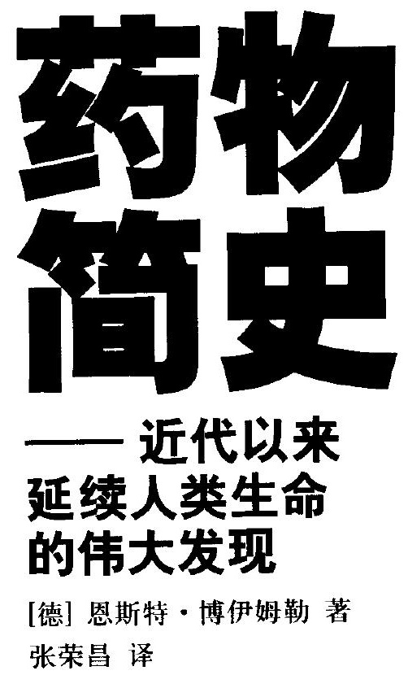
数位诺贝尔奖获得者， 10 多位享有盛誉的医药学家的珍贵回忆
近代以来最著名药物艰辛研制历程的丰满呈现
大制药公司紧闭着的大门慢慢敞开，挫折与希望，竞争与合作，严酷与人情味……
一个鲜为人知的世界展现在我们面前
广西师范大学出版社
－桂林•
－桂林•
Title：Die großen Medikamente．Forscher und ihre Entdeckungen schenken uns Leben Copyright（C） 1992 by Ernst Bäumler，Munich－Grünwald
Chinese language edition arranged through HERCULES Business \＆Culture Develop－ ment GmbH，Germany
Chinese language edition arranged through HERCULES Business \＆Culture Develop－ ment GmbH，Germany
著作权合同登记图字：20－2004－029号
图书在版编目（CIP）数据
药物简史：近代以来延续人类生命的伟大发现／
（德）博伊姆勒著；张荣昌译．一桂林：广西师范大学
出版社， 2005.12
（医学人文丛书）
ISBN 7－5633－5517－0
I．药… II．（1）博…（2）张… III．药物－研制－医
学史一世界－近代 IV．R97－091
中国版本图书馆 CIP 数据核字（2005）第 074246 号
（德）博伊姆勒著；张荣昌译．一桂林：广西师范大学
出版社， 2005.12
（医学人文丛书）
ISBN 7－5633－5517－0
I．药… II．（1）博…（2）张… III．药物－研制－医
学史一世界－近代 IV．R97－091
中国版本图书馆 CIP 数据核字（2005）第 074246 号
广西师范大学出版社出版发行
出版人：肖启明
全国新华书店经销
发行热线：010－64284815
北京盛兰兄弟印刷装订有限公司
（北京市大兴区黄村镇西芦城黄鹊路西 邮政编码：102612）
开本：
印张： 14 字数： 295 千字 插页： 8
2005年12月第1版 2005年12月第1次印刷
印数：0001～7000 定价：36．00元
如发现印装质量问题，影响阅读，请与印刷厂联系调换。
出版人：肖启明
全国新华书店经销
发行热线：010－64284815
北京盛兰兄弟印刷装订有限公司
（北京市大兴区黄村镇西芦城黄鹊路西 邮政编码：102612）
开本：
印张： 14 字数： 295 千字 插页： 8
2005年12月第1版 2005年12月第1次印刷
印数：0001～7000 定价：36．00元
如发现印装质量问题，影响阅读，请与印刷厂联系调换。
作者简介
恩斯特•博伊妈勒（Ernst Bäumler）出生于 1926年，曾做过记者和电视制作人，1963年至 1987年在德国著名的赫希斯特制药公司工作， 1986年因医学史方面的突出成就获医学名誉博士称号，现从事学术评论工作。
他的医学专著颇丰，代表作有《无限的分子 ——国际癌症研究回顾》（1967），《寻找魔弹》 （1971）《一家世界著名企业》（1988），《保尔•埃尔利希——为生命而研究》（1989）等。
译者简介
张农昌 北京大学西方语言文学系教授，翻译家。主要译著有《写给大家的简明世界史》，《致父亲：天才卡夫卡成长的怕与爱》，《诺贝尔奖获得者与儿童对话》，《没有个性的人》等。
张农昌 北京大学西方语言文学系教授，翻译家。主要译著有《写给大家的简明世界史》，《致父亲：天才卡夫卡成长的怕与爱》，《诺贝尔奖获得者与儿童对话》，《没有个性的人》等。
1．药物筬史
——近代以来延续人类生命的伟大发现 ［德］恩斯特•博伊姆勒 著
2．在古罗马行医
［法］雅克•安德烈 著
3．医学史
［意］卡斯蒂廖尼 著
前 言
这本书不是药物指南，尽管在这个领域完全有这个需求。也许在某些方面我们确实生活在一个＂信息极度灵通的社会＂，但就药物来说，绝不是这样的。这一再使人感到惊异：我们对这些在许多情况下对我们的生命有相当重要影响的药丸了解得如此之少。然而在将来，信息灵通的病人将对医生来说空前重要，因为只有病人理解这种种措施——严格遵循这些措施可确保治疗成功。
多年来，重要药物的发展史一直吸引着我，从保尔•埃尔利希的胂凡纳明到常用常新的阿司匹林。在许多药物的研制过程中，完全是偶然因素起了作用。这些药物往往以对一种原本未预料到的效果的观察为依据。然而巴斯德
一些年来，研究开始转变并最终离开旧的轨道。对新的化学物质如此长期且并非徒然进行的＂Screening＂——对众多化合物的制药效果进行篮选——将逐渐属于过去。未来在别处等候着。这方面的关键词叫：合理的 Drug－design。人们理解这个词的意义是
＂药物设计＂。这个药物设计的蓝本由深人分子领域的对疾病过程的认识来提供。在某个场合应该目标明确地跟疾病对抗，这时往往就是抑制一个唯一的酶或一个分子群。当代好几种重要药物是这样产生的：一些年以前，美国诺贝尔奖获得者路斯•埃利翁的别嘌呤醇，治心脏病和高血压的
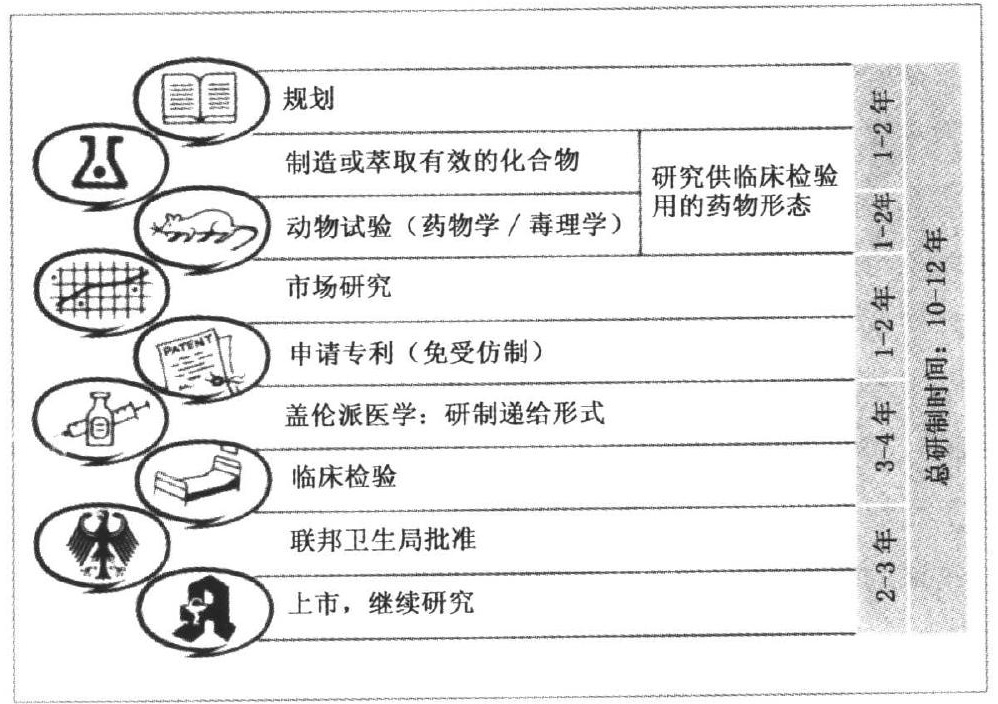
图 1 一种药物的研制过程
最近几十年的药物学成就经得起世人的品评。但我们的药库还是太贫乏，譬如就没有可以治愈癌症，艾滋病或我们这个时代最悲哀的疾病——早老性痴呆的药。迄今为止，大约只有
这本书描写了在许多实验室和诊所里进行的人类与疾病所作的这场坚忍不拔的斗争，尽管这些进展尤其是对相关人员来说，来得令人难熬地慢。许多药物的命运恰恰是在＂药物设计＂时取决于对疾病过程的详细了解，因此花钱很多的基础研究就变得越来越重要，尤其是分子生物学。大学的和工业界的研究机构必须在这方面超越一切界限，更紧密地合作。
这点肯定也是必要的：不仅小企业，制药工业的大公司更应加强协作。罗伊•瓦格洛斯，美国默沙东公司总裁不久前对我说：＂我们几乎在所有的领域里尝试我们的 ‘Do it yourself’（自己动手）。不过我们不回避在别人已经先于我们取得成功时缔结协议。＂就这样，默克
今天，一种新药物问世要吞掉巨额金钱。在大约 6000 种新合成的化合物中，一般情况下只有一种能克服全部障碍；它们从合成，毒理学检验，初步的临床前试验，临床经验直至制成药剂，德国制药联合会估算这笔费用达 2 亿美元左右。终于准备就绪了，紧接着便是国家卫生局的一系列批准手续。美国的＂食品和药品管理局＂花费了整整 28 个月的时间，最后才给一种新的化合物开绿灯。在德国，联邦卫生局工作起来并不比这快多少。
即便在批准后，仍要密切注视每一种药物的作用，以便掌握可能发生的副作用。有些副作用只有在使用几千次后才能被发现。
每一位医生都必须向医师公会的药物委员会和联邦卫生局报告这些副作用，以便给病人提供最大可能的保护。
我们大家都巴不得有那种只有预期的作用，没有副作用的药剂，这是可以理解的。不过，这样的＂魔弹＂只是一种幻想。所以仔细权衡得益和风险将永远是必要的。这里有一个区别：是防治危及生命的重疾呢，还是避免较轻微的病痛。不过并非总是命里注定地必须忍受副作用。在这方面，英国的格拉苏制药公司曾提供过一个很好的例子：它的新药剂昂丹司琼能够减少某些治癌药物的伴发症状；某些病人觉得这些伴发症状令人无法忍受，以致治疗不得不中断。
本书也要对美国诺贝尔奖获得者罗萨林•亚洛夫在一篇访问记中对我所说的话作出验证：科学家和民众必须经常进行对话，以便澄清风险和副作用问题，利用科学来达到目的。没有风险的生命是不存在的。
自从年轻一代的生物化学家和分子生物学家在美国开创遗传工程时代以来，人们便对生物工艺学产生了急切的期待；不是所有的期待都实现了，尤其就时间概念而言。然而，在这期间出现了用遗传工程制造的药物。一些新药也预示着很大的希望，特别是在癌症治疗方面。
本书以关注现在正在进行的，引人人胜的大规模研究活动——破译人类的基因信息——终结。分子生物学家们一步一步迫使基因组泄露其秘密。尽管这其中还伴随着某些悲观主义的声音，但是总有一天，我们不仅能够更好地了解和治疗受遗传因素限制的疾病——人们只需想一想患先天性潻液稠厚症的儿童们今天仍然残酷的命运——而且也能更好地了解和治疗许多别的缩短或折磨人类生命的疾病。
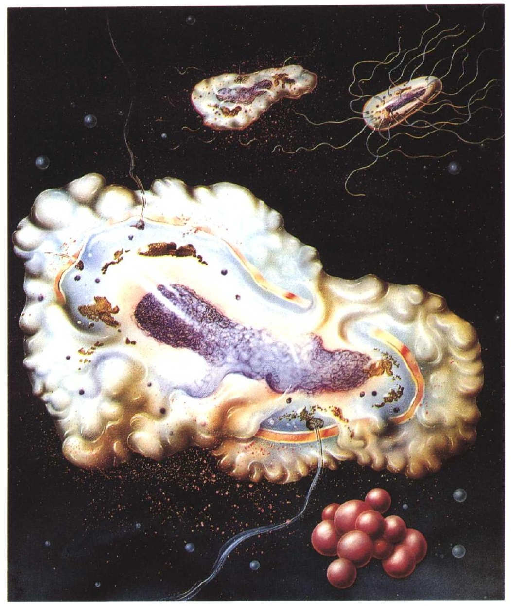
1 盘尼西林作用于细菌病原体：细菌受到盘尼西林分子 （球）攻击。它的细胞壁部分溶解，致使细胞所含之物流出。右上方是一个完好无损的细菌。线（＂鞭毛＂）用作移动。
2 亚历山大－弗莱明发现盘尼西林的盘尼西林真菌原始培养液。
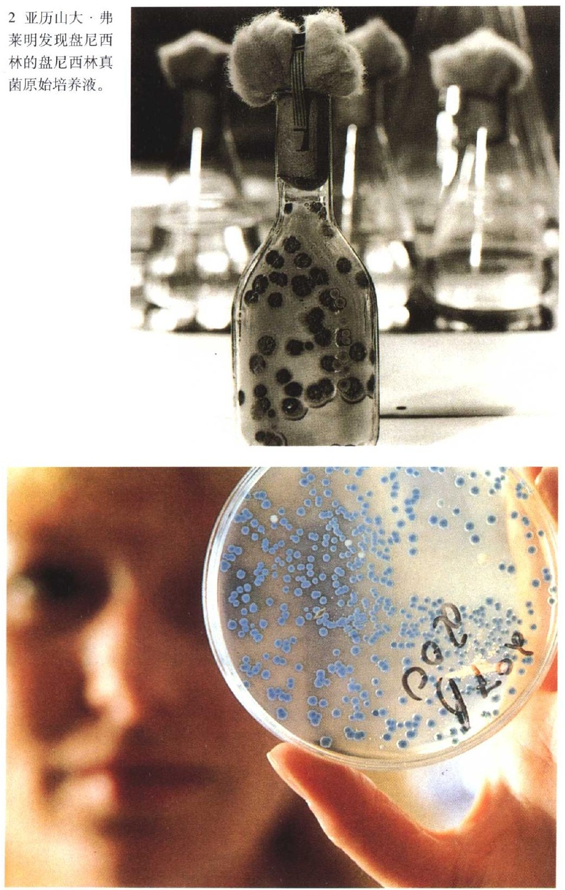
3 今天就这样在实验室里培养细菌：塑料盘含有一种
果汁冻状的培养基，细菌菌落在这个培养基上生长。
果汁冻状的培养基，细菌菌落在这个培养基上生长。
La Formule 606
Chanson àActualité
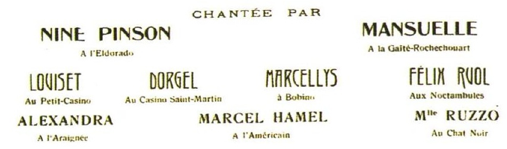
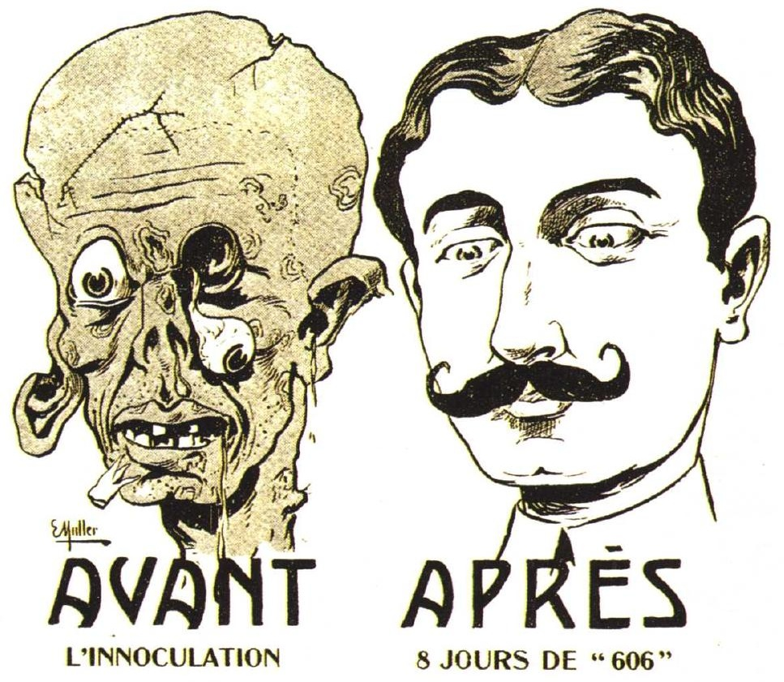
Daroles de VALENTIN DANNFTIFR \＆MARCFI HAMFL
5 昨日和今日
的白喉血清
的白喉血清
6 一盒 1919
年的阿司匹林
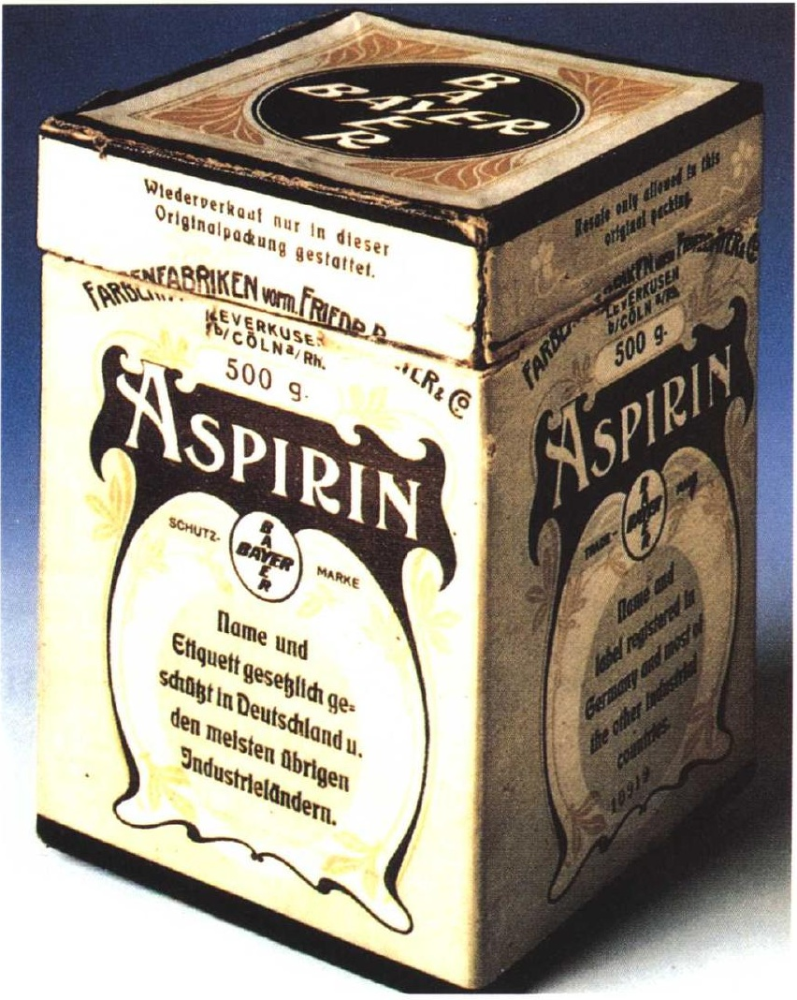
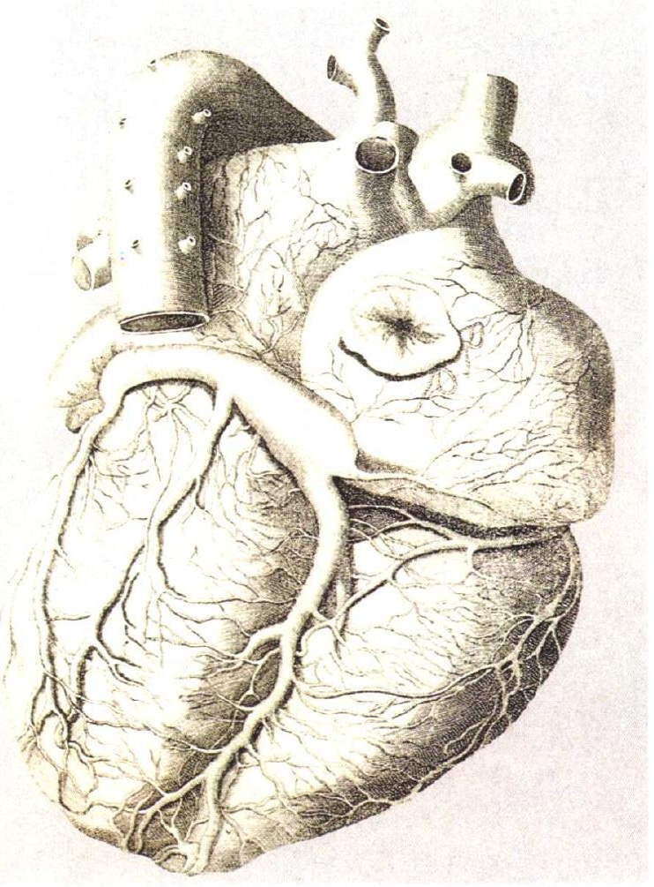
年的阿司匹林
7 人的心脏。人
们清楚地辨认
出心脏冠状血
管，它们供给
心肌血液和氧
气。它们若受
到堵塞，就会
发生心肌梗塞。
们清楚地辨认
出心脏冠状血
管，它们供给
心肌血液和氧
气。它们若受
到堵塞，就会
发生心肌梗塞。
8 动脉硬化症就是这样形成的：在血管壁上形成脂肪质 （胆固醇），蛋白质和矿物质的沉积物。
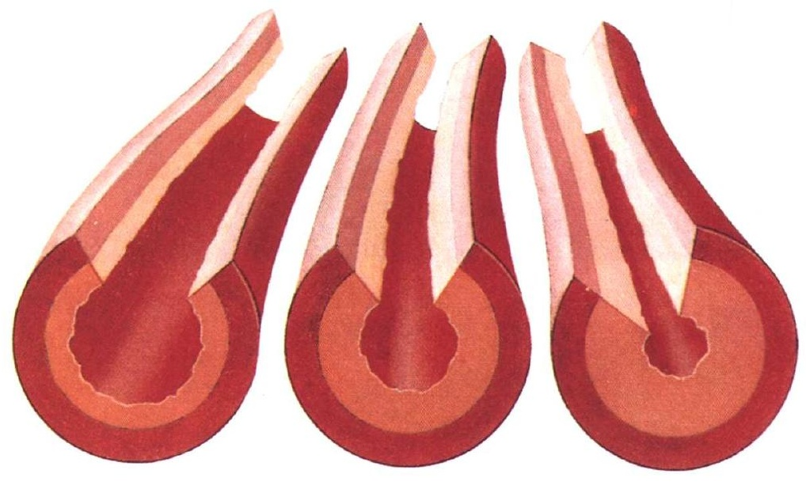
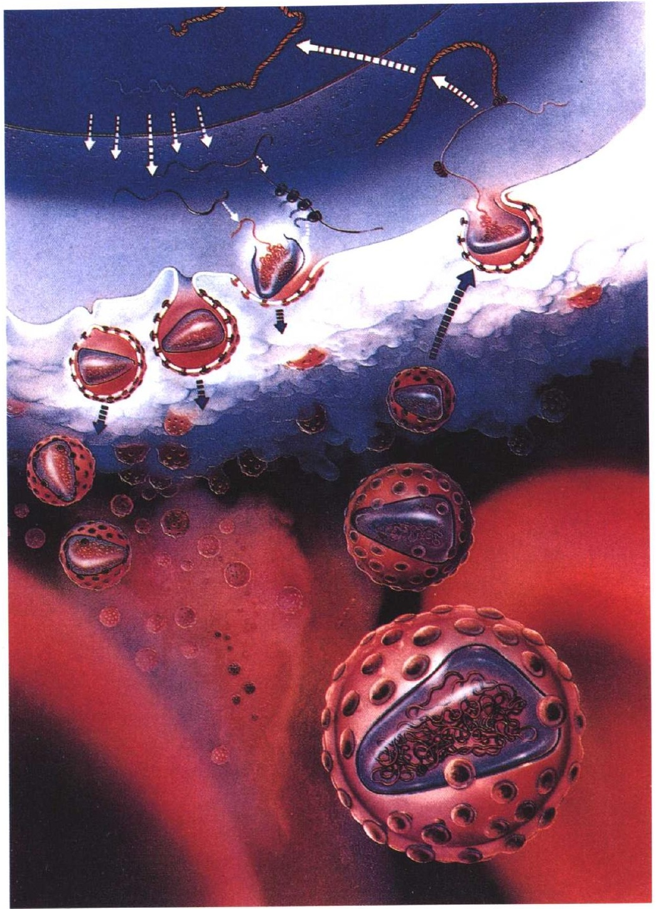
9 艾滋病病毒（HIV）通过细胞膜侵入免疫系统（上方）的
一个 T4 辅助细胞中。于是细胞就生产众多的病毒后代。
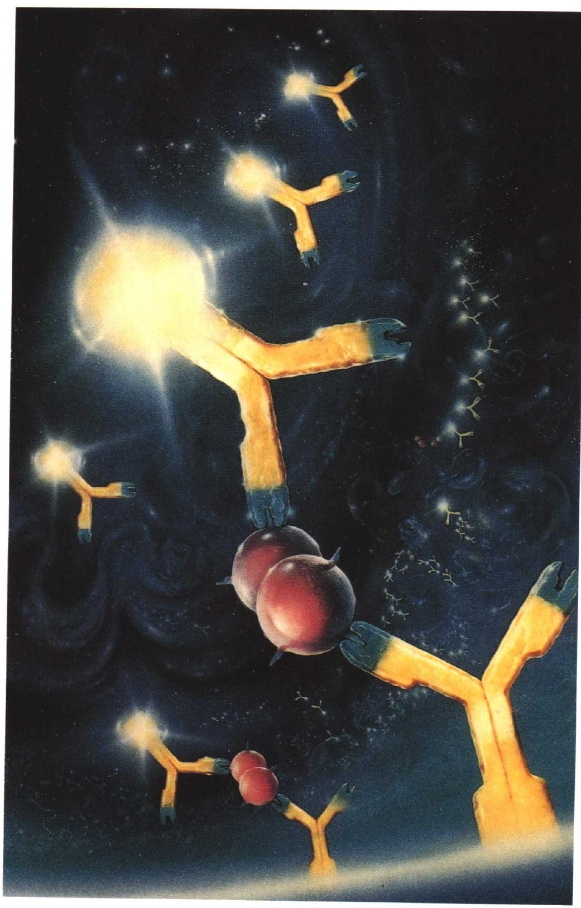
一个 T4 辅助细胞中。于是细胞就生产众多的病毒后代。
10 单细胞株的抗体是 Y 形的蛋白质分子，它们专门粘牢在某些异体物质（球）上，并且将能够派作诊断或治疗用场的地方用记号标出。
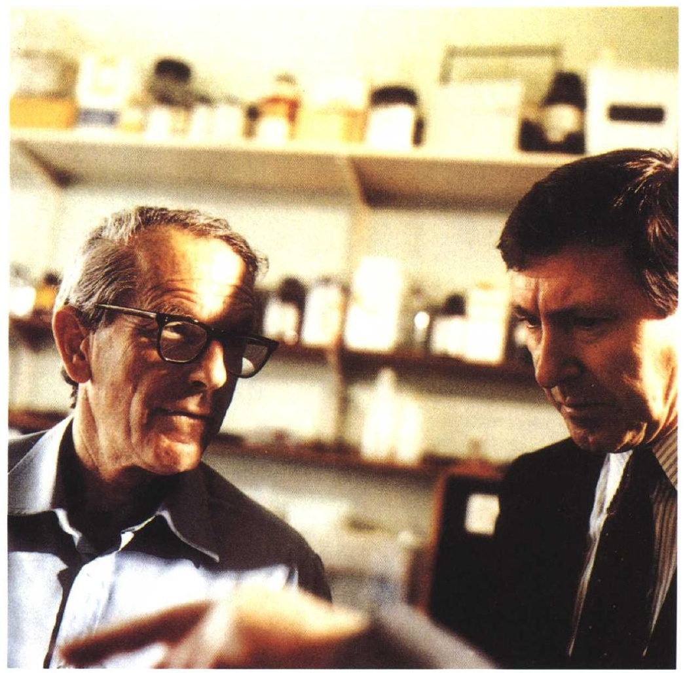
11 恩斯特•博伊姆勒（右）在与两次诺
贝尔奖获得者弗里德里克•桑格交谈
贝尔奖获得者弗里德里克•桑格交谈
目 录
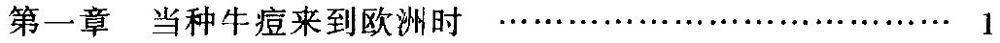奴隶贩子了解情况／2 寄往英国的第一封信／3 爱德华种痘／4 囚犯们是头一批＂牺牲品＂／5 维也纳和柏林的状况／5 伯克利的詹纳大夫／6 一个危险的实验／7 皇家学会的怀疑／8 巴斯德出场／9 想像力和精力／10 玛丽•巴斯德———位伟大的女性／11 发酵的秘密／12 不是原始生殖／13 46 岁得中风／14 病菌被＂减弱＂／15 梅伦的试验／16＂种痘之父＂／18 烙针疗法／19 为了挽救一个男孩的生命／20 磨细的脊髓当疫苗／21 临终前面对嫉妒者／23
第二章 柏林的微生物猎手
第三章 防治白喉和破伤风
在普鲁士的卫戌部队中／48 熏蒸消毒作为疗法？／48 在波恩卡尔•宾茨处／48 进一步的炭疽病研究／51 白喉的细菌毒素／51 第一次发表的论文／52 利斯特勋爵来访／53 在巴斯德研究所受到的欢迎／54 维尔尼克——最密切的合作者／55阿尔特霍夫的支持／56 巧遇劳本海默／56 一封致贝林的信／57 合作的基础／57 与埃尔利希合作／58＂爱玛别壁＂中的和陸／59 终于有了一个好消息／60 给贝林一个教席？／ 60谁得诺贝尔奖？／ 62 贝林工厂兴起／64 衰堨／64 最后的日子／66
第四章 保尔•埃尔利希和维纳斯的疾病
68
绍丁的发现／69 在斯特拉斯堡上大学／70 最重要的：潜流／71 一个充满颜料的实验室／72 在西里西亚结婚／74－盍本生灯和吸墨水纸／74 免疫学处于重要地位／75 在罗伯特•科赫那里／76 牛奶中的抗体／77 法兰克福的诱惑／78返回化学疗法／79 实验化学疗法／80 一种名叫阿托西尔的物质／80 为埃尔利希建一座新研究所 82 耐药物的微生物／83＂ 606 ＂——一个突破？／ 84 合适的剂量／85 埃尔利希受顽扬／86＂胂凡纳明战争＂／88 胂凡纳明：战争与和平／89 回忆的时刻／90 死在巴特洪堡／90
第五章 和病原体赛跑 ..... 92
第五章 和病原体赛跑 ..... 92
第一批抗细菌的药／93 战墂中的医生／93 磺胺药物——第一个大的成功／94 帮助许多人／94 一种消毒剂／95 一个又一个系列实验／95 第一个目标已经达到／96 救了自己的女
几／97 诺贝尔奖——拒绝接受／98 在伦敦的一个实验室里／99 盘尼西林被发现／100 培养霉菌／100 瞬间的厚意／101 第一批出版物／102＂牛津圈＂形成／104 这药够用多久？／105 起初没什么兴趣／106 美国默克公司开始生产／107 对结核病也有疗效／107 第一位女病人／108 提高剂量／109 继续寻找／ 110 多西环素——卓有成效的四环素／111 与伤寒病原体作斗争／111 新的盘尼西林／112 皮肤科医生小心谨慎／113 真菌在工作／114 肝脏中的生物转换／116 细菌变得有抵抗力／117 通过新的侧链取得进步／117 攻击点：细菌细胞壁／118 危险的过敏反应／119 撒丁岛上的一个发现
第六章 有机体——种完美的防御体系 ．．．．．．．．．．．．．．．．．．．．．．．． 126原产地骨髄／128 抗体的兵力／129＂大吞噬者＂在行动／129抗原和抗体的复合体／131 胸腺中的训练／132 抗体的多样性／133 巴塞尔的首任主任／134 一位来自德国的年轻生物学家／134＂有血有肉的科学家＂／135 巴塞尔——半拉天堂／135 骨镈细胞作为研究对象／136 跟恺撒波长一样／138一个使人无法入睡的主意／138 满腹狐疑的两个月／138－句关键性的话／139 新的工作地点弗赖堡／140 穿借来的礼服出席诺贝尔奖颁奖仪式／141 抗体用作诊断和治疗／141抗体的人性化／142 机体中的内战／143 攻击岛形细胞和边线 143 攻击信使物质／144 研究三角园区的一个实验室／146 挪威的一种真菌／146 对研究的鼓励／147 辅助细胞受阻碍／148 一位医生不放弃／150
第七章 各大洲旧的和新的灾祸 ..... 152
第七章 各大洲旧的和新的灾祸 ..... 152
在阿尔及尔的一个帐篷里／153 病原体的变形／154 金鸡纳霜的故事／155＂我这里痛＂／157 扑疟喹啉开了个头／157阿的平——第一个成果／158 瑞士研究人员获得诺贝尔奖／160 寻找一种疫苗／160 像金字塔那样古老／ 163 稻田里的危险／164 达姆施塔特的第一个成果／ 165 麻风没有消失／166 四种药物／167 防治麻风和结核病／168
第八章 获取抗艾滋病药的漫长道路 170
一种酶的关键作用／171 罗伯特•加洛寻找一种病毒／172 来自加利福尼亚的骇人听闻的消息／172 寻找病原体／174 巴斯德研究所的病毒寻找／175 HTLV－3 和LAV 变成 HIV／177发源地非洲？／178 HIV－ 2 被发现／178 病毒接过指挥权／179 HIV－1 寻找其牺牲品／179 HIV———位变形艺术家／181 感染开始时／181 特别危险——肛交／183 第一批抗体出现／183 患病的阶段／184 真菌找到许多器官／186世卫组织的数字／186 艾滋病——儿童也在劫难逃／188 从抗癌药到抗艾滋病药／189 新的制剂在望／190 获得疫苗的漫长道路／192
第九章 荷尔蒙活化生命 ．．．．．．．．．．．．．．．．．．．．．．．．．．．．．．．．．．．．．．．．．．．．．．．．．．．．．．．．． 195
一个上级机关／196 围绕着甲状腺／197 寻找高效物质／198 ＂梅泽堡的三合一＂／199 诊断上的进步／200 治疗和药物／201 4克肾上腺素／201 德国博物馆里的一只小瓶／202来自肾上腺的 30 种高效物质／202 卓有成效：化合物＂E＂／203比盘尼西林更具优先权／204 301号样品的成功／205 可疑的胖圆脸／206 合成
一个上级机关／196 围绕着甲状腺／197 寻找高效物质／198 ＂梅泽堡的三合一＂／199 诊断上的进步／200 治疗和药物／201 4克肾上腺素／201 德国博物馆里的一只小瓶／202来自肾上腺的 30 种高效物质／202 卓有成效：化合物＂E＂／203比盘尼西林更具优先权／204 301号样品的成功／205 可疑的胖圆脸／206 合成
药丸／210 对垂体的阻止作用／211 最初的剂量太高／211只有孕激素的药丸
第十章 有病的心脏和有病的胃
苏格兰的一位年轻生理学家／218 一种治心绞痛的药／219
受体被封锁／221 拮抗肌及其对手／222 普奈洛尔初次上市／223 点鼻药水成为降压药／224 做自身试验的研究人员
苏格兰的一位年轻生理学家／218 一种治心绞痛的药／219
受体被封锁／221 拮抗肌及其对手／222 普奈洛尔初次上市／223 点鼻药水成为降压药／224 做自身试验的研究人员
第十一章＂大清洗＂——躲避危险的血脂 ……．．．．．．．．．．．．．．．．． 253
一种例行检查／254 —种怀疑得到证实／255＂良性＂和＂恶性＂胆固醇／256 令人捉摸不透的病象／257 通过移植得到拯救／258 特种饮食能导致什么？／259 还要重视别的风险因素／261 只是一个令人惊恐的幽灵？／262 中性脂肪＂黑名单＂
一种例行检查／254 —种怀疑得到证实／255＂良性＂和＂恶性＂胆固醇／256 令人捉摸不透的病象／257 通过移植得到拯救／258 特种饮食能导致什么？／259 还要重视别的风险因素／261 只是一个令人惊恐的幽灵？／262 中性脂肪＂黑名单＂
物——狗／270 钱花完了／270 病人莱尼／271 第一个胰岛素单位／272 一个新的时代开始／272 10年耐心工作／273 药片治糖尿病？／275 法国的初期工作／275 自身试验弄明白了问题／276 曼海姆和赫希斯特的进步／277疗效在哪里？／277 通往人胰岛素之路／278 小小的区别：一种氨基酸／279—种新的药物：阿卡波糖／280—枝钢笔／280 通过移植得到拯救／280 心意已决／281 身体的实验室：肝脏／282 微型化工厂／284 男人酒量大一些／284一片生菜叶足矣／285 乙肝的罪魁祸首／287 性交传染／288 并不总是发生黄疸／288 已消亡细胞的代用品／290 小血管的消亡／291 赫希斯特的一项新研制／291痛风——尿酸过多／292 两位诺贝尔奖得主，一种药物／293
第十二章 信使物质——大脑中的主要行动者 294洛赫介入／295 安定——绝对的畅销品／297 信使物质是如何被发现的／297 两个诺贝尔奖授予神经生理学家／298受体在哪儿？／299 有自己鲜明特色的模仿者／300 上瘾的危险有多大？／301 折磨人的戒瘾／301＂庆幸有了它们＂／302 安眠药的从前和现在／303 巴比妥酸／304 苯并噻唑品对巴比妥酸剂／305摇篮在法国／306 对神经传送器的作用／308 独裁者们的病／309 一大成就：氟哌啶醇／309 荷尔德林和路德维希王／311 抑郁——比估计的更常见／312 原因清楚的抑郁症／313＂问题变得严重了＂／313 选择正确的药物／314 躁狂的高度活性／315 时机成熟／316 治结核病和抑郁症／317 许多药有同样效果／318＂诺米芬辛＂被撤回／320 最初在澳大利亚使用／321 阿洛伊斯•阿尔茨海默发现—种病／321 神经细胞萎缩／322 脑软化——梅毒后遗症／323 52 岁早逝／324
对原因的猜测／325 还没看到一线光明／326 关键物质：乙酰胆碱／326
第十三章 几百万人必须忍受疼痛 328
在进化的过程中
第十四章 灾祸可能从基因就已开始 352
禁忌依旧／353 癌症并非不可征服／354 癌症搜索者们仍瞄准苯芘／356 篮选上的一个进步／357 好几个原因碰到一起／358 射线击中核酸／358 日光浴并非没有危险／359胃癌在退却／361 病原体起作用吗？／362 土拨鼠得㾇——人得感冒／363 细胞被变换／364 乳头瘤病毒受怀疑／365 疫苗接种可能吗？／366 肿瘤基因的作用／367抑制基因丧失之时／368 预防最重要／369 当心发霉的面包／370
第十五章 武器还不够有效 371
保尔•埃尔利希的一个建议／372 涉险治疗／373＂安道生＂的故事／374＂磷雌酚＂开了个头／375 初步临床经验／376 ＂伪装的＂结构成分用作治疗
的上司／381 在美国的洛赫研制的一种新药／382 植物提取物／382 抗生素抗癌／383 酶抗癌／384 激素抗癌／384释放激素带来的进步／385 激素刺激激素／386 适合治癌／386 新贵白金／387 成功的组合治疗／387 儿童癌症／388 高存活率／389 Hodgkin 病的良好预后／389 ＂COPP＂能拯救生命／390 治愈小细胞支气管癌的希望／391胃癌在下降／392 干扰素＂复活＂？／393＂CSF＂大有希望／394 10 亿只老鼠的肺／394 很有现实意义：白细胞介素／395 ＂TNF＂——可杀死癌细胞／396 恶心和呕吐减少了／396
第十六章 基因修复和新的药物 398
初窥细胞核／398 导师复核／400 在蛋白质的阴影里／401初步分析遗传物质／402＂一个发疯似的行动＂／403 围绕着基因的结构／404 几十亿对碱／405 DNA 的起源／406密码被破译／407 一个信条倒塌／408 一个基因———个蛋白质／408 一种细菌的肖像／409 遗传工程的工具／410细菌作为蛋白质制造者／411 欧洲公司试图追上／413 在黑森州的＂绿色障碍＂／413 模范区里更幸运／414 用新基因治疗／416 老人舞蹈病／416 一个基因足矣／417 CF 基因找到了／419 基因探子使诊断成为可能／420
第一章 当种牛痘来到欧洲时
一位贵夫人，一位英国乡村医生和一位法国化学家为人类立了功。他们的辛勤努力为世界卫生组织（WHO）能够在 1977 年宣布 ＂世界上已经没有天花＂作出了贡献。世卫组织还希望不久也能够为其他几种古老的瘨疾致一篇相似的悼词。
当人们给民间俗语叫＂天花＂的＂恶性脓疱＂写悼词的时候，当人们在研究别的瘟疫的时候，他们自然而然地会从一位美丽的妇女开始：从玛丽•蒙塔古夫人开始。
蒙塔古夫人是一位鄙视一切传统陋俗的妇女。虽然她是一位公爵的女儿，她却不固守人们期望于一个上流社会贵妇人的那种角色。当家人不许她与她选择的男子结婚时，她就毅然决然地和他一起——未曾结婚——逃往法兰克福。这一具有浪漫色彩的出逃引起的轰动并没扰乱她的生活，她喜欢人们谈论她。
她后来是否还爱这个最终成为她的配偶的人，按照几个现代英国传记作家的描述，这一点颇受怀疑。他们暗示，玛丽夫人不久便开始寻找各式各样的消遣；一位传记作家甚至极不礼貌地认为： ＂她不满足于一个苹果。通常她立刻就要得到整棵树。＂
玛丽夫人的丈夫是外交官，他们一起相继生活在欧洲的多个城市，直至他被任命为驻土耳其大使。倘若他的妻子只是一位寻
常的大使夫人，那么她肯定只会了解到东方国家的一个方面，即人们通常向异国人展示的那一面。
然而，玛丽夫人喜欢用全部精力去探求未知的事物。她的好奇心永不枯竭，这主要也是因为她喜欢给她在英国的朋友们写有趣的信。她往往隐匿姓名身份并尽量乔装改扮漫游城市。她研究苏丹后宫生活，和皇后闲谈，最后甚至可以访问哈吉娅•索菲娅——种很少给予基督徒的礼遇。
奴隶贩子了解情况
希腊医生埃马努埃尔•蒂莫尼是玛丽夫人的一个熟人，玛丽从他那儿了解到许多东方的秘密。有一天他给她讲述，人们在这里如何试图防治天花。
这个题目引起了这位夫人的极大兴趣，因为这＂黑疱疮＂当时恰恰再度使欧洲陷于恐惧之中。与呈波浪形出现的＂黑死病＂鼠疫不一样，天花在短得多的间隔时间内威胁人类。
玛丽夫人在童年时代认识了天花。她曾得过天花，当然只是轻度的状态；留在她身体上的小疤痕是看不见的，挂在＂美国国立医学图书馆＂的她的那幅美丽的肖像画上无论如何也是看不见的。在不怎么幸运的其他人身上，譬如在贝多芬身上，那些疤痕终生都在证明着此人得过这种病。
这位希腊医生告诉玛丽夫人，说人们用一把小刀将一点天花脓疱的脓划进皮肤，从而使后宫的美丽女奴们可以免受这种使人破相的疾病的侵袭。想将他们的＂商品＂尽可能完好无损地出售的奴隶贩子总是这样做的。虽然用这样的方式处置后也会产生一个小疤痕，但是它与未经这样的防备措施而形成的疤痕相比是极小的。
医生讲述，中国人就曾有过这样一种抗天花的办法，在中国，
人们将研细的天花㾰皮擦进儿童的鼻子里。于是，许多人果然不再得病。医生继续解释，在印度，人们让孩子穿天花病人的衣服，并用针尖将病人身上的脓转到健康人身上。
希腊人接着说，几乎每一次都取得了这样的效果：只出现一次轻微的，很快又消退的炎症。此后大多数种过痘的人一辈子都受到保护而不遭天花侵害。
玛丽夫人一直担心，她的儿子爱德华会在伊斯坦布尔染上天花。当别人也向她证实了希腊医生的描述时，她看到了一种令人神往的可能性：让这种形式的预防措施也在英国落地生根。
寄往英国的第一封信
由于她的丈夫还得继续任职一段时期，夫人便在1717年4月1日给一位名叫萨拉•奇斯韦尔的熟人写了一封信。信中写道：＂在我们家乡广为蔓延和危险的痘疱，在这里由于出现了一种人们称之为‘嫁接’的办法而几乎没有危险了……有些老年妇女，每年秋天，在 9 月，炎热天气一过，她们就做这种手术，从中大赚一笔钱。首先是一个邻人遣人去另一个邻人家，询问那里是否有人要种痘预防天花。在聚集起十五六个人后，就出现了一位拿着一个盛满天花脓的核桃壳的种痘妇。她用一根大针划入静脉，这不会比一个普通的抓痕引起的疼痛更多，然后把一个针尖上所能容纳的脓汁滴人这根血管……她以这样的方式划开四至五根血管。＂
＂第八天，＂玛丽夫人继续写道，＂种过症的人开始发烧，他们不得不卧床两天，很少有卧床三天的。他们的脸上会出现 20 至 30 个脓疱，但它们不会留下疮痕。一个星期后病人跟种痘前一样健壮。＂
＂第八天，＂玛丽夫人继续写道，＂种过症的人开始发烧，他们不得不卧床两天，很少有卧床三天的。他们的脸上会出现 20 至 30 个脓疱，但它们不会留下疮痕。一个星期后病人跟种痘前一样健壮。＂
爱德华种痘
玛丽夫人是一位果断的女人，在思想斗争了一些时候以后， 1717 年秋天，她让她的儿子爱德华按上述的方式接受种痘。怀着高度紧张的心情，怀着一种混合着母亲情感，深切的忧虑和好奇的心情，她从开始起一直密切注视着事态的发展。爱德华果真发烧并起了几个痘疮。他用紧张不安的眼光望着他的母亲，母亲这时开始自责起来，并在考虑，让儿子种痘的决定是否正确。
但是不久痘疮便痊愈了。这时玛丽夫人就可以放心爱德华永远也不会得这种病了。她的大胆决定是正确的。然而，玛丽•蒙塔古却永远也不会忘记那些不安难熬的时日。但是爱德华身上却留下了一个疮痕。后来上一所寄宿学校时，他在那里多次试图溜掉；寻找他的那些人得到指示，说这孩子有一个特别的识别记号：他有痘疤。
1721 年玛丽夫人才返回英国。她早就下定决心，要在她的祖国推广种痘。她要她的医生迈脱兰德博士支持她做这件事。
如果真想使她的计划获得成功，玛丽夫人就必须设法让国王和宫廷赞成种痘——也叫嫁接或 Okulieren
几乎不讲英语，只用一种獘脚的拉丁文和他宫廷里的人交谈的，来自汉诺威家族的国王乔治一世，算不上一个思想开明的榜样。相反，威尔士公主卡罗琳却表现出更大的兴趣。她承担义务，去＂劝说＂很不乐意的，没有表示关切的国王。
囚犯们是头一批＂牺牲品＂
乔治一世终于作出一个决定：七个被判处死刑的罪犯可以在绞刑架与种痘针之间作出选择。当然所有七个人都决定选择种痘。他们果真全部健康地活了下来，仅仅是带着几个痘疤他们就恢复了自由。
乔治一世还要求做第二个＂试验＂。也许一一他这样猜测
于是乔治一世同意让他的两个孙儿种痘。他们经受住了这种治疗并且没有受到天花之害。
玛丽夫人用这一成果挫败了大多数医生的抵抗。自从国王让他的孙儿们＂接种＂以来，简直是爆发了一场种痘热。几家接种所相继建立起来。
但是英国的卫生状况始终很糟糕，因此一再发生事故。血液中毒事件时有发生，还不时发生感染别的疾病的事件，辟如感染梅毒，它在英国被叫作＂great pox＂，不同于＂small pox＂，不同于这种 ＂小＂（真）天花。
结果，议会里就赞成和反对种痘爆发了激烈的辩论。医生的营垒里也不乏反对种痘的人，有时他们在一些地方促成一项种痘禁令。
维也纳和柏林的状况
奥地利女皇玛丽亚•特蕾西亚并没因这场争论而失去自己的信心。她自己就曾患过天花，她的脸上还有着轻微的疤痕。但是
她内心的伤痕却大得多，因为这病，她失去了两个孩子。所以她就让马克西米利安和费迪南德这两个大公爵
弗里德里希＂大帝＂（ 1740 年在位），也相信种痘有用。他对医学很感兴趣，也许是因为自 29 岁起他就一直受痛风病和痔疮的折磨吧。他那人数众多的，常常更换的御医的日子不好过，他们很快会失去他的宠信，如果他不喜欢他们的理论或者不喜欢吃他们给他规定的饮食的话。
辟如一位医生就是因为想阻止弗里德里希吃意大利巴马干酪而失宠。另一位，约翰•利贝屈恩，被国王逐出宫廷，因为他经常在自己的口袋里随身携带着肠，胃，肺的团块；弗里德里希对此厌恶至极，他在相当长时间内不再吃肉。
但是国王不但为他自己的经常有些麻烦的身体，而且也为他的臣民的健康状况担心。他把英国种痘医生请到普鲁士来，并要他们撰写一篇供患病儿童父母阅读的种痘知识启蒙文章，＂但是文章中不可含有一句拉丁文的和医学的专业术语＂。真可惜，他不能监管今天的药品说明书！否则有他相助，这些说明书也许每一个人都能读得懂了。
国王向种痘反对者们强调指出：＂为了加快一项如此重要的事业以造福人类，困难应该使人振奋，不应该使人气馁。＂
伯克利的詹纳大夫
＂接种＂在英国颇受争议，大多数医生与其说是接受，不如说是以冷漠表示拒绝。这时，出现了一位医生，他将作为＂接种天花疫
苗之父＂载入史册。他的名字：爱德华•詹纳。他是一位牧师的儿子， 1849 年在格洛斯特的小镇伯克利出生。
詹纳并不是废寝忘食追求医学发现的研究人员，他喜欢安逸和悠闲，并且不把自己看作是医学改革的先锋。
詹纳跟布里斯托附近萨德包利的一位普通外科医生学了 6 年之久的手艺，后来他成为著名外科医生约翰－亨特的弟子。亨特算得上在自己身上做试验也不惧怕的研究人员，他把一种他认为是统一毒素的性病传染物质传染给自身，可他却染上了梅毒的病原体，加快了他的早亡。
通过与亨特的联系，詹纳得到陪同航海家詹姆斯•库克做一次环球航行的机会；可是他拒绝了并返回伯克利，他在那里工作之余还研究鸟类的生活习性。他最喜欢研究的鸟是杜鹃。
在伯克利，詹纳经常看见患天花的人。没有人知道，他们会继续缠绵于病楬日渐衰瘦下去，还是能康复，但永远破了相。人人都害怕这个＂Small pox＂。动物，尤其是母牛，也会得天花，被它们传染上的人病症轻微，却能永远不再得天花。
詹纳在少年时期曾被人用一种相当野蛮的方法防天花种过痘，所以在谈论＂接种＂时，他总是很专心致志地倾听。但是起先他没从中得出自己的结论。他继续研究他的鸟并尽自己所能地照料他那些大部分是农民的病人。
一个危险的实验
又过了许多年，詹纳才又回忆起昔日关于种痘的报道。当天花重新在英国蔓延开来时，他感觉自己受到了挑战。也许人们真的能够用母牛天花痘保护人类免受这种痘疮的侵害！詹纳越来越清楚地看到了用这样的方法使人类免受天花之害的机会。这件事做起来不可能一蹴而就。
终于，1796年5月14日，詹纳做了一个试验，如果这个试验若结局糟糕就会危及他的整个行医生涯。在孩子父亲同意之下，他给 8 岁的詹姆斯•菲普斯种了牛痘，这痘苗是他从年轻的挤奶女工萨拉•尼尔梅斯手上的一个脓疱中提取的。
詹纳在詹姆斯•菲普斯的胳臂上划了两个切人口。他在这两处地方涂抹上他从＂牛痘疱＂中提取的脓。
在这之后不几天，菲普斯开始发烧。然而不久烧就退了，孩子的胳臂上只留下了两个种痘的疤痕。菲普斯因此就不会得真正的天花了吗？詹纳无法肯定地说这话。于是他就提取了一种来自真正的天花的痘苗。他用这种痘苗在詹姆斯•菲普斯的两只胳臂上种了好几次。种入的牛痘没有发作，孩子依然健康。
皇家学会的怀疑
詹纳向英国皇家学会和著名的皇家自然科学家学院报告他的试验，然而这没给这些大人物们留下什么深刻印象。他得到迅速撤回他的论文的劝告，说是不然的话，就会危及他的医生声望。对于约翰•亨特的一个弟子来说，这是一个严重的挫折。
詹纳迟疑不决。他天生不是一个富有斗争性的人，他巴不得重新退回到他在伯克利的小天地中去。可是他可以这样做吗，如果他已经找到了可以挽救许多人生命的方法的话？
他的朋友们也敦促他继续下去。他们了解他的正直性格，并知道他的报告的全部细节都正确无误。于是詹纳就自费刊印了一篇论文：《关于天花牛痘疱的原因和影响的调查》。
＂Variola＂，彩色小丘疹，这是弗兰克地区的主教马里乌斯•冯•阿劳谢斯在公元570年给天花取的名字。＂Vacca＂是拉丁语中的母牛，因为痘苗是从母牛身上提取的嘛。
＂Variola＂，彩色小丘疹，这是弗兰克地区的主教马里乌斯•冯•阿劳谢斯在公元570年给天花取的名字。＂Vacca＂是拉丁语中的母牛，因为痘苗是从母牛身上提取的嘛。
詹纳的文章花了 7 先令 7 便士。＂人类很少得到过一笔如此重
要的，比这更价廉物美的捐助。＂一位英国作家如是说。
现在终于出现突破。下院肯定了这位卓有成效的医生，如今他几乎无法招架自愿要求种牛痘的人。议员们甚至答应给詹纳一笔酬金。医生中当然仍有反对者，他们的声音永远不会完全沉默。不过他们往往不是学术上的对手，而是姟妒者。当 1814 年要任命詹纳为＂皇家医师协会＂教授时，这样的人显然行动起来了，他们使这一任命取决于对他进行一次拉丁语考试。詹纳拒绝了。
现在终于出现突破。下院肯定了这位卓有成效的医生，如今他几乎无法招架自愿要求种牛痘的人。议员们甚至答应给詹纳一笔酬金。医生中当然仍有反对者，他们的声音永远不会完全沉默。不过他们往往不是学术上的对手，而是姟妒者。当 1814 年要任命詹纳为＂皇家医师协会＂教授时，这样的人显然行动起来了，他们使这一任命取决于对他进行一次拉丁语考试。詹纳拒绝了。
然而詹纳在他那个时代的君主中却有许多敬仰者，其中有拿破仑，俄国沙皇亚历山大一世和弗里德里希•威廉三世。当普鲁士国王战胜拿破仑后在伦敦逗留时，他谦和地接见了这位天花痘苗的发明者。
詹纳成为实验免疫学的体内自然抵抗力论和有意识地使这种抵抗力为健康服务的方法论的创始人。
不过詹纳却从未给为什么种牛痘可以预防天花这个问题找到一个令人满意的答案。1823年他在自己的家乡死于中风。他的纪念碑后来立在特拉法加尔广场；在利奇费尔德的主教教堂墓室里人们立了一个纪念碑，对早就在他之前去世的玛丽夫人表示敬意，这座纪念碑把她描绘成美丽女神。
巴斯德出场
在詹纳去世的前一年，即 1822 年，为詹纳的许多问题找到答案的人诞生了：路易•巴斯德。跟詹纳相反，巴斯德具有一种简直是热情如火的性格，一种不知疲倦，勇往直前的精神。他出生在多雷，父亲是一个普通的鞣革工人。巴斯德一家人虽然都是普普通通的人，但是他们都有进取心。尤其是父亲约瑟夫•巴斯德，他曾在拿破仑的军队里服过役并获军士军衔，在那里人们授予他荣誉军团十字奖章，他通常在星期天骄傲地佩戴它。
在接管了制革厂之后，约瑟夫•巴斯德把自己的全部心血倾注在儿子今后的前程上。母亲在这方面跟她丈夫的想法完全一致：小路易应该有所成就，甚至当上教师。为了儿子的前程，巴斯德的父母认为值得在难闻的制革厂里含辛茹苦。
小巴斯德极其聪明伶俐，他获得了优异的成绩并且很喜欢绘画。然而起先他没显示出什么特殊的才干。他的化学成绩平平，没有任何迹象表明他特别适合当化学家。
在他的巴黎老师们的影响下，他才对化学，对他后来喜欢称之为＂圣火＂的化学萌生了强烈的兴趣。
从父亲那儿继承了一种强烈民族感的巴斯德觉得化学基本上是一门法国的科学。著名的尤斯图斯•利比希
在他的大学时代结束之时，巴斯德论述晶体结构的令人震惊的论文就已获得成功，并以此为立体化学，为原子和分子在空间中的排列的科学奠定了坚实的基础。
想像力和精力
想像力极强是巴斯德的一个长处。他具有丰富的想像力，然而他却劝人在进人实验室之前将它交出，等精确的工作做过后再将其取回。他的第二项长处是他具有一种无法估量的旺盛精力。
自然科学家巴斯德尽管很讲求实事求是，却也是一个明显的富于浪漫主义色彩的人，有时甚至是一个幻想者。严格的自然科学的思维和对＂生活的奥秘＂的幻想之间的频繁摇摆，永远构成他
产生新思想的推动力。不过巴斯德的幽默感却有点儿略感不足。另外，这个缺陷他和罗伯特•科赫
巴斯德崇拜他的父亲。虽然老约瑟夫没有受过化学方面的教育，儿子却在数百封信里不倦地向他解释所有的化学问题，这些问题成堆地在他脑海里疾驰而过。父亲将参与儿子人生发展的各个阶段并为自己的儿子感到骄傲，他的儿子不仅将创建家庭的荣誉，而且也将增加法国的＂Gloire＂
玛丽•巴斯德———位伟大的女性
很年轻的时候，路易•巴斯德就已经被聘任为斯特拉斯堡的化学教授。在这个生命中第一个职业上的高潮之外，不久他又迎来了第二个——个人生活方面的——高潮。他成功地向校长的女儿玛丽－劳伦特求爱。她成为他的一个无与伦比的伴侣，伟大的研究者们的妻子中的一个，她的功绩迄今太少受到世人的重视。
在这方面，不久成为巴斯德最亲密的合作者和白喉抗毒素发现者的埃米尔•鲁是一个例外：他高度评价了玛丽•巴斯德的作用。从他们共同生活的第一天起，她就知道她嫁给了一个什么样的男人；她竭尽全力保护他免遭各种困难烦扰，使他能够完全彻底地投身于他的科学研究工作。她倾心爱她的丈夫，给予他充分的自由去从事他的研究工作。她按他的口授写作，有什么不明白之处就请他作解释。＂巴斯德夫人，＂鲁这样写道，＂对她的丈夫来说，不只是一位无与伦比的伴侣。她是他最好的合作者。＂
发酵的秘密
1856年巴斯德就已经是利雷自然科学系的化学教授和系主任，他在那里开始研究发酵的原因。促成这一发现的诱因与其说带有高度的科学性，倒不如说来自世俗。问题涉及酒精。
一位名叫比戈特的工厂主拜访了这位年轻的学者，他请求巴斯德帮他查清为什么一段时间以来，他工厂里甜菜转换成酒精的工作进行得如此糟糕。
某些科学家会觉得答应这样的非分要求有失自己的身份，可是巴斯德却立刻被这个请求吸引住了。虽然是个严谨的理论家，他却从不轻视他的科学的实践的一面。他不需要有关部门来告诫他，科学家要尽量向手工业和工业伸出援手。法国的繁荣有赖于这样的紧密合作，有关当局如是说。
在一个小小的，只有一架老式显微镜的实验室里，巴斯德试图发现甜菜浆的秘密。当时人们对发酵的认识尚处于如巴斯德所说的＂被重重面纱掩盖住＂的阶段。在人们的心目中它绝不是一个由生物引起的过程。利比希也持有这样的观点：他认为发酵是蛋白质分解的结果。
然而，巴斯德却在甜菜浆里观察到小生物，观察到酵母细胞，是它们对被称作发酵的由糖变成酒精的转换过程负有责任。
关于这样的真菌，物理学家凯格纳德•拉托尔1837年就已经提到并猜测它们是发酵的原因。
如今巴斯德在一系列细致的实验中证明：活酵母不是一种偶然的污染，而是发酵的原因，没有它就没有发酵。
可是人们如何才能帮助比戈特先生呢？巴斯德发现，在储存过程中如果有不请自来的病原菌潜入大木桶中，那么不仅甜菜浆，就连葡萄酒，啤酒或牛奶也会变酸。这些比酵母细胞小得多的微
生物是罪魁祸首。
巴斯德在1860年建议葡萄农在充分发酵后将葡萄酒加热至55度，他说这样可以杀死微生物，而葡萄酒的继续成熟将不会受到影响。＂巴氏消毒法＂发明了！
巴斯德在1860年建议葡萄农在充分发酵后将葡萄酒加热至55度，他说这样可以杀死微生物，而葡萄酒的继续成熟将不会受到影响。＂巴氏消毒法＂发明了！
葡萄农和葡萄酒行家们开始认为这个方法不合适。热处理——他们这样认为——会损害葡萄酒品质，使葡萄酒没了味道，这对法国葡萄酒来说是不可想像的。
但最终他们还是尝试采用了加热法。巴斯德是对的。同样的方法后来也被用来在啤酒酿造过程中排除微生物。
不是原始生殖
在世界上的每一个角落，微生物都在积极活动，巴斯德觉得这一猜测一再被证实。在自己的私生活方面，他的洁癖也并非总是令他妻子感到愉快。他的传记作者雷内•瓦雷利－拉多特这样写道：＂他在使用一只盘子，拿起一只玻璃杯之前，都要将其仔细检查和反复擦拭。没有一个哪怕是极微小的污点，没有一颗用显微镜才能看见的小尘粒逃得过他的眼睛。＂可是这些无处不在的微生物是从哪儿来的呢？
流行的理论认为：它们自发地从腐水，泥淖和不洁物中产生。瑞典化学家贝采利乌斯不久前才证实了这一已是古老的，曾为亚里士多德所持有的＂Generatia spontanea＂
巴斯德越来越怀疑生物的自然生成。在一系列重大的实验中他证明没有这种生命的生成方式。
当巴斯德宣布他的新的，引起轰动的关于活病原菌的理论时，大学的阶梯教室里挤满了人。没有人愿意错过这个学术上轰动一
时的事件。巴斯德并非对制造强烈的戏剧性效果不在行，他用押扬顿挫的语调解释说：＂人们不知道并且也从未证明过，在显微镜下可以看得见的生物会在没有病原菌，没有与它们自己相似的父母的情况下诞生。＂所有作出某种不同论断的人＂都受假象欺骗，被不充分的实验误导，他们不是没察觉这些实验的错误，便是不知道如何可以避免这些错误＂。
这位研究者在从事自己的下一项工作时也碰到了微生物。它涉及一种蚕的疾病，这种疾病眼看就要成为法国丝绸业的灾难。
巴斯德发现了这种寄生生物并找到了拯救蚕的方法。他使制造商免受几百万的损失，却拒绝为此接受报酬。接受金钱与他作为研究者的道德观不一致。
46 岁得中风
就在从事所有这些工作期间，具体地说是在 1868 年 10 月 19日，巴斯德得了一次中风，后果是他的右侧身体痽凂且说话机能障碍。巴斯德和他的妻子担心会出现最坏的情况。＂我很抱歉我不得不死，我真想还能继续为我的国家服务。＂巴斯德伤心地对一位来访者说。在这种情况下给他以安慰的是他的虔诚的宗教信仰。
当后来这位才 46 岁的人的健康状况有所好转时，他让人把他抬到自己的工作场所去。他的意志比衰弱的身体坚强。新的想法已经将他㬝住，他的活力在恢复。他研究生涯中的下一个重要阶段开始了：对疾病的研究及其治疗。
重大的研究对象是动物的炭疽病，这是一种瘟疫，它一再大量减少法国的牲畜存栏数并造成巨大损失。罗伯特•科赫在德国——后面将谈他——已经完完全全地查明了这一疾病的原因。炭㾴病病菌具有一种特殊的存活绝招：它们在＂贫瘏时期＂形成所谓的孢子，一种长期存在的形态，以后还可以从中生成功能良好的
病菌。10年后人们还能从死于炭疽病并已被掩埋的动物遗体中离析出这样的孢子来。
科赫检验了化学疗法中的物质，如锌氯化物或灭升华物，将其作为抗击炭疽病病原体的药剂。而巴斯德却选择了免疫学的道路，他想到了一种疫苗，从前詹纳治疗天花时采用的那种疫苗。巴斯德非常熟悉这位英国乡村医生的生平事迹和研究工作。他赞赏詹纳，因为此人曾矢志不渝地坚持自己的信念。至少在这方面詹纳和巴斯德是相近的杰出人物。
病菌被＂减弱＂
在研制使人们通过经减弱了的病原体而获得一种保护作用的方法时，1880年的偶然事件帮了巴斯德的忙。那时他在研究鸡霍乱，这种霍乱在法国引起了家禽的大量死亡。为了查明感染是如何进行的，他培养患病动物病原体并将这些微生物传染给健康的动物，这些健康的动物随后就得了同样的病。有一回查尔斯•夏勃兰德——巴斯德的一位助手，碰到了一件倒霉的事。他准备了一种培养好了的病原体物质，但是却忘记了按规定用它去给健康的动物接种。病原体溶液始终摆放在一个架子上。
此后暑假开始。当巴斯德和他的助手们几个星期后返回时，夏勃兰德才想起了那份细菌培养液，由于疏忽它不曾被使用。现在他才把它传染给动物。那些动物起先像以往那样得了病，然而随后就发生了某种从未被观察到的现象：那些动物没有死，它们康复了并在鸡舍里欢蹦乱跳。
当夏勃兰德有些尴优地向巴斯德报告这一培养液被遗忘事件的奇特观察结果时，巴斯德有了一个强烈的灵感。他要夏勃兰德制作新的培养液并用它们去传染以如此奇特的方式存活下来的母鸡。后来当巴斯德听说这种培养液再也不会对那些动物造成什么
损害时，他已然不再觉得很意外了。难道是这些被遗留下来并被减弱了的培养液保护了它们不受新病原体的侵害，如人们后来所说的，使它们有了免疫力了吗？
巴斯德以天才的洞察力认识到：这种经缓和过的，或者如他所表述的，被减弱的培养液指明了提取有效疫苗的途径。
但是这个无意间做的鸡霍乱试验，如何用在如今在巴斯德的脑海里不停地转悠着的炭疽病病菌上呢？
在夏天被如此长久地搁置起来的减弱了的鸡霍乱病原体，对有很强抵抗能力的痛病菌不能造成任何损害。这些痈病菌是＂幸存的艺术家＂并有能力生成并确保它继续生存的孢子。可是这些孢子如何消除呢？
巴斯德发现，炭疽病病菌在 42 度时停止增多。然而在温度稍低一些时孢子就已经不再被生产出来，但病菌却依然活着。
对于巴斯德来说，如今途径清楚了：通过利用病菌对温度变化的敏感性，人们就能减弱病菌的病毒性并阻止孢子增多。于是受减弱的病菌就能够保护受其感染的动物免受普通炭疽病病菌的侵害。
Voilà，种痘——这是巴斯德为纪念詹纳对牛痘接种的称呼——诞生了。
一如从前的葡萄农，如今农场主们也对巴斯德的检验结果和种痘计划持毫不掩饰的怀疑态度。他们根本无法想像，用几滴液体就能保护动物免受这可怕的瘟疫的侵害。
梅伦的试验
巴斯德终于认识到：农民们只有亲眼目睹才会信服。所以他在1881年5月进行了一场群众性的试验，只要愿意，谁都可以来观看。试验由一位兽医主持，此人也是一份兽医学杂志的出版者。
在梅伦附近人们给 25 只动物每只各注射 5 滴病菌培养液，这些液体注射在它们右大腿的内侧。
5月17日给这些动物第二次注射疫苗。然后，在5月31日，进行了真正的试验。人们给这些动物注射了具有高度传染性的炭疽病病菌。一批先前不曾接受预防注射的动物同样也注射了传染性病菌。现在就要显示出，被注射了疫苗的动物的免疫功能是否有效。
巴斯德并非如后来人们常常宣称的那样，从容不迫地面对这一试验。这是显而易见的：未受预防注射的动物将死于非命。但是受了预防注射的动物会怎样呢？免疫功能足以防止它们得病吗？
在法国，人们以紧张的心情密切注视着这一大张旗鼓宣告过的试验的结果。甚至伦敦《泰晤士报》的一个代表已经动身前往梅伦：迪普洛维茨先生，这家报纸驻巴黎的记者，不仅给他的报刊，而且也给全世界的许多报刊提供梅伦的新闻。他现在就已经称巴斯德为＂法国的詹纳＂了。
巴斯德暂时待在巴黎并不断打听梅伦的事态进展情况。他神经过敏的天性，使他不能像他的德国同行科赫那样，在这样的场合对即使同他最亲近的人也装出那种淡泊冷静。他焦躁不安地一再问他的妻子，她是否认为这次试验会成功。当他随后得到可能会获得积极成果的第一批消息时，他立刻给他的孩子们发去电报。
没有接受预防注射的母鸡们久病不起，一只接一只毙命，而接受了预防注射的动物却只发了低烧，而不久烧就退了，这些母鸡全都依然健康。它们在接受第三次注射时所得到的传染性炭疽病病菌对它们已不能造成任何伤害。
＂种痘之父＂
巴斯德抵达梅伦时，人们以祝贺的呼堿声和热烈掌声欢迎他。他赢得了农民们，记者们以及在这之前一直疑虑重重的兽医们的支持。各家报纸都授予这位研究者＂种痘之父＂的光荣称号。
巴斯德向巴黎科学院报告：＂现在我们拥有了防治炭疽病的疫苗，它们能防止这一致命的疾病，而自身却不会起致命的作用。这是活的疫苗，人们可以任意培养它们并将它们安全地遣送到各处。它们一定可以用这样一种方法被制造出来，人们感到推广这一方法是可能的，因为这一方法已经为发现一种防治鸡霍乱的疫苗效过劳。＂他强调指出，炭疽病预防疫苗的发现与詹纳的接种天花疫苗相比是一个显著的进步。
现在巴斯德就想争取到尽可能多的人支持他的疫苗接种。为了事业的他从不反对有用的知名度。＂他自己充当这一新方法的开路先锋。＂他的传记作者和同乡雷内•杜博斯在其《巴斯德传》中写道。
接种炭㾴病疫苗在短时期内得以贯彻。到1894年为止，共给 340 万只羊和 40 多万头牛打了预防针。人们普遍接受了预防注射的思想，除了几个永远的怀疑者和巴斯德的个人反对者。
尽管他因所做的活体动物试验而被许多人骂作＂活体动物解剖者＂，但巴斯德却看不得动物受痛苦。皮下注射他亲自做，而其他的手术他喜欢让他的同事们去做。当要做某些检查，需在实验室里环钻狗的脑袋，也就是必须在狗的脑袋上钻孔时，他就离开研究所。
他的同事鲁对此写道：＂他热切期望这试验得以成功，但一想到具体实施时便发抖。有一天我做试验时他不在场，第二天我向他报告说顾盖疫苗接种没造成什么麻烦，他当时对这条狗满怀同
情：‘可怜的动物，它的大脑肯定受到了损伤，它一定会痽疾的。’＂鲁没答话，而是站起来，从地下室抱来那只动物并让它在实验室里奔跑起来。当巴斯德看到这条狗活蹦乱跳并充满好奇地到处东闻闻西嗅嗅时，＂他表现出极大的欣慰并对它说了充满深情的话语。他对这条狗怀有无限感激之情，感谢它如此成功地承受住了这次穿顾术，从而解除了他对将来的穿顾术的全部顾虑＂。
进行穿顾术，仅仅是因为巴斯德决心要研制一种防治狂犬病的疫苗。狂犬病一般被视为最糟糕的疾病之一。巴斯德在少年时代就已经了解了这种病，它于1831年在他的家乡阿博伊斯暴发。
烙针疗法
当时居民陷入一片恐慌之中：一匹患狂犬病的狼在这一地区游荡并袭击人和动物。
少年路易看到了人们是如何治疗一个被这匹狼咬过的人的。伤者的伤口被一个铁匠用铁器烧㶧消毒，有股肉焦煳的味儿；被咬伤的人发出了令人心惊胆战的叫喊声。
这是一种骇人听闻的酷刑，却也是唯一的救治办法。其他人悲惨地死于这样的被咬伤的伤口，如果他们不是事先被别人打死的话；因为人们认为，这病会在人与人之间传染。为了防止这种情况出现，人们用最残忍的手段对待这些可怜鬼。在人们的行为比较文明的地方，这种古老的医疗手段又受到推崇。从前古罗马医生塞尔苏斯就曾推荐过这一疗法。当时人们普遍认为，在疯狂咬人的狗的诞水和牙齿中隐藏着一种引起这种疾病的毒素。
为什么从受传染到发病时间如此长久？有时过了三个月甚至更长的时间，一个被咬过的人才发病。这当然也和伤口的数量以及伤口深浅有关，脸被咬伤的人得狂犬病更快。
巴斯德不久就认识到，病原体从其侵入的地方推进至大脑和
脊髓。感染附着在那里，于是就产生狂犬病的种种症状。
当研究人员开始将这种病从狂犬病动物传给健康动物时，这一猜测便得到了证实。他们为此利用了狂犬病动物的小块大脑或脊髓。采用这一途径时潜伏期当然也短得多。人们似乎替病原体——不管它是哪种——走完了通往大脑或脊髓的这段路程。
当研究人员开始将这种病从狂犬病动物传给健康动物时，这一猜测便得到了证实。他们为此利用了狂犬病动物的小块大脑或脊髓。采用这一途径时潜伏期当然也短得多。人们似乎替病原体——不管它是哪种——走完了通往大脑或脊髓的这段路程。
可惜发现狂犬病病原体的计划没成功。跟大得多的细菌相反，细小的病毒在当时的显微镜下无法看到，用通常的方法进行的培育也不成功。所以病原体就从家兔的大脑中以长长的队形传染给别的病原体。在这种情况下，人们就学会了按意愿增强或减弱病毒的传染性。
后来人们从狗的干脊髓中提取了一种疫苗。起先这种疫苗只有较弱的传染性，经不断增强后，疫苗被传到健康动物的身上。于是最后几剂就已经含有传染性很强的物质了。
又开始了通常的等待时期。过了一些时候，当人们让患狂犬病的狗咬种了疫苗的狗的时候，后者没得这种病。
巴斯德请一个委员会来鉴定这个方法——它是一个巨大的进步。后来， 1885 年在哥本哈根的国际会议上，巴斯德报告了他所做的新试验。不过他强调指出，所有这些经验只是在动物试验阶段得到论证，还没有一个人接受过这样的治疗。然而必须做这件事的戏剧性契机却来得比巴斯德预料的早。
为了挽救一个男孩的生命
1885年7月6日，一个 9 岁的男孩突然被人送到巴斯德这儿。他叫约瑟夫•迈斯特尔，是阿尔萨斯地区施莱特施塔脱村人。在放学回家的路上，约瑟夫遭到一条狗的袭击。当一个偶然在附近的泥瓦匠拿着一根铁棍向那畜生冲去时，它才松开那男孩。那条狗跑回到它的主人，邻村迈森戈脱的商贩特奥多尔•沃内那儿，并在
他的上臂上咬了一口。主人随即开枪打死了这条疯狗。
死狗的化验结果表明，它患过狂犬病。医生检查了少年迈斯特尔的伤势，用苯酚给孩子洗净伤口，此外他就无能为力了。然而他竭力劝说孩子的母亲尽快去巴黎。＂只有巴斯德教授尚能给孩子以援救。＂他向妇人保证。
死狗的化验结果表明，它患过狂犬病。医生检查了少年迈斯特尔的伤势，用苯酚给孩子洗净伤口，此外他就无能为力了。然而他竭力劝说孩子的母亲尽快去巴黎。＂只有巴斯德教授尚能给孩子以援救。＂他向妇人保证。
就这样，迈斯特尔夫人带着她的约瑟夫来到巴黎。疯狗的主人商贩沃内也随同前来。他因自己的那条狗而内疚，也因自己被咬伤而感到忧虑。
巴斯德安慰了这位商贩，他的上衣保护了他，狗咬的伤口没穿透皮肤。小迈斯特尔则不然，剧烈的疼痛折磨着他，他有 14 处伤口。巴斯德内心非常焦急，因为这男孩将会发病，将会痛苦不堪地死去。人们可以冒险注射疫苗吗？他的预防性疫苗迄今只在狗的身上试验过。它很可能在人身上也有效，但是谁能给他这种肯定呢？
况且巴斯德只是位化学家，不是医生。他和医生朋友们商量。他们能够帮助他作出决断吗？他的顾问告诉他，他根本没有选择的余地，他有义务给小迈斯特尔注射疫苗。
磨细的脊髓当疫苗
约瑟夫•迈斯特尔当天就接受了第一次疫苗注射。疫苗由几滴乳剂组成，乳剂中有研碎的脊髓。全部疫苗被注射进约瑟夫的臀部。巴斯德使用了存放 14 天之久的脊髓，它几乎没有什么传染性了。
男孩安全无羔地挺过了第一次疫苗注射，但是随后他要每天接受有较强传染性物质的疫苗注射达两个星期之久。
会发生什么情况呢？在整个治疗阶段，巴斯德被一种几乎无法忍受的紧张情结掇住。玛丽•巴斯德夫人向她的孩子们报告了
这件事：＂你们的父亲又度过了一个不眠之夜。他根本无法接受这样的情况——他就要结束对这孩子的治疗了。但是现在他总算能够相信这一点，小孩的情况仍然很好。＂
玛丽•巴斯德当时是如何评价她丈夫的工作的，这在她的另一封信中有所证明：＂这个世纪最重要的医学事件之一也许正在这里酰酿，你们会因没有亲历其境而感到焥惜的。＂
总共给迈斯特尔注射了 12 次疫苗， 7 月 16 日上午 11 点他接受了最后一次注射。这次疫苗是从才存放一天的脊髓中提取的。家兔因此肯定会在 11 天后得狂犬病。
此后不久，小迈斯特尔和他的母亲一起返回他在阿尔萨斯的村庄。他一直身体健康，许多年以后他成为巴黎＂巴斯德研究所＂的看门人。1940年德国军队进人巴黎时他自杀身亡。
约瑟夫•迈斯特尔返乡后不久，巴斯德收治了 15 岁的牧童扬•巴普蒂斯特•尤皮勒。这个孩子是在试图保护另外几个儿童免遭一条恶狗攻击时被这条患狂犬病的动物咬伤的。不同于迈斯特尔的是，尤皮勒的这个不幸事件已过去了 6 天。人们不知道，在这段时间里病原体在牧童的体内已经向前推进了多远。年轻的尤皮勒能够得到挽救吗？
这时来找巴斯德及其助手们看病的人纷至沓来。全国各地都有被患狂犬病的狗咬伤的人前来治病。疫苗生产几乎满足不了需求，科学院因此成立了一个委员会，以便搞清楚，狂犬病防治工作将来如何有效地组织和开展。委员们一致采纳了一个建议：建立一个治疗狂犬病的机构。这个机构用巴斯德的名字命名——这就是著名的＂巴斯德研究所＂。法国全国各地都在捐钱，来自少年迈斯特尔所在的阿尔萨斯的捐款尤其多。
巴斯德1888年接受了这个研究所并且领导它达7年之久。在他生命的最后几年里，白喉血清研制取得了很大进展，他的学生埃米尔•鲁曾为白喉血清的研制创造了重要的先决条件。亚历山大•
耶尔森，巴斯德的另一位合作者，发现了一一与科赫的前合作者北里柴三郎（Shibasaburo Kitasato）同时——鼠疫的病原体。
临终前面对嫉妒者
1894 年巴斯德的健康状况恶化。他的心脏也已受到损害，一种肾衰直接毒害着他的机体。
就在巴斯德四处诊治寻求康复的时候，围绕着狂犬病疫苗接种展开的出人意料的辩论传到了他的耳边。有人声称，这种治疗是无效的，在某些情况下以求治者的丧命而告终。巴斯德的合作者们虽然很快驳斥了这类指责，然而巴斯德却艰难地忍受着这场争论的折磨。他恨不得立刻返回巴黎，全力以赴向他的对手们应战。但是考虑到自己的健康状况，他只得控制住情绪并无奈地容忍嫉妒和仇恨搧风点火。＂他看到了人的本性的丑陋方面。＂他的传记作者雷内•瓦雷利－拉多特写道。＂我没有估计到有这么多的敌人。＂巴斯德叹息道。
1895年9月，巴斯德的精力迅速衰退，很快他就无力起床了。 9月27日当人们想递给他一杯牛奶时，病人喃喃道：＂我不行了。＂星期六， 9 月 28 日，这位 73 岁的老人逝世了。虽然他是化学家，他却书写了医学史上最引人入胜的篇章。
第二章 柏林的微生物猎手
普鲁士波森省的小城市沃尔施泰因是 30 岁的医生罗伯特•科赫博士渴望的最后归宿。1872年4月，他从更荒凉的拉克维茨迁来此地并在＂白山街＂担任乡村医生的职务。后来，他通过了相关的考试以后，也曾受聘当过县地方医院医生。科赫，高个子，瘦身材，戴眼镜，蓄胡子，是一位少言寡语的人。所以连他的妻子埃米也不太知道，她的丈夫对自己迄今的人生历程和职业生涯有多失望。
功名利禄——只要一听到这些词儿，科赫就不由自主地敵嘴露出一种痛苦的表情。但是一般来说，这位年轻医生的家里几乎不谈论这个题目。埃米也回避这个话题。即使她丈夫没就此说什么话，她也相当清楚地知道，他在沃尔施泰因感到多么不自在。
科赫出身于普通家庭。他于 1843 年在哈茨山的克劳斯塔尔出生，父亲是个采矿工长，后来爬上了矿山公务员的职位。大学他是在格丁根上的，他在那里的老师是著名的解剖学家雅各布•亨勒
科赫原本就不想学医，他梦想当环球旅行者，去发现非洲陌生
的村镇，去亲历远东。
要从事这样一种职业，科赫的父母几乎连启动资金也提供不出来，这不久就得到验证。此后科赫便打算起码当一名船医，所以他全力以赴修完了大学的课程。当与法国的战争爆发时，他自愿报名当上了军医，若在和平时期，近视的他还不会被录用呢。科赫在这场战争中学会了一种高超的外科手术技艺，因为在德国军队中伤员并不缺乏，尽管军队在战场上旗开得胜。
要从事这样一种职业，科赫的父母几乎连启动资金也提供不出来，这不久就得到验证。此后科赫便打算起码当一名船医，所以他全力以赴修完了大学的课程。当与法国的战争爆发时，他自愿报名当上了军医，若在和平时期，近视的他还不会被录用呢。科赫在这场战争中学会了一种高超的外科手术技艺，因为在德国军队中伤员并不缺乏，尽管军队在战场上旗开得胜。
科赫的妻子成功地劝说了她的罗伯特放弃体验陌生世界生活的全部计划，后来她为她丈夫的这种放弃而付出的代价当然是很高的……
在担任了医学助理和临时替工等几个职位之后，科赫便和他的妻子及小女儿特鲁德在沃尔施泰因定居下来。这位安静，可靠的乡村医生不久便受到这个小地方的普通居民的敬重。这并不奇怪：不管什么天气，刮风，下雨或路面结着冰，还是在夜晚的什么时刻，他总是乘坐他那驾小马车出诊。他看来确实像是乡村医生的典范，人们无限信任这位乡村医生。他不是通常意义上的和蔼可亲，而是往往作些很简短的指示并总是对自己所做的事情很有把握，这肯定为他赢得了声誉。不少人认为，只要科赫一走进病室，病人的健康状况立刻就会好转。
一些人称他为＂临终安慰大夫＂。这是一个光荣的称号，因为科赫尤其在病人生命垂危的时刻不敵下他们。恰恰在这种关键的时刻，在与对手，与死神进行最后大对决的时候，医生不可以撤离，即使他已经想尽了一切办法，他如是说。
得有一台显微镜
不管沃尔施泰因的人多么尊敬他们的医生，在经济上他的收人并不是完全相符的。沃尔施泰因的农民和手工业者并不是有钱
的人，这个小城镇里也不乏穷苦人家，所以有时酬金很微薄。但是，据女儿特鲁德后来所说，他们的食物一直都是很充足的。农民们，当然主要是庄园主们，设法让科赫＂白山街＂屋里的储藏室经常满满当当的。
哪怕至少我能进行一点科学研究工作也好，科赫心中暗想。他虽然被农民们的亲情感动，他喜欢这些人，他们不得不为谋取每日的生计而辛苦劳作，但是这位乡村医生诊所不能使他得到满足。受这个地区的医院领导的县医院里的工作也满足不了他。
病原体来自何处？
不久，一种可怕的瘟疫使一项科研任务摆在科赫面前，这虽然还不是科赫已经频频遭遇到的肺结核或霍乱，而是一种动物瘟疫。它给农民的牲畜带来惨重的损失：炭疽，学名 Anthrax（希腊语的 ＂炭＂），因为死命的牲畜的血液呈黑色。仅在波森省每年就有数百头牲畜死于这种瘟疫。
几乎没什么可怀疑的了：瘟疫由活的病原体引起。在莱茵河地区的维珀菲尔特镇行医的德国医生阿洛于斯•波伦德尔曾治疗过一个剥兽皮工人，他得了脖颈疮来找医生就医。此人已经在发高烧，而且还有严重的全身感染。病人是在裸露着背背一头死于炭疽病且皮上沾染着血的母牛时染上这病的。他的皮肤显然已经受到损伤，毒素已侵入体内。
于是波伦德尔就开始深入研究这种瘟疫。人们知道，这种瘟疫一般只是侵袭牲畜，但很罕见地也会侵袭人。经多次显微镜检查后波伦德尔在死于炭疽病的母牛的组织中找到了奇异的小物体：＂数量无限多的杆状的，极细小的，看似坚实的，不完全透明的，在其整个长度上都同样厚的，不是盘旋而行的，波浪形的，束紧的，而是完全直的，扁平的，在其进程中不分叉的小物体。＂按波伦德尔
的观察，这些奇怪的小杆完全静止不动。在它们的周围，红血球几乎已经溶解。
波伦德尔很可能过于含蓄地报告了他的发现，并太着重地强调了他对这些小杆是否确实就是炭疽病的病原体并没有把握。一个闭塞的维珀菲尔特的医生无疑也不会像一所享有盛誉的研究院的人员那样一开始就引起人们的注意。所以波伦德尔的报告没怎么受人重视并很快被人遗忘了。
1863年，法兰西科学院的巴黎医生卡西米尔•约瑟夫•达维纳宣称，说他在阉羊脾脏的血液里发现了小的，线状的小物体，这时学术界才比较注意起来。但是这些杆状的小物体真的是炭疽病的病因吗？科赫决定彻底查清这种瘟疫发生的原因。
对于一个连自己的实验室都没有的乡村医生来说，这是一个大胆的决定。他的妻子埃米建立了一个＂实验室＂：她干脆用一条毯子把门诊室分隔成两部分。在较大的那一间里，沃尔施泰因的病人继续受到诊治；在另一间，较小的那一间，科赫开始进行他的炭疽病研究，起初只在很少有的业余时间里，通常还是在夜晚。
追寻孢子
科赫拟定了一个试验计划，他搞到一台能用的显微镜以及一架可以用来制作极薄的组织截面的显微切片机。科赫开始潜心钻研摄影术。他要将病原体——如果他发现它们的话——拍摄下来。由于这样的照片当时只有在自然光线下才能拍摄，所以埃米就来充当如科赫所说的＂云滑阀＂。她必须从窗口向他报告，何时光线最有利。日益增长的试验动物群也由埃米主管。许多田鼠就这样为医学研究而＂献身＂。
科赫给这些老鼠注射了一点取自死于炭疽病的母牛体内的血液。当后来检查毙命的老鼠时，他不仅发现了其体内一只染成黑
色的，受损害的脾脏，而且在血液涂片中他也看到了细棒，看到了可能的炭疽病病原体。一些细棒零零星星，另一些则已经一个挨着一个排列成线状的链条。
有时埃米•科赫也顺从地观看那些神秘的细棒，它们使她的丈夫如此着迷并如此频仍地使他避离家庭生活。科赫夫人忍受她丈夫的＂疯癫＂经受了多大痛苦，这一点没有人清楚地知道。历史只讲述伟大的研究者们的成功，并且一般来说几乎一点也不讲述他们的伴侣，不讲述她们为自己丈夫的成功所付出的代价。
这些波伦德尔和达维纳先前曾见到过的细棒的发现，还不能证明它们有增长和繁殖的能力。如果有的话，那么它们必定大量繁殖，以损坏牲畜的机体并将牲畜杀死。
显微镜下的每一个血液涂片不仅显示出炭疽病细棒，而且也显示出大量别的病原菌。科赫决定在一种纯培养液中培养微生物，其中只可以存在一个病原体，而不能存在别的机体。取自牛眼窝的水给予科赫充分合适地进行这样的纯粹培养的养料，这种液体被证明是培养微生物的理想营养基。
1876年4月，科赫从一头牛犊的眼窝中取来新鲜水，并将它与来自一只死于炭疽病的豚鼠身上的物质掺和。然后他将这一制剂放进一只保育箱，将其在 35 度的温度中揢置 10 至 12 个小时。
在这段时间里发生了什么事？他的报告中有这样的话：＂在全部制剂中细菌继续发育成长，长成长的，细的，有节的，有细小微弱光折射的小颗粒的线；这些线有编结的，有时折弯的形态并常常积存成许多毛束式团块的线。＂
病原体也能分解为线并消失。科赫立刻猜想到，这就是细菌的孢子。这样的病原体在孢子的形态中能够存在多年，并经受得住冷或热这样有害的，外部的影响。此后孢子就又变成细菌。一种天才的生存形式，这是这个物种在进化过程中获得的。
科赫现在知道，为了培养细菌，他需要些什么：牲畜的眼窝水
当作培养基，合适的温度和给制剂输送氧气。如今他能够长时间仔细研究和观察细菌的生长，观察芽孢杆菌何时开始变厚，慢慢膨胀，而头几个小时里却几乎没有什么变化。
科赫报告：＂……它们开始生长。在 3 至 4 小时后它们就已经达到 10 至 20 倍的长度，它们开始蜷缩，互相排挤或呈网状互相乱挪移。几小时后个别的线已经如此之长，以至于它们够得着显微镜下可看到的好几个圆形范围；它们像一堆玻璃丝，这些玻璃丝像攀缘植物以极不相同的方式联合成平行的行列或极其纤细的，螺旋形的束……＂在其他的试验中，科赫阐述了炭疽病是如何形成的。毫无疑问：细棒是动物死亡的肇事者。
可是谁有这个权威，在一定程度上从学术角度确认这一发现？科赫对这一点不抱任何幻想：他是一位不知名的乡村医生，还从未显露过什么学术才能。没有一位不容置疑的权威的审核，他连一家可以发表他研究成果的认真严肃的刊物也找不到。
可是后来科赫有了一个主意：当时费迪南德•科恩教授在布雷斯劳工作，他是植物生理学研究所所长和一家有影响的专业杂志的出版者。如果他察看这些试验结果并接受它们，科赫心中这样想，那么就谁也不会忽略它们了。
科恩后来讲述，说这位不知名的乡村医生的信并没有立刻使他获得这样的印象：这里有人为微生物界提出了新的准则。找他的人实在太多，这些人都自以为获得了一项了不起的发现。这些人消耗科恩的时间和精力，结果往往完全是消极的。
但是后来科恩还是接待了这位沃尔施泰因的乡村医生。他很快就明白了：科赫，带着试验动物，炭疸病制剂和试验记录前来，并用很有把握的技术演示自己试验的科赫，已经获得了一项了不起的发现。科恩请他的教授同行们，其中有像病理学家尤利乌斯•科恩海姆这样的著名人物，来观看试验演示。科恩海姆又惊动了他的同事们，如魏格特和保尔•埃尔利希，他要他们也来看试验。＂您
罟下手头的一切工作，＂科恩海姆激动地喊叫，＂您一起去见见罗伯特•科赫吧！＂
当科赫几天后离开布雷斯劳时，他在学术界已不再孤立无援。他已经找到了一些朋友，这些朋友赞赏他了不起的才干并且将全力支持他。费迪南德•科恩在他的杂志上发表了科赫论述炭疽病病原体的论文。在前言中他强调指出，科赫的论文具有极其重大的意义，这篇论文将在全世界受到重视。
下一站是柏林
这时一切都在迅速变化。科赫去了布雷斯劳，在那里经历了一个不成功的开始阶段并返回沃尔施泰因，他的病人们又愉快地接纳了他。沃尔施泰因将依然主宰他的命运吗？他重新开始工作并试图熟悉卡尔•魏格特在布雷斯劳研制出的新的微生物染色方法；魏格特是利用苯胺染料，如品红和亚甲紫，给细菌染色的第一人，他的微生物摄影技术也由科赫加以进一步发展。
但是随后人们把他接到柏林。当时柏林的＂医学权威＂鲁道夫•菲尔绍——科赫有一回在参观沃尔施泰因的出土文物时曾见过此人——对科赫难下定论，满腹狐疑，而帝国首都的其他人则对这位沃尔施泰因医生的成就慧眼有识。特别是枢密顾问施特鲁克——皇家卫生局局长和首相奥托•冯•俾斯麦的医生，决定聘这位年轻的乡村医生到他的研究所任职。科赫受命在那里建立一个细菌学科，这个科后来成为整个欧洲的典范。
皇家卫生局是在这之前不久才作为国家机构建立起来的。它的主要任务起先就是监督天花预防接种，自1874年以来国家对天花预防接种就有了法律规定。
枢密顾问施特鲁克迅速而果断地排除了阻碍聘用科赫的一切官僚主义障碍，他设法为这位新上任的＂皇家卫生顾问＂提供了一
份 6000 马克的薪金和一笔搬迁费。
沃尔施泰因时期—科赫曾担心，那里会成为永久居住地——就这样结束了。1874年8月2日，新上任的皇家行政专员满怀热情地从他的寓所经黑塞街向路易丝街走去。他在同一天举行忠于威廉皇帝的就职宣誓并如通常那样在仪式上获知，他如今受到这位老君主的保护。
沃尔施泰因时期—科赫曾担心，那里会成为永久居住地——就这样结束了。1874年8月2日，新上任的皇家行政专员满怀热情地从他的寓所经黑塞街向路易丝街走去。他在同一天举行忠于威廉皇帝的就职宣誓并如通常那样在仪式上获知，他如今受到这位老君主的保护。
狩猎开始
路易丝街57号的皇家卫生局绝对不是什么豪华建筑。柏林在那个年代以惊人的速度发展，虽然＂经济繁荣年代＂
科赫的合作者弗里德里希•勒夫勒，后来的白喉病原体发现者，描述了路易丝街最初几年的情形：＂当罗伯特•科赫走进皇家卫生局时，化学和医药卫生实验室刚刚建成，就当时的情况而言，是充分配备了房间和仪器的。起先没有给科赫配备房间，他只得到路易丝街 57 号这幢横型楼房里的一个有一扇窗户的小房间作为办公室。＂
＂对这些并不出色的设施毫不在意，＂勒夫勒继续描述，＂科赫立刻投身于工作…．．＂
＂对这些并不出色的设施毫不在意，＂勒夫勒继续描述，＂科赫立刻投身于工作…．．＂
科赫首先改善他已经在沃尔施泰因创立的检验方法：检验物质的染色和＂悬挂滴漏＂的技术。
防治病原菌的化学药品
他研究创伤感染病原体并试验各种形态的炭㾴病病原体如何能被杀死。他将 70 多种化合物作用于孢子，以便消灭它们或者至少阻碍它们的生长。
成绩是微小的。他报告：＂只有氯，溴和升汞（氯化汞）被证明是有实际使用价值的消毒剂，而被证明有杰出阻碍生长性能的药剂，则是升禾以及一些香精油，百里酚和酒精。＂
科赫觉得最有效的是升更，＂它通过一种充分稀释（
但是不久他又不得不放弃这些早期的化学疗法的试验，放弃这种＂Therapia magna sterlisans＂。升汞以及其他物质对人的机体毒性太强。
固体的和透明的培养基
但是在另一个领域里科赫的工作却卓有成效。他把他的组成后来十分著名的科赫学派先锋的头两个助手造就成为完美的微生物猎手。加夫屈和勒夫勒向他学到了他在设备简陋的情况下，在沃尔施泰因研制出来的天才的方法：细菌的染色和培养。
在进行这些工作时，他成功地取得了一个成果，门外汉们是根本不会马上就对这一成果给予足够高的评价的：科赫研制出一种固体的细菌培养基。主要的问题是：这样一种媒介物怎样能变得透明起来，便于人们能够更好地把微生物看清楚？
一位同事的妻子使他产生了一个极好的想法。她在自制果醤时使用了琼脂
＂C＇est un grand progres＂
＂C＇est un grand progres＂
然而两个人采取了互相观望的态度。巴斯德的恭维并非发自内心；科赫则无意去奉承这位本来就已经狂热的法国人，这种事科赫做不出来，况且他认为，巴斯德在末经科学认证的情况下进行工作，事后还挤进炭疽病研究。
所以科赫严肃批评了巴斯德并因此险些引发一场新的德法战争，当然是一场学术上的战争。这两个营垒在这场战争中不必要地互相贬低。而且巴斯德身上还有一种强烈的民族主义情绪，他简直让这样的观念迷了心空：法国必须在所有学术领域起领导作用。
幸亏巴斯德的密切合作者们在这方面远不是如此具有民族主义的想法。埃米尔•鲁，巴斯德最重要的同事，时刻准备着承认德国人的成就，在巴斯德身边工作的俄罗斯研究人员伊利亚斯•梅奇尼科夫也具有同样的看法。
同疰病作斗争
科赫刚从伦敦会议返回，便全力以赴投身于一个新的课题：找到当时被称作疼病的，肺结核的病原体。
肺结核属于自古代以来就侵袭人类的疾病之一。譬如对埃及木乃伊骨架的观察甚至对原始时代人的骨骼检验都证明了这一点。
肺结核与鼠疫和霍乱这样的重大瘟疫不同。后者突然向人类袭来，夺去成千上万人的生命，使整座城市和整个地区人口灭绝，然后又踪迹全无地消失掉几十年。而＂白鼠疫＂，它被医生们称作 ＂肺疼＂，是在一个漫长的过程中使病人精力衰竭，这种＂白鼠疫＂是人类的一个坚忍不拔的陪伴者，它决不退却。
亚里士多德和伟大的古罗马医生加莱努斯就曾猜测疼病在人与人之间传播。尤其是维罗纳医生，天文学家和物理学家吉罗拉莫•弗拉卡斯图鲁斯，此人早就在追踪研究疾病的传染，他在 1546年就已经表示这样的怀疑：肺疼也是一种传染病，完全跟他深入研究过的斑疹伤寒一样。
在 19 世纪也有许多医生，臂如法国医生让•安托万•维尔曼，或德国病理学家尤利乌斯•科恩海姆，他们至少提供了肺结核能传染的部分证据。1865年，维尔曼给巴黎科学院演示了这种病可以传染给家兔。
然而菲尔绍，这个在医学上建立了细胞学思想体系的人，这个认为每一个细胞都是生命和死亡的中心———种简直被视为教条的观点——的人，他说什么？菲尔绍对这些细菌学的认识作出坚持不渝的拒绝反应。即使在越来越多的疾病中最小的病原体作用的检查结果日益增多，这位目光敏锐的矮个子先生仍然固守一个不变的，终究徒劳无益的怀疑者的立场。一成不变的怀疑成为他的防护装甲，用来抵御要求对他的学说作出某种修正的新的认识。
菲尔绍坚持自己的观点：结核病无非是一种慢性营养紊乱。谁持有另一种意见，他就用辛辣，尖刻的言辞攻击谁。菲尔绍也拒绝著名的法国研究人员勒内－泰奥菲勒•拉埃内克的观点，此人发明了听诊器并卓有成效地研究了心脏病。拉埃内克的左手食指曾
受结核菌感染，将近 30 年后，仅仅 45 岁，他就死于病病。
这里看不出什么因果关系，菲尔绍这样认为。他向一个科学协会解释说：＂几年来我一直在同拉埃内克关于肺疼的结核病性质的学说作斗争。拉埃内克在这个世纪20年代就断言每一种疼病都由结核病产生。他认为疼病是一个部分，他在结核结节中寻找这个部分。＂然后就是菲尔绍的＂判决＂：＂这是医学的最大错误之一。尽管拉埃内克有天才，这个错误却是巨大的。这种学说的盛行也是为什么医生们长期在防治疼病上很少或毫无作为的原因。正因为如此，我为这一学说能存在如此之久而深感悲痛。＂
这里看不出什么因果关系，菲尔绍这样认为。他向一个科学协会解释说：＂几年来我一直在同拉埃内克关于肺疼的结核病性质的学说作斗争。拉埃内克在这个世纪20年代就断言每一种疼病都由结核病产生。他认为疼病是一个部分，他在结核结节中寻找这个部分。＂然后就是菲尔绍的＂判决＂：＂这是医学的最大错误之一。尽管拉埃内克有天才，这个错误却是巨大的。这种学说的盛行也是为什么医生们长期在防治疼病上很少或毫无作为的原因。正因为如此，我为这一学说能存在如此之久而深感悲痛。＂
著名的牺牲者
不管疼病是由什么原因引起的，在韭尔绍的时代，医生们在和它作斗争中没有取得重大进展。不仅住在潮湿的简陋破烂住所里的穷人，就连一些人类的精英，如弗里德里希•席勒
说明肺疼形成始发点的＂tubercula＂（结节的）这个名称，源于被伦勃朗在其一幅画上永存下来的荷兰解剖学家西尔维乌斯。＂结核病＂这个名称是德国医生卢卡斯•舍恩莱因新造的。
在肺疼的进程中，这些小结节跟其余的组织一样受到破坏；于
是就形成空洞，组织中的洞穴。病人渐渐消瘦，尤其是因为他一般没有食欲且往往发低烧，致使他最终虚弱而死。病人越年轻，结核病的进程越快。在大城市里，工业无产阶级潮湿，阴暗的居住区瘅病蔓延尤甚。科赫也从小小的沃尔施泰因了解到这些疾病的情况，那里在较贫穷的，营养不良的居民当中有许多结核病病例，特别是许多孩子在县医院不停地缠绵病榻。
某些症状的频繁发生，以及这一疾病在居住拥挤，窄小的穷人中间的出现，支持了科赫的猜测并使这种猜测几乎成为事实：这病通过感染传布。但科赫不是满足于朴素猜测的研究人员。如果他想如此确凿无疑地证明这一疾病的原因，以致连菲尔绍这样的人也不能对此有所怀疑，那么证据就必须是无可辩驳的。他的老师雅各布•亨勒的观点——在此期间它已成为科赫的信条——现在也构成了科赫试验的＂定向标＂。
试验开始
他选择豚鼠做试验动物，它们对这种感染很敏感。1881年8月 18 日，科赫用结核病物质传染了第一批动物。他的第一位的目标是：直接在显微镜下发现这种疾病的病原体。然后他就想用纯培养法培养这种病原体并最终将其传布给别的动物。科赫先是怀着焦急的心情等待着，看这些受传染的动物是否会得病。
在那个时期，他的妻子只在夜晚才能见到他，他的两位忠实可靠的朋友——上尉级军医勒夫勒和加夫屈也几乎见不着他的面。他完全专注于他的研究，任何使他分心的事都会激怒他。也许他担心有关他的发现的一些内容会过早地传播出去，他甚至担心他的一些重要的资料会被人偷走。
科赫在这些事情上是相当多疑的，不过这在著名的研究人员中间却也不是什么例外情形。所以他总是牢牢锁上他实验室的
门。只有实验室的清洁工偶尔可以进去清除不成功的实验留下的残余物。
科赫在做第 271 个制剂，他研究中的历史性时刻到了。他第一次看见一个染成蓝色的病原体，细胞其余的，同样是蓝色的部分把它微微衬托出来。为了用显微摄影术将这些陌生的细菌捕捉住，科赫不得不再一次加重他制剂的染色，因为当时的物镜和摄影的感光乳胶只能在拍摄褐色或黑色物体时产生无珢疪的图像。科赫在做第二次染色时用了一种褐色染料，名叫＂俾斯麦褐＂或＂苯胺棕＂。
苯胺棕简直以令人不可思议的方式把蓝颜色排挤出细胞的大多数结构，只有细菌依然是蓝色，其他部分变成褐色或浅黄色。这种双重染色，终于给科赫带来了成功，如同杜塞尔多夫的医史学家汉斯•沙德瓦尔德在1982年6月的《德国医学周刊》上强调指出的那样。沙德瓦尔德和他的同事们重做了结核杆菌的染色——在科赫的发现之后 100 年。他们取得了同样的结果。
通过呼吸的空气传染
在此后的几个星期里，科赫又成功地用纯培养法培养了病原体结核杆菌，并接种了健康动物。他还能证明病原体由呼吸空气传染。他用泉把含有杆菌的喷剂打进一只装满老鼠和家兔的箱子。这些动物得了结核病并悲惨地死去。
与在重要的医学协会里定调子的菲尔绍的对立一直存在着，所以科赫决定在＂柏林生理学协会＂公布他的激动人心的成果。 1882 年 3 月 24 日，一个潮湿，阴冷的日子，这位年仅 38 岁的人在多罗泰恩街协会的图书馆房间里作报告陈述了他的检验结果。
科赫很出色地准备了这件事。这间小小的房间里到处摆放着显微镜，凭借它们的帮助，在场的学界同行们自己就能确切地了解
他的检验结果。然而科赫起先还是对成功没有把握，如同他向他的助手勒夫勒透露的那样，那时他们正动身去多罗泰恩街。但是在这一点上，勒夫勒例外地跟他的大师意见不一致。＂谁也不能对您的制剂的印象置之不理。＂他向科赫保证。他没有说错。
科赫不是一个口才很好的人，这不同于巴斯德或他的几个柏林同行，这些人能够很快把哪怕是起先很具批判性的听众吸引住。 ＂话语缓慢地，断断续续地从科赫的嘴里说出来，＂勒夫勒后来这样描述这次会议，＂但是他所讲的话清楚，简单，有严格的逻辑性，是纯粹的，未掺假的黄金。＂勒夫勒继续说，＂听众们怀着不断增长的急切心情，倾听他那每一个阶段都有可靠证据和杰出制剂支持的陈述，倾听借助于一种新的染色方法，对在所有结核病的制剂中存在小棒的成功，充分的证明，倾听借助于一种新的培养方法对这些小棒的成功培养的经过，以及倾听借助纯培养方法在一大片动物材料上通过实验重新制造这种疾病的伟大发现。＂
＂结核杆菌是元凶＂
科赫用这样的话结束他的陈述：＂由此可以得出结论，结核杆菌是结核病的真正元凶，而结核病则可以被视为一种寄生的疾病。＂
通常在医学协会组织的每一场报告之后，都会有一场伴随着赞成观点和反对意见的热烈讨论，但是这一回图书馆报告厅里一片寂静。有一个人在这里出示了一些证据，这些证据不容动摇，一切怀疑都势必会被它们粉碎。＂在这样的事实面前，批评不得不沉默。＂一个会议参加者说。
全世界都对结核杆菌的发现作出热烈反应。尤其在日本，在一段时间以来人们已潜心研究过德国研究人员的成果的日本，科赫的发现受到高度评价。年轻的日本科学家们不久便去朝圣柏
林，以便拜科爀为师。其中一个最有天赋者便是年轻的北里柴三郎。
下一步科赫想全神贯注于结核病原体的防治。他还没有放弃借助于化学物质达到这个目标的希望，如他多次许诺的那样。
霍乱病原体藏在哪里？
科赫在不到 40 岁的时候，获得了一个新的重大发现。这一回现场不是沃尔施泰因或柏林，而是埃及。那里暴发了霍乱，它先前已经于一次大规模瘟疫迁徙中在印度夺走了一批人的生命。这极大地威胁着那里的政府部门和英国管理当局，人们紧急请求派遣法国和德国的研究小组来协助防治霍乱。
科赫当年作为医生曾在汉堡亲身经历过霍乱，它1866年在那里夺走了许许多多人的生命。现在，1883年8月16日，他受政府委托，在他的同事们的陪同下，带着一大批仪器设备和实验动物，奔越塞得港。
当他们 8 月 24 日到达亚历山大时，瘟疫已经在消退了。科赫只见到不多几个病人。他对病人和尸体所作的观察远远不够，他无法对突然暴发又很快退却的病原体的性质作出明确的陈述。
而法国研究小组显然更幸运。它由巴斯德的最亲密合作者鲁以及年轻医生路易•诺卡德和路易•图伊利尔组成。
图伊利尔以极大的热情投入工作并以为自己快要取得巨大成功了：他看见了病人组织中的圆形物体。他奔向他的同事们，向他们报告他的发现。
科赫领导的小组准备向他们的法国同行表示祝贺。大概有点儿失望吧，因为德国人曾希望赢得这场学术上的赛跑，但无奈自己就是来晚了嘛……
然而法国人却追错了目标。那圆形物体——臆想的霍乱病原
体不过是血小板而已，这是每一个健康人的血液中都有的，没有它们血液就不能凝结成块。但是对于法国人来说还有更糟糕的：图伊利尔在工作中感染上了霍乱，发着烧躺在病楬上。他的年轻的生命行将终结。当他又一次睁开眼睛时，罗伯特•科赫站在他面前。＂我们……真的发现……病原体了吗？＂图伊利尔断断续续地问。科赫点点头：＂您已经发现它了。＂图伊利尔怀着没有白来世上一遭的满足死去。
参加图伊利尔葬礼的，除鲁和诺卡德以外，还有科赫和他的同事们。他们献上一个月桂花环。＂这是荣誉桂冠。＂科赫说。
新的活动场所：印度
科赫怎么办？当务之急是返回家乡。谁也不能指责他和他的同事们。人们打发他们上路太晚，况且瘟疫有其自身的规律。它突然出现，发出狠狠一击，当人们想应对它时它便消失了。不过科赫在检查尸体和尸体肠内所含之物时，有那么几次曾以为见到了一种有特殊卷曲形状的微生物，一种逗号形状的细菌。不过这些检査结果太粗浅，这不能算什么证据。
科赫决定在病原体的诞生地继续追踪它们。霍乱的原产地是印度，过去几十年里这瘟疫的迁徙情况不容对此产生任何怀疑。所以科赫及其助手们必须去恒河边上的这个国家。
争取获得柏林政府的批准，这对他们来说并不困难。虽然这一回德国没有受到瘟疫之害，然而人们担心，它不久会返回并夺去成千上万人的性命。如果科赫发现病原体，那么这就能让人们将来采取更好的预防措施。至少今后在公墓挤满死人之前人们就会知道，如何才能避开这种瘟疫或更好地控制它。
在加尔各答的发现
1883年12月11日，在 40 岁生日那一天，科赫抵达加尔各答。对他来说现在只有一个问题：这里死者的肠子里也有＂逗号细菌＂吗？在1884年1月7日的报告里，他在培养了第一批纯培养液后便几乎已经能肯定找到病原体了。
2月2日，科赫向柏林报告：＂在我最近的报告里……在霍乱死者肠子里找到的杆菌是否只属于霍乱的寄生虫，当时尚属悬而未决的问题，如今可以被视为已经解决了。＂然而证据链里的最后一个环节短缺：还没有弄清楚，这些病原菌是否也会传染给健康的试验动物，并随后也使它们得病。科赫团队带来的老鼠中没有一只得霍乱。别的动物也对这个逗号杆菌没有反应。它们显然对霍乱有免疫力。
可是这种杆菌却频频在人身上显示出来。这也不奇怪，因为这里卫生状况糟糕至极。水处处受到污染，这些水既用来洗涤也用来饮用。不止一次，成百上千次地久经历练的科赫看到的卫生状况还是令他震惊。不彻底改变饮用水净化状况——这一点他知道——印度将仍然是一个巨大的传染源。几十亿几百亿个病原菌仍会不断涌向欧洲。
1884年4月4日，在离家 8 个月后，科赫和他的合作者们踏上了回家之路。在他们的行李里不仅装上了医学制剂，而且也装上了给科赫的女儿特鲁德的干花，贝壳和许多热带纪念品。
在家乡，人们给予科赫大量荣誉。威廉一世亲自听取了这位学者汇报霍乱研究情况，他授予科赫三级王冠勋章。科赫，这个腼腆的，经常显得有些严厉和冷漠的人，如今在柏林极其受人欢迎。他被公认为与死神进行的卓有成效的斗争中的统帅。
同结核病展开新的斗争
在开过各种会议，讨论了今后防治霍乱的措施之后，科赫又专心致志于攻克结核病。战胜它是他的终生目标。他想有朝一日拿这一成绩来体现自己的价值。对他来说，多大的投入和牺牲都不为过。
科赫又一次紧闭他实验窒的门。在与人类的敌人结核病进行斗争中他又一次投人了自己的意志力和能力进行搏击。他重新检验了大量物质，看它们对用纯培养方法培养的结核病病原体是否有作用。他查明，原来不少物质甚至用相当小的剂量都会阻止细菌的生长。阻止它们增多，依他看这就够了，就足以使这些细菌对人体无害。
科赫试验了各种不同的化学物质，然而当他在感染上结核病的动物身上试验它们时，它们全都完全不起作用了。但是科赫没有因此被印退，而是不知疲供地继续进行实验。
1890 年夏，人们在柏林为将于 8 月 4 日开幕的国际医生大会作准备。由于已经有将近 7000 名医生报名参加，伦茨跑马场不得不充当大会会场。许多远道而来的医生当然希望他们最著名的同事，在柏林工作的科赫能在大会上发言。
是否真的如人们常说的那样，是普鲁士的文化部长冯•戈斯勒尔敦促科赫在大会上谈他的新结核病药剂的初步成果，这个问题至今没有定论。也许科赫自己想作一小心谨槙的中期结算。反正没有人能够强迫这位柏林最著名的学者这样做。科赫在自己的研究工作中实际取得了多大进展，除了几个亲近的同事以外，没有旁人知道。
科赫失定对＂结核菌素＂作一些小心谨慎的说明，＂结核菌素＂是他想在以后给他的新药取的名字。他相当简短地䯺略叙述了结
核病防治问题，除了＂迄今仍受到正当怀疑的使活体内的致病细菌在不影响活体的情况下变得无害的可能性已经得到证实＂这个结论外，他拒绝从他目前的研究成果中得出别的结论。但是随后还有一个宏伟壮丽的展望：＂如果与这些试验紧密相连的希望得以实现，如果能够首先在治疗一种细菌的传染病上控制住人体自身内的这个用显微镜才能看见的，在当时还是极强大的敌人，那么人们很快——对此我不怀疑——在治疗别的疾病上也将取得同样的成绩。这就展现了一个大有希望的工作领域，其任务的完成值得构成一场具有最崇高特性的国际竞赛的目标。现在就倡议朝这个方向做进一步的试验。唯有这点才使我偏离常规，对还未结束的试验作出通告的原因。＂
科赫急于返回实验室，因为他想把结核菌素研制工作推向前进。然而他的这席话不仅在医生中，而且在公众中激起强烈的兴趣，由此产生了太多的错误观念。于是科赫不得不决定再次谈及结核菌素问题。他在 1890 年 11 月 13 日《德国医学周刊》的一期专刊上做了这件事。科赫在这期专刊上已经具体报告了对动物和人的治疗试验。这些接受治疗的动物和人就躺在古斯塔夫
结核菌素黑市贸易
药物的制造在科赫一位青年时代的朋友，药剂师阿诺尔德•利贝尔茨的主持下进行。科赫没有公布药剂的成分。这虽然有时给他招来一些怨恨，但是由于他的巨大声望，这种做法即便在国外也被接受了。尽管如此，结核菌素还是在黑市上出售，因为许多病人认为只有它才能拯救他们的性命。
不久赫希斯特（Hoechst）公司找上科赫的门来。它们的研究部主任奥古斯特•劳本海默与柏林的＂微生物猎手们＂保持着良好的
关系。劳本海默曾在吉森当过有机化学教授，而这家化学企业从那里把他挖走，赫希斯特这是走了一着妙棋。当时制药工业的声誉还没有坚实的基础，所以科学家们在与工业企业合作时宁可与专业同行谈判，这在当时还不是不言而喻的事。
然而科赫的心思并不单纯集中在结核菌素上。无人知晓或认为有可能的是：他已经爱上了一位年轻的姑娘。 46 岁的枢密顾问和一位 17 岁的正在学画画的女子！科赫在柏林画家格雷夫处结识了黑德维希•弗莱贝格，结识了这个被他称作＂塔劳的小安妮＂的体态有些丰满的金发美人儿。也许起初只是一种反映＂年老的心又焕发出青春＂这条格言的极其单方面的关系，在黑德维希明显地表示愿意认真回报这爱慕之情时，问题便带有一种极其严肃的性质。由于科赫无法容忍做事半心半意，他的妻子埃米便承担了严重的，极其苦涩的后果。她决定解除对她丈夫的约束，同意离婚。可以想像，她这样做心里有多么难受。埃米•科赫返回自己的家乡克劳斯塔尔。
不过在这段时期，罗伯特•科赫不仅在私人生活方面，而且在职业生涯方面都处于极其不愉快的湍流的中心：事实越来越清楚地表明，他的结核菌素并不能满足人们的期望。一些医院开始在报告中提出慎重的保留意见，后来就出现了比较尖锐的批评。一次鄑落，一次医学史上几乎从未有过的堕落，开始露出端倪。越来越多的报告纷纷袭来，它们报道了用结核菌素治疗失败，甚至使患者病情极度恶化的病例。
科赫不久就要接受一个专门为他建立的研究所。鉴于这样的形势，这个计划照旧不变吗？这位受指控的人此时正在遥远的埃及，他正为自己的未来操碎了心。他能够把年轻的黑德维希拴住吗？
当时在柏林肯定有不少人预言科赫与黑德维希•弗莱贝格的婚姻长久不了。他们错了。17年之久，直至1910年他66 岁时去
世，黑德维希一直是她丈夫形影不离的陪伴者。在他所有的奔赴各大洲的旅行中，她都在他的身边。没有她就请不动科赫，召唤他去防治瘟疫的许多国家的政府要员们很快就知道了这一点。
黑德维希•科赫享受这些旅行，所到之处人们向她的丈夫表示了极度尊敬，他们还得到了较年轻的军医们的崇敬，这些军医们常常与他们一起作历时数月的旅行和考察。
当科赫在柏林逗留时，他便试图改善结核菌素。＂新结核菌素＂——不同于＂旧结核菌素＂——产生了。在事情涉及他的研究时总是投人自己全部精力并轻视一切危险的科赫，觉得这完全是理所当然的事：先在自己身上试验这药。他给自己开了一支剂量相当高的针剂。反应在注射三四个小时后出现：＂四肢抽搐，虚弱无力，容易咳嗽，呼吸不畅且迅速加剧；在五个小时后出现极其剧烈的发寒热打寒战，这几乎延续了一个小时，并伴随着恶心，呕吐，体温升高至摄氏 39.9 度…‥＂但是新结核菌素既阻止不了结核病，更治愈不了它。
尽管如此，罗伯特•科赫仍然指明了通过医药卫生措施阻止这种＂白色鼠疫＂蔓延，尤其是防止新的感染的道路。
逝世于巴登－巴登
科赫在南非的布拉耶沃度过自己的 60 岁生日后，便渐渐想退出很辛苦的世界各地的考察旅行。他患了一种心脏病，1910年他前往巴登－巴登养病。5月27日，人们发现他在那里的饭店里安详地长眠了。
但是结核病的研究工作在此后的几十年里，在许多国家，人们全力以赴且本着科赫的精神继续进行。如他已经认识到的那样，结核病细菌有一道很厚的墙，它由好几层蛋白质，糖和蜡构成的化
合物组成。本体防御往往难以突破这道墙。巨噬细胞——血液中的大吞噬细胞虽然吞噬这些细菌，但是不能在它们的内部将其杀死。这一点，一如人们今天所知道的，只有在活化了的
较长时期以来，在防治结核病方面就有许多化学疗法中采用的物质，如异烟肼（Isoniazid［INH］），利福平，吡嗪酰胺，乙胺丁醇和链霉素。不过治疗必须延续 9 至 12 个月，这让一些病人感到难以接受。儿童可以接种活性疫苗 BCG，这是法国研究人员在 20 世纪 20 年代研制的。
所有这些进步使得结核病在西方国家变得很罕见。人们估计每 10 万居民中每年大约有 10 至 15 个病例。可是在第三世界，这种病却没有被战胜。据世卫组织估计，那里大约有 1500 万人患结核病，每年大约有 300 万人死于此病。
＂这种情况尤其糟糕，因为其实一切药物都具备，完全可以从这个地球上彻底消灭这种疾病。＂埃诺•弗雷克森说。他不仅为防治结核病，而且也为治疗其病原体与结核病细菌极为相近的麻风病作出了巨大贡献。我们在另一章里还会再谈弗雷克森，它涉及热带病，关系到几十亿人的命运。
＂这种情况尤其糟糕，因为其实一切药物都具备，完全可以从这个地球上彻底消灭这种疾病。＂埃诺•弗雷克森说。他不仅为防治结核病，而且也为治疗其病原体与结核病细菌极为相近的麻风病作出了巨大贡献。我们在另一章里还会再谈弗雷克森，它涉及热带病，关系到几十亿人的命运。
第三章 防治白喉和破伤风
＂我曾力求把我毕生的使命对准一个重要的，庄严的目标。所以我也许一开始就选择了这样的疾病：它们击中人类，而且迄今无法用别的药物防治。＂
这些话是埃米尔•贝林说的，它比写这位＂儿童的救星＂的大部头传记更好地描述了他的终生目标。贝林的一生是同白喉和别的疾病作斗争的一生，他的一生从根本上说就是一场战斗。贝林的偶像恰恰就是路易•巴斯德，一位具有相似旺盛精力的人，这并不奇怪。
巴斯德是一个普通鞣革工人的儿子，贝林的父亲是普鲁士最落后的地方汉施泰因的一个贫穷的乡村教师。1854年3月15日出生的埃米尔最初学习神学，因为学神学的学费由教会负担。但是后来他却改学了医学。他得到了柏林军医学院的一个学习名额。在那里读书同样也是免费的，然而学院的学员们必须保证学习期间当一年军医。
埃米尔•贝林是一个有志气的大学生。可惜按后来的自白，十分渴望＂英雄崇拜＂的他，没有找到真正激励他的教师。
在普鲁士的卫戍部队中
贝林在普鲁士卫戍部队中充当助理医生并且工作做得令他的上司们完全满意。他写了第一篇论文，论述当时每一个诊所治疗创伤和消毒必不可少的＂碘仿＂。
然而目标在哪里，这＂王者之路＂又在何方，它能否将他引向路易•巴斯德，罗伯特•科赫这样的人物的学术高峰？这些人物的关于微生物和由它们引起的疾病的认识正在改变整个医学的面貌。
贝林当然对细菌，尤其是对那些引起可怕的败血症和血中毒的细菌感兴趣。这些病原体充斥着机体并毒害它。
熏蒸消毒作为疗法？
科赫曾试图用碘酒和别的防腐剂杀死病原体，但是这些药剂对人体毒害太大。贝林想起另外一个主意：难道就没有虽然不能直接杀死细菌，但能使身体对病原体不敏感的物质吗？
在一次出差去柏林的途中，贝林在饭店里记下了人们如何能更有效地防治败血症。他研究了人们如何防止肉的腐烂，并断定：
死的动物的组织能防止腐烂，因为：
（1）人们使它成为不适合于细菌的营养素（熏火腿）；
（2）人们避离腐败菌（做罐头）；
（3）人们使腐败菌丧失功能。
（1）人们使它成为不适合于细菌的营养素（熏火腿）；
（2）人们避离腐败菌（做罐头）；
（3）人们使腐败菌丧失功能。
在波恩卡尔•宾茨处
1887 年， 35 岁的贝林被任命为上尉军医。他的下一站是卡尔•宾茨在波恩的药理学研究所。在那里他再次刻苦学习化学和生物
学，同时也获得了他的第一项发现。这项发现对他今后的工作具有决定性意义。他观察到家鼠的血清能杀死炭疽病病毒，而且完全和一种消毒剂相似。这种现象他起先无法解释。
贝林在卡尔•宾茨的研究所工作了一年， 1889 年他被调往柏林罗伯特•科赫领导的医药卫生研究所。贝林曾谋求这一职位并为得到它而竭尽全力，因为科赫的研究所是＂微生物猎手们的堡垒＂，并且不久还成为免疫学家们的堡垒。在这里工作着奥古斯特•冯•瓦塞尔曼，理査德•普法伊费尔，卡尔•弗伦克尔这样的科学家以及许多别的优秀科学家，其中的几位已经在他们年轻的学科中有了独立的声望。
弗里德里希•勒夫勒，一开始就是科赫的合作者，他也在所里工作。虽然埃德温•克莱普斯第一个看见了白喉病原体，但是勒夫勒仍被公认为真正的发现者。第一次重要的描述也是他作的。
许多报道都说明，什么东西也没有像每两个儿童中便有一个罹患的白喉这样引起他这么强烈的兴趣。但是眼下他考虑最多的却是另一个问题：血清中的什么物质如此有效地杀死了炭疽病病原体，使家鼠不再得病？
科赫于 1889 年夏在瑞士度过了一个较长的假期，所以未能亲自欢迎这位新来的军医并将其引进他的实验室。贝林对此并不在意。与一些传说相反，他其实不是一个合群的，随时都乐意交谈的人。至少有许多这样的日子：他把自己严格隔离起来，不能忍受其他人。他患抑郁症和情绪波动症。有时他甚至请病假，为了不必看见任何人。在这样的时期，他不仅研究医学的，而且也研究哲学的问题。爱德华•冯•哈特曼和他的《下意识哲学》给贝林留下深刻印象。这部作品成为贝林最爱读的书之一。此外他还读叔本华
尤其是尼采
一次，一位年轻医生走近他的桌旁，杉林有礼地询问他是否可以就座时，得到的回答是一声冰冷的＂不＂。这位受到如此拒绝的同事——那是威廉•科勒，后来在法兰克福任保尔•埃尔利希研究所所长一一将永远不会忘记他对自己的这一伤害。还有一些人也有类似的经历。
贝林常常专心致志于自我剖析，有一次他把自己描述为＂以我为中心者＂。只有在与他自己的工作有关联时他才真正容忍得了同事们。他并不是平庸和肤浅地狂安自大，像科赫研究所里的许多人那样。不，这位年轻的军医，他来自＂底层＂，并且当时身处帝国的领导阶层，他仅仅是为自己确立了极其崇高的目标而已。别人的需求与此相比在他看来势必显得微不足道。
只有两个人受到贝林的无限敬佩：罗伯特•科赫和保尔•埃尔利希。染料研究和活细胞染色已经给后者在专业同行中带来许多好评。埃尔利希，矮小，纤细，没有丝毫军人风度。他是一个地道平民的化身，一位学者，头脑里总是充斥着才智横溢的想法，透着天才的气息。埃尔利希和贝林结下友谊并很快开始密切合作。后来他们也曾一时成为互相交锋的对手。
贝林在所里的第一个同事是日本人北里柴三郎，此人来到柏林是为了拜科赫为师。对科赫这位已经驰名世界的人物，他一如既往地景仰。后来他也总是自称科赫的学生，别人也把他归人科赫学派。贝林熟悉科赫写过的每一行字。他自己的，几乎延续了 10 年之久的，用碘酒和别的物质进行消毒的试验，以科赫奠定的基础为依据。不过科赫希望有朝一日自己能够重新进行这些工作，
并且对贝林强调指出了这一点。
科赫在头几个月里认识到或隐约意识到他的这位新同事的高度才华了吗？人们不知道。原本就谨言慎行的科赫没有发表过相关的意见。科赫肯定觉察到了，多么不可遏制的勃勃雄心在这位新同事的内心颤动，怎样的活力在推动他前进。
科赫在头几个月里认识到或隐约意识到他的这位新同事的高度才华了吗？人们不知道。原本就谨言慎行的科赫没有发表过相关的意见。科赫肯定觉察到了，多么不可遏制的勃勃雄心在这位新同事的内心颤动，怎样的活力在推动他前进。
此外，科赫这时正处在他的结核菌素研制的最后阶段。除了有时给予一些勉励以外，他几乎没有时间去过问他的同事们的事。在实验室里偶尔透过同事的肩头投去一瞥，或进行一次简短的交谈，除此之外，在那个时期他不能为贝林多做些别的什么。
进一步的炭瘨病研究
贝林在师从科赫的最初时期，密切注视这个问题：家鼠血清中具有的对炭疽病的天然免疫力如何能用人工的方法获得。他首先还是想到了可以消毒敏感动物的有机体并使其不敏感的化学药剂。贝林现在主要用鼠做试验动物。他试图用三氯化碘，锌盐和金化合物给它们消毒。
随后贝林迈出了从炭㾴病到破伤风（Tetanus）的重要一步。他的同事北里柴三郎第一次用纯培养方法培养出了这种危险的感染的病原体。
白喉的细菌毒素
在白喉研究方面，勒夫勒曾有过重要发现：不是细菌本身，而是一种毒素，细菌分离出的一种毒素引起这种疾病。这种细菌毒素通过血液途径在有机组织传布，所以它不足以杀死病原体，如果这一毒素已经分布在体内的话。
在这之前不久，1888 年，埃米尔•鲁和他的瑞士同事亚历山大•
耶尔森已经查明了这种细菌毒素的性质。他们已经找到了识别这种从细菌中分离出来的毒素的方法。这是一种可溶解的，具有酵素性质的物质。破伤风杆菌也产生一种毒素，这种毒素尤其沿神经轨道附着。只是这种细菌毒素——在没有细菌的情况下——在动物身上会产生破伤风的典型症状。
关于细菌毒素的这些研究成果，如今形成贝林进一步的，决定性的推动力。他必须查清，这些毒素是否也在免疫力方面起作用，是否会产生针对它们的反毒素。贝林知道，白喉病原体对家鼠不能造成任何损害。它们像不怕炭疽病侵害那样，也不怕白喉侵害。而豚鼠却对白喉病原体很敏感。另一方面，霍乱病原体对它们不能造成任何损害，因为它们的血清能够杀死这些微生物。
所有这些研究成果使贝林确信：防治每一种病原体必定有一种特定的物质，一种抗毒素，它使病原体或病原体的毒素再不能为害。虽然这原则上已经为微生物研究人员们所熟悉，但是贝林却证实，＂获得性或天然免疫的动物，其血清的消毒作用受到无细胞的血浆——血清——的约束＂。这种没有细胞的液体——其中没有红血球和白血球，没有血小板和纤维蛋白质——可以像一种化学物质那样从一只动物传布给另一只动物。
第一次发表的论文
已经为和北里柴三郎的合作铺平了道路的罗伯特•科赫，在贝林向他报告自己迄今已获得的认识时十分专心致志地倾听着。科赫颇受感动，但是他劝这位年轻同事在第一次发展论述血清中抗毒素的惊人作用的论文时要仔细斟酎每一句话。
1890年12月5日——在这之前不久科赫曾报道了他的结核菌素——《德国医学周刊》发表了一篇题为＂论白喉免疫力和破伤风免疫力在动物身上之实现＂的文章，这篇文章由贝林和北里柴三郎
共同撰写。这两位研究人员在文中写道：＂受到破伤风免疫的家兔和老鼠的免疫性，由无细胞的血浆可以使生产破伤风杆菌的有毒物质不能为害的这种能力而产生。＂紧接着是另外四个论断，它们在某种程度上是血清疗法的＂大宪章＂
（1）受破伤风免疫的家兔的血液具有破坏破伤风毒素的性能。
（2）这些性能也可以在体外的血液中以及从中获取的无细胞血清中得到证实。
（3）这些性能具有经久不变的性质，因此它们在别的动物的机体内依然起作用，致使人们能够取得分别由输注血液和血清产生的治疗效果。
（4）这些破坏破伤风毒素的性能在对破伤风没有免疫力的动物的血液中找不到；如果人们把破伤风传给没有免疫力的动物，那么即使这些动物死后，在其血液或其他体液中也会证实有破伤风。
（1）受破伤风免疫的家兔的血液具有破坏破伤风毒素的性能。
（2）这些性能也可以在体外的血液中以及从中获取的无细胞血清中得到证实。
（3）这些性能具有经久不变的性质，因此它们在别的动物的机体内依然起作用，致使人们能够取得分别由输注血液和血清产生的治疗效果。
（4）这些破坏破伤风毒素的性能在对破伤风没有免疫力的动物的血液中找不到；如果人们把破伤风传给没有免疫力的动物，那么即使这些动物死后，在其血液或其他体液中也会证实有破伤风。
14 天后贝林就在《德国医学周刊》上发表了另一篇文章。由于这一回只涉及白喉血清疗法，北里柴三郎的名字不见了。贝林在这篇文章中详细报道了在白喉中毒素与抗毒素之间的关系：抗毒素使毒素不起作用。
利斯特勋爵来访
贝林还结识了一个人——利斯特，后来证明此人对贝林很有激励作用。约瑟夫•利斯特带着他的侄女于 1890 年秋来到柏林，以便用结核菌素给这位年轻的女士治疗肺结核。利斯特推广了手术室无菌原则，这对外科学来说曾是一大进步，从前始终具有威胁性的手术后感染从此大大减少。
利斯特是世界著名人物，维多利亚女王曾敕封他为勋爵。自
英国1882年的那次会议起科赫就对利斯特相当熟悉，可惜他没有时间去关照利斯特，当时利斯特几乎天天造访这个柏林研究所。围绕着结核菌素引起的纷争几乎占去了科赫的全部精力，所以他为由贝林来照顾利斯特而感到高兴。贝林也为有这样一个谈话伙伴而深感幸运。＂利斯特以极大的热情，＂后来他这样描述，＂关注我的抗毒素治疗实验。＂
在巴斯德研究所受到的欢迎
但是在鲁和耶尔森制造了纯形态的白㬋细菌毒素并作出了重要前期工作的巴斯德研究所里，人们也密切注视着贝林和北里柴三郎的文章。鲁和耶尔森——后他们将这样报告——在这之前一直以为，毒素类似于抗毒素，其效应能够在活机体内部发挥。 ＂当我们手中拿到1890年12月5日的这篇文章时，我们就觉得这一发现具有非常深远的意义。因为它不仅是幸运地发现了药物宝库中的一样宝物，还发现了一种可以普遍使用的方法，它使人们得以制造出使活的个体获得免疫力的随便一种毒素的反毒素。＂
这是一种可以普遍使用的方法———如鲁和耶尔森正确强调的那样。即使贝林愿意，现有的知识也几乎无法通过专利申请受到保护。况且，如上所述，鲁和耶尔森已经提供了重要的先期知识。巴斯德研究所的研究人员们就这样开始着手完成获取一种不久能用于治疗的抗毒素血清的任务。毕竟这是＂扼杀儿童的死亡天使＂白喉，在法国散布的恐惧不比在菜茵河彼岸的邻居们那儿少。
如今贝林必须查明，哪些试验动物最适宜用来制造尽可能多的抗毒素血清。这是明摆着的事：家兔和豚鼠能提供的血清太少，无法让人提取到足够的量去治疗患病的人。
而且还得找到一种尽可能好的，净化源自动物的血清的方法，
以避免在人身上产生副作用，这毕竟是一种来自动物的物质。以及最后——这血清必须标准化，以使它始终具有同样的作用强度。必须建立精确设定的血清单位，始终带有同样的抗毒素含量。
维尔尼克——最密切的合作者
1891年北里柴三郎返回日本。此后贝林最密切的合作者是军医埃利希•维尔尼克博士。后者在后来的白喉血清研制记载中往往有些受忽略并且几乎完全为后人所忘却。
贝林和维尔尼克弄来了较大的试验动物。最大的是－只阉过的公绵羊，这是科赫送给他的同事贝林的。此外还有几只羊羔。所有动物被安置在城铁 278 号弯路，紧挨夏里特医院且离科赫的研究所不远。贝林和维尔尼克将他们的一部分个人收人花费在血清提取和研制上。此外他们还从所里额外得到 150 马克，然而这笔钱却不够。
贝林还没有找到一种可以大量获得抗毒素的方法。为此他需要更多的动物。
＂我们在转圈子，＂贝林写道，＂如果说开始实施试验大体上要等到维尔尼克和我说，现在我们完全有把握治愈人的白喉（因为我们是小心谨慎的人，所以这可能会持续很久）——连续 100 多个治愈的病例为此提供了佐证——那么我们现在面临这样的处境：我们知道，有一种可靠的治疗人的白喉的药物，只不过我们现在没有这种药物并且在最有利的情况下——条件是我们持续不断地具有工作能力——也要在几年后才能得到它。然而问题是，现在就开始是否更好。＂
＂我们在转圈子，＂贝林写道，＂如果说开始实施试验大体上要等到维尔尼克和我说，现在我们完全有把握治愈人的白喉（因为我们是小心谨慎的人，所以这可能会持续很久）——连续 100 多个治愈的病例为此提供了佐证——那么我们现在面临这样的处境：我们知道，有一种可靠的治疗人的白喉的药物，只不过我们现在没有这种药物并且在最有利的情况下——条件是我们持续不断地具有工作能力——也要在几年后才能得到它。然而问题是，现在就开始是否更好。＂
阿尔特霍夫的支持
贝林运气好，他发现普鲁士教育部高教司司长弗里德里希•阿尔特霍夫教授是一个了不起的，坚定的支持者。阿尔特霍夫，法律学家和前斯特拉斯堡教授，在那个时期作为几乎具有无限权力的统治者掌管着那个部。他决定着每一个大学教师的升迁发迹，并且可以随意让某些俨然一副学者派头的著名人士在他的接待室里等上数小时之久。但是除了他独断专行的作风以外，他对天赋很高的人也常常有一种可靠的辨别力。
他认为贝林就是这样一个天才，所以后来他给予此人想像中可能的最崇高的敬意。虽然贝林有时对阿尔特霍夫态度很任性，他还是长期受到这位有权势的司长的特别强有力的支持。
然而起先阿尔特霍夫的双手被缚住了，国家没有钱支持贝林的工作，而且国家也不准备像企业家那样从事血清研发活动。所以阿尔特霍夫就劝贝林和工业界建立联系。在工业界，他这样认为，将可以找到支持制造一种如此面向未来的药剂的人。
巧遇劳本海默
赫希斯特公司果然有一个这样的人，此人的目光远远超越纯粹有机化学这只＂碟子＂的边缘。奥古斯特•劳本海默，在这之前不久还是吉林的有机化学教授，对细菌学和免疫学的新认识大为振奋。但是他也确信，这些认识不久就会获得巨大的实际意义。
在企业的董事会上，劳本海默的这种想法起先没有获得暴风雨般的掌声。迄今为止人们一直在搞一种＂清洁的＂化学颜料以及镇痛剂，如卓有成效的安替比林。可是如今按照劳本海默的想法，难道人们就要建立牲口圈，以便提取血清？在赫希斯特公司里不
乏持怀疑态度的人：这是生产结核菌素还是白喉血清。即使有一天他们沉默不语了，这也不意味着，人们已经如此清楚和目标明确地迈上了通往这些新的工作领域的道路，一如后来在公司发展史上可以读到的那样。
劳本海默作为开路先锋的作用在赫希斯特公司史上怎么高度评价也不为过。幸好他获得了董事会主席欧根•鲁西乌斯的支持，此人是企业创办人之一，是他把劳本海默聘到赫希斯特公司来的。劳本海默在此后两年内将迫切需要他的支持。
一封致贝林的信
1892年5月6日，劳本海默写信给贝林表示愿意和他合作。这封信一定对贝林和维尔尼克起到了简直像得到解救那样的作用。缺钱的困境也许很快就会结束。劳本海默在威斯巴登会见了贝林——在为他的血清费了九牛二虎之力后贝林想在那里恢复一下疲劳的身体。贝林的神经受到了损伤，这是由于好几个因素：血清研制进展太慢，但主要还是贝林必须花大力气保卫他在这件事情上的优先权。
许多人（不仅在法国）都把白喉血清看作由巴斯德研究所的鲁完成的一项法国人的发明。鲁本人，一个学术公正的典范，他坚决反对这种说法。然而在法国，在 1870 至 1871 年战争后留下了许多苦涩的法国，许多人对贝林的成绩置之不理。不过这种情况不久就改变了：贝林受到法国人最高的赞赏和表彰，人们甚至任命他为荣誉军团的军官。
合作的基础
1892年12月20日，贝林和颜料工厂签订了一份合同。合同内
容：赫希斯特准备生产白喉血清；贝林为提供免疫物质而获得 3000马克，并在 1893 年获得一笔 1 万马克的经费用以支持他作进一步的研究工作。
此外还约定：在 1893 年期满后公司将决定＂是否愿意参与有待贝林博士继续进行的制造白喉治疗血清试验的研究。在同意的情况下，贝林博士将有权要求公司支付一笔不超过 1 万马克的款项，作为对1894年试验经费的资金支持＂。下面条款对于贝林来说也许是最重要的：假如由公司来生产白喉血清，那么研究人员将可获得通过销售所得的纯利润的一半。
这份合同还给赫希斯特最终受贝林约束留下一些回旋余地，但是几乎毫无疑问，劳本海默不久就严肃地决定和他的公司一起开始生产血清。还在1892年年底，公司便在其厂区为提取血清的动物建造了一个大牲口圈。
与埃尔利希合作
血清的进一步研发遇到了困难，尤其是在要增加生物活性物质时。血清的效力起先太弱。当儿童医生给他们的患儿注射这种由贝林提供的药剂时，他们几乎看不到什么病情好转的迹象。
所以科赫（也包括劳本海默）就劝贝林，让他设法获得保尔•埃尔利希的帮助。科赫已经在 1891 年将这位也已经作了第一批化学疗法试验的颜色分析法创始人调至他的研究所。＂在这里您可以做您想做的事。＂科赫在带领埃尔利希参观他的新实验室时对埃尔利希说。
埃尔利希，1889 年起在柏林任教授，先是在夏里特医院，后来在他的岳父为他建立的一所私人实验室工作。他在那里研究了细菌的毒素并获得了重要的免疫学方面的知识。如结果所表明的那样，每一种免疫过程都按清楚的化学的法则进行。给试验动物注
射的毒素含量必须在连续的几个星期内定期增加，如果要生成足够高的抗毒素单位的话。如果人们此后在一定的间隔时间内给这些动物放血，那么他们就会得到一种具有最大抗毒素含量的血清。
贝林和埃尔利希是性格很不同的人。贝林比较忧郁，有时容易产生折磨人的自我怀疑，他给自己和别人的生活造成困难。埃尔利希却天生乐呵呵的，只要有足够的雪茄和矿泉水，他便觉得工作不费力。埃尔利希常常表现出一种感人的稚气，所以科赫说他： ＂人们就像喜欢一个孩子那样喜欢他。＂———句评语，他跟贝林就根本扯不到一起了。
＂爱玛别墅＂中的和睦
研究人员们不仅在研究所的实验室里，而且也在贝林的家里会面。贝林住在特雷普托韦街的＂爱玛别墅＂。它是按贝林小妹的名字命名的，她为他料理家务。关于结婚一事，已年近 40 的贝林还一直不愿意理会。所里的同事们私下议论，说他曾与一位身份高贵的女子有过一段不幸的恋情。详细情况谁也不知道。在私生活方面贝林也是一个十分内敛的人。
保尔•埃尔利希不久便成为贝林的知心朋友。埃尔利希已经结婚若干年了，黑德维希，他的妻子起先对这两个男人的友谊感到高兴。后来，她却时常有些无情地提出这样的问题：她的丈夫是否从这种合作中得到与贝林同样多的好处。
而贝林也把黑德维希•埃尔利希看作这种关系后来冷淡下来并且甚至渐渐变得敌对的主要原因。贝林对此感到悲伤。尽管他后来用批评的态度对待至高无上的权威人士——他甚至不把科赫这位他从前的上司当作例外——对埃尔利希他却一直是赞许的。 ＂他和我，＂若干年后他这样说，＂我们俩本来是不可战胜的。＂
终于有了一个好消息
迄今为止，来自儿童医院的全是令人失望的消息。它们不仅使贝林，而且也使准备批量生产血清的劳本海默感到不安。但是后来，如劳本海默所写的，有了一个＂渴望已久＂的好消息。赫尔曼•科瑟尔，奥古斯特•冯•瓦塞尔曼和保尔•埃尔利希完成了一项关于血清疗效的大规模调研工作。
奥古斯特•劳本海默现在知道，他没看错人。＂事实证明，＂他这样向他的董事会报告，＂白喉血清对患了白喉的人有疗效。＂
起先医生们并没有争先恐后地抢购赫希斯特的这些血清小瓶。但是后来在所有专业杂志上都刊登出正面的报道，于是这种药剂的销量便迅猛增长。就在同一年，即 1894 年，赫希斯特就卖出 7.5 万瓶。有三个不同的品种，分别含 600 个， 1000 个， 1500 个白喉单位。
在一次由贝林作有关赫希斯特的血清生产专题报告的柏林会议上，人们赞成按贝林和埃尔利希的建议对血清进行价值确定和监督。国家保留委托一个专门监督管理机关领导药品生产的权利。
贝林，科赫及其他同事们都认为埃尔利希是担当此任的合适人选。埃尔利希担任了一个负责审查血清的监督站的站长，这个监督站首先建立在科赫的传染病研究所。
给贝林一个教席？
贝林曾在 1893 年获得教授头衔。但是贝林的保护人，普鲁士教育部司长阿尔特霍夫却不得不和系领导经过艰苦斗争才使贝林在马尔堡获得教席。离开柏林没有使贝林感到伤心。他和科赫的
关系已达最低点。后来他们的关系变得更糟糕，因为传出消息，说贝林偏偏转向科赫已经失败了的那个领域：结核病防治。结核菌素虽然非常有助于诊断，但是它不适合于治疗。
贝林起先希望，他能制造出一种结核病抗毒素来，就像防治白喉时那样。但是防治这一疾病的抗毒素的产生过程为什么会跟防治白喉的不一样呢？
在1898年4月的国际卫生保健大会上，他就已经相当正面地报告了他制造结核病抗毒素的实验。但是后来贝林也失败了，尽管他做了许多的实验。
一大堆专利方面的法律争执，也给他与科赫的关系继续加上负担。在这之前与赫希斯特一直良好的关系也恶化了。由于赫希斯特在结核病领域和科赫合作，这位永远多疑的人便猜测，赫希斯特可能会不关心他在白喉血清上的利益。贝林以中止关系相威胁并放出口风，说他在与别的制药公司谈判并有意建立一家自己的企业。劳本海默不得不一再平息他的不满并向他的董事会的同事们说明贝林将给公司带来巨大利益。
贝林也和埃尔利希发生了争执。埃尔利希同样也和赫希斯特有一份合同。但是当他被任命为国家血清监督站站长时，他不得不放弃这份合同。毕竟赫希斯特是最大的血清生产者，虽然在这期间国内外已经有了别的生产厂家。
埃尔利希，仍然钦佩科赫的埃尔利希，忍受着科赫和贝林之间的对立之苦。他认为，贝林只考虑自己的利益并且总是只对自己的计划感兴趣。当贝林——间接地通过柏林的总部——想争取埃尔利希从事一项新的合作项目时，埃尔利希拒绝了，而且如此无情，以至于弗里德里希•阿尔特霍夫也对这位一向和蔼可亲的学者的激烈情绪感到惊讶。
埃尔利希非常高兴，他能够离开柏林了。他担任了法兰克福一家实验疗法研究所领导，这是市政当局特意为他新建的一个研究所。
1899年11月的落成典礼上只有贝林缺席，他显然为埃尔利希的研究所所作的几种血清检查取得消极结果而生埃尔利希的气。
尽管当时贝林在最亲密的同事圈里也很孤寂——他却恰恰在那个时期获得了一个又一个荣誉。他成为马尔堡的荣誉公民和有 ＂阁下＂称号的名副其实的枢密顾问；在庆祝霍恩措伦家族建立 200周年期间，他甚至被敕封为世袭的贵族。
谁得诺贝尔奖？
1901 年分配第一个诺贝尔奖时也提到贝林的名字。不过在诺贝尔委员会中人们起先倾向于授予菲尔绍，以表彰其细胞病理学的创立。佩滕科弗尔和优生学的精神之父弗兰齐丝•加尔东也在考虑之列。
但是诺贝尔委员会拒绝了所有这些建议，因为有关的成果已经是许多年以前取得的。按照阿尔弗雷德•诺贝尔的遗嘱条文，获奖的工作应该在颁奖前一年内完成。所以委员会想把这个奖颁给英国人罗纳尔德•罗斯，此人曾发现疮疾病原体通过按蚊传染。尼尔斯•吕贝格•芬森，这位光线疗法的发明者，也被委员会提名作为可能的获奖者。然而在表决时，医学学科的多数成员却选中了埃米尔•冯•贝林。诺贝尔委员会认为，贝林的血清——他的创造也已经是许多年以前的事了。这个异议被驳回，人们指出，白喉抗毒素在最近几年里才被证明疗效极好。
现在贝林其实应该感到幸福了。1897年他结了婚。他的妻子，这个当时 42 岁的人所挑选的妻子，是埃尔泽•斯皮诺拉——柏林最著名的夏里特医院行政部门首脑的年方 17 岁的女儿。
贝林和他年轻的妻子住在从前一个外科医生建造的一幢漂亮别墅里，埃尔泽生了 5 个儿子，但是贝林是一个经常流露出很严肃或痛苦的目光的父亲。＂我们这里笼罩着一种相当严肃的气氛。
父亲通常默默无言地用餐。＂汉斯•冯•贝林，他的一个儿子描述道。
贝林在罗伯特•科赫之前获得诺贝尔奖，这在柏林被科赫圈里的某些人认为是一种侮辱。这期间，科赫学派和贝林的马尔堡研究所之间的对立继续升级：汉斯•穆赫，贝林在马尔堡的最重要的合作者之一，说＂贝林的人＂几乎不可能受聘去柏林工作。那里的科赫学派的阻力极其强大。谁来自马尔堡，谁就不会有成功的希望。
贝林在罗伯特•科赫之前获得诺贝尔奖，这在柏林被科赫圈里的某些人认为是一种侮辱。这期间，科赫学派和贝林的马尔堡研究所之间的对立继续升级：汉斯•穆赫，贝林在马尔堡的最重要的合作者之一，说＂贝林的人＂几乎不可能受聘去柏林工作。那里的科赫学派的阻力极其强大。谁来自马尔堡，谁就不会有成功的希望。
贝林1901年12月12日作为诺贝尔奖获得者应邀授课，题目是：＂医疗学和医疗艺术中的血清疗法＂。除了白喉和破伤风血清研制外，他在讲课中还描述了他的结核病研究。贝林跟科赫不一样，他认为这种疾病在人和动物身上分别由虽然相近，却互不相同的病原体引起。杆菌从牛身上经由它的奶传播给儿童。如果人们切断牛结核病，那么，贝林这样认为，有一天这种疾病在人类中间也将结束。通过在培养基上长时期的培养，牛结核病的菌种渐渐失去其致病的作用。所以，他这样猜测，人们就有可能把这些不致病的机体用作疫苗。贝林想用诺贝尔奖金来防治牛结核病。
1903年贝林和赫希斯特之间的关系破裂。一直颇为这位令人不舒服的，多疑的合作伙伴费神的劳本海默也未能阻止它的发生。谣言四起：贝林，人们这样窃窃私议，正在和竞争企业拜耳的董事长，枢密顾问卡尔•杜伊斯贝格进行谈判。
这两个人果真见了一次面。会见使贝林很快认识到，杜伊斯贝格亲切友好，非常热情的风格是同坚如钢铁的实施能力联系在一起的。没有这些好的品质他也就不能实现拜耳公司的繁荣发展了。杜伊斯贝格的作风与赫希斯特领导人物的自由主义的，几乎有些柔和的领导风格是不能相比的。在杜伊斯贝格领导的公司里，贝林凭本能明显地感觉到了这一点，他永远也不会是＂家中的主人＂，而做主人却是他竭力追求的。所以他就决定自己当家作主。
贝林エ厂兴起
现在贝林在马尔堡施展出他的全部组织才能。他买了一块又一块地皮，建造起牲口圈和实验室，他自己的工厂终于拔地而起。他享受着这种高度的自主性。它也把他从一再侵袭他的抑郁情绪中引开。和埃尔利希的关系也由于贝林的主动而有所改善。埃尔利希十分迅速地对这些小心翼翼的接触尝试作出回应，定期给贝林写信，告知他大大小小的家庭事件并祝贺他多次获得表彰。但恢复昔日那样的合作他却不再愿意了。
这时贝林也想同科赫和解。加夫屈，科赫以前的密切合作者和现在吉森的教授，愿意为和解寻找适当的机会。然而科赫不原谅贝林，他不能忘记贝林曾闯进结核病领地。所以加夫屈的调解建议遭到坚决拒绝。加夫屈只是很简短地向贝林报告：＂按照阁下向我表述的愿望，我在不久前利用一个在我看来有利的机会，本着沟通的精神和枢密顾问科赫先生谈了阁下对他的态度。我真诚地感到遗㙳，我未能获得有可能实现值得一提的改善关系这样的印象。科赫先生中断谈话并说他不久又要出外旅行。显然不是新的意见分歧，而是旧有的恼怒阻碍接近…．．＂
贝林跟阿尔特霍夫，他的最大保护人的个人关系也在恶化。阿尔特霍夫，贝林 1903 年出生的儿子汉斯的教父，气恼地断绝了与贝林的关系。这种裂缝，与跟科赫的那种相反，虽然可以重新修好，但是 1907 年阿尔特霍夫离职了。从此——这一点贝林十分清楚地知道——防止他受众多对手攻击的保护伞没有了。
衰 竭
贝林这时候已经显得比他的实际年龄 56 岁老得多。为了设法
活动活动身体，他开始在瑙海默疗养浴场打高尔夫球。这时他经历了一次复杂的骨折。失眠也已经折磨了他好几年。
这时精神负担过重的症状日益明显。贝林深深体验到：极大的精力消耗，年复一年的过度劳累，一场场的争斗如今索要代价了。他觉得自己筋疲力尽，抑郁沮丧，没有创造力。即便如此，他还是不愿意暂时休息休息，以获得新的灵感。他往往太过心神不定，无法休息。有时他觉得自己好像痽痪了。为了不致完全陷于迷惘之中，1907年11月他去慕尼黑的诺伊维特斯巴赫医院就诊。
院长赫斯林作出什么诊断我们不得而知。如果他曾发现贝林身上有一种因负担过重而增强的，明显带神秘色彩的抑郁特性，那就不是什么奇怪的事情：慢性的极度疲劳症和一再驱使贝林的成绩曲线陡峭向上的躁狂情绪交替出现。
贝林受到赫斯林照料近三年。当1910年返回马尔堡时，他旧有的探索精神再次驱使他作出了巨大的成绩。他和他的同事们一起研制出一种不受白喉传染的积极免疫方法，一种预防接种，像詹纳为防止天花传染，巴斯德为防止炭疽病传染研制出的一种预防接种那样。
这种新的疫苗由白喉毒素和白喉抗毒素组成，并且采用一种毒素略多的混合比。贝林把这种过剩的毒素称作小＂毒针＂。它强大到能够迅速和持续不断地促使机体的抵抗力行动的程度，却不足以引起疾病本身。
贝林终于又出席了 1913 年维斯巴登内科大会。他报告了他的新药剂，他称这药为＂TA＂（Toxin－Antitoxin，毒素—抗毒素）。德国的儿科医生们认为，这药剂有效且没有副作用。白喉预防接种迅速流行起来，不久它就被许多国家以法律形式规定下来。从此＂绞毙天使者＂终于开始退却。
在防治破伤风方面，贝林也在进行积极免疫方法的试验。不过在这个领域里成功来得比较缓慢。然而在第一次世界大战中，他的
血清就已经拯救了几千个让病原体通过泥土侵入伤口的士兵。
1916年冬天，贝林显现了生命终结的迹象。11月，他患了一种脓肿，虽然没有危险，却给他添加了疼痛。他又变得非常消沉，服用了许多吗啡并且很少下床。他的最后挣扎开始了。当他的医生马格诺斯——后来的慕尼黑大学附属外科医院院长——的一个女儿在1917年3月28日出生时，贝林说：＂那儿来了一个年轻的生命，这里却走了一个年老的生命。＂
1916年冬天，贝林显现了生命终结的迹象。11月，他患了一种脓肿，虽然没有危险，却给他添加了疼痛。他又变得非常消沉，服用了许多吗啡并且很少下床。他的最后挣扎开始了。当他的医生马格诺斯——后来的慕尼黑大学附属外科医院院长——的一个女儿在1917年3月28日出生时，贝林说：＂那儿来了一个年轻的生命，这里却走了一个年老的生命。＂
最后的日子
第二天，马尔堡的内科主任古斯塔夫•冯•贝格曼诊断出贝林得了肺炎。1917年3月31日，埃米尔•冯•贝林的战斗结束了。
在贝林生前就已建造的陵墓前的葬礼上，贝格曼说：＂我们认为贝林的一生是鼓足了全部力量的一生，是战斗至最后一刻的一生；摔倒了，他就再次站起来，并痛苦地死去。形象太高大，就不必回答小问题了，什么大学生们说什么，同事们说什么？！真正接近他的人尊敬他，爱戴他。愿别人，外面的人，只感觉到一点，那就是他在一个简直可以被称作他的领域的伟大的科学领域里，其行为伟大得像一种自然现象，一种人们应该超然于爱和恨经历的自然现象。＂
贝林的血清和疫苗大大有助于阻止白喉蔓延。这种可怕的疾病自1825年以来便以约30年的间隔时间波浪形地出现。最严重的一次流行在 1890 年左右达到高潮。贝林研制的药物具体在多大程度上有助于瘟疫消退，以及这瘟疫在多大程度上遵循内在的法则，没有人能说清楚。最近的两个大浪潮分别在第一次世界大战期间和第二次世界大战结束时。1942年在德国仍有 244500 个病例记录在案； 15000 人，主要是儿童，死于此病。
后来在 50 年代，白喉似乎失去了它的极强大的致死的特性。
1974年联邦德国只有 16 个零星病例。1975年秋天以及最后在 1980年几个城市报告有新的白喉病例时，就显得格外令人震惊。那是一种白喉细菌类型，它产生特别强的毒素。毒素引起的心脏病和循环病导致高死亡率。1982年在多特蒙德的一家残疾儿童院里也有白喉警报。分泌强毒素的白喉细菌又在活动了。估计病菌是从近东带人的，那里是一个一直有着强传染力的病菌的温床。
医生和病人从中只能得出一个结论：不再认真对待危及儿童们的＂绞毙天使者＂是错误的。虽然盘尼西林是一种极其有效的防细菌药，有经验的儿科医生仍然建议先做血清治疗。在抗生素消灭细菌之前，细菌往往已经将毒素在人体内传播。人们当然建议用盘尼西林来保护接触人。
儿童预防接种也不能放弃，积极从事医学宣传教育工作的马尔堡绿十字会这样急切地建议。迄今为止，疫苗一直从马身上提取。那匹＂没名气的＂马的纪念碑——它在贝林工厂附近提醒人们记住这些动物为我们立下的功绩——被人们保留下来，虽然公司在这个领域使用基因技术的这一天将会到来。
最近的报告涉及白喉毒素。经过了半个多世纪，它的性质才被彻底弄清楚。小阿尔文•帕彭海姆和约翰•科利尔这两个美国人在 80 年代发现，白喉细菌只有在受到某种病毒，受到噬菌体
噬菌体具有毒素生产必不可少的基因信息。毒素是一种两个分子断片（ A 和 B ）的蛋白质，这两个分子断片由所谓的二硫桥，也就是说通过硫磺原子互相联结在一起。不同的动物和人的细胞对这些毒素断片的敏感程度各不相同。在对白喉敏感性较弱的老鼠细胞上，蛋白质附着得不好；人类的细胞，也包括豚鼠和家兔的细胞，对这种毒素来说是一个较好的目标。这两个美国研究人员在 1990年被授予保尔•埃尔利希奖，这一以研究者命名的奖项令我们想起我们的下一章就将奉献给这个人。
第四章 保尔•埃尔利希和维纳斯
＂维纳斯的疾病＂——梅毒，曾是一种最可怕的疾病。它 1495年第一次在围困那不勒斯的法国军队中被发现。由于在这支杂牌军中也有西班牙雇佣兵参加战斗，人们不久便猜测，这病是由这些在西班牙海港妓院染上了这种＂法国的＂或＂那不勒斯的＂病的军队传播开来的。它又被前不久从新大陆回来的哥伦布的水手们＂移植＂到那里。
歌德写过某些论述梅毒的文字，他也在《浮士德》里暗示了这一疾病：书中谈到马尔泰•施魏尔德莱恩的丈夫，说他曾在那不勒斯散步，受到那里的一位漂亮小姐无微不至的关怀，以至于他一直到自己临终的时候都能感觉到她。
后来几乎每一个民族都给这令人厌恶的瘟疫起自己邻国的名字———种有些奸入的习惯。它是否以别的形态已经在古代蔓延或者果真从新大陆输入，这迄今还没完全弄清楚。一位法国医生最终为民族的名誉立了一功，他创造了一个中性的名字：＂Lues Venera＂（维纳斯的瘟疫）。
梅毒（Syphilis）这个词儿源于意大利医生吉罗拉莫•弗拉卡斯图
鲁斯，一位出色的流行病专家。弗拉卡斯图鲁斯对传染途径已经知之甚多，他撰写了一首格言诗《西菲洛斯和法国人病》。诗中讲述了一个名叫＂西菲洛斯＂的猪馆，太阳神惩罚他的罪恶行为让他染上这种病。
在最初几年里，梅毒还没被视为耻等的象征。罗马教皇的侍医们对公布他们身居高位的病人的名字无所顾忌；乌尔利希•冯•胡滕在 1519 年写了一本书论述自己的水银润滑治疗和据称一直有效的 Gujak 木，他把这本书献给了美因茨主教。
人们不知道，胡滕是直接死于此病呢，还是死于这种要命的治疗方法。他的朋友，鹿特丹的埃拉穆斯，这位拉丁和希腊文化研究者愤怒地说，人们本应将第一批梅毒病人烧死，以拯救世人的幸福。此人大概也患梅毒。这病当时引发的皮肤和骨头上的症状远比在后来的几个世纪里严重。
绍丁的发现
1905年终于从柏林传来消息，说德国单细胞生物研究人员弗里茨•绍丁已经在梅毒的切片中发现了病原体——淡色的，小螺丝形状的微生物。如今在法兰克福开始与梅毒进行斗争的人是保尔•埃尔利希， 55 岁，最著名的德国医生之一。他生于布雷斯劳附近的施特雷伦，医科毕业后在布雷斯劳，斯特拉斯堡和弗赖堡任助理医师，后来任柏林最著名的夏里特医院的主治医生。
埃尔利希的表兄是病理学家卡尔•魏格特，此人首次采用苯胺染料给细菌染色。埃尔利希还是布雷斯劳的高中学生时，有一次他来看望表兄，当时桌上放着一架显微镜，显微镜的物镜上放着一块组织截面。埃尔利希从显微镜中看见了细胞的微观世界。细胞是染了色的，但是它们的不同部分根本不是以同样的方式吸收染料：有些局部呈红色，另一些呈蓝色。细胞核的染色不同于细胞体的染色。
后来埃尔利希从这样的观察中得出结论：一个细胞的某些部分必定与酸性的红色染料有一种显著的亲缘关系。别的部分，他的理论这样认为，对碱性染料产生一种吸引力。后来他为这种吸引力新造了＂亲合性＂这个概念。他觉得不同的亲合性似乎对某种染料受细胞的个别组成部分约束作出了解释。如果情况是这样，埃尔利希这样想，那么就一定有可能借助好几种染料从视觉上更清楚地区分并明确确定一个细胞的不同部分。染料以及它们对细胞的作用——这些内在关系埃尔利希很想研究，如果他将来有朝一日成为大学生的话。
在斯特拉斯堡上大学
在斯特拉斯堡大学，组织学学者威廉•冯•瓦尔德伊尔成为对埃尔利希最有激励最有影响的教师。在瓦尔德伊尔讲授的染色课上，埃尔利希当然是最用心的学生。他只是在睡觉或吃饭时才与颜料分离。他的指头和衣服总是显出苯胺工业不断用新的变体生产出来的品红，亚甲紫或别的物质的痕迹。＂埃尔利希染色时间最长。＂他的同学们开玩笑说。
在第三学期，埃尔利希手中得到一本窄窄的书。书的作者是埃米尔•霍伊贝尔，当时他是基辅的编外讲师。霍伊贝尔研究过铅中毒，并发现这种危险的金属在某些器官的组织中积聚的强弱程度很不一样。这本小书没引起什么轰动，作者几乎默默无闻。然而埃尔利希在读到各组织对铅反应各异时却像触了电似的。一些组织全然是在抢夺铅，另一些简直显得＂漠不关心＂。埃尔利希从中推断出：就像用颜料时那样，在某些体细胞和铅之间，一定有一种专门的亲和性；铅以这样的方式积聚并因此而产生毒性作用。
最重要的：潜流
在埃尔利希的头脑中已经形成他后来的＂物种选择的固定理论＂。＂这是一个想法，＂埃尔利希的朋友奥古斯特•冯•瓦塞尔曼后来这样评价，＂从此刻起直至他临终前几天，我们一直能够跟踪到这个想法。＂
这样在他的头脑中酝酿成熟的理论所产生的魅力是如此之大，致使埃尔利希竟大大荒废了常规学业。如果在施特雷伦的父母看到自己的儿子这样逃避课程，他们一定会大吃一惊的。＂我只是一个劲儿地玩磨我自己的想法，不再去听讲课。我从来不问，这会儿人们在干什么。这潜流人们必须看清楚，这是主要的事情。＂埃尔利希后来述说。
就这样，化学家阿道夫•贝耶尔一一后来的慕尼黑教授和世界著名人物——忍不住发表评论，说他虽然从未在课堂上和教室楼里见过大学生埃尔利希，却已经对此人的才能听说过许多。
埃尔利希把化学视为他真正的才干所属的学科。＂苯核及其侧链以及所有这些化学式经常形象立体地出现在我眼前。＂他说。他的思维仍然围绕着颜料以及它们受细胞的不同约束转悠。在布雷斯劳，同学们也取笑埃尔利希有染色癖。当罗伯特•科赫——当时的沃尔施泰因县地方医院医生——有一次走进布雷斯劳的实验室时，埃尔利希被他的一位教师这样介绍：＂这是年轻的埃尔利希。一个能干的染色工。但是他大概永远也不会参加大学结业考试。＂埃尔利希后来常常十分得意地讲述这段插曲。教授的这些话大概不是完全当真说的。不仅他如今在布雷斯劳大学又遇见的表兄卡尔•魏格特看来，而且表兄的上司，病理学家尤利乌斯•科恩海姆也早就认识到，年轻的埃尔利希有些超凡的才能。
埃尔利希显然还是为自己的国家考试担着几分心。他从课程
中挑选出真正吸引他的东西。按他的话来说，如果人们想获得较大成功，就不可以在太多的水面上捕鱼。＂我永远也记不住，是地球绕着太阳转呢，还是太阳绕着地球转。＂他开玩笑地说，＂只有当我想当天文学家时，这对我才有意义。＂
许多年以后，埃尔利希在自传性笔记中写道：＂避开每一个构成有害的个人偏爱的中心目标。＂隔几行后又这样记述：＂把知识限制在恰好必不可少的尺度上，任何超越都有害。脑解剖学对于免疫学研究人员纯属多余。＂
埃尔利希虽然声称他是＂要花招＂才过了国家考试这一关，但是不管怎么说，他在 1877 至 1878 年冬通过了这一考试。1878年6月他在莱比锡递交了他的博士论文。他的老师科恩海姆和魏格特已经在这之前被聘请到那儿任职。论文题目不可能是别的，恰恰是《组织学的理论和实践》。
一个充满颜料的实验室
在柏林的夏里特医院——埃尔利希在那里谋到一个外科助理医师的职位——他主要从事颜料试验。特奥多尔•冯•弗雷利希斯，最知名的人物，第二附属医院院长，给他许多自由支配的时间。依弗雷利希斯看，研究人员像鸟儿，鸟儿有了自由就唱得最动听。
埃尔利希在夏里特的小实验室里不久就摆放了大批颜料瓶。他的颜料供应商中有一个是一家化学公司在柏林的代理人，埃尔利希在夏里特街的一家小酒店喝啤酒时偶然结识了此人。这位研究人员从他那儿获得了最新的颜料。
自从有可能从其貌不扬的煤焦油中制造出相应的化合物以来，这些颜料便一直由几家大工厂生产。第一种合成颜料是品红。由于苯胺是这些化合物的全部品种的前期产品，所以人们通常把它称作苯胺颜料。
埃尔利希在夏里特医院研究血液中不同种类的细胞。他借助不同的颜料把也叫白血球（Leukozyten）的白细胞分类。＂Leukos＂是希腊词＂白色＂，＂Zytos＂就是＂细胞＂的意思。埃尔利希通过看这些所谓的颗粒在其细胞体内吸收颜料的情况，来区分这些白细胞。他把它们分成不同的小组。如果它们对红色的颜料有一种＂偏爱＂，埃尔利希就称它们为＂嗜伊红性的＂。
一部分白血球来自骨髓，而其他部分，所谓的淋巴细胞则在脾脏和淋巴结中形成。埃尔利希能够根据白血球的不同来源拟订一种新的白血病分类：他主要是区分淋巴器官细胞患病的淋巴性白血病和涉及在骨䯙中形成白细胞的骨髓性白血病。骨髓性白血病 （Die myeloische Leukämie）以骨膸的希腊词＂myelos＂取名。两种白血病形态都引起一种不成熟的白血细胞的过剩生产。
埃尔利希也是第一次描述了再生障碍性贫血，一种红血球缺乏症。这种缺乏因身体不能生成新的红血球而产生。人们推测，在一定的情况下骨髓一定＂有再生障碍＂，在一定程度上无生产能力。这样的再生障碍性贫血人们今天有时还能观测到，它们是滥用药物引起副作用的产物。它们跟通常的贫血没有关系，通常的贫血有 100 多种不同的形态。
埃尔利希试图借助赫希斯特推出的颜料亚甲蓝弄清细胞中的生命过程。他认为活体染色这种形态的染色特别有说服力：＂如果人们想了解生物学家最感兴趣的活细胞的个性，那么就必须给其功能处于顶点的正常组织染色，也就是说把染色迁入有机体自身中。＂
亚甲蓝具有一种极其明显的对神经细胞的亲合性。埃尔利希想把这种颜料正式用作药物，他也试验用它治神经痛和疟疾。在 ＂王家摩亚必特区监狱＂里，他成功地治疗了几个犯人的神经痛。在治疟疾时，埃尔利希和他的同事保尔•古特曼找到了两个血液中有寄生虫的病人。亚甲蓝果真对这种热带传染病有疗效。埃尔利
希由此——在他研制胂凡纳明之前很久——迈进了实验化学疗法的领域。
在西里西亚结婚
1881年保尔•埃尔利希开始找对象。经亲戚介绍他结识了一位他西里西亚家乡的年轻姑娘：黑德维希•平库斯，一个个很富有的纺织工业家的女儿。1882年这两个人就在西里西亚诺伊施塔特的犹太教堂里举行了结婚仪式。
举行完婚礼后，埃尔利希便和他年轻的妻子——她不仅在文学方面很有修养，而且对他的工作也很感兴趣——迁入吕措夫街的一个新寓所，岳父为此提供了资金。
埃尔利希一次偶尔检查自己的唾液时，发现了其中有结核杆菌。他比谁都更了解这种病原体，因为 1882 年，科赫在柏林生理学协会上宣布发现结核杆菌以后，他就已经研制出一种比科赫更先进的染色方法。如同埃尔利希后来向一位表兄说的那样，他大概是在＂可恶的夏里特实验室里染上＂这病的。
1888年埃尔利希为躲避干燥的气候和他的妻子一同前去意大利，并从那里去了埃及，以便治愈自己的病，他显然只受到此病的轻度侵害。
一蓋本生灯
1889年春，埃尔利希又在柏林了，他从事学术研究的欲望空前强烈。他索性在岳父的资助下就在施特克利茨街建立了一个私人
研究所。他的＂研究所＂——除他以外只有他的实验室清洁工弗里茨在这里工作——跟一个正常的三居室寓所一样大。外加一个厨房，埃尔利希把它改造成一个颜料实验室。附属设备，一如埃尔利希的一位表兄在一次来访时所描述的那样，是相当简陋的。为了从事自己的工作，埃尔利希只需要一蓋本生灯，试管和吸墨水纸，还有做试剂用的颜料。
这是他特有的研究风格：他用专业人士只能付之一笑的最微不足道的辅助工具和最简单的试验条件就能过得去。然而埃尔利希却往往把自己掌握化学方法有限这个不利条件变为有利条件。他是一个试管试验的天才。＂不得已时，＂他这样说，＂我甚至能在一个谷仓里工作。＂果不其然，当埃尔利希后来在法兰克福成为两家装备精良的研究所的主任时，他仍保持着自己对试管试验的偏爱。
在施特克利茨街的这个小实验室里，埃尔利希继续研究亚甲蓝和别的颜料。他患病前的工作，尤其是用亚甲蓝治疗疟疾，其实已经把他领到那扇大门的门口，令人神往的化学疗法的前景就在那扇大门的后面。
免疫学处于重要地位
为什么埃尔利希突然离开这个大有前途的领域？这是伟大的免疫学时代，它由科赫的结核菌素的发现和此后不久贝林和北里柴三郎发现抗毒素而揭开序幕，免疫学对埃尔利希产生了一种不可抗拒的吸引力。此外，奥古斯特•冯•瓦塞尔曼有一次把埃尔利希的禀性比作香槟酒，将他跟传染病研究所里那些只知勤奋工作，却不太富于想像的同事们相比。
埃尔利希活跃的思维也波及他的讲话方式。他常常连珠炮似的说出他要说的话，以至于他的同事们听他说话颇为费力。＂您明
白吗？您知道吗？＂是他戴着眼镜急切打量他的对话者时常挂在嘴边的口头禅。每逢他觉察到谈话的对方没完全听懂自己的话，他总是掏出在口袋里准备好的铅笔并勾画出一个化学公式。有时他也用粉笔把公式写在地面上或一位女主人的桌布上。他总是和蔼可亲和乐于助人，所以他不同于埃米尔•冯•贝林，他没有敌人。不过在发生学术争论时，埃尔利希却和他的对手们一样好斗，以此捍卫自己的想法和假设。
在罗伯特•科赫那里
1891 年科赫提供给他一个传染病研究所的工作岗位并附言： ＂在这里您能够做您想做的事。＂埃尔利希在这里献身于他的免疫学工作，这项工作最终使他成为这门科学的先驱。由于没有足够的细菌毒素可供使用，埃尔利希就用毒性极强的植物蛋白体——范麻和相思豆毒素——来做他的毒素检查。此后不久他便通过老鼠和家兔试验证明，针对植物毒素也可以获得一种抗毒素免疫功能。他有规律地加大毒素供给量从而获得一种很高强度的免疫性，这种强度可以用数字固定下来。获得相应免疫力的老鼠能够忍受通常会致死的剂量的 200 至 400 倍而不受伤害。埃尔利希还证明在动物体内已产生一种反毒素，一种抗萻麻素。
最著名的是他的＂扶养性试验＂，他用这个试验驳斥了一种父系免疫性遗传的理论。在一篇 1892 年发表的题为＂论通过遗传和哺乳的免疫性＂的文章中，他对此进行了证明，他第一次区分了自动和被动免疫性并使用了＂抗体＂这个概念。
埃尔利希说：＂现在我们可以区分两种免疫性，我们也许可以把其中的一种称作自动的，另一种称作被动的。第一种形式……是培养一种特殊的有机体适应能力，其特性是……有一种不寻常的稳定性。如果在这样的情况下有机体能自动产生抗毒素的或杀
菌性的物质，那么第二种免疫性形态便是被动供给已产生好的抗体。＂
牛奶中的抗体
试验表明，免疫性不遗传。其实抗体是从母亲那里转移到新生儿身上的。在哺乳时婴儿会从母亲那儿获得一种额外的免疫性，这种免疫性——正如我们早就知道的——是十分必要的，因为婴儿本体的抗体大约在出生后三个月才产生。
埃尔利希证明，抗体不仅转人血液之中，而且也转入别的组织液中，譬如转入牛奶中。1897年他同样借助卽麻证明了他早就估计到的：毒素和反毒素在化学上直接互相影响。
当罗伯特•科赫研究所里的人们获悉贝林和他的合作者维尔尼克继续研制白㬋血清进展不顺利时，科赫本人出面干涉。他清楚地知道，埃尔利希十分精通免疫学方法。他为贝林和埃尔利希之间的合作铺平了道路。他一定是颇为小心谨慎地做了这件事，因为他了解贝林的敏感。然而一切顺利。事实表明，通常愉快而乐观的埃尔利希是常常抑郁寡欢的贝林的理想合作伙伴。
1897年埃尔利希的扛鼎之作《白喉治疗血清的计值》出版。 ＂不需要进行讨论的是，＂埃尔利希写道，＂对于既从实际治疗也从纯学术观点出发的整个白喉治疗血清问题而言，使用精确确定值的血清是必要的。＂
如今这也是合乎逻辑的了：国家也委托埃尔利希为白喉血清制定检验规章；1897年3月国家宣布这一规章具有约束力。在共同从事白喉血清研究工作期间，这两位研究人员之间产生了一种友谊。这一友谊后来经历了高峰，但也曾陷入低谷，因为贝林只关心自己的工作和自己的进展，并且把埃尔利希看作助手。
起先这两个人紧密合作，尤其是在筹备建立一个贝林血清检
验所的时候。检验所由柏林一施特克利茨的几所旧的小房子构成，相当简陋。＂小，但它是我的。＂埃尔利希在陪他的朋友奥古斯特－冯•瓦塞尔曼参观这个检验所时这样说。这句话表现出埃尔利希的一种追求，这种追求终生都没有离开他：他的至高无上的独立性。
法兰克福的诱惑
埃尔利希忍受着科赫和贝林之间的对立带来的苦恼，所以当有人从法兰克福向他提出建议时，他全神贯注地听着。他的表兄和朋友卡尔•魏格特在那里的森肯贝格协会
在法兰克福，这座从前的自由德意志帝国直辖市的传统还没有被忘记。有一个强有力的，自由主义的市民阶层，其中有许多信犹太教的市民，他们觉得自己对公共福利特别负有责任。法兰克福人很想建一座自己的大学，但是在柏林，人们对这样的企图起先反应冷淡。老马尔堡大学就够用了麻，普鲁士政府这样认为。
然而没有人阻止得了法兰克福人继续追求他们的计划。他们觉得最好的办法就是，将尽可能多的学术机构迁进这座城市。所以在美因河畔建立一个血清检验研究所这个项目获得了多方支持。埃尔利希用 4.6 万马克购置了维斯滕街 62 号房屋。他的研究所在桑特霍夫街的萨克森豪生，名叫＂王家实验治疗研究所＂。
返回化学疗法
埃尔利希已经渐渐认识到，血清治疗将不会在同众多传染性疾病的斗争中带来决定性的转折。它虽然对治疗白喉和几种别的传染病大有裨益，但是它对较大的病原体，对寄生虫没有作用。 ＂抗体，＂埃尔利希在一篇登在法兰克福报上的文章中强调指出： ＂倒确定是理想的化合物，是魔弹，它们在一定程度上自动搜寻自己的目标，并且作为本体的物质没有毒。＂
在不可能做血清治疗时，就必须锻造化学武器。＂必须，＂埃尔利希说，＂用化学疗法取代血清疗法。＂按照他的理论，＂每一种治疗的，或毒素引起的作用都以有关制剂的局部化和相对固定为依据＂。他后来成为名言的化学治疗座右铭就是：＂Corpora non agunt nisi fixata＂（只有受约束的物质才是有效的）。总是喜欢创造新词的他，这一回造了＂亲和＂这个概念。一种对寄生虫显示出密切亲缘关系的物质，他称之为＂亲寄生虫的＂；对身体各器官有亲缘关系的物质，他称作是＂亲器官的＂。
＂如果人们给一个受感染的有机体注射一种药物，＂埃尔利希写道，＂那么这种药物就必须分配在有机体的细胞和寄生虫之间；是否会有治疗效果，这仅仅取决于这种分配的方式。＂这也就清楚地表明，必须找到尽可能亲寄生虫的和尽量少超出必需的亲器官的物质。
＂如果人们给一个受感染的有机体注射一种药物，＂埃尔利希写道，＂那么这种药物就必须分配在有机体的细胞和寄生虫之间；是否会有治疗效果，这仅仅取决于这种分配的方式。＂这也就清楚地表明，必须找到尽可能亲寄生虫的和尽量少超出必需的亲器官的物质。
为了做到这一点，有机化学受到了挑战。它将会＂产生影响，它通过各种化学的干预手段广泛改变原始物质并检查每一种已有产品的治疗值＂。人们必须——用埃尔利希偏爱的一句话来说——＂学会在化学上确立明确目标＂。
实验化学疗法
埃尔利希又开始使用颜料，因为他如今重新专心致志于实验化学疗法。从1904年起，他就试验了许多这样的化合物对奇生虫，尤其是对锥体虫的疗效。他选中了非洲睡眠病和其他热带传染病的这些单细胞病原体，因为自 1902 年起，就有一种可以供人试验化学疗法物质的有趣模型。法国人阿方斯•拉维兰——疟疾寄生虫的发现者和动物学家 F．E．P．梅斯尼尔已经研制出相应的试验技术。他们发现白鼠是研究螺旋形病原体的理想试验动物。
如果人们使老鼠感染上锥体虫，它们就会得病——若未经治疗——并在不几天后死去。锥体虫通过一滴血——它含有几千个寄生虫——在老鼠之间传播。此后疾病按固定的模式进行。受感染的情况可以通过对老鼠血液的检查很方便地査明。
埃尔利希的工作助手是日本细菌学家志贺洁。他是通过埃尔利希柏林时期的朋友北里柴三郎介绍来的，北里柴三郎这时已经在东京按科赫的模式建立了一个研究所。志贺洁不是一个新手，他已于 1898 年在日本发现了引起肠道感染和腹泻的痢疾杆菌。
锥体虫对一种名叫＂锥虫红＂的颜料反应很敏感，这种颜料能够使受感染的动物免遭必然死亡的命运。梅斯尼尔和查尔斯•尼科勒接着就研制出一种蓝色的颜料——＂锥虫蓝＂，它对寄生虫病同样有疗效。
一种名叫阿托西尔的物质
埃尔利希不仅对颜料，而且还对含砷的酸感兴趣——拉维兰曾认为它们有疗效而加以推荐。埃尔利希和志贺洁也检査了另一种含砷化合物阿托西尔对锥体虫的作用。法国化学家安东尼•贝
夏普曾研究过这种颜料， 1863 年他多少有点偶然地发现了这种化合物。药物学家布卢门塔尔曾从药物学角度检查过这一由砷和苯胺组成的物质，而柏林夏洛滕堡的联合化工厂则把阿托西尔推向了市场。人们用它治疗牛皮癣（Psoriasis），牛皮癣能侵害大部分皮肤，至今在治疗上仍有许多问题。据称阿托西尔对别的皮肤病也有较好的疗效。
可惜1902年埃尔利希和志贺洁遇到了一种对阿托西尔有抵抗力的锥体虫菌种。由于这个原因他们暂时不再检验阿托西尔。然而 1905年，哈洛尔德•托马斯和安东•布莱恩，利物浦热带病研究所的两位研究人员却报告说，阿托西尔对锥体虫病完全有疗效。德国卫生学家保尔•乌伦胡特成功地使用了阿托西尔防治一种母鸡传染病，所谓的鸡蝶旋体病。螺菌在当时也被称作螺旋体菌，螺旋形的微生物。人们知道它们在人身上也有，是无害的寄生虫，辟如在嘴里。但是 1905 年从柏林传来一则消息，它把注意力引向另—种螺旋体菌并使在法兰克福自己的实验室里的埃尔利希激动不已。
埃尔利希的大学学友阿尔贝特•奈塞尔曾在几年前发现了严重蔓延的性病（俗称＂淋病＂）的病因。病原体是小圆面包形状的细菌，它们在尿道中引起严重炎症并能导致不育。患淋病妇女们的孩子会在出生时受淋球菌感染，眼睛还会在以后失明。
在还要危险得多的梅毒方面，寻找病原体的工作直到那时一直没什么成效。但是1905年3月3日，年轻的研究人员弗里茨•绍丁的历史性时刻到了。他用显微镜在来自梅毒病人的切片中看见一种极细小的，具有木塞起子形状的东西。它活动很频繁并且十分苍白，以至于绍丁经数小时努力寻找才认出它来。
由于先前已经有人数众多的研究人员声称，他们已经发现了梅毒病原体，所以绍丁的第一个报告当时受到许多人的怀疑。然而他不动摇，不久他令人无可辩驳地证明：属于螺旋体菌的苍白的病原体引起梅毒。绍丁称这些细小的螺旋体菌为＂淡苍球螺旋体＂
（Spirochaeta pallida）。后来通用苍白密旋体（Treponema pallida）这个名字。
（Spirochaeta pallida）。后来通用苍白密旋体（Treponema pallida）这个名字。
绍丁猜测，锥体虫和螺旋体菌之间有某种亲缘关系。这些微生物相似的形态就已经表明了这一点，虽然淡苍球螺旋体细小得多，并且比锥体虫显现了多得多的螺旋。关于阿托西尔的报告，梅毒病原体的发现以及在上一年就由伊里亚斯•梅奇尼可夫和埃米尔•鲁在巴黎巴斯德研究所成功实现的人的梅毒向猴子的传播，促使埃尔利希如今也密切注视着梅毒。埃尔利希和他的合作者志贺洁当然无法利用阿托西尔做自己的动物试验。王家实验治疗研究所没有做这种试验的设施，因为它的主要任务是检验赫希斯特的白喉血清。
为埃尔利希建一座新研究所
在这种情况下，一个幸运的偶然事件帮了埃尔利希的忙：弗兰齐丝卡•施派尔夫人当时住在法兰克福。她的丈夫，这座商业大都会最富有的犹太人银行家之一，不久前死于癌症。施派尔夫人想以捐献一座学术研究所的方式来纪念她的丈夫。她的姐夫，化学家，企业家和慈善家路德维希•达姆施泰特，建议她凭借埃尔利希的帮助实现这一计划。
于是1906年，在法兰克福的桑特霍夫街，价值200万金马克的格奥尔格－施派尔屋便建成了。埃尔利希能够在那里，和杰出的合作者们一起，献身于化学治疗的研发。埃尔利希选择阿托西尔的研发作为出发点。1902年他就已经和志贺洁一起在研究锥体虫时试验过一次这种制剂。当时他偶然碰上了这些病原体的一个菌种，这个菌种对这种化合物有抵抗力。
埃尔利希现在研究阿托西尔越久，就越怀疑这种化合物的化学公式表达错了。和他的合作者，化学家阿尔弗雷德•贝特海姆一道，埃尔利希弄清楚了阿托西尔真正的分子结构。当时，人们的认识一
直是：按照贝夏普的公式，这是一种胂酸苯胺（Arsensäureanilid）。埃尔利希后来在一篇题为＂现代化学疗法＂的文章中报告：＂但是这样的物质是化学干预难以通达的物质。＂
然而1906年3月，埃尔利希让贝特海姆检査阿托西尔，结果发现：＂结构……是一种完全不一样的，其中胂酸残余不是松驰地黏附在氧气上，而是相对牢固地捆绑在苯核上……按我们的验证，这化合物无非就是苯基胂化氢酸的一种氨基衍生物。＂所以埃尔利希就给这种化合物取了一个新的名字：胂酸（Arsanilsäure）。
耐药物的微生物
假如阿托西尔的旧公式是对的，那么这种物质就几乎不可能有什么化学公式。通过碱和酸它就只可以分化成它原来的组成部分：苯胺和胂酸。
而埃尔利希和贝特海姆发现的真正的阿托西尔结构却简直可以用作一种化学实验标准构件的主要部分。人们若添加若干原子团或者拿走几个，那么这样产生出来的一系列新的化合物就几乎不可全然看出。某些这样的阿托西尔衍生物证实确实比原始物更有效。然而它们往往也有较大的副作用，最危险的副作用是损害视神经，这能导致失明。此外，埃尔利希也曾获知：某些锥体虫菌种不仅对颜料，而且对阿托西尔衍生物也能迅速变得有抵抗力，能像埃尔利希所说的那样，变得＂耐药物＂。
所以埃尔利希的目标就是，尽可能快地瞄准这些新的化学疗法的武器。借助于＂Therapia magna sterilisans＂（极量杀菌疗法），这些病原体就可以一下子被消灭掉。于是埃尔利希的同事们就按他的指示＂缝制＂了一个又一个化合物。经过反复试验，一个严格系统中的高效物质将产生。
1907年7月，制剂＂418＂产生。这是一种三价的胂苯凡纳明，也
叫＂胂苯基大豆＂，同时生产的还有阿撒酩（制剂＂306＂）。如埃尔利希的朋友阿尔贝特•奈塞尔在布雷斯劳所断定的那样，它们对锥体虫，同时也对梅毒螺旋体有疗效。然而两种化合物都有副作用。
埃尔利希和他的同事们觉得通往＂胂凡纳明＂（即＂606＂，在我国通称＂六○六＂，本书以原书为准。——编者）的道路无限漫长，虽然我们按今天的标准觉得它还是很短的，人们不妨想想， 1 万至 1.2万种化合物，大约 10 年的时光，今天研制一种新的药剂也需要这么多时间。埃尔利希的同事们有时表现得气桵了。但是埃尔利希本人不气馁：他生性快乐，爽朗活泼。1909年3月格奥尔格－施派尔屋来了一个新的合作者：秦佐八郎（Sahachiro Hata），曾在柏林科赫研究所里工作过的北里柴三郎的一个学生。秦佐八郎检查了当时所有已合成的化合物中的锥体虫，同时也检查了螺旋体，不管是颜料中的还是胂凡纳明中的。
＂ 606 ＂———个突破？
在检查螺旋体时，秦佐八郎特别注意回归热。它由其性质与梅毒螺旋体极为相似的病原体引起，并且相当难以受外界影响。而鸡螺旋体病却容易治疗。1909年5月，埃尔利希的实验记录本上药剂号码已超过 600 这个数。在＂ 606 ＂号上，秦佐八郎观察到一种很特别的现象。这是期待已久的突破吗？
特别是在药剂＂ 606 ＂上，施派尔屋里有充满希望的详细结果。但是埃尔利希暂时没向外界透露什么风声，只有与格奥尔格－施派尔屋有关联并且和埃尔利希自1907年起有一份协议的赫希斯特颜料工厂的制药科知道这方面的一些情况。赫希斯特的化学家们供给埃尔利希化学药品和半成品，不久他们也检验了＂606＂治梅毒的疗效。在这之前不久，意大利医生马里奥•特鲁菲和 E．贝尔塔雷利已经使家兔感染上了这种＂爱情病＂。秦佐八郎专程赴意大利，
从特鲁菲那儿获得相应的病原体菌种并研究传播给动物的技术。
缓慢地，非常小心地，埃尔利希下令开始进行试验。他亲自选择每一位医生，让他们获得做试验用的药剂。总共免费发送了 6.5万安竩
缓慢地，非常小心地，埃尔利希下令开始进行试验。他亲自选择每一位医生，让他们获得做试验用的药剂。总共免费发送了 6.5万安竩
合适的剂量
＂ 606 ＂，最初也常常叫＂埃尔利希一秦佐八郎＂，它不是简单的物质。所以一时间对最有效和最容易消化的剂量没有一个统一的意见，没有人绝对肯定地知道，是肌肉注射好，还是皮下注射或静脉注射好。康拉德•阿尔特，第一位检验员，使用了一种该物质溶液外加 2 至 3 毫升氢氧化钠溶液和一种 10 至 20 毫升消毒水的添加物。这种溶液被用来作肌肉注射。
柏林的威廉•韦克塞尔曼——埃尔利希起先不得不悬求他试验＂ 606 ＂——后来成为最热心的支持者之一。此人注射不用酒精和乙二醇的生理食盐溶液中的中性悬液。柏林的莱奥诺尔•米夏埃利斯给这种药剂掺人了 1 毫升乙醇和消毒水。
大多数皮肤科医生在试用初期偏爱皮下注射，注射常常在患者背部皮下。不过使用这种注射方式时一再在穿刺口发生轻微的炎症，它们虽然不久就消退了，但是常常相当疼痛。
相反，静脉注射完全没有疼痛。可是药剂在几天内又完全被排出。有些医生恰恰认为做皮下注射或静脉注射时产生的某种长期效用是有益的。
1911年12月，所有的医生终于都得到了＂606＂。赫希斯特称这
一药剂为＂胂凡纳明＂，有疗效的胂。那个时期人们还常常相信只要打一针就管用。医生们确定一再经历令人痛苦的事情——有的病人往往多年来一直罹患严重的梅毒疮——致使患者的内部器官和骨骼受到侵蚀。他们瘦得几乎只剩下骨架，几乎再也没有活下去的意愿。后来只是一针胂凡纳明就带来了变化：梅毒疮往往在不几天内被治好，骨头痛和内部器官病痛同样减弱，胃口又恢复了。活的意愿重新出现。
埃尔利希受颂扬
1910年9月20日，在柯尼斯堡德国自然研究者和医生大会期间，与会者向胂凡纳明的发明者表示敬意。阿尔贝特•奈塞尔曾是水银治疗的坚定支持者，现在他称胂凡纳明为一种＂防治梅毒的神奇武器＂。其他发言者也同样热情洋溢。
不过也有挫折。首先事实表明，只打一针仅在极少数情况下能够祛除感染。所以人们不得不多次注射并研制出一套类似用水银治疗那样的治疗体系。
其次，胂凡纳明显然不渗人中枢神经系统。可是某些病人的梅毒螺旋体都能渗入，它们能在那里引起灾难性的后果，在少数病例中它们导致晚期神经梅毒，其最可怕的症状是进行性脑软化。这时神经细胞坏死，于是就出现神经衰弱，夸大狂，最终出现迟钝和瘀呆。恰恰是在天才人物中有许多人，譬如弗里德里希•尼采或吉•德•莫泊桑
曾罹患此病。对
但是不久便形成了一个喋喋不休的，声势相当强大的反胂凡纳明派。组成这个反对派的是一些医生，他们受到胂凡纳明治疗中的几例意外，甚至死亡事故的惊吓并估计是这种新药惹的祸。然而，事故其实都是药剂使用不当使然。原因往往在于用水不卫生。虽然埃尔利希有严格规定，但人们还是使用未经严格消毒的水溶化药剂。
严重神经紊乱症病人，在服过胂凡纳明后，有时出现严重的副作用。但是这些病人原本根本不能服用胂凡纳明，跟心脏和血管有损伤的病人不可服用一样。埃尔利希曾认真发出过这样的警告。但是有时也会出现这种情况，治疗中虽然全部使用规则都严格执行了，仍有较轻度的副作用。
结果渐渐表明，胂凡纳明虽然在大多数情况下是不成问题的，然而它却不能完全否认自己来源于有毒的砷。＂从根本上来说，这是一件不言而喻的事，＂汉斯•施洛斯贝格尔强调，＂这样的化学物质——不妨对比特效药水银，奎宁和铋——都有副作用。＂可是谁愿意因为一些短暂的病痛就不给一个梅毒病人服用这药呢？没有这药他注定会长年重病并死去的呀！
病情越重，用以治病的药剂就不得不越浓烈，这样的事实就越容易理解：违人心愿，因人而异的副作用并非总能避免。医生在这里必须清楚地权衡利弊。埃尔利希曾在 1910 年对此作过十分明确的表态。他写道：＂这样的要求曾被多次提出，医生只应该为治疗人的疾病，尤其是为治疗梅毒使用没有任何危险的药物。如果医生满足这个要求，那么就根本不可能取得化学疗法意义上的任何治疗进步；因为能够消毒活体的物质不能被认为是惰性的，而它们之中必定存在着某种毒性。＂
埃尔利希将化学疗法和外科手术进行了比较：＂如果人们向外科医生提出要求，说在治疗并不具有生命危险的疾病时他只可以做绝对没有危险的外科手术，这会导致什么结果？这样的无理要求从根本上会一下子阻止外科的神奇发展。外科医生操钢刀，化学治疗医生操 ‘化学刀’，他用这把刀把病和健康分开。＂
人们不仅把可能的副作用归罪于胂凡纳明，它高昂的价格也受到批评。最初价值高达每剂 10 马克，赫希斯特公司得将利润的
后来胂凡纳明确实被证明是一笔赚大钱的买卖。赫希斯特不久在英国，法国和俄罗斯建造的国外生产基地，虽然起先受到那些国家专利法的掣肘，但是很快就有收益了。直至临终前，埃尔利希累计从胂凡纳明利润中获得了 700 万金马克。
1910年底供应的胂凡纳明有一个缺点：难溶于水。人们必须使其在很大的容积中流进静脉。所以埃尔利希和赫希斯特在 1911年研制出一种较易溶化的药剂＂新胂凡纳明＂（药剂＂914＂）。由于新胂凡纳明被钠酚盐转化，人们将砷含量减至大约
＂胂凡纳明战争＂
埃尔利希不得不在卡尔•赫尔克斯海姆对几个诽谤者提起的一桩诉讼案中出庭作证：一家报刊指控他强行用胂凡纳明治疗并严重损害了妓女。诽谤者，一个叫瓦斯曼的人，被处以重罚。
埃尔利希深受这场＂胂凡纳明战争＂之苦。在一封致《德国医学周刊》出版者的长信中他发泄了自己的情感。＂这桩诉讼案表明，＂他这样写道，＂什么样的无赖在这里插了一手。自然疗法学
家，疫苗注射反对者，江湖郎中，反对解剖动物活体者和反犹太主义者联合行动起来污荿我，这些人精心编织了一套纯属子虚乌有的谎言……＂在另一封1914年致该周刊出版者的信中，埃尔利希表示了不满：＂对于神经像我这样脆弱的人来说，这确实是令人沮丧的，如果人们受到几个没有亲身经历的愚昧无知的人恶毒和奸诈之污荗的话。在这方面科赫的遭遇比我好，比起我只得忍受的这些卑鄙，下流的攻击来，当时那些指责简直就是玫瑰香水。＂
埃尔利希在这里联想到对科赫的结核菌素感到失望的那个时期，那时在＂和撒那＂
保尔•埃尔利希在1914年3月14日庆祝了自己 60 岁的生日。谁拿那一天的照片与在这之前几年的照片比较，谁就会大吃一惊。这些照片显示的这位老人的脸上刻着深深的痛苦和失望，矮小的身子远远向前弯下。仅有的一丝笑意在他脸上掠过。
胂凡纳明：战争与和平
埃尔利希一直患糖尿病和动脉硬化症。他的医生卡尔•冯•诺尔登在这之前若干年就已经查明了最初的病因。这时他的病情急剧恶化——大概也是这场无情的＂胂凡纳明战争＂的一个后果吧。再也没有比1914年8月战争爆发时埃尔利希对女秘书说的这句话更能说明他的境况的了：＂不管这场世界大战多么可怕，它至少给
我带来了‘肿凡纳明和平’。＂
埃尔利希担心，他的体力会迅速衰退。可是他还有这么多事要做，他这样悲叹。围绕着胂凡纳明展开的这场争论，以及他十分关切的这一药剂的继续研制，将不会是他最后的事业！和他的朋友奥古斯特•冯•瓦塞尔曼一道，埃尔利希想再次献身于癌症研究，一如他的法兰克福时期开始时那样。这一研究涉及曙红色硒化合物对恶性细胞的作用。
埃尔利希担心，他的体力会迅速衰退。可是他还有这么多事要做，他这样悲叹。围绕着胂凡纳明展开的这场争论，以及他十分关切的这一药剂的继续研制，将不会是他最后的事业！和他的朋友奥古斯特•冯•瓦塞尔曼一道，埃尔利希想再次献身于癌症研究，一如他的法兰克福时期开始时那样。这一研究涉及曙红色硒化合物对恶性细胞的作用。
1914至1915年冬，埃尔利希的健康状况继续恶化。现在他只得放弃他那浓烈的哈瓦那雪茄，从前他每天抽大约 20 枝这样的雪茄。令人惊讶的是，这件事做起来比他想像的容易。引起他更大忧虑的是他几乎无法克服的食欲不振。
回忆的时刻
1915 年初他得了一次轻度中风症，好几个月他都不能离开家。但是在1915年春天，埃尔利希又恢复到了每天可以在他的两个所里工作好几个小时。他突然地（恰恰是）在他生命的最后几个月里又阐明了自己的宏伟计划。＂如果我想实施我记在本子里的那些想法，那么我就能雇十几个化学家干几年。＂＂这简直是动人心魄的：从这个天才人物的嘴中去获悉，并一起经历他如何沿着科学思维的轨道一直走到死，并且同时知道他的这些计划的实现正在被一种无情的命运挫败。＂后来一个朋友如是说。
死在巴特洪堡
在 8 月的最初几天里，埃尔利希偕妻子去巴特洪堡胡戈•帕里泽医生的疗养院，因为他希望在那里养精蓄锐。然而这为时已晚——精疲力竭的迹象渐渐显现。埃尔利希对到巴特洪堡来看望
他的柏林医生说：＂我亲爱的朋友，您已经多次帮助过我。我知道，现在您不会再次使我恢复健康的。＂此后不久，埃尔利希在一个夜晩发作了一次心脏病。紧接着出现肾衰，他不省人事，这位 61 岁的研究人员就此再也没有苏醒过来。他在 1915 年 8 月 20 日去世。
＂他死得平静，安详，＂黑德维希•埃尔利希夫人在致他的美国朋友克里斯蒂安•赫尔特尔遗孀的信中写道，＂我的丈夫至死都一直开朗，豁达和头脑清醒。他死得这样轻松，这令人欣慰，可是我们大家却多么孤独地留了下来。＂
＂他死得平静，安详，＂黑德维希•埃尔利希夫人在致他的美国朋友克里斯蒂安•赫尔特尔遗孀的信中写道，＂我的丈夫至死都一直开朗，豁达和头脑清醒。他死得这样轻松，这令人欣慰，可是我们大家却多么孤独地留了下来。＂
几十年之久，胂凡纳明一直是战胜这种维纳斯病的一件强大武器，虽然连改进了的药剂也不是没有副作用。可是医生和病人却容忍这样的缺陷，因为现在需要消除一种疾病，这种疾病不仅毁灭人类的生活达几百年之久，而且也曾意味着社会的耻㕌和唾弃。后来，在 40 年代，才出现了一种药剂，它能够绝对有把握地击中螺旋体并且几乎没有什么副作用：盘尼西林。
尽管付出了巨大的努力，尤其在美国，可是迄今一直未能研制出一种预防梅毒螺旋体的疫苗。困难在于：偏偏这些菌种迄今一直成功地抗拒着所有企图在实验室里培育它们的试验。一种可以用来保护特定危险群体的梅毒疫苗今天空前必要，因为正如美国人恰好在最近的研究中所表明的那样，这种病往往就是艾滋病的敲门砖。这两种疾病加在一起在某种程度上便是一对引起灾难的 ＂阿摩尔的毒箭＂
第五章 和病原体赛跑
丹麦研究人员克里斯蒂安•革兰在 19 世纪借助颜料为自己弄到了一个＂小小的不朽名声＂。把用肉眼看不见的生物分成革兰氏阳性和革兰氏阴性来源于他，这是一个今天仍受到所有细菌学家们尊重的分类原则。
革兰用苯胺染料使细菌着色。当他几分钟以后试图借助酒精使这些微生物脱色时，结果表明这只对一定类型的细菌才是可能的。人们把又交出染料的细菌叫作革兰氏阴性；其他的留住染料的细菌被人们叫作革兰氏阳性。对这种不同染色结果负有责任的是细胞壁的脱脂物质脂质的含量各不相同。革兰氏阴性细菌的细胞壁所含有的这种物质几乎等于革兰氏阳性的 10 倍。
属于革兰氏阳性微生物的有葡萄球菌，像葡萄（希腊语：staphy－ los）那样紧挨在一起的球形细菌。它们常常对化脓性感染负有责任，譬如对疗，痈，扁桃腺炎和伤口感染。某些从葡萄球菌菌种中分离出来的毒素，所谓的肠内毒素，能够引起食物中毒。链球菌同样地被归人革兰氏阳性细菌一类。这些＂链式细菌＂引起化脓性炎症，其中包括危险的败血症。众所周知的感染疾病，譬如猩红热，就要算在这些病原体的账上。
属于革兰氏阴性的细菌中同样有数量众多的旧有的人类之
敌，其中有淋球菌，淋病病原体以及尤其是能够在人和动物身上引起败血症和严重肠道感染（伤寒）的沙门氏菌。这些非常灵活的，在氧气环境中生长的细菌在短时间内繁殖，感染源是人。长期以来革兰氏阴性病原体比革兰氏阳性病原体更使细菌学家们担心。防治革兰氏阴性病原体人们需用众多的抗菌素，尤其是因为许多菌种变得对那些起先有效的物质有抵抗能力了，所以寻找新的抗菌素的工作还远没有结束。
第一批抗细菌的药
当埃尔利希创造了他的胂凡纳明的时候，医生和门外汉们都以为，这下人们不久也能战胜别的细菌了。然而这些希望落空了。梅毒螺旋体是比较复杂的单细胞生物，比原始的细菌易受伤害得多，埃尔利希的胂凡纳明对这些原始细菌没有任何作用。众多的挫折导致人们无可奈何地认为，对付这些细菌人们根本毫无办法。可是恰恰在这些细菌中存在着像葡萄球菌或链球菌这样致命的病原体——危险的伤口发炎和败血症的元凶。
战壕中的医生
第一次世界大战中有两个人，因伤口污染而引起的大量死亡引起他们深深的关切。一位是德国战壕中的一个非常年轻的卫生兵，他叫格哈德•多马克，1895年在勃兰登堡出生，父亲是教师。他下定决心战后学医。另一位，亚历山大•弗莱明，1881年出生，比多马克大 14 岁。作为英国军队中的上尉军医他冥思苦想，人们如何能够不顾迄今为止的种种挫折，研制出一种能阻止伤口感染的药剂。找出这样一种药剂，是完全不可能的事，他的某些同事这样认为。这个想法弗莱明的苏格兰顽固脑壳怎么也不肯接受。
磺胺药物——第一个大的成功
格哈德•多马克和弗莱明一样，决心献身于化学疗法。然而他首先得完成医学学业。战前他就已经开始学医，但是现在他得把这一学业进行到底。接着是在基尔和格赖夫斯瓦尔德的大学病理学研究所里的见习期。
1924年，多马克凭《论网状内皮对消灭感染病原体的意义和淀粉状朊的产生》一文取得在大学执教的资格。当时人们把网状内皮理解为恢复活动抵抗入侵者的体内细胞。这篇论文给拜耳公司在厄尔伯费尔德的研究部主任海因利希•赫尔莱恩留下深刻印象。拜耳公司刚刚开始卓有成效地资助化学治疗和热带病研究。当多马克被问及，他是否愿意去厄尔伯费尔德，未经长久犹豫他便答应了。
帮助许多人
库尔特•汉森，拜耳公司 20 世纪 60 年代的董事会主席，有一回问当时已经世界著名的多马克，他究竟为什么进人了一家工业企业，说如果他在大学发展肯定也会前程似锦。多马克回答说：＂这较大的工作场所引起我的兴趣。我认为，我为开发新药作出贡献，我就能比在一家医院帮助的人更多。＂
在拜耳公司，多马克获得了向他的第一个目标前进的可能性：防治细菌感染，如败血症。他盯住两个研究方向：一方面增强机体的抵抗力，另一方面通过外部药剂取得防治和杀死细菌的效果。
在科赫•埃尔利希和贝林的时代，多马克还在上小学。他在一定程度上属于第二代微生物猎取者，充满于他伟大前任们内心的那种无限乐观主义不再是他所有的。他已经知道：跟较大的单细胞生物，跟所谓的原生动物或结构复杂的螺旋体相反，简单的细胞
受化学物质的影响要困难得多。
一种消毒剂
不管怎么说，多马克不久就因一种药剂而闻名。它获得＂苯扎氯铵＂这个名字，可用来消毒手和器具，清洁受感染的伤口以及制成棉球用于妇科冲洗治疗。然而苯扎氯铵只能外用。但是多马克和他的著名前任们一样，企图从内部给有机体消毒。这可以通过药片或注射进行，如果人们找到一种只攻击病原体而不攻击机体的物质的话。直到那时为止，人们所熟悉的种种化合物均同样地损伤病原体和机体——这就是化学治疗中十分棘手的难题。
像埃尔利希已经做过的那样，多马克也想研究染料的抗菌作用。已经合成过几种成功地治热带病药剂的化学家约瑟夫•克拉雷和弗里荻•米奇这时制订了一个新的进行其合成工作的计划。研究人员们重新思考埃尔利希对一颗＂魔弹＂的旧有概念。威廉•勒尔，从前埃尔利希在法兰克福的合作者，曾给他的同事米奇和克拉雷讲述过许多有关这位矮个子枢密顾问的事，这个人一旦追踪到一个大有希望的迹象就再也不会将其放走，没有什么挫折能够动摇他。＂他是最富于想像力，最具有坚定目标的研究人员。＂他常常这样说。勒尔终生对埃尔利希怀有高度的钦佩之情。
一个又一个系列实验
米奇和克拉雷此时正在合成当时在纺织工业中频繁使用的偶氮染料。这些染料的分子具有一定的化学基，这些分子被这些化学基牢牢固定在纤维上。原则上在细菌中也有这样一种固定结构，如果这些细菌的表面显示了一种对这些染料的亲合性的话。病原体若接收染料，那么它们就不仅被染色，而且也被损害，因为
这陌生的化合物损害它们的生命过程。
头几次在试管中检验偶氮染料并没给多马克留下深刻印象。不过他也不曾期待迅速获得成功，他坚持做广泛的系列实验。然而即使他让染料数小时之久作用于细菌——这似乎对这些微生物没有什么影响——它们仍继续生长，好像什么事也没发生似的。
头几次在试管中检验偶氮染料并没给多马克留下深刻印象。不过他也不曾期待迅速获得成功，他坚持做广泛的系列实验。然而即使他让染料数小时之久作用于细菌——这似乎对这些微生物没有什么影响——它们仍继续生长，好像什么事也没发生似的。
于是多马克改变了自己的工作方法：他清除各种动物血液中的凝固蛋白，并在这种血液中掺人染料，然后再掺人液态琼脂并将其倒入玻璃盘中———种罗伯特•科赫曾采用过的方法。充当实验动物的是白鼠：多马克用链球菌，用这种危险的，链形的病原体感染它们。
1932年秋，多马克——不知不觉地——在接近伟大的目标。他看到这些未经治疗的动物纷纷死去。一如他所期待的那样，链球菌在它们身上无比准确地完成了自己的事业。其他动物则相反，多马克对其实施感染后给它们一种红色偶氮染料，这些动物依然活着。它们在笼子里活蹦乱跳，仿佛什么事也没有发生似的。
这个结果极大地鼓舞了多马克，米奇和克拉雷，他们很快用磺胺药物制造出了别的染料。其中有一种尤其显得大有希望。实验室记录本上记着：＂给了制剂 D4145＝K．
第一个目标已经达到
不过眼下只是走完了一段路程而已，在动物实验中卓有成效的化合物用在人身上失灵的事例已是司空见惯。多马克，米奇和克拉雷因此达成共识，认为人们还不可以抱有太大的希望。多马克后来承认：＂在感染了链球菌的老鼠身上取得的一个化学治疗上的成果能够意味着什么呀？当时许多人曾这样问我们……＂
首先得査明，这种多马克称为＂磺胺米柯定＂的新药是否对人有效。而且即使这样一种期望中的效果得到证实，也仍存在这样的问题：副作用的情况怎么样？如果这些药物副作用太大，一如以往常常发生的那样，那么这个制剂就不适用，虽然它很好地保护了老鼠。就在人们怀疑的同时，出现了一个令人神往的前景：机会似乎终于来了，人们能够十分有效地战胜细菌感染了。
临床检验持续了一段（就当时的情况而言）很长的时间。它延续得如此之久，以至于后来在英国和美国甚至出现一片指责声，说在向医生们提供磺胺药物之前，人们已经在拜耳公司花去了过多的时间。
这新的药剂取名＂百浪多息＂（Prontosil），它在1935年2月交给医生使用。于是终于有可能防治细菌感染了。
救了自己的女儿
命中注定因百浪多息而得救的头一批人中的一个竟是多马克的女儿。她被一根针扎伤，这个看似没什么危险的伤口产生了一种强烈的链球菌感染并伴随脓毒性过程。用了一个大剂量的百浪多息——令多马克极其欣慰——感染才被抑制住。而多马克不久得到的来自全世界的赞赏意味着什么呢？
某些科学家不想干巴巴地一直等到百浪多息最终被交付使用，其中的几人立刻就动手合成这种化合物供自己使用。巴黎巴斯德研究所的一批科学家也这样做了：雅克维斯•特雷福埃尔，弗雷德里克•尼蒂和丹尼尔•博韦特。他们在进行这项工作时发现，百浪多息在试管里显示不出什么作用。多马克也已观察到同样的现象。法国科学家们估计，有机体内的转换才使这一制剂，这一先驱药物或如人们今天所说的药前物质成为有效的化合物。
情况确实就是这样。在机体中分裂的分子是对氨基苯磺胺
（das Para－amino－benzol－Sulfonamid），后来少绕口一些叫作＂磺胺＂（Sul－ fanilamid）。这种磺胺对细菌有决定性的作用。
（das Para－amino－benzol－Sulfonamid），后来少绕口一些叫作＂磺胺＂（Sul－ fanilamid）。这种磺胺对细菌有决定性的作用。
如结果所表明的那样，奥地利化学家保尔•盖尔莫在许多年前就已经合成过同样的化合物，所以它不再受专利权的保护。磺胺药物人人都可以生产，法国的，英国的和美国的公司实际上很快就开始进行合成了。
诺贝尔奖——拒绝接受
1939年诺贝尔奖委员会决定把诺贝尔奖授予格哈德•多马克。鉴于磺胺药物带来的治疗上的突破，这并不是什么太令人感到意外的事。多马克像每位受表彰的科学家那样对此表示高兴和满意。可是随后德国有关当局就毫不含糊地向他示意：他绝不可以接受这个奖。原来是阿道夫•希特勒，德国当时的统治者，对这个斯堪的纳维亚的委员会怀恨在心。这个挪威＂议会＂1935年把诺贝尔和平奖授予了作家卡尔•冯•奥西茨基，一个纳粹主义的毫不妥协的反对者。希特勒和纳粹党在奥西茨基的期刊《世界舞台》上常常是严厉批评的靶子。此外纳粹还指责奥西茨基在魏玛时期通过揭露国防军与苏维埃的秘密合作而泄露了军事秘密。这位作家因此被关进集中营。他作为集中营囚犯获得诺贝尔和平奖，这被希特勒看作是严重的挑畔。
戈培尔控制的德国新闻界不许对多马克获诺贝尔奖进行报道。但是多马克想在斯德哥尔摩至少发表通常的获奖感言。当他作此准备时，盖世太保出现了。多马克不仅拿不到护照，反而被关押了几天。当时他是德国科学界最有威望的代表人物之一，这是可以让帝国随时充满自豪之情的。这个事实显然没起什么作用。
希特勒对法国化学工业公司的卡尔•博施采取了同样的态度。当这位同样获得诺贝尔奖的化学家向他抱怨这么多宝贵的犹太人
科学家被迫流亡时，希特勒愤怒地回答：＂在今后一百年里，我们就是要在德国应对没有化学和物理的局面。＂———句极端愚昧无知的话。
在伦敦的一个实验室里
在全世界都在歌颂发现磺胺药物的时候，已提及过的退役军医弗莱明坐在伦敦圣玛丽医院一幢昏暗的，家具陈旧设备简陋的楼房中那小小的实验室里。他的上司是著名的阿尔姆洛斯－赖特爵士，保尔•埃尔利希的一个朋友。不过，跟埃尔利希相反，赖特没把化学物质，而是把疫苗看作防治感染的主要武器。他曾在军队中用一种牛痘苗治疗伤寒获得巨大成功。＂Drugs are a delusion＂（英语：药物是一种错觉），是赖特的一句名言。他说一个医生必须重视培养吞噬细胞——本体防御的＂吞潄细胞＂。尽管有着这样的学术观点上的分歧意见，赖特与保尔•埃尔利希的关系一直很密切，即便是在这位法兰克福研究人员将工作重心从免疫学转向化学治疗的时候。
1922年弗莱明就已经在圣玛丽医院获得过一项发现。他曾查明，人的黏膜可以分泌一种能杀死病原体的酶。他把这种物质称作溶菌酶，因为它属于酶的一种并溶解微生物。人们在泪液中找到特别高浓度的溶菌酶。
可惜这位沉默赛言的细菌学家的发现没能引起他的同事们对溶菌酶的注意。一次他在医学研究俱乐部作专题报告介绍溶菌酶，报告结束后没有人提问，更没展开广泛的讨论。出席报告会的生物化学家，诺贝尔奖得主亨利•戴尔爵士后来就此事发表看法： ＂我还很清楚地记得他的有趣的报告以及我们大家如何说‘噢，挺有意思，对不对？这正是做自然科学观察可以观察到的，这使弗莱明感到愉快．．．．．．，＂
后来，失望的弗莱明又撰写了多篇论述溶菌酶的文章，但是它们也没得到响应，后来也没出现较大的反响，这大概跟弗莱明和他的同事们均未能离析出这种物质的纯粹形态有关。可是这恐怕正是确凿无疑地证明效果的先决条件吧。
盘尼西林被发现
1928 年弗莱明发现了一种新的防治微生物的物质，当时他在检查引起疾病的葡萄球菌的可变度并为此目的而培养各种细菌菌种。培养液放在玻璃盘里并用盖严密盖住，以隔离在空气中广泛存在着的细菌……当弗莱明在 9 月份短期休假后返回时，他检查了他的各种培养液。这时他获得了一个惊人的发现：在一个培养液的培养基上形成了浅绿色的霉菌。这种霉菌的孢子可能是从开着的窗户侵入，并大概恰恰在弗莱明挟开玻璃盖检査培养液的那个瞬间落在盘里的。这至少是可能性的解释中的一种吧。
这一培养液自然是不能用啦。据弗莱明自己所说，他当时已经要毁掉这些已经腐败的培养液。可是后来他犹豫了——这个瞬间的犹豫决定了现代医学的一个最重要的发现。
弗莱明已经发现了：在盘子的边缘，在人侵霉菌的大菌落的四周，葡萄球菌已经消失，而在这只玻璃盘的其余部分它们却蔓生成茂密的菌落。这一现象该如何解释？弗莱明处于一项重大发现的开端，这是——如他后来所表述的那样——＂a stroke of good fortune＂ （一种好运的眷顾）。
培养霉菌
按照受过戏剧艺术训练的，有想像才能的作家们的描述，弗莱明现在有了一个＂风驰电掣般的＂灵感。这个灵感告诉他：＂这就是
成功的好时机。＂霉菌已经把一种杀死细菌的物质送进液体培养基。弗莱明的脑海里——人们这样传颂——充满一个卓绝发现的幻想。
其实弗莱明的反应自然要冷静得多，他根本没想到要把这种偶然观察到的结果同太广泛的推测联系在一起。对他来说作数的首先是这个实验，这个可以任意重复的试验，这个经过统计论证的结果。冒失狂热不是他的作风。
这时弗莱明开始井井有条地行动，一如他从他的老师阿尔姆洛斯•赖特爵士那儿所学到的那样。他首先制作一系列已侵入他实验室的霉菌的培养液，这就是说，他增加这些霉菌的数量。结果表明，作为液体培养基的霉喜爱肉汤。它借助这种养料在几天内长成一个松软，有绒毛的团块。又过了几天孢子形成，真菌团块变成深绿色。
这时重要的是在计划好的实验中重复这种偶然发生的事。弗莱明拿来一块玻璃板并在上面涂上一层营养琼脂，他让被找到的真菌在其左边部分生长。弗莱明将各种类型的细菌培养液放置在绝大部分的玻璃板上。一段时间以后，霉将一种物质分泌进琼脂，细菌开始大量死亡。
然而不是所有的病原菌都对霉敏感。一个系列的大肠菌和流感杆菌——按德国细菌学家理查德•普法伊费尔的名字命名也叫 ＂普法伊费尔流感杆菌＂——在病原菌恐慌之后还活着。而葡萄球菌，链球菌，也就是革兰氏阳性病原菌，则被彻底消灭。霉菌从而经受住了作为细菌杀手的考验。
瞬间的厚意
不管弗莱明对这些初步结果感到多么高兴，事后他头脑里还是一直转悠着这个念头：倘若他没有检查这已腐败的葡萄球菌培
养液，情况会怎么样？这种事原本多么容易就会发生！＂我原本是要心情沮丧的呀，＂弗莱明在这一决定命运的日子过去10年后接受记者采访时说，＂我不是让一个年轻女子迷住了心空，便是吃了难消化的饭肚胀难受，要么是我太迟钝，所以我觉察不到这种情况或者不会因此而采取什么行动。＂
那么一切全都是瞬间的厚意吗？命运肯定插手了。但是在科学研究中，命运——这是巴斯德的一句名言——恰恰就是眷顾＂有准备的人＂。
真菌属于生物学中的哪个纲？弗莱明认为，它是红色青霉类的一个代表。然而伦敦热带病研究所却证实这种霉是特异青霉。丹麦生物学家P．魏斯特林曾在1911年从一种腐烂植物中离析出这种菌种。眼下就得提取和浓缩在液体培养基中生成的盘尼西林，这种从真菌中分离出来的物质。只借助于纯的和经浓缩了的盘尼西林便可发现，这种化合物（譬如对伤口感染）的疗效有多大。
伤口感染自第一次世界大战以来就一直令弗莱明极感兴趣，当时他曾发誓要寻找一种像埃尔利希的肿凡纳明终结梅毒那样终结这一致命瘟疫的药物。阿尔姆洛斯•赖特，埃尔利希的一个朋友，1910年收到了第一批＂606＂安瓿。赖特把这些＂ 606 ＂交给弗莱明，弗莱明用它成功地治疗了许多梅毒病人。
从营养液中离析出盘尼西林给弗莱明带来跟从前处置溶菌酶时相似的困难。他生气：为什么自己不曾深入研究过化学？盘尼西林显示了它是一种极其不稳定的和敏感的物质。
第一批出版物
弗莱明只有一种薄薄的，弥散的营养液，可以用来做他最初的治疗试验。他把这种溶液滴在伤口表面，或用它治疗眼睛的外部感染——他获得了成功。疗效虽然相当微弱，但毫不含糊。于是
弗莱明不再迟疑，他将这一发现公之于众——当然是用一个字卙句酌的科学家的实事求是的文笔。
1929年5月，弗莱明相继在《英国病理学杂志》和《柳叶刀》上发表了论述盘尼西林的头几篇报告。他附上他最初的霉菌培养液的原版照片。＂可以认为，＂他这样写道，＂盘尼西林可能会成为一种有效的，抗菌的药物，能被用来涂敷或注射在对盘尼西林敏感的微生物感染的区域。＂
虽然报告发表在两家享有盛誉的专业刊物上，却几乎没有产生什么反响。科学界似乎——像通常那样——没有作好准备，去注意一项不合当代潮流的发现。况且弗莱明本人不喜欢用＂发现＂这个词儿，虽然这个词儿用在这个场合确实很恰当。他憎恶所有的＂大话＂。他宁可谈他的＂观察＂。
然而类似于对待溶菌酶的反应，似乎没有人对弗莱明的观察感兴趣。这一点也适用于有名望的德国细菌学家保尔•乌伦胡特，此人在埃尔利希之前就已显示了砷衍生物对锥体虫和螺旋体的作用。由于这一重要的肿凡纳明的前期工作以及他后来的国家卫生局局长的职务，乌伦胡特的评价有着举足轻重的分量。阿尔姆洛斯•赖特请弗莱明去找这个德国人。也许，弗莱明这样认为，这个人能助自己一臂之力。然而乌伦胡特和他的同事们都没认识到，盘尼西林中蕴藏着什么。假如情况不是这样的话，那么德国也就不会一直等到第二次世界大战之后，才会拥有人们极其渴望获得的抗菌素。
然而1935年医学界的注意力集中在磺胺药物——那种新的，大有希望的抗菌武器上，所有别的化合物似乎只是一种＂无足轻重的东西＂。所以对于弗莱明来说，一个几乎是无止境的对耐心的考验时期开始了。这个时间延续得如此之久，以至于他已经在担心，他的盘尼西林将会遭到和溶菌酶相似的命运。在经过人们短时间微不足道的，彬彬有礼的关注之后，这一被他寄予厚望的物质就逐
渐被人们忘却。看来永远被忘却了。
十几年以后一切才变了。澳大利亚细菌学家霍华德•弗洛赖得了一笔奖学金来到牛津，并在那里得到教授职位。他和他的同事埃尔内斯特•鲍里斯•钱恩开始审查所有论述抗菌有效物质的报告。他们想知道，在磺胺药物和化学治疗剂方面还有哪些继续研发的可能性。在这一过程中，他们看到了弗莱明的论述溶菌酶的报告。当钱恩为研读一篇论述这种酶的报告而收集迄今发表的东西时，弗莱明1929年论述盘尼西林的文章也被他偶然发现。报告听起来并非让人觉得大有希望，但是钱恩却觉得，值得离析出这种盘尼西林，以检验它作为杀死微生物的物质的效果。钱恩的同事弗洛赖同意这样做。＂我们想看看，这会有什么结果。＂他不无怀疑地说。
十几年以后一切才变了。澳大利亚细菌学家霍华德•弗洛赖得了一笔奖学金来到牛津，并在那里得到教授职位。他和他的同事埃尔内斯特•鲍里斯•钱恩开始审查所有论述抗菌有效物质的报告。他们想知道，在磺胺药物和化学治疗剂方面还有哪些继续研发的可能性。在这一过程中，他们看到了弗莱明的论述溶菌酶的报告。当钱恩为研读一篇论述这种酶的报告而收集迄今发表的东西时，弗莱明1929年论述盘尼西林的文章也被他偶然发现。报告听起来并非让人觉得大有希望，但是钱恩却觉得，值得离析出这种盘尼西林，以检验它作为杀死微生物的物质的效果。钱恩的同事弗洛赖同意这样做。＂我们想看看，这会有什么结果。＂他不无怀疑地说。
＂牛津圈＂形成
弗莱明遭到过的失败，即离析出并尽可能高度地浓缩盘尼西林，以使它充分的抗菌＂贯穿力＂得以验证，对于被称作＂牛津圈＂的弗洛赖周围的科学家们来说，不是让他们彻底难眠的难题。
尤其是 34 岁的钱恩做起一个个接踵而至的试验来十分得心应手。他是柏林人， 1906 年出生，父亲是俄罗斯人，母亲是德国人。在化学工业领域工作的父亲很早便激起儿子对化学的热情，并设法让儿子受到良好的教育。不过钱恩在德国却无法获取功名。 1933年他不得不因自己的犹太人出身而离开柏林。他之所以被接纳进＂牛津圈＂，要归功于他的作为化学家的才干和他那有些异国色彩的相貌。他的朋友们称他为＂小爱因斯坦＂，年轻的钱恩的相貌，尤其是那头独特的黑发，确实像这位世界著名的德国血统的物理学家。
在不多几个星期内，钱恩和他的助手们就离析出几克比较纯
的盘尼西林。它们足够用来试验这种物质对感染了链球菌的老鼠的疗效。所有得到盘尼西林的动物活着，其余的死了。
半年后，1941年2月，盘尼西林首次使用在人身上。病人是一个伦敦警察，他刮胡子时割破了嘴角。链球菌和葡萄球菌通过这个小伤口侵入皮肤。伤口附近的防卫细胞显然太弱，因为已经出现了严重的败血症。用磺胺药物治疗后病情未见好转：细菌继续充斥血液，病人似乎无可救药了。
在这种情况下，伦敦瑞德克里夫医院的医生们决定为病人注射弗莱明的盘尼西林。他们对这种药剂知之甚少，并不怎么相信会有什么决定性的成功。不过最后做一次试验又有什么坏处？两天之后，情况看上去这药确实救不了病人了。没有作用，医生们断言。可是病人的热度突然降了下来，警察从昏迷状态中苏醒过来。医生立刻给他继续注射盘尼西林，病人的病情开始出现惊人的好转。警察能在经历细菌人侵之后活下来的希望渐渐增长。
这药够用多久？
然而盘尼西林的储备很少，它很快就会被用完。不再有盘尼西林可供医生们注射的这一天来到了。于是细菌们胜利了，它们重新蔓延开来并又充斥机体。新的，救命的盘尼西林还没有到手，病人死了。结局虽然令人沮丧，但是总算提供了证据：盘尼西林是极其有疗效的。
不过工业化大批量生产盘尼西林还根本不可能做到。＂1940年我们手头没有足够用在医院临床的药物，而只有一种实验室珍品。＂钱恩在1959年说，＂用当时掌握的方法，我们仅能获得约每毫升 5 个单位的盘尼西林。诸位可以想像，为了治疗一个病人，我们得用几百升堷养液。当然这一切还不算什么，艰难得多的难题，微生物学以及化学，生物化学和技术性质的难题，必须先行解决，然
后才会有价格普遍可被接受的作为药物的盘尼西林可供使用。这项工作几乎仅仅在工业界的研究实验室里，而且仅在美国进行．．．．．．＂
起初没什么兴趣
大多数制药公司并没有像人们猜想的那样，很快以全部精力投入这一大有希望的药物。他们认为——我们还是引钱恩的原话——＂使盘尼西林成为一种实用药物的这种生物学生产过程是完全不现实的和空想的＂。然而＂牛津圈＂不放松。弗洛赖带着真菌菌种飞往美国并试图使美国政府和几家大制药公司相信，这种药是防止伤员伤口中毒的最佳药物。他恳请他的美国谈判代表提供条件，以改善复杂的生物学生产方法，同时必须找到一种功效较高的，可提供更高采获量的真菌菌种。
美国空军受委托，从全世界各机场将可能含有真菌菌种的土壤样品空运至美国。但是令人称奇的是，一位美国家庭妇女找到了功效最高的菌种。它在一个布满厚厚一层霉的甜瓜上。这个菌种在实验室里表明，它是研究人员们直到那时为止在他们的营养液里培养过的最勤奋的盘尼西林生产者。这是一种产黄青霉的霉菌。
普通的＂Corn steep liquor＂（玉米泉水），被证明是理想的＂精饲料＂。1000 个单位的采获量——按一种牛津分配方案算出——如今不再是什么非凡的业绩了。培养真菌的小发酵桶变成能容纳几千升的贮藏器。美国人有理由声称：＂英国人发现了盘尼西林，我们发现了如何生产盘尼西林。＂
由于正值战争时期，对盘尼西林的生产实行严格保密，有关这一药物的生产和疗效的资料被视为＂top secret＂（高度机密）。
美国默克公司开始生产
新泽西州拉维市的默克公司是美国最大的生产厂家。默克，今天世界上最大的制药公司，起源于由达姆施塔特的德国企业家 E．默克在美国创建的一家美国子公司。
在第一次世界大战期间，默克美国分公司被托管，1919年它的一部分股票卖给一家美国财团。然而格奥尔格•默克，达姆施塔特公司创办家族的一个后裔，不久仍然获得了公司的领导权。起先默克公司主要生产精制化学药品和寻常药剂，如水合氯醛，碘酒，水杨酸制剂，生物碱和消毒剂。＂美国亲戚＂和达姆施塔特的默克达成一个协议，对技术交流和商标使用作了规定。这个规定一直生效至1945年。在第二次世界大战中，默克和达姆施塔特的全部联系暂时中断。格奥尔格•默克的儿子——格奥尔格•W．默克，在美国甚至当上了生物战委员会主席。
当弗洛赖争取到默克支持生产盘尼西林时，重大的障碍被越过了。现在＂牛津圈＂在大西洋彼岸有了强大的同盟者。1943年秋，盘尼西林的研制就已全面展开。除了默克，另有 19 家美国公司参与进来。美国政府支持这个项目，支持这个可望使人得到一种 ＂Miracle Drug＂——种神药的项目。盘尼西林获得高度优先权。
对结核病也有疗效
不久见到了第二种＂Miracle Drug＂。这种药对革兰氏阴性和其他盘尼西林对之束手无策的菌种有疗效，结核杆菌——结核病的病原体也在其中。这种抗菌素的发明者是美国研究人员赛尔曼•瓦克斯曼。这位出身于乌克兰的科学家先在美国学了农业，并在第一次世界大战将近结束时和埃尔利希的前助手，日本人秦佐八
郎生产了美国的＂胂凡纳明＂一代用品。后来他专门研究生长在土地中的微生物。一天他得到一项有趣的委托，要他查明，为什么取自唾液的结核杆菌在土壤中很快就死亡。
瓦克斯曼知道，土壤里挤满了生物。为了在这场＂你死我活的搏斗＂中保住自己，许多有机体从体内排出某些杀死细菌的物质。显示这样一种行为的，除盘尼西林外，还有许多别的真菌，这些真菌的武器同样是它们的新陈代谢排泄物。特别令瓦克斯曼感兴趣的是生长在土壤中的放线菌，学名 Actinomyceten 或 Streptomyceten。
瓦克斯曼，鲁特格大学教授，在从事这项工作时得到默克公司的支持。公司希望通过他获得一种新的抗菌素。这是一股地道的 ＂抗菌素热＂，如今凭借盘尼西林的成功已席卷美国各制药公司。
瓦克斯曼果然不久就偶然发现了一种新的抗菌素，它虽然有疗效，但毒性太大。此后他找到一种放线菌，这种放线菌可提供一种副作用小得多的抗菌素：链霉素。这种抗菌素主要杀死革兰氏阴性病原体，并且证明自己敏感性较小，既可抗热也可抗胃酸。
瓦克斯曼和默克公司有一份协定。然而在他看来，只让一家公司生产一种重要的，救命的药物是不负责任的。默克公司表现得很大度，它也允许别的公司参与链霉素的继续研制。尽管如此，默克公司还是成为把链霉素投放市场的第一家企业。不过这项研发工作进行得特别艰难，甚至——按钱恩的观点——比研制盘尼西林还艰难。
不过没过太长时间，链霉素就已经越过了所有细菌学的，化学的，药理学的和临床的障碍。它的意义比盘尼西林快得多地被人们认识了。
第一位女病人
这种新抗菌素治结核病疗效最显著。第一个病人是一位妇
女，她已经在医院里躺了一年。一如频频发生的情形，在最初有时会出现看似病情好转的迹象，但是随后可怕的症状越来越多：打寒战，发烧和盗汗。很快就只有靠动一次大手术才有望拯救病人的性命了。X 线照片清楚地显示，病人的结核病已经发展到极其严重的程度，尤其在右肺。在第一次外科手术后发现，左肺也已受到侵触。
医生们在医院里曾听说过附近罗谢斯特的马于奥医院的同行们用链霉素治晚期肺结核取得了惊人的成绩。不过他们只观察过这种药物在试验动物身上，却没观察过它在人身上的效果。而且谁也不知道这种药剂的准确剂量。几个星期后才开始用这种抗菌素做新的动物试验，但是到那时恐怕用链霉素也救不了这位年轻妇女的命了。
提高剂量
尽管有着知识上的空白点，医生们还是决定立刻采取行动。他们最初注射了几剂这种抗菌素：每天 0.1 克。由于没显出什么作用，用药量翻了一番，但是始终没有病情好转的迹象。医生们把剂量提高到 0.5 克，最后甚至提高到 1.2 克。
几个星期后医生们终于可以舒口气了：病人显然正在恢复健康。X 线照片证明，她肺部的病症正在逐渐消失。不久这位曾生命垂危的病人就可以康复出院。
赛尔曼•瓦克斯曼1952年获得诺贝尔奖时，一个小姑娘献给他一束鲜花；她被医生用链霉素治好了一种结核性脑膜炎，在有链霉素以前，医生们对这种病束手无策。
起先绝大部分生产出来的链霉素用来遏制结核病，估计第二次世界大战后世界上约有 1500 万人患有这种可怕的疾病。如果人们考虑到发展中国家的话，那么这个数字事后看来还是比实际
数小得多的。当然不是每一个感染了结核杆菌的人都一定会得结核病。
可惜在进行较长时间的链霉素治疗后人们发现，结核菌很快就对这种抗菌素有了抵抗能力。简单地提高剂量并非可以毫无顾忌地做到的事，因为链霉素比盘尼西林有多得多的副作用。瓦克斯曼抗菌素主要能引起危险的神经损伤，所以不可以长期使用它。
将其直接注射进脊髓管可引发特别危险的神经损伤。所以这种治疗方法——它治疗某些形式的结核病有明显疗效——不久不得不再次被弃之不用。
继续寻找
盘尼西林和链霉素迎来了医学上的一个新时代。由于自然界在土壤中，空气中或水中已准备好数不尽的其他的细菌和真菌，所以人们希望还能找到许多抗菌素：它们也许与以往的抗菌素威力相似，甚至能更大量地使这致病微生物大军死亡。大概人们只需系统地追踪到它们的踪迹并将它们引入药物库之中。人们为什么不在世界范围内寻找呢？如果这时还总是有人死亡，用新的药物这些人也许可以被治愈。这是一个高度乐观的时期。本亚明•达格尔，植物生理学家和后来的美国大制药公司莱德勒公司的合作者，似乎承认乐观主义者的观点正确。他能够申报下一项大的发明。
达格尔检查了几千份土壤样品，起先没有成果。后来一位朋友寄给他一只装着松软泥土的小瓶子，标牌上写着＂样品 67 号＂。这物质来自一小块农业用地，来自达格尔的家乡米苏里的大学附近的淤泥地。达格尔从这几克泥土中离析出一种具有真菌性质的细菌，这种细菌他还从未见过。这是一种＂放线菌＂，他用实验室名称＂A 377＂称呼它。
多西环素——卓有成效的四环素
当然并不是一开始就可以说，这种细菌适合做新的抗菌素提供者。在经历了最初的失望后，一些同事就对达格尔放弃＂A 377＂，一如放弃所有其他的没通过适宜检验的＂放线菌＂产品那样。
达格尔突然产生了一种感伤的情绪，一个研究人员其实是根本不可以有这种情绪的。这细菌来自他过去所在大学的土地，他觉得这是一个要将他的＂放线菌＂工作继续进行下去的充足理由。难以想像的事发生了：来自米苏里的＂放线菌＂产品显示了相当惊人的效果，它甚至可以治疗比盘尼西林还多得多的感染。一个患一种特别厉害的感染的男孩经用这种金黄色真菌产品治疗后果然得救了。
金霉素——＂金色真菌＂的产品——属于四环素一类，它后来获得＂氯四环素＂这个国际通用的名字。今天它还在被局部使用，譬如作为眼药水。随着岁月的推移，多西环素一跃成为四环素中的尖端制剂。1990年它在医生中享有的威望高于所有其他的四环素，譬如这一年仅在联邦德国就开出 6890 万个每日剂量，如《处方报告 1991 》所登载的那样。起决定性作用的有几个因素：它很易被吸收，性质很温和，有一个长达 16 个小时的半衰期——这是它在血浆中被分解一半的时间。联邦德国的 16 家公司生产多西环素。
与伤寒病原体作斗争
还是回到战后头几年的放线菌上来。事实表明，它们还可以提供更多的东西，不只是四环素。1947年从委内瑞拉链霉菌中提炼出氯霉素，1950 年就已经能够完全用合成方法生产这种氯霉素。氯霉素有一种跟四环素很相似的作用范围，可是它有强烈得多的
副作用，所以它只用于治疗危及生命的感染，主要用于抗击沙门氏菌，伤寒病原体便属于这种沙门氏菌。为了防治这种疾病，研究人员们已经在世纪转折之前长久寻找过一种疫苗，走在所有人前面的是伦敦的阿尔姆洛斯•赖特——亚历山大•弗莱明的上司。然而赖特和他的继任者们都没有找到一种有效的伤寒疫苗，即便是今天的口服疫苗也只是提供了一种时间上有限的保护。
新的盘尼西林
在继续研制盘尼西林方面没有停滞不前。开始时这种抗菌素有一个麻烦：盘尼西林在机体内非常快地发挥其效用，然而 30 至 60 分钟后它就又被分解。所以在初期必须每隔 2 或 3 个小时重新注射一次，只有这样才能在血液中保持这种物质的足够浓度。这一点对比较缓慢增多的病原体，譬如对梅毒螺旋体尤其重要。跟每隔 20 分钟数量翻一番的 E．coli 细菌相反，惰性的苍白螺旋体却要隔 48 小时分裂一次。既然盘尼西林已经提前从机体内消失，那么它也就不影响病原体。
幸好梅毒螺旋体证明自己对盘尼西林非常敏感，它们显然几乎不能产生对这种抗菌素的抵抗机制。
由于这一点，不久盘尼西林就把胂凡纳明排挤出治疗梅毒的领域。第一个使用这种新的抗菌素治疗在第二次世界大战中又肆虐起来的梅毒瘟疫的，是约翰•马奥尼，纽约附近斯坦顿岛上海军医院的一位皮肤科医生。一位年轻海员在一次靠岸休假中受了感染，此人便是第一位试验人。8 天之久，以每 4 小时的间隔，马奥尼给他注射盘尼西林。总共有 100 多万个单位，一种就当时而言极高的剂量。起先马奥尼没有把握，不知道盘尼西林是否真能治愈这病。在实验室里这些真菌对这种抗菌素没有反应。然而在 vitro 细胞生长调节器，在试管中不成功的，在 vivo 活的机体中仍然可能起
作用。动物试验果然完全证实了盘尼西林杀死螺旋体的力量。
确实，盘尼西林对这位年轻海员有惊人的疗效；第一次注射后 17 个小时，先前聚集了大量＂木塞起子螺旋线＂的溃疡处再也找不到螺旋体了。在患有不同阶段梅毒的其他病人身上，盘尼西林有相似的疗效。于是美国医学协会组成一个研究小组，他们要求在 23 家医院里用盘尼西林治疗所有的梅毒病人。在一个新发病大潮的威胁下，人们不愿意丧失时间，要尽快弄清这种防治措施是否最佳。
确实，盘尼西林对这位年轻海员有惊人的疗效；第一次注射后 17 个小时，先前聚集了大量＂木塞起子螺旋线＂的溃疡处再也找不到螺旋体了。在患有不同阶段梅毒的其他病人身上，盘尼西林有相似的疗效。于是美国医学协会组成一个研究小组，他们要求在 23 家医院里用盘尼西林治疗所有的梅毒病人。在一个新发病大潮的威胁下，人们不愿意丧失时间，要尽快弄清这种防治措施是否最佳。
在开始阶段，盘尼西林常常和有效的胂凡纳明配合使用。原因：人们虽然已经知道，这一新的抗菌素很快使早期的皮肤症状消失——特别是在感染的最初阶段；然而它是否也有助于避免可怕的晚期后果，由于试验时期短，就难以预料了。
皮肤科医生小心谨慎
尤其是德国，许多皮肤科医生在这方面很小心谨慎，更何况在战争的最后一年里这里根本没有盘尼西林。同盟国给他们的新的 ＂神药＂蒙上一层厚厚的面纱，并留着它只供自己使用。
然而像拜耳，赫希斯特和格吕内塔尔这样的德国公司，还是发现了盘尼西林的秘密。但第一批在赫希斯特和埃尔伯费尔德提炼出来的药物数量微不足道，它们只适宜治疗一两个轻度感染的病人。当赫希斯特生产出头一批含少量盘尼西林的创伤药时，美因河畔实验室里的化学家们和医生们已经很骄傲了。这不多的几克盘尼西林当然远不够用来治疗梅毒。
此外，许多德国皮肤科医生不相信盘尼西林能充当治梅毒的唯一武器。人们曾经历过，仅仅胂凡纳明同样并非总是能够战胜梅毒螺旋体。德国的皮肤科医生曾在 19 世纪 20 年代和 30 年代反复辅以水银和重金属铋使用埃尔利希的药剂。在几个月的过程中
往往要进行好几个疗程。只有在经过了这些系列注射后受感染者才被认为已接受了足够的治疗。在没有达到这个程度之前，遭受这一桃色驅运的年轻人往往不可以结婚。在这方面美国采取了特别严厉的措施，婚前人人都要进行梅毒检测！
盘尼西林不仅在治疗梅毒方面激动人心地改变了直到当时为止那令人沮丧的情景，在治疗最常见的＂爱情病＂，通常被称作＂淋病＂的这种性病方面，这种抗菌素疗效更快且同样地安全可靠，不几针就足以杀死淋病双球菌。
在多马克磺胺药物的早期，淋病也可用不多几片药治愈。然而在 1942 至 1943 年期间，大量淋病双球菌菌种显得对磺胺药物越来越不敏感，即便用很高的剂量也只能使一小部分受感染者摆脱这病痛。所以在美国罗切斯特的马约医院，人们就曾立刻决定用盘尼西林治淋病。这种抗菌素很快就一匠成为治疗淋病的唯一药剂。
在盘尼西林时代的初期，这药剂必须在不多几个小时内被施用，因为它很快会被排泄出来。然而美国研究人员在1945年就已经发现，普鲁卡因是一种合适的配套使用的药物，它可以阻止抗生素迅速分解。现在终于可以在血液中长期保持治疗梅毒所必需的盘尼西林的高浓度了。所以所谓的普鲁卡因盘尼西林（盘尼西林 G）就被公认为一大进步。
这两种疾病——梅毒和淋病，50年代在德国也被盘尼西林十分有效地控制住了，致使一位开一家治性病大诊所的柏林医生叹息道：＂将来我该靠什么生活？盘尼西林使我失业了。＂这位皮肤科医生是医学博士戈特弗里德•本。
真菌在工作
生产盘尼西林的方法迄今一直没有发生根本的变化，生产分
几个阶段进行。人们首先在玻璃容器中将真菌的孢子放在一种由营养素和琼脂组成的培养基上。经培育生成的真菌草皮在别的固体培养基上被继续培养。足够的真菌网一生成，装在特制震动机上的较大瓶的液态培养基就被接种培养。接着溶液被送进第一只发酵锅中。然后溶液从这只较小的发酵锅被送进越来越大的容器中。最后轮到一只可容纳几千升溶液的锅，大部分真菌便在这里生长，真正的盘尼西林生产也在这里进行：正在生产中的真菌网把其代谢产品抗菌素释放进溶液中。
真菌具有极强的繁殖力，大约一个星期就足以使 10 克真菌物质长至大约 5 吨重。然而真菌网并没有使生物化学家们很感兴趣。对于他们来说，重要的仅仅是真菌把多少抗菌素送进这种液体培养基中。这种液体通常只含有大大稀释了的盘尼西林。必须用掉约 40 立方米（即 4 万升）溶液，才能生产出 1 千克抗生素。整个发酵过程当然要求绝对无菌。
完全用合成法生产盘尼西林费用太昂贵，其他的途径后来被证明完全可行：化学家们和生物学家们联手研制出半合成的盘尼西林。史克必成公司实验室的英国研究人员，以盘尼西林基本基质 6 －氨基青霉素酸为出发点。它通过一种借助某些酶进行的分裂从被真菌生产出来的全分子中提取，按照那些化学群被附加到 6 －氨基青霉素酸上，就会产生新的有不同特性的盘尼西林。新添加上去的侧链来源于化学合成，所以就引进了＂半合成盘尼西林＂这个用词来表示这样的高效物质。
起初人们只能注射盘尼西林，因为它对胃肠中的酸过敏。但是人们一开始也在致力于生产药片形态的盘尼西林。在许多实验室里，尤其在美国和英国，人们加紧研究一种耐酸的盘尼西林。最后，一个奥地利研究小组在这场赛跑中第一个冲过终点，它研制出盘尼西林 V，一种盘尼西林新类型，它可以作为药片服用而不被胃酸破坏。
肝脏中的生物转换
盘尼西林的真正被吸收，即摄取进血液中，是在肠中尤其是在小肠中进行。药物在这里被分解为极细小的成分，它的分子经过肠壁进入血液，门静脉把这一化合物输送进肝脏。在那里，在机体的大实验室里，所有的物质在一种＂初次通过效应＂中接受彻底检验并经历许多次转换过程。肝脏常常使这种化合物分裂成所谓的代谢物，它们随后就形成了真正的高效物质。
经过这样一个广泛而微小的生物转换过程后，肝脏就释放出这种高效物质。这种高效物质经过进一步的血液循环被输送到它在组织中的作用地点。它的生物可支配性基本上取决于肝脏在第一次通行过程中对它做了些什么。
肝脏会设法使有效物质的排泄相当顺利地进行。由于许多药物是脂溶性（lipophil）的，所以它们不能以这种形态被肾脏排泄出来。因此肝脏就将它们变成水溶性的，吸水性的化合物，于是分子就能够在这种情况下通过这座肾脏的＂净化工厂＂。
一部分药物被肝脏输送进胆计，药物学家们把这叫作胆汁排泄。药物经胆汁被继续引进肠内，一部分药物在那里经排便排出，另一部分却又被肠吸收回去并重新进人肝脏。那里重复进行着一个个新陈代谢过程——种如药物学家马尔库斯•梅斯内尔所说的＂转世＂。
除了一种物质是水溶性还是脂溶性这个问题以外，机体内物质的命运还取决于它的分子的大小。同时胃填充物对吸收也起一种作用。大多数药剂在空胃中吸收较快。最后作用程度取决于作用地点的供血状况。假如供血弱，其作用就出现得比供血强时长久。只有在使用口服药物时才有肝脏中的＂初次通过效应＂。人们若将这一药物注射进静脉或肌肉，那么肝脏就被绕过。这也适用于栓剂。
细菌变得有抵抗力
回过头来谈盘尼西林 V ，用它可以达到血液中的恒定浓度，其可靠性几乎跟使用注射制剂时一样。一部分这种口服青露素甚至显示了一种较强的对青霉素酶的抵抗能力，这种青霉素酶是青霉素治疗的最大难题。某些病原菌，主要是革兰氏阴性菌，不受这种抗菌素攻击，这在弗莱明的第一批试验后已是显而易见。这样的病原体基于其遗传质，生性对这一抗菌素不敏感。细菌学家们在这种情况下说的是一种原抵抗力。然而这样一种抵抗力，如事实所表明的那样，也能够被某些病原体获得。它们虽然原本对这种抗菌素反应过敏，在治疗开始之前或在治疗期间却获得了这种抵抗力，而且是通过一种自发的突变，即通过一种遗传变化。
细菌们也＂想出＂了一个巧妙的绝招，它们能够凭借这绝招经受住抗菌素的攻击；如同人们今天由新近的分子生物学方面的知识所知道的，细菌们在进行一种邻里间的互助。除了遗传本质以外，它们在自己内部还常常拥有微小的形成物，所谓的胞质素，它们同样由 DNA，即遗传质组成。在这种遗传质中有好几个片段都含有抵抗力形成的基因信息。这可能是对青霉素，也可能是对四环素，氯霉素等别的抗菌素的不敏感性。
某些细菌在其胞质素内没有这样一种＂操作技术＂，它们能够以一种令人吃惊的方式进行自助。它们淤积在有办法形成抵抗力的细菌上。一种 DNA 一转移然后就经由所谓的性反应器启动，细菌就获得了反抗抗菌素的必要信息。
通过新的侧链取得进步
通过新的，化学的分组，即所谓的侧链改变今天被叫作苯青霉
素经典的青霉素 G，这种可能性首先导致氨苄西林的出现。它所防治的细菌的范围比使用苯青霉素大得多。氨苄西林也防治大量革兰氏阴性细菌，如大肠杆菌或假单胞菌。可是氨芐西林对各种革兰氏阳性细菌的疗效要弱得多。
氨苄西林的一个近亲是阿莫西林。两种青霉素在化学上的区别微不足道，它们的疗效也很相似，但是阿莫西林比氨苄西林好吸收得多。阿莫西林拥有一种很高（
攻击点：细菌细胞壁
在顺便离题简短论述了一下药理学之后，再回来谈格哈德•多马克。磺胺有抑制细菌的作用，这就是说，它杀不死病原体，只是阻碍它们繁殖。在使用这些药物时，一切其余的事都由本体的抵抗力去做。相反，青霉素却拥有一种 bakterizide，一种杀菌的作用。它们不对静止的病原菌，而是对繁殖力很强的病原体发挥这种作用。青霉素的攻击点是细菌细胞壁的结构。
这些细胞壁的基本框架由化学物质黑莓（Murein）组成。人的细胞不需要黑莓，这也说明了为什么青霉素很少含有毒素。这点甚至还体现在使用很高的剂量，譬如在治疗 Endokarditis，一种心内膜炎时就得用这么高的剂量。
人至多能够不自愿地忍受多少青霉素，奥地利内科医生，传染病学家卡尔•海因茨•施皮曲不久前在一次会议上曾报告过此事。施皮曲，最优秀的青霉素专家之一，他谈到一位病人，医生无意间让这位病人在 5 个星期内误服了 2.5 千克的青霉素。病人服了简直令人难以置信的大量药物，却看不出受了什么损伤。施皮曲当然认为这个例子不宜仿效。
危险的过敏反应
使用青霉素时可能出现的过敏反应，一开始就成为困扰人们的很大难题。一般来说这些反应都是些较轻度的皮疹。但是在很罕见的情况下，大概使用一百万次会有一例吧，甚至会出现一种过敏性的休克。这样一种休克属于医学上的急性紧急病例。
所以如果一位病人知道自己青霉素过敏，他就一定要提醒医生注意，即使病人没有被特别问及此事。这样就常常可以用红霉素或头孢菌素来代替青霉素。
红霉素从链霉菌真菌中提取，它对革兰氏阳性葡萄球菌，对链球菌，肺炎球菌和一系列别的病原菌有疗效。这都是些类似细菌的微生物，它们没有细胞壁，所以它们不能用通常的方法着色。它们能引起各种动物疾病，同时也能在人身上引起肺炎，尤其会在男人身上引起尿道炎。
红霉素的抗菌能力以阻碍病原体蛋白质合成为基础。它的调和性被认为是好的，副作用可能会在胃和肠的部位出现。它作为 ＂窄谱＂抗菌素属于大环内酯物簇，林可霉素和克林霉素也是如此。
撒丁岛上的一个发现
头孢菌素属于青霉素较亲近的＂亲属范围＂。这种抗菌素在最近 10 年内才兴旺发达起来，而头孢菌菌种早在 1945 年就在撒丁岛被意大利微生物学家朱塞佩•布罗楚发现了。不过最早的头孢菌素却表明自己在抗菌方面是个弱者，所以这些化合物起先没能唤起人们多大希望。英国研究人员，其中包括从前曾属于＂牛津圈＂的爱德华．亚伯拉罕，是他们的工作使得头孢菌素进人受到特别高度评价的抗菌素的有名望的圈里。
1961年，头孢菌素的化学结构被查明。结果表明，这种抗菌素也有一种环形结构———种
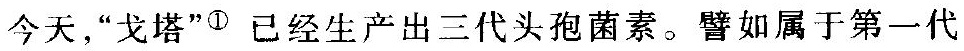的有＂头孢噻吩＂，属于第二代的有＂头孢克洛＂，属于第三代的有 ＂头孢噻肟＂或＂头孢拉啶＂。头孢菌素对革兰氏阳性和革兰氏阴性的细菌都有疗效。跟青霉素一样，它们阻碍细菌的细胞壁合成，正在繁殖的病原菌被头孢菌素杀死。这种物质有杀菌作用。
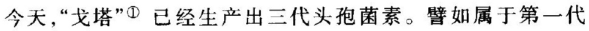的有＂头孢噻吩＂，属于第二代的有＂头孢克洛＂，属于第三代的有 ＂头孢噻肟＂或＂头孢拉啶＂。头孢菌素对革兰氏阳性和革兰氏阴性的细菌都有疗效。跟青霉素一样，它们阻碍细菌的细胞壁合成，正在繁殖的病原菌被头孢菌素杀死。这种物质有杀菌作用。
同样重要的是，由一部分细菌（主要由葡萄球菌）生成的青霉素酶不会使头孢菌素受到什么损害。可是一种很近似的酶，头孢菌素酶，主要由革兰氏阴性的病原菌生成，这种酶却能分裂头孢菌素。
头孢菌素的行情
按照列出所有药名的＂红色名单＂，在联邦德国有 20 多种头孢菌素被允许使用。其中的 4 种，即头孢克洛（＂赐福乐素＂），头孢羟氨苄（＂安泰＂），头孢氨苄（＂福林＂）和头孢拉定（＂头孢瑞丁＂），能够口服，其余的，可注射的头孢菌素的作用领域主要是医院；如果青霉素对某些病原体，譬如对一系列革兰氏阴性病原菌没有疗效，或者如果有青霉素过敏反应时，人们就优先使用这样的药剂。
然而一小部分人的机体却有一个障碍：这些人不仅对青霉素有过敏反应，而且对头孢菌素也有过敏反应。这里存在一种所谓的交叉过敏反应。这意味着，在使用所有的
属于最卓有成效的，可注射的头孢菌素的是头孢噻肟
福德＂。它由赫希斯特公司和它的子公司罗塞尔•乌克拉夫（Roussel Uclaf）共同开发研制，许多年来一直属于＂十最＂——世界上开得最多的十大药物之一。霍夫曼－拉•洛赫曾用它的头孢曲松（商标名 ＂诺塞芬＂）推出了一种具有相似疗效的药剂。＂诺塞芬＂现在是巴斯尔公司的＂拳头产品＂之一。它的分子对病原体的抵抗酶
在作为药片或胶囊服用的头孢菌素中，美国礼来公司的头孢克洛若干年来一直占有着重要的地位。它拥有所有头孢菌素的最广阔的作用范围。头孢克洛（商标名＂喜福来＂）对葡萄球菌，甚至对流感嗜血杆菌有疗效。人们原本以为这种细菌是流感（Influenza）的病原体——所以才获得这个名称。如今人们早就知道，其实感染是通过病毒产生的。不过流感嗜血杆菌可能会作为附随病原体出现。败血症，脑膜炎和其他严重的感染可能会单单由流感嗜血杆菌引起。
按照积木式原则
现在大多数头孢菌素用半合成法生产，在一定程度上按照积木式原则。充当原始材料的是 7 －氨基头孢菌酸，它构成天然的头孢菌酸的核心，只短缺侧链。在一定程度上头孢菌素——＂主楼边上的侧翼＂，在大发酵桶里由微生物生成的头孢菌素被用化学方法分裂，而且分裂成 7 －氨基头孢菌酸和与此相连接的侧链。原来的基被新的侧链取代，人们希望由此而获得一种更有效的总分子。
几种头孢菌素，如所谓的 Carbacephene 或 Oxacephene，在这期间也被用全合成法生产。它们以跟半合成的头孢菌素同样的方式起作用。
在一些实验室里，人们正在竭力争取不用化学药品而是用酶分裂侧链。＂这可不是一件简单的事。＂赫希斯特公司的瓦尔特•迪
尔克海姆博士说，＂没有＂直接分裂＂这样的侧链的酶。人们必须分两个阶段做这件事。人们必须先拆除中枢上的侧链，然后第二步用发酵法进行分裂。＂
一种特别值得注意的进展来自日本，它在抗生素研究和生产方面居世界领先地位。这主要是微生物学家 Hanao Umezawa 的功劳。他是抗癌抗生素博来霉素的发明者。
由于在青霉素生产的范围内制造出 6 －氨基青霉素酸成本低得多，研究人员们就有了把青霉素架子装进头孢菌素的基本分子中的念头。美国的礼来公司在这个领域做了重要的准备性工作，但是它们后来被日本研究人员接手并继续进行下去。
Uzuka 公司的研究人员生产出了头孢菌素基质，采获量相当可观，所以从经济角度看也令人感兴趣。几个新的活动基迄今已经可以附加在这个基质上。日本人估计不久就能够生产出大约 150吨新的青霉素头孢菌素组合。由于生产工艺相当复杂，头孢菌素的价格还相当昂贵。然而对新的头孢菌素的需求在增长，所以美国和德国的公司都密切地注视着日本的这种加工工艺。
赫诺奇特的高涨
在病原体和抗生素之间持续不断的赛跑中，研究人员创立了一个新的类别的化疗剂：用全合成法生产的赫诺奇特。由于赫诺奇特不存在于自然界中，所以人们认为：还不存在对这些化合物有抵抗力的细菌菌种，并且也不会有借助质体从不过敏病原体向过敏病原体传播的，对赫诺奇特的抵抗因素。
赫诺奇特的基本结构早就众所周知。＂它们能够被用来对付细菌，这一点我们又得归功于化学家的‘偶然发现’。＂迪尔克海姆说。在生产这种用来做疟疾药剂的物质时，意外地形成了晶体。当人们仔细检查这些形成物时，一种对细菌的有趣作用显现了
这种物质在 20 世纪 60 年代就已经作为萘啶酸被用来进行治疗，然而疗效却相当差，并且几乎只针对革兰氏阴性病原体。优先的使用领域是顽固的尿道感染。
自80年代初起，由于日本人的研发，有了新的赫诺奇特可供使用，在使用这种赫诺奇特时某个化学基被氟取代。这种经氟化物处理过的赫诺奇特的攻击点是敏感病原体的＂最神圣部位＂
Gyrase 阻塞器对一大批病原体有作用。其中有数量众多的迄今一直难以消灭的革兰氏阴性病原体（包括大肠杆菌和流感嗜血杆菌以及所谓的＂问题病原菌＂假单胞菌绿脓杆菌和军团菌——军团病的元凶）。
最后提及的，危险的传染病军团病曾长期不为人知。但是后来发生了一个戏剧性的事件，它引起可悲的轰动。1976年夏天，几百个＂美国军团＂老兵在费城参加一年一度的聚会。他们每年都举行一个盛大的庆祝会庆祝这一团聚。然而此后不久， 180 位参加者得病， 29 人死于严重的呼吸道疾病。
经查明，对这场灾难负有责任的是一种革兰氏阴性的芽孢杆菌。它在饭店的通风坚井里繁殖并经由空调器分布出去。自从细菌学家们拍摄到这些病原体的踪迹，人们这才惊讶地发现，这些因
军人聚会而被称作＂军团菌＂的杆菌在全世界蔓延得多么广泛。在德国每年有几千个因军团菌引起的肺炎病例。
用来治疗这种传染病的是依托红霉素和赫诺奇特。作为赫诺奇特治疗的副作用，有时会出现中枢神经系统紊乱，如头痛，焦虑不安，思绪混乱等。
＂只有当真正必要时＂
所以德国医师协会药物委员会曾一再指出这样的风险，它曾告诫医生不要使用这些高效的药物去医治也可以用别的抗生素成功防治的感染。
为了预防病菌产生抵抗力，加强防治微生物的效果，美国研究中心纳特利的洛赫公司正在研制由一种头孢菌素和一种 Gyrase 阻塞器组成的组合制剂。
那里的化学研究科的曼弗雷德•魏格勒报告：＂这是一种新的类别的，具有独特作用机制的物质，我们称它为有双重作用机制的头孢菌素。这种新的分子基的原型，处于研发起始阶段的第一个这种品种的化合物，其标号为 Ro23－9424。这种物质的结构把头孢菌素的一部分和赫诺奇特的一部分组合起来。作为头孢菌素， Ro23－9424 阻止细菌建造其生命做关的细胞壁。就在它产生这种作用的同时，赫诺奇特的部分被释放出来，并作为高效物质阻止生物合成，阻止细菌的 DNA（基因信息的化学载体），以致细菌本身的增多。＂
告别磺胺？
在进行化学治疗方面，也是要求过高反难成功。由于许多新抗生素已被证明更有疗效，更平和，所以一度曾普遍地大受欢迎的
磺胺就越来越迅速地被掏进＂老旧财产＂之列。只有在很罕见的情况下今天还使用某个这一类别的高效物质。不过复方增效磺胺，一种由磺胺甲异恶唑，一种有效的磺胺和化合物甲氧芐氨嘧啶组合成的制剂倒是一个例外。最经常使用的这样的制剂之一，便是霍夫曼－拉•洛赫的＂Bactrim＂。
复方增效磺胺被公认是治疗艾滋病的一种伴发病卡氏肺囊虫肺炎的选择药物。它甚至被 WHO（世界卫生组织）列入不可缺少药物名单。它也特别适用于防治尿道感染。
在治疗疟疾方面磺胺尚在起着某种作用。我们将在下一章里讨论这一情况。那一章是论述这一世界上最广为蔓延的流行病和其他重大传染病的。
第六章 有机体———种完美的防御体系
每个人都拥有无数个＂保护天使＂，这是指抗体，它们不停地在我们的血液以及淋巴液中循环。这一保护体系在几百万年中形成。它对外来人侵者，不管是细菌，病毒还是别的微生物，反应卓越。＂自体或非自体＂，意即免疫学中的＂哈姆莱特问题＂。＂自体＂受保护，＂非自体＂受攻击。
不过我们的＂卫士们＂有时也出严重的差错：它们在某些细胞上延宕太久才采取行动；它们甚至间或发动一场免疫内战，这时抗体就持反对自己组织的立场。这会导致自体免疫疾病，它属于那些医学往往还显得相当无能为力的病症。
然而，没有免疫系统我们就无法生存，这个星球可能就会没有生命。罗伯特•戈德，一位著名的美国免疫学家，曾对这一情况作过中肯的表述：＂我们大家都生活在一个微生物的海洋里。免疫系统是确保我们活下来的许可证。＂戈德，曾任斯洛安－凯特林研究所主任，纽约一家医院的院长，他属于具有不屈不挠的乐观主义精神的免疫学家之一。
尽管有某些挫折，戈德依然坚信：总有一天免疫学的进步将会使人们有可能战胜大多数重大疾病。＂总有一天，＂戈德这样说， ＂在我们的免疫系统的帮助下癌症也将被征服。＂
如果一个人没有正常运转的免疫系统，臂如因为一个基因缺陷使一个新生儿无法制造某些抗体，这会有什么后果，这一点几乎谁也没有罗伯特•戈德知道得清楚。在 20 世纪 60 年代，人们在他的医院里开始治疗这样一些只能等死的儿童。这种治疗通过骨髓移植进行。当然这种骨髓必须有同样的基因标志（HLA 抗原），以使它被受领者接受，因为陌生基因标志骨髓被免疫系统视为敌人。
最适合做这种捐赠的当然是很近的亲属的骨髓，最好是一个单卵孪生儿的那种，如果有的话。通过组织亲合性检测（Tissue－ Typing）可以预先确定，捐赠者和受领者的骨髓是否互相亲合。
＂有一回，＂戈德这样讲述，＂我们收治了一个小男孩，他的骨髓不生产白血球。人们需要白血球，因为某种类型的白血球生产抗体。这个男孩，马特黑夫•鲁弗尔，月复一月地躺在我们医院的一个无菌室里。这一保护装置可以保护他免受任何病原菌的侵袭。每一种无关紧要的微生物都有可能把他杀死，因为他没有任何抵抗力。我们在美国测试了无数骨髓样品，但是没有一样是合适的。在丹麦，我们终于发现了合适的骨髓。一位女护士的组织抗原正好完全适合小男孩。＂戈德永远不会忘记，小男孩得到捐赠的骨髓后发生了什么事：此后不久他就出了院，并过上了一个正常男孩那样的生活。
＂有一回，＂戈德这样讲述，＂我们收治了一个小男孩，他的骨髓不生产白血球。人们需要白血球，因为某种类型的白血球生产抗体。这个男孩，马特黑夫•鲁弗尔，月复一月地躺在我们医院的一个无菌室里。这一保护装置可以保护他免受任何病原菌的侵袭。每一种无关紧要的微生物都有可能把他杀死，因为他没有任何抵抗力。我们在美国测试了无数骨髓样品，但是没有一样是合适的。在丹麦，我们终于发现了合适的骨髓。一位女护士的组织抗原正好完全适合小男孩。＂戈德永远不会忘记，小男孩得到捐赠的骨髓后发生了什么事：此后不久他就出了院，并过上了一个正常男孩那样的生活。
今天，这样的骨髓移植在许多医院里习以为常。器官移植时作的测试也已经变得更完美，以确保更好地确定组织亲合性。＂我们趁此机会学习了许多有关我们的免疫系统的，令人难以相信的可能性的知识。＂戈德说。对于他，对于这位从前的儿科医生来说，研究这个系统——他已经为此作出了许多贡献——直是他毕生向往的任务。
原产地骨髓
免疫系统并不拥有威力无比的中央，它并非只是集中在一个器官内。它的据点分散在全身。免疫细胞的原产地是骨髓。除了生产白细胞以外，那里也生产所谓的干细胞。它们是后来的免疫细胞——淋巴细胞——的先驱。
某一种类的这种淋巴细胞，所谓的 B 细胞，生产抗体。它们在世纪转折时就已为人们所知。保尔•埃尔利希曾给予了它们名字，而贝林则认识到它们作为抗毒素在治疗白喉和破伤风方面造福社会的作用。当时研究人员们就猜测，抗体存在于血液和淋巴中，存在于那种流经组织的液体中，它通过液体流出血液毛细管进人组织而产生。淋巴管系统又将淋巴引向血液循环。可是人们不知道，抗体存在于由 200 多种蛋白体组成的血清的哪一部分。
由英国研究人员理查德•辛格和阿尔歇尔•J．P．马丁研制出的电泳法才使确定抗体级份在血清中的位置成为可能。在用电泳法时，人们利用各种物质在直流电场中不同的徙动速度，分离出一种它们的混合物来。借助这种分离法，人们就能将抗体分成多个小组。其中的一个小组显示自己是最重要者，它按希腊语字母顺序被叫作 Gammaglobulin（球蛋白）。所以免疫学家们常常把所有抗体称作球蛋白，虽然并非所有球蛋白都有抗体的作用。辛格和马丁 1952年因他们的这项工作而获得诺贝尔奖。
不久，英国和美国的研究人员就能查明更多的有关这些看不见的同盟者的情况。情况表明，球蛋白又可以分成各个亚纲。最重要的是免疫球蛋白 G，简称 IgG，敦如它就不能被马特黑夫•鲁弗尔的细胞生成。
所有抗体都是高分子量大蛋白质。各按其不同纲属，这种分子量分别在 15 万和 90 万道尔顿之间（ 1 个道尔顿大约和氢原子量
相当）。
最重要的免疫球蛋白是
最重要的免疫球蛋白是
抗体的兵力
如有必要，机体能出动一支相当大的兵力。一个淋巴细胞，它与一个抗原相遇并有了感受能力，它就变成了一个所谓的浆细胞，可在每秒钟内生产约 2000 个抗体。总共大约有 100 Trillionen
淋巴细胞不断在我们的器官里巡逻。它们在其细胞表面有微小的天线式接收器。一个 B 淋巴细胞若遇上一个被人称作抗原的外来分子，它就立刻动员自己的防卫系统，完全不管这一相遇的地点在哪里——在血液里，淋巴里，还是在一个淋巴结里。它分裂，增多，最后变成一个大浆细胞。
这些浆细胞是所有免疫球蛋白的制造地。然而每一个浆细胞只生产其中唯一的一种类型——
＂大吞噬者＂在行动
为动员＂抗体战斗小组＂，免疫系统需要好几天的时间。所以其他白血球就组成第一支前沿防御部队。这是吞噬细菌的细胞，
是吞噬细胞。属于这些吞噬细胞的有嗜中性的粒性白血球，它们被这样称呼，是因为它们在细胞体内只有一个细胞核并且对染料采取＂中立＂态度，即不容易着色。
这些也能在组织中停留的白色血细胞的发现者是俄罗斯人伊里亚斯•梅奇尼可夫。1883年他第一次看见吞噬的细胞。那次他在墨西拿
梅奇尼可夫能够在显微镜下从一只海星的幼虫上看到，细胞如何向他扎进幼虫的一块碎片猛扑过去。相似的情形会不会发生在人的身上，如果异物或细菌已侵入组织并使白色血细胞对病原体采取行动的话？
梅奇尼可夫新造了＂吞噬细胞＂（Freßzellen 或 Phagozyten）这个概念，1908 年他因这一发现和保尔•埃尔利希共获诺贝尔奖。不过他不得不同他的一部分德国同事进行多次争斗，这些德国同行当时过于人迷地注视着体液的免疫性，即血液和淋巴中的抗体。对于细胞作为其他的免疫性因素，人们起初不怎么予以理会。
梅奇尼可夫，他后来在巴斯德研究所工作并跟他的主要竞争对手埃米尔•冯•贝林有极友好的关系。他终究说对了，自几乎一个世纪以来，这一直不再是一个有争议的问题：也像粒性白细胞那样，吞噬的巨噬细胞是与抗原进行的大争斗中绝对必要的同盟者。
免疫学家们给每一种在机体内导致生成抗体，即引起一种抗原反应的物质下定义为抗原。为作出这样一种反应，抗原必须有某种最低量。在达到一个 6000 多道尔顿的分子量时——这大致相当于胰岛素分子的量——免疫系统才作出反应。更小的化合
物，所谓的半抗原，只有连接在一个较大的蛋白分子上时才引起一种反应。
免疫系统对异质的蛋白，譬如对细菌和病毒的成分反应最强烈。它们被巨噬细胞吞食掉。如果这不成功，那么细胞就把入侵者分解成小块，然后它们就将这个肢解过的敌人传递给 T 淋巴细胞。
为了被这些有接收器的淋巴细胞认出，巨噬细胞就得满足两个先决条件：它必须一方面显示经分解的微生物的异质分子群，另一方面也必须显示它自己的识别记号，所谓的 MHC 群。这个分子群在某种程度上当基因＂身份证＂用。抗原记号由 MHC 提供。它负责监控几个其基因在人的染色体 6 上的特殊抗原。
抗原和抗体的复合体
淋巴细胞从一个固定的部位上，从抗原因子上认出异质。这个抗原因子由 10 至 12 种氨基酸组成。一个固定的部位与这个抗原＂前卫＂——一个细菌或一个病毒往往有好几个这样的＂前卫＂——结合，于是就产生了一个抗原和抗体的免疫复合体，它一般被吞噬细胞分解。
这个过程没有完全发生，免疫复合体就剩下了，就会在机体中引发炎症，譬如肾炎，肺炎或皮炎。免疫复合体在大脑中沉积就会引起精神错乱。
不过一般来说，异体入侵者与身体抵抗力之间的遭遇战进行得＂无声无息＂。我们常常对自己体内的这场争斗毫无察觉，除了体温暂时有些升高。
跟与一个抗原第一次接触时不一样，在第二次相遇时动员工作进行得快得多。几个淋巴细胞特别长寿，它们将一个外来机体的＂识别记号＂保存在＂记忆＂中——所以它们被叫作记忆细胞
（Memory Cells）——并且已经准备好了定制抗体的＂蓝图＂。原则上所有疫苗接种也建立在这个第二级的，更快速和更强烈反应的基础上。
（Memory Cells）——并且已经准备好了定制抗体的＂蓝图＂。原则上所有疫苗接种也建立在这个第二级的，更快速和更强烈反应的基础上。
胸腺中的训练
由于鸟类生产抗体的淋巴细胞在 Bursa fabricii，在一段直肠中成长，所以它们就被叫作
除了 B 淋巴细胞以外，还有别的形式的淋巴细胞；它们都在胸腺中成长，这是一种位于胸骨后面的腺，俗称＂Bries＂。古希腊人猜想胸腺是人的灵魂的所在地。
胸腺与淋巴细胞之间的关系尤其因澳大利亚人雅克维斯•米勒和美国免疫学家罗伯特•戈德的研究而得到证实。驻扎在那里进行 ＂训练＂的淋巴细胞被称作 T 淋巴细胞（按 Thymus［胸腺〕命名）。
T淋巴细胞的免疫分工如下：
（1）首先是拦截淋巴细胞（ T 淋巴细胞）。它们已经在胸腺中学会区别健康的和有病的细胞。它们有微小的＂触角＂，用来识别和摧毁敌人。拦截淋巴细胞的主要攻击对象是受病毒侵袭的细胞。病毒泄露出自己在细胞中的存在，因为它们的微小成分附着在受感染细胞的表面。
（2）助手淋巴细胞（
（1）首先是拦截淋巴细胞（ T 淋巴细胞）。它们已经在胸腺中学会区别健康的和有病的细胞。它们有微小的＂触角＂，用来识别和摧毁敌人。拦截淋巴细胞的主要攻击对象是受病毒侵袭的细胞。病毒泄露出自己在细胞中的存在，因为它们的微小成分附着在受感染细胞的表面。
（2）助手淋巴细胞（
抗体的多样性
抗体和抗原联合成免疫复合体，补体体系也就活跃起来。它被比利时研究人员让•博尔代认出并被保尔•埃尔利希这样命名，因为它＂补足＂免疫反应。它由大约 20 种不同的溶解在血清中的蛋白组成。在起始成分与免疫复合体结合之后，各个成分很快被激活——阶梯式进行——对抗原表面进行攻击。
被激活的补体成分试图合乎规则地剌穿人侵的异样细胞的外壳，致使这外壳在显微镜下看上去就像一座月面环形山。如果机体不能构成这些补体蛋白中的个别几个，那就会导致免疫防御的一个严重缺陷。
人在一生中会接触成百万上千万个抗原，每一次机体都为此提供合适的抗体，怎么可能有这种多样性呢？
还在 19 世纪 60 年代，就对此有一系列受到热情维护的假设。按照最早的一种假设，在细胞中有几百万个已经预制好的抗体，每次其中总有几个适合于每一个可以想像得出来的抗原，不管这抗原来源于天然还是来源于合成。
许多科学家苦苦思索这个问题：细胞核内的大约 10 万个基因怎么会制造出成百万上千万个抗体，抗体甚至适合于刚刚才经合成法降生的抗原。
这些研究人员中有一位叫尼尔斯•卡伊•耶纳的，1984 年他因他的假设而获诺贝尔奖。他的考虑是：＂针对人们引进一只脊椎动物的机体中的一切——蛇毒，一只鸡的蛋白，一种植物的萃取物，也包括无机物质——这动物生成专门的抗体，以便除掉或中和掉这些物质。人们也合成了先前世界上没有的化合物，并给一只家兔注射了这种化合物。这只家兔针对这种分子制造出特别的抗
体。人们自然在考虑，这怎么可能呢？家兔不可能已经知道这种物质正在被注射，所以它不可能事先已经作好了准备，去生成这些同陌生分子结合的抗体。依此类推，一只家兔也不可能已经在自己的细胞中就有如何制造这样一个抗体的信息。＂
巴塞尔
耶纳，出身于一个古老的丹麦家庭，1911 年在伦敦出生，是真正意义上的一个欧洲研究人员。他在荷兰上小学，在美国一所大学教书，领导法兰克福的保尔•埃尔利希研究所，并成为瑞士制药企业集团霍夫曼－拉•洛赫1969年建立的巴塞尔免疫学研究所首任主任。耶纳经常猛烈地抽着香烟，用 5 种语言，但主要用巴塞尔的＂官方＂语言英语向他的同事们解释体细胞突变假设。
耶纳认为：并不是所有针对可能的抗原的信息已经存在于胚细胞中。如果仍然为每一个抗原生产出一个合适的抗体，那么按耶纳的观点应该作如下解释：在生产抗体的淋巴细胞的发育生长过程中发生了大量突变，这些突变最终改变抗体，使得这抗体能够认出并理解＂它的＂抗原。
一位来自德国的年轻生物学家
巴塞尔研究所的许多年轻同行觉得耶纳的体细胞突变假设很有说服力，这样人们就能想像一个抗体如何能专门化合一个抗原。这是因为抗体将自己的一部分成分，将所谓的可变部位训练得可以充当抗原的＂捕捉部位＂。然而还缺乏可以证明体细胞突变确实使大量抗体能够产生的证据。众所周知，没有这样的证据在科学
上什么也不会被人承认。
格奥尔格斯•克勒，耶纳的一位年轻同事，怀着一种令他自己都吃惊的热情献身于这一任务。他年纪很轻，在免疫学研究上也是初出茅庐。克勒，1946 年出生，母亲是法国人，父亲是德国人，自 8 岁起他在菜茵河畔的凯尔上学。不过他在那里没在生物学方面显露什么才华。后来，在克勒得了诺贝尔奖以后，他的生物老师很难为这位桂冠诗人出具优异学习成绩的证明。
格奥尔格斯•克勒，耶纳的一位年轻同事，怀着一种令他自己都吃惊的热情献身于这一任务。他年纪很轻，在免疫学研究上也是初出茅庐。克勒，1946 年出生，母亲是法国人，父亲是德国人，自 8 岁起他在菜茵河畔的凯尔上学。不过他在那里没在生物学方面显露什么才华。后来，在克勒得了诺贝尔奖以后，他的生物老师很难为这位桂冠诗人出具优异学习成绩的证明。
＂有血有肉的科学家＂
当克勒读罢黑克尔的《世界之谜》这本书时，他在内心第一次产生了强烈的探索精神。弄清＂世界之谜＂，深入钻研科学的新领域，格奥尔格斯的这位弟子觉得这是完全值得去追求的。＂反正我觉得自己今天比任何时候都更像个发现者，研究人员。＂克勒这样说。
后来给他留下深刻印象的，是吉姆•沃森的极其形象地描述了 DNA 双螺旋结构的书。＂在这本书里，科学家第一次看来不像平平庸庸的人，＂克勒讲述，＂而像有血有肉的人。这令我满意。＂
作为弗赖堡的大学生，克勒曾悉心钻研过各种生物，尤其研究过细菌。但是直至大学毕业，他都未曾听说过什么有关免疫学的事。他坦率地向他的博士生导师承认了这一情况；后者是免疫学家弗里茨•梅尔歇斯，刚从美国回来，他转到起先由耶纳领导的巴塞尔研究所来了。
巴塞尔——半拉天堂
梅尔歇斯欣赏克勒承认免疫学知识缺口的坦率态度，他决定接受这个年轻人的申请并把他接到巴塞尔。
克勒在瑞士不仅为广泛的学术自由而高兴，此外还有某种同样重要的东西：他在巴塞尔第一次拥有了一份固定的收入。他的父母离异，母亲几乎未曾为他上大学提供任何资助。＂我们家里从未有过很多钱。＂克勒说。尽管如此，他还是在 22 岁就娶了比他年轻一岁的女友克劳迪娅。不久这对夫妇就有了三个孩子。克勒回忆说：＂在这种情况下，我们觉得巴塞尔是半拉天堂。＂
克勒在巴塞尔专注于抗体研究：机体生产成百万个这种抗体，以便和它们一起对同样多的抗原采取行动。
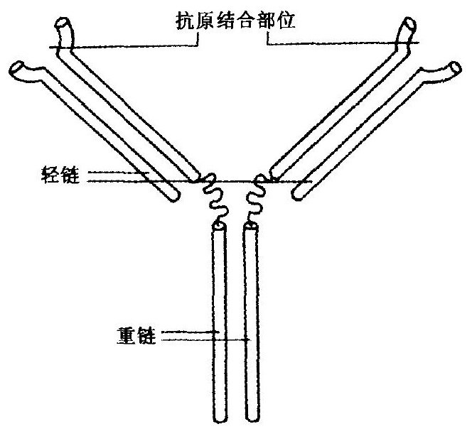
图2 抗体的结构原则
抗体分子有好几个链，它们的形状像一个＂Y＂。这个个的＂把手＂，这个总是不变的部位决定抗体的不同级别，而＂胳臂＂则由可变的部位组成。在附属基因的相应区段一定会发生突变，分子通过这样的偏离被特别＂剪裁好＂，以便牵制一个抗原。
骨髓细胞作为研究对象
克勒 60 年代早期在巴塞尔从事研究工作时曾听说，在著名的
剑桥分子研究实验室里，有人曾探索过这样的细胞突变。那儿的研究所主任是在阿根廷出生的恺撒•米尔施泰因，他和他的同事们已经完成了融化骨髓细胞的工作。克勒决定去剑桥。
骨髓细胞是机体的某种蜕变为癌细胞的细胞。由于一个分子缺陷，它们制造了大量抗体并用其充斥机体。它们可能是
生产免疫球蛋白轻链的骨髓瘤病人把一部分多余物同尿一起排出。找到这种所谓的本斯•琼斯氏蛋白的踪迹，很久以来就一直被认为是诊断骨髓瘤的重要先决条件。从骨髓瘤中科学家学到了许多有关抗体如何组成的知识。
米尔施泰因曾研究过由这样的骨髓瘤生产出来的抗体，他也曾发现其中的某些抗体会经历一种基因特性的变化，会发生突变。但是遗传变化全都发生在抗体分子的不变部分。＂这种遗传突变我觉得并不令人振奋。＂克勒说。为了发现抗体可变部分中的遗传突变，人们就必须十分透彻地了解这些细胞的抗原特性。
克勒心想，取用别的特性已知的骨髓瘤细胞并让它们生长，这大概不会是太难的事情。＂这样，＂他这样认为，＂也就可以建立一个迅速在可变部位提供突变因素的体系。＂
可是这不行。不论克勒用不同的骨髓瘤细胞进行多少次试验，它们就是不帮他这个忙，不给他繁殖。＂我坐在那里，＂克勒说， ＂我就是无法使细胞系谱生长。可是我原本也只有这样才能研究可变部位中的体细胞突变呀。＂
虽然要和这样的障碍作斗争，克勒却觉得在剑桥日子过得很愉快。他同妻子和孩子们一起租了一所小屋。床沄是从德国带来的，必要的家具从邻近一个拍卖商那儿购得。＂当然都是用过的。＂克勒说。
跟怡撒波长一样
克勒与他的上司米尔施泰因相处得很好。＂我们有同样的‘波长’，＂这个德国人说，＂每逢我们商谈研究目标时，我们都用不着先来长篇大论。况且恺撒是一个很能倾听别人意见的人。所以我们合作得很愉快。＂
实验室里＂弥漫着几分诺贝尔奖＂的气氛。＂坐在自助餐馆里，那真是一种极妙的感觉，几乎每一张桌旁都坐着一位诺贝尔奖得主，在喝茶。＂他自己有朝一日也会得到一个这样的奖，这一点这位年轻的生物学家当然没想到。
虽然同事们告诫他，说细胞融合不灵，克勒却还是开始了融合他的先行者留给他的那些旧制剂。经一系列检验后，融合令人意外地成功了。
一个使人无法入睡的主意
一天晚上，在人睡前不久，克勒突然想起一个主意。他一下子头脑十分清醒，睡意顿时全消。
他觉得这个主意简单极了。他想试一试，把一只生产某种抗体的老鼠的 B 淋巴细胞和老鼠骨髓瘤细胞融合，生产杂种细胞，即所谓的混合种。它们应该有两种细胞的特性。如果这个试验成功，克勒就希望，这些混合种细胞能生产 B 淋巴细胞的抗体并同时具有一个癌细胞的无限的繁殖能力。
满腹狐疑的两个月
1974年10月，他果真能生产这样的混合种了。可是它们真的
会具有父亲和母亲的基因赋予的这两种特性吗？
克勒对此疑虑重重。太多的经验让人对此生疑。他一再推迟最终将会说明他的实验是否成功的测试。 12 月，圣诞前不久，他才下决心证实，他是否只是在追逐一个幻象。他把妻子克劳迪娅带进实验室，如果结果是失败的，他就得劝慰她别失望。
克勒对此疑虑重重。太多的经验让人对此生疑。他一再推迟最终将会说明他的实验是否成功的测试。 12 月，圣诞前不久，他才下决心证实，他是否只是在追逐一个幻象。他把妻子克劳迪娅带进实验室，如果结果是失败的，他就得劝慰她别失望。
然而结果符合他很久以来几乎不敢承认的自己所怀有的希望。混合种细胞果然生产出所要的抗体。由于它们是骨髓瘤细胞出身，所以它们同时也是＂不朽的＂。由于这些细胞构成一个唯一的克隆个体———个细胞科——并且因此所有的细胞都具有同一性，所以它们的产品就被叫作＂单克隆抗体＂。
在有决定意义的那几周里，米尔施泰因正在美国。当他 1975年1月返回时，喜形于色的格奥尔格斯向他通报了这一情况。米尔施泰因一眼便看出了这一发现的意义。他们共同为享有盛誉的英国《自然》杂志撰写了一篇文章。
＂由于恺撒英语比我强，他执笔撰文，我提供表格。＂克勒说。
＂由于恺撒英语比我强，他执笔撰文，我提供表格。＂克勒说。
一句关键性的话
1975年8月7日发表在《自然》上的这篇文章立刻引起巨大反响。米尔施泰因和克勒只用一句话点出：＂作者们并非没有注意到工业上应用的可能性。＂克勒说：＂我们至少想记录下，我们并非没有注意到这个着眼点。恺撒和我，我们还曾讨论过这一点。这个提示听起来也许太狂妄自大？后来我们决定让这句话留在文章中。＂
然而克勒在 12 月感受到的那种幸福还要经受严格考验。＂当我重做了几次这个实验时，这实验突然不灵了。只出现了一个黑洞。＂克勒回忆说。
米尔施泰因后来也报告：＂近 6 个月之久几乎没有一个实验如
愿进行。这是一个令人沮丧的时期。＂作了艰苦细致的琐碎工作，检查了实验方法的每一个步骤，各种条件都改善了。剑桥实验室的一个同事找到了一种新方法，可以更容易地融合细胞，即生产混合种，那就是化合物聚乙二醇。
在消除了一种污染后，实验突然又顺利进行起来。＂我还能在剑桥重做这些实验并对此感到莫大欣慰。＂克勒今天这样承认。
此后不久，别的科学家也报告，他们也按照克勒和米尔施泰因的方法制造出了混合种。发出这样一份报告的第一人是科隆的克劳斯•拉耶夫斯基教授。
新的工作地点弗赖堡
克勒是否还应长久地待在剑桥，这个问题自然地被提了出来。不过米尔施泰因能付给他的工资，对于即便从不想用自己的发现赚钱的，要求不高的克勒来说也太低了。就这样，他又返回巴塞尔。
他获得了诺贝尔奖，这个消息他是从一位记者的电话中得知的。几个小时之后，斯德哥尔摩的电报才送到。＂我不曾沉醉于这样的期望之中，＂克勒说，＂人们真是高兴坏了。＂
不管怎么说，美国拉斯克尔奖的颁发已是一个重要的预兆。这一切尤其令克勒感到欣喜，因为一些时候以来的情况一直是米尔施泰因享有的崇高威望使克勒的成绩黯然失色。克勒，一般情况下他不会拿出时间去讨好新闻媒体，当时他破例地做了一件事：他向一位英国记者诉说了自己的苦恼。此后在《科学》杂志上登载了一篇文章，它恰当地评价了克勒的成绩。
穿借来的礼服出席诺贝尔奖颁奖仪式
克勒不仅带着自己的妻子克劳迪娅和三个孩子，而且还带着他的实验室同事们出席了诺贝尔奖颁奖典礼。在正式的颁奖典礼上，他穿着一身借来的礼服，费了好大劲才使这身礼服大致合他的身。在逗留斯德哥尔摩的其余时间里，克勒一直穿牛仔裤，这是他平时常穿的衣服。1990 年第一次出现在林道诺贝尔奖得主会议上时，他令某些同行颇感惊讶地穿了一件深蓝色运动夹克衫。直至今天他仍不怎么认真看待服饰礼仪问题。
在这期间，克勒和克劳斯•艾希曼教授共同担任弗赖堡马克斯－普兰克免疫生物学研究所所长。一些年来，克勒一直在弗赖堡研究转基因老鼠。这些动物都并吞了一个附加基因，因为人们想看到，这对免疫学过程有什么影响。
克勒，他本人认为自己不是一个特别喜欢旅行的人，除科研以外，与家人团聚对他来说意味着一切，他觉得在弗赖堡非常愉快。 ＂对于一个在德国的免疫学家来说，这是一份最美好的工作。＂
抗体用作诊断和治疗
就在克勒又完全献身于基础研究之时，单克隆抗体已被广泛应用于医学和生物学。
但是免疫系统如今如何为几百万个抗原中的每一个抗原制造出一个特有的抗体呢？日本研究人员利根川进（Susumu Tonegawa）取得了突破。利根川进，20世纪70年代同样在巴塞尔研究所工作。他发现：几百万个不同的抗体来自常备的少量基因部分，这些基因部分可以以种种可能的组合形式编排成作用良好的抗体基因。
利根川进因这些工作 1987 年获罗伯特•科赫奖，不几年后获诺贝尔奖。如今他在美国工作。
单克隆抗体的特殊意义在于诊断学。在它们的帮助下，人们可以发现用别的方法掌握不了的化合物，如某些肿瘤细胞的表面结构。
而这些希望——希望人们能把单克隆抗体与抗癌药物联系起来，以便在某种程度上把它们当作自动寻找并摧毁其目标的现代药物定向体使用——直到现在还没成为事实。因为事实已经表明，这些复合体对肿瘤的作用太过微弱。只有＂装料＂的
抗体的人性化
在最初几年里，当然几乎只使用来自老鼠的抗体。但是近来抗体越来越＂人性化＂。这就是说，来自人的抗体与老鼠的抗体＂杂交＂，产生了所谓的客迈拉
剑桥的格雷戈里•温特教授研制了第一批＂人性化＂的抗体。 1990年11月在纪念埃米尔•冯•贝林的血清疗法100周年学术讨论会上，他报告了＂抗体定做＂。他和他的同事们用这种＂人性化抗体＂治疗了一个患淋巴癌的女病人。他们取得了使肿瘤大大缩减的结果。不仅温特，许多别的免疫学家也寄很大希望于进一步发展这种治疗方法。
机体中的内战
长时期内这一观念显得十分荒谬：我们的＂保护天使们＂会突然不为我们服务，甚至成为机体的无情敌人。保尔•埃尔利希谈到过一种＂自体中毒症恐惧＂，它阻止身体卫队对自体结构采取行动。然而这并非总是有效，一如恰恰在最近几十年里临床研究所显示的那样。＂不忠实的＂抗体或T细胞间或更换营垒，＂禁卫军＂在一场生物学的＂政变＂中反对这位迄今一直受到奋勇护卫的统治者。
由反叛抗体引起的免疫疾病的数量大得惊人。这是 50 多种症状很不一样的病痛。譬如有慢性多发关节炎，常常也被称作风湿性关节炎。跟众多其他风湿性形态相反，＂CPA＂（慢性多发关节炎）患者通常在 40 岁至 50 岁间就得上此病，而且得病者女人比男人多。这是一种关节内皮炎和一种结缔组织的进行性增生。该病往往先将较小的和中等的关节控制住，如手和脚。引起这种在开始时往往呈阵发性的疾病的主要原因是自体抗体。最初的症状可能像一种没完没了的流行性感冒。一种遗传素质显然也起一定作用。
攻击岛形细胞和边线
患上不可用药片，必须用胰岛素注射进行治疗的 I 型糖尿病时，抗体攻击胰腺中生产胰岛素的细胞。估计有一种遗传因素和触发性因素。虽然岛形细胞的亏损能通过胰岛素剂量得到补偿，但是以后眼睛和肾脏的血管常常会受到损害。我们在代谢病那一章里还将进一步探讨这个问题。
多发性硬化症也因＂叛乱的＂免疫细胞而发生：这种怀疑在最近几年变得越来越强烈了。估计病毒也可能作为一个触发性因素
添加进来，而且这是所谓的缓慢病毒，它们缓慢而坚忍不拔地进行它们的破坏工作。德国多发性硬化症协会估计，在联邦德国大约有 8 万至 10 万人患＂MS＂（多发性硬化症）。在患上这种起初相当不起眼地发作的疾病时，免疫细胞攻击包住神经细胞的边线。这些边线有一项类似使电线绝缘的任务。所以 MS 也常常被恰当地，虽然不太动听地称作＂脱髓鞘病＂。被毁坏的神经通常散乱分布在大脑和脊髓中。
短暂或持续的痽痰在 MS 患者身上经常发生，个别器官紊乱和视觉困难也是常有的事。最实的症状往往在 20 至 40 岁之间就已出现。
尽管在加紧研究，可是迄今还没能详细查明这种疾病的过程。但可以肯定的是，MS 不传染，不遗传。由患者和看护人员组成的互助组合起着极其有效的作用。这一点不同于治疗几乎任何一种别的疾病。
跟治疗别的自体免疫疾病一样，迄今在治疗 MS 方面还没有抓住这疾病根源的根本治疗方法。MS 专家西格里德•波塞尔和格哈德•里特尔在他们的权威著作中无可奈何地总结道：＂自沙尔科以来，治疗方法一直是单纯针对症状的。＂法国神经病学家让•沙尔科在 19 世纪从一直像一团乱麻的症状中清理出一幅清晰的病象图。古代则令人惊讶地没有关于这一疾病的记载。
攻击信使物质
自体免疫病重症肌无力侵袭 20 至 40 岁的人，病人患极端肌无力症。它大概因自体免疫过程而产生，这些过程针对某些细胞并导致乙酰胆碱严重短缺，后者是重要的信使物质，它负责将神经刺激传递给肌肉。乙酰胆碱显然被自己的抗体破坏。
除肌无力外，重症肌无力还显示出别的症状，特别引人注目的
是眼肌肉故障引起的眼皮下垂和复视以及说话，吞咽和呼吸困难。患者晚期每一块肌肉都可能遭受病变。许多免疫学家猜测这疾病与胸腺功能紊乱有关，所以对较年轻的人常常摘除这一器官，这样做能使病情得到根本好转。
红斑性狼疮在公元前 400 年就已经由希波克拉底描述过。它在许多情况下不仅发生在局部，更是一种全身性的疾病。这就是说，它能侵害众多的器官：关节，皮肤，肾脏，中枢神经系统，心脏和肺，所以诊断在从前是不容易的。医生常常发生误诊，尤其会将其误诊为肾病。估计一种基因也起着一种作用：疾病发生得越晚，病势往往就越温和。
影响免疫系统的制剂尤为重要。属于这类制剂的有可的松及其衍生物，主要是强的松龙。可的松是一种激素，在肾上腺皮层中生成；当它在 40 年代由美国默沙东公司作为药物推上市场时，迅速获得了＂神药＂的声誉。它对几乎所有形式的炎症都有（到那时为止一直为人们所不知的）强烈的疗效，风湿病成为它的主要使用领域。然而几年后太高的剂量和对其众多副作用的轻视败坏了可的松的声誉，病人开始拒绝服用开给他们的这种药剂。
今天局势又缓和下来了。大多数医生都知道，他们不能放弃可的松。所以医药公司，如达姆施塔特的 E．梅尔克公司，就开始了一场针对病人的强大的宣传教育运动。在《病人十诫》中有这样的话：＂您一定知道，可的松是一种最有效的药物。但是您也知道，长期服用也会引起违人心愿的作用。这种治疗的利和弊常常紧挨在一起。一种可的松治疗的危险可以通过正确使用被减少。一次长期治疗的最大剂量——不计罕见的例外情况——被认为是 7.5 毫克的最常用药剂强的松龙。＂它还告诉了病人最佳服药时间——早晨 8 点，最好和着牛奶或一些酸奶。在药物空前严厉地受到详加考察的时候，这样的说明简直是及时雨。其实这样的信息对别的药剂使用者来说也是迫切需要的。
研究三角园区的一个实验室
1961年在美国研究三角园区的威康实验室里，产生了一种另外的，经常被使用的免疫抑制药。这其实是癌症研究的一种＂副产品＂。乔治•希钦斯和他的女同事路斯•埃利翁把第一批抗代谢物中的一种—6－6硫嘌呤引人癌症治疗中。
与许多治癌化疗剂一样，6－硫嘌呤也有一种极其不受欢迎的副作用，至少是在作肿瘤治疗时它压制——如结果所表明的——身体的免疫反应。但是这一特殊的作用却又使它适合于防治自体免疫病。路斯•埃利翁和乔治•希钦斯在 50 年代还合成了一种硫嘌呤的衍生物硫唑嘌呤，它同样被用来治疗免疫病——常常与强的松龙配合使用。抗叶酸制剂（氨甲喋呤）和抗癌药环磷酰胺（爱斯达制药公司的环磷酰胺）也被用来对付＂抗体的起义＂。
20 世纪 60 年代，人们为器官移植研制了一种特殊的血清，它压制指向这个新器官并排斥它的淋巴细胞。
除了这些制剂以外，免疫学家们越来越多地了解到负责对异体器官产生特殊亲和性的基因体系，这就是所谓的 HLA 抗原。＂没有这些物质就根本不可能进行移植。＂汉诺威的鲁道夫•皮谢马耶尔教授，最有经验的德国肝脏移植医生说。但是对于治疗免疫疾病来说，这种压制抵抗的药物也意味着一大进步。
挪威的一种真菌
这一点在最近几年里特别适用于一种名叫环孢素的化合物，环孢素的历史 1970 年起始于巴塞尔桑多茨公司（Sandoz AG）的微生物学科。让•F．博雷尔领导的部门中的一位度假者从挪威带回来几百克泥土，当时从世界各地弄来许多这样的泥土样品，因为人们
想找到可能生产出尚未被人们所知的抗生素的真菌。这期间微生物学家们通常只找到已为人们所熟悉的真菌。所以在桑多茨公司，人们并没有怀着不寻常的急切心情对这些挪威土地样品作第一次检查。检查首先表明，这带来的小礼物中确实含有一个真菌菌种。
当 1987 年让•F．博雷尔因他的新免疫抑制药被授予保尔•埃尔利希奖时，他讲述了后来事情是怎么继续进行的：
＂原来的真菌萃取物成为好几种代谢产品的所谓代谢产物的混合物，它被离析出来并准备接受第一次微生物学检验。这一‘篮选’显示，真菌萃取物没有什么有趣的抗生素特性，但显然也没有什么毒性，如毒物学家们所确证的那样。所以它在一个附加的药量学筛选计划中受到检测。＂
＂原来的真菌萃取物成为好几种代谢产品的所谓代谢产物的混合物，它被离析出来并准备接受第一次微生物学检验。这一‘篮选’显示，真菌萃取物没有什么有趣的抗生素特性，但显然也没有什么毒性，如毒物学家们所确证的那样。所以它在一个附加的药量学筛选计划中受到检测。＂
1972年1月结果表明，＂
桑多茨公司又安排了长期检测。混合物质含有众多代谢产物——即代谢产品——它们的特性必须受到检验。只有一种成分 ＂27400＂，后来的环孢素A，证明自己是抑制免疫的。这一代谢产物压制抗体生成并且压制细胞（即 T 细胞）的反应。在用来检验各种自体免疫病效果的动物身上，这种物质被证明有疗效。
对研究的鼓励
有一点特别令人欣喜：环孢素显然很少引起副作用。这意味着对进一步展开研究有很大鼓励，因为迄今的免疫抑制素有很强的副作用，由于在治疗上别无选择，人们只得忍受这些副作用。
不是博雷尔的所有同事都像他这样信心十足。人们不得不考虑到会有一个很长的研发时期，并且费用会很高。没有人能够预言，有朝一日人们手中的环孢素会成为一张王牌。博雷尔不得不常常为＂他的＂环孢素而斗争。然而1976年在桑多茨公司持怀疑态度的人的合唱开始沉㝝下来。环孢素在对人的临床检验中经受住了＂战斗洗礼＂。明摆着，人们已经找到了新一代免疫抑制素的原型。
这种制剂1983年在世界范围内以＂山地明＂的商标名被采用在器官移植上。它的活性是如此令人信服，以至于移植外科方面的先驱，如斯坦福的诺曼•沙姆韦教授又敢于做像心，肺组合移植这样十分艰难的外科手术；直到那时为止，做这种手术时的排斥反应一直非常强烈。
今天人们对＂山地明＂的作用机制了解得相当好，好于对许多别的药物的了解。让•F．博雷尔说：＂现有的所有检验结果都表明，这种物质对淋巴细胞有特殊的和可逆的作用。因为没证实其对造血细胞，吞噬细胞和肿瘤细胞有什么功能性影响，所以跟细胞抑制剂相反，在做环孢索治疗时，抗感染力几乎不会受什么损害。＂
辅助细胞受阻碍
大概环孢素导致 T 辅助细胞释放某些信使物质，所谓的淋巴因子，它们一般不会变得有活动性。这就加快了细胞防御运动，辅助淋巴细胞在一个很早的阶段被＂关押＂在它们的细胞组合内；若不再供给环孢素，淋巴细胞就会继续变得有活动性。
然而环孢素对已被激活的淋巴细胞也有治疗作用。在这种情况下，它阻碍已运转起来的辅助淋巴细胞的生产，因此就不能生成攻击异体组织的另外的细胞，所谓的传导神经细胞。所以在移植后十分可怕的排斥危机就完全不会出现，或者至少它会被大大减弱。
按最近的认识，环孢素在分子的层面上发挥作用，它阻碍使淋巴因子生产过程运转起来的信使 RNA。博雷尔对此评论说：＂环孢素也许是通过用物种选择法关掉某些基因，从而在基因层面上起作用的第一批药物中的一种。＂这一过程的具体细节还有待进一步研究。大有希望的是，人们通过这样的研究，能进一步了解药物的分子生物学机制。
人们不仅使用环孢素来阻碍异体器官的排斥，同时它若干年来也不断受到检验，看它是否还可以用来治疗自体免疫疾病。关于＂山地明＂对自体免疫疾病的疗效，现在还没有定论。然而现在几乎世界各地都在对重症肌无力，糖尿病，风湿性关节炎，多发性硬化以及别的由自体抗体引起的疾病进行研究。在起初人们使用了太高的剂量导致肾损伤和高血压之后，现在用量一律比较低了。
人们在桑多茨公司当然也研究新的自体免疫制剂，它们有一天将取代环孢素。在这方面，瑞士人几年来就一直感受到日本人咄咄逼人的竞争气势。一种日本生产的免疫抑制剂正在美国的诸多医院里被投入使用。最著名的使用者是匹兹堡的特奥多尔•斯塔祖， 65 岁，从外表上看活脱一位好莱坞电影里的外科医生：高大，修长，沉默寡言，有不倦的精力。他在1963年就为病人移植了第一只肾，此后就专门从事肝脏移植，他做的肝脏移植手术比世界上任何一个人都多。今天到处都在使用的肝脏移植方法便是他和他的英国同行罗伊•卡尔恩发明的。
很久以来一直使斯塔祖感到迷惆的是，尽管有了各种免疫抑制剂，排斥反应依然一直是使外科医生们某些希望落空的一个难题。在他看来，通过环孢素和强的松龙的组合，情况虽然有了改善，但是并非完全令人满意。当斯塔祖听说，日本 Fujisawa 公司的研究人员在泥土中找到了一种可以生产出具有很大希望的特性真菌，他就飞往日本，以便搞到这种标号为＂FK－506＂的新的高效物质。
在匹兹堡医学中心——斯塔祖在那里激励他的科研小组取得最佳成绩——作了许多次试验后，他坚信＂FK－506＂大有前途。即使这样，在斯塔祖看来，＂FK－506＂在移植上的使用也许仍然只是一个＂脚注＂；他认为更重要的使用对象是从风湿性关节炎到克－金－奥三氏病———种受免疫学制约的肠病——的自体免疫疾病。和＂山地明＂一样，＂FK－506＂主要也是阻碍 T 淋巴细胞。
一位医生不放弃
另一种日本药剂去氧斯泼古宁，同样从一种真菌中获得并据说用在器官移植之后。它近来作为抗多发性硬化药被人公开谈论，这首先源自慕尼黑麻醉医生尼尔斯•弗兰克。这个 44 岁的人在自己的青年时代就已经感觉到有这种疾病的轻度症状，但长期对它们置之不理，甚至当他已经察觉到行走障碍，双手发麻和视力障碍时，他仍不愿意相信这是多发性硬化症。他甚至以极大的毅力修完了麻醉专科医生的课程，还不断地作报告并给第二天要做手术的人打气。
弗兰克不是严格的，以自然科学为目标的医师类型的人，而是一位热心肠的，高度敏感的医生，他为自己确定了职业生涯上的目标。＂我看到前面有一个光辉的前程，我有把握有朝一日成为主任医师或教席教授。＂今天弗兰克如是说。
当弗兰克因视力障碍第一次找一位眼科医生看病时，这位眼科医生直言不讳地说出他的初步诊断：脑瘤。相当多的神经病学的检查表明，弗兰克早已患上多发性硬化症。当时他想：完了，你的生活完全没意义了，你活到头了。尼尔斯•弗兰克无法想像那种每天不能在手术室工作的生活。
接下来是几个月的绝望和抑郁，尤其是因为他拄着拐杖行走几百米就会累得筋疲力尽。然而他还是尝试了所有形式的 MS 治
疗：注射可的松，吞咽＂硫唑嘌呤＂，并寄很大希望于环孢素。连干扰素治疗法他也试用过了。效果只是短期的，疾病症状不久就又出现。＂我偶然听说了这种日本药物，＂弗兰克说，＂这不是免疫抑制剂，而是一种免疫调整器，它只压制某些细胞，不压制整个免疫防御力。＂两个疗程就显示了惊人的效果。虽然 MS 没有在本来的意义上被治愈，但是病势却被大大地遏制住了。弗兰克虽然不能返回手术室，但他可以在他旧日的医院里做科研工作，给年轻医生出主意并指导博士研究生。除了还有行走障碍，所有病象几乎完全消失。＂我当然知道，我可能是一大例外。＂他说，＂迄今没有人能判断，这制剂对别人是否也跟对我一样有帮助。＂但是正是这个原因，弗兰克决定全力以赴争取迅速检验这一日本药剂；目前马尔堡的贝林公司正在准备这样做，以使其获得联邦卫生局的批准。弗兰克将是世界上最幸运的人，如果＂他的＂制剂能像帮助他那样帮助 7 万名同病相怜者中的一部分人的话；然而恰恰多发性硬化症的临床检验是旷日持久的。
免疫学研究在今后几年里最重要的任务将会是什么，对此克劳斯•艾希曼作了这样的概括：＂我们必须对免疫功能知道得更多，以便能够更有效地将其用来作肿瘤治疗。我们需要极为有效的疫苗来防治重大的世界性瘟疫，如疟疾，血吸虫病，麻风，黑热病，锥体虫病和丝虫病。这些疾病的存在不仅因其在地球上的广泛传播，还因迄今对针对它的防御机制缺乏研究而成为免疫研究面临的一个巨大挑战。＂
第七章 各大洲旧的和新的灾祸
亚历山大大帝，伊斯兰教教祖穆罕默德或者譬如四个德国皇帝是不是在进军意大利途中确实死于疟疾，这肯定是一个令历史学家们神往的问题。人类疾病的研究人员们也可能会获得有趣的认识，如果他们偶然发现古老的人类灾殃的最早痕迹的话。
不过某种现实的东西却激动人心得多，令人心情沉重得多：即便在 20 世纪末，战胜疟疾似乎仍是遥遥无期。这种瘟疫在地球上的 107 个国家中蔓延。世界上每年大约有 250 万人，主要是儿童，死于此病。 20 亿人受到威胁。每年受感染的人达 2.7 亿。尽管世界卫生组织作出种种努力，这些数字却并不总是恰如其分地被工业国家的人们注意到，也许是因为人们对它不像对艾滋病这样有 ＂切肤之痛＂吧。
1990年有将近 1000 名联邦德国公民感染了疟疾——这古老的流行病因而位居按联邦流行病法必须申报的疾病的第六位。尤其是四种疮疾中的最危险者热带疟疾在我们这里正在进军中。 1990 年德国有 16 例疟疾死亡病例。不过依热带病医生哈拉尔德•克雷奇梅尔看，这个数字可能更高，因为不是所有丧命的疟疾病人都能被正确诊断出来。
克雷奇梅尔1991年2月在一次由史密斯克里内贝夏公司举办的
研讨会上，谈到了一位 37 岁的女医生，她在马达加折加度了假。她在去那儿之前没采取疟疾预防措施。当她返回后发烧时，她想到了轻微流感。过了好几天她才找她的家庭医生诊治，后来，当情况很槽糕时，她就在周末去了她当医生的那家医院。人们在那里虽然作了正确的诊断，但是医院里没有合适的药物。病人被转至一家热带病学研究所。当那里终于开始对她作针对病原体的治疗时，已为时太晚：她死于热带疟疾一一个不应该的，悲惨的死亡病例。
情况曾一度显现，这种旧病好像很快就要被彻底消灭了，病原体在全世界都在败退。然而它们又来了，随同它们一起来的是它们的帮凶——蚊子。
人们长时期内不了解这致命的双驾马车；人们只知道，这病在沼泽地周围暴发，然后就变化无常地发作使人病倒。人们猜测，可能是污浊的空气——＂瘒毒＂——从沼泽地里升起的雾气，引起这种＂间歇热＂。
在阿尔及尔的一个帐㙔里
于是19世纪末，许多国家的科学家为揭示这种流行病的真正原因作出了贡献。
第一发现现场是阿尔及尔。1880年， 35 岁的法国军医拉维兰坐在他的帐篷里，用显微镜检查疟疾病人的血液。他经历了上一年伟大的微生物捕猎运动，他欣赏他的同胞路易•巴斯德，同样也欣赏德国人罗伯特•科赫。拉维兰猜测，疟疾的病原体也是寄生虫。
果不其然，拉维兰用显微镜在疟疾病人的血液中发现了小动物。然而如果它们确实是病原体的话，它们是如何进入血液的？经过多次观察后可以确定：发热并不直接从一个人传播给另一个人。那么它以什么方式传播呢？
拉维兰没有找到这个问题的明确答案。然而两个英国人解开了这个谜。其中的一个，帕特里克•曼森，曾作为医生在上海中国皇家海关管理处工作过。另一个，罗纳德•罗斯，同样也是医生，此外还是诗人和数学家。两个英国人证明：蚊子传染病原体。这个过程具体如何进行，则为意大利动物学家巴蒂斯塔•格拉西所发现。
病原体的变形
疟疾病原体是真正的变形艺术家。它们一再改变外形，宿主细胞和生物形态。作为＂镰刀病原菌＂，即所谓的孢子体，它们首先随着雌性蚊子的叮咬侵人人的机体。经过在肝脏内几千次繁殖之后，它们开始侵袭红血球。它们在那里待大约 50 个小时，长成所谓的血内裂殖体和裂体性怉子，它们又开始侵䘡新的血球。在这段时间里，受感染的人会间歇性发热。
在一部贝林公司的影片里，一场这样的裂体性孢子的袭击第一次被记录下来。人们看到，寄生虫如何像被磁力吸引似的接近红血球，它们如何粘牢在红血球的薄膜上并一眨眼就置身在血细胞内部。大约 40 个小时后，那里就挤满了小生物体。
短时间后这些不请自来的客人就把它们的主体细胞抢劫一空。红血球破裂， 24 至 36 个新的裂体性孢子离开受尽掠夺的细胞，这些细胞就死亡了。大多数寄生虫立刻又扑向新的血球。红血球的死亡之舞继续跳下去。
一部分裂体性孢子在病人血液中变成生殖细胞，所谓的配子母细胞。它们在蚊子肠子里进行一种有性繁殖，又产生了子孢子，这些子孢子聚集在昆虫的吮吸器官内，通过雌性蚊子的叮咬，侵人人的血液中。
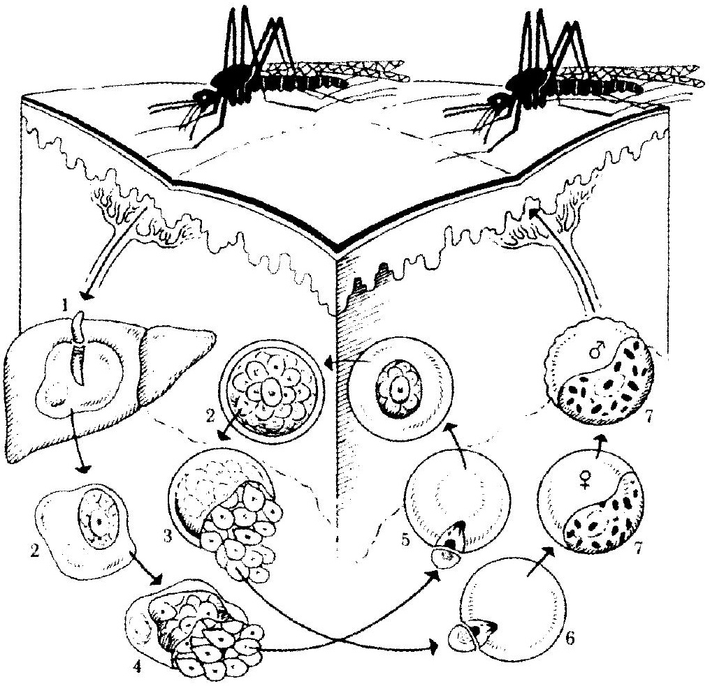
1．寄生出感染一个肝细胞 2．寄生虫增多 3．红血球渐渐死去 4．肝细胞渐渐死去
5．寄生虫感染红血球 6 ．新的红血球被感染 7．寄生虫的性形态
5．寄生虫感染红血球 6 ．新的红血球被感染 7．寄生虫的性形态
图3 疟疾寄生虫在人的机体内的传染循环图
金鸡纳霜的故事
病原体被发现和它们在蚊子与人的机体内的成长过程被研究之前很久，就已经有了一种有效的，虽然并不令人满意的治疟疾的药：从金鸡纳树皮中提炼出来的金鸡纳霜。是谁认识到了这种树皮对发热有疗效，将永远成为秘密？可以肯定的是，耶稣会教士 1615 年或 1620 年第一次把捣碎的树皮粉末带到欧洲。它在欧洲很
快一跃成为抢手的治发烧的药。两个法国药剂师——佩勒蒂尔和拉凡托成功地使这一物质纯化并离析出有效的萃取物。
在荷属印度，在爪哇岛上，出现了巨大的种植区。它们成为一个受到精心护卫的垄断集团，这个集团从中获取巨额利润。打破这种垄断并人工合成金鸡纳霜对人们形成了一种巨大的刺激。所以英国人亨利•威廉姆•珀金斯——德国化学家奥古斯特•威廉•霍夫曼的一个学生，就试图合成金鸡纳霜。在这个过程中他偶然发现了染料苯胺紫。这种苯胺紫形成一个完整品种苯胺颜料的出发点。一门䓸新的，前途无量的工业破土而出。
但是连比年轻的珀金斯有经验得多的化学家们合成金鸡纳霜都失败了，它甚至抗拒所有至少要分析它的尝试。
针对疟疾寄生虫的第一场大战役 20 世纪 20 年代在埃尔伯费尔特的拜耳公司打响。这个战役最初的首席战略家是生于柏林的生物学家威廉•勒尔——保尔•埃尔利希的一个学生和亲密同事。卡尔•杜伊斯贝格，拜耳公司的头头，把本来想在大学从教的勒尔弄到莱沃库森的企业中来。勒尔在那里和几个同事一起研制了第一批治睡眠病的拜耳制剂，其中就有著名的＂日耳曼宁＂。
这时拜耳研究人员专心致志于研制一种治疟疾的药，当时只有金鸡纳霜可治此病。付出许多艰辛后他们发现，鸟类身上有一种自身的，特殊的疟疾病。所以勒尔就在埃尔伯费尔特附近砾石山旁边他的农舍里有了合适的试验动物，去检验拜耳化学家成批地为他制造的化学物质。
勒尔在这些年里成长为一名疟疾专家。疟疾的历史也使他人迷，因为没有别的什么流行病如此频繁地伴随或影响具有世界历史意义的事件。一些历史学家今天甚至断言，说某些部分的世界史将会是另外一种样子，假如不曾有疟疾的话。
死于疟疾的估计有亚历山大大帝（公元前 323 年死于巴比伦），罗马皇帝特拉扬，西哥特人国王阿拉里希一世（410 年死于科森察）
和伊斯兰教始祖穆罕默德（ 632 年死于梅迪那他爱妻的屋里）。穆罕默德刚刚策划好一场新的远征，这次远征将扛起新信仰反对基督教的拜占庭
＂我这里痛＂
在艺术家中，较长时间生活在意大利的阿尔布雷希特－丢勒
还是回到金鸡纳霜上来：一则广为流传的传奇讲述，一位秘鲁医生用它治愈了西班牙伯爵夫人安娜•德尔•尚雄。从此这药就叫 ＂伯爵夫人药粉＂。但是其实当地土著大概根本就不认识这种药，他们甚至拒绝服用它，如果医生给他们开这药治疟疾的话。在有诸多贵重物品给死者陪葬的印第安人的坟墓里，从未发现过用以提炼此药的浅红色树皮。
扑疟喹啉开了个头
在埃尔伯费尔特，化学家们在 30 年代继续研制抗疟疾药。人们提供了一种又一种化学物质，而当初威廉•勒尔则研究它们对一种可以传染给鸟类的疟疾的疗效。不久他也见到了初步成果。
在1926年9月的自然科学家会议上，拜耳公司预告了它研制
的＂扑疟喹啉＂。它提供一个防治此病的新开端，因为它在不同于金鸡纳霜的另一个部位影响疟疾寄生虫的成长周期：它损害配子母细胞通过分裂产生的雌性和雄性性形态。金鸡纳霜对病原体的先导形态，对血液状态裂殖体有疗效。正是这个原因，扑疟喹啉和金鸡纳霜起先常常配合使用。
勒尔当然还在谋求一种除了打击寄生虫的性形态还打击寄生虫的无性形态的制剂，所做的工作也完全显示了成功的机会。勒尔一心扑在这项工作上，他几乎没有任何别的想法了。＂我不想在发现这东西之前就死去。＂他在给他的朋友弗里茨•米奇的信中写道。
勒尔在一次旅行巴尔干途中写下的这几行字听起来就像他已经预感到了自己的早亡。他刚刚 48 岁，却已经不久于人世了。勒尔的后脖子上长了一个小㾔。很可能他以为，这是一个无甚大碍的脓包，没有理由中止工作。然而后来因细菌而发生败血症。当时对某些化脈菌还没有什么防治的办法，如果身体不是自动对付得了它们的话。想征服疟疾的勒尔死于1919年3月3日。
米奇的父亲也死于败血症，另一位化学家的父亲约瑟夫•克拉雷博士，同样也死于此症。所以两位研究人员特别致力于研制防治由葡萄球菌引起的败血症的制剂。
阿的平——第一个成果
然而米奇首先研制的是抗疟疾的新化合物。他和他的化学家同事毛斯共同合成黄色染料曲普利啶（Akridin）的新衍生物。试验动物检验——这一回不是金丝雀，而是印度雀——由勒尔的继承者基库斯承担。
最终在工作结尾时出现的新产品叫阿的平。跟金鸡纳霜一样，阿的平攻击寄生虫的无性形态。不仅病原体的三种不太危险
的形态——间日疟原虫，蛋形疟原虫和三日疟原虫，就连引起危险的热带疟疾的恶性疟原虫病原体，也受到打击。
阿的平在某些方面优于金鸡纳霜。然而它没有扑疮喹啉的保护作用，而且它不针对被蚊子用受感染的血液接纳的性形态。
所以拜耳实验室里的症疾研究高度紧张地继续进行。此时产生了勒尔曾期朌过的新的制剂：埃尔伯费尔特的＂磷酸氯喹＂和英国 ICI 公司的＂氯胍＂。这些化合物也消灭病人血液中寄生虫的性形态。蚊子不会再受它们感染，从而也就不会再继续进行传染。在巴塞尔的霍夫曼－拉•洛赫，产生了药物＂凡西达＂和＂甲氟喹＂。磷酸氯喹和凡西达今天仍被用来防治疟疾。不过它们并非没有副作用。
1991年由史克必成公司推出的制剂＂卤泛曲林片＂是一大进步。世卫组织把卤泛曲林片作为所谓的＂Stand－by＂药，即一种后备药推荐，它可以随身带着在旅途中作为自我用药。它应该在症疾最初症状如发烧，打寒战和头痛出现时立刻服用。＂在亚热带或热带国家逗留后任何不明缘由的发热都必须在获得明确的反面证据之前被归入疟疾一类，并当作疟疾加以治疗。＂大学城蒂宾根的哈拉尔德•克雷奇梅尔说。
热带病医生们一再强调，疟疾预防实施得太过懒散。作为首要的预防措施，出门远行的人应该用抗蚊药，合适的衣服和蚊帐进行自我保护。
囟泛曲林片对间日疟，蛋形疟和三日疟原虫有很高的疗效。它的化学结构和已知的抗疟制剂没有什么关系。此外，这种菲－甲醇衍生物的半衰期短得多，这就使病原体难以生成抵抗力。跟所有其他抗疟制剂一样，此药的作用机制还没有被完全弄清楚。卤泛曲林片的副作用是微小的，偶尔会肚子痛。
瑞士研究人员获得诺贝尔奖
但是如今蚊子也被研究人员们瞄准了。当巴塞尔盖居公司的瑞士化学家保尔•米勒制造出接触杀虫剂＂DDT＂时，抗蚊斗争的一个新阶段开始了。米勒最初曾研究过合成鞣剂，但是自1935年起防治害虫开始引起他的高度重视。1939年秋，他认识到二氯二苯－二氯乙烷的杀虫作用。这种化学物质消灭苍蝇，蚊子和蚜虫，在它的帮助下，通过風子传染的斑疹伤寒几乎可以完全被消除。 DDT 在抗击疟疾方面也大有希望。这种制剂对已长成的蚊子和蚊子的幼虫有作用。罗马附近的蓬丁沼地成为 DDT 的第一批试验场地之一，这是意大利一个寒热病的原发地。这些沼泽地里的蚊子和病原体几乎能够完全被消除。在撒丁岛和希腊，蚊虫袺害也被根除。
新的药物和 DDT 预示了一个没有蚊子的世界。有些地方的寒热病已经在退却，譬如在泰国或印度。然而这个希望落空了。疟疾没认输。病原体和蚊子变得有抵抗力了——不敏感了。这怎么解释呀？疟原虫通过其遗传特征的变化仿佛已经授予自己一层防护化学物质的甲壳。它们的菌种证明自己空前不敏感和好攻击。
蚊子也学会了存活，它们＂研制＂出一种抗击 DDT 的反抗机制。从前它们在喷雾中死去，然而 1976 年世卫组织不得不着重指出，它的肃清疟疾的计划已经失败。虽然不断推出新的药物，而寄生虫却形成几乎不可想像的战略，来抗拒种种制剂。
寻找一种疫苗
人类仍然能控制疟疾吗？世界卫生组织把研制一种疫苗看作向这方面迈出的决定性的一步。许多公司和国家实验室多年来一
直在全力以赴地从事此项工作，在美国主要是沃尔特•里德陆军医院，在瑞士是霍夫曼－拉•洛赫，在德国是贝林公司。贝林公司的亲密合作伙伴是巴黎的巴斯德研究所，前者还受到联邦政府研究和工艺部的资助。
1980年人们在贝林公司开始从事疫苗研发工作。当时这样做的时机已经成熟：凭借新的基因技术方法，人们现在能够获得足够的疟疾寄生虫的反基因物质，主要是从那些表示一个病原体的＂商标＂并引起一种抵抗反应的蛋白化合物中获取。＂从而也就获得了可能性，可以去查明，保护机制对一种通过使猴子免疫引起的感染是否可以感应。＂马尔堡疟疾研究领导人布克哈德•恩德斯如是说。
为了获得抗原，就得使用从体外培养液中获得的疟疾寄生虫恶性疟原虫的蛋白成分。马尔堡使用的寄生虫蛋白比较大。它们的分子量是 41 千至 200 千道夫顿——与之相比，胰岛素分子只有 6千道尔顿重。
于是著名的＂干草堆中的寻找＂开始了，因为在这些大分子中一定会找到一种有免疫，保护作用的小断片。这种叫作表位的分子成分往往只由不多的氨基酸组成。大有前途的表位一经找到，它们就通过基因技术途径被复制。＂我们至少需要 1 或 2 克抗原，以便能够做这样的生物化学和免疫学的检查。＂恩德斯说。
从贝林公司的这一寻找中最终形成三种抗原，其中的每一种都能单独引起一种对疟疾的保护性免疫反应，在 Aotus 猴（夜猴）身上所做的复杂试验得出了这一结论。这些非常宝贵的动物，是唯一适合于感染人类疟疾病原体的动物。不同的抗原来源于寄生虫不同的成长形态：它们在链接后产生针对裂殖体和裂殖子的抗体。
在马尔堡研究人员很快就明白了：人们还需要一种所谓的佐药，一种免疫生物学的加强剂，以增强对疫苗的反应。在这方面，证明自己比作为唯一的药物被卫生当局批准的铝氢氧化物佐药更有效的，是贝林公司的一种名叫＂PAO＂的自主研制的产品，现在正
对它进行对其他疫苗的可用性测试。疟疾疫苗是否将帮助人们获得一种终身的或一种 10 年之久的免疫力，譬如对黄热病那样，这得由对人的临床试验来揭示。
对于生活在疟疾区的儿童来说，一种这样的疫苗可能是生死做关的。它将帮助他们安全度过通常在五六岁前出现的，往往致命的患病期。以后通过反复传染，成人身上就会形成一种天然的免疫力，这就是说，它的抵抗力将会足够强大，足以自动制服病原体并不让疾病暴发。
这件事如何继续进行下去？贝林公司决定同时和巴斯德研究所，世卫组织，美国亚特兰大疾病控制中心合作。马尔堡的猴子试验结果在亚特兰大受到检测。
这时人们准备对人做一期临床试验。这里首先只要确定，这样一种疫苗有多大忍受力，随后将接连做二期和三期人体试验。这肯定要延续若十年，因为这些试验牵涉几千人，他们既应该来自疟疾的原发地，也应该来自没有疟疾的地区。
疫苗用基因技术制造。马尔堡的遗传工程学专家伯恩哈德•克纳普成功地获得三四个串联的抗原，作为一种混种分子。另外，在做基因技术检查时一个事实使研究人员吃惊：在这些通常起保护作用的，由某些氨基酸组成的寄生虫抗原中，几个这样的结构成分重复出现并形成所谓的串联区域。就这样，譬如抗原中的一个约连续 38 次含有氨基酸血清蛋白。虽然一再看到这样频繁发生的现象，这种频繁的次数却是不寻常的。在纽约的一对夫妻研究人员维克托和路斯•努菻荻威格正在研究的一种疫苗上，人们也能看到大量这种重复的忽基酸排列顺序。
＂为什么大自然作了这样的安排？＂恩德斯问，＂我们的唯一解释就是，这样疟疾寄生虫就获得了迷惑其主人免疫抵抗的能力。＂
＂我们在协调国际各研究小组的工作方面是卓有成效的，即使我们已经数次不得不修正自己的时间概念。＂恩德斯说。
＂为什么大自然作了这样的安排？＂恩德斯问，＂我们的唯一解释就是，这样疟疾寄生虫就获得了迷惑其主人免疫抵抗的能力。＂
＂我们在协调国际各研究小组的工作方面是卓有成效的，即使我们已经数次不得不修正自己的时间概念。＂恩德斯说。
像金字塔那样古老
除了疟疾，血吸虫病也属于古老的人类之敌之一。大约 2 亿人染上此病。它是古老的疾病。这种已经在埃及蔓延的流行病的一个症状，在埃贝斯纸莎草纸文卷
在比尔哈茨—他的墓在开罗——之后，主要是英国人阿曼德•鲁弗爵士为研究这一流行病作出了贡献。他还在两具 300 多年之久的木乃伊中找到了蠕虫卵细胞。还有研究人员甚至在估计有 4800 年之久的涂防腐料的木乃伊中找到了这样的卵细胞。
雌雄合抱寄生虫水蛭的䜅性配偶，它能变到 20 毫米长，它的繁殖力极强，其卵细胞日产量能达到 400 多个。某些在亚洲安家落户的种类，被称作日本血吸虫的，甚至还超过这个繁殖记录。卵细胞沉积在人的血管里，肠子里，膀胱中，也在肝里和肺里。它们在那里引起炎症或别的严重损伤。许多卵细胞在机体中死亡，但是大多数卵细胞必须经由肠壁或膀胱进人粪便或尿中，继而进入外界。
卵细胞随同血吸虫病感染者的排泄物一起进入小水洼，池塘或湖泊中。这些卵在水中眊化成毛虭，这些借助其纤毛移动的幼
虫立刻寻觅钉螺，它们能栖身于钉螺并繁殖。
不过卵的躬化得具备两个先决条件：幼虫性喜温暖和光亮。只有在白天并且水温达 25 度左右时，它们才离开卵细胞。此后还给它们留了一段五六个小时的时间，它们必须在这段时间里在钉螺身上找到栖身之处。如果这些幼虫在这场与时间的赛跑中不成功，那么它们就会因缺乏养料而死亡。
不过卵的躬化得具备两个先决条件：幼虫性喜温暖和光亮。只有在白天并且水温达 25 度左右时，它们才离开卵细胞。此后还给它们留了一段五六个小时的时间，它们必须在这段时间里在钉螺身上找到栖身之处。如果这些幼虫在这场与时间的赛跑中不成功，那么它们就会因缺乏养料而死亡。
在钉螺体内，已经赢得这场＂求生存的战斗＂的幼虫变成所谓的母亲包䖵，它们生出无数女儿包䖵。这些女儿包蚴随后就成长为叉尾蚴——因其形状而得此名称。唯一的一个卵细胞能产生多至 10 万个叉尾蚄。
稲田里的危险
叉尾蚴离开钉螺并潜伏水中等候人的到来。它们一遇到人们未受保护的脚，腿或胳臂，就钻人其皮肤。灌溉设施旁的工人，稻田中的农民或者在水中嬉要的儿童，也包括急着想在热带水域中洗个澡的旅游者，是常见的牺牲品。为了使侵入变得容易，叉尾蚴还排出一种特殊的分泌物，用以支持其钻入＂工具＂。
不是随后在机体内成长起来的蠕虫和它们的持续＂嗜血＂，而是大量卵细胞导致了血吸虫病的症状。证明自己特别危险的是侵人门静脉和肺动脉的极细微分权中的卵细胞，它们能导致部分血管闭塞。血吸虫病的最严重后果是膀胱癌和脾脏及肝脏病变。严重腹部水肿的儿童——我们这里也见过他们的照片——在埃及医院里绝非罕见。
世卫组织多年来就曾为消灭血吸虫病而竭尽全力。办法之一是用化学物质消灭钉螺。这在某些地区一度成功了，不过却一再受到卫生条件差的危害。为了消灭已经受感染的机体内的雌雄合抱寄生虫，人们从前使用如铇（俗称吐酒石）这样的制剂，可是这样
的制剂有许多副作用。最近的一些物质证明，在做较长时间治疗时它们相当有毒性。然而由于这是慢性病，长期治疗是不可避免的。＂现在还没有一种理想的治血吸虫病的化疗剂。＂所以 1975 年第4版《热带病教科书》中有这样的话。
这些话在这期间幸好已经在很大程度上过时了。自1972年起，就存在一种名叫＂吡喹酮＂的药物，它被认为接近理想疗效，在一些方面超越了热带病医生们最大胆的希望。
达姆施塔特的第一个成果
吡喹酮的历史起始于达姆施塔特 E．梅尔克制药公司的实验室。研究人员们原本想研制一种新的精神病药物，可是后来结果表明，这种物质有一种还要有趣得多的效用：它意想不到地对臭名昭著的寄生性蠕虫有强烈的疗效。
梅尔克在维生素，强心剂和其他制剂领域里有悠久的制药传统，但是现在公司与莱沃库森的拜耳建立了联系，那儿有一个实力雄厚的热带病学科。于是这种物质就由两家企业继续研制。
在合成和测试了大约 400 种化合物之后，一切迹象都表明，吡喹酮对血吸虫病的疗效比它的全部前任都要强得多。在一种每升只有 0.01 毫克吡喹酮的溶液中，水蛭数秒钟内就不能动了，它们的碳水化合物代谢受到破坏，它们不再能够吸收足够的葡萄糖为自己提供养料。
吡喹酮（别名：环吡异喹酮）消灭全部种类的血吸虫病病原体。对付埃及血吸虫和孟氏血吸虫一次用一剂药就足够，对还在东亚一些地区曼延的日本血吸虫就得服用两次药片。这也没什么问题，因为这制剂很平和，几乎不会引起任何较严重的副作用。
然而总是存在着重新受感染的危险，所以在研发吡喹酮方面与各公司紧密合作的世卫组织力求研制一种疫苗。这疫苗主要用
来保护有关地区的儿童，使他们终身免受这一流行病的侵害。
迄今的试验一直没有成效。长期向开罗一家血吸虫病研究所投入许多资金的贝林公司已经再次中止了这一疫苗研制，虽然初步结果暂时还是唤起一些希望的。
迄今的试验一直没有成效。长期向开罗一家血吸虫病研究所投入许多资金的贝林公司已经再次中止了这一疫苗研制，虽然初步结果暂时还是唤起一些希望的。
麻风没有消失
麻风和结核病也在第三世界肆虐。世卫组织估计，患一度在欧洲也曾令人惊恐的麻风的病人有大约 1000 万至 2000 万人。至于结核病，人们则估计甚至有 16 亿人感染了病原体。麻风和结核病有一个共同点。＂它们的病原体在显微镜下几乎无法区别。＂几十年来一直献身于这两种疾病研究的埃诺•弗雷克森教授说。
还在罗伯特•科赫1882年终于见到显微镜里的结核病病原体之前，挪威人阿尔毛•汉森就看见了麻风细菌。那是一种名叫麻风分支杆菌的微生物，一种不动的，革兰氏阳性的，耐酸的杆菌。直至今天它还一直在抗拒一切企图培养它并在人工培养基上繁殖它的尝试。
麻风的源头估计在印度，中国和埃及。《圣经》中描述的可怜的拉撒路
麻风不像从前人们所猜测的那样有传染性。受传染的危险估计只在与病人密切接触时才会有，尤其是，如果涉及的是＂开放麻风＂病人的话，患上这种形态麻风的病人排出大量细菌。最危险的传染源是鼻涕。估计多半麻风菌存在某种传染待命状态，因为绝不是所有的孩子都被传染上麻风，虽然父母对孩子的传染最经常
发生。卫生条件差和缺乏营养对抵抗力产生消极影响，当然也起着一种作用，特别是在第三世界国家。
直到1940年之前一直没有治疗麻风的方法，如果草药制剂不计在内的话，这是譬如印度病人自古以来就一直在自己给自己调制的。然而它们只有微不足道的药力，尽管有种种呪语。
后来化学治疗剂二胺－二苯一磺（Diamino－diphenyl－sulfon）的研制取得了重大进展。这是磺胺药物的一种衍生物，通常简称 ＂DDS＂。美国默沙东公司首先把这种制剂投放市场。借助 DDS 可以阻止麻风病情加重，馈疡会融化开。不过 DDS 不能治愈麻风，这药必须终身服用。
四种药物
药物库得到进一步丰富，抗生素利福霉素问世了。如不久所表明的那样，这种抗生素对分支杆菌有很强的疗效。然而为了可靠，它和别的物质搭配使用。＂当初在 60 年代末，我在东非同时使用四种治麻风药物：利福霉素，Chlorpethamid，抗结核病制剂异烟肼和 DDS
弗雷克森原本也抱有能培养麻风细菌的希望。在对付结核病病原体方面，这比较容易，但是在对付分支杆菌时，所有努力都失败了。＂最后我找到了另外一种分支杆菌，它和麻风杆菌十分接近，以致在它的帮助下能对新的物质进行测试。＂弗雷克森解释说。
病人们当然难以习惯每天服用四种不同的药。弗雷克森，虽已年过八旬，但一直思维敏捷并很有说服力，他在一次会议上偶然结识了企业家赫尔穆特•弗朗茨。弗朗茨是萨尔氮－法托尔制药股份有限公司的经理和董事，他被说服，同意在他的公司生产一种集这四种物质于一体的组合制剂。萨尔氮公司虽然是一家小企
业，却卓有成效地专攻抗分支杆菌药物。由于大制药企业觉得这个市场不是很有吸引力，萨尔氮公司因而能够在这个领域里为自己争得一席之地。
弗雷克森找到一个岛作为他的组合制剂的＂演兵场＂。他曾在东非偶然遇见过一个同事，此人是马耳他骑士团成员，这是一个献身于慈善医疗事业的组织。这个马耳他骑士促成他和马耳他总理作了一次谈话。
在这个古老的，从前受英国人统治的岛上，有大约 300 个麻风病人。这个岛上30万居民中每1000人中有一人患这种病。马耳他人已经建立起值得称道的社会福利设施，所以每一个病人都能得到社会救济，而且将终身得到这种救济。消灭麻风在当时似乎是不可能的事一一一种使马耳他为自己的旅游业振兴颇感忧虑的状况。
尤其让人感兴趣的是，弗雷克森还保证，说他将借助他的化学疗法和他的东非经验在两年内使这一疾病消失：＂马耳他工程＂诞生了。
弗雷克森和几个医生一起在两年内治疗了所有 300 个病人。此后唯一的忧虑是：旧病会复发吗？这种治疗方法是否只有一种有限的价值，一如情况一直所表明的那样？然而麻风在马耳他确实开始投降了。
不过在治疗期间遇到了一个意想不到的障碍。有些病人害怕完全康复，因为这一本身值得去追求的状况也意味着治愈者社会救济的中止。幸亏马耳他政府出面说服被医治者在这种情况下继续领取社会救济金，这才大大增强了这部分病人的康复意愿。
防治麻风和结核病
在防治麻风时弗雷克森看到，这些制剂对很相近的结核病菌
有多么好的疗效。他能在除麻风外还患结核病的病人身上看到这一点，然而马耳他岛上只有少数几个结核病病例。在弗雷克森的头脑中一个想法成熟了：人们必须把在马耳他岛上获得的知识应用到一个两种分支杆菌广为蔓延的地区。在长期寻找后，南美的巴拉圭人选，那里大约有 2.4 万例结核病病例和 6000 个麻风病人。在德国麻风病患者救济机构的帮助下，弗雷克森开始实施巴拉圭工程。不久他就开始在心中琢磨：这两年的治疗期不能缩短吗？1989年年底他开始试验一种新的组合，它由利福平，复方增效磺胺和异烟肼组成。果然这就使第一批 30 个病人的治疗期限缩短至
按照德国麻风病患者救济机构的设想，2000年之前全世界的麻风病都可以被消除。＂我们现在能说这话了。＂弗雷克森也证实。依照他的看法，应该在印度，非洲和南美开始对麻风发起总攻击。他虽然已是年逾八旬，却还想参加这一战役。
第八章 获取抗艾滋病药的漫长道路
对退行性病毒列出一份＂典型特征简要说明＂，直到最近几十年前即便对于专家来说也不是很简单的事。人们只知道，今天（也包含艾滋病病原体在内的）这些病毒在动物界广为传播，但是人们认为，它们不会在人身上制造疾病。它们属于那些在其核中含有核糖核酸（RNA）的病毒组，核糖核酸是遗传物质脱氧核糖核酸 （DNA）的一种化学近亲物。较大的 DNA 病毒显得有趣得多，人们知道，它们能引起流感，麻疹或肝炎，人们已经找到了抗击这些微小敌人的有效疫苗。
直到进入 70 年代以前，分子生物学一直死守着一个一成不变的教条。按这种教条，DNA 在细胞核中充当 RNA 复制品的蓝本，辟如在制造蛋白质的时候。人们这样认为，信息通道总是从 DNA走向 RNA，从不反向进行。
动摇这一学术观点的两位研究人员非常年轻。其中的一位是霍华德•泰明， 1934 年出生；另一位是戴维•巴尔的摩，比前者年轻 4岁。泰明的博士论文论述美国微生物学家佩顿•劳斯1911年发现的一种病毒。按照劳斯的研究，这种病毒在鸡身上引起肉瘤，结䛨组织瘤。然而不久这项研究便逐渐被忘却。跟对别的 RNA 病毒一样，人们当时无法想像，这样的病毒会引起癌症。如果情况确实如
此，那么专家们也只认为 DNA 病毒才有这种可能，它们将其遗传物质装人细胞的 DNA 中并因此引起恶性地生长。
泰明，刚刚 25 岁，在威斯康星大学工作，他又一次研究了在这期间已按劳斯的名字命名的肉瘤病毒。他用放线菌素———种抗生素治疗劳斯病毒。众所周知，这种物质通过下述途径发挥其作用：它攻击 DNA 基本粒子并阻止遗传物质的进一步增多。但是由于劳斯病毒含有作为遗传物质的 RNA，所以按照当时的观点原本是不会对 RNA 有什么作用的。然而令泰明大为惊讶的是，病毒的 RNA 全部被破坏了。经进一步实验后，泰明的头脑里产生了这样的概念：迄今一直认为 RNA 只能形成为 DNA 的复制品，这个观点不对。他这样想，也许，翻转过来的进程也是可能的。
泰明太年轻，在学术界太不知名，人们没有认真看待他的假设。他还是在许多会议上执著地坚持自己的看法，什么也不能使他放弃自し的原始病毒假设。然而他就是没有——与所有观点相反——RNA 变成 DNA 的证据。
一种酶的关键作用
几年后泰明意想不到地得到了当时在马萨诸塞理工学院工作的戴维•巴尔的摩的友情支持。巴尔的摩，此人本来曾研究过脊髓灰白质炎病毒，他发现了确实可以把 RNA 转为 DNA 的酶。推翻了分子教条的这种酶被《自然》杂志命名为＂逆转录酶＂（RT）。现在一下子清楚了：拥有这种酶的 RNA 病毒在侵入细胞后利用这种酶，将自己的 RNA 变成 DNA。这种被泰明取名为＂原始病毒＂的 DNA与本细胞的 DNA 结合，就能产生癌症。隐藏在细胞基因内的原始病毒可能会无所事事地待在那里，并作为本细胞的基因组成分被转送。原始病毒变得活性起来，那么 DNA 就又变成 RNA，后者随后就促成从氨基酸基本粒子生成蛋白质。泰明和巴尔的摩两人共获
1975年诺贝尔奖。
罗伯特•加洛寻找一种病毒
＂逆转录酶＂及其对癌症病毒的作用这一革命性发现，极大地鼓舞了病毒学家们。尤其在美国，泰明和巴尔的摩成为年轻研究人员的榜样。这些研究人员中的一位便是年轻的医生罗伯特•加洛，他在后来的由退行性病毒引起的艾滋病研究方面担任了一个中心角色。
加洛，1937年出生，出身于意大利移民家庭。他出生在康涅狄格州新英格兰区沃特伯里市。在大学学医期间他就潜心研究白血病，大概是他的小妹妹 5 岁就死于此病的缘故吧。
作为美国国家癌症研究所细胞生物实验室主任，加洛认为弄清癌症和病毒之间的关系是自己最重要的研究目标。他尤其着重研究退行性病毒，它们含有 RNA 并且自若干美国研究人员对此研究以来就作为鸡和老鼠的好几种癌症形态病原体而为人们所熟知。
经历了紧随过早的胜利喜讯之后出现的多次挫折，加洛果真发现了一种退行性病毒，它不仅在动物界，而且在人身上引起癌症。这是一种相当罕见的白血病形态，它主要在加勒比海地区，日本和非洲出现。
来自加利福尼亚的骇人听闻的消息
由加洛小组分离出来的病毒被叫作＂T细胞白血病病毒＂
加洛还在潜心研究他的 HTLV－1，1981 年却从加利福尼亚传
来警报。这一年的 1 月，有人给加利福尼亚大学医学部的年轻医生米夏埃尔•戈特利布介绍来一位 30 岁的男子，他患有一种很罕见的病：一种由卡氏肺孢子虫引起的肺炎。传染病学家们知道这种细菌是动物肺炎的病原体，1942年曾第一次描述过一个人因卡氏肺孢子虫得肺炎的病例。直至1981年以前它被认为是极其罕见的。
带卡氏肺孢子虫的病人呼吸困难，非常虚弱，发高烧并渐渐损失体重。此外病人有时还会腹泻和出现各种腺肿胀。得了这样一种肺炎后若是再受一种感染，病人就会有生命危险。
在几个星期内，又有四个有同样症状，同样被诊断为卡氏肺孢子虫感染的病人被送进加利福尼亚这家医院。所有五个男子都显示了一种显著的白血球缺乏，尤其缺乏 T 淋巴细胞。
所有涉及此病的人全都是同性恋者。这就导致了＂Gay related immune defiency＂（同性恋相关性免疫缺损症）这个临时的名称。在美国，同性恋者叫＂Gays＂。在西海岸，人们观察到了卡氏肺孢子虫感染病人；与此同时，东海岸尤其是纽约的医生们诊断出年轻的同性恋者患一种直到当时为止很少为人们知道的肿瘤——按匈牙利皮肤科医生莫里茨•卡波西的名字命名的卡波西肉瘤。这种肿瘤以身体上的结节形状的，紫色的部位为标记。正常情况下，免疫系统完好无损的人在西方国家很少长这种卡波西肉瘤。
除了这些卡氏肺囊虫感染和卡波西肉瘤病例，1981至1982年在旧金山和纽约——那儿居住着美国1 100 万＂Gays＂中的 100万——也越来越频繁地发现了巨细胞病毒感染病例。这种病毒属于疱疹族，它引起生殖器官感染，持续发烧，疲倦，盗汗，肌肉和关节疼痛。若同时白血球减少，单核白血球——白血球的一种特殊形态——明显增多，那么这种巨细胞病毒感染就像久已为人所知的发否氏腺热。这种病症，起先也像一种流感，它同样也由一种病毒——爱—巴二氏病毒引起。
直到当时为止，医生们认为主要是这些病人感染了巨大细胞病：他们在器官移植后服用了高剂量免疫抑制剂，以此压制免疫系统对被移植器官的抵抗反应。但是现在许多同性恋者罹患这种巨细胞病毒（CMV）感染症，此外还常常伴有梅毒和直肠淋病。不过这两种性病大多数涉及者都不能认真地对待，盘尼西林用药会让症状在几天内消失。
不久病症就已经让人再也无法忽视：所有这些有区别的疾病组合成一种令人忧虑的免疫缺损病象，这种免疫缺损起先主要或者几乎只涉及同性恋者。米夏埃尔•戈特利布和别的医生们通知了亚特兰大流行病监控机构——＂流行病控制中心＂（CDC）。在一篇文章中，戈特利布报告了这些奇特的肺囊虫肺炎病例：＂这些病人全都是同性恋者这个事实让人猜想，某些同性恋性行为与肺囊虫肺炎在这一群体的人身上出现之间存在着一种相互关系。＂
寻找病原体
但是是什么引起这种呈现如此众多形态的疾病，这种人们如今开始称为＂艾滋病＂（获得性免疫缺损综合征）的疾病呢？有一种特别的，迄今未知的病原体吗？罗伯特•加洛认为，这可能是一种退行性病毒，跟他发现的 HTLV－1 很相近，也许甚至是同一种病毒。为了论证这一命题，人们在加洛的实验室里展开了一项令人难以置信的活动。研究人员们虽然没有发现艾滋病病原体的真实身份，但是他们研制出许多大量繁殖病毒的新方法———个获得进一步成功的必要的先决条件。
两年后加洛小组分离出另外一种病毒，它与 HTLV－ 1 有许多相似之处，所以被叫作 HTLV－ 2 。这种病毒还引起某种类型的白血病，这种白血病与对治疗这种形态的血癌很有用的干扰素相连而变得相当知名。
HTLV－ 1 和 HTLV－2 这两种病毒确实很相近，它们都经血液传播，但也经由性交传播或由母亲传染给新生儿。
巴斯德研究所的病毒寻找
巴黎巴斯德研究所里有一个由洛克•蒙塔尼耶领导的小组也在寻找艾滋病病原体。与心急气躁的加洛相反——他有时自己也承认，当时他太快地吹响了胜利号角——蒙塔尼耶是一个少言寨语，拘谨矜持的人。这个1933年出生的法国人同样是若干年来一直在探究癌症与病毒之间的关系。当众所周知，一种从前从血液中获得的抗肝炎病毒疫苗被艾滋病病原体传染时，这种病便在他的研究活动中特别受到重视。
开始时加洛和蒙塔尼耶的实验室之间有一种学术成果的密切交流。法国人1983年曾发现一种病毒并称之为＂LAV＂，它来自从一个年轻同性恋者的淋巴结中提取的一份组织样品。他们称它为 ＂LAV＂——淋巴腺病组合病毒，因为它来自一个病人肿胀的淋巴结。这种淋巴腺侵害是艾滋病的许多症状之一。
不过电子显微镜病毒照片并非总是令人信服，因而蒙塔尼耶不得不在一次冷泉港会议上忍受加洛的尖刻批评。当初加洛显然为发现艾滋病病原体的＂丧子继承权＂担忧。他的合作者米库拉斯•波波维克曾设立过许多种培养液，人们曾偶然发现了一种病毒，它被命名为＂加洛 HTLV－3＂。他坚信，这就是被长久寻受的艾滋病病毒。美国卫生部女部长玛加蕾特•黑克勒不仅把这一成果当作伟大的科学上的业绩，而且还当作国家的业绩来庆贺。
在这期间，蒙塔尼耶也确信自己已经找到了真正的病原体。令人惊讶的是，在巴黎和美国找到的这两种病毒简直相像至极，它们几乎没显示什么往常在许多病毒上都会有的那种基因差别。这该如何进行解释？蒙塔尼耶含含糊糊地认为，他的病人的病毒可
能来自纽约，这个病人不久前曾在纽约逗留过。
巴斯德研究所的其他科学家私下表示怀疑，认为这其实是同一种病毒。加洛并不是在自己的一种培养液中，而是在蒙塔尼耶寄给他的那种培养液中找到了它。另一些科学家说得委婉些：也许蒙塔尼耶的病毒经污染偶然进入加洛的一种培养液里了。
＂这样的污染事件确实并不罕见。＂法兰克福附近的朗格保尔•埃尔利希研究所所长莱因哈德•库尔斯评论说。这家国家研究所专门负责由联邦卫生局批准在德国使用的各种疫苗和血清的检测，但是它也卓有成效地从事研究工作，尤其在艾滋病领域。保尔•埃尔利希研究所在 1985 年就已经奠定了艾滋病病毒检查的基础，罗伯特•加洛曾为此创造了先决条件：他成功地在大培养液中培养艾滋病病毒。＂然后我们得以在不多几个星期后和制药企业一起进行了一次测试，测试明白无误地证明了一个人在自己的机体内有没有艾滋病病毒。＂莱因哈德•库尔斯回忆说。这就使得许多人免受感染。
巴斯德研究所的其他科学家私下表示怀疑，认为这其实是同一种病毒。加洛并不是在自己的一种培养液中，而是在蒙塔尼耶寄给他的那种培养液中找到了它。另一些科学家说得委婉些：也许蒙塔尼耶的病毒经污染偶然进入加洛的一种培养液里了。
＂这样的污染事件确实并不罕见。＂法兰克福附近的朗格保尔•埃尔利希研究所所长莱因哈德•库尔斯评论说。这家国家研究所专门负责由联邦卫生局批准在德国使用的各种疫苗和血清的检测，但是它也卓有成效地从事研究工作，尤其在艾滋病领域。保尔•埃尔利希研究所在 1985 年就已经奠定了艾滋病病毒检查的基础，罗伯特•加洛曾为此创造了先决条件：他成功地在大培养液中培养艾滋病病毒。＂然后我们得以在不多几个星期后和制药企业一起进行了一次测试，测试明白无误地证明了一个人在自己的机体内有没有艾滋病病毒。＂莱因哈德•库尔斯回忆说。这就使得许多人免受感染。
库尔斯，1942年出生，是德国著名的反馈病毒行家蒂宾根的维尔讷•舍费尔的学生。库尔斯自70年代起便认识加洛并高度地评价了他的学术成就。由美国和法国的最高政府部门策划的加洛和蒙塔尼耶之间的和解，以说明两个人都应该是发现者的阐述而告终。
但是不久之后有了新的争论，加洛招致很大的嫌疑。在他那很有启发意义的1991年秋在德国出版的《捕猎病毒》一书中，加洛试图作一次广泛的自我辩白，并非没有承认他自己的错误。这期间他已经变得小心谨慎了。广大民众以及主要是这一疾病的患者们恐怕在令人神往地看到了实验室秘密和学术争论的内幕之后，渐渐地只期朌一件事：愿这场争论尽早结束。
HTLV－ 3 和 LAV 变成 HIV
一个学术委员会已经在早先给这种病毒找到了 HIV 这个名称——Human Immunodeficiency Virus（人类免疫缺损病毒）。就这样，在发现 HIV 之后不久，至少病因已被证明了。这种疾病现在开始要求越来越多的人作出唒牲，虽然许多人不怎么愿意承认这个事实。
当然也不乏把艾滋病视为一种＂上帝的惩罚＂的呼声，说上帝要再一次残酷地惩罚这放荡不羁的生活作风，这日益增长的淫乱勾当。由于这种病的第一批患者主要是同性恋者，所以这个群体的人，这些刚刚为自己争得了某些在社会上自由发展的余地的人，便重新陷于周围人的压力之下。
尤其是美国的＂道德多数派＂运动反对这种＂同性恋瘟疫＂。当时的美国总统里根和媒体长久得惊人地无视这日益肆虐的瘟疫。当异性恋者们也受到这种疾病的侵袭时，同性恋者报纸这样指责说，这个题目刚刚引起公众的广泛关注。不过许多同性恋者很容易惹得他们周围的异性恋者们重新燃起历来就对这个群体存有的厌恶之情。旧金山成为＂Gays＂的一个活动中心。
除了同性恋者以外，不久又有了另一个群体的患者：患 Hämophilie——血友病的人。他们通过受到 HIV 污染的血液而感染，因为美国的血库长期拒绝排除同性恋献血者。从1983年至 1987年，联邦德国有一半以上的血友病人因这样的受到污染的制剂而感染，其中数百人已经在这期间死亡。《明镜》周刊1991年11月提出了相应的指责，统计数在这期间已得到联邦卫生局证实。不过卫生局坚决否认检查从美国进口的血浆方面的疏漏并对其负有责任。
发源地非洲？
人们为病原体的来源长期苦苦思索。这致命的病原菌的起源地在哪里？莱因哈德•库尔斯若干年前就已经猜测，这是非洲的一种乡村疾病，有关方面对他的这一番话相当气恼，人们甚至给他栽上种族主义的罪名。
然而今天几乎再也没有什么人怀疑：至少艾滋病前身病毒确实来自非洲大陆。对于这样一个问题，类似对梅毒那样，很可能永远不会有一个明确的答案。
洛克•蒙塔尼耶一开始就估计病原体发生地在中非。当此外还证实某些非洲猴子，所谓的绿长尾猴受到一种与 HIV 有相似性的病毒侵袭时，这种猜测就更加深了。这种病毒——人们普遍这样认为——通过猴子咬人而得以传染。后来这病毒还经历了几次突变。不过猴子们只是受到病毒 STLV III 感染，它们并不因此而得病。
在许多研究人员看来，艾滋病的暴发源出于文化史上的好几种重要现象，这些现象在第二次世界大战后相互影响和增强：同性恋，增强的性活动和滥用毒品。
HIV－ 2 被发现
1986年还发现了另一种艾滋病病毒。在巴黎，一个塞内加尔的病人进人医院，此人显示了艾滋病的种种症状。尽管竭力寻找，却还是令人惊讶地没有在他的血液中找到 HIV 抗体。而且并非只有这一个个例。不久在巴斯德研究所里就有了其他的艾滋病病人，他们的血清同样也不含有抗 HIV 的抗体。
谜底终于揭开了：还存在第二种病毒，它引起艾滋病，被称作
HIV－ 2 。它似乎在西非蔓延，而 HIV－ 1 迄今则主要发生在中非和东非。两种病毒的基因结构显然有很大区别，以至于 HIV－ 2 竟然能够逃脱适应于 HIV－ 1 的测试。HIV－2 本来被视为 HIV－ 1 的一种温和变体。＂现在人们必须承认，HIV－ 2 变体跟 HIV－ 1 一样致病。＂黑尔加•吕布扎门－韦格曼说。
黑尔加•吕布扎门－韦格曼是格奥尔格一施派尔宫——早先保尔•埃尔利希研究所的领导人。吕布扎门夫人属于德国最活跃的艾滋病研究人员之一，和她的同事库尔斯一样。两个人在其职业生涯开始时不是研究艾滋病，而是研究致癌病毒。
病毒接过指挥权
跟所有其他病毒一样，HIV－ 1 也是一种完美的寄生虫。与细菌和别的寄生虫相反，病毒没有自己的代谢作用，然而它们却能够改变受它们侵袭的细胞的控制机制程序，使之适应于它们的需要。
进行主细胞中这种管辖权接任的工具是病毒的核酸。这要么可能是 DNA（脱氧核糖核酸），要么可能是 RNA（核糖核酸）。RNA在化学上跟 DNA 只有微小区别，但正常情况下在细胞中有别的任务。
属于 DNA 病毒的辟如有对地区性的感冒疾病，对咽炎负有责任的腺病毒。引起小儿麻痹症的病毒属于肠滤过病毒，它们含有 RNA。
HIV－1 寻找其牺牲品
HIV－ 1 大约一万分之一毫米长，它的基因结构由大约 9500 对碱组成。它极其特殊，只选择少数类型的人体细胞作为攻击目标。
首选的牺牲品是白血细胞，即所谓的 T 淋巴细胞。但是吞憡
细胞和单核白血球，免疫卫队的吞哗细胞，也受病毒侵袭。所有这些细胞在其表面有一个固定的分子：＂CD4＂。它显然为免疫系统的许多信使物质充当一种识别信号。
然而艾滋病病毒同样也使用这个＂针地＂。为了使自己固定在这些分子上面，这病毒就利用在其外平面上的某个拘留分子——一个分子量为 12 万的糖一蛋白一蛋白质（Glykoprotein，糖蛋白），所以这个病毒固定点被称作＂gp120＂（缩略词＂gp＂表示糖蛋白）。
如果病毒拘留点和 CD4 分子共同起作用，细胞表面的病原体就能够站住脚，此后它们就进入细胞内核。这种渗人一发生，携带病毒的逆转录酶就行动起来，因为病毒的 RNA 必须在这个酶的帮助下被转让给一个 DNA 束并增加一倍。
摆脱了这些其余的部分后，这＂赤裸的病毒＂——病毒 DNA，就潜人＂最神圣的内殿＂细胞核。它在那里把它的 DNA——这种 DNA与细胞 DNA 的几十亿对碱相比是极小的——弹进主细胞的那个 DNA 中。
这种被嵌入细胞遗传物质的病毒物质被叫作原始病毒 （Provirus），它在细胞 DNA 内核往往较长时间内采取完全不活跃的态度。它完全受到主细胞保护套的保护，自然可以免受身体卫队的攻击。然而混人的病毒的 DNA 也和主细胞的 DNA一起被转递给所有的女儿细胞。
原始病毒的克制或＂潜伏＂阶段也许延续许多年。估计此外所谓的抑制基因也使这种病毒无法发展和繁殖，它从一代细胞转递给另一代细胞，自己却并不显露。
几年后这种＂和平共处＂可能会突然发生戏剧性的变化。睡眠的原始病毒醒过来并开始像执行命令似的生产后代。这种突然的活力是如何被激发出来的，这个问题还没有确切的答案。HIV 可能被别的病毒激活，辟如被疱疹或肝炎的病原体，如果这些病毒同样侵入细胞的话。艾滋病检测阳性的人确实也感染这样的病原体，
一如人们从在血清中存在的抗体上所认识到的那样。
为了制造病毒后代，病毒 DNA 就必须被重新变形返回至 RNA。为了随后能制造出新的病毒复制品，就利用了存在于细胞中的分子。为了使这种＂结构成分＂相配，病毒使用了一种酶，一种所谓的蛋白酶。这种蛋白酶，如我们还将见到的那样，提供一个对这一病毒的攻击点。孤零零的主细胞被渞截细胞杀死。
为了制造病毒后代，病毒 DNA 就必须被重新变形返回至 RNA。为了随后能制造出新的病毒复制品，就利用了存在于细胞中的分子。为了使这种＂结构成分＂相配，病毒使用了一种酶，一种所谓的蛋白酶。这种蛋白酶，如我们还将见到的那样，提供一个对这一病毒的攻击点。孤零零的主细胞被渞截细胞杀死。
HIV———位变形艺术家
HIV 有一种极其敏感的基因物质，它能够在从一个载体向另一个载体的感染过程中发生急剧变化，这病毒可以说是赋予自己一种新的基因化妆。甚至在仅有的一个病人身上常常会有 HIV 的十多种不同的基因变种。也许这些变体通过 DNA 或 RNA 转让时退行性病毒的复制错误而产生。＂HIV
病毒并不侵袭每一个 T （帮手）淋巴细胞，而仅仅侵袭约每一万个细胞中的一个。这一现象现在只能被记录下来，人们还不能对它作出令人信服的解释。如果新生成的退行性病毒离开宿主细胞，它们就在被其洗劫一空的细胞膜内留下包络蛋白质。这些＂废墟＂被免疫系统识别为异体，被病毒搞垮的细胞现在才受到拦截细胞的攻击并被摧毁。
感染开始时
人体在感染后大约四至六周，血液中才会有 HIV 抗体。有时
这段时间可能要长得多。这种＂血清转换＂被认为是受感染的初步证据。
血清转换在临床上通常默默进行，只有在一定的情况下在这个不起眼的阶段才会有发烧，呕吐，关节，肌肉和脑袋疼痛。也可能会出现皮疹和淋巴结肿胀——纯粹是流感常有的或患发否氏腺热时出现的症状，一种同样由病毒引起的感染。
然而这些现象却只是短暂地表现出来并且不久就消失了。在这之后人的健康状况似乎未受损害，患者不幸地以为可以高枕无忧了。其实他们在这个阶段就可能会传播感染。
在血清中由 B 淋巴细胞组成的抗体，它们的＂斗志＂怎么会这么薄弱，往常它们都是十分可靠的＂看不见的同盟者＂呀？为什么这些 Makrophagen，这些巨噬细胞，不像通常那样投入同这些危险的病原菌的战斗之中？人们不禁产生这样的疑问。可惜他们仍然得不到答复。至于说到巨噬细胞，不久前人们甚至产生这样的怀疑：它们虽然吞食，但不杀死病毒。病毒只是被巨噬细胞输送到机体中别的部位，细胞在那里又将它们的俘虏释放出来，辟如在大脑中和脊髓中。它们充当危险的＂特洛伊木马＂
如果情况是这样的话，那么这也就解释了，为什么尽管有血脑屏障，HIV 还是这么早就在中枢神经系统中出现并在那里制造障碍。
不过 HIV 病毒倒不像譬如肝炎病毒，常常和 HIV 一起被传播的肝炎病原体那样有传染性。所以许多艾滋病病人显示了一种阳性的肝炎 B 反应。但是跟肝炎不一样，几千个艾滋病病毒显然不足以引起感染。引起艾滋病感染显然需要几百万个 HIV 微粒。这也是为什么在与艾滋病病人普通接触，甚至使用同一个卫生间时
不会发生感染的原因之一。
病毒是高度敏感的，它对环境影响只显示了微弱的抵抗力，一些化合物如低氯化钠，多聚甲醛，酒精或来苏水能迅速将它杀死。 HIV 也会死，如果它被置于一个酸性或碱性很强的环境中或在摄氏 56 度上被加热 30 分钟之久的话。可惜不能用这样的方法来对付机体中的病毒——一个在细菌学早期就已经出现的难题。
病毒是高度敏感的，它对环境影响只显示了微弱的抵抗力，一些化合物如低氯化钠，多聚甲醛，酒精或来苏水能迅速将它杀死。 HIV 也会死，如果它被置于一个酸性或碱性很强的环境中或在摄氏 56 度上被加热 30 分钟之久的话。可惜不能用这样的方法来对付机体中的病毒——一个在细菌学早期就已经出现的难题。
特别危险——肛交
HIV 通过血液，精液和阴道分泌物传染。是否还通过唾液传染，眼下还不好说。同样没有把握的是，它是否也能通过泪液，汗，尿或粪便发生。是否昆虫，如蚊子，也能传播病毒，迄今没有完全弄清楚。
肛交时，尤其对于被动的性伙伴来说，受传染的危险最大。美国同性恋情况的报告就说明了这一点。但是口交也有受感染的危险，危险随性伙伴的频繁更换而增大。
第一批抗体出现
由加洛和蒙塔尼耶小组同时研制出来的艾滋病检测法，首先建立在证明血清中有 HIV 抗体的基础上。抗体证明病毒与所涉及的机体之间在进行一场争斗。一些时候以来，病毒或它的核酸也可以直接检测出来。然而这样一种方法花钱很多，对于例行诊断而言相当昂贵。
可惜感染在受传染后大约四至八周才能被证实，因为这时机体才使抗病毒的抗体行动起来。所以在一次可能的感染后几天内就做一次这样的抗体检测是毫无意义的，这时的结果只能是一种错误的阴性检测，而这会引起一种危险的安全错觉。
第一次检测也可能提供错误的阳性结果，导致当事人作出绝望的反应。所以医生们无论如何也要等着瞧两次检测的结果，然后才将决定其命运的诊断告知病人，而且不是通过电话，而是作一次面对面的谈话。一次阳性检测并不意味着疾病不可避免地一定会暴发。
患病的阶段
这些年，从临床经验中形成了对艾滋病各个阶段的划分。一种是美国有声誉的沃尔特•里德医院的医生们作的分级法，另一种是亚特兰大美国疾病控制中心的方法，最后还有一种是法兰克福知名的艾滋病临床医生莱因哈特•布罗德和艾克－布里吉特•黑尔姆的方法。按照1987年实际形态的 CDC 分级法，该病共分成四个阶段：
1．急性 HIV 感染
2．没有临床症状的感染（无症状的）
3．好几个部位上久治不愈的，持续不断的淋巴结肿胀（淋巴腺病）
2．没有临床症状的感染（无症状的）
3．好几个部位上久治不愈的，持续不断的淋巴结肿胀（淋巴腺病）
4．HIV 疾病晚期
一种重要的临床指数指明了 CD4 淋巴细胞的数目，正常情况下它是每毫升 800 到 1000 ，艾滋病病人的这个数目小得多。如果这个值降到每毫升 200 以下，情况就危险了。
一种重要的临床指数指明了 CD4 淋巴细胞的数目，正常情况下它是每毫升 800 到 1000 ，艾滋病病人的这个数目小得多。如果这个值降到每毫升 200 以下，情况就危险了。
不怎么重要，但至少是疾病阶段的一个标记的，是血小板，所谓的 Thrombozyten 数量的减少。正常情况下血小板数目每毫升约 25 万，得了艾滋病后血小板数目常常降到每毫升 10 万以下。
往往还要加上别的因素，才会形成如专业术语所说的艾滋病的＂十足病象＂。在这方面首先要列举的是其他病毒感染，譬如肝炎病毒和巨细胞病毒。异体蛋白，譬如被动性伙伴在肛交时经肠
子接受的精液也被算作是附加因素；毒品—从酒精到海洛因，过度的阳光照射，还有营养不良或者不足，都起着一种消极的作用。所以尤其是发展中国家的人抵抗力弱。梅毒或其他性病显然也加快疾病的进程，原则上甚至性器官上的每一处溃疡都有这种作用。
艾滋病病人的因淋巴细胞缩减而受到削弱的免疫系统开辟了众多的传染途径，而健康的机体也许原本就可以轻易对付得了它们。已经提及的卡氏肺孢子虫病，一种特殊形式的肺炎，被认为是这些感染中最重要和最危险者。
最近以来用喷他脒———种由两种胺类构成并且在 20 世纪 30 年代就已经被合成的化学物质，来预防卡氏肺孢子虫病。起先因其降血糖作用它似乎适宜治疗某些类型的糖尿病，但是后来当事实表明喷他脒对防治单细胞病原体感染很有疗效时，这种化合物在非洲就被用来预防和治疗锥体虫感染。由于它在肠胃中难以被吸收，所以今天采用的喷他脒气雾剂便是最佳使用方式。以这种方式被吸收的喷他脒侵入肺泡，病原体就喜欢在这些肺泡中繁殖。按初步研究的结果，许多艾滋病专家都认为喷他脒是一大进步。现在也有一系列别的治 PCP 的药物正在试验中。
许多艾滋病病人也患弓浆虫病。这种感染缘于一种存在于人和动物身上的寄生虫——贡德尔弓浆虫，它是按这些单细胞病原体研究的最著名专家之一，德国研究人员贡德尔的名字命名的。由于这样的单细胞生物显然自远古以来就存在，所以它们被称作 ＂原生动物＂。
贡德尔弓浆虫经由未煮熟的，受感染的肉以及猫的粪便传染。它还可能在输血时，器官移植时被传递或经由胎盘被母亲传递给孩子。在免疫系统正常的人身上，单细胞病原体常常和平＂共处＂地在机体内停留数年之久。当抵抗力受到破坏时，贡德尔弓浆虫感染才会通过疾病症状表现出来。
在 HIV 感染者身上，弓浆虫病病原体对中枢神经系统表现出
一种特殊的喜爱。病原体一旦在那里盘踞下来，就会出现神经的病变，如局部麻痹，视力和语言障碍，意识也可能会衰退。病人好像迷失了方向，他们的动作放慢了，许多人感到极度疲倦。痉挛发作，头痛和发烧也是弓浆虫病的典型症状。感染同样能在肺部，眼结膜中，淋巴结中，心肌和肾上腺中蔓延。
若早作诊断，那么弓浆虫病就容易被确诊，一些有效的药物可供治疗用：化学治疗剂乙胺嘧啶和磺胺嘧啶。不过也经常出现旧病复发和强烈的副作用。
真菌找到许多器官
艾滋病病人常有的另一种感染是念珠菌感染。许多门诊病人身上显示了这种感染的症状。元凶是白色念珠菌——口腔，食道和阴道的数膜上出现近于白色的苔层和溃疡。真菌有时也侵袭呼吸道，肠和皮肤。可供选择的治念珠菌病的药物是酮康唑，商标名 ＂Nizoral＂，它证明自己治疗许多菌病很有效。不过有时肝脏经受不住这种制剂，所以要以每两周的间隔时间监测肝酶。
一种特别可怕的艾滋病后果是＂出血性肉瘤病＂，它在艾滋病被发现之前属于极其罕见的肿瘤之一，只在地中海地区男人身上出现。自从出血性肉瘤病在洛杉矶越来越频繁地与艾滋病相关地出现，它才为今天的这一代医生所认识。
用来治疗出血性肉瘤病的，是抗癌药如＂博来霉素＂，＂长春碱＂，＂长春新碱＂，在第十四章里将介绍这些药。与艾滋病并发的淋巴肿瘤也用这些药物治疗。
世卫组织的数字
截至1991年10月，世界卫生组织收到了来自 163 个国家约 45
万个艾滋病病例报告。不过这些数字并不反映真实的，危险得多的形势。按世卫组织估计，实际的艾滋病病人数字大约是这个数字的三倍。
在德国，新感染率已经有所下降，得病的病例不再每 12 个月，而是大约每 16 至 18 个月翻一番。在我们这里——按谨慎的估计——1991年总计约有8万至 10 万 HIV 感染者。在每月约 600 至 800 新感染者的一半人当中，同性恋接触起着决定性的作用。
艾滋病病人的最高数字仍然在美国。欧洲，瑞士——按其人口衡量——名列前茅。
几年前，新感染的重点从同性恋者转移到吸毒成瘾者，注射毒品者。不过据世卫组织的最新调查，今后几年异性恋者中的感染将增多。这也适用于德国。＂经异性恋获得的感染份额在增加。＂慕尼黑教授内波穆克•策尔讷1991年2月在《德国医师报》上断言。
1981 年还是同性恋者占病人的
在美国，艾滋病也开始渐渐失去怪僻人疾病的征象。道德上的舆论攻击，像＂命运只击中＂有罪过者’＂之类的指责在减退，这也应该归因于如 23 岁的金伯利•贝尔盖利斯这样的病例，她在治牙时受到了感染。
特别引起美国公众深思的，是他们的体育偶像＂魔术师＂埃文•约翰逊，1991年11月他在一次新闻发布会上承认自己感染了艾滋病。约翰逊，已婚并有一个孩子，他被一个女人感染了。他想将来放弃打篮球并献身于艾滋病宣传教育——这在一直还对此过分拘谨的美国不是一件简单的事。不过许多同性恋者却较长时间以来
就表现了对＂安全的性＂口号，尤其对医院里病人的悲惨景象深受感动和深感震惊。许多人从此放弃有风险的性行为。
有毒瘾的人较难受其影响。现在正就是否能在这方面取得进展展开讨论，譬如通过提供一次性针头，某些公共卫生政治家甚至大胆设想毒品开禁。柏林联邦卫生局曾通过民意调查査明＂共用针头＂在旧联邦各州有所减少，而同性恋者和异性恋者使用阴茎套的情况则增加了。1984 年卖出了约 3600 万只避孕套，1988年则是 1.1 亿只。
一些时候以来，艾滋病在纽约好像正成为社会弱势群体和少数人中的一种流行病。1981年约有
艾滋病——儿童也在劫难逃
总的形势将导致将来会有更多的艾滋病儿童来到这个世上，尤其是因为不少感染了艾滋病的妇女——常常违背医生的劝告——想足月分娩她们的孩子。在联邦德国，大约有 200 个幼儿被自己的母亲感染了艾滋病。约
病毒能在妊娠期经由胎盘传导，也能在分婏过程中或通过母乳传染。大约
在儿童身上，占支配地位的往往不是一向为人们所熟知的机会感染，而是另外的，通常是颈项，鼻子和耳朵区域的细菌感染，即中耳炎，扁桃腺炎和副鼻窦炎。此后就会出现肺炎和脑膜炎。后来这些儿童还会受到成年病人通常有的那些机会感染的侵袭：卡氏肺孢子虫病，蔓延至中枢神经系统的弓浆虫病和一种鹅口疮食道炎。
这些儿童的期望寿命很不一样。来自美国的报告表明，在这期间艾滋病已成为儿童死亡的最重要原因之一。不过自从使用伽马球蛋白——从供血者的血液中提取的抗体——以来，治疗受 HIV感染的儿童就多少有点儿希望了。科隆大学病毒学所的科学家托马斯•梅尔滕斯在1990年柏林国际艾滋病大会上，提交了极其令人难忘的数字。
从抗癌药到抗艾滋病药
这一瘟疫暴发之后不久，人们就已经开始寻找一种对症药。起先并不是要研制一种新的制剂，新制剂会延续 10 年或更长的时间，如果人们想到大多数药物的研制的话。此外，副作用少的抗病毒物质似乎不存在。
在这一危急情况下，这就显得像是一件大巧事：已经有一种药，人们能够期望它对治艾滋病有某种疗效。这种化合物，直到不久前一直是唯一被准许生产的抗艾滋病制剂，它叫叠氮胸苷 （AZT），商品名＂立妥威＂，生产者是英国制药企业集团＂威康＂。
1968 年第一次合成了＂立妥威＂，不过不是在威康的实验室里，而是通过密歇根州癌症基金会的杰罗姆•霍维茨。霍维茨当时想研制一种新的药物，一种对癌细胞有强烈效果的抗代谢物。构成这项研制出发点的，是细胞制造其 DNA 所必需的核酸的结构成分。人们只要在化学上稍稍改变一下这些结构成分，癌细胞就分不清伪代谢物和真代谢物。这些基本粒子被置放进 DNA，紧接着就把细胞机构弄乱。
然而叠氮胸苷却令人失望。无论作为抗病毒物质还是作为抗癌药，它比现有的抗代谢物没有什么优越性。所以 AZT 逐渐被人们忘却。
面对艾滋病治疗的困境，威康人想起了从前并不怎么成功的
这种制剂。1984 年它被重新合成并在不同的动物身上进行检测。美国国家癌症研究所的实验室进行了最广泛的试验。威康提供这种物质。威康实验室当时还不拥有可以同像 HIV 这样危险的病原体打交道的安全设施。
1985年7月在美国的三个中心开始进行所谓的阶段I研究。这一研究要弄清药物动力学——它涉及一种物质在机体内的行为——同时还要弄清临床效果和调和性。这个阶段I研究也受到威康公司的资助。
初步结果是有效的。此后 AZT 的进一步研制工作开始大力推进。1986年2月至9月，美国的 12 个中心对 282 个患艾滋病或一种与它相关疾病的人进行了双盲试验。这一研究证明，AZT 对 HIV病有疗效。阶段 I 研究的领导人是罗伯特•亚尔雄，阶段 II 研究由威康研究人员和知名的美国女病毒学家玛加蕾特•菲舍尔领导。
开始时大部分艾滋病病人得到 1500 毫克，这是比较高的剂量，它导致强烈的副作用。然而按玛加蕾特•菲舍尔和别的艾滋病研究人员的最近研究，每天 600 毫克的剂量也就够了。这被视为显著的进步。剂量较少时，违人心愿的副作用，譬如对骨髓的损害也小得多。这是一种极受欢迎的效果。开始时 AZT 只用在艾滋病发病之时，今天也用它来治疗已经感染，但还没显出病象的人。通过这样的早期治疗，如较大规模的研究所证明的那样，艾滋病的暴发至少能被延缓。
新的制剂在望
在长久的，痛苦的等候之后，1991年秋天，第二种名叫＂ddI＂的制剂获准使用。这个缩略词的全文是 Didesoxyinosin（二脱氧肌苷）， ＂ddl＂由美国百时美施贵宝制药公司研制。跟 AZT一样，这也是一种化合物，它阻碍逆转录酶。艾滋病病毒需要这种酶，以便将其核
糖核酸转入脱氧核糖核酸。
这种药物只需每天服用一至二次，它显然不损害脊髓，并且似乎在艾滋病病毒经长期 AZT 治疗后不再对这种药物作出反应时仍有疗效。不过按照美国食品和药品管理局的意见，它只应在＂立妥揻＂不起作用或显示太多副作用时才被使用。
这种药物只需每天服用一至二次，它显然不损害脊髓，并且似乎在艾滋病病毒经长期 AZT 治疗后不再对这种药物作出反应时仍有疗效。不过按照美国食品和药品管理局的意见，它只应在＂立妥揻＂不起作用或显示太多副作用时才被使用。
在霍夫曼—拉•洛赫公司，大有希望的化合物 ddC（Didesoxycy－ tidin，二脱氧胞苷）正在进行临床试验。它主要用在治疗晚期 HIV病人。 ddC 是否应该单独或和别的抗病毒药物如 AZT 或 ddI 一起使用，这一点现在还没弄清楚。可能的每日剂量在 1 至 6 毫克之间。
AZT，ddI 和 ddC 试图阻止已侵入细胞的病毒繁殖。另一种抗 HIV－ 1 物质则在准备阶段就开始制造了：许多实验室里正在制造人造的 CD4 受体，即那些停泊场所，它们为人体细胞表面的病毒所利用。这些 CD4 模仿者用相当多的＂停泊处＂蒙蔽病毒并保护真正的停泊处不遭受病毒的对接。
这种对病毒的迷惑听起来颇为动人，但是迄今这种 CD4 方法还没有证明自己很有成效。人造＂病毒陷阱＂的半衰期非常短，它只有不多的几分钟，所以必须在很短的间隔时间内进行新的注射。不过这个缺点有望被克服，如果随着时间的推移找到新的方法的话。
研究人员也正在试验这种方法：把 CD4 受体和别的，已知对病毒有损害作用的物质联结起来。和抗体，精确点说和免疫血小板的组合也正在研究之中。美国科学家期望这会提高抗 HIV－ 1 的抵御力。
通过所谓的抗知觉分子抗击病毒呈现崭新的前景。如同已经描述过的那样，在病毒和人体细胞之间斗争的第三阶段，病毒 DNA已经潜人本细胞的 DNA：一种原始病毒产生了。这个先导病毒常常保持其不活跃性，但是以后会开始生育后代。为此原始病毒就
必须读懂 DNA 中的基因指令，读懂这一＂蓝图＂，以便制作精确的复制品。
不过这个过程可以被中止，办法是把＂胡闹分子＂安置进病毒阅读模型。如果这件事办成，信息就不会被病毒正确接受。这个分法尚在早期试验阶段。此外制造抗知觉分子极其费钱和费时。阻碍蛋白酶的化合物或许会证明自己是抗 HIV 的第四门武器，这种分裂蛋白的酶需用病毒将为生产这种病毒的后代所需要的这一病毒的较大分子分裂成较小的部分。这些蛋白酶一旦受到阻碍，病毒就不会繁殖。
＂现在仅美国公司就有 111 种不同的化合物正在被检测。＂库尔斯教授报告说。不过依他看来，现在看不见有什么＂神奇子弹＂的影子，＂当然谁也不能确信就不会有意外的惊喜，不会有新的药物突然显示谁也不曾料想到的性能＂。
＂现在仅美国公司就有 111 种不同的化合物正在被检测。＂库尔斯教授报告说。不过依他看来，现在看不见有什么＂神奇子弹＂的影子，＂当然谁也不能确信就不会有意外的惊喜，不会有新的药物突然显示谁也不曾料想到的性能＂。
这是可以理解的：许多艾滋病病人担心享用不到新药的好处，所以他们采取自助行动。他们绝望地密切注视着这个太漫长的过程，依他们看来卫生部门检测和开放新药耗时太久。所以美国出现了一个很有规模的还没有被批准使用的药物黑市市场，它使人想起这样的时期：那时梅毒病人千方百计在胂凡纳明还没有上市之前就想弄到这一救命的药物。顾及垂危病人，美国政府直到不久前一直容忍这种不合法的交易。
获得疫苗的漫长道路
有防艾滋病的疫苗吗？现在大多数病毒学家的回答是否定的。为什么在别的病毒感染上，不管是在天花，麻疹还是小儿麻痹
上早已被证明是可能做到的事，在艾滋病上就长久做不到呢？许多人提出了这样的问题。
已经确定在众多的实验室里正在研制这样的疫苗，不过眼下研究人员们前进的道路上还有数不清的困难，譬如病毒的基因多样性。一种预防病毒的某一部分，譬如预防已提及的病毒外壳上蛋白的疫苗，如果它不预防所有的 HIV 变体的话，那么就几乎毫无用处，或者只是很短暂地有效。一种最低限度的病毒突变，譬如一种氨基酸的交换，就已经会破坏一种疫苗的作用。长此下去，也许一种许多 HIV 病毒变体抗原的免疫混合物将在这方面设法补救。
在争取获得一种或很可能好几种艾滋病疫苗的赛跑中，哪些研究人员将首先冲过终点，这一点谁也不敢预言。拉霍亚的约纳斯•萨尔克大有希望。自50年代他和他的同事阿尔贝特•B．萨宾在研制预防小儿麻痹疫苗上成功取得突破以来，他就一直是个世界著名人物。这种已经证明性能极好的疫苗从已被杀死的病毒中提取。
萨尔克想在治疗艾滋病上用一种相似的方法使自己一生的事业达到顶峰。他已经制造了一种从已被杀死的病毒中提取的疫苗并且甚至已经在征募做第一批检测的志愿人员。由于艾滋病病毒一再诡计多端地冲破机体的防御障碍，所以某些病毒学家对萨尔克的工作并非完全没有怀疑。然而这些持怀疑态度的人最近也确信，在病毒与人之间的这场斗争中现代人最终将取得优势。
动物一如既往地在这方面作出重大贡献。1991年夏末，莱因哈德•库尔斯和他的同事们获得一大成功。在保尔•埃尔利希研究所，人们用所谓的猴子艾滋病病毒 SIV（ simian immunodeficiency virus）使猕猴获得免疫力。猕猴们获得四次被杀死的SIV，随后它们果然显示了强劲的抵抗力，以至竟没有发生感染，即便用最敏感的验证方法也无法再在猴子身上找到病毒。这个结果曾合乎情理地在德国引起很大的轰动。
库尔斯和他的同事们在这方面与一些研究所紧密合作，共同参与＂和平竞赛＂。＂我们的近期任务是研制一种可以在动物身上获得百分之百的保护作用的疫苗。下一步就是对人的临床试验，一些公司正在准备进行这一试验。＂库尔斯在朗根他的研究所里的一次谈话中这样说道。
库尔斯深知人们正怀着急切期待的心情密切注视着所有实验室里的工作。＂尽管如此，我们还是得呼吁公众要保持点耐心。最终的成功——对此我并不怀疑——只有通过扎实的科学工作才会到来。＂
第九章 荷尔蒙活化生命
如果真的曾有过山妖，那么他身材巨大的原因一定很快会被弄清楚：一个许多人几乎连名字也没听说过的器官的一种扩大和过分行为。那是脑下垂体或 Hypophyse（拉丁文：脑垂体）。它只有半克重，位于脑皮层至脑干的连接处，这种腺堪称大自然的杰作。如果它患病，辟如通过一个肿瘤，那么我们机体的极其精密地协调好的荷尔蒙平衡就会陷入一种不可救药的混乱状态。脑垂体的产物于是就必须通过人工的途径被取代。
脑垂体一方面自己生产荷尔蒙，另一方面用它的前叶刺激另外六种此类物质的生产：三种性荷尔蒙按它的＂命令＂产生，此外还有甲状腺荷尔蒙和肾上腺荷尔蒙以及生长荷尔蒙。生长荷尔蒙的生产过剩使我们的山妖长得如此高大，相反，它的太微弱的活动则生产出侏儒。白雪公主的七个矮人，我们不妨这样猜测，就是缺乏这种荷尔蒙。不仅这种荷尔蒙的组成成分早已被破解出来，它甚至已经能用生物技术被制造出来。生长荷尔蒙，生长激素，对于一千多名在联邦德国带着一种荷尔蒙不足出生的儿童来说是必不可少的，如果他们想达到合适的身高的话。研究内分泌学的医学家们从前认为，脑垂体在荷尔蒙＂乐队＂中扮演指挥的角色。人们喜欢称它为＂首席腺＂。现在已经弄清楚：它有一名上司。这甚至是
在字面意义上的，因为下丘脑在大脑中驻扎在脑垂体的上面。一个微小的静脉网把下丘脑和脑垂体联结起来。它被叫作下丘脑，是因为它虽然在脑垂体上方，但在丘脑的下面。
一个上级机关
但是下丘脑不是专制君主，它受我们大脑的边缘系统的影响。此外，上一级的腺，如生殖腺，使用反馈权。下丘脑生产所谓的释放荷尔蒙，这些荷尔蒙通过血液途径向它们的目标器官航行，然后这些目标器官又生产出荷尔蒙。
荷尔蒙只可以在微克（百万分之一克）或至多在毫克（千分之一克）的范围内被测量到。所以延续了很长时间，由身体的各种重要的腺生产出来的物质的成分才被破译，其性质才被认识。当可以肯定荷尔蒙腺不同于辟如胃部的腺，不拥有排泄管时，这门迅速发展的科学的名称便产生了：内分泌学，按希腊字的＂内＂，＂分＂， ＂剔＂取名。内分泌学是论述内腺以及它们的腺液荷尔蒙的功能的学科。
老一代解剖学家们自然已经了解了腺：甲状腺，肾上腺，卵巢和睪丸。但是格丁根的生理学家阿诺尔德•阿道夫•贝特霍尔德最先试图探求那些腺的物质所产生的作用。
贝特霍尔德的试验动物是公鸡。很久以来许多公鸡就一直被阉割，因为这样的极其不自愿地成为阉鸡的＂前公鸡＂的肉味道更鲜美，它比其完整无损的同类的肉更细嫩。贝特霍尔德想知道，阉鸡是否可以变回公鸡，哪怕只是短时期内。他把已除去的生殖腺又移植给这些动物，而且没有移植到它们原来的部位，而是移植在别的部位，如颈项或后背。结果是清楚的：阉鸡又变成了地道的公鸡。所以生殖腺——贝特霍尔德这样推断———定具有导致这样的变化的性能。就这样，贝特霍尔德成为荷尔蒙学奠基人之一。
法国生理学家査尔斯•爱德华•布朗•塞夸尔德试图撰写荷尔蒙学的续篇。1899 年他向巴黎科学院报告了一个在自己身体上做的有趣的实验。布朗•塞夸尔德吃了一种公牛睪丸浸膏，因为一些时候以来他就患有严重的老年病痛。他说这种睪丸浸膏使他变得很年轻了，连他的妻子都对此深信不疑。估计他所说的这种作用以自我暗示为依据。
布朗•塞夸尔德自以为感觉到的这种有益的作用也没持续多久，然而他的实验却激励他加紧研究荷尔蒙。越来越多的腺被查明，它们生产这样的物质并将这些物质直接输送进血液。
围绕着甲状腺
但是在19世纪的最后20年里，医生们的脑海里一直在思考另一种腺。1686 年英国生理学家托马斯•沃顿就已经给它取了希腊名字＂Thyreo＂（甲壳）。因为略带几分想像人们就能把这个位于气管前的，约 30 克重的器官看作是一个四方形的甲壳。由于沃顿认为这左右两叶本来就是两种腺，所以他将其称之为＂Glandulae thy－ roidacae＂（甲状腺）。其实甲状腺是一个相连的器官。两个叶片通过一座微型小桥被集合在一起。
如果人们去除掉动物身上的甲状腺，这些动物就会逐渐显示出体内缺乏某种必需物质的症状，这是人们在人身上也会看到的那些症状。譬如某些儿童出生后身体和智力上发育得特别缓慢，其原因长时期内一直不清楚。人们渐渐地发现，这些可怜的人——人称克汀病患者——生下来就甲状腺机能不全，他们往往在母体内就曾患过碘缺乏症。
成年人的黐液性水肿也由这样的甲状腺障碍产生。病人的皮肤干燥，软似面团，患疲劳症，便秘，贫血和思维能力障碍。中年妇女得黏液性水肿的比男子多得多。
按照满怀历史探寻热情的医生们的研究，最著名的黐液性水肿病人之一是路易十六。他那永久的优柔寡断，那疲倦的目光，那迟缓的思维，那常有的食欲，确实让人想起一种黏液性水肿病。这一残疾可能要了他的命。
但是如果人们用甲状腺浸膏治疗这些病人，情况会怎样呢？英国医生乔治•默里用一个实例做了检验。1891 年他——之后不久一位丹麦同行也——报告成功治疗了一个患黏液性水肿的女病人。默里为此使用了一种绵羊甲状腺浸膏，它先被注人皮下，然后口服。默里成功地用这样的方法使他的女病人继续存活了 28 年，她 72 岁时才死于心脏病。
寻找高效物质
甲状腺浸膏中的什么物质促成了这一成功？E．包曼——弗赖堡有机化学教授，着手浔找这种高效物质。在埃尔伯费尔特的拜耳公司支持下，他在 1896 年就发现，甲状腺浸膏中含有少量碘元素。
28 岁的美国人爱德华•卡尔文•肯德尔，罗切斯特的马约医院实验室主任，使此项研究向前迈进了一大步。他要在几天后给一个科学协会作一场报告。肯德尔想利用这个机会谈谈他已经研究了若干年的甲状腺荷尔蒙。他用了 3000 多公斤这些腺，才能鉴定并晶化出第一批甲状腺荷尔蒙，他称它为甲状腺素。这种新的物质证明自己是甲状腺的关键产品，它调节和推动机体内的代谢作用。
然而这种化合物 1927 年才被合成，其真正性质才被认识。它的合成是爱丁堡大学的学生查尔斯•哈林顿和荷兰化学家 E．巴尔格尔的杰作。
起先人们并不知道，还有第二种荷尔蒙被甲状腺生成并输送
进血液。这种荷尔蒙1952年才被 J．格罗斯和罗莎琳德•皮特•里弗斯在伦敦医学研究会的实验室发现，并被命名为三碘甲状腺氨酸。正常情况下，机体通过一个生物调节器系统精确调整对两种荷尔蒙的需求。在脑垂体的前叶片中生成一种对甲状腺产生影响的荷尔蒙，亲甲状腺的荷尔蒙，简称 TSH 。若甲状腺生产足够的荷尔蒙，垂体就少量倒出；若甲状腺需要更多的荷尔蒙，垂体就倒出更多的亲甲状腺荷尔蒙。如果仍出现亏空，如开头谈潻液性水肿时所描述的那样，那么就会出现甲状腺机能减退的病象。在最简单的情况下，身体自己想办法对付过去，它生成更多的组织，以便生产出必需的最低限度的荷尔蒙：产生一种甲状腺肿，俗称＂大脖子病＂。
生活在空气中含碘的大海附近的人很少得甲状腺肿。北方与南方有明显的差别，在山上牧场和狭窄山谷的居民中甲状腺肿从前简直就像标明家乡所在地的一种凭证。那些地区的空气，水，土壤中含有太少的碘。得甲状腺肿的人数通过在食品中添加碘而减少了，虽然某些国家对世卫组织的建议还没积极响应。甲状腺太大的活度跟它的机能减退相反，医学上叫＂甲状腺机能立进＂。
＂梅泽堡
在甲状腺机能立进中，＂巴泽多＂（突眼性甲状腺肿）占有特别重要的地位。罗伯特•詹姆斯•格雷夫斯——爱尔兰内科学院教授， 1835 年就已经描述过三个患甲状腺肿和心率加快的病人。第四个病人凸出来的眼睛也引起格雷夫斯的注意，这叫＂眼球凸出＂。
此后不久，梅泽堡医生卡尔•阿道夫－冯•巴泽多报告了由甲状腺机能元进引起的三种症状：眼皮缝狭窄眼睛凸出，甲状腺肿和心动过速。病人的心绪不宁，他们的剧烈出汗，消瘦，腹泻，强烈的饥
饿感和双手颤抖，这位梅泽堡医生也都觉察到了。后来人们甚至用＂梅泽堡三合一＂这种说法来纪念他。
尽管巴泽多对这种病观察得十分细致，可是他却没有认识到这种后来按他的名字命名的疾病的真正原因：甲状腺的过分行为。他的一些德国同行们认为，必须把巴泽多所描述的症状算在＂歇斯底里＂的账上。
诊断上的进步
借助一幅扫描图人们今天能准确地判断出甲状腺的大小。在作这种扫描图时放射性物质被注射进静脉，紧接着就可以看到放射性物质在某些器官内，这里是在甲状腺内散布。
由此可以清楚地看出甲状腺内部的活动分配和反常的组织。如果人们在扫描图上看到活度空白，那么这就是一个＂冷结节＂。冷结节在约
怎样阻碍甲状腺的过分行动呢？巴泽多已经着重指出过碘的良好作用。譬如他在海尔布隆给他的病人开了含碘的阿德雷得泉水，然而他的建议起先没怎么得到支持。
渐渐地，碘的作用才被医生们接受，不过起先它常常被用来作完全或部分摘除腺的手术的准备工作。治愈＂甲状腺肿病的头几个局部手术中的一个，上个世纪末（即 19 世纪末——译者）就已经由法兰克福外科医生路德维希•雷恩做了。
不过雷恩在一份开列的 177 个由他和别人所做的甲状腺手术名单上显示了一个很高的死亡率：
治疗和药物
在药物治疗甲状腺机能元进方面，所谓的甲状腺素合成抑制药起着重要的作用，这种阻化剂阻止碘被吸收和贮入甲状腺。最著名的是硫尿嘧啶，丙硫氧嘧啶（乐力）和甲巯咪唑（他巴唑），它们刹住垂体的活动，却在其余的机体中几乎——像预期的那样——不起什么作用。
4 克肾上腺素
在别的腺中，肾上腺，尤其是肾上腺髓，很早就引起研究人员的注意。日本人 Jokichi Takamine 从大约 1 万种公牛肾上腺中离析出第 批宝贵的 4 克被称作＂肾上腺素＂的荷尔蒙。这种肾上腺素通过血液循环系统直接对血液循环产生影响。它加快心脏跳动，扩大血管，加强呼吸能力和肠胃运动。
肾上腺素作为第一种用人工合成法被制造出来的荷尔蒙，进行这一合成的是赫希斯特化学公司。成功合成的化学家叫弗里德里希•施托尔茨，他出身于海尔布隆一个老药剂师家庭，在慕尼黑学过药剂学，大学毕业考试成绩优秀。
施托尔茨的父母希望他们的儿子返回海尔布隆并接管药房，然而施托尔茨却留在慕尼黑并成为许多新的苯胺染料的创造者阿道夫•冯•贝耶尔的助手。此后施托尔茨经由一位大学学友的介绍去了赫希斯特公司。在那里，这位谦逊的化学家，这个除了实验室工作之外只有骑自行车一种嗜好的人，不久便获得了威望。
此外施托尔茨还改进了赫希斯特 1882 年就已经上市的第一种镇痛药安替比林。他从中研制出世界著名的匹拉米洞，它一跃成为每一个家用药箱中不可缺少的组成部分。
施托尔茨 1904 年成功合成了肾上腺素。他的最重要的合作者是弗兰茨•弗莱希纳，此人也是化学家。
德国博物馆里的一只小瓶
赫希斯特的合成肾上腺素获得商标名＂超级肾素＂。收集了施托尔茨第一次合成的荷尔蒙的小瓶子今天还摆放在慕尼黑德国博物馆里。自1904年以来，另有数千只安瓿从赫希斯特公司送往全世界。
肾上腺素使毛细血管和小动脉变窄，它升高血压。和阿尔费雷德•爱因霍恩在慕尼黑研制出来并同样由赫希斯特推向市场的麻醉剂奴佛卡因一起，超级肾素不久就被频繁使用，它被作为外科手术时的局部麻醉剂。尤其是牙医使用肾上腺素和奴佛卡因这两种药物，以便使可怕的拔牙既不疼痛同时还不流血。
肾上腺素的姊妹物质是去甲肾上腺素，它同样在肾上腺髓中——也在神经末梢中——产生并显示了与肾上腺素相似的功能。
来自肾上腺的 30 种高效物质
肾上腺髓满足于倾倒肾上腺索和去甲肾上腺素，而肾上腺皮层则活跃得多。
英国医生托马斯•阿狄森，1855年就已经描述了一种令人毛骨悚然的病，后来这种病按他的名字命名。这种病以病人明显虚弱无力开始，病人的皮肤染上一种青铜色，患者渐渐消瘦，他的血压太低，经常恶心。
这种＂阿狄森氏病＂当初必然导致病人死亡。是肾上腺病变导致了这一疾病：这一点医生们很久以后才认识到。阿狄森本人曾
说出这一猜测。不过详细的病理学过程却在我们这个世纪才被查明。
为了在肾上腺失灵或萎缩时阻止机体衰退，必须输入肾上腺皮层荷尔蒙。跟肾上腺素一样，第一批肾上腺皮层制剂也是从动物肾上腺中提炼而得。不久人们就发现了越来越多的由肾上腺皮层生产的高效物质，它们全都属于类固醇类。它们的基本化学框架是所谓的泼泥拉龙断面，它由三个碳六环组合和一个积聚在右上方的五环组合组成。拥有这种类固醇结构的有胆汁酸，甾醇，心甙和性荷尔蒙。具有最重要意义的是类固醇中的肾上腺皮质酮 （Corticosteroide）。它的名字由拉丁字＂Cortex＂（皮）派生出来。
Corticosteroide（肾上腺皮质酮），像 Cortisone（可的松，肾上腺皮质素）一类，今天属于使用最多的药物。它们对许多疾病有疗效，不过也有违人心愿的作用，医生必须对此十分留心。
卓有成效：化合物＂E＂
美国科学家爱德华•C．肯德尔堪称可的松之父。这位 1886 年出生于康涅狄格州的生物化学家，在第一次世界大战前的几年里就已经——如已经报告过的那样——专注于研究甲状腺，并在 1914年离析出一种由这种腺生产的荷尔蒙：甲状腺素。它由一种唯一的，分子中有四个碘原子的氨基酸组成。
紧接着，肯德尔就瞄准了肾上腺皮层荷尔蒙。他成功地离析出了 30 种不同的肾上腺皮层荷尔蒙，其中的几种在动物身上显示了明显的效果。肯德尔用字母 A 至 F 给这些物质编了号。
肯德尔觉得在他的类固醇物质中化合物 E 最有希望，然而若要对它做临床试验，就得用大得多的量。但是肯德尔只有几毫克。光看看有复杂原子顺序的分子式就不怎么令人鼓舞。每一个训练有素的化学家一眼就会看出，合成一个如此复杂的产物需有旷日
持久的实验室工作和耗资几百万美元。
肯德尔虽然得到拉维市梅尔克美国制药公司的支持，但是这家实力雄厚的企业也觉得把这么多财力投入这个项目是一件冒险之举。毕竟没有人能保证投资会得到回报。
肯德尔虽然得到拉维市梅尔克美国制药公司的支持，但是这家实力雄厚的企业也觉得把这么多财力投入这个项目是一件冒险之举。毕竟没有人能保证投资会得到回报。
比盘尼西林更具优先权
后来美国国家研究会出人意料地帮了一把。这个＂National Re－ search Council＂是在这个国家处于第二次世界大战开端之时建立的。这个机构1941年向研制肯德尔的化合物 E 提供了一种比盘尼西林还大的优先权。
这种出人意料的兴趣来自何处？这是美国情报机关插了一手。间谍们声称已发现德国人研制出一种相似的荷尔蒙制剂，这种制剂可以让他们的飞行员在一万米以上的高度飞行。这个消息让华盛顿五角大楼里的所有警钟都响了起来。如果消息属实，那么与英国空军在＂伦敦上空的鹰＂中作战的德国空军就能够将其攻击迁移至英国空军达不到的高度进行。然而这个情报是错误的。在德国，人们虽然曾从事过胆汁酸肾上腺皮质酮的合成并完全获得成功，但是没有人指望这会给空军提供一种神效药丸。
当事实表明情报机关的情报有误时，＂国家研究会＂便断然中止了对肯德尔化合物的支持。
但是不管怎么说，这两年总算使肯德尔和梅尔克公司在漫长的，花销昂贵的道路上前进了一大段路程。1944 年合成了物质 A， 1946年合成了物质 E。不过一直延续至1948年4月，才有了能使临床试验启动的这些化合物的足够多的量。
301 号样品的成功
不过，奇给美国医生和医院的第一批 300 份新药样品没有引起特别的反响。301号样品带来了转机。它被寄给医生菲利浦•S．亨奇了。亨奇在明尼苏达州的罗切斯特马约医院工作，他的专业领域是风湿性疾病。当时几乎没有什么治疗方法可以防治这种病——除了通常的镇痛剂以外。
然而在作这些治疗尝试时，亨奇 1929 年有了一段独特的经历。他的一个患特别严重的风湿病的病人突然又得了一种黄疸病。病人的风湿病却突然同时消失了。一种无法解释的现象。
随着时间的推移，亨奇还多次看到了风湿病如何以如此令人困惑不解的方式消失。后来他观察到，待产的患风湿病的母亲通过妊娠也摆脱了这种病。这里会是自然的进程起着一种作用吗？
亨奇想起了肯德尔的可的松。也许在这种情况下它会显示一种疗效？他用可的松治疗一位少妇，她患严重风湿性关节炎几乎已不能行动。亨奇用可的松解除了她的疼痛。
其他医生报告了相似的治疗成果。随即一种对可的松的极大需求开始了。虽然拉维市梅尔克公司千方百计促进生产，但仍有许多障碍有待克服。必须找到可以进行大规模生产的方法，因为直到那时人们所熟知的合成方法包括不少于 50 个复杂的反应阶段。
用作制造可的松——后来也用作制造别的类固醇荷尔蒙——的起点物质的，是生长在拉丁美洲的植物，这些植物不久在大农场被种植。
由于在欧洲这种合成原料的价格很高，所以美国化学家鲁塞尔•马克就开始寻找一条比较经济的途径。马克，他在宾夕法尼亚州州立大学工作。他发现，一些主要生产在墨西哥的植物的根部
含有起始物质皀角苷配基。由于未能争取到一家美国制药企业支持他的墨西哥科学考察，天生的企业家马克干脆独自干了起来。
马克辞去了大学里的职务，开始在墨西哥原始森林里收集这些植物的根。当在十几个墨西哥助手的帮助下积聚了 10 吨这些物质时，他在墨西哥城的一个临时实验室里从中离析出薯蓣皀苷配基。回到美国后，他和一名助手从中提炼出 2000 克黄体酮，这种物质当时价值 16 万美元。
此后不久马克回到墨西哥城。他从电话簿里找到一家小实验室并使两个所有人相信值得和他一起工作的人从植物的根部提取黄体酮。马克和他的合伙经营者们称他们的小企业为＂辛泰克斯＂，今天它已经成为一家重要的美国制药企业。
成为辛泰克斯＂化学首领＂的是卡尔•吉拉西，他成功地把他的公司引进可的松生产并最终引进避孕药领域。原籍维也纳的吉拉西主要对女性荷尔蒙雌二醇感兴趣，它适合治疗青春期和更年期障碍症。
可疑的胖圆脸
在占有了一个广阔的使用领域的可的松出现之后不久，又出现了强的松，它在化学结构上和可的松的区别只在于少了两个氢原子，但疗效几乎相当于可的松的 5 倍。由梅尔克，拉维和谢林研制的地塞米松特别畅销。
不过所有的肾上腺皮质酮都有副作用，其中最强者可以导致所谓的库欣综合征，它是按照著名的美国外科医生哈维•W．库欣的名字命名的。库欣第一次描述了一个垂体肿瘤，这种肿瘤导致这种腺促使肾上腺皮层倒出大量荷尔蒙。
别的原因也能使肾上腺皮层过分活跃。阿狄森氏病人日益消瘦，而库欣病人则肥胖并显出一张典型的胖圆脸。
如同已提及的那样，下丘脑和垂体充当我们的荷尔蒙大家庭中的重要控制中心。不仅肾上腺皮层，甲状腺，性腺，也许还有胰腺，都从垂体获得其推动。从这个连 1 克重都不到的＂主任腺＂——在下丘脑的上级主管作用为人所知之后其实应是＂副主任腺＂——的后叶，产生出另外两种荷尔蒙：垂体后叶加压素和催产素。
合成 ACTH
促肾上腺皮质荷尔蒙（ACTH）也在垂体前叶生成，1954 年它第一次从猪的垂体中被离析出来。荷尔蒙的净化工作在伯克利荷尔蒙研究人员赫尔伯特•M．埃文斯的研究所里进行。60年代初 ACTH 部分合成获得成功，1963年全部分子合成成功。借助合成 ACTH，肾上腺皮层可以受到激发，而且甚至是在不再有垂体的动物身上。ACTH 是一种蛋白，即一种由肽键合固住的氨基酸链。今天这种＂促肾上腺皮质素＂主要用于诊断目的，譬如用于肾上腺皮层功能检测。如果情况表明皮层荷尔蒙短缺，那么往往不是用 ACTH ，而是用合成肾上腺皮层荷尔蒙代替它们。
布特南特出现
两种主腺——下丘脑和垂体，也控制着那种最引起公众兴趣的荷尔蒙：性荷尔蒙。德国生物化学家阿道夫•布特南特为将其作为药物研制奠定了基础。布特南特，1903 年在不来梅港出生，先在马尔堡上大学，后来他去格丁根师从阿道夫
布特南特得到了好几个由他的博士生导师温道斯建议的博士
论文题目：胆固醇及其分解物，或由肯德尔离析出来的甲状腺荷尔蒙甲状腺素。后者的这一研究最能引起布特南特的兴趣，尤其是因为对肯德尔提出的甲状腺素公式是否正确还存在一些怀疑。巴塞尔的霍夫曼－拉•洛赫公司向布特南特提供甲状腺粉末供他研究用。
然而布特南特在与格丁根教授瓦尔特•博尔舍的一次偶然闲谈中得知，博尔舍正在对甲状腺素作一种类似的研究。当他给温道斯讲述此事时，温道斯说：＂啊，好吧，您就把这合成工作放下吧，我们就不要介入啦。＂
彼得•卡尔松教授在其 1990 年出版的布特南特传中讲述了这个小故事，他对此评论说：＂当时很流行的做法是，化学家不仅不愿意和同一研究所的同事竞争，而且也不愿意和别的研究所的同事进行直接的竞争，人们尊重另一个人开拓的研究领域并不在那个领域从事活动。＂
1927 年夏末，布特南特从温道斯那儿得到建议：除了化合物鱼藤酮——他把他的博士论文用于此项研究——再另找一个可以为他开辟更长久，更远大前景的工作领域。布特南特选择了荷尔蒙研究。卡尔松说：＂布特南特的主要兴趣领域——生物学和化学，在化学加工这些生物高效物质上奇迹般地相遇了。＂
1927 年维尔茨堡药物学家会议对于布特南特来说具有特别重要的意义，他在那里对出生于荷兰的研究人员恩斯特•拉库尔所作的论述卵泡荷尔蒙的报告深有感触。布特南特获得了这样的信念：＂进行化学加工的时机已经成熟。＂
瓦尔特•舍勒——柏林谢林一卡尔包姆股份有限公司总实验室主任也这样认为。康拉德•魏尔，时任谢林公司董事，后来任赫希斯特股份有限公司董事会副主席，是他建立起了这两个人之间的联系。
为卵泡荷尔蒙赛跑
舍勒原本希望，温道斯会自己开始离析卵泡荷尔蒙。谢林公司愿意为此向温道斯提供起始物质粗提取物，谢林公司当时已经把这样的粗提取物作为药剂投放市场。由于温道斯在研发维生素 D 方面还有许多工作要做，他就建议，让 24 岁的布特南特担当离析荷尔蒙的任务。在谢林公司，人们估计这项在1928年1月开始的工作将会耗费许多时间，然而它进展得快得多。尽管布特南特快速奔跑，美国人爱德华•A．多伊西还是于1929年8月在一次生理学家会议上最先就离析卵泡荷尔蒙作了报告。布特南特达到了大约相同的水平，然而由于格丁根暑假期间实验室一直关闭失去了十分宝贵的几个星期。两个研究人员各自完全独立地离析成功。查明这种荷尔蒙的结构是艰难的，因为只存在几毫克这样的物质。
瞄准：生殖腺荷尔蒙
在离析出卵泡荷尔蒙后不久，布特南特便着手离析男性生殖腺荷尔蒙。他从柏林警察营房取得的 1.5 万升男人尿用作他从事此项工作的起始物质。
1931年，布特南特完成了关于离析一种男性生殖腺荷尔蒙的报告。他给它取名＂雄酮＂。这是一种 Metabolit，即本来的生殖腺荷尔蒙睪丸酮的一种代谢物。
女性性荷尔蒙的秘密也在 30 年代被揭开，构成其序曲的是 1935年经由一项国际协议获得＂黄体酮＂这个名称的女性荷尔蒙，这个名称的意思就是＂怀孕荷尔蒙＂。用这样的荷尔蒙来调节生
育，因斯布鲁克
1937年哈佛大学的研究人员报告：已经成功地用荷尔蒙使家兔不会生育——这一结果不久也得到别的研究人员的证实。但是即便在这种情况下，试验也没继续进行下去。
此后布特南特又取得了一大成就。此时他是但泽有机化学教授，一位看上去如此年轻的正教授，以至于他去校长办公室接受就职采访时人们起先竟以为他是个大学生——布特南特今天仍怡然自得地讲述这则小故事。他在但泽成功地从猪身上离析出妊娠荷尔蒙，并且不久也将它人工合成。制造避孕制剂的全部先决条件其实因此已经具备了。不过自然获取的荷尔蒙有一大缺点：它们在胃和肠内会被分解。用人工合成方法制造的荷尔蒙才能克服这个缺陷。
生物化学家瓦尔特•霍尔韦克，1990年庆祝了自己 87 岁的生日，他跟布特南特一样同样属于避孕药丸的＂老祖宗＂。这位生于维也纳附近，就职于谢林公司的科学家，在提纯黄体酮方面已经帮助过布特南特。1938年，他和他的奥地利科研同行汉斯•H．英霍芬找到了乙炔雌二醇，这种乙炔雌二醇即便口服仍然保持其效力。即便今天许多避孕药丸仍含有它以此作为雌激素成分。
平库斯的一种避孕药丸
波士顿大学的格利高里•平库斯设法在这个领域取得了重大突破。平库斯 50 年代研究过阻碍排卵的性荷尔蒙。后来有一天女作家玛加蕾特•桑格尔来找他，他是美国节育协会会长。她告诉
他，现在迫切需要研制一种药，以降低发展中国家太高的出生率，否则世界上这些地区的贫穷永远无法消除。
平库斯的出发点是：垂体也为生殖创造很重要的先决条件，它倒出在女性卵巢中可以使一个卵细胞成熟的荷尔蒙，其他的性荷尔蒙的生产同时受到激励。
荷尔蒙避孕药在一个很早的阶段就开始施加影响：它们不让卵细胞离开卵巢。排卵受到阻碍，这是因为荷尔蒙在脑垂体中的倒出已经被阻止住。
对垂体的阻止作用
平库斯和他的同事们研究了大约 200 种对垂体有阻止作用并因此可以阻挡排卵的物质。这些排卵抑制药按其化学性质而言是类固醇，它们使妇女产生一种假妊娠，在这段时期内她们就不会受孕。
1957年春，平库斯在西印度群岛的波多黎各和海地进行了第一批较大规模的系列试验。他在 4 年中观察了类固醇制剂在 550名妇女身上的作用，这些妇女从其月经周期的第 5 天至第 24 天每天服用一个药丸。
结果是令人鼓舞的：用统计学换算成 100 个结婚年，使用到那时为止通常用的避孕药，其妊娠率为
最初的剂量太高
这些副作用——事后看来——也没什么令人诧异的。平库斯和支持他的美国制药企业赛尔公司不得不先艰难地摸索合适的剂
量。平库斯在做第一批试验时用了 300 毫克黄体酮，炔诺酮和异炔诺酮——两种别的雌激素制剂，用了很高的剂量。
不久事实就表明，根本就不需要用这样高的剂量。当赛尔公司向医生们提供第一批制剂时，每片药含 9.25 毫克异快诺酮和 0.075 毫克炔雌醇甲醚。每个月经周期服用 20 片这种药。此后不久这个剂量还能再次减少
1960年，先前已经在荷尔蒙领域作出过许多有价值贡献的柏林谢林公司上市了它的第一批避孕丸。初次上市的制剂由一种醋炔诺酮和乙炔雌二醇的复合物组成，它获得了商品名＂Anovlax＂。
同年，孕激素甲炔诺酮合成成功。它在口服时显示了强烈的效果。从这种物质中研制出了生物学活性成分左炔诺孕酮，一种孕激素，今天许多避孕药中都有这种孕激素。
60 年代中，这时已经有几百万妇女服用这种避孕药丸，许多国家也因此发出有关其危险的副作用的警报，这些副作用特别涉及心脏和血管，抽烟抽得厉害和年龄大于 40 岁的妇女受害尤其严重。人们把这些副作用与避孕药丸的雌激素成分联系起来。结果是越来越强烈地缩减雌激素的份额，它今天在许多制剂中只剩 75 微克，在谢林公司的＂孕二烯酮＂中甚至只有 35 微克（1微克是一百万分之一克）。虽然也能听到对这种＂小型避孕丸＂的指责声，不过压倒多数的妇科医生却把它看作是一个进步。避孕丸是否会引发乳腺癌，宫颈癌和子宫癌这个问题，也一再被提出，然而在这期间科学家们却惊人地一致认为，答案是＂不会＂。
只有孕激素的药丸
第一批＂避孕丸＂是单相的。这时医生们单独提供服用 21 天之久的一种雌激素—孕激素成分。这种经典的制剂以始终不变的每日剂量被服用。在使用两相位或排列制剂顺序时则以纯雌激素开
始，然后在月经中期换用孕激素。
一些时候以来，医生们也提供只由一种孕激素组成的＂小型避孕丸＂，不过这些制剂必须严格地在白天相同的时间服用。然而有时人会健忘，所以它不如使用别的避孕丸那样安全可靠，那些避孕丸甚至可以在第二天服用。此外这些小型避乃丸还有一些缺点，这就是有些妇女会较频繁地出现月经周期外行经和经期较强烈的波动。
一些时候以来，医生们也提供只由一种孕激素组成的＂小型避孕丸＂，不过这些制剂必须严格地在白天相同的时间服用。然而有时人会健忘，所以它不如使用别的避孕丸那样安全可靠，那些避孕丸甚至可以在第二天服用。此外这些小型避乃丸还有一些缺点，这就是有些妇女会较频繁地出现月经周期外行经和经期较强烈的波动。
人们或许可以在一两天内撤销小型避孕丸，而在做两月或三月注射时这种做法自然是不可能的；使用这种避孕方式时只提供荷尔蒙孕激素，而且用很高的剂量。这样的长效针剂作用可靠，但是某些妇女会有像月经紊乱，偏头痛或皮肤色素改变这样的副作用。在停止打针后也许要过好几个月才会出现正常的月经经期。出于所有这些原因，联邦卫生局将使用这样的针剂局限于例外情况。
＂堕胎丸＂的争论
在德国，一种新的药丸米非司酮或＂RU486＂在被获准使用之前就已通过新闻报道引起了轰动。这是一种避孕的药，一种法国罗素•优克福公司研制的避孕药。罗素，法国最大的制药公司之一，不同于它的德国母公司赫希斯特股份有限公司，几十年来它一直活跃在避孕荷尔蒙领域。
不同于已知的避孕丸，罗素的制剂 RU486 开拓出一个新的途径。可惜这一由法国生物化学家艾蒂安－埃米尔•博利厄研制的化合物，很快就被贴上了＂堕胎丸＂这个消极的标签。这位研究人员原名叫艾蒂安•布卢姆，在巴黎长大，第二次世界大战中，一家人为躲避德国占领军而逃经格雷诺布利。少年时期参加抵抗运动的他就把自己的名字改为埃米尔•博利厄。1944 年他得以在巴黎开
始学医，30岁时他就已经当上教授。
其实米非司酮的作用比人们所断言的要精细得多。博利厄在研制他的制剂时利用了最新的荷尔蒙受体知识，它阻塞奼娠荷尔蒙孕激素的受体，这就使受到阻碍的子宫黏膜的细胞不转换为胎盘，致使受精的卵细胞不能盘踞。在早期阶段，光米非司酮就能中止妊娠；配上前列腺素，罗素的这一制剂使中止直至七周以前的妊娠成为可能，不必做外科手术。
其实米非司酮的作用比人们所断言的要精细得多。博利厄在研制他的制剂时利用了最新的荷尔蒙受体知识，它阻塞奼娠荷尔蒙孕激素的受体，这就使受到阻碍的子宫黏膜的细胞不转换为胎盘，致使受精的卵细胞不能盘踞。在早期阶段，光米非司酮就能中止妊娠；配上前列腺素，罗素的这一制剂使中止直至七周以前的妊娠成为可能，不必做外科手术。
为米非司酮辩护
科学家，人道主义者和三个孩子的父亲博利厄深信，这种避孕丸的研制给全世界的妇女帮了一个大忙。他尤其把第三世界看作米非司酮的一个重要推广领域，那里人口过多和使用的堕胎方法落后使无数妇女受害。据世卫组织估计，全世界每年大约做三四千万个人工流产手术。甚至在西方国家，许多妇女也患有外科手术后的慢性疾病，更不用说心灵上的伤害了。
1988年，在经过了长期临床监测后，罗素公司把米非司酮投放市场。然而一个月后公司又把这种制剂撤回。据在许多报告中出现的猜测来看，可能是赫希斯特公司作为大股东施加了压力。
后来法兰西出面干涉，它毕竟拥有
更广泛地使用的关键估计在美国，那里这种黄体酮阻碍素的拥护者和反对者之间正在进行激烈的斗争。博利厄利用自己多次逗留美国的机会为这一制剂作宣传。他估计，如果美国作出一个
积极的决定，那么世卫组织就不会再踌躇着不马上使用米非司酮为节育服务。这关系到全世界妇女的健康，别的使用者必须退到次要的位置，博利厄如是说。
不过这些顾虑还没有沉寂下来。虽然几乎再也没有谁怀疑 RU486 使爱护有加，安全可靠的人工流产成为可能，在美国反对者的阵线却依然很强大。在德国，一系列女政治家，其中包括盖尔达•哈塞尔费尔特，里塔•聚斯穆特和蕾娜特•施密特，迫切要求赫希斯特向联邦卫生局提出批准申请。不过赫希斯特总裁沃尔夫冈 －希尔格在 1991 年秋声言，说赫希斯特将在重新调整 218 条款后才提出批准 RU486 的申请。希尔格还敦促消除错用和乱用的一切可能性。这时 RU486 在英国和奥地利可供使用。
进一步发展
当时一些企业正在研制男子避孕药丸，譬如在慕尼黑奥尔加农股份有限公司，这是家大型荷尔蒙生产企业。奥尔加农在试验专门针对精子的单细胞株的抗体。
几百万年龄在 25 至 45 岁之间，每天吞下避孕丸的妇女，其中的许多人自然在考虑，她们究竟为什么就应该单独承担避孕或人工流产的全部后果和责任，不仅是非常热心的女权主义者日益不耐烦地要求生产＂男人避孕丸＂。她们之中的某些人甚至疑心，由男人占据统治地位的制药公司在这个问题上表现出太少的探索意愿，简直是漠不关心。
企业保证说，情况不是这样的，每月阻止一次妇女排卵比堵塞每次射精放出的大约 2.5 亿个精子的活动要容易得多。
世卫组织给予支持
不管怎么说，总算是在研究一种适合男人用的避孕丸了。1990年初夏，海德堡第三届国际避孕法学术会议上的报告证明了这一点。光是世卫组织就拿出 170 万马克支持这样的研究，世卫组织主要想到了第三世界的人口爆炸。
事实证明，迄今关于中国＂神药＂，辟如关于棉籽提取物的报道是个失误。这种药材有不可接受的副作用，它虽然阻止精子芽细胞成熟，但有时它也会引起严重的生理上的损伤。而且这种物质很可能会导致长期不育。
目前大多数研究机构都在检査男性性荷尔蒙睪丸酮变体，看其是否适合充当男人避孕丸。因为事实已经证明，获得在这种荷尔蒙基础上的美雄酮的运动员会在一定时期内无生殖能力。这显然是给垂体发出了一个停止信号，垂体随即停止分泌性荷尔蒙。结果就是：跍丸内悉丸酮制造停止，精子芽细胞再也不能成熟。另一方面，通过输入睪丸酮应该确保性能力不受损害。
明斯特大学的埃贝哈德•尼施拉格在这个领域已拥有可观的经验。他查明，在 140 个接受治疗的男人中，
所有这些进展尚在一个如此早期的阶段，以至没有人敢预测，男人避孕药丸何时能成为现实。然而它总有一天会出现，对此可能不存在什么怀疑。到那时，在防止妊娠方面将最终会有＂荷尔蒙的平等＂。
第十章 有病的心脏和有病的胃
1955 年英国医生詹姆斯•W．布拉克偶然看到一篇文章，这篇文章立刻吸引了他。这是一篇文章的再版本，文章论述了受体，论述了那些看不见的细胞表面上的接收站，药物的分子就是凭这些接收站起反应的。
今天如此频仍地受到县切要求的合理药物研究没有这些受体令人不能想像，尽管关于它们的知识还十分贫乏。不过这种情况可能不久就会改变，因为研究人员正在分子的层面上越来越深人地探究我们的生命基础。
这一关于受体的伟大想像来自保尔•埃尔利希，这位世纪更替前后德国医学界既有天才又有独创性的人物。埃尔利希在创造他的＂魔弹＂时以此为出发点：它们只有在被细胞表面上的特殊附着点接受时才会起作用。这些附着点叫作侧链，后来被叫作受体。只有当细胞上存在这样的黏附群或受领者时，药物才能发挥其作用。
一种化学有效物质在许多情况下只黏附在唯一的一个受体上，这两个分子像钥匙和锁那样相配。这个比喻埃尔利希取自著名的化学家埃米尔•费歇尔，后者第一次把这个比喻用在酶上。
除了保尔•埃尔利希，主要是英国生理学家J．N．兰利，是他进
一步发展了关于受体的存在和功能的这一假设。埃尔利希和兰利希望因此而大力推动别的药物的研发。
不过那个时代的科学家认为，这种关于受体的想像太抽象，并认为它太理论化而加以拒绝。埃尔利希，他从不害怕学术论战，他报之以专业著作中长长的，有见解的答复。不过他未能克服一个障碍：他和他的对手们，大家谁都没有见过一个受体。获得这样的对细胞组成部分及细胞表面结构认识的时机尚未成熟。
一个新的推动来自美国研究人员，艾奥瓦州梅市的雷蒙德•艾奎斯特。他也从未见过一个受体，但是许多次观察导致他1948年作出这一猜测：至少有两种受体，它们接收信使物质去甲肾上腺素和肾上腺素。艾奎斯特称它们为
艾奎斯特发表的文章成为现代受体理论的出发点之一，它构成今天研发新药的战略准线。
苏格兰的一位年轻生理学家
詹姆斯•布拉克1955年读到的，不是艾奎斯特的初版论文，而是若干年后出版的复印本。然而文章的内容却依然吸引着这个苏格兰人，虽然艾奎斯特强调指出，他的许多设想带有高度理论性并且很抽象。
布拉克， 1924 年出生于苏格兰的艾丁顿，他的家境并不富裕。他和他的四个兄弟姊妹有一个艰难的开端，所以在大学学完医学后布拉克没有多少成功的机会，他要么靠大学的一份微薄的助教
工资为生，要么开一个自己的诊所。后来他接受了一个在新加坡一所殖民地医学院当生理学教师的职位。
下一站职业生涯虽然又把他引回苏格兰家乡，而且引到格拉斯哥，但是这座城市并非一个现代生理学研究的最佳场所。布拉克当上了新建的兽医学院生理学讲师。
一种治心绞痛的药
当布拉克的父亲在由一次交通事故引起的应激反应后死于心绞痛发作时，布拉克决定专门致力于攻克这种心脏病并研究该病的起因。
布拉克一直就对早期英国心脏研究人员的伟大传统感兴趣，这些研究人员 17 世纪和 18 世纪在这个岛上简直是成批地提供了关于这个豖器官的知识。第一人是威廉•哈维。在帕多瓦这所当时世界上最著名的医科学校修业完毕后，他虽然随即便在英格兰开了一家诊所，但是主要研究心脏和血管。
远离所有神秘观念，哈维把心脏看作一块肌肉，这块肌肉收缩并由此把血液向前推进。他发现，血液总是流向一个方向，心脏在一个小时内泉贯身体的血液量大致相当于一个人的重量。从前人们曾以为，这＂神奇的浆液＂———如歌德后来称呼血液的那样——由于不断的再生而形成。不管怎样，老一代解剖学家都是这样教导的。然而哈维却认识到，血液在体内在一个封闭的循环运动中周转。
心脏瓣膜，哈维在帕多瓦的老师法布里修斯就已经发现，也由哈维作了详细描述，而且是在一本 27 页的题为＂论心脏和血液的运动＂的小册子中。这本小册子奠定了今天心脏和循环观念的基础。
另一个英格兰人威廉•维瑟林，找到了一种治疗心脏机能不全的方法。心脏机能不全就是一种心肌不再能够完全胜任其任务的
状态。
维瑟林在毛地黄的叶子中发现了两种可以大大增强心脏力量的物质：这种植物的黄叶中的地高辛和紫叶中的洋地黄毒苗。用当时的手段自然不可能略微精确一些地分配这些物质的剂量。部分很危险的副作用肯定经常发生，因为这种制剂的治疗幅面非常小，这就是说，效果很大的剂量只比有毒的剂量小那么一丁点儿。
维瑟林在毛地黄的叶子中发现了两种可以大大增强心脏力量的物质：这种植物的黄叶中的地高辛和紫叶中的洋地黄毒苗。用当时的手段自然不可能略微精确一些地分配这些物质的剂量。部分很危险的副作用肯定经常发生，因为这种制剂的治疗幅面非常小，这就是说，效果很大的剂量只比有毒的剂量小那么一丁点儿。
布拉克特别感兴趣的心绞痛，威廉•赫伯登1768年就已经用今天仍通用的，明白易懂的语言描述过：＂一种疼痛，它尤其在登高之后或在吃饭之后立刻出现，它能增强至遭受灭顶之灾的感觉并在站住时消失，后来也在行驶，骑马，打嗝儿，咳嗽，排便，讲话，激动之后，在侧身躺着时，甚至在睡眠中出现，停留在胸骨下，常常向左多于向右，能扩散至胳臂和手，和呼吸困难没关系，几乎只涉及男人并如此压抑胸部，致使人们将这种疼痛称作心绞痛。＂
哈维能够如此给人印象深刻地描述这种疾病，是因为他自己罹患此病。此外，按今天的认识，大多数心脏病发作都发生在上午。所以研究不同的日循环交替的时间生物学家们建议，受到危害的病人起床前就服用强心剂。
让我们再一次回来讲讲早期英国心脏病科医生。1867年托马斯•布鲁顿指出，疼痛的血管痉挛可以用化合物亚硝酸戊酯来减轻。12 年后布拉克的一个同乡，苏格兰人威廉•穆雷尔发现，硝酸甘油扩大血管。这样就终于有可能中止心绞痛发作了。不过谁也不知道，这种药物究竟为什么有疗效。真够令人诧异的：偏偏这种作为炸药而出名的物质使效果显著地缩短这令人痛苦的数分钟成为可能。
不久先后出现了许多种关于产生心绞痛的理论，然而又过了很久，才另外有了治这种病的其他有效药物可供使用。大多数制剂都着眼于加大对心脏的供氧和扩大血管。
受体被封锁
布拉克的考虑走向另一个方向：如果人们降低心脏对氧气的需求，以这种方式使心脏进入某种柔和状态，他这样问自己，情况又会怎么样？怎么能做到这一点呢？为此目的布拉克再次深入研究了不依赖于我们的意志工作的，所谓的植物性神经系统。这个系统的两个大活动家是两种神经：交感神经和副交感神经，副交感神经也叫迷走神经。由中央神经系统中产生的交感神经在出现危险情况时，动员身体的全部力量，主要是提高血压和收缩血管。它的名字当然来自希腊语，意为＂同情心＂，即对那些受它强烈影响的器官的同情心。
副交感神经被认为是植物神经系统中交感神经的起反作用的力量：它降低血压，扩大血管并监察肠蠕动。交感神经提高战斗决心——强烈地受它影响的人常常生活在特别紧张的情绪中——而副交感神经则设法保持平静和较低的紧张情绪。这是不言而喻的：在这两种神经之间必须有尽可能严格的平衡，如果不发生神经疾病，譬如＂植物性张力障碍＂的话。
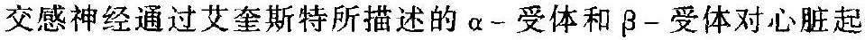作用，所以布拉克想到了要封锁这些受体。被交感神经派出的儿茶酚胺如去甲肾上腺素和肾上腺素将找不到可以使其激活心脏的锚地。
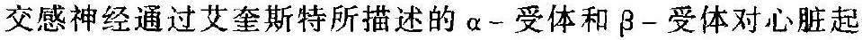作用，所以布拉克想到了要封锁这些受体。被交感神经派出的儿茶酚胺如去甲肾上腺素和肾上腺素将找不到可以使其激活心脏的锚地。
布拉克不久就有机会和新来的同事们讨论并深化这样的想法。1955 年他从格拉斯哥迁至柴郡的奥尔德利研究院，那里有英国最大的化学公司帝国化学工业公司（简称 ICI）的新实验室。这家公司是1926年在这个岛上作为对德国大公司们合并为＂化学股份有限公司＂的＂英国回答＂而建立的。
不过在制药领域，ICI 长期无法与德国竞争者拉平，然而这种
情况在第二次世界大战之后发生了变化。ICI 通过新的纤维和塑料方面科学和工艺上的突然发展壮大了起来，它能够将许多资金投人扩展制药实验室。
当布拉克建议寻找可以封锁心肌上
当布拉克在奥尔德利研究院着手进行他的工作时，来自美国的报告不久便向他显示，并非只有他有这样的想法。印第安纳波利斯的艾利•礼来制药公司——最大的胰岛素生产厂家——同样在研究旨在减低儿茶酚胺去甲肾上腺素和肾上腺素对心脏的推动作用的化合物。艾利•礼来公司甚至已经在检测一种相应的化合物了：肾上腺素，简称 DCI。
拮抗肌及其对手
布拉克试图找到这种 DCI 的变体，它们将能够封锁心肌上的
这些拮抗肌的对手就是对抗肌，它们和拮抗肌竞争受体上的一个地点。如果对抗肌在这场竞赛中进攻卓有成效，那么受体就被它们占领。拮抗肌，在这种情况下就是去甲肾上腺素和肾上腺素，在某种程度上就吃亏：由于它们不再能够固着在受体上，所以它们达不到效果。
为了使这个抽象的过程变得清晰一些，人们不妨用足球作一个比喻。拮抗肌就是一个前锋，它已经瞄准了大门，在我们看来就
是瞄准了受体，但是却受到对方的一名球员——对抗肌—的阻挡。这个对手可以说是站在大门前并阻止拮抗肌射中。
对抗肌占领受体上的地点，但不继续对细胞的内部产生影响。它跟拮抗肌相反，不拥有——用生理学的语言来说——＂固有的活度＂。这就好比一把钢匙虽然插在锁眼里并塞住了锁不让别人开，却不能转动。
布拉克的初次物质——被礼来公司承接过去的 DCI，只封锁受体，自己却不展开固有的活度，即自己不影晌细胞内部的作用。 DCI 的情况并不符合人们的愿望。布拉克不得不强调，这些化合物在某些情况下不是减少而是增加每分钟心跳的次数。所以他和他的合作者们着手寻找仅限于封锁受体的新的化合物。
化学家约翰•史蒂芬森合成了新的化合物。1960年1月，他突然想起要改变 DCI。新的化合物被命名为＂普奈洛尔＂。
第一批试验就表明：普奈洛尔大大减少＂催促者＂去甲肾上腺素和肾上腺素对心肌细胞的作用。可惜不久便显示出最初的副作用。事实表明这些副作用达到令人无法容忍的强烈程度：与益处相比，风险太高了。此外，长期的老鼠试验表明，高剂量可能在这些动物身上导致胸腺癌。
布拉克和他的合作者们并没因这样的挫折而动摇自己的决心。克服障碍是一个必须不断生活在希望，失望和新的希望之间的药物研究人员的家常便饭。
普奈洛尔初次上市
新的试验最终导致化合物普奈洛尔的诞生。它如此持久地封锁心肌细胞上的
1964年 ICI 把代表了整个新药物的
快便占领了欧洲的医院和诊所。不过美国是一大例外，＂Inderol＂，被冠以这一名称的这种制剂，不得不在那里长期等候被批准。
点鼻药水成为降压药
回过来讲受体阻滞剂：在美国研究人员艾奎斯特于
施特勒专心致志于所谓的咪唑类中众所周知的感冒药研究并试图改善它们。他使用一系列化学手段果然找到了一种咪唑衍生物，它有希望经受住治疗上的考验。但是可惜像头皮发痒或皮肤发痒这样的副作用太大，所以停止了＂ST 91＂的继续研制。
于是施特勒受伯林格•英格尔海姆公司委托，从事于合成新安眠药的工作。不过他在业余时间里继续致力于点鼻药水的研制，当时他已经搞成了试验制剂＂ST 155＂。这种化合物在药理学测试中果然显示出一种有力的黏膜消肿的作用，对狗的试验无可争辩地证实了这一点。
做自身试验的研究人员
不久便有了做第一次人体试验的机会。一位女秘书尼克尔小姐，患严重感冒，她愿意服用
大约 10 至 15 分钟后尼克尔小姐就困倦了，她令同事们惊诧不
已地在两把排在一起的软垫椅子上酣然入睡。这时引人注目的是她的小瞳孔和 1 分钟 48 次的跳得缓慢的脉搏。 3 个小时后，该下班了，她才被人叫醒。尼克尔小姐在家里睡了整整一夜，直到第二天中午 12 点才醒。
这些效果让尼克尔小姐的主任马丁•沃尔夫吃惊地决定在 1962年11月1日做一次自身试验。在研制一种新的制剂时做这样的自身试验，这在药物研究人员中是司空见惯的事。沃尔夫在 24点 15 分上床睡觉前滴了大约 10 滴 ST 155 。
他也马上被＂嗜眠症＂㩝住。这种症状延续了大约 20 个小时，但是在这之后沃尔夫还显现了一种每分钟 40 至 48 次的低脉搏，血压 90 至 60 ，脸色苍白，困倦。有了这些经历之后结论就是明摆着的事了：ST 155 的作用首先就在于极其强烈地降低血压。进一步的研究表明，血压降低直接由脑干中
在 ST 155 ——如今被称作可乐定（商品名＂可乐宁＂）——投放市场之前，自然还有许多工作要做。今天人们知道，可乐定主要在下丘脑中作为
在
显然应该在
人们最终找到了这样的物质，
如果说在研制
赫希斯特当时在化学治疗方面拥有一种强势地位，然而在一向比较齐全的品种中却缺了一种治心脏病的药。所以在＂ 512 ＂上花费了公司许多研发资金。两年后终于有了结果。普尼拉明——这种高效物质现在就叫这个名字——的大规模临床试验开始了。赫希斯特不仅在德国，而且在欧洲许多国家对这种制剂进行临床试验。
来自医院里的对 1000 名病人测试后的报告表明：普尼拉明确实是一种有效的增强心脏血液循环药物。它扩张心脏冠状血管，扩张那些供应心脏血液的血管，提高氧气储备。
与一座金矿脉失之交臂
伯林格•英格尔海姆的
锁去甲肾上腺素和肾上腺素。他们发现另一种试验名称为＂KÖ
然而在伯林格，人们当时却没认出克佩和恩格尔哈特碰上的这座金矿。过了许多时光，英格尔海姆的人才开始申请相应的专利。然而这时的情况表明，ICI 已经对这个领域采取了全面的安全措施。虽然伯林格•英格尔海姆也有一种有效的
另外两家公司——黑斯勒，瑞典的阿斯特拉的一家女儿公司，和美国的印第安纳州埃文斯维尔美赞成药业公司——也偶然发现了类似的化合物。然而它们却在研发第一批制剂的赛跑中毫无悬念地败给了 ICI 。它们的某些研究人员和管理人员今天也许会发出忧伤的感慨，如果他们看到
钙对抗肌的诞生
心可定怎样发挥对心脏的作用？赫希斯特的药物学家和临床医生起先对这个问题未能作出令人信服的解释。另外，他们的路德维希港克诺尔公司同行们的情况完全相似。化学家费迪南德•登格尔 1959 年就已经在克诺尔的实验室里合成了＂D 365 ＂这种物质，并将它交给了制药科的同事。登格尔估计，这种物质有镇痛和局部麻醉的特性，但是也影响血压和血管。
＂心可定＂和＂异搏定＂如何起作用
动物心脏标准试验就已经显示，D 365 对心脏冠状血管有作用。1961 年夏对人的心脏的进一步试验证实了这一猜测。
接着进行了两年紧张的临床检验。1963年9月1日，克诺尔推出这种制剂。它被叫作＂维拉帕米＂，商品名＂异搏定＂。但是——
就像对赫希斯特的＂心可定＂那样——谁也不清楚，这物质具体如何发挥其无可争辩的作用。克诺尔研究人员起先只能查明：异搏定抑制载体物质肾上腺素和去甲肾上腺素对交感神经的作用。
作用机制具体如何进行，当时还无法解释清楚。克诺尔公司中没有人对此感到满意。尽管如此，异搏定还是得到医生和病人的交口称赞，这当然不是一朝一夕的事。最初从事外勤工作的同事们对他们开始时的艰难处境记忆犹新。
若静脉注射，维拉帕米就显示出对属于最危险的心脏疾病之一的心律紊乱有很好的疗效。药片是否有相似的效果，这一点心脏病科医师们并不清楚。后来情况表明，起先使用的剂量——通常在 40 至 80 毫克之间（每日三次）——太低。
当日剂量提高到 320 至 720 毫克时，明显的功效显示出来。注射和药片的疗效有很大区别，这与以下情况有关联：维拉帕米在口服后第一次＂通过＂时就被肝脏严重分解了，药物学家们称其为＂首次通过效应＂。跟在药物研制方面常有的情况一样，药物学家和临床医生必须先摸索出尽可能合适的剂量。尽管如此，病人对一种药物的反应却总是因人而异，各不相同的。
阿尔布雷希特•弗莱肯施泰因
德国生理学家阿尔布雷希特•弗莱肯施泰因成为＂助产士＂，甚至可以称为＂真正的钙对抗肌之父＂。弗莱肯施泰因，先任海德堡编外讲师，后任弗赖堡大学生理学院院长，他成功地查明了维拉帕米和类似制剂的作用机制。很久以来他的专门研究领域就一直是离子研究和心肌能量供应。离子（Ionen）——这个名字是个意为 ＂漫游者＂的希腊词——是带正电或负电的原子或分子群。属于它们的是在细胞及其周围环境之间的能量交换时起重要作用的物质，如钠，钾或钙。
细胞内部并不像人们从前认为的那样是密封的，细胞膜有可以让养料或药物渗透的小细孔。另外还有一系列渠道，它们导人细胞内部，但是跟日常生活中的情况一样，它们并非总是开放的。
弗莱肯施泰因发现，维拉帕米通过导人心肌细胞的慢渠道封锁钙离子的流人。他当时的试验动物——在它们的离析出来的孤立肌肉上检验维拉帕米和普尼拉明的效果——是猫，豚鼠，家兔和老鼠。在1963年11月到1964年初夏这段较短的时间内，弗莱肯施泰因成功获得了他的第一批检验结果。在维斯巴登内科医学大会上他发表了他的第一个报告。弗莱肯施泰因最密切的合作者是他的妻子吉萨•弗莱肯施泰因－格林。
弗莱肯施泰因就这样发现了一种崭新的分子层面上的作用机制。钙对抗肌如何降低氧气需求，其心脏收缩性能如何减低，这些问题现在弄清楚了。
回顾过去
不过弗莱肯施泰因的认识太新颖，无法立刻获得承认。一位最初时期的合作者，路德维希港的格哈德•普费尼希斯多夫博士回忆说：＂心脏科医师们1967年前后还在全力以赴地致力于理解
然而在弗莱肯施泰因的理论渐渐得到认可后，钙对抗肌在心脏病治疗领域获得了一个越来越值得注意的席位。在克诺尔的维拉帕米之后，莱沃库森的拜耳公司推出了一种名叫硝苯地平的新钙对抗肌走了大运。在十种最常开药物的畅销药目录上，硝苯地
平1990年位居第四。
用二氢吡啶簇合成这种制剂的，是化学家弗里德里希•博塞特。博塞特自1948年以来就加盟拜耳公司，他受当时的研究部主任弗里茨•米奇的委托，制造扩大心脏冠状血管的化合物，所谓的冠状血管扩展剂。在和专攻循环制剂的药物学家武尔夫•法特尔的合作下，1964年他制造成了二氢吡啶。
用二氢吡啶簇合成这种制剂的，是化学家弗里德里希•博塞特。博塞特自1948年以来就加盟拜耳公司，他受当时的研究部主任弗里茨•米奇的委托，制造扩大心脏冠状血管的化合物，所谓的冠状血管扩展剂。在和专攻循环制剂的药物学家武尔夫•法特尔的合作下，1964年他制造成了二氢吡啶。
改善流动
研究人员合成了 2000 种这样的化合物，大约 350 种受到进一步检查。其中有一种特别引人注目：它最明显地改善了心脏冠状血管中的血液流动。它的作用出现得快，持续得久。每逢人们在做动物试验时，总是将一毫克制剂送到一条狗的舌黏膜上，两三分钟后其心脏冠状血管里的血流量就会提高， 10 至 25 分钟后血流量便是开始时的两倍，这种作用随后会延续数小时之久。
所有这些特性给拜耳研究人员留下了深刻的印象，他们用越来越精细的方法检查这种1964年发现的化合物。检查在乌珀塔尔的市行政区埃尔伯费尔特新建的大研究中心进行，这个中心的第一批科学部门此时恰好投人运行。1972年关于硝苯地平存在着非常多的认识，以至于药物学家武尔夫•法特尔能够在《自然科学》杂志上发表一篇全面介绍药理学的文章。法特尔在此文中证明硝苯地平在心肌供血太少时有一系列的有效原则。这种化合物增加通过心脏冠状血管的血流量，减少这些血管的阻力，从而提高对心肌的氧气供应。
硝苯地平的三张王牌
硝苯地平不仅扩大心脏冠状血管，而且也扩大肌体较远部分
的血管。这样一种外围整体阻力的降低减轻了心脏的负担。拜耳研究人员的结论：＂硝苯地平这些药理学方面的特性，满足了一种冠状血管治疗剂新颖的，有趣的先决条件，这些特性迄今只是分开存在于冠状血管扩张剂，硝酸盐中，以及以某种方式存在于
弗赖堡生理学家阿尔布雷希特•弗莱肯施泰因在这种情况下，也能将拜耳的这种新制剂归入被他称作钙对抗肌一类中，因为这种钙对抗肌通过拦住钙流人心肌运河而起作用。
在拜耳公司人们认识到，一种世界驰名制剂再次在这里形成。可惜这种影响在欧洲和美国都相当罕见，所以拜耳董事会并不吝惜有很大国际效果的宣传投人。1973 年秋，在东京举行了第一届国际硝苯地平学术讨论会。弗莱肯施泰因展示了这种新物质。不久在阿姆斯特丹举行了第二届这样的会议，1975 年秋在里约热内卢举行了第三届会议。
1979 年全世界的科学家聚集在巴黎，然后在罗马，最后再次在东京交流经验。这种大规模活动的成果，以及该药治疗冠状血管心脏病，尤其也包括一向难以诊治的心绞痛症状的科学上令人信服的特性，不久便显现出来。1980年，＂心痛定＂在50个国家成为一种得到承认的药物。1982 年它在美国获得批准，美国的批准一直被认为是药物中最有权威的合格证书。
＂地尔硫卓＂作为钙对抗肌中的第三种重要物质获得成功。这一制剂在日本制药公司 Tanabe Seiyaku 的实验室中产生。日本研究人员原本想用苯并噻唑类的化学物制造一种抗抑郁症药。然而在第一次检测时却发现，这些有机合成化合物能够扩大血管。
＂地尔硫卓＂作为钙对抗肌中的第三种重要物质获得成功。这一制剂在日本制药公司 Tanabe Seiyaku 的实验室中产生。日本研究人员原本想用苯并噻唑类的化学物制造一种抗抑郁症药。然而在第一次检测时却发现，这些有机合成化合物能够扩大血管。
经过此后的多次检査，Tanabe Seiyaku 公司的科学家们确信，原有的苯并噻唑品的各种衍生物属于弗莱肯施泰因采用的钙对抗肌之列。
日本制药公司在 70 年代初期几乎没有什么国外机构，所以这
种如今被叫作＂地尔硫卓＂药剂的许可证被签发给美国杨森制药公司。1981 年，地尔硫卓以商品名＂地尔卓＂在德国获得批准。但它受到了 Gödicke（奥唑林酮）的排挤。地尔硫卓在美国若干年以来一直是三种销售量最大的药物之一。
地尔硫卓的疗效跟硝苯地平相似，然而在治疗心脏收缩节律障碍方面却不如维拉帕米好。地尔硫卓降低所谓的继发性负荷，即离心脏较远的血管的阻力。结果就是心脏每分钟容量，即心脏一分钟内吐出的血液量提高了，这对心脏病专家来说具有无比重要的意义。一般来说，每分钟容量大约是 5 升，也就是说，每天心脏输送大约 7000 升血。
跟拜耳的钙对抗肌＂尼莫地平＂相似，地尔硫卓似乎对动脉硬化症也有一种预防作用。不管怎样，Tanabe Seiyaku 公司正全力以赴继续从事这方面的工作。
ACE 抑制剂的故事
这项研制工作的最初几项重大进步在美国施贵宝制药公司的实验室里取得。开始时人们观察到，生长在南美洲的 Bothrops jara－ ca 蛇的蛇毒中各种不同的蛋白质对血液循环有很强的作用。它们放慢心脏的收缩速度，降低血压并使最小的毛细血管更有渗透性。
美国研究人员 N．A．翁代蒂 1977 年获得一大成功。他拦住将血管紧张素 I———种生物学上不活跃的蛋白质——转变为血管紧张素 II 的酶。这种血管紧张素II是一种升血压的化合物。如果血管紧张素II被拦住，大约
＂无声的杀手＂
尽管坚持不獬地做了大量宣传教育工作，及时治疗高血压十分必要，这个道理似乎还有许多人并不知晓。两亿多美国人口中 3500 万人患有高血压症，在德国大约有六七百万高血压患者。其中
＂可惜＂高血压几乎不会引起什么病痛，轻度高血压尤其不会。许多患高血压的人对这种危险的疾病一无所知。其症状往往是如此不引人注意，以至于它们根本不会被察觉。只有在联系到别的检查时高血压才会被发现。
＂可惜＂高血压几乎不会引起什么病痛，轻度高血压尤其不会。许多患高血压的人对这种危险的疾病一无所知。其症状往往是如此不引人注意，以至于它们根本不会被察觉。只有在联系到别的检查时高血压才会被发现。
谁对自己的高血压一无所知，谁自然就不会得到治疗，在这种情况下更不可能进行有效的预防。但是太高的血压往往导致心脏和血管的严重损伤。
按海德堡德国高血压协会的划分，高血压分三个级别：
1．轻度高血压。舒张压不超过 95 毫米汞柱，收缩压不超过 150 毫米永柱。在心脏收缩期心肌收缩，犹如手摽成拳头。这时血液从心房，说得确切一些，从心室被输送进入循环。在舒张时心室和心房充满血液，心肌伸张。
1．轻度高血压。舒张压不超过 95 毫米汞柱，收缩压不超过 150 毫米永柱。在心脏收缩期心肌收缩，犹如手摽成拳头。这时血液从心房，说得确切一些，从心室被输送进入循环。在舒张时心室和心房充满血液，心肌伸张。
2．中度高血压。协会认为中度高血压的舒张压为 105 至 114毫米汞柱。
3．重度高血压。舒张压 115 毫米永柱以上为重度高血压。按照德国高血压协会的看法，影响血压的因素有：
激动
疼痛
噪音
谈话
身体运动
勝胱注满
抽烟
酒精
咖啡
疼痛
噪音
谈话
身体运动
勝胱注满
抽烟
酒精
咖啡
判断血压是正常还是高，协会这样认为，这必须依据在两个不同的日子所做的至少三次测量的平均值。
若是处于两可之间的难以确定的情况，以及若是轻度高血压，那么就得做更频繁的六个月以上的测量。只有这样才能定级为轻度高血压。高血压甚至是引发中风的位居首位的风险因素。儿童的血压值以年龄和体重为转移。
然而甚至对于及时发现的高血压而言，直至 60 年代末也只有有限的治疗机会。如果特种饮食和无盐饮食降压不能奏效，那么就只有少数药剂可供使用，主要是利尿剂。正如名字已经说明的那样，这是排尿药。
长时期内只有药用植物充当排尿物质。今天仍通用的植物制剂成分因其含有香精油刺激肾脏而加大液体的排出。找到这些草药制剂的精确剂量，当然是一件困难的事，与此相关联的疗效往往也就难以估计。后来天然产物可可碱——除了咖啡因，可可豆也含有它——平步青云，因为它比从前的植物性利尿剂的利尿作用更强烈，更可靠。
一位全神贯注的医科大学生
一个发现新利尿剂的伟大时刻1919年在维也纳心脏病专家卡尔•弗里德里希•温克巴赫的诊疗所降临了。医科大学生阿尔费雷德•福格尔获得了一个奇怪的发现。他收治了一个患梅毒的女病人。在那个时候胂凡纳明主宰这种＂维纳斯病＂的治疗已有一些年头，然而也常常使用从前帕拉塞尔苏斯从阿拉伯医学中吸取过来的水银。
女病人以一种极其强烈的排尿对这一水银制剂作出反应。福格尔将这一情况告知他的上司，此人又与赫希斯特化学公司取得了联系。结果就是产生了 1924 年的药剂＂贡撒利＂，它在若干年内一直被看作利尿剂的替代药品，直至最终磺胺利尿剂和噻嗪化物在治疗方面受到重视。
但是在赫希斯特公司，人们在获得第一个重大成果后一直对利尿剂研究保持热情。第二次世界大战后研发了一种新的利尿剂呋塞米，被叫作＂速尿剂＂（Lasix）。它在强利尿剂类别中获得巨大成功。速尿剂不仅有利于排泄钠和黏合在钠上的水分，而且它同时保护钙储备。身体迫切需要钙，如果想要身体的能量代谢状况不陷于混乱的话。自速尿剂专利权到期以来，市场上已有十几种仿造药剂，但这一初始制剂还是能够长久得惊人地保持其地位。在速尿剂的研发上起重大作用的，是赫希斯特的药物学家穆沙韦克。
ACE 抑制剂启动不成功
ACE 抑制剂的第一个＂代表＂是70年代末施贵宝的＂卡托普利＂。这种制剂起先启动没成功。它的剂量太高，一般是 350 毫克。
今天它是世界上十大畅销药物之一。
施贵宝的这一成果大大鼓舞了别的公司。数量众多的类似药剂——制药业内部称作＂me too＂（我也）——出现在市场上。鉴于高血压这个世界性难题的存在，这里有一个约 200 亿美元的销售额在吸引着人们。但这时也在研发新的，效果更长久的 ACE 抑制剂。美国制药公司拉维市的梅尔克股份有限公司的依那普利便属于此类制剂，它在德国以商品名＂Xanef＂出现在市场上。初始药剂卡托普利只有 4 至 5 小时的半衰期。此后这药物在体内一半被分解，作用就大大减小，血压就又升高了。而后来研制出来的依那普利则有整整 24 小时的作用。这是一大优点。有好几种疾患，每天必须服用各种不同药物的上了年纪的人更是懂得＂一日只服用一次＂的好处。
施贵宝的这一成果大大鼓舞了别的公司。数量众多的类似药剂——制药业内部称作＂me too＂（我也）——出现在市场上。鉴于高血压这个世界性难题的存在，这里有一个约 200 亿美元的销售额在吸引着人们。但这时也在研发新的，效果更长久的 ACE 抑制剂。美国制药公司拉维市的梅尔克股份有限公司的依那普利便属于此类制剂，它在德国以商品名＂Xanef＂出现在市场上。初始药剂卡托普利只有 4 至 5 小时的半衰期。此后这药物在体内一半被分解，作用就大大减小，血压就又升高了。而后来研制出来的依那普利则有整整 24 小时的作用。这是一大优点。有好几种疾患，每天必须服用各种不同药物的上了年纪的人更是懂得＂一日只服用一次＂的好处。
今天治高血压药剂的数量相当多，它们当然只有在别的措施如减轻体重和运动治疗不够用时才被服用。
如果必须用药，明斯特大学的卡尔－海因茨•拉恩教授建议先开唯一的一种药剂，即进行单相治疗，他认为这样药物效果就要好监控得多。如果需用好几种药物治疗高血压，那么就可以挑选其
几乎所有这些药剂也被用来治疗心绞痛。
所以人们必须研发只对
诺敏＂。这种药剂属于有选择性的
有选择性的
如同法兰克福药物学家汉斯－迪特尔•帕尔姆强调指出的那样，＂有选择性＂这个概念只是相对的。譬如心肌细胞有大约
30 多种不同的药剂
今天总共有 30 多种乙型阻滞剂可供医生选择使用，这样大的数量常常受到批评。不过研究人员必须强调指出，这些药剂完全不一样，其中许多有不同的特性，譬如在它们如何被机体吸收，半衰期长短和生物可支配性，体内产生作用的物质的比重方面就有差别。有效物质是否经由肝脏被分解或经由肾脏被排出，这当然也很重要，而这又取决于它们是 lipophil（脂溶性）还是 hydrophil（水溶性）。肝脏必须先将脂溶性物质变为水溶性物质。
组合——越来越受欢迎
在治疗心绞痛方面，
在治疗冠心病药物当中，这种硝酸盐是最常开的药。按 1991年开方汇报上所载，1990年开出905．3百万日剂量。占第二位的是 692 百万日剂量的钙对抗肌，占第三位的是 629 百万日剂量的
防治急性的，突如其来的，必须尽快应对的心绞痛发作，心脏病科医师推荐硝酸甘油作为可供选择的药物。它能作为喷酒液或胶囊使用。药物以这样的方式很快就被吸收，常常伴随着疾病发作而出现的令人难熬的疼痛被缩短。它往往只延续一两分钟，药物疗效就会出现，病人就会感到意想不到的松快。
硝酸甘油也可以预防性服用，以防止在有特殊的负担时发作心绞痛。戈特哈德•舍特勒和海因茨•格雷滕在他们最新版教科书《内科医学》中举出上楼，登山和性交作为这种情况的例子。
硝酸盐对心绞痛发作有很可靠的疗效。如果服了此药疼痛没有减缓，甚至还加剧，那么这很可能就是心肌梗塞了。
多种形态的心肌梗塞
在德国，每年约有 20 万人患心肌梗塞，其中的 8 万人太晚得到任何形式的医治。然而同样是梗塞它们却并非就一定是一样的。从一种＂默默的＂，起先悄悄行进的梗塞直至最严重的，在数分钟内致死的病例均有。
正如专业医学刊物上许多报告所显示的，不少病人在感觉到
最初的疼痛时犹豫太久，这样就丧失了宝贵的时间。＂几乎无法让人想像，过了多长时间病人才来找我们。＂霍斯特•库尔曼，慕尼黑施瓦宾医院的一位内科主任说，＂我们往往在其心肌梗塞发生 10 至 12 小时后才见到病人。＂
但是没有受过医学基本教育的公民如何能够认出这样一种梗塞来呢？德国心脏基金会一再要求公众记住，哪些症状表示一种心肌梗塞：
胸部严重的，持续长久的疼痛。疼痛能扩散至两臂，也能扩散至腹部和下额并导致胸部火辣辣地作痛以及颈部和上腹部疼痛。
面色苍白，无血色，额头，上唇或整张脸出冷汗。
强烈的憋闪感或胸部严重压迫感。
呼吸困难。
突然的血液循环衰竭，这样的心力衰竭能使病人失去知觉。
强烈的憋闪感或胸部严重压迫感。
呼吸困难。
突然的血液循环衰竭，这样的心力衰竭能使病人失去知觉。
受到危害的病人手头应该经常备有急救医师电话号码，这一点尤其适用于患不稳定心绞痛的人。令人惊讶的是，自由企业家和医生自己在通知急救医生上延宕得最长久。
在急救医生到达之前，病人最好上身抬高安卧在一张长沙发上；要将夹紧的衣服解开，人们绝不可以让病人一个人待着，因为这可能导致危险的心理上的反应。如同许多报告所显示的，急救医生常常难以迅速到达，因为病人家属——他们往往感到惊慌——没有足够清楚地给急救中心或消防队描述房屋或住宅的具体位置，或者因为停放着的车辆堵塞了道路。
是心肌＂——不久前一位心脏病科医师用这句简单明了的话作了表述。
最近几年医药学研究出现了许多进步，现在有四组不同的溶解凶恶血栓的药物可供使用：
链激酶
尿酶
组织—纤溶酶原—因子(TPA)
纤溶酶原—链激酶—活化素—组合
链激酶被发现
链激酶最初由于纽约贝尔维龙医院两位医生的细心被发现。这家著名医院收治了一位患重病的妇女，诊断结果是肺炎。实验室测验明显地显示：病人的肺充满了链球菌。这是有溶血作用的攻击和溶解血细胞的链球菌，这种感染人们在医院里经常见到。但奇怪的是，病人的血液不再凝结成块。这凝血障碍是如何产生的？
W．W．蒂耶和 R．L．加纳这两位医生估计，血液没凝结成块可能是链球菌的缘故。这些极具攻击性的病原菌大概已经冲破了由凝固蛋白纤维素组成的保护墙，这是机体正常情况下在侵入的细菌四周筑起的保护墙。
终于找到了谜语的答案：链球菌菌种果真生产一种溶解纤维素的物质。这种溶解纤维素的化合物由什么组成，起先没法查明。 8 年后丹麦蛋白质专家塔格•阿斯楚普验明了这种蛋白质的成分。由于它由链球菌构成，阿斯楚普就称它为＂溶解性纤维素酶＂，后来叫＂链激酶＂。
不过验明链激酶的成分并不意味着它已经同时被离析出来了。可是只能用离析出来的纯粹的链激酶才能查明，是否有可能使其为治疗服务，以便溶解带来生命危险的血块。
这样的血栓不仅在心血管中形成，它们能够弄窄或堵塞肺部血管，也能在静脉或动脉中，在骨盆中或在腿上形成。细小的血栓也可能在照管眼睛视网膜的细巧血管中形成。
由于链球菌不仅排出链激酶，而且还排出许多别的代谢产品，所以离析出这种物质不是一件简单的事。在马尔堡的贝林工厂里，同时在其他实验室里，这方面的努力在 40 年代末就已开始。贝林工厂，第二次世界大战后又返回赫希斯特化学公司集团，绝对是研究蛋白质方面的行家里手。除了多种血清和疫苗，人们在马尔堡还卓有成效地研究了好几种蛋白质。另外，人们还从事于从人的血液中萃取遗传因子 VIII——这种遗传因子的短缺会导致 Hämophilie（血友病）——的工作。
经过长期的研制工作，贝林工厂推出了它们的抗凝结药链激酶，商品名＂溶栓酶＂。两项重大研究———项对 588 个病人，另一项对 268 个病人临床检测——全都证明：链激酶，直接注入冠状动脉，溶解血栓。尤其是在血管栓塞的最初几个小时内，在受到死亡威胁的时候，链激酶提高生还的可能性。大约
若干年以来，链激酶也能——这是一大进步——被注射进静脉。如果链激酶以这样的方式被送进血液，那么血栓溶解的比率虽然比动脉注射低一些（约
尿酶的优点
蛋白质链激酶在萃取后当然要彻底净化，但是这种药剂有时还可能会引起违人心愿的反应。许多人一生中的某个时候接触了链激酶，从此他们就有了抵御这些病原体的抗体。如果没出现发高烧感染，那么这场与微生物的小冲突很快就会被忘却。但是有时血清中还是会留下抗链球菌的抗体，在罕见的情况下这些抗体在病人服用链激酶时会导致过敏反应。
服用尿酶——在它的帮助下血块同样可以被溶解——就没有这种危险。这种物质在肾脏中产生并出现在人的尿液中。由于需用大约 900 升尿才能获得一个平均治疗剂量，所以制造尿酶是很昂贵的。
贝林工厂制造商品名为＂尿激酶＂的尿酶，这种药剂能长期服用，因为即便一再使用也不会形成抗体。广泛使用的一大障碍是尿酶的高昂价格。
组织活化剂——从遗传工程角度来看
除了链激酶和尿酶以外，一种新的药剂曾引起轰动，旧金山的美国基因技术公司首先制造出了这种药剂。它叫＂TPA＂，英文名 ＂Tissue Plasminogen Activator＂，德文名 Gewebe－Aktivierungs－Faktor（组织一活化一遗传因子）。这种物质也存在于人体组织中，不过量很少，不足以溶化较大的血块。但是人工制造的 TPA 做到了这一点。 TPA 胜过链激酶和尿酶吗？像起先猜想的那样。人们还无法对这个问题作出回答。许多研究没有得出完全清晰的结论。
这些研究中的最重要者之一，意大利的 Gissi－II研究，在 1990年春甚至提出了有些令人失望的 TPA 检查结果。Gissi－II 提供的
检查结果表明，TPA 和链激酶显然具有大致同等价值的效果。但是 TPA 治疗花费约 2 万美元，比用链激酶进行治疗贵 10 倍。Gissi－ II 研究结果一公布，便引发了基因技术公司股票暴跌。这期间，第三个 Gissi 研究也已经证实 TPA 和链激酶具有同等价值。
在联邦德国，比伯拉赫的卡尔•托梅股份有限公司 1987 年就已经创建了一个用遗传工程生产 TPA 的良好开端——起先怀着施瓦本地区人的谨慎并且几乎没让公民自发组织和环保组织觉察到，这些组织在联邦德国的许多地方通过责难和反抗几乎破坏或至少推迟数年遗传工程生产基地的建立。
1986年，在比伯拉赫的里斯河畔，一个价值约 1.55 亿马克的现代应用生物学生产基地成立了。自1987年起那里就生产 TPA。由于这是一种只需少量使用的高效物质，所以全部日产量完全可以绰绰有余地装在一尺见方的公文包里。
危险的心律絮乱
除了用在心肌梗塞治疗方面，链激酶，尿酶和 TPA 也越来越多地用在动脉梗阻和肺梗塞上。
医生必须在一次梗塞后的最初几个小时内不仅打开梗阻的心脏血管，而且往往也得防治心律紊乱。它们可能在心房，也可能在心室或者既在心房也在心室出现。结果便是一种杂乱心跳次序。
一种今天还常使用的，防治这样的心律紊乱的药物是奎尼丁。它的疗效 1914 年就已经被发现，而且，一如重要药物常有的情况那样，纯粹是被偶然发现的。人们在用奎宁（这是用一种南美树的树皮制成的旧药剂）治疗疟疾病人时，病人不仅退了烧，而且心律紊乱——此病例是在心房——也消失了。不久人们就开始采用奎尼丁治疗心律紊乱。
今天有大量治疗心律紊乱的药剂，它们包括四组药物。使用
哪种药物，这要看是哪种心律紊乱：是在心房呢，还是（在严重得多的情况下）在心室；是脉搏 120 次以上的心搏过速呢，还是心跳低于 60 次的心搏徐缓。心律絮乱起因于哪里，这也很重要：是起因于窦房结，右心房里心脏起搏器呢，还是起因于 AV 结，心房和心室之间的相交处。
除了经典的奎尼丁或常用的普罗帕酮以外，治某些心律紊乱也用
一种旧药物的复兴
1987年从美国传来一个激动人心的消息，研究人员在研究血液凝固的过程中发现了乙酰水杨基酸（ASS）的一种新的功能。ASS的发生史将在第 13 章中叙述。这种化合物从前曾由埃尔伯费尔特的拜耳公司的年轻化学家费利克斯•霍夫曼作为止痛药合成过。
ASS 的止痛，退烧和消炎特性早就为人所知并很受重视。ASS除此之外也阻止血小板结块，这一点美国血液凝固性研究人员A． J．奎克在 40 年代就已经观察到。然而他的检查结果起先几乎没有引起任何反响。
80 年代，在美国的哈佛大学和耶鲁大学，人们想进一步了解 ASS 的溶化凝血功能。能有一种通过定期服用 ASS 防止心肌梗塞或梗塞复发的可能性吗？试验者给两万多名美国医生写了信，并且在满足他们一定先决条件的情况下，邀请他们参加这一＂physi－ cians Health Study＂（医师健康研究）。其中的一部分人每两天服用 325 毫克 ASS，另一部分人服用一种安慰剂，一种没有任何疗效的药剂。
最初评定后的结果就已经令人惊讶：在得到 ASS 的那些医生中，得心肌梗塞的人只有服安慰剂人群中的一半。
这是富有戏剧性的数字。看来没有必要再进行这种研究了。 1987年研究中断。
虽然起先只在《新英国医学报》（New England Journal of Medicine）这家当时在医学世界占领导地位的专业杂志上对此作了报道，这些结果不久还是为公众所知晓。一夜之间，＂阿司匹林＂这一本来就是最知名的药物，成为名家报纸的头条新闻。一股新的 ＂阿司匹林＂热即将来临。
德国反应谨慎
许多德国医生起先对这些引起轰动的美国检查结果反应冷淡，其中不乏警告的声音，说人们不应该过高评价美国发表的这些检査结果，尤其是因为一份英国的研究报告并没有完全取得十分明确的结果，虽然一部分医生甚至自若干年以来就已逐斩转向给有第二次发作心肌梗塞的危险或患不稳定心绞痛的病人开 ASS。然而原发性预防起先却遭到一些医生的断然拒绝。
今天许多医生也是作为预防措施给求医者开阿司匹林，尤其是如果存在危险因素，如高血压，高血脂，缺少运动和吸烟的话。
药剂的剂量开始时往往定为每两日 325 毫克，这一剂量依据许多研究的结果还可以大大减少。一些时候曾定为每日 100 毫克，而现在 75 毫克似乎就已经足够了。这样，副作用的危险自然也减少了。查尔斯•亨内肯，美国医师研究会会长，按自己的认识每天服用 75 毫克 ASS。作为体育团体的正式运动员和不吸烟的人，他虽然不具有通常的危险因素，但是他的父亲和祖父均死于心脏病。 ＂所以我不能完全无视一种遗传素质。＂他在一次接受记者采访时透露。
德国每年发生的大约 20 万例心肌梗塞的数字在阿司匹林的帮助下会减少吗？准确无误的数据要在几年后才会显示出来。但希
望是很大的。
不同于
不同于
一种心脏机能不全有多严重，按纽约心脏病研究协会的一种划分法可分为：
一级：体能还没有受到限制的心脏病人。从事普通的体力活动时不发生呼吸困难，心跳或胸痛现象。
二级：体力受到轻微限制。但是病人在静止状态或轻度负重时还觉得舒服。病痛在较强的，不寻常的负重时才出现。
三级：已经存在显著的体力上的局限。在轻度负重时就有病痛。
四级：任何的身体负重都会引起病痛。心脏机能不全在静止状态就会出现，它在负重时会加剧。
＂四个大 D＂
长时期内心脏机能不全的治疗集中在＂四个大 D＂上。
1 号 D：Diät（特种饮食）。应该避免食用过多的食盐。食盐中的钠，一如早就为人们所知道的那样，凝结体内的水分并给心脏的工作造成困难。今天医生还在建议一天食用4至5克盐。
1 号 D：Diät（特种饮食）。应该避免食用过多的食盐。食盐中的钠，一如早就为人们所知道的那样，凝结体内的水分并给心脏的工作造成困难。今天医生还在建议一天食用4至5克盐。
2 号 D：Digitalis（毛地黄）。如同已提及的那样，英国医生威廉•维瑟林发现，毛地黄的叶子——学名 Digitalis——对＂水肿＂有疗效。由于没找到使用这种药剂的合适剂量，毛地黄在一段时期内被弄得声名狼藉。但是这种治疗方法随后在全世界获得成功。这种药剂中的所谓心甙提高心脏的收缩力，减缓心率。
3 号 D：Dilatantien（乙氧黄酮）。属于此类扩大血管药物的有卡塞拉－里德尔公司的＂吗多明＂，它具有和硝酸盐相似的疗效。它导致血管平滑肌疲劳，降低心脏超载从而有利于供血。
4 号 D：Diuretika（利尿剂）。这种利尿剂已经提及过。
治心脏机能不全的＂四大 D＂在可以预见的将来会获得进一步发展。首先用来防治高血压的 ACE 抑制剂，按许多报告来看，似乎也在治心脏机能不全方面广泛传播。
治心脏机能不全的＂四大 D＂在可以预见的将来会获得进一步发展。首先用来防治高血压的 ACE 抑制剂，按许多报告来看，似乎也在治心脏机能不全方面广泛传播。
特别是在美国，在一种新的健康意识的气氛中，各种心脏病——全人类患病者的一半死于这些病——的整体病象已从根本上有所改善。按美国的研究，为此作出贡献的是许多病人放弃吸烟，更加重视胆固醇值和新的药物，其中也有外科手术的功劳。在做搭桥手术时，往往用大腿上一根血管的一部分取代一根变窄了的心脏冠状血管。在球形导管的帮助下堵塞的心血管又畅通了。
人们还渴望获得更大的进步，如果能够阻止或至少限制动脉硬化症产生的话。某些希望和拜耳公司的新钙对抗肌＂尼莫地平＂联系在一起。防治动脉硬化症是研制新药方面最重要的任务之一。
同胃溃疡作斗争
詹姆斯•布拉克除了创造
第一个这种性质的受体当时是有名的。它约束组织激素组胺。这样在许多情况下就会出现过敏反应，许多人年复一年地对此均有痛苦的亲身体会。
除了第一个组胺受体，是否还有第二个，这一点那时正在讨论中。然而布拉克相信存在着第二个组胺受体。如果这个受体，简称 H2，约束组胺，就会倒出胃酸。如果产生过多胃酸，就会产生胃炎和胃溃疡。所以如果人们封锁 H 2 受体，胃溃疡的生成就一定会受阻。这就是布拉克的吸引人的假设。
那个将詹姆斯•布拉克从 ICI 挖到史克制药公司（SKF）来的人，是爱德华•佩吉特，从前他同样也在 ICI 效劳。佩吉特想为自己在研究领域尚末具有世界声誉的企业争取到一位其声望可使 SKF 得到好处的科学家。
两位化学家——约翰•埃米特和格拉汉姆•杜兰特兰特，支持布拉克在 SKF 的工作。此外还有药物学家米夏埃尔•帕森斯。布拉克尤其有研究部副主任威廉•邓肯做靠山。邓肯和佩吉特设法使布拉克的小组能够在英国卫尔温花园城安安静静地工作。在费城的总部，人们清楚地意识到佩吉特给 SKF 送来了一位非同寻常的研究人员。但是没有人能够告诉总部的那些工于计算的商人们，布拉克将会在什么时候达到自己的目标。
企业急需一种新的药剂。迄今的尖端产品氯丙嗪，一种精神病药物，虽然还换得到钱，但毫无疑问已过了覲峰期，不久——费城经销部的全部账单表明这一点——营业额就会不断回落。所以人们满怀希望地期待着布拉克和他的小组。
布拉克的任务是和他的化学家们一道变换组胺分子，直至从中产生出一种＂化学酷似者＂，它占领组胺 2 受体并成功地使其不受＂原来的＂组胺影响。
初见成效
直至1968年前，在布拉克领导下 700 多种化合物被合成，其阻酸作用受到药物学家们的检验。邓肯，布拉克的上司，不得不安慰
费城焦躁的业务领导。后来——1970年——人们制成了第一种药剂，它显示了一种值得期待的疗效。它取名＂布立马胺＂并显得大有前途，致使布拉克和他的同事们在有名望的英国学术期刊《自然》上对此作了报道。
研制者也大胆地在人身上做了初步试验。测试此药是否可能有毒的第一批志愿人员中就有邓肯和别的研究人员。布立马胺果然引起胃酸活度的减低。然而不久卫尔温花园城研制出一种显得更有前途的物质：甲硫米特。它似乎是理想的药剂。不管是药片还是滴剂——它都可靠地阻塞胃酸。它的副作用看来好像很小。
在这些充满希望的报告之后，费城为广泛的临床试验开了绿灯。当这些试验卓有成效地进行时，把药剂推向市场的大规模准备工作开始了。胃溃疡在居民中广为流行并且到那时为止通常都不得不进行手术治疗。所以这种新型的药物可望有很大的销量。将来谁还愿意动手术呢，如果病痛可以以方便得多的方式消除的话。许多曾参加过临床试验的医生都确认寄予 SKF 越来越大胆的希望。
哈里•温特，今天这家企业的经理，描述了当时的兴奋情绪： ＂我们开始系统地在外地建设基础结构，因为我们的国际经销结构并不够用。＂
一切全都徒劳？
突然，1974年6月，临床检查委员会主任收到一份告急报告：发现两位病人得了粒性白血球缺乏症，服用止痛药时也有这样的副作用，在短时间内粒性白血球缺失，即白血球缺失，这种白血球在同感染的斗争中起着不可或缺的作用。
一直高度警觉的英国＂药品安全委员会＂当机立断迅速采取行动，全部临床试验不得不停止。即使后来又允许给重病人开甲硫
米特，在 SKF 人们还是十分失望。已经在这种新的药剂中投人了大量资金，所以如果 H2 对抗肌失败，企业的前途就受到了威胁。
幸好药物学家米夏埃尔•帕森斯已经合成了一种药剂，它与甲硫米特相似，却没有后者化学上的硫尿素基。这种新物质，SKF 的救命稻草，获得＂西咪替丁＂这个名称。它立刻接受临床检验，SKF的人忧心忡忡地等待结果，看它是否也会损伤白血球；万一是这样的话，那么人们对一种治胃溃疡的新型药物的全部希望就得付诸东流。
令企业领导层感到莫大欣慰的是，没有出现血液损坏现象。当这方面的安全有了保障时，这种新药剂的生产道路终于畅通了： 1976年西咪替丁进人市场并被称作＂泰胃美＂。不久事实便表明，需求增长得出人意料地迅猛：在英国专门为泰胃美建造的工厂不得不日夜班连轴转，才得以勉强满足供货要求。
泰胃美引起无与伦比的反响，不久就一跃成为销售量最大的药物。布拉克在 1972 年离开了史克制药公司。他显然感到了他在 ICI 曾有过的那种忧虑：他可能会陷于日常事务性工作而不能自拔，并无休无止地忙于制造后续药剂。他接受伦敦国王大学医院一个药物学教授席位，并担任了一个药物研究基金会的领导。在那里他能够和一个小组的同事一起实现他的新设想。
泰胃美起先一直在治胃溃疡和食道炎方面无可争议地独领风骚，它的销量达到创记录的高度，史克制药公司更是晋升医药公司先进之列。可是后来泰胃美有了一个大的竞争对手。英国的格拉克索公司同样推出了一种 H2 对抗肌——雷尼替丁，商标名＂善胃得＂，在德国叫＂善胃克＂。由于雷尼替丁的有效时间较长，所以它在许多年里都能位居所有药物的榜首。泰胃美起先位居第二，随后就下滑了一位。尽管如此，它的年销售额一直仍可达约 10 亿美元。
不过自一些时候以来，不论善胃得还是泰胃美，都不得不应对
一种较新的药剂奥美拉唑的发展势头。该药剂在德国叫＂Antra＂，它阻塞一种酶（
在它的帮助下，
倒流进食道
奥美拉唑对回流性食管炎也有有益的影响。这种疾病由酸性的胃部所含之物倒流进食道而引起，它通常伴有反胃酸。该病广为蔓延。长此下去反胃酸就会损伤食道细胞。胃灼痛和腹部疼痛被公认是这种回流病的主导症状。病情会由于进食，酒精，尼古丁，身心紧张，躺卧，弯腰和举重物而加重。体重过重也有助于形成回流疾病：大约
按照法兰克福内科医生沃尔夫冈•勒施的经验，许多病人在用 ＂家庭常备药品＂对付不了病痛的时候才来看医生。许多人习惯于忍受经常胃灼痛，在有并发病和病情加重时才找医生。但是即使在这种情况下奥美拉唑也证明是有效的。
美国默沙东公司，这家世界上最大的制药集团，放弃了自己的研制并采用了阿斯特拉的畅销药剂奥美拉唑。这个事实最好地说明了奥美拉唑在药物世界能获得什么样的地位。在世界上最大的药品市场上，在美国，默沙东出售这种药剂。
很可能不久会研制出性能也许更好的奥美拉唑变体，因为别
的公司也想从这一尖端药剂上分得一杯美。
毕竟在
毕竟在
第十一章＂大清洗＂——躲避危险的血脂
克里斯特尔
R 夫人每星期三在格罗斯哈德度过的三个小时里，总共清洗了 7 升血，一个人拥有的大约 5 升血被＂转装＂一倍半。这一程序类似透析，类似＂洗肾＂，谁的肾脏不听使唤并不足量地过滤出尿调制时的有害物质，谁就得做这种透析。
一如她的病历上所记载的， R 夫人患有家族史的血胆固醇过多症。简单说，她的血浆含有——由遗传决定的——太多的胆固醇。只要一涉及健康生活的问题，这种固体胆汁——胆固醇原本被认为是这种＂固体胆汁＂——在最近几年简直就令人难以置信地引起纷纷议论。一大批医生，他们在同这种白色的，蜡样的物质作斗争——如果它过量出现的话。不过他们之中也有人反对所谓的系统诋毁，他们警告别犯＂胆固醇歇斯底里＂。
另一方面，德国最知名的胆固醇反对者，明斯特大学的盖尔德•阿斯曼教授就不断表示强烈反对：在 700 万 40 至 65 岁的男人中，光是通过改变饮食习惯，每年就可以防止 7500 例心肌梗塞。附加的治疗措施甚至可以将这个数字提高到 10500 。阿斯曼以许多国内和国际的研究成果为依据，然而这些研究成果的说服力却一再受到学术对手们的质疑。不过有一点大家的看法倒是一致的：胆固醇是生命中必不可少的一种物质，细胞需用它来建造膜。此外，制造激素，其中也包括性激素，也需要它。
身体在生产这种物质时自给自足，这就是说，它不依赖外部输人。几乎所有的细胞都参与生产这种每日约 1.2 克的需求物。主要生产者是肝脏，它制造约
一种例行检查
克里斯特尔
R 夫人的体重确实有问题，而且这问题不是最近才出现的。在少女时代，她的体重就超重几公斤。在分娩了她的三个孩子后，她的体重又增加了几公斤。
几个星期后再次给她验血，可惜显示了同样的结果，胆固醇值依然高出很多。它们高达 500 ——正常值的两倍半。
于是克里斯特尔•R 的医生开始像一个侦探那样侦察她的家史。不久就有了一条重要线索。克里斯特尔的母亲很年轻时就死了，死时刚刚 32 岁，克里斯特尔当时才 4 岁。所以她不太知道母亲患过什么病，家里人只是说母亲心脏有点儿毛病。克里斯特尔的姐姐显然由遗传而得了这种陌生的疾病：她常常遭到严重的心绞痛——Angina－pectoris－Anfällen（心绞痛发作）——的侵袭。
一种怀疑得到证实
医生在初步听取病情描述后就已产生的怀疑最终令人沮丧地得到证实。克里斯特尔•
＂全体同僚＂中众多基因里的两个担当调节胆固醇受体生成的任务。这些接收站在肝细胞的表面上。它们从血液中抓出某一种类别的胆固醇一蛋白化合物并加工它们，其中的一部分作为胆汁酸经由肠道被排出。
＂全体同僚＂中众多基因里的两个担当调节胆固醇受体生成的任务。这些接收站在肝细胞的表面上。它们从血液中抓出某一种类别的胆固醇一蛋白化合物并加工它们，其中的一部分作为胆汁酸经由肠道被排出。
胆固醇总是和某种蛋白化合物缔结一种＂目的婚姻＂，这与它单独无水溶性有关联。只有＂背着＂在血浆中好溶化的蛋白它才能
通过血流被运输，要么从肝脏运往细胞，要么作反方向运输。
有两个类别的这种运输器：LDL 和 HDL。两种物质均按其密度得名：LDL 表示低密度脂蛋白，英语叫＂Lipoproteins of Low Density＂，而 HDL 则表示＂Lipoproteins of High Density＂（高密度脂蛋白）。
有两个类别的这种运输器：LDL 和 HDL。两种物质均按其密度得名：LDL 表示低密度脂蛋白，英语叫＂Lipoproteins of Low Density＂，而 HDL 则表示＂Lipoproteins of High Density＂（高密度脂蛋白）。
＂良性＂和＂恶性＂胆固醇
LDL 占据全部胆固醇中的绝大部分，在正常的约为 200 的胆固醇值中它约占 150 。这是＂恶性＂的，有害的胆固醇。若受体短缺，那么就没有足够的 LDL 胆固醇被肝脏接受，致使这种物质留在动脉壁中并被贮存在那里。这导致所谓的板的形成。这些沉积物使血管变窄并为动脉硬化症创造条件。最后恐怕就会发生心肌梗塞，有时也会发生中风。
而 HDL 却在这期间成为脂质专家们的宠儿。它主要的好品质是，这种胆固醇一蛋白化合物取走血液和血管中的有害胆固醇，并将它输送进肝脏。由于这个原因，良性 HDL 在所有胆固醇中占的份额应该是尽可能高的，至少达每
如果体重超重并且食物中含脂肪太高，再加上缺乏运动，那么整体胆固醇就可能会轻易地进入 300 或更大的范围。我们之中
高得多的值，像 R 夫人这样，让人猜想可能缘自一种基因缺陷。若两个受体中的一个由于某个缺陷在那个负有责任的基因中没有形成，那么血液中的 LDL 就会不足量地被输送进肝脏。我们的基因装备往往是＂加倍缝＂的。这就是说，在同样的基因位点还有第二个基因可供使用，这个基因不是来源于父亲便是来源于母
亲。所以这样一个基因缺陷至少可以部分地得到补偿。然而如果我们在这个俗语所说的基因＂彩票＂中——在母亲和父亲遗产的联合中——抽了两个＂空签＂，那么肝细胞就不会拥有接收 LDL 的受体。于是多余的胆固醇就留在血液中，就会产生一种胆固醇堵塞及所有已提及的对血管的影响。这种情况科学家们称为＂纯合子的血胆固醇过多症＂。
LDL 受体具体如何进行工作，这一点被两个美国研究人员约瑟夫•戈尔德施泰因和米夏埃尔•布朗在一次卓越的检查中发现了，他们因此项检查而获1985年诺贝尔奖。
令人捉摸不透的病象
幸好克里斯特尔• R 只缺一个基因。倘若她缺了两个，那么她多半小时候就得上心血管病了。在一个简单的基因缺额的情况下，短缺
如果不愿意陷于这一不堪忍受的状况，人们可以有些什么作为呢？最好当然是弥补短缺的基因，辟如按美国正在试验治疗别的疾病的基因疗法的方式。然而什么时候对脂质受体能做到这一点，现在谁也说不好。刚刚能够在电子显微镜下被识别，仍很敏感的受体也不能用人手制造或移植，虽然关于细胞膜上这种接收情况的知识在不断增长。现在大有希望的可供选择的途径是移植一
只有正常 LDL 受体数的肝。戏剧性地推动了这种治疗方法的是 1983年美国的医生们。
通过移植得到拯救
首例这种外科手术的接受者是一个 6 岁的女孩。她在 1983 年 9 月1 日被送进得克萨斯州达拉斯的一家医院，其骼部和各肌腱上已经形成了特有的脂肪沉积，所谓的黄色瘤。一个个小脂肪结节从根本上使人怀疑这是一种家族遗传性的血胆固醇过多症。验血结果证实了这一点：胆固醇值超过 1200 。女孩的肝脏因双倍基因缺额而不能生成使 LDL 不能为非作歹的受体。
还在众多的检查过程中小病人的病情就恶化了，她发作了好几次严重的心绞痛。脂肪沉积已经损伤了她的心脏冠状血管，因此心脏供血就不足。两个人工的连接通道，所谓的旁通管，被接在心脏冠状血管上，它们起到了暂时缓解病势的作用。父母随后又开始对他们的孩子萌生希望并为未来制定宏伟的计划。然而医生们不得不告诫说：随着时间的推移，新的胆固醇沉积将会形成并最终也要堵塞这些血管。
如何才能使这个小女孩在较长时期内得到帮助？达拉斯医院里有权威的专家进行了会诊。人们得出这样的结论：最好的办法是给这个小女孩装上一只新的肝。被选来用作移植的肝当然必须拥有接受 LDL 的正常受体。它来自一个同龄的儿童。由于女孩的心脏已经严重受损，一个心瓣也只能不完善地工作着，医生们决定不只是换一只新肝。小女孩也得到一颗新的心脏。
两个器官的移植在1984年2月14日进行。手术延续了 16 个小时。最高领导由匹兹堡的特奥多尔•斯塔祖教授担任。斯塔祖是——如已提及的那样——全世界最有经验的肝脏移植专家。
手术后以及在规定了相应的特种饮食的情况下，小女孩的胆
固醇值降至原来的
特种饮食能导致什么？
这样的移植手术在一些德国大医院也能进行。譬如在慕尼黑格罗斯哈德综合医院，截至1991年7月总共做了 100 例肝脏移植手术，不过是出于其他医学上的必要性。在汉诺威，鲁道夫•皮谢马耶尔已经做了第 500 例肝移植手术。
移植能拯救人的性命，不管是移植心脏，胰腺还是肾脏。眼下捐献器官者往往还是太少。况且移植，如肝脏移植，始终意味着一种艰难的手术。此外，带有一只新器官的人必须在很长时期内，往往在整个余生服用药剂，因为身体试图排斥陹生的移植器官。这些＂免疫抑制剂＂压制机体的正常抵抗力。
如果及早确定所有儿童的胆固醇值，那么这就是一大进步。然而分婏时的脐带血在这方面只提供很不可靠的数据。所以儿科医生们，譬如杜塞尔多夫的编外讲师贝尔托尔特•科莱茨科博士，就建议在体检（U9）时也确定胆固醇值。如果有遗传性的缺陷，那么这种缺陷通过特种饮食至少在儿时可以部分得到防治。
儿童特种饮食大致是这样的：只有食物的
医生起先对克里斯特尔•R 夫人也试图用特种饮食的办法。她每日饮食中所含的胆固醇绝不可以超过 300 毫克。鸡蛋的蛋黄就含有约 300 毫克胆固醇，在禁止食用之列，肝，肾和有介壳的软体动物也在禁食之列。但是克里斯特尔首先必须减轻体重。＂可惜结果颇有些令人失望，＂今天她说，＂我们以这样的方式只能降低约
在这期间她的妹妹只活了 32 岁便死了，尸体剖验显示主动脉严重损伤。如此严重的损伤，病理学家通常只在高龄老人身上见到。这时克里斯特尔打算竭尽全力，以避免遭受相似的命运。
她三个儿子中的一个身上也显示了母亲的这种极不受欢迎的基因遗传。海科同样患家族遗传性血胆固醇过多症，母亲和祖母以及隔许多代人的一种遗传性疾病。另一个儿子的胆固醇值接近人工干预的临界值。＂而我的第三个儿子却能想吃什么就吃什么，他没有体重和胆固醇问题。＂
慕尼黑哈尔拉兴格医院的一个医生第一次向她谈到一台机器，说凭借这台机器她血液中的脂肪能被清除掉。这台机器不是在慕尼黑，而是在科隆被研制出来的，它的发明人是威廉•施托弗尔。这位生物化学家对迄今可以交换没有固定成分的血液的各种仪器感到不满意。他研制出一种特殊得多的结构形式。它有如下功能：病人的血液首先被拆开，这就是说，固定成分，如白血球，红血球和血小板，被分开并被贮存。血浆，一种清澈如水的液体，它含有血蛋白和脂肪，通过两根柱子被引导。这两根柱子被涂上专门针对 LDL 的抗体层。抗体和这种物质化合并将此物质从血浆中取出。
这样的免疫功能机（Immunapheresen）由美国的巴克斯特公司制造。这家芝加哥的公司年销售额达 130 多亿马克，它在德国几乎不为人知。它专攻诊断术，治疗设备和医疗技术，产品从一次性注射器到家用渗析器无所不有。巴克斯特把消除血浆或别的液体中的有害物质，不管是不受欢迎的抗体还是病态的细胞，看作最美好的
目标之一。
当时在慕尼黑格罗斯哈德医院维尔纳• 0 ．里希特的病房里，运行着三台免疫功能机。除了克里斯特尔以外，里希特还有另外 13个＂老主顾＂，其中有一位 25 岁的年轻小伙子和一位 60 岁的妇女。里希特说：＂他们全都是由于异型合子的，即混合遗传的血胆固醇过多症而接受治疗。＂不过在慕尼黑门诊部里倒是有几个患纯合子血胆固醇过多症的儿童。他们也接受这台机器的治疗。
当时在慕尼黑格罗斯哈德医院维尔纳• 0 ．里希特的病房里，运行着三台免疫功能机。除了克里斯特尔以外，里希特还有另外 13个＂老主顾＂，其中有一位 25 岁的年轻小伙子和一位 60 岁的妇女。里希特说：＂他们全都是由于异型合子的，即混合遗传的血胆固醇过多症而接受治疗。＂不过在慕尼黑门诊部里倒是有几个患纯合子血胆固醇过多症的儿童。他们也接受这台机器的治疗。
在接受免疫功能治疗后， R 夫人的胆固醇值降至大约 50 。虽然她按照严格规定的食谱进食，这个值在一周内还是升至了 150 。
还要重视别的风险因素
＂一般情况下我们当然只需处置一些轻微得多的功能紊乱。＂彼得•施万特说。施万特不是教条主义者。常被引用的十分之一升血中 200 毫克胆固醇值对他来说并不是神圣的信条。＂我们必须，＂施万特说，＂联系别的风险因素，如吸烟，太高的血压，糖尿病和缺乏运动来看胆固醇。已有的心脏病，病人的年龄……当然也都是应该考虑到的。如果某个人来找我，此人的胆固醇值，我们姑且说是 250 吧，那么我们就要认真看一看所有其余的值。如果这是个吸烟很多，患高血压，身心紧张并且有糖尿病的患者，那么我们就必须对其胆固醇值作出不同于只有一种风险因素的人的权衡。按照种种经验来判断，更年期前的妇女较少受到危害。＂
按照施万特的经验，光是通过改变饮食就能使约
如今克里斯特尔• R 就按这种方式和她的疾病和平＂共处＂——她免遭她母亲和她妹妹的那种命运。
血脂含量过去通常被规定在最高不超过 260 甚至 280 ，取决于病人的年龄也取决于医生的态度。然而1986年一个欧洲共识会议毫不留情地将胆固醇值确定为 200 ，而且 LDL 不应超过 155 。若存在额外的风险因素，如吸烟，那么这个限度就定在135，而 HDL 就不该低于 35。＂恶性＂和＂良性＂胆固醇之间的平衡是生死做关的。
只是一个令人惊恐的幽灵？
在美国，同时也在联邦德国，脂质专家们不倦地努力，设法再三可嘱人们重视胆固醇值。＂Do you know your number？＂（你知道你的值吗？）成为谈到血脂这个话题时受人欢迎的社交游戏。最后大众媒体也关心起胆固醇来，病人自己开始催促医生给他们开药。因血脂太高这个危险因素而引起突然心死的这个令人惊恐的幽灵在游荡。
不过这样的反应在医生中间也引起相反的意见。一些有声望的美国内科医生怀疑这个迄今为止种种检查的标准，并认为 200 这个胆固醇限度太低。在1990年11月的一篇扉页文章中，《明镜》充当了所有那些对＂胆固醇运动＂抱怀疑态度的医学家们的辩护士。不过这些医生也不否认太高的血脂和与此常常有关联的体重过重及缺乏运动对中年人可能引起的危险。对他们来说问题只在于限值定得太严格。
不过基因嫁妆——我们的胆固醇和甘油三酯值基本上有赖于它——却是无法改变的。所以对于那些胆固醇值超过 200 的人来说，只有这一个结论：他们必须节制饮食。每天只可以吸收不超过 300 毫克的胆固醇。
对体重超重的病人，医生建议减低脂肪摄入。脂肪的比重应限制在
中性脂肪＂黑名单＂
从前脂质专家们几乎只致力于胆固醇的控制，然而自一些年以来甘油三酯也上了＂黑名单＂。这些从前被称作中性脂肪的化合物也在肝脏中被合成，同时也和食物一起被吸收。甘油三酯由一个与三个脂肪酸分子结合在一起的甘油分子组成。甘油三酯的血含有量不应低于 180 。
血液中太高的甘油三酯浓度也可能与遗传资质有关联。不受此影响的是，定期的，增高了酒精摄入和富碳水化合物的饮食对升高的值负有责任。
高胆固醇病人常常也患甘油三酯增高。此外，甘油三酯含有量增高往往伴随着＂良性＂胆固醇 HDL 值的减少出现。
在甘油三酯增高时医生也建议细心规定饮食。首先，通常都存在的过重体重应降低。碳水化合物饮食，如果汁汽水，甜食糖果和含酒精饮料尤其应该严格限制。＂许多人的甘油三酯是碳水化合物感应的。＂盖尔德•阿斯曼强调指出。所以碳水化合物的份额通常应限制在全部食品卡路里的约
采取了这样的措施，增高了的甘油三酯常常就能被控制住，如果它们不是由于内部原因，即内因感应的话。于是药物治疗就不必要了。而如果甘油三酯浓度超过 500 或 600 甚至直奔 1000 ，那么情况就严重了。这里也存在发生胰腺炎的危险。这种炎症几乎总是和强烈的疼痛联系在一起，胰腺酶的浓度大大提高了。
降脂质药宝库
治胆固醇太高的药物在最近五年内更充实，更有效了。取得这个重大突破的，是美国新泽西州拉维市梅尔克股份有限制药公
司，它在德国自称默沙东公司，为了不和达姆施塔特的梅尔克公司相混淆。
梅尔克的董事长和总裁是罗伊•瓦格洛斯，1929年出生，医生和生物化学家。他是在拉维市经营一家名叫＂埃斯特尔＂小饭馆的希腊移民的儿子。许多梅尔克的科学家是那儿的常客，他们给有时当帮手的年轻的瓦格洛斯留下十分深刻的印象，致使他后来选择了一条卓有成效的科学之路。
他在国家健康研究所当医生，后来在华盛顿大学当生物化学教授。1974年他即将在那所大学任系主任的时候，接到了一位自他的大学生实验活动以来便一直密切注视着他的老朋友的一个电话，问他是否愿意来当梅尔克公司基础研究部主任。
瓦格洛斯，是年 44 岁，起先他对是否适合担当此任并没有把握。＂所以我们对买房并不怎么在意——两年后我们才对是否留在拉维市作出抉择。＂1991年秋我在梅尔克公司的美国总部拜访瓦格洛斯，他这样告诉我。
瓦格洛斯在梅尔克公司采用了现代的＂drug－design＂（药物定制）。事情不再涉及逐一检验几百种药物是否有一种可能的疗效，而是涉及在药物的帮助下，目标明确地抑制和合成酶。＂常常是改变唯一的一种酶就够了，＂瓦格洛斯说，＂这样目标明确地研制药物要求具备细胞内分子基础上生物化学进程的精确知识。＂
成为瓦格洛斯杰作的，是＂Mevinacor＂（洛伐他汀），一种治高胆固醇的药剂，对这种物质的研究在 50 年代就已经使他着迷。此外，他是在和慕尼黑诺贝尔奖获得者费奥多尔•吕嫩进行竞争。当由 24 种酶调节的胆固醇结构终于为人们所知道时，梅尔克的研究人员们又开始专注于一种阻止肝脏内合成工作的酶的抑制。这种酶抑制剂原本就是一种日本真菌的产品。
Mevinacor 自1987年在美国上市以来——两年后它在德国获准使用——便成为世界上最成功的药物之一。对于梅尔克，这家当
时世界上最大的医药公司而言，这当然只是 18 种销售额均超过一亿美元的＂畅销品＂中的一种。
瓦格洛斯，不久成为整个研究部的主任和企业管理班子的成员，1985年他成为这个班子的一把手，这是一个先前通常由律师和商人担任的职位。从此这位生物化学家就开始学习读结算表和密切注视他的企业不断变化的行情。不过他与其说是一个美国公司的老板，倒不如说是一个——当然是很通达世情的——科学家。他的生活作风被他的同事们称作是斯巴达式的。中午他常常在公司内部的自助食堂吃饭。他以他特有的魅力狡黠地解释说，这是因为，他在这种场合从同事们那里五分钟内可以了解的情况比在某些会议上了解的更多。他也一直住在他在拉维市最早的那所房屋里。
在瓦格洛斯的领导下，梅尔克的销售额达到约 120 亿马克，利润约
跟 Mevinacor 有相似疗效的，是辛伐他汀，商标名＂舒降之＂， 1990年它也获得联邦卫生局的批准。辛伐他汀很早就介人胆固醇合成并且在其他方面并不严重影响新陈代谢。它作为药物前质，即作为起先不活动性的预备阶段，在第一次通过肝脏时就已经被分解
用来治疗过高的甘油三酯的，有负离子交换树脂这样的药剂。它们阻止肝细胞中胆汁酸的再循环。肝细胞由此缺乏了胆汁酸，就必须用现有的胆固醇新合成这样的物质。这就促使细胞内胆固醇更加剧合成，但是从血液中吸收胆固醇也加强了。除了这些负离子交换树脂以外，烟碱酸和纤维最频繁地被用来降低甘油三酯值。
200 万人患糖尿病
升高的血脂常常和另一种代谢紊乱联系在一起：糖尿病，学名 Diabetes mellitus。现在联邦德国大约有 200 万人罹患此病。估计这个数字 2000 年将升至 300 万。一个令人忧郁的前景，它势必会使医生，病人和容易感染这种病的人感到不安。
今天人们从 I 型，II 型区分两种糖尿病。蔓延得最广的是 I型糖尿病。它通常在青年时代就出现，所以常常也被称作＂Juveniler Diabetes＂（青年糖尿病）。在这种情况下，胰腺的乙型细胞中的胰岛素生产受到干扰，所以必须输人胰岛素，如果不想让碳水化合物代谢乱套的话。
得了 II 型糖尿病时，胰腺细胞虽然还在生产胰岛素，然而这些胰岛素常常要么太少，要么不能被释放出来。这种糖尿病也可能在青年时代暴发，但是通常成年人，往往体重过重的人，才得此病。
至少 II 型糖尿病被认为是文明病。在第二次世界大战期间以及战后初期，这种病很罕见。在生活日益富裕的阶段，它才频繁地出现了。
阻止糖尿病曼延势在必行，是因为它常常引起第二疾病和并发症。其中可能有这样的并发症：
视网膜血管严重损伤
肾脏细血管损伤
心脏冠状血管损伤
脑血管损害 (中风)
大腿血管病,糖尿病坏㾴
按照赫尔穆特•梅纳特，一个举足轻重的糖尿病学家的看法，
这样的后果完全可以防止。＂受过认真培训的糖尿病患者，借助于血糖和尿的自我监控支持医生的措施，就完全能够做到控制代谢紊乱。＂梅纳特写道。
胰腺中的＂岛＂
荷尔蒙胰岛素在这种代谢紊乱中起着关键作用，这在 19 世纪就已经渐渐为人们所认识。1869年柏林医生保尔•朗格尔汉斯发现了像小岛那样分散在胰腺中的细胞群。它们有哪些功能，这一点朗格尔汉斯用当时的方法无法查明。今天我们知道，这些细胞生产胰岛素并将它送入血液循环之中。荷尔蒙在那里设法使血糖含量得到精确调节并不超越一定的高度。
如果根本不生产胰岛素或者量太小，代谢便陷于混乱：机体一定程度上被淹没在过量的糖中。机体相当不充分地以此自助：它尽可能多地将糖随同尿一起排出。所以一个英国生理学家一次相当粗俗地称糖尿病为＂the pissing disease＂（小便疾病）。
未经治疗的糖尿病人经常口渴和疲倦，他们头晕，后来也消瘦。从前痛苦的经验表明，病人在初次确诊后一年左右便不再活在人世。几百万人在 1922 年前遭受这样的命运。
活动场所是多伦多
一种这样的嘼运也威胁着 13 岁的莱奥纳德•汤普森（又名莱尼）。莱尼躺在加拿大多伦多市的综合医院里。医生对他采取了一种激进的饥饿疗法——这是当时和糖尿病作斗争的唯一一门武器。然而他的病情却不见好转。男孩的体力不可阻挡地继续衰退。医生向莱尼的父母作了暗示，说他们必须作好最坏的打算。
作为最后的尝试，多伦多医院的医生知会两个同事，他们知道
这两个人在研究一种治糖尿病的药。这两个人是：查尔斯•贝斯特， 21 岁，生理学和生物化学大学生；弗里德里克•格兰特•班廷， 31岁，大学助教和矫形外科医生。
班廷在第一次世界大战中曾当过外科医生。1920年7月，他在加拿大的伦敦，多伦多以西约 170 公里处开了一个小诊所。可是没有病人来就诊，他每天只挣 4 美元。后来他很感激：他得到一份在有一个小医学系的多伦多西部大学当外科和解剖学＂示范者＂的临时工作。
不久班廷要作碳水化合物代谢的专题报告。在准备这些课程的过程中，1920年11月他偶尔得到一份期刊《外科•妇科和产科》，一篇论述朗格尔汉斯的＂岛＂和糖尿病之间关系的文章引起了他的兴趣。他半夜起床工作，并记下为了获得朗格尔汉斯的＂岛＂的提取物他需要做哪些实验。班廷觉得最重要的是，阻塞将消化酵素引进小肠的腺排泄管。
他在伦敦的教授们建议他去找约翰•R．麦克劳德，此人是生理学教授和代谢病权威。班廷请求支持者提供一个实验室和一些辅助工具，以便更精密地研究胰腺的排泄物。这个想法已经在他的头脑中牢牢扎下根：这样也许可以找到一种治糖尿病的药。
当时班廷对胰腺和糖代谢之间的复杂关系了解得还不多。麦克劳德，此人在当时的世界医学中心德国受到较高教育，所以他抱着相当怀疑的态度接待了班廷。偏偏这个外省医生想取得已经让欧洲这么多的杰出研究人员败下阵去的成果——麦克劳德一定有过与此相似的想法。最终他还是给这位固执的外科医生提供了很大的支持，尤其是提供了宝贵的建议。
麦克劳德还将一个空着的实验室和几只实验用狗让给班廷。最后班廷甚至还得到一名助手，此人自告奋勇愿意在假期里参加此项行动，他叫查尔斯•贝斯特，一个乡村医生的儿子，原籍美国人，生理学和生物化学大学生。
这两个年轻的研究人员以一篇德国人的论文为出发点。班廷在大学图书馆找到了这份期刊。论文 1889 年发表，作者是两位德国医生：奥斯卡•明科夫斯基和约瑟夫•冯•梅林。
这两个人曾经想查明，胰腺中的＂酵素＂（今天叫酶）是否在机体的脂肪消化方面起关键作用。所以他们切除了一条狗的这些腺。随后他们便惊讶地观察到，这只动物显示出一种尿意频繁的症状，而且尿中的糖含有量还升高了。这是一种与人得糖尿病相吻合的过程。但是医学上叫 Pankreas 的胰腺如何调节糖代谢呢？这显然和消化酵素没什么关系。因为如果人们人工结扎腺管，即使消化酶不再进人小肠，那么这条狗虽然会显示出轻微的消化紊乱，也不会显示出糖尿病。
进一步的研究，尤其是法国人 E．埃东的研究，最终导致这样的认识：除了对外的排泄消化酶以外，必定还另有一种胰腺功能，即一种内部的分泌，它直接流入血液并调节碳水化合物的代谢。
在这个领域里向前推进最远的是柏林内科医生格奥尔格•路德维希•曲尔策。他已经从胰腺中制造出提取物并用它在柏林一家私人诊所中治疗糖尿病人。虽然他在进行自己的工作时获得了柏林谢林医药公司的帮助，但是他却没有足够量的胰腺提取物以支持他取得持续的成果。不管怎么说，曲尔策 1908 年就已经能够断定：糖的排泄可以通过注射胰腺提取物加以控制。
可惜曲尔策在进行自己的工作时没有获得德国同行们的足够支持。最终当他的病人身上出现较大的副作用时——大概提取物不够纯净——曲尔策泄厂气并终于放弃了自己的尝试。他原本是完全有希望作为第一个成功地与糖尿病作斗争的斗士载人医学史册的。
最初的实验用动物——狗
班廷和贝斯特在 1921 年开始做他们的试验。班廷切除了几条狗的胰腺，以便使它们患糖尿病。他给狗做手术取出它们的胰腺排泄管，他要让狗的胰腺严重萎缩，致使酶的排泄停止。过了一些时候，这些狗萎缩了的胰腺被取出，用它们制造出了一种含胰岛素的提取物。这种提取物将使这些狗没有胰腺也能活下来。
这些动物在失去胰腺后得了严重的糖尿病。查尔斯•贝斯特不断监控其代谢值，他发觉这些动物的血糖值大大上升了。然而这些狗在得到了这些提取物之后，就又能够立起身来，四处奔跑了，有时甚至会出现一种轻度的或者严重的低糖症。班廷和贝斯特制造的这种提取物竟有如此强的疗效。他们起先没给它取名 In－ sulin（胰岛素），而是称它＂Isletin＂。
钱花完了
不过班廷和贝斯特的这些初步成果还没有令人信服，只是具有一种暂时的学术价值。后续工作举步维艰。太多的检验结果可能还是以偶然为依据，何况这种提取物很难获取和提纯。更糟糕的是，班廷的小笔储备金不久便耗尽了，而且暑假也快结束，届时麦克劳德教授将会归来并要求其腾出实验室。由于麦克劳德对这一冒险之举始终持怀疑态度，所以延长借用实验室是无指望了。至少班廷是这么认为的，他同麦克劳德的关系一直冷淡，甚至有隔阂。
班廷卖掉了他那辆旧福特，以便得到几个买狗的钱。贝斯特掌握了一种可以更快地取得胰岛素的方法。尽管如此，还是一再发生因为没有足够的胰岛素储备没有胰腺的狗不得不死去的事
件。这对于班廷和贝斯特来说是最不幸的日子。但是总算有一个成果：母狗马约里存活了 70 天。
有一点越来越清楚：狗的胰腺太小，无法从中得到足够的胰岛素。所以班廷和贝斯特就设法弄到没出生的牛的胰腺用来制造提取物。这些动物的腺确实提供了多得多的这种挽救生命的物质。
75 次动物试验已经证明了胰岛素能够可靠地降低血糖值，班廷和贝斯特就大胆地又向前迈出了一步。他们决定将胰岛素用在患糖尿病的人身上。
在作这方面准备工作的过程中，他们接到多伦多综合医院打来的一个告急电话。班廷和贝斯特立刻在自己身上注射了少量胰岛素，以检测这种药物可能存在的副作用。然而没有什么反应，只有针尖刺入处显现了轻微的红肿。
病人莱尼
1922年1月的某一天，这两个胰岛素研究人员站在 13 岁的莱尼•汤普森的病床前。父亲希望男孩自己决定是否愿意接受这种尚未经过检验的药剂的治疗。班廷向男孩解释了胰岛素是什么东西。然后他问：＂你同意吗，莱尼？＂男孩虚弱地点了点头。
班廷给男孩注射了小剂量的胰岛素。半小时后就显示出：男孩的血糖和尿糖值降了下去。班廷第二次给莱尼注射了稍高一些的剂量，糖含量又降了一些。
不久莱尼的情况越来越好。他每天都喜洋洋地迎接他的两个救命恩人，几个星期后他就能出院。虽然他一生中将离不开胰岛素，但是除此之外他已经能过一种正常的，健康人的生活了。
莱尼原本能多活几十年，假如他不是在接受第一次治疗后不几年就遭遇到一场摩托车事故的话。在受到重伤之后，他还在医院里得了一场肺炎，这次肺炎最终导致了他的死亡。这样的感染
在抗生素时代以前几乎无法控制。
第一个胰岛素单位
1922 年来自多伦多的好消息很快就传遍全球。所有国家都渴望得到胰岛素，鉴于几百万糖尿病大军这也毫不奇怪。班廷和贝斯特在曾为加拿大军队生产药物的小康纳特实验室里千方百计扩大胰岛素生产。
然而起先生产的实在太少了，而且还得先确定一个胰岛素单位，因为每一个安瓿必须要含有具有同样疗效的同样的量。恰恰在使用这种药物时，单位值的确定特别重要。胰岛素太多或太少能导致具有严重后果的低糖或高糖。每一次糖尿病治疗的目标必须是精确的，＂血糖正常＂的代谢状况。
在多伦多，班廷，贝斯特和多伦多的大学都不想对他们的胰岛素实行垄断。一个专门委员会把许可证签发给外国公司，美国礼来医药公司就这样获得了一份许可证。先前它已经在一个研制胰岛素的较晚的阶段给多伦多的小组提供了宝贵的支持。
另一份许可证给了法兰克福的赫希斯特化学公司，那里的研究人员多年来一直在研究糖尿病，赫希斯特甚至已经试验过降血糖的各种药物。赫希斯特化学公司和格奥尔格•曲尔策也有联系。
一个新的时代开始
班廷1923年获得诺贝尔奖，约朝•麦克劳德同样也获得此奖。麦克劳德的获奖后来受到多方批评，尤其是班廷本人对此很不满，所以他把一部分奖金给了贝斯特。然而麦克劳德对这一发现的贡献却受到诺贝尔委员会的高度评价，一如已经提及的米夏伊尔•布利斯的调查所表明的那样。
1936 年，赫希斯特化学公司第一次生产出了结晶化了的，即完全纯净的胰岛素。它是如此纯净，致使许多的副作用消失不见。充当胰岛素供给者的，是牛和猪的胰腺，它们借助一种连锁冷却装置被直接供给生产厂家。
胰岛素分子的结构长期无法查明。教科书里说得简明扼要，说胰岛素是一种由氨基酸组成的蛋白质，但是其分子的结构如何，氨基酸如何接连，分子量是多少，不管全世界的生物化学家如何努力要解开这个谜，用当时的分析方法还是无法查明。
当两个英国生物化学家出现时，这种情况才得以改变，他们是约翰•波特•马丁和理査德•辛格。他们在 40 年代初创造了可以在过滤纸上分离不同的氨基酸的纸色层分离法。这不仅为胰岛素，而且也为各种蛋白化合物带来了一大进步，两位研究人员因这一发现1952年获诺贝尔奖。
此后不久马丁也设计出了一台气色层分离仪，这种不断改善的仪器今天是世界上所有实验室的标准设备之一。
10年耐心工作
于是许多研究人员试图借助纸色层分离法分析蛋白分子的氨基酸排列顺序，这方面最成功的是英国生物化学家弗雷德里克•桑格。桑格是个典型的完全沉浸于自己工作的科学家，他有着强烈的哲学和道德倾向。他的父亲，一位剑桥医生，后来当传教士去了中国，曾对儿子产生过十分强烈的影响，致使儿子还在大学求学期间便出于良知拒服兵役。弗雷德里克•桑格不想拿起武器，他完全为理想所支配，要为更好地理解生命的起源作出贡献。
所以他对蛋白质，对这一生命物质的基本组成部分特别感兴趣。
最后桑格越来越专注于胰岛素。他在这里看到了在自己的基
础研究之外直接为医学进步作出贡献的机会，因为这涉及糖尿病的关键分子。经过耐心的，历时 10 年之久的工作，桑格发现了胰岛素分子中的氨基酸是如何排列的，他为此获得了 1958 年诺贝尔奖。
1984 年桑格再次获得诺贝尔奖，因为他的分解脱氧核糖核酸 （DNA）和为此排列顺序的方法，即规定它的组成部分的顺序——遗传工程的先决条件之一。桑格能够用他的顺序分析法确定一种病毒的基因组成部分的次序。他和美国研究人员，哈佛大学的瓦尔特•吉尔贝特一起共获诺贝尔奖。
虽然驰名世界，直至几年前桑格却一直在剑桥分子生物学实验所的一间小小实验室里工作，他最不喜欢被公众骚扰并完全沉浸于自己的工作中。当 80 年代初我得以约见他时，他在他的实验室里接待了我。我见到了一个相当沉默寡言，很不情愿谈论自己工作的人。另外，他还特别把他的成就归因于他成功地几乎完全避开了讲课与耗费时间和精力的行政事务。
跟很受他尊敬的保尔•埃尔利希一样，桑格也维护这一原则立场：一位科学家如果敢碰一项真正艰巨的任务，那么他就不可以心有旁敬。他最厌恶的事就是自己的工作被打断，桑格这样对我说。这意味着完全放弃放松和休闲吗？桑格微笑着摇摇头。不，实验室下面剑桥河畔的如画风景和园艺劳动就已经使他身心得到放松。此外，他自 1983 年退休以来，就再也没有去过研究所。因为这位双重诺贝尔奖获得者并不认为自己是谁也替代不了的。
桑格的分子查明使人们大受鼓舞，增强了他们终有一天合成胰岛素的希望。如今人们知道，胰岛素由 51 种氨基酸组成，它们接合成两条链并由硫桥集合在一起。在美国，在中国，在英国和德国，研究小组都行动起来了。虽然这分子属于较小的蛋白质化合物，合成却是一项很艰巨的任务。
药片治糖尿病？
另一个成就是在 50 年代中取得的。于是就有了治所谓的年龄索因糖尿病——II型糖尿病的药片。用药片取代注射治疗糖尿病，这个观念本身并不新颖。胰岛素出现以后就有把这种药物制成药片的种种尝试。然而这样的努力起先全都徒劳无功。原因：胰岛素是一种蛋白质分子，所以它在发挥作用前就被消化道内的酶分解了。一些时间以后所有的试验全都被放弃，它们的失败蛋白质化学家们都曾预言过。不久就冒出了这样的问题：胰岛素是唯一能降血糖的物质吗？
检测了许多物质，然而几乎所有的物质都自动被淘汰：它们有太强烈的副作用。恰恰就一种十之八九必须终身服用的药剂来说，这样的副作用是无法容忍的。法国科学家们曾在 40 年代发现磺胺也降低血糖。
法国的初期工作
这些化疗剂当时——在青霉素以前——常常被用来治疗细菌感染。巴黎研究人员奥古斯特•卢巴蒂埃在做动物试验时观察到：磺胺促使胰腺的岛细胞倒出胰岛素。在切除了胰腺的狗的身上，磺胺完全没有作用。这也显得合乎逻辑：不能释放胰岛素，是因为这些动物不生产自己的胰岛素。不过卢巴蒂埃的工作几乎依然不受重视，大概这和战争时期有关系。
40 年代初，德国有约 16.4 万糖尿病人。对于生产他们所需的胰岛素而言，从屠莘场获得胰腺是一件相当困难的事。当时的医生们几乎只观察I型糖尿病。
为了研制口服抗糖药，命运选择了一个特殊的切人点。研究
人员们走了一段弯路后找到了正确的途径：
这个领域里的一个活跃分子是柏林奥古斯特－维克托里亚医院的年轻医生克劳斯•J．福克斯。福克斯和他的同事们从伯林格尔•曼海姆公司得到一种新的磺胺药物做临床检验。
这个领域里的一个活跃分子是柏林奥古斯特－维克托里亚医院的年轻医生克劳斯•J．福克斯。福克斯和他的同事们从伯林格尔•曼海姆公司得到一种新的磺胺药物做临床检验。
福克斯不知道法国人大约 15 年前所做的工作。这些磺胺也不是用来治疗糖尿病，而是用来防治特别顸固的感染的。所以必须用比较高的剂量。这是在1954年2月。
然而随后医院里就响起了警报：接受磺胺治疗的病人部分显现严重的神经病学的症状：中枢神经系统絮乱，专注力和记忆力衰弱。
自身试验弄明白了问题
福克斯是个认真仔细的年轻医生。当这些奇怪的症状在病人身上频频出现时，他决心做自身试验。在服用过这些药后不久，他就开始打哆嗦，他突然紧张不安起来，他的字迹变得潦草了。
福克斯很快便猜想，方才他在自己身上感受到的这些症状可能是由自己血液的低糖引起的，即可能是一种低血糖症反应。这一猜测几乎得到了证实，因为这些症状在午饭后便消失不见——通过进食，减少了的血糖含量又升到通常值。福克斯和他的上司汉斯•弗兰克认为，现在已经发现磺胺如何在健康人身上起作用。他们只给很低的剂量，然而即使这样的剂量也已经明显地降低了病人的血糖。
研究者小心翼翼地对几个一直只是通过特殊饮食控制病情的糖尿病人试用这种化合物。后来将一直用低剂量胰岛素治疗的病人也纳人检验范围。也许将来他们不需要使用胰岛素？这当然只能通过仔细的检查得到证实。
弗兰克和福克斯立刻向伯林格尔•曼海姆公司作了详细汇报。
人们在那里很快就认识到，化合物＂BZ 55＂为治疗糖尿病人提供了怎样的机会。临床试验立刻开始。
曼海姆和赫希斯特的进步
研制治糖尿病的药片——在法兰克福的赫希斯特化学公司，化学家们和医学家们也还没有放弃这一希望。合成了一种又一种化合物，最后人们找到了磺胺。
狗第一次提供了证明。如果人们给它们每公斤 10 毫克这种 ＂D 860＂——赫希斯特当时这样称呼它的磺化尿素——血糖就下降约
疗效在哪里？
这些治糖尿病的药是如何起作用的？从前公认的原理是：人得糖尿病，是因为胰腺胰岛中的 B 细胞＂罢工＂并不再生产胰岛素。所以人们才输送这种身体无法用自己的力量生产的激素。
这种说法也合乎 I 型糖尿病人的情况。然而 200 万糖尿病人中的大多数却患 II 型糖尿病，并非患绝对胰岛素缺乏症。在人们更好地了解了糖尿病药片的疗效后，这种认识才渐渐成熟。于是病因就显而易见了：年纪较大的糖尿病人的 B 细胞完全有能力制造胰岛素，激素显然只是不能行动起来。但是这件事磺化尿素却办了。
毒素的情况，副作用的情况怎样呢？在这方面没有产生什么异议时，赫希斯特和伯林格尔•曼海姆 1955 年就开始将它们的口服抗糖尿病药交给医生。这样一种快速方法今天恐怕是不再可能啦，因为获取联邦卫生局的批准需经长久的等候时间，而且规模大
得多的毒理学和临床的检验也不容许这样做。在安眠药灾难发生后，这些检验就被采用；这一不幸，理所当然地导致对药物安全的更高要求。从前不检验药物对未出生儿童的有害作用——按照药物学家的说法——也缺少排除在奸娠各不同阶段可能发生畸胎的合适方法。
赫希斯特把它的磺化尿素叫作＂甲苯磺丁腿＂，伯林格尔•曼海姆给它的药剂取名＂氨磺丁腺＂。这些新的药物受到全世界糖尿病学家的积极评价。I 型糖尿病人虽然必须继续注射他们的胰岛素，但是多数病人已能够改用药片。
大约 10 年后，治疗 II 型糖尿病又取得了一个进步。赫希斯特和伯林格尔研制出格列本腺，商品名＂格列赫素＂。它不仅使现存的胰岛素受体作好吸收准备，而且也提高了细胞上受体的数目，这就使得更多的胰岛素被化合，机体需用的激素少了。
通往人胰岛素之路
几乎与格列本脲在医院里受检验同时，合成胰岛素也成功了。一个以匹兹堡大学的 P．G．卡佐耶尼斯为首的美国工作小组 1963年报道了第一个局部合成。
同年，亚琛工业大学的赫尔穆特•察恩和他的同事们也合成了胰岛素，不久其他小组同样也完成了完全合成和局部合成。
从实验室里合成到批量生产一般还要经一段必要时间和高额投资的漫长道路。所以当 70 年代从美国传来令人振奋的消息时，生产胰岛素的各家大企业都在高度关注。遗传工程时代已经在那里开始，因此胰岛素的大规模合成也就指日可待了。我们将在第 16 章对此进行报道。
小小的区别：一种氨基酸
不过在联邦共和国，遗传工程远远落在后面了。当这一差距渐渐缩小时，世界观方面的障碍阻碍了用遗传工程生产人胰岛素。所以赫希斯特找到了一种完美的方法，至少缩短了这方面的准备时间。自弗雷德里克•桑格的胰岛素分子排列顺序列出以来，人们就知道动物胰腺中的胰岛素和人的激素只有很小的区别。就牛的胰腺中的胰岛素而言， 51 种氨基酸中只有 3 种和人的有区别。就猪胰岛素而言，甚至只有一种氨基酸和人的有区别。
这种形成＂小区别＂的氨基酸是分子 B 链末端的一种丙氨酸。如果这种丙氨酸被酶去除并被氨基酸苏氨酸取代，那么这种胰岛素就不再和人的胰岛素有区别。
只要胰岛素从动物胰腺中获得，就总会有经受不住牛胰岛素或猪胰岛素的糖尿病人。尽管做了种种提纯，胰岛素还是改变不了自己的出身。对于这些病人来说，1985年获联邦卫生局批准的人胰岛素意味着一大进步。不过对于能接受牛或猪胰岛素并且多年来一直适应于此的病人，糖尿病学家们和联邦卫生局意见一致，认为没有理由换胰岛素型号。
最重要的任务是避免血糖的较大波动。因为如果这一点做不到，有害的代谢产品便沉积在最细小的血管里。后果就是眼睛，肾和大腿的晚发损害。任何一种别的器官也可能会受损害。
糖尿病人必须设法使葡萄糖浓度保持在 80 毫克／分升至 160毫克／分升之间。上限值在饱餐后达到，然后它又迅速降至 100 毫克／分升以下。糖尿病专家们不仅推荐一种低糖的饮食，而且还建议定时分六七次进餐。
一种新的药物：阿卡波糖
1990 年秋，莱沃库森的拜耳股份有限公司推出了一种新的治糖㽷病的药，它叫阿卡波糖，商品名＂拜糖平＂。它阻碍血液中葡萄糖的使用。按照举足轻重的德国糖尿病学家们的意见，阿卡波糖带来了一个重要的进步，因为许多糖尿病人尽管控制饮食并服用药物，却还是血糖含量太高或波动太强烈。
拜糖平延缓碳水化合物在小肠内的吸收，阻碍主管碳水化合物消化的酶。因此血糖含量升高就缓慢得多。＂向下和向上的极端值被避免，当日血糖值波动被平息。＂拜耳的糖尿病专家们断言。拜糖平单独用时——他们这样说——证明有很好的疗效，和胰岛素及治糖尿病药片配合使用时疗效也很好。
一枝钢笔
许多依赖胰岛素的 I 型糖尿病人，一些时候以来一直使用自来水笔大小的注射器，所谓的胰岛素钢笔。它们含有专门的胰岛素制剂。这种＂自来水笔＂的墨水贮存器含有 300 单位人胰岛素。一个贮存器够用——取决于需要量——二至三个星期。激素的剂量通过预先选择来规定，激素通过按按钮进行注射。
胰岛素注射器在一部分病人身上已经被证明是可靠的，它们被植入（并按一定的时间间隔将胰岛素引入）机体。它们能够很好地受到病人控制，通过一根导管精确地放出必需的胰岛素剂量。
通过移植得到拯救
不过在某些病人身上，药物不再导致根本的改善，尤其是如果
已经发生晚发损害的话。这方面的一个例子就是医生的女秘书，37岁的埃尔克•B。她自 10 岁起就患糖尿病， 27 岁时她第一次被确诊有疾病引起的如下副作用：除了一种眼睛视网膜病以外，她的肾功能也受到损害。埃尔克
后来除了这些沉重的病痛以外还添上了一种神经痛。埃尔克的大腿强烈疼痛，膀胱和平滑肌痉挛。1985年她在一张报上读到，某些医院成功实施胰腺和肾组合移植治疗重症糖尿病。根据这一消息，她和她的丈夫一起前往慕尼黑格罗斯哈德移植中心。
格罗斯哈德的瓦尔特•兰德和他的同事们属于欧洲最有经验的移植外科医生。兰德把这样一种移植可能遇到的全部问题都告诉了埃尔克•B。此后，她在丈夫的支持下，下定决心做这样一个手术。＂我很清楚地知道，这是使我的生活出现重大转机的唯一一个机会，＂她在《健康和研究协会》的一个记者讲习班上说，＂我完全清楚，尽管有较好的糖尿病控制，已经存在的晚发损害还是会慢慢扩大。＂
1985年12月，埃尔克•B第一次做透析，以便过滤掉血液中的有毒物质。现在她不仅依赖胰岛素注射，而且也依赖一只人造肾的帮助。1986年1月做了全部移植前的预先检查。埃尔克知道，这样一种手术的结局完全取决于器官捐献者的组织是否与接受者的组织协调，如果不协调就会发生排斥反应。这样的反应在移植实施的早期经常有。当时器官移植的免疫学先决条件还没完全弄清楚。
心意已决
埃尔克•B 决心已下，移植前的这段时间她几乎再也等不下去了。此外，她的健康情况也每况愈下。她的体重下降，越来越虚弱。
1987年7月28日，慕尼黑终于打来了救命的电话，要她去医院。＂刹那间我失去了勇气，＂埃尔克•B 说，＂我甚至害怕了。＂但是当天晚上她就和她的丈夫一起驱车去了慕尼黑格罗斯哈德。
她手术次日后从麻醉状态苏醒过来时，她的情况不好。强烈的疼痛折磨着她。然而医生们带来了一个好消息：肾脏正常运转，新胰腺的岛细胞也已经在生产一些胰岛素。
此后的时间里一切进展顺利，四个半星期后埃尔克就能够出院回家。她不再需要注射胰岛素，不必控制饮食并且不必再接在透析机上了。神经损伤已经明显减轻，她的眼睛的状况至少没有进一步变坏。
埃尔克•B只需服用药片，以避免移植排斥反应。没有这些药物，移植外科恐怕就不可能获得成功。关于它们，如同环孢素和硫唑嘌呤，在第 16 章里我们将提及。
究竟为什么移植全部胰腺呢，如果归根结底关键只是要获得这个器官的岛细胞的胰岛素生产功能的话。这些岛细胞只占全部胰腺的大约
身体的实验室：肝脏
胰腺和肾脏同时移植，像埃尔克•B 那样，今天还很罕见。肝脏移植较常进行，而肾脏移植则是家常便饭。
作为机体中心实验室的肝脏有许多代谢功能，譬如它把蛋白质原生质氨基酸转换成葡萄糖并借助胰岛素将这些葡萄糖作为糖原贮存。但是肝脏也能将多余的碳水化合物转换成脂肪，然后这些脂肪就作为沉积脂肪进入皮下组织。
在肝脏中也产生使血液凝固的重要物质：凝血酶原和纤维蛋
白质。如果它们因一种疾病而减少了，那么就会发生凝血功能絮乱。提供给血浆的蛋白质，白蛋白和球蛋白，也在肝脏中产生，它们在防卫功能方面扮演着一个重要角色。
有着长长名字的血清－谷氨酸盐－草酸盐－氨基转移酶（SGOT）和血清－谷氨酸盐－丙酮酸盐－氨基转移酶（SGPT）在肝脏中被生产出来。碱性的磷酸酶也是这样。这些酶在所谓的肝脏和心肌组织灭亡时加大释放出来的量，所以检测这一指数是诊断这些器官损伤的一种重要的辅助手段。
肝脏还充当各种糖的储藏室。如果机体需要糖，肝脏就能够借助胰腺中的胰升血糖素将储藏的糖原又经血液遣送给肌肉。除了糖以外，肝脏还储藏氨基酸，维生素，铁和血液。
在 24 小时的机体运行中肝脏形成约一升胆汁。这种汁由水，胆色素胆红素和胆酸组成。它被输送给胆囊，但是也经一根胆总管，直接被引人十二指肠。胆汁在那里支持脂肪消化。
由于胆红素和胆酸是宝贵的机体物质，所以它们从肠道经由静脉又被引进肝脏。胆红素和胆酸的这种循环重复多次，不过一部分胆红素和胆酸也随同大便一起被排泄出去。若缺了它们，譬如由于胆道梗阻，大便就有一种独特的黄色——对于医生来说这是一种紊乱的一个初步依据。
肝脏最重要的功能之一是解毒化学物质并转换它们。这样的物质要么是在机体内部产生的化合物，要么是酒精或通过血液途径输送给肝脏的药物。
肝脏还必须负责分解蛋白质在体细胞中分解时产生的氨。肝脏用氨生成毒素较少的尿素，然后这些尿素就被引向两只肾并从那里通过尿排出体外。
红血球的合成和分解肝脏都充分地参与了。如果＂服役期满＂的红细胞退职并被剔除，那么肝脏就将在这一过程中产生的血红蛋白转换成胆红素，然后这种胆红素被继续引向胆囊。
微型化エ厂
所有这些功能在特殊的肝细胞中，在 Hepatozyten 肝细胞中完成。这些细胞——每一个这样的细胞都是一座微型化工厂——从门静脉和肝动脉中获得它们的＂动力燃料＂。门静脉把所有自胃，肠和胰腺中吸收来的物质送进肝细胞。充当运输轨道的是变得越来越细的＂小运河＂。
血液中的许多物质在这个过程中被肝细胞吸收，被＂用化学方法洗净＂并最终又送进血液。然后血液流向一根中央静脉。这根微小的静脉发挥引流作用并将血液引进较大的肝静脉。这根肝静脉把血液从肝脏中引出并通到大腔静脉，腔静脉将这生命之汁送往右心室。
肝脏，这个生物学上的特重体力劳动者，可能受到许多物质的损害。这些物质最终能导致一种最危险的疾病——肝硬化，并伴随有结缔组织增生和肝萎缩。据斯图加特的约翰－克里斯蒂安•博德1990年11月在《医学》上所说，德国每年约有 1.5 万人死于肝硬化。按他的调查，在旧的联邦各州中 150 万至 180 万的人依赖酒精或患由酒精引起的疾病。好喝酒的人大大缩短了自己的寿命，他们的生命真正受到严重威胁并平均比正常人早死 23 年。
男人酒量大一些
肝硬化常由过量的，历经许多年的消费酒精而发生。男人在这方面比女人更受些＂优待＂：他们每天能饮用约 70 克酒精，不管是白酒，啤酒还是葡萄酒。肝病专家们给妇女定的限量是 30 至 40克。
这些值若是在较长时期内被超越，就有得一种酒精脂肪肝的
危险，这可能是肝硬化的早期阶段。酒精往往也是患肝炎的原因。甚至药物，如＂异丙烟肼＂，＂氟烷＂或＂甲氨蝶呤＂，也能引起肝炎。植物性的或化学的毒物，如四氯化碳，同样是一种经典的肝毒。鹅膏菌也是知名的可以严重损害肝脏的物质。
在传染病病原体中，病毒是肝炎产生最常见的原因。人们迄今知道四种病毒性病原体，其中处于中心地位的是甲肝和乙肝。德国每年大约有 2.5 万个肝炎病例，其中
一片生菜叶足矣
赖因哈德•M，慕尼黑一家大百货公司的部门经理兼采购员，起先根本不愿意相信会有这种事。然而验血和其他临床检查结果却不容置疑。他感染上甲肝病毒了——种他和几千个德国人分担的命运，这些德国人因职业或私人的原因在一个流行甲肝的国家逗留。这里指亚洲，非洲，南美，但也包括地中海地区部分国家。
不同于危险得多的乙肝，当时没有甲肝预防接种。1991年11月，美英史克必成药物公司推出一种预防这种感染的名叫甲肝疫苗的疫苗。德国可能是使用这种药物的第一个国家，瑞士，英国和丹麦随后跟上。对这一疫苗所做的最初临床试验 1988 年已经开始。产生保护作用的病毒是已被杀死的甲肝病毒，它们激发机体形成抗体。巴塞尔大学的马克斯•尤斯特称赞这种甲肝疫苗，认为即便与若干年以来一直使用的常用疫苗相比，如防破伤风一白喉一百日咳和防麻疹－流行性腮腺炎—风疹疫苗，甲肝疫苗也是现时＂副作用最少＂的。为了确保较高的，尤其是持续时间长久的抗体量，人们建议注射三次疫苗。
赖因哈德•M曾去过南美。对他来说没什么特别的，因为他既
由于职业原因也由于私人原因经常在热带国家逗留。作为有旅行经验的人，他当然也记住了一些防备措施。他不吃没削过皮的水果，不吃生菜，不吃未煮过的蔬菜，不吃冰激凌，不喝未经煮开的水，晚上喝威士忌时也不放冰块了。
后来在一个聚会上宾主给他上了牡蛎，这一诱惑他未能经受住。可能就是这唯一的一次＂失足＂让他得上了甲肝，因为贝类，特别是牡蛎，往往是这些病原体的固定住处。
作恶者是一个在 70 年代人们初次描述过的病毒。在这期间病毒学家们甚至已经破译出这种病原体的内核，并记下了它的 RNA遗传物质的一个个基本粒子。受感染的人构成病原体的贮藏器。
赖因哈德在异国他乡丝毫没有觉察到自己受到感染，他在吃过牡蛎后不几天就飞回慕尼黑。在那里他两个星期内仍感觉良好。可是随后就出现了肝炎的典型症状：M 突然觉得非常软弱无力，他的食欲不振，越来越频繁地感到恶心。最后他的大便变成异乎寻常的浅绿色，小便则变成啤酒样棕色。他的妻子最后提醒他注意他的眼白带出一种浅黄的颜色。不久其余的皮肤也显出一丝黄色微光。
毋庸置疑：M 得了传染性黄疸病。而且他的医生查明其肝脏轻度变大，化验检查显示出甲肝抗体。医生安慰步忈不安，愁眉苦脸的病人：＂甲肝一般不太危险。几个星期后它会自动痊愈。＂
连从前受到大多数病人嫌恶的肝病特种饮食医生都认为没有必要过分紧张，只要爱惜身体就行。还说可惜不能用什么药物来帮助他，不过他的机体一定对付得了病毒。医生嘱咐在家他得严格注意卫生，尤其是受污染的侧所构成危险，因为大便是有高度传染性的。这样的病容易使家庭成员或同事受到传染。勤洗手并非多此一举，这尤其适用于饭店厨房和公共食堂里的工作人员。
M 觉得身体很虚弱并发低烧，所以他的医生给他开了病假。病人只得顺从，而这时他的公司里恰恰业务很繁忙。不过他可以
聊以自慰的是：由于受到感染，他今后对甲肝病毒有了永久免疫力。
这种旅行肝炎一般来说病势温和且很少转为慢性病，肝硬化的危险是很小的。死亡率是千分之一。但是不管怎么说，甲肝也使人健康受损，尤其是使人丧失大量工作时间。
由于这个原因，多年来一些实验室一直在研制一种抗甲肝疫苗。自从甲肝病毒能在细胞培养液中培养，这样一种疫苗就有可能研制成功了。不过每一个旅行者还是应该格外小心。不仅徒步旅行和野营露宿要注意，就连豪华大饭店里也有危险。许多德国旅行者忘记了，这样的饭店外表虽然漂亮，他们的服务人员却生活在另样的社会福利和卫生状况中。一片受污染的生菜叶就足以给病毒一个机会。＂天然施肥＂在这种情况下不是什么优点，而是一种危险。
乙肝的罪魁祸首
＂案犯＂早已列在病毒学家们的缉捕名单上，尤其是自 70 年代以来对乙肝病毒的认识不断增长，在其缉捕名单上的特征越来越明显。人们知道，这病毒多大，表面和 DNA 内核上的哪些抗原用信号传递出它的本体，人们了解它的核酸和它如何增多的机制。
病毒潜人人的肝细胞主要经过血液。由于这一点，病毒学家们向所有出于职业要求接触血液的人——如医生（特别是牙医），卫生员和护士——发出警告。
这种病毒对接受受感染的器械治疗的病人的威胁性并不见得小。日常生活用品，如剃须刀或牙刷，都能导致感染，如果有一个小伤口的话。
自从拉维的梅尔克股份有限公司在 70 年代制造出一种疫苗以来，至少对于注射过疫苗的人来说危险减少了。1986年通过遗传
工程途径借助发酵细胞的疫苗制造是一大进步。这种由美国默沙东公司和德国的贝林公司大量销售的疫苗很大程度上没有副作用，这一点也适用于同样用遗传工程方法制造的史克必成公司的乙肝疫苗。
性交传染
由于乙肝病毒不只是隐藏在血液中，还隐藏在男人的精液，女人的阴道分泌物，甚至——较小量地——在唾液和泪液中，所以对于病毒学家们来说，就开辟了一条所谓的第二关注战线：性交传染。
直到 80 年代初，同性恋者感染的人数一直在急剧增多。不过自一段时期以来，自这一群体显然大规模地转入＂安全的性行为＂以来，这种情况已经有了变化。可是现在流行病学家面临着另一个群体的威胁：频繁更换性伙伴的女人或男人。性伙伴越多，风险越高，世界性传染病权威机构——亚特兰大的美国疾病控制中心警告说。由于乙肝的潜伏期在 8 至 26 个星期之间，所以有时难以查明引起传染的事由。
在德国也几乎有
有声誉的美国医学杂志《柳叶刀》描述了一条不寻常的病毒传染途径：在一场男人对男人的格斗中，一个男人咬了他的对手，后者随后就显示出乙肝症状，别的传染源不可能存在。
并不总是发生黄疸
也许在我们这里乙肝的危险性被低估了，实际它的传染性却
比艾滋病病毒强整整 100 倍。不过大多数人的肝炎损伤不久又会痊愈。这些损伤与其说是由病毒，还不如说是由免疫系统造成的；免疫系统毫无保留地消除受病毒侵袭的细胞，如果这些细胞表面的抗原把它们暴露出来的话。
在某些情况下症状很微弱，而且也不会出现黄疸。受感染以及随后的痊愈过程在很大程度上默默地进行。都灵大学的 M．里措托在 1991 年柏林化疗会议上报告说，按他的经验，
按世卫组织的统计，全世界约有三亿人携带这种病毒。德国每年约有 5000 乙肝病例。
乙肝疫苗注射空前重要。卫生组织不再只是劝告医务人员，同时还劝告经常更换性伙伴的人注射乙肝疫苗。感染了乙肝的母亲所生的孩子们也应该注射这种疫苗。到肝炎传播得广泛得多的非洲，亚洲，中美和南美国家去时也常常建议接种疫苗。
在慕尼黑马克斯－佩滕科弗尔研究所的沃尔夫冈•吉尔克看来，仅给遭受危险的人注射疫苗不足以彻底消除感染。吉尔克强调：＂今天也许只有给全体居民注射疫苗，辟如通过在通常的儿童疫苗注射范围内的所有新生儿的疫苗注射，才会取得成功。＂
与其他肝炎病例相似，这种疾病的早期阶段没有什么明显的症状。受感染的人觉得疲倦和萎靡不振，没有食欲，厌恶油掝。病人会发烧，此后不久小便颜色变深，大便则变成不自然的黄色。然后眼结膜，最后整个身体开始变黄。这种学名叫 Ikterus 的黄疸在二至六个星期后又渐渐消逝，真正的疾病，肝炎，却没有因此被战胜。
别的病毒也可能导致肝炎，人们称这种肝炎为非甲非乙型肝
炎。自80年代末以来它通常被叫作丙肝，它的病原体由美国凯龙医药公司与亚特兰大的疾病控制中心合作发现。
最后还有丁肝，它同样由病毒引起，不过它只与乙肝病毒结合才引起肝炎。
已消亡细胞的代用品
如果肝细胞因酒精或一种病毒性肝炎而受到严重损害，那么就会发生坏死，细胞就会消亡。坏死的细胞被骨胶原这个结缔组织的主要组成部分取代。如果这一损坏过程被及时阻止，譬如通过戒酒，那么骨胶原就又会溶解。
不过如果肝细胞继续消亡，那么肝脏的全部组织或至少其中的一大部分最终开始转变。一条中央静脉四周的细胞被结缔组织束围住，形成了可能有一毫米至几厘米大的小结节。这些小结节医生在做肝脏影像时通常用肉眼便可认出。
受损害的肝细胞试图再生。但是由于它们被一个牢固的骨胶原外壳围住，所以在小结节内部形成一种压力。生死做关的对细胞的血液输送受到阻碍。骨胶原棚栏阻碍血液从门静脉区流入肝细胞敞开的空隙——肝窦状隙。这种不足量的供血，氧和别的重要物质的不足量供应，最终导致肝细胞消亡。
肝硬变时骨胶原的分配也会导致门静脉区通过骨胶原束直接与中央静脉联结。在这种情况下，血液直接通过血管从门静脉区上的结缔组织流人中央静脉。它从肝细胞旁边流过，这样肝细胞就得不到血液供应。
在硬变的后期阶段，肝细胞的消亡和由此而引起的骨胶原生成继续进行，即使早先的细胞损伤的原因早已不再存在。
小血管的消亡
硬变对病人有严重的后果，可能会发生门静脉高血压。肝细胞的丧失和由此引起的骨胶原的猛烈生产导致丧失小血管，血液流经肝脏的阻力因此而增加。门静脉的血压升高，血液被迫绕道。
最危险的弯路经胃静脉进人食管静脉。这些静脉壁很薄，难以承受升高的压力，它们扩展并最终被撕裂。肝硬化后期每三个病人中大约有一个因食管的这些＂静脉曲张＂（Varizen）的一个裂缝流血而亡。
在硬变期间尚残留的肝细胞可能会衰竭，虽然大约其中的
肝硬化也在大脑中造成严重损伤。这样，一种大脑疾病就会发生，如果身体的有毒物质不再足量地被从血液中溶化和解毒的话。这可能是因为残留下来的有功能的肝细胞太少，也可能是由于那些帮助血液直接从门静脉区流入中央静脉的迂回旁道所致。
许多硬变的一个后果是腹腔中严重积水。这样一种所谓的腹水的产生，是因为肝脏不再能够从蛋白质中生产出足够的白朊。白朊在正常情况下凝结血液中的水并将其留在细胞内。
赫希斯特的一项新研制
迄今为止治疗肝硬变的武器少得可怜，如果肝脏移植不算在内的话。不过渐渐也对酒精所致的硬化实施移植手术，等候移植者的名单上有酒瘾的病人越来越多。
所以自一些时候以来，赫希斯特股份有限公司的研究人员从事的一项研制工作很受重视。研制涉及阻止肝硬化时生成骨胶
原，这要通过阻止某种几年前被发现的酶来实现。
其中的两位研究人员哈特穆特•哈瑙斯克－阿贝尔和福尔克马尔•君茨勒，在马尔堡的菲利普大学上大学时就已经研究过一种专门的物质。这种物质阻碍骨胶原合成并阻止纤维生成加重。赫希斯特的研究人员与苟兰奥鲁的卡尔•基利维科密切合作，后者被公认为最著名的骨胶原代谢专家。他们一起研制成了一种简称 ＂HOE 077＂的化合物，该化合物只在肝脏中被那里存在的酶注入一种有效的模子，而不会在别的器官中进行。
其中的两位研究人员哈特穆特•哈瑙斯克－阿贝尔和福尔克马尔•君茨勒，在马尔堡的菲利普大学上大学时就已经研究过一种专门的物质。这种物质阻碍骨胶原合成并阻止纤维生成加重。赫希斯特的研究人员与苟兰奥鲁的卡尔•基利维科密切合作，后者被公认为最著名的骨胶原代谢专家。他们一起研制成了一种简称 ＂HOE 077＂的化合物，该化合物只在肝脏中被那里存在的酶注入一种有效的模子，而不会在别的器官中进行。
在家鼠身上 HOE 077 能大大改善通过剧烈的肝毒四氯化碳引起的肝硬化。大有希望的是：这些颇见成效的方法也可以用来治疗人的疾病。关键性的临床试验在1991年开始。
痛风——尿酸过多
一种古老的，典型的代谢病——它有时甚至使一个如塞内卡
此外，别的代谢紊乱，如血脂或血糖值增高，当然也包括生活方式，也对痛风起某种作用。痛风病人还常常有脂肪肝和肾损害。
痛风在关节上表现出来。往往脚趾和手指特别疼痛。病情因低微代谢组织中的尿酸结晶而发作。如果医生不用药物施治，这种痛苦会延续数日之久，从前治这种病用得最多的药物是秋水仙碱，它从秋水仙叶中提炼而得。
特种饮食，也像治别的代谢病时那样，对于治黄疸至关重要。在它的帮助下，尿酸可以降低到正常值，即每 100 毫升约 9 毫克。
黄疸病人的菜单必须首先避免富有嘌呤的食物。属于此类食物的主要是动物内脏，如肝，肾，心或胸腺。某些鱼类，如沙丁鱼或鲤鱼，还有如菠菜，荚果和芦笋这样的蔬菜，也被认为是不相宜的。酒类，尤其是啤酒，基本不允许，或者只可以适度饮用。如果光是特种饮食没产生效果，那么医生在许多情况下就会开出＂别嘌醇＂。
两位诺贝尔奖得主，一种药物
这种药物大大强化了黄疸病的治疗效果，它由美国的诺贝尔奖获得者路斯•埃利翁和乔治•希钦斯为威康公司研制。这种化合物目标明确地阻碍机体内尿酸的合成。
关于路斯•埃利翁，我们这个时代最卓有成就的嘌呤化学家，在叙述抗癌药的那一章里将有详细报道。她在那一章里讲述，希钦斯和她如何研制今天还在使用的抗癌物
别嘌醇和特种饮食在治疗黄疸病人方面是不可或缺的，许多人因此得以过上一种基本没有病痛的生活。弗里德里希＂大帝＂不是禁欲者，他是个爱吃丰盛菜肴爱吃辛辣的人，若依现在的疗法原本是不会作为最著名的黄疸病人之一载人史册的。他原本甚至还能继续享受吹奏笛子的乐趣。
第十二章 信使物质大脑中的主要行动者
米尔敦是美国新泽西州的一座小城市，它的名字在 50 年代突然遐迩闻名，这件事和一位在米尔敦安家的欧洲难民有关联：弗兰克•贝格尔。这位出生于捷克斯洛伐克的化学家最初曾在伦敦药物研究所研究过化学物质对细菌的作用。他观察到了一个奇异的现象：被他注射了化合物美芬新的老鼠显现了一种十分明显的肌肉松弛，致使这些动物几乎一动也不动了；然而它们依然头脑清醒并始终很有精神地四下打量着。
贝格尔知道，松弛肌肉的药物，所谓的舒张药剂，对人是多么不可缺少。迄今的各种松驰剂疗效甚微，而违人心愿的作用却不少。也许，贝格尔这样想，美芬新会对有严重痉挛或麻痹现象的人有所帮助。
贝格尔的下一站是新泽西州的米尔敦，那里有美国华莱士制药公司的实验室。华莱士虽然不属于美国大企业集团之列，并且还从未——像所有制药企业梦㝝以求的那样——生产出一种所谓的重磅炸弹级药物，一种使其他所有药物黯然失色的药物。然而这位没有钱的欧洲难民还是对在米尔敦找到一个职位感到满足。他没料到，不久他将给他的小企业提供一个重磅炸弹级药物。
如今贝格尔从伦敦的老鼠转向较大的动物，转向猴子。它们在服用美芬新后表现得不那么活泼和好攻击了，它们的肌肉显现了一种明显的松驰。
华莱士公司的人认识到，人们现在是要研制一种集松驰和镇静作用于一体的药剂，这样的药剂迄今还不曾有过。当贝格尔的现在被叫作＂甲丙氨酯＂的化合物 1955 年就要上市的时候，突然出现了要寻找一个极为有效的商标名字的问题：人们一致同意用＂眠尔通＂。一个名字，迅速成为一种概念。不久华莱士公司就取得了年销售额一亿多的成绩。美国许多患焦虑和激动状态症的人把眠尔通看作期盼已久的药物。眠尔通就这样成为第一种安定药，俗名也叫＂愉快药片＂；在医学术语上，这样的药剂被称作＂Anxiolytika＂ （焦虑解除剂）。
＂甲丙氨酯的发现使事情有了进展，＂精神病科医生托马斯•艾伯特和布里吉特•罗克施特罗写道，＂似乎有可能合成有选择地影响焦虑和紧张状态的物质。由于焦虑和激活的普遍存在性质以及焦虑状态的传播，一个几近无限的销售市场是明摆着的事。＂
＂甲丙氨酯的发现使事情有了进展，＂精神病科医生托马斯•艾伯特和布里吉特•罗克施特罗写道，＂似乎有可能合成有选择地影响焦虑和紧张状态的物质。由于焦虑和激活的普遍存在性质以及焦虑状态的传播，一个几近无限的销售市场是明摆着的事。＂
洛赫介入
眠尔通的成功激励别的制药公司也转向这些显然前途无量的安定药。瑞士的霍夫曼－拉•洛赫制药企业集团在这方面做得尤为突出。洛赫 40 年代曾在美国占据过一个牢固的阵地：这家公司曾在新泽西州的纳特利建立了一座高度现代化的研究中心。人们不仅把瑞士人，而且还把有才华的年轻的美国化学家请进这里的实验室。尽管如此，将找到迄那时为止最成功的药剂之一的那个人并不是纳特利的一个年轻的明星，而是化学家莱奥•施特恩巴赫，他 1908 年出生，奥帕蒂亚人。施特恩巴赫，曾当过克拉科夫（波兰）大学的助教，是犹太人。他从波兰去了巴塞尔的霍夫曼－拉•
洛赫公司。当觉得由于受到纳粹的迫害，中立的瑞士不再安全时，他于 1942 年移居美国。
施特恩巴赫的专业原本是用于纺织工业的颜料辅助剂。当他得到寻找对精神有放松作用的物质的委托时，起先并没感到欢欣鼓舞。后来他告诉人们，他是如何研制出不久便驰名世界的药剂 ＂利眠宁＂（氯甲氨氧素）这苯并噻唑品长系列中的第一种精神病药物的。与贝格尔一样，施特恩巴赫的发现也是一个幸运的偶然事件起了作用；这种偶然事件在药物研究上并不军见，美国人用 ＂Serendipity＂（好运气）这个概念委婉地说明它。
施特恩巴赫在清理实验室桌子时偶然发现了几种老化合物，它们的前身他在欧洲就已经研究过。他的同事洛维尔•兰达尔，一位药物学家，要检验它们。兰达尔决定至少用其中的一种物质做几次动物试验。这时施特恩巴赫观察到一种出人意料的效果，连很具攻击性的动物在这种药物的作用下也变得安静下来并大大降低了攻击性，而且这药物几乎没有什么副作用。人们并不贬低施特恩巴赫的功绩，如果把兰达尔称作＂利眠宁的共同发明者＂的话。
不过第一批临床试验却令人失望。一家医院里的上了年纪的病人虽然果真显现了一种预期的镇静效果，但可惜也显现了语言和行动障碍。试验当然立刻停止了。洛赫人绞尽脑汁，苦苦思索原因何在。最后人们小心翼翼地开始在选定的精神病科医生的诊所里用小得多的剂量治疗较轻微的神经症病人。现在副作用消失了。在智力没有受损的情况下人们的恐惧感消释了。试验结果表明，这药剂有不寻常的宽广的治疗范围，毒性低疗效高。尽管有 1958年春的最初的挫折，研发的时间和后来获批准的艰难历程从今天的观点来看还是短的。两年后，1960 年，施泰恩巴赫的第一种化合物就获美国食品和药品管理局的批准。这药剂的署名是氯甲氨氧素，商品名＂利眠宁＂。
安定——绝对的畅销品
这时洛赫公司的化学家们和药物学家们又十分紧张地开始研制新的药剂，它们将有更特殊的疗效。所以不久继地西泮之后安定便接踵而至。安定的成功远远超出利眠宁。该药剂一度成为美国销量最大的药物。安定长期位于全世界销售额最高的十种药品之列。它在美国许多年内甚至名列榜首。
对于苯并噻唑品在大脑的哪个部位发挥其作用，开始时只有朦胧的概念。但是随着时间的推移，人们较精确地掌握了这些生物化学的进程。人们找到了苯并噻唑品进行攻击的在脑细胞中的场所。这是主管
信使物质是如何被发现的
1873年生于法兰克福的神经生理学家奥托•勒维1921年通过对青蛙心脏的试验发现，神经冲动不只是通过纤细的电线被传送，一如人们自伽伐尼
越过神经腱，这是一条微小的缝隙，它分开神经细胞。信使物质从位于前神经腱的神经终端横越神经腱，并在那边到达位于下一个细胞薄膜上的，即位于神经腱后面的某些受体，从那里闪电般地进行往下一根神经的继续传送。
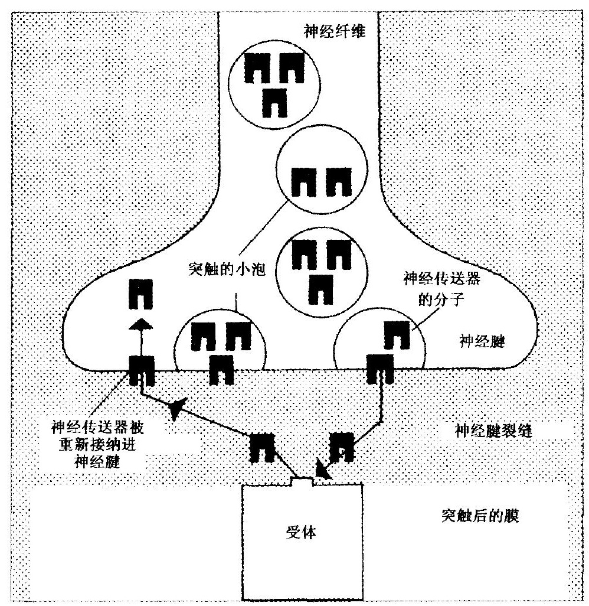
图 4 一个神经刺激在一个神经腱上的传播
两个诺贝尔奖授予神经生理学家
一旦神经传送器完成了任务，它们就被分解。某些神经传送器被送回到神经腱前的存储处。
勒维称被他发现的信使物质为＂迷走神经质＂。迷走神经是除
交感神经外的，负责我们生长平衡的植物性神经系统组成部分。英国化学家亨利•戴尔——保尔•埃尔利希的一个学生，此后不久便查明勒维的迷走神经质是化合物乙酰胆碱。他还发现，一个神经细胞每次只能合成并在终端释放出一个传送器。奥托•勒维和亨利•戴尔因发现化学的神经传送器 1936 年获诺贝尔奖。
在乙酰胆碱之后不久，人们还查明了另外几种化学信使物质，其中有多巴胺和（尤其是从同食物一起被吸收的原始物质苯丙氨酸和酪氨酸中生成的）去甲肾上腺素。
另一个传送器是血清素，它与1943年由瑞士化学家霍夫曼合成的，能引起幻觉的 LSD（麦角酰二乙胺）有某种相似性。由 LSD 引起的症状可能像精神分裂症那样的症状。由于这一点，由 LSD 产生的幻觉被用来充当检查某些药剂疗效的反应模式。此外，人们这些年来还知道，显然一些较小的蛋白质也能充当传送器。
如果多巴胺受阻塞，致使像得了精神分裂症那样出现多巴胺短缺，那么这同样能导致如乙酰胆碱过量这样的紊乱。血清素亏空也能引起大脑代谢损伤，人们估计主要是抑郁症会有这样一种机制。
受体在哪儿？
基于这样的认识，后来研制出了拮抗药——苯并噻唑品的对立药物。几年前洛赫才推出这样一种拮抗肌：＂安易醒＂。它可以在最短的时间内中和苯并噻唑品的作用。这是很符合理想的，如果要结束一种短时麻醉的话。
实验越来越清楚地显示出：像苯并噻唑品这样的物质可以充当一种开启某种锁的钥匙，充当受体。然而没有人精确了解这些受体的化学结构。洛赫的研究人员，不仅在纳特利，同时还在巴塞尔，经年累月地试图查明苯并噻唑品受体的结构。若查明了这点，
那就有可能把这一把把＂钥匙＂修理合适。
在付出了巨大的努力后，洛赫的巴塞尔实验室果真査明了苯并噻唑品受体的构成。两种分子量为 5 万至 5.5 万道尔顿的蛋白质被査明是相应受体的结构成分。对受体结构成分负有责任的基因也被找到。
在付出了巨大的努力后，洛赫的巴塞尔实验室果真査明了苯并噻唑品受体的构成。两种分子量为 5 万至 5.5 万道尔顿的蛋白质被査明是相应受体的结构成分。对受体结构成分负有责任的基因也被找到。
如果受体将来能够在试管里被足量地制造出来，人们就能够借助 X 射线最终弄清它们的分子结构。＂这种受体空间结构认识就会推动新型受体配位子的合成。＂霍夫曼－拉•洛赫公司的维利•黑费勒和汉斯•默勒这样希望。换句话说，于是就可以量了各自受体的尺寸来做苯并噻唑品。此外，说得通俗一点，配位子是开启受体的化学钥匙，就像拮抗肌。
有自己鲜明特色的模仿者
洛赫以它的两个超级明星利眠宁和安定在一个十分急切需要恐惧化解剂的市场上并没有长久独领风骚。勒内－普伦克研制出它的奥沙西泮，商品名＂舒宁＂，赫希斯特推出＂氧异安定＂作为一日镇静剂，而美国维斯公司则研制出＂劳拉西泮＂，这药因石勒苏益格－荷尔斯泰因州州政府首脑乌韦•巴舍尔的自杀而获得意想不到的知名度。还有许多别的苯并噻唑品接踵而至，洛赫自己也在努力，它的＂溴西泮＂同样在市场上占领了一席之地。
严格区分苯并噻唑品＂超级市场＂中的各种作用特征，这甚至对专家来说也不是一件容易的事。它们本质的不同点是半衰期，这种半衰期可能很不一样，它可能从 24 小时延伸至 48 小时，有时甚至延伸至 100 小时。所以在停药后往往过了几天，药物的残余才完全从机体中消失。值得注意的是，苯并噻唑品甚至在剂量很高时毒性也很小，不过其作用会因酒精而增强。此外，对上了年纪的人还是剂量小一些好，因为许多药物的生物转换在这些人的肝脏
中进行得比较缓慢，肝脏中的转换过程更为从容不迫。
上緮的危险有多大？
60 年代世人还对这一进步深信不疑，人们只看到苯并噻唑品带来的进步。这无疑会诱使人太笼统地开这些药并放弃进行附加的治疗性的谈话。如此方便的苯并噻唑品，同时还有别的药剂，有时被滥用做＂药物拐杖＂，它在很大程度上取代了医生的其他行动。人们在惊愕之余渐渐认识到，这些药剂会导致依赖，甚至上瘾。这一点特别适用于接连许多月或许多年服用了高剂量（每天约 30 至 60 毫克苯并噻唑品）的病人。机体经过适应对此作出反应，这就是说，为达到同样的效果，剂量就必须不断提高。若药剂完全中止或剂量大大减少，就可能会发生严重的瘾癖现象，如内心强烈不安，失眠，颤抖或痉挛发作。
这些症状像在戒除饮酒时出现的那种症状，戒酒是医学上最大的戒除瘾癖问题。一个新的经验是所谓的 low－dose－dependency （低剂量依赖），它在只是短时期内服用较小的治疗剂量时才会出现。
折磨人的戒癔
在一些精神病医院里，医生对依赖苯并噻唑品的病人进行住院治疗，如果他们不能独自摆脱药片㾂的话。药片瘾的解除过程常常是戏剧性的。可能会发作癫痫，出现焦虑不安和紧张状况，四肢颤抖，突然出大汗或麻痹性的抑郁症。＂那是我一生中最糟糕的时期之一。＂ 55 岁的希尔德加德•M 说。她曾连续数年服用高剂量的溴西泮，以克服离婚后的生存恐惧。她成功了。她又恢复了自己原有的，对生活充满乐趣的天性。在精神病医院的那段时间几
乎已经被她忘却。
基本上是许多关于苯并噻唑品这些极其违人心愿的作用的报告，导致了自1982年以来这些药剂销量下降。遭受到巨大损失的，就有苯并噻唑品中曾风靡一时的溴西泮（溴吡啶安定）以及劳拉安定（劳拉西泮），普拉安定（普拉西泮）和氧异安定（氯巴占）。尽管如此，苯并噻唑品依然还是排在 2000 种开得最多的药物之列。在格奥尔格斯•菲尔拉夫和克劳斯•奎林看来，有关苯并噻唑品的恐怖报道使人不能正确认识到，＂苯并噻唑品根本就属于开得最多的药物之一。人们可能几乎忽略了：苯并噻唑品在治疗恐惧感和睡眠障碍方面其实一直是占优势的药物——如果它们被正确使用的话。正确，就是——像使用一切药物那样——尽可能目标明确以及时间尽可能短＂。
基本上是许多关于苯并噻唑品这些极其违人心愿的作用的报告，导致了自1982年以来这些药剂销量下降。遭受到巨大损失的，就有苯并噻唑品中曾风靡一时的溴西泮（溴吡啶安定）以及劳拉安定（劳拉西泮），普拉安定（普拉西泮）和氧异安定（氯巴占）。尽管如此，苯并噻唑品依然还是排在 2000 种开得最多的药物之列。在格奥尔格斯•菲尔拉夫和克劳斯•奎林看来，有关苯并噻唑品的恐怖报道使人不能正确认识到，＂苯并噻唑品根本就属于开得最多的药物之一。人们可能几乎忽略了：苯并噻唑品在治疗恐惧感和睡眠障碍方面其实一直是占优势的药物——如果它们被正确使用的话。正确，就是——像使用一切药物那样——尽可能目标明确以及时间尽可能短＂。
＂庆幸有了它们＂
像慕尼黑的门诊医生汉斯•希皮乌斯这样的专家，也对苯并噻唑品发表了相似的看法：＂我们庆幸有了它们。＂希皮乌斯代表了许多精神病科医生的看法。可是慕尼黑马克斯－普兰克精神病学研究所的代特莱夫•冯•采尔森却对医师报说：＂实际上我从未用过这东西。＂然而不用苯并噻唑品，医生能用什么呢，如果人们潄开本来就必不可少的交谈治疗不计的话。现在几乎没有什么选择的余地。
唯一的例外是＂丁螺环酮＂（布斯哌隆），这一药剂由美国百时美施贵宝公司研制。它是苯并噻唑品的代用药，并且不会导致依赖性。丁螺环酮在德国1985年获批准。在一段有些缓慢的起跑后，这药剂开始在治疗恐惧感方面获得成功。
但是治精神疾病的旧药如拔地麻，啤酒花，蜜里萨或金丝桃也经历了某种复兴，虽然它们遭到某些精神病科医生的拒绝，说它们
只有一种安慰作用。然而——有人指出这一点——安慰剂也可能有益，譬如在对付某些睡眠障碍方面。
安眠药的从前和现在
睡眠障碍属于最为流行的精神障碍，它们约占综合医院全部病例的十分之一。然而它不是病，而是一种器质性或植物性神经原因造成的障碍症状。
在安眠药方面，一位所谓的催眠药中的老前辈保持了好得惊人的疗效：水合氯醛。这种化合物曾经由吉森的尤斯图斯•利比希在 1832 年用乙醇和氯合成过。是柏林药物学家奥托•李卜赖希想起试验它将其作为安眠药这个取得累累硕果的主意。试验于 1869年在柏林夏里特医院精神病科进行，试验对象是＂可怜的人儿＂——精神病人和患垥妄症的人。
李卜赖希因水合氯醛而出名。他基于这样的看法：这化合物在轻度碱性的血液中转化为氯仿和蚁酸。氯仿有麻醉作用，这一点医生们自1847年就已经知道，当时爱丁堡的妇科医生辛普森曾报告过这些性能。然而水合氯醛在机体中不会转换成氯仿，而是转换成产生睡眠作用的三氯乙醇。就像知名药物史上常有的那样，一种错误的理论导致了一种很有价值的药剂。李卜赖希的一位同事激动地说：＂我们完全应该在我们的神庙前庭立一块感恩牌位以纪念李卜赖希。＂
人们不仅借助这药物治疗失眠，当时充斥精神病医院的患躁狂症的人也安静下来了。＂大量与水合氯醛相关的错误的假设并不能阻止它在精神病医院里的胜利进军。＂奥特弗里德•K．林德在一篇名为《化学和睡眠》的文章中写道。
不过水合氯醛用得越频繁，副作用也势必越多。＂氯醛瘾＂成了一个可怕的概念，一位精神病科医生甚至称它是＂结晶地狱＂。
某些病人由于滥用这种药物而使肝脏遭受损伤。有些病人有了瘾，譬如弗里德里希•尼采
如果说这种药剂今天还被——通常被精神病科医生——推荐的话，那么这是基于下述原因：它的疗效快且可靠，它只稍微影响这个十分重要的睡眠阶段——所谓的 REM 睡眠。不过还是要建议有肾病或肝病的人慎用此药，水合氯醛也可能引起胃炎。
此外，水合氯醛的制造大大有助于柏林药剂师恩斯特•谢林逐步扩大他那原本小小的制药企业。随着时间的推移，＂绿色药房＂成为一家世界驰名公司——今天的谢林股份有限公司。
巴比妥酸
水合氯醛的成功激励科学家们去寻找醛化学门类中的新衍生物，这就出现了今天有时还在用的三聚乙醛。不过它有一个缺点：由于它经由肺部被消除，所以会产生难闻的口臭。此外还有 Bromderivate——克诺尔公司以此奠定了它第一批名牌产生的基础——砜和别的化合物。但是它们全部因三聚乙醛而黯然失色。
三聚乙醛的原始材料1864年由著名的颜料化学家和后来的诺贝尔奖获得者阿道夫
使巴比妥酸具有产生睡眠作用的化学变体1903年由化学家埃米尔•费歇尔（也是诺贝尔奖获得者）和医生约瑟夫•冯•梅林成功获得。第一个名字＂佛罗那＂也有一个小插曲。据说费歇尔坐火车去南方，睡着了，在佛罗那市才醒过来。
由于巴比妥酸有很好的促进睡眠的性能，不久就出现了大量变体，一如短时麻醉药剂那样。事实证明这些变体并非叫人放心。
苯并噻唑品对巴比妥酸剂
60 年代巴比妥酸剂才开始失去其统治地位。新的苯并噻唑品也适合充当安眠药并且主要是安全得多。洛赫把＂硝基安定＂（硝西泮）和氟硝安定（氟硝西泮）投放市场。然后在1982年，当美国普强公司推出它的＂䤀乐欣＂（三唑仑）时，似乎人们寻受已久的完美的安眠药已经找到了。酰乐欣具有一种强烈的，快速起始的作用，半衰期约四个小时，所以机体内的停留时间是很短的。由于这个原因，很少会发生服用许多别的药剂时会有的次日早展的＂hang over＂（垥安）。这些可能是疲倦和理解力降低的副作用在服用酣乐欣时很少发生。几年内酣乐欣成为销售量最大的安眠药， 1990 年在美国开出了 700 万份以上的药方。
尤其是许多做长途飞行的旅客都经常服用这种＂蓝丸＂，以便睡上几个小时养养神。美国国务卿詹姆斯•贝克尔就是最有声望的酥乐欣服用者之一，这是《时代》杂志1991年10月向它的读者们透露的。
但是在 80 年代中，美国食品和药品管理局就已经收到投诉：酳乐欣在某些情况下引起可能导致暂时丧失记忆，无理由的情绪激动和被追踪恐惧感的副作用。认为这药剂会强烈影响人的情绪，使其在最亲密的家庭圈子里犯暴力行为的种种断言引起了轰动。
普强否认这样的作用，却将剂量从 0.5 毫克减少至 0.25 毫克。后来在1991年秋对这一药剂又有了新的指控，致使英国竟撤回酣乐欣的经销许可。这一在全世界都开的药今后的命运如何人们没有把握。由于安眠药并不是生活必需的药物，所以专家们理所当然地要求严格，全面地评价它的风险。
专家们因此就越发密切地注视法国勒内－普伦克•洛尔公司的一种新的安眠药的问世，它的高效物质是佐匹克隆，商标名＂吡嗪哌酯＂。这不是苯并噻唑品，而是属于另一种物质类别；它连接上同样的受体，却是在一个不同于苯并噻唑的场所。
勒内－普伦克公司在推出这一药剂时已经能够以 30 多万病人的经验为依据。这药剂缩短人睡时间，但不从根本上触及浅睡阶段 I 和 II，而是深睡阶段 III 和IV 稍稍被延长。REM 睡眠阶段不受影响，白天的主动精神也不变，因为这药物只有相对较短的五小时的半衰期。不过吡嗪哌酯在多大程度上证明自己是代替苯并噻唑品的可供选择的药物，这一点只有将来更广泛的使用才能显示。
可惜副作用往往在一种药物被几千人服用后才显现出来。
摇篮在法国
不管是作为恐惧消解剂还是作为安眠药，苯并噻唑品肯定在精神病药物品种中占有一个重要的席位。不过人们如果看一眼研究和研制实验室的话，那么是否还可望出现更伟大的新药，就显得很成问题了。
某些精神科医生不推荐苯并噻唑品而推荐较柔和的安定药，后者虽然有较大的副作用，但是显然不会使人上瘾。安定药这个概念是法国精神病医生让•德吕首先引进的。他理解这个概念的意义，就是对精神疾病，对严重精神变态引起一种消解作用的药物。
安定药的摇篮在法国。在被证明对精神病药物治疗硕果累累的 1950 年到 1960 年的 10 年间，安定药问世了，而且是在勒内－普伦克制药集团公司的实验窒里。出生于瑞士的研究人员丹尼尔•博韦特在那里关注的不是精神上起作用的物质，而是抗组织胺的问题。这是可以阻止对许多过敏反应负有责任的组织激素的一种
过剩作用的化合物。
指点通往安全药之路的是年轻的法国军医亨利•拉博利特。 1948年他就已经研究过抗组织胺。在这个过程中他观察到了有趣的现象：它们降低体温，解除支气管肌肉麻痹，而且还对病人施加镇静的影响。拉博利特当时竭力争取减少病人对麻痹的顾虑，所以他设法尽量在实施真正的麻痹之前安慰病人并使其产生一种镇定的情绪。也许，他这样想，因此一种一再发生的手术休克就能避免，或者至少被控持在一定限度内。
指点通往安全药之路的是年轻的法国军医亨利•拉博利特。 1948年他就已经研究过抗组织胺。在这个过程中他观察到了有趣的现象：它们降低体温，解除支气管肌肉麻痹，而且还对病人施加镇静的影响。拉博利特当时竭力争取减少病人对麻痹的顾虑，所以他设法尽量在实施真正的麻痹之前安慰病人并使其产生一种镇定的情绪。也许，他这样想，因此一种一再发生的手术休克就能避免，或者至少被控持在一定限度内。
为了进行这样的研究，拉博利特从勒内－普伦克公司得到化合物异丙嗪——第一批抗组织胺中的一种。异丙嗪果然在几个病人身上取得预期的减弱病情的效果。然而它很快被另一种药剂远远超出：氯丙榛。拉博利特决定配制＂解痉鸡尾酒＂，它可以在手术前导致一种松解的情绪。它由 25 毫克＂异丙美沙嗪＂（异丙嗪）， 25毫克氯丙嗪（氯普马嗪）和 50 毫克杜冷丁（哌替啶）组成。氯丙嗪同样也是一种安定药，杜冷丁是一种强烈的止痛药。这种鸡尾酒不仅可以用来作手术准备，而且也可以用来准备并进行一种人造冬眠，当时人们喜欢使用这种人造冬眠来治疗极度疲劳状态症和精神疾病。
拉博利特的报告不久便促使法国精神病科医生让•德吕和皮埃尔•德尼凯开始注意这种药物为治疗精神病所提供的机会。尤其是氯丙嗪对有思维障碍，妄想和出现幻觉的患精神分裂症的病人有极好的疗效。当氯丙嗪通过临床试验之后，在精神病治疗方面简直发生了一种革命性的转变。拘束衫和橡皮室不再需要，封闭的精神病科空了，迄今一直进行住院治疗并必须与社会隔离的病人，甚至往往能返回各自的工作岗位。
不过和每一种有强烈的主要疗效的药物一样，氯丙嗪也产生了相当多的副作用。譬如可能会出现动作障碍，颤抖，违反本意的肌肉反应和别的症状。对不由自主的动作负责的神经，像交感神
经和副交感神经之间的互相协调，也可能会受到阻碍。
其他的安定药不久便接踵而至，臂如拜耳的＂左美丙嗪＂。其中部分药物在其化学成分上有很大区别，可是疗效却惊人地相似。不过这些安定药常常只是减少严重的精神病症状，但不能治愈疾病。一个病人或许必须终身服用这些药物。
＂尽管如此，它们仍是一大进步。＂杜塞尔多夫神经病学家和精神病科医生鲁道夫•利森费尔德评论说。他在自己的诊所里常和精神病人打交道。他描述了一个在他看来简直是非常典型的病例： 42 岁的工人阿尔费雷德•W 来找他求治，此人诉说皮肤上有不适感觉，他说他觉得这是由邻居的猜忌的同事向他禺所里发射的光束引起的。所以 W 已经在他家的墙壁上包了一层铝笵，他自己在家里则戴一顶用同样材料做的小帽。
其他的安定药不久便接踵而至，臂如拜耳的＂左美丙嗪＂。其中部分药物在其化学成分上有很大区别，可是疗效却惊人地相似。不过这些安定药常常只是减少严重的精神病症状，但不能治愈疾病。一个病人或许必须终身服用这些药物。
＂尽管如此，它们仍是一大进步。＂杜塞尔多夫神经病学家和精神病科医生鲁道夫•利森费尔德评论说。他在自己的诊所里常和精神病人打交道。他描述了一个在他看来简直是非常典型的病例： 42 岁的工人阿尔费雷德•W 来找他求治，此人诉说皮肤上有不适感觉，他说他觉得这是由邻居的猜忌的同事向他禺所里发射的光束引起的。所以 W 已经在他家的墙壁上包了一层铝笵，他自己在家里则戴一顶用同样材料做的小帽。
利森费尔德用高剂量的安定药在一段时期内克服了
经过治疗，W 只达到一种使幻觉变弱的状态。这期间，有了按照利森费尔德的疗法，精神分裂症在最初一阵发作和相应的治疗后不复发的病例。
对神经传送器的作用
显然有必要进一步详细弄清楚安定药的作用，以便对这些药物有时失灵进行研究。很久以来就一直可以肯定：它们之中的大多数，如氯丙溙，对大脑中的某些物质起作用，将信号从神经细胞传向神经细胞。属于此类物质的，除乙酰胆碱以外，还有去甲肾上腺素和儿茶酚乙胺。
如果得了一种最知名的神经性疾病帕金森氏病，载体物质儿
茶酚乙胺很可能就受到了扰乱。这种病因英国医生詹姆斯•帕金森而知名。他自己罹患此病，所以能够精确地描绘其症状：病人的一个显著特征就是有细微的震颤。病人的动作放慢了，肌肉持续处于一种紧张状态。病人猛烈出汗，因为植物神经系统已受损；而智力和对这病的性质的理解力却完好无损，就像帕金森用他自己的病史所证明的那样。
独裁者们的病
阿道夫•希特勒大概可以算作帕金森氏病的最知名的牺牲者之一。虽然他在生命的最后几年里试图向外界掩盖他患病的症状，他左臂的强烈震颤还是引起许多来访者的注意。不过大多数人当时觉得反正＂领袖＂是个身体极端衰弱的人。他不断地从他的保健医生泰奥•莫雷尔博士那儿得到的大量维生素和改善肠菌丛的药物也丝毫改变不了这种状况。不过事实已经证明这种说法是谣传：希特勒曾患一种由梅毒引起的进行性脑软化。列宁得的也不是什么＂脑软化＂，而估计是一种遗传性的脑血管硬化症。
这算得上是治疗帕金森氏病方面的最大进步：成功抵消某些脑组织中的多巴胺缺乏。这是由于
瑞典药物学家阿维德•卡尔松很早就猜想，氯丙嗪对精神分裂症很有疗效，是因为它在大脑中制造一种人造的多巴胺缺乏；而且，据卡尔松说，是通过多巴胺受体的阻滞。美国约翰•霍普金斯大学的进一步研究结果证实了这一论点。
一大成就：氟哌啶醇
今天氯丙嗪可算是中等强度的药物。它主要用来治疗精神运
动学的情绪激动状态并通过阻滞大脑边缘系统中的儿茶酚乙胺受体而起作用。
氟哌啶醇（商标名＂氟哌丁苯＂）却是一种最强效的安定药。就像＂氟司必林＂（Imap）和＂奋乃静＂（Decentan）那样，它主要对精神病症状有疗效。
今天可算作使用最多的安定药氟哌啶醇，1958年由年轻的比利时精神病科医生保尔•杨森合成。这物质属于丁酰苯一类，得了个＂R1625＂的内部名称。R1625在动物试验中证明了一种吗啡式的和安定的作用后——它的潜能比氯丙嗪大——医生就第一次大胆地用它治疗了震颤性谵妄阶段的人。这种病的症状是意识模糊，情绪激动和感官上的错觉。从前震颤性谵妄通常被视为酒精中毒的后果并被鄙视为＂酒徒幻觉＂，但是它也能因中毒，脑病和甲状腺机能亢进而引起。
另一项研究在利格／吕蒂希大学附属医院进行，在由心理上的原因而患运动机能障碍的病人身上显示出了最佳疗效。据杨森后来讲述，他对这一表现型特别感兴趣。当时在比利时自行车运动员中发生了好几起伴有严重的情绪激动状况的安非他明中毒事件。安非他明在 30 年代被引进医学，它们刺激心理和身体的功能，估计是通过它们释放出如去甲肾上腺素和儿茶酚乙胺这样的神经传送器物质。特别出名的是＂去氧麻黄碱＂（苯丙胺），譬如在第二次世界大战期间空勤人员服用此药，以便保持头脑清醒并忍受住较大的劳累。这种药物很危险，因为它动员机体的储备，会导致身体的崩溃和上瘾。尽管如此，这些安非他明还是被用作运动员，尤其是自行车运动员的兴奋剂。然而事实却证明精神分裂，幻觉，恐惧忧郁过程中的精神病障碍是氟哌啶醇的重要作用范围。
氟哌啶醇也显示出不受欢迎的副作用。据精神病科医生的观察，主要是运动机能障碍和极度疲倦。
在这期间，有长期作用的注射剂已经大大简化了治疗，如鲁道
夫•利森费尔德所报告的那样：＂正是在诊所里这些药剂使治疗变得简便了，病人不必每天服用药片。＂按照利森费尔德的说法，氟安克索，氟哌丁基和氟司必林是诊所里最常用的药剂。
荷尔德林和路德维希王
在精神分裂症上，一种遗传资质或一种因素可能起一种作用。诗人弗里德里希•荷尔德林可算是过去的著名精神分裂症患者之一，他的病情似乎是在 30 岁后暴发的。＂《夜歌》和赞美诗显示出极其明显的精神分裂症性质的，精神病性质的障碍，只不过这些障碍被一面盾牌那样的残余天赋遮盖住了。＂精神病科医生威廉•朗格－艾希包姆在他的名著《天才，精神错乱和荣誉》中就有这样的话。朗格－艾希包姆创立了经典精神病情记录。不过某些被他从病理学角度仔细研究过的天才今天被作出不同的评断。
然而在荷尔德林病例上，朗格－艾希包姆并非孤立无援，譬如著名的精神病科医生恩斯特•克雷奇马尔就在其《天才人物》一书中证实了他的判断。法国日耳曼学学者皮埃尔•贝尔托持完全不同的看法，对作品的深入分析使他作出这样的猜测：卷入了革命漩涡的荷尔德林只是装病罢了，为了逃避拘捕和控告。
巴伐利亚国王路德维希二世也患精神分裂症，他的兄弟奥托也有这种病。出于对王朝的考虑，路德维希的病情长期被否认和隐瞒。然而许多症状，尤其是幻觉，却是显而易见的。
今天看来，对这一诊断几乎没什么可怀疑的。在一份1985年的鉴定中，精神病科医生哈尔姆斯得出如下结论：＂路德维希二世的病情带有形式思维和内容思维紊乱，感情和交际紊乱的特征。存在着带有伟人思想意义上的大起大落的自我价值感方面，以及受贬抑和无价值方面的本体和关系紊乱。＂
路德维希在世时的鉴定人，以很有影响的精神病科医生伯恩
哈德•冯•古登为首，诊断这种病为一种妄想狂（癭狂）意义上的精神病。精神分裂症这个名词 1911 年才由瑞士精神病科医生欧根•布洛伊勒首次提出。
抑郁——比估计的更常见
精神分裂症大约发生在
不过＂抑郁＂只是一个集合名词。精神病科医生们知道有多种多样的抑郁症，有抑郁性障碍的人在他们的诊所里最常见。综合医院的专科医生也见到许多抑郁症病人。在欧洲的各专科医生中所作的一次民意测验表明：
抑郁症常常来得完全出人意料，看不出有什么触发性的事件。忧郁仍然是最严重的抑郁症，它在精神病科医生的语言中被称作内因引起的，从内部生成的，看不出有什么外部原因的障碍。
得这种内在抑郁症的常常是异常认真，拘泥细节和过分守秩序的人。他们如果受到抑郁症的侵袭，那么他们醒来时就已经感到内心空虚，整个生活毫无意义，感到四肢铅一般沉重，有恐惧感和负罪感。
这种负罪感常常可能与很久以前的，微不足道的事情有关。一个典型的例子就是一位年近七旬的妇女，她突然作了严厉的自我谴责，说她年轻时曾吻了一个牧师一下。在大规模的性教育运动前，不少女性和男性病人去精神病科诊所就诊，因为他们在幼年或青年时代经常手淫。有抑郁症的人的原动力当然也大大降低了，一如精神病科医生的询问一般很快就显示的那样。
犯抑郁症时病人情绪每天都有一定的波动。中午，下午，尤其是在晚上心情会明显好转。早晨对于抑郁症患者来说是一天里最糟糕的时间，他们往往难以起床并恨不得用被子蒙住头，以逃避这平凡的一天。
原因清楚的抑郁症
跟内因引起的抑郁症相反，外原的，外来的抑郁症的原因可以清楚地看到或者至少比较容易发现。脑瘤，脑外伤，大脑或脑膜发炎，例如由梅毒引起，脑动脉硬化或中毒都可能是外原的抑郁症的原因。除了抑郁性障碍以外，迅速的精神上和身体上的疲㐑感也可算作最初的症状。
某些人用一种反作用的抑郁对强烈的内心震动，譬如对失去一个孩子或另一个亲近的人作出反应。迁入一个新居，告别一个久已熟悉的环境，也能引起这样的短暂反应。一种遗传因素意义上的内因的影响可能也会对工作上的挫折起作用。
往往不能被轻易诊断出来的是隐蔽的，被掩盖住的抑郁症，因为这时占主导地位的完全是身体上的痛苦感觉，否则可以决定抑郁症病象的典型障碍往往完全没有。病人起先只诉说身体上的障碍：心脏针刺般疼痛，神思恍惚，眩晕，虚弱，骶骨部或四肢疼痛，盗汗，便秘或腹泻。
＂问题变得严重了＂
受到精神制约的抑郁症大概还会继续增多，这与许多因素有关。在遗传因素之外，还有许多别的引发因素。巴塞尔的保尔•基洛茨 1986 年在《慕尼黑医学周刊》上发表的一篇谈话中列举了由心理上的（精神性的）因素产生的抑郁症的原因：＂它们在世界范围内
增多了。这要归因于日益增长的实利主义，也要归因于对精神生活的轻视。在西方还要加上对年龄的歧视。这一切加在一起对疾病的产生起了作用。这些都不是主要原因，主要原因是在这个土地上滋长着一遇困难就变得抑郁起来的不良情绪。＂
面对＂今天我们应付不了这些问题吗？＂的提问，基洛茨回答说：＂我以为，问题变得更严重了。太快的技术化，交际，虚伪的交往，缺乏面对面的交流，主要是有关一切消极事物的信息，然后就是环境的破坏。整个的难以解决的原子能问题可能也起某种作用。如果人们再深入探讨，就会碰到家庭问题。离婚增多了。如果人们考虑到，在联邦德国
依奥地利精神病科医生瓦尔特•比尔克迈尔看来，抑郁病的主要症状是＂缺乏维持生命所必需的兴致＂和生命力衰弱。它从轻度的沮丧，忧伤，悲观的情绪，生命力减弱和轻度疲倦，直至最严重的绝望症状，痛苦的自我怀疑和产生自杀的想法。在联邦德国自寻短见的人当中——每年约 1.5 万人——许多人是绝望的抑郁症患者。
选择正确的药物
得了内因抑郁症后最大的危险是自杀。只要这种危险不排除，许多精神病科的医生就认为在诊所里治疗这种抑郁症是担风险的事。鲁道夫•利森费尔德对此评论说：＂主要是必须选用正确的药物。在抑郁症得到成功治疗之前，不可能加强生命力。＂瑞士精神病科医生罗兰德•库恩在一次会议上对此发表评论说：＂我们之中的每一个人都曾失去过自杀而死的抑郁症病人。＂
欧内斯特•海明威也是自杀身亡。他身患严重的躁狂型抑郁
障碍，一会儿兴高采烈，一会儿垂头丧气；据美国精神病科医生报告，他不得不多次接受电休克治疗。海明威的父亲也是死于自杀。作家的兄弟说，欧内斯特拿起了枪，因为他忍受不了自己身体的衰退。
华盛顿和林肯也被几个美国精神病科医生归人抑郁症患者一类，一如在一些重要的传记性著述中所显示的那样。甚至温斯顿•丘吉尔也被认为患躁狂型抑郁症，而他的了不起的躁狂状态却是具有世界政治上的重要性。
在一部分病人身上只出现抑郁症状，病势的过程是＂单极的＂。另一些病情显示出＂双极的＂过程：抑郁和躁狂，＂垂头丧气＂和＂兴高采烈＂交替出现。
躁狂的高度活性
某些病人只经历抑郁的状态，而其他病人则病象在变更：情绪低落和活力贫乏变成兴高采烈，进取心增强，情绪激动。轻度的自大狂可能是这个阶段的消极现象：无节制地花钱，随意规划项目，好冥思苦索，好讲话，等等。
病人睡眠少了也能过得去并且似乎精力充沛并对事业充满着紧迫感。他们在这个阶段也能做成重要的事情。
这样的具有高度活性的躁狂状态往往只延续不几天，但也可能延续几个月甚至一两年。在这期间常常有病情大规模回落的间歇期。时间上的预测是困难的，甚至有每隔 24 小时状态就会变更的躁狂型抑郁类型。
由于这一点，精神病科医生们从前说这是躁狂型抑郁性精神错乱，后来又说这是＂循环性精神病＂（Zyklothymie），后者是一个造出来的名词，它由希腊字＂Thymos＂（精神）和＂Zyklus＂（圆圈）组成。第一批治抑郁症的药剂被称作＂抗抑郁药＂。
时机成熟
50 年代有了头一批卓有成效的治抑郁症的药物，虽然人们长期不清楚它们具体如何起作用。头－批药物中的一种便是巴塞尔西巴公司的＂利血平＂。它可以算作一种生物碱且来自一种印度植物 Rauwolfia 的干根。
这种植物曾被德国医生和植物学家莱昂哈德•拉沃尔夫带到欧洲。拉沃尔夫告知，在印度它受到当地人简直是神灵般的崇拜。他们用它几乎治愈一切疾病，从蛇咬到牙痛。但是在古老的印度医学中利血平也当镇静剂用。
两位西巴化学家埃米尔•施利特勒和约翰尼斯•米勒研究了这种植物的 25 种以上的生物碱并将它们离析出来。事实表明，被离析出来的生物碱比未加工的根部提取物疗效强 500 倍。
利血平在 50 年代一跃成为最成功的治高血压的药物，不久人们就发现这药剂还有另外一种性能。美国药物学家们观察到，利血平也很适用于镇静情绪激动的病人。随之而产生的种种希望几年后落空了，为取得医治恐惧和紧张情绪效果所必需的高剂量有太强烈的副作用。
而在巴塞尔的盖居公司，化学家们却合成了一种以＂氯丙榛＂ （Megaphen）为样板的化合物。它确实有一种与氯丙嗪相当类似的化学结构，不过成果并没超过这个样板，它的疗效甚至更弱。
瑞士精神病科医生罗兰德•库思一再失望地发现，精神分裂症的病情通过＂G22355＂这种药物几乎没有得到什么改善，他在大约 300 个病人身上观察到这一结果。他已经想到要结束这项研究并通知盖居：继续检验似乎毫无希望。
但是1956年初，库恩起了这样的念头：用丙咪嗪——这是它现在的名字——治疗几个抑郁症病人。果不其然，这药物（商标名
＂Tofranil＂）改善了病人的抑郁情绪并增加了他们的活力。丙咪嗪今天仍是治抑郁症的标准药剂之一。它很早就会见效，不像其他几种药剂要在几个星期后才见效。
＂Tofranil＂）改善了病人的抑郁情绪并增加了他们的活力。丙咪嗪今天仍是治抑郁症的标准药剂之一。它很早就会见效，不像其他几种药剂要在几个星期后才见效。
治结核病和抑郁症
霍夫曼－拉•洛赫公司的实验室里也传来一个新消息：研究人员们在寻找一种治结核病的药物。这一古老民间疾病的防治当时又一次取得重大进展。这要归功于抗生素链霉素，但是也要归功于新的，纯粹人工合成的物质——化学治疗剂。在合成各种化合物的过程中，人们在巴塞尔制造出一种新的中间产品：异烟肼（Iso－ niazid）
广泛检测的结果表明，这种药物对结核杆菌有疗效。洛赫公司对将一种治结核病的新药投放市场抱有越来越大的希望。在一个强化计划中，公司为大规模生产这种药物创造了技术上的全部先决条件。
这个新的希望支柱获得了＂异烟肼＂之名。它似乎真的要成为一种贵重的药物。然而在对各疗养院里的肺结核病人临床使用时却发生了意想不到的事，几乎所有的病人在服用了异烟肼后变得兴高采烈和精力充沛了。
说也奇怪，在洛赫公司人们起先没有特别注意这一效果。假如不是有了维尔讷•策勒和纳旦•S．克兰这两个固执的美国医生的话，也许人们就根本不会继续跟踪这征象了。他们对异烟肼留有很深刻的印象：克兰敦促洛赫无论如何也要继续试验这种化合物，看它可否作为治精神病的药物。后来它就以＂马西里特＂的商标名被推出。然而这一药剂未能在精神病治疗方面保持住自己的一席之地，它今天是被用来治疗结核病并由萨尔氮化学公司作为＂异烟肼＂大量销售的。
许多药有同样效果
治抑郁症有效的药物在化学成分上很不一样。尽管如此，它们似乎还是在中枢神经系统的受体上有一个共同的作用点。然而精神病药物学家们长期在实验中摸索，他们只能作出推测。
到了 60 年代中情况显得越来越明朗：许多抑郁症大概由于缺乏化学载体物质，缺乏神经传送器而发生。精神病科医生 J．J．席尔德克劳特提出了一个简直令人震惊的假设。他写道：＂一部分——如果说不是全部——抑郁症是与绝对或相对缺乏儿茶酚胺，尤其是去甲肾上腺素，缺乏大脑中有重要作用的受体联系在一起的。＂
对像丙咪嗪这样的药物的抗抑郁作用，人们作出的解释是，这些药物在神经细胞控制中心，在神经腱上导致儿茶酚胺，去甲肾上腺素和肾上腺素的超额供应：丙咪嗪阻止的先前倾出的去甲肾上腺素，在神经腱隙缝上又被吸收进前神经腱的神经末梢。
单胺氧化酶－氧化酶抑制剂的作用也越来越清楚地显露出来。这种自 20 年代以来知名的酶（简称 MAO）负责使单胺，其中也包括去甲肾上腺素和儿茶酚乙胺，在细胞中被分解。这一功能若受到阻碍，就会有更多的信使物质供使用。
MAO 抑制剂虽然明显地改善情绪激发积极性，但是人们却一再观察到如活动障碍，头痛，呕吐和肌肉痉挛这样的强烈的副作用。
结果还表明，MAO 对另一种化合物，即对氨基酸酪氨有抑制作用。这种氨基酸许多食物中都有，譬如陈干酪，鸡肝和某些鱼类中有，啤酒，咖啡或葡萄酒这样的饮料中也有。如果这种酪氨因酶的短缺而不被分解，那么就会导致血压升高。有时这些征象甚至如此强烈，以致＂酪氨危机＂这个词儿竟然被采纳了。所以谁服用
MAO，谁就必须按某种规定的食谱进食。
由于这些因素，MAO 又全都被逐出治精神病保留药物行列，只有化合物＂反苯环丙胺＂（Parnate）直至不久前还一直在德国药品市场上占有一席之地。1991年，洛赫才推出了一种新的 MAO 抑制剂。跟从前的不一样，它与酪氨没有相互影响，这使可怕的高血压危机得以避免。这样就不必严格控制饮食了。这种新的药剂取名 ＂Aurorix＂（吗氯贝胺），它使得了抑郁症后减少了的信使物质肾上腺素和血清素增多。
由于这些因素，MAO 又全都被逐出治精神病保留药物行列，只有化合物＂反苯环丙胺＂（Parnate）直至不久前还一直在德国药品市场上占有一席之地。1991年，洛赫才推出了一种新的 MAO 抑制剂。跟从前的不一样，它与酪氨没有相互影响，这使可怕的高血压危机得以避免。这样就不必严格控制饮食了。这种新的药剂取名 ＂Aurorix＂（吗氯贝胺），它使得了抑郁症后减少了的信使物质肾上腺素和血清素增多。
最后还有一种神经传送器引起了人们的兴趣：血清素，化学名 5 －羟色胺，缩写为
礼来公司的新药剂＂百忧解＂合乎逻辑地应运而生。这种药物 （氟西汀），在德国叫＂氟苯氧苯胺＂，它准确地在这一点上起作用：加强神经腱上血清素的生成。这种药物在美国一开始就销量极大。自1990年4月初起，它在联邦德国由礼来德国股份有限公司和赫希斯特股份公司大量销售。
某些媒体简直忘乎所以了，一家杂志的卷首文章冠以这样的标题：《再见，布鲁斯音乐——种抗抑郁神药》（Bye－Bye Blues．A New Wonder Drug for Depression）。另一家杂志称百忧解为一种＂miracle di－ et pill＂（神奇减肥药），因为这种药物不同于别的抗抑郁药，它不会导致体重增加。光是一个月里在美国就开出了 8 万份处方。
据报告称，它的疗效像三环的抗抑郁药。氟苯氧苯胺的副作用似平比较少，只是偶或出现口干，消化道疾病，头晕，出汗或视力障碍。不过在一些出版物中也有人声称，百忧解诱使某些病人自杀。虽然这样一种说法几乎无法得以证实，因为抑郁症患者比健
康人的自杀倾向强烈得多，但是礼来公司还是不得不处理高达几百万的赔偿损失要求。就美国药物而言，这就不算什么不寻常的现象了。
这种药物每天服用一次，一般来说剂量是 20 毫克。由于它只含少量毒素，所以剂量大了也没有大的危险。
＂诺米芬辛＂被撤回
不过在赫希斯特公司里，人们对如此有力的证词十分小心谨慎。这家企业1976年曾推出过一种抗抑郁药：诺米芬辛，商标名 ＂Alival＂。由于它属于一种全新的物质族并且有一种强烈的使心情好转的作用，所以不久就被精神病科医生大量使用。几年后才在病人身上显示出——即使很罕见——如此强烈的副作用，以致公司决定将这种受到精神病科医生高度评价的药剂从市场上撤回。
现在联邦德国的医生可以在约 25 种治抑郁症的药剂中进行选择，居首位的是阿米替林。1990年每天大约开出 3750 万剂这样的药。首先由霍夫曼－拉•洛赫公司研制的阿米替林主要具有抑制的性能。而地昔帕明则被认为是主要可增强活力的药剂。丙咪榛既有抑制作用，也有增强活力的作用。1988年在联邦德国每天约开出 1.63 亿剂抗抑郁药。
还有一系列的组合药剂，如＂Limbatril＂，它含有阿米替林和氯氮卓（利眠宁）。今天许多精神病科医生放弃这些组合药剂。也像止痛药那样，趋势明显地走向只含有仅有的一种有效物质的单一药剂，这样就能更精确地控制符合期望的和不符合期望的作用。
估计抗抑郁药的销售额提高到了与苯二氮的费用相当的水平。
最初在澳大利亚使用
带来治疗躁狂症方面的一个精神病学上的重大进步的是锂，一种久已为人所知的金属。年轻的澳大利亚医生约翰•卡德在研究尿晶体时发现了这种物质在治疗躁狂症方面的作用。
由于卡德几乎完全不出名，所以过了很久他的锂治疗法才获得承认。许多医生甚至到了1954年，在丹麦精神病科医生莫尔根斯•绍和他的同事们宣传锂治疗法时才知道有这种治疗法。
今天，锂在全世界主要用来预防躁狂症。大约
美国精神病科医生罗兰德•R．费维写了一本热情洋溢的书论述他使用锂治病的经验。德国精神病科医生赖讷•特勒总结说： ＂锂对情绪性精神疾病的预防作用是药物精神病学学科的一个最大的成果。＂
阿洛伊斯•阿尔茨海默发现一种病
研究人员们猜想，神经传导器亏空不仅是精神分裂症和躁狂抑郁病的重要原因——在我们这个时代的最悲哀的疾病上，也可能有一个这样的因素在起作用。那就是阿尔茨海默病。
这种病因丽塔•海华丝的命运而为最广泛的人群所知晓。用自己的名字给这种病命名的那个人肯定没想到，他恰恰由于描述了一个早期精神衰落的病例而将载人医学史册。
阿洛伊斯•阿尔茨海默，1864 年出生于下弗兰肯地区的马克特布赖特，是法兰克福市立精神病院的精神病科医生，后来在慕尼黑当非教席教授。他对大脑解剖有特殊爱好，他在大脑中寻找由各
种精神疾病造成的可辨认的损伤。令脑病理学家们大为苦恼的是，在患精神分裂症或躁狂抑郁性疾病的人的大脑中没发现有什么变化。
神经细胞萎缩
如果是痴呆，如果是当时人们常常不太得体地说的＂变成白疾＂，那么情况就不一样了。智力的消减随着脑细胞的萎缩而出现。这种萎缩通常在大约 70 岁时开始，所以它也被叫作＂老年性痴呆＂。
精神病科的医生们很久以来就知道一种不同于老年性痴呆的退化过程，这种过程被认为是＂早老性的＂，在 65 岁前就已经开始。 1906年在一次主要由西南德精神病科医生参加的会议上，阿尔茨海默报告了这样一个早老性痴呆病例。
按照阿尔茨海默的描述，这是一位 56 岁的女病人，她的最初症状是日益丧失记忆力。后来又加上辨认方向困难，她认不清自己的寓所了。她用毫无感情的声调读东西，说话前言不搭后语，后来，就只会结结巴巴地说些零星的话语。她不断地陷于精神错乱状态之中。
当阿尔茨海默在这位妇女死后仔细检查她的大脑时，发现了通常的脑细胞萎缩。在显微镜下还可以看到变化了的细小的纤维组织和沉积物。后来阿尔茨海默还曾报告过这样的早老性瘀呆病例。所以他的上司，埃米尔•克雷珀林，科学精神病学创始人之一，时任慕尼黑精神病院院长，就用阿尔茨海默的名字给这种病命名。
不过今天人们不只是把早老性痴呆，而且还把较晚出现的病例算作＂阿尔茨海默型＂病。它们约占全部疾呆症的一半。约
值得注意的是：阿尔茨海默病病人比较长久地保持＂门脸儿＂，保持一种给人好感的举止。精神病科医生格奥尔格•施泰尔茨——阿尔茨海默的女婿， 1945 年后的慕尼黑医院院长，有一次称这病为＂最可爱的＂痴呆。施泰尔茨的继任者库尔特•科勒教授告知，病人这种和善的天性会误导不了解情况的医生，使他们不认真看待病情甚至以为病人是在装病。
脑软化——梅毒后遗症
阿尔茨海默不仅在法兰克福还在慕尼黑特别深人研究过在那个时期充斥精神病院的进行性脑软化。它把正常人变为＂废人＂，用在处于最后阶段者身上连这个糟糕的名称也几乎是委婉的。
在膨胀的自大狂或极度悲哀的沉思阶段之后，脑软化患者便陷人不可阻挡的痴呆，而这种痴呆则毁灭掉哪怕是最微弱的从前的智力的迹象。通常在大约 5 年后死神便满怀慈悲地结束这种衰败和痛苦。
尼采的悲剧极有可能是一个进行性脑软化的病例，即使他的许多位亲戚和崇拜者企图否认这一点。认为在他们的英雄，这个 ＂超人＂的最后几部作品中，已经渐渐显露脑软化患者的精神错乱和衰败迹象，这样的观念某些人甚至今天还觉得难以忍受。
就在阿尔茨海默描述了他第一个早老性痴呆病例不久， 1905年弗里德里希•绍丁在柏林夏里特医院发现苍白色螺旋体是梅毒的病原体。绍丁称它为苍白色或灰白色，因为它在显微镜下很难着色。与绍丁共同获得这一发现的是皮肤病学家弗里茨•霍夫曼。两个人的这一发现起先获得的与其说是好评，不如说是怀疑。
5 年后， 1910 年，由于野口英世的研究，人们也渐渐认识到，进行性脑软化——俗称＂脑软化＂——是一种从前患过且未经适当治疗的梅毒的一个晚发后果。野口证实了脑软化患者大脑中的螺旋
体从而证明了病因。此后不久也找到了用脊髓确诊脑软化的方法。
然而即使现在，精神病科医生在治疗脑软化方面也没有进展。埃尔利希的胂凡纳明，1910年由赫希斯特化学公司上市，虽然对早期阶段有很好的疗效，但对常常在受感染后几十年才开始发病的脑软化没有疗效。它和中枢神经系统的其他形态的梅毒无法用胂凡纳明治愈，因为这一药剂不克服血脑屏障。
阿尔茨海默不只是从医院的匿名者病例上了解到这种形态的痴呆症。他妻子的第一任丈夫就是死于此病，他和他的同事们只能眼睁睁看着病人死去。
但是阿尔茨海默和其他人在野口之前就已经能够显示，这种病原体在大脑中会造成哪些损伤。不过在1910年以前诊断只能在患者死后，即在解剖台上才能作出。这一点也适用于别的，今天还原因不明的疾呆症。
52 岁早逝
阿耳茨海默于1912年离开慕尼黑病理学实验室并成为布雷斯劳的精神病学教席教授和医院院长。然而就在赴任的旅途中，一种久已存在的，很可能由一次心肌炎引起的肾病病情恶化。1915年阿尔茨海默去世，享年仅 52 岁。精神病科医生们仍然很熟悉他的名字，每一本教科书都奉献给＂阿尔茨海默病＂一二段文字。
随后阿尔茨海默的奥地利精神病科医生同事尤利乌斯•冯•瓦格纳－尧雷克做成了先前被认为不可能做到的事。他至少能够在还没有太多的大脑组织被破坏的脑软化早期阶段进行成功施治，不过却是用一种相当野蛮的方法。瓦格纳－尧雷克用疟疾病原体感染病人从而引发高烧。这种很高的温度杀死中枢神经系统中敏感的梅毒病原体。20年代，发烧治疗法进入精神病医院并使进行
性脑软化治疗得到很大改进。瓦格纳－尧雷克因此于 1927 年获诺贝尔奖。
在 50 年代和 60 年代，阿尔茨海默才声誉鹊起，这时主要是美国的精神病学更为广泛地注意到＂阿尔茨海默病＂的诊断并将其用在大多数的痴呆症上。
不过患者生前还一直不能被肯定地作出这种诊断，虽然计算机 X 线体层成像术开始在这一领域改变这种面貌。用正电子放射 X 线体层成像术，简称＂PET＂，可以将大脑代谢状况显现出来。阿尔茨海默病病人的大脑葡萄糖供应显然受到扰乱了。
对原因的猜测
然而真正的病因在哪里呢？对于遗传的影响起着一种作用几乎没什么可怀疑的了。美国科学家甚至认为发现了至少是使人易得这种㾐呆症的基因。这些可疑的基因在 19 号染色体上。不过还需进行长期的工作才能确定较精确的基因排列和它的核酸基础排列顺序。在这一过程中并非绝无可能产生失望情绪。
一度也有人猜测，阿尔茨海默病由通过各种渠道，譬如通过饮用水进入大脑的微量的铝引起。支持这一说法的调查结果和动物试验曾一度掀起了轩然大波。
纽约阿尔贝特•爱因斯坦学院的美国神经病学家彼得•戴维斯，最著名的阿尔茨海默病专家之一，不久前解除了有关铝的警报。他已查明，病人大脑中偶或有的铝残迹与病因无关。
然而这样的怀疑没有消除：一种所谓的慢性病毒可能与阿尔茨海默病有关，就像这一层关系已相当清楚地被证明了的中枢神经的另一种疾病那样。
尽管有着种种推测，两位作者在《神经医生》杂志上的一篇总结中得出这样的结论：＂阿尔茨海默病的病因仍是个未知数。＂
还没看到一线光明
在治疗方面迄今也没显示出什么希望，尽管到现在为止已试验过许多化合物。不过最大的制药集团公司总算是投入了极大费用并动用大批科学家在寻找治疗这种病的药，这种病使这么多的人晚年无比凄凉。
其中有百时美施贵宝公司，瓦尔纳－拉姆贝特公司，拜耳公司和赫希斯特公司。赫希斯特甚至有三种化合物在＂管道＂中——在制药公司，人们把药物处在研发阶段称作在＂管道＂中。赫希斯特的两种化合物已经处在临床试验的后期阶段：维呋啶和依比拉肽。
第一个可能的成功在乙酰胆碱上端倪渐显，这种神经传送器主管将神经末梢的运动机能搏动继续传导给新的神经细胞。
关键物质：乙酰胆碱
也像别的信使物质那样——我们已经描述过——乙酰胆碱必须跳越过两个神经细胞之间的神经腱缝隙，从前神经腱至另一个神经细胞上的后神经腱的通道。只有这样，接触才在＂彼岸＂，在新神经细胞的受体上完成。在这项活动之后，一部分乙酰胆碱经由神经健缝隙被送回并重新被贮存进前神经腱囊水泡（小疱）中。
另一部分被乙酰胆碱酯酶分解。但是这种分解是不受欢迎的，因为与别的传送器联系在一起的乙酰胆碱的短缺是患阿尔茨海默型病的一个征兆。
现在有了阻滞乙酰胆碱酯酶的化合物。这样的 ACE（乙酰胆碱酯酶）抑制剂的样品是毒扁头碱或他克林。人们早就检测过这两种物质对治疗阿尔茨海默病的效果，检测结果还不令人满意。
无疑将会有阻滞乙酰胆碱或取代它的新的，更好的物质。一
些时候以来在美国的赫希斯特•塞拉内泽公司就一直在研制这样一种药剂。
然而估计疾病的发生要复杂得多，不能仅归因于乙酰胆碱和别的信使物质太少。只有当全部病因查清楚之后，有一天就可能会找出一种治疗方法。不过研究人员还得取得许多个阶段的成功，才能达到这一目的。这一点也适用于在这一章开头描述过的那些精神疾病。尽管最近几年来我们获得了许多有关大交际系统，有关神经腱和神经传送器的知识，一位美国精神病科医生的喟叹却似乎具有典型意义：＂就对神经传送器的认识而言，我们尚处在中世纪。＂
第十三章 几百万人必须忍受疼痛
每个人对这样的情况都不陌生：剧烈的疼痛驱使一个人去找牙医，候诊室房门打开，牙医把我们领向治疗椅——突然间疼痛像是消失了。在事故中受伤后人们都有类似的经历。往往过了较长时间后疼痛才出现，开始根本不觉得疼痛。
对于这样的不陌生的经历当然不乏心理学上的解释。这些解释在多大程度上确实合乎实际，现在谁也说不好。不过几年来一直有另外一种解释。按照这种说法，飞快消失的疼痛应该归因于机体的一种自助：身体在自己内部制造出了一种化合物，即一种本体的吗啡，而身体——按照麻醉剂的产生条件——本来是根本不可能生产这种化合物的。
我们的身体真能生产如此高效的本体止痛剂吗？这方面的猜测有许许多多。医生们总是感到惊奇：居然极少量的吗啡就管用，通常 10 毫克就能起到去痛的作用。但是要让它在机体的所有细胞上发挥作用，这个量就太少了。一定有特殊的作用地点，它们优先化合吗啡分子。但是这样的受体在哪儿呢？
这个问题几年前被令人信服地澄清了。在美国和瑞典的四个研究小组都找到了机体内的特殊结构——鸦片制剂化合的受体。
在这些＂寻找大军＂中，最后逮住了鸦片制剂受体的是一位名
叫坎戴斯•帕特的年轻妇女。她刚刚通过大学毕业考试，在纽约的索洛蒙•H．辛德尔教授身边工作。在为这一划时代的发现进行评价和颁奖时她几乎一无所得：后来这在美国导致激烈的辩论。苏桑•E．科岑斯写了一本书叙述错综复杂的鸦片制剂受体的发现史。该书不仅评价了坎戴斯•帕特的作用，而且也揭示了在学术成果上精确确定谁真正第一个到达目的地是多么困难。犹如在体育运动中有时差距之小几乎无法测量。
在进化的过程中
也许鸦片制剂受体已在人身上存在了几百万年。造化不可能为人造的，从外面引入的物质创造这样的结合点，因为上帝造物计划中根本就没规定这些物质的合成。因此势必就有机体自己生产的化合物，所谓的拮抗肌。结合它们并使它们发挥作用是古老的鸦片制剂受体的原始任务。人们估计，在大约二百万年以前，在人类发现吗啡并开始服用它之前很久，这些受体就已经在进化过程中形成了。
当英国一个研究小组果真从猪的大脑中获得两种与鸦片制剂起相似作用的小蛋白质时，这样的猜测便越来越显得真实了。它们按照表示＂头＂的希腊字＂Kephalos＂，被命名为＂Enkephaline＂（脑啡肽）。
鸦片制剂受体主要在中枢神经系统中，但是在小肠和别的器官中也有。具有鸦片性质的组织被这些受体结合，在其影响下起变化并在细胞核中发挥作用。
估计身体在紧张或疼痛状态中生成这样的物质，所谓的类似吗啡的 Endorphine（内啡肽）。Endorphin 这个名字由表示＂内部＂的希腊字部分，即＂endogen＂和术语＂Morphin＂（吗啡）组成。尤其是乙型 Endorphin 在鸦片制剂受体上发挥一种强烈的作用并负责至少暂
时镇痛。此外，针刺疗法的某些成功是由于在它的帮助下，神经细胞上释放出 Endorphine。许多疼痛研究人员希望，终有一天鸦片制剂受体和与它们联结的 Endorphine 的发现将会导致一种崭新的止痛疗法。
驻扎在边缘系统中
既是自体的又是合成制造的鸦片制剂的主要锚地是大脑中的边缘系统，它是这个器官发展史上的古老部分之一。边缘组织像一个边棱（拉丁语中的 Limbus 代表边缘）那样排列，所以得此名。作为一种上级总站，边缘系统也控制激素腺的活动。此外它还负责感情活动，感情上的反应如恐惧，愤怒或喜爱均由它控制。许多治疼痛的药，也包括治精神病药物，如安定型的苯二氮，均通过边缘系统中的＂受领者＂起作用。
在这些受体中，迄今有一些为人们所熟悉：它们按希腊语首字母排列分别叫 My 受体，Kappa 受体，Sigma 受体和 Delta 受体。研究人员们也发现，各种吗啡制剂粘在那些受体群上。譬如吗啡本身就黏合 My 受体和 Kappa 受体。
被鸦片制剂受体吸收的内啡肽是蛋白质，它们的分子是小氨基酸链。建造起各种内啡肽的氨基酸数目是变化不定的，但是决定性的止痛作用受到链中最后 5 种氨基酸的约束，人们把这些氨基酸也称作＂位于末端的＂。除此之外，上述内容还通过这一点显示出来：后脑只由 5 种氨基酸组成，却已经充分有效。
鸦片制剂受体和内啡肽的发现大大推动了对疼痛的研究。许多研究实验室为合成内啡肽和脑啡肽作出巨大努力。遗憾的是，迄今的结果表明，随着时间的推移，合成的内啡肽的作用也在减弱。它们像天然的或合成的鸦片制剂，能使人上瘾。所以研究人员们集中全力要找到没有这些消极性能的化合物。人们普遍看好
这一点：研究人员们终有一天会获得成功。
吗啡和它的历史
到目前为止，吗啡及其化合物在疼痛治疗上一直是不可或缺的。
吗啡（Morphium）——通常只叫 Morphin ——是鸦片的一种衍生物。它从睡脊粟未成熟荚的干浮液中提取。大约在公元前 4000 年苏梅尔人就已经知道这种有魔力的饮料的作用。
古希腊人也了解和赏识鸦片，他们主要用它来促进睡眠和防治疼痛。鸦片在中世纪是当时几乎充当万灵药的解毒剂的一种重要组成部分。帕拉赛尔苏斯
可是其他医生，辟如阿尔布雷希特•冯•哈勒，却已经在警告提防鸦片烟瘾。这种烟瘾后来在中国以吸鸦片的形式大肆蔓延，致使 1729 年购买和吸鸦片遭到禁止。此后不久种植和进口睡䍂粟也受到惩处。不过在鸦片战争中，英国人设法使中国不久不得不又开始进口鸦片。在这里显然不是政治的，而是纯商业的利益从中作崇。
长时期内没人知道，被吸，食或抹在皮肤上的鸦片由什么东西组成，人们只满足于知道它有增强欢乐兴奋情绪和促进睡眠的作用。是帕德博恩附近诺伊豪斯的药剂师弗里德里希•威廉•塞尔蒂尔在 1806 年发现了最重要的作用物质——吗啡。
塞尔蒂尔想探索睡罂粟的秘密，甚至不怕在自己身上做试验。他知道，鸦片总是引起一种酸性反应。在研究过程中他诧异地发
现，他离析出来的混合物呈强碱性反应。
＂Morphin＂的名称源于著名法国化学家约瑟夫－路易•盖伊－吕萨克。他在取这个名称时想到了 Morpheus 这位希腊睡神。塞尔蒂尔以更详细地研究和描述那在鸦片中含
＂Morphin＂的名称源于著名法国化学家约瑟夫－路易•盖伊－吕萨克。他在取这个名称时想到了 Morpheus 这位希腊睡神。塞尔蒂尔以更详细地研究和描述那在鸦片中含
但是随着时间的推移，再也没有哪个学术机构能够对这一发现不加理睬了。在耶拿，他成为＂全矿物学学会＂名誉会员和大学的名誉博士。尽管如此，他却是在克服了众多困难后才获得了经营一家自己药房的许可。
不久就离析出了鸦片的其他组成部分，如可待因和罂粟碱。在别的植物中的生物活性物质也被人知道了：颠茄，麦角，奎宁和可卡因。离析它们需有高超的技艺，因为除了固有的生物活性物质外，这些植物还含有好几种副生物碱。鸦片的副生物碱在吗啡之外至少还有 25 种。
当 19 世纪中第一批注射器出现时——这方面的一位开路先锋是法国矫形外科医生查尔斯•加布里尔•普拉瓦——吗啡就可以注射了。这起先看来好像是一大优点，因为吗啡跟鸦片不一样，它在肝脏中很快被分解，所以只有一小部分发挥作用。随后吗啡就在美国内战中以及在 1870 至 1871 年的德法战争中被频繁用来至少暂时解除受伤士兵的疼痛。
不过不久吗啡后果严重的两面性便显现了：它引起强烈的副作用，尤其损害呼吸，如果用了较高剂量的话。 50 毫克以上的剂量会引起危险的呼吸困难。
重要的是实验结果表明，除了镇痛和促进睡眠的作用之外，吗
啡也有使人得到快感的性能。不久机体就对药剂表现出一种耐受性，这就是说，要产生同样的作用，就必须服用越来越大的剂量。
对于不习惯吗啡的人，400 毫克的剂量就可以致人于死地。而有癔的人则每天甚至可以服用好几克吗啡也不会有大的副作用。动物令人惊讶地经受得住比按体重确定的比例高得多的吗啡剂量，譬如青蛙就证明自己对吗啡有令人难以置信的抵抗力，它们即使服用了高出好几百倍的剂量也几乎没什么反应。
还在吗啡的化学分子式为人知晓之前，人们就已经能够制造衍生物了。一种这样的化合物便是伪吗啡，比海洛因更出名。人们希望经由这样的变种获得产生较少依赖性的止痛药——今天我们知道，这是一个不幸的错误。通过两个挂在吗啡分子上的乙酰群，海洛因能够容易得多地越过所谓的血脑棚。
这个血脑栅主要由浓密的组织细胞组成，它们应该保护这个十分重要的器官免受血液循环中生成的有毒物质的侵害。许多药物都不能穿透这道障碍。这在过去譬如适用于埃尔利希的胂凡纳明，它不能达到已侵人大脑的病原体。所以埃尔利希的＂magic bul－ let＂（魔弹）对中枢神经系统梅毒以及对进行性脑软化也没有疗效。
回来说海洛因。由于这一药剂比吗啡容易得多地越过血脑栅，大脑中鸦片制剂的浓度就会急剧上升。结果便是精神快感和心醉神迷。埃尔伯费尔特的拜耳化学公司已经在 1898 年投放市场的一种止咳药中就含有海洛因。
寻找衍生物
在 19 世纪，化学家就想知道吗啡的分子由哪些原子组成。目的就是，完全或者至少部分合成这种物质。但是化学家们当时大大高估了它们的前景，吗啡并没那么轻易就泄露自己的秘密——就像奎宁那样。进行分析和合成的全部努力均告失败。最初的一
些被骄傲地宣布的分子式，被证明是不对的，虽然情况表明，人们在正确的路上。1925 年英国化学家罗伯特•罗宾逊才提出了正确的结构分子式。他为此获得 1947 年诺贝尔化学奖。
50 年代初，美国人 M．吉蒂斯和 G．楚迪合成了完整的吗啡分子，这就离大批量化学合成——人们这样认为——只差一步之遥了。然而吗啡再一次捉弄了科学。原来其生产方法十分复杂，它有 27 个合成步骤，所以它只有研究上的，却根本没有实用的意义。
还在人们了解这些分子结构的全部详情之前，化学家们就着手合成较简单的化合物。他们不仅制造出了吗啡的衍生物，而且也制造出了可待因的衍生物。可待因在鸦片中含有大约
赫希斯特化学公司分别于1938年和1945年开发出两种新的级别的直接作用于中枢神经系统的镇痛剂。
在研发哌替啶的过程中，自然物质阿托品曾助过一臂之力，后者是一种颠茄生物碱，如同早已众所周知的那样，它有强烈的解痉挛的作用。
化学家奥托•艾斯雷普十分仔细地研究了这一自然物质的分子式，随后又十分仔细地研究了吗啡的分子式。他的合成物来源于一个原子分组的环形系统，人们知道这个原子分组对镇痛作用负有责任。这个分组被称作吗啡中的＂镇痛组＂，它对吗啡的镇痛作用负有责任。
1939 年，艾斯雷普取得了第一个重大进展。他合成的药剂＂杜冷丁＂有一个很大的优点：吗啡必须注射，因为这种物质在经由嘴吸收时分解太快；而＂杜冷丁＂（国际化学名称：哌替啶）则能作为药片或坐药被服用。据临床医生观察，它主要对绝大部分在肠或胆囊附近的平滑肌的疼痛性痉挛有疗效。谁得过一次胆绞痛，谁就会对杜冷丁迅速而可靠的疗效刮目相看。还有就是在希特勒发动的那场战争中充斥欧洲野战医院的几十万伤员更是深有体会。
哌替啶比吗啡的作用弱一些，以 25 至 100 毫克的剂量被使用。它比吗啡平和，呼吸较少受压迫，肠子较少受阻碍。哌替啶也会极快地导致上癣，和吗啡完全一样，所以受麻醉剂法管制。
研究人员们当然也研制了别的哌替啶衍生物。然而所有其他的合成物都没导致改进了的药剂产生。＂通过一种奇异的巧遇＂，像艾斯雷普后来所写的那样，他一开始就遇上了那个最理想的化合物。此外，如赫希斯特公司临床研究部主任赖妠•察普夫着重指出的那样，关于这个特殊的，有效的小组的概念已被证明需要改正。察普夫说：＂可是人们根据后来不得不摒弃的假设研发了很有用的药物，有时甚至取得了治疗上的突破，这在研究工作中并不是绝无仅有的例子。＂
艾斯雷普眼前有阿托品的分子式图像。赫希斯特的另一个研究小组并没有从已知的结构出发。＂可惜并非总是可以从结构推断出一种新物质的作用，虽然化学家们总是这样期望。＂后来＂美沙酮之父＂古斯塔夫•艾哈特如是说。艾哈特，一个矮小，文静的人，他那个时代的最优秀的有机化学家之一。虽然实验室是他真正的家园，后来他却做到了赫希斯特的研究部主任和董事，尽管他并不觉得自己是管理人员。
在 40 年代，古斯塔夫
尽管如此，艾哈特小组还是在 1945 年制成并从药理学方面检
验了后来叫作＂美沙酮＂的药剂。
比吗啡强
美沙酮作为第一种全合成药剂大大胜过吗啡。一次剂量——这由药物学家奥托•绍曼查明——在 5 至 10 毫克之间。事实证明，服用这种＂超级吗啡＂时，吗啡那种可怕的副作用（如呼吸困难，便秘，恶心和呕吐）比较小。
可惜美沙酮也显示出，它跟所有与吗啡相似的物质一样也会使人上瘾，如果它在较长时间内被使用的话。美沙酮药片和注射剂疗效同样好。它的效用比吗啡长久，适应过程较缓慢，所以美沙酮今天还在治疗慢性疼痛方面，譬如在癌症的某些阶段，占有一个优越的地位。
美沙酮的
不过美沙酮的发明只给赫希斯特三人研究小组——艾哈特，博克米尔和绍曼——带来些许好处。这一刚刚在战争结束时制成的药剂被美国人在占领赫希斯特时作为战利品没收了。跟哌替啶一样，美沙酮后来也由美国人制造，德国人什么也没捞着。
古斯塔夫•艾哈特还经历了头几场美沙酮作为＂代用毒品＂的辩论。不过在 80 年代，在联邦德国吸毒死亡者的数量灾难性地上升的时候，这种讨论才热烈展开。越来越多的医生——主要是在大城市柏林和法兰克福——主张向有毒瘕的人开放美沙酮。他们说并不是低估了它的使人上瘾的性能和副作用，但这样做至少可以使有毒瘾的人＂抛开注射针头＂并且还能减少感染艾滋病病毒的
危险。不过也有许多人反对美沙酮计划。＂还得有多少人死于毒品，＂《医生报》在1990年12月这样问，＂才会让大多数医生和法学家醒悟？＂
纳洛酮治吗啡中毒
从天然物质中提取的吗啡，还有哌替啶型和美沙酮型的合成药剂，都对鸦片制剂受体产生作用；一如已经对别的药剂描述过的那样，人们可以把这些受体称作一种＂锁＂。相对应的＂钥题＂——即吗啡药剂——叫＂拮抗肌＂。
寻找能够挤掉吗啡受体位置的，这些拮抗肌的起反作用的力量，这当然是一项异常吸引人的任务。但是哪种物质在这里发挥最大的能量呢？美国杜邦公司研制的纳洛酮最终在众多拮抗肌中脱颖而出。它在治疗吗啡中毒或超剂量服用方面起重要作用，因为它几乎使所有的鸦片制剂——常常也被称作阿片——脱离受体并迅速抵消其作用。许多人因此而得救。
止痛药概览
疼痛治疗医生今天能够在许多阿片中进行选择，虽然它们中没有哪种满足全部要求。这里只概述几种最重要的药剂：
＂喷他佐辛＂。它于1967年由美国温斯洛普公司推出，从此便成为使用最多的止痛药之一。这种国际名称为＂喷他唑嗪＂的药物起 K受体和
＂胺苯环己乙醋＂。一种痛立定和纳洛酮的组合。加了对抗肌就可以阻止滥用；今天痛立定确实不再被当作毒品使用，所以不再受麻醉剂法管制。它在骨和关节病人以及肿瘤病人术后治疼痛时
＂喷他佐辛＂。它于1967年由美国温斯洛普公司推出，从此便成为使用最多的止痛药之一。这种国际名称为＂喷他唑嗪＂的药物起 K受体和
＂胺苯环己乙醋＂。一种痛立定和纳洛酮的组合。加了对抗肌就可以阻止滥用；今天痛立定确实不再被当作毒品使用，所以不再受麻醉剂法管制。它在骨和关节病人以及肿瘤病人术后治疼痛时
被使用。制造厂家是格代克制药公司——美国瓦尔纳•拉姆贝特公司的德国子公司。
＂丁丙诺啡＂。它的药效比吗啡大约强 25 至 50 倍，因为它非常牢固地凝结在鸦片制剂受体上。由于被滥用，1986年人们将它置于麻醉剂法的管制之下。与别的强烈的止痛剂不同，泰米杰斯克药片也能舌下服用，这就是说，它在舌头下面就被吸收了。即使那样它也有高度生物可支配性。
＂丁丙诺啡＂。它的药效比吗啡大约强 25 至 50 倍，因为它非常牢固地凝结在鸦片制剂受体上。由于被滥用，1986年人们将它置于麻醉剂法的管制之下。与别的强烈的止痛剂不同，泰米杰斯克药片也能舌下服用，这就是说，它在舌头下面就被吸收了。即使那样它也有高度生物可支配性。
生物可支配性在药物的研发及其使用上是一个很重要的准则。它显示，一种药物在第一次经过肝脏后还有多少确实在机体中发挥作用。丁丙诺啡的值定为
丁丙诺啡，被用来治疗强烈的疼痛，如治疗心肌梗塞和肿瘤。不过人对疼痛的敏感性是很不一样的。每一个人对自己的疼痛有不同的体会。＂刑讯柱上的一个北美印第安人表示疼痛的方式跟一个胆绞痛的南意大利家庭妇女完全不一样。＂神经病学家罗伯特•F．施密特和阿尔布雷希特•施特鲁普勒在他们的《疼痛》一书中写道。
比吗啡的疗效强 100 倍的是＂芬太尼－杨森＂。它只有很短的作用时间，主要用来——与麻醉剂相结合——止痛和做较小手术时的麻醉。它理所当然地也受麻醉剂法管制。
＂曲拉马多＂。格吕内塔尔公司生产，它的效果不如吗啡，因为它远没有这么强烈的对鸦片制剂受体的亲合性，所以它的接合很容易被纳洛酮抵消。尽管如此，曲拉马多仍属于强止痛剂之一。按1991年药物处方报告记载，它位居最常开的止痛药的第三位。
＂曲拉马多＂。格吕内塔尔公司生产，它的效果不如吗啡，因为它远没有这么强烈的对鸦片制剂受体的亲合性，所以它的接合很容易被纳洛酮抵消。尽管如此，曲拉马多仍属于强止痛剂之一。按1991年药物处方报告记载，它位居最常开的止痛药的第三位。
止痛药宝库在最近几年里因法兰克福的阿斯塔•梅迪卡股份有限公司的＂氟吡汀＂得到充实。这药剂对中枢神经系统起作用，虽然它并不属于阿片之列。它的化学结构至今也无法列入知名的，有镇痛作用的药物之列。由于它不接合鸦片制剂受体，它的作
用也就不会被纳洛酮抵消，然而阿斯塔研究人员还是能够证实一种有力的抗疼痛作用。它暂时获得联邦卫生局的批准，不过只许在一个很有限的范围内使用，辟如抗手术后的疼痛。在使用别的止痛剂时偶有发生，却被广泛传播的各种意外事件使柏林的药物监督人员变得十分小心谨慎。
在氟吡汀（Katadolon）对别的疼痛追应症开放之前，阿斯塔必须在对 100 个病人历时一年的研究中证明其疗效和调和性。这些研究使人获得了一种惊异的，对这种药剂十分有利的认识。氟吡汀 （生物活性物质名：Flupirtin）对痉挛的肌肉除了有止痛作用外，也有极其明显的舒张作用。虽然别的化合物，如精神病药物安定，也有这样的效果，然而经典的止痛药却没有这样的作用。所以阿斯塔看到它的新药将会被优先使用于治疗背痛和颈椎综合征，也可被优先使用于治疗头痛和关节疾病。氟吡汀的生物可支配性相当高，它达到大约
不过氟吡汀的各种主要作用还必须一一加以证实；这没有什么不寻常的，因为即使像阿司匹林这样使用了几十年的，有效的药物，人们也是在 70 年代才弄清了其作用机制。
阿司匹林如何产生
轻微止痛药19世纪就已产生。1883 年赫希斯特的＂安替比林＂开了先河。这种化合物来源于不折不扣地人工合成奎宁这一退烧药的试验——次只是部分成功的行动。然而赫希斯特的安替比林却能够成为止痛药中的开先河的产品。
不过埃尔伯费尔特拜耳的竞争者们不久便随后跟上。从一种制造颜料时产生并被弃用的堆放在公司院子里的中间产品中，化学家们获得了生物活化物质非那西丁。非那西丁有和安替比林相
似的性能，起先作为退烧药被用来进行治疗。
非那西丁是颜料制造的一种衍生物，而水杨基酸却是一种希波克拉底和后来的罗马医生加伦已经拿来治疼痛的物质。柳树皮的汁液中含有这种物质， 1838 年它由都灵化学教授拉菲尔•皮里亚从这种汁液中离析而得。整整 20 年后， 1859 年，莱比锡化学家赫尔曼•科尔贝成功地用煤焦油产品苯酚和二氧化碳合成了水杨基酸。
非那西丁是颜料制造的一种衍生物，而水杨基酸却是一种希波克拉底和后来的罗马医生加伦已经拿来治疼痛的物质。柳树皮的汁液中含有这种物质， 1838 年它由都灵化学教授拉菲尔•皮里亚从这种汁液中离析而得。整整 20 年后， 1859 年，莱比锡化学家赫尔曼•科尔贝成功地用煤焦油产品苯酚和二氧化碳合成了水杨基酸。
德累斯顿的海顿化工厂当即认识到，这里第一次出现了一种治发烧的化学药物。德累斯顿的水杨基酸，对风湿病也有良好疗效，它很快就热销起来。可惜这种新的药剂偶或也使胃部受到严重刺激。
如何避免这些讨厌的副作用呢？人们合成和研究了水杨基酸的众多衍生物。一种这样的化合物，一种醋酸乙酯现出了充满希望的苗头。酯在化学中是处于酒精和酸之间的化合物。
法国化学家查理斯•弗雷德里克•格哈德就曾制造过这种化合物，然而他却没努力使它具有一种纯净的，可长久保存的形态。 29岁的拜耳化学家费利克斯•霍夫曼做了这件事。这是迈出了在化学上并非特别激动人心，却影响很大的一步。
霍夫曼，路德维希堡符滕贝格一个工厂主的儿子，开始当药剂师，后来他在慕尼黑大学攻读药物学和化学。获得博士学位后他还在慕尼黑国家实险室工作了一年，1894年他才进人当时正在大力扩建其药理学部门的拜耳公司。
霍夫曼加盟拜耳才三年，便于 1897 年 10 月在实验室记录本上登记了阿司匹林的合成。他为自己的新化合物自豪，大概他起先感到由他制造的这种乙酰水杨基酸是特别激动人心的化合物。这一新产品虽然受到霍夫曼在化学实验室的上司阿图尔•格林施泰因的高度赏识，但是药物学家们起先只表现出低微的热情。这种情况也适用于埃尔伯费尔特药物学实验室主任海因里希•德雷泽。但是霍夫曼坚持自己的看法。他的父亲患严重的风湿病，医
生开出的水杨基酸他父亲不怎么适应，但完全适应乙酰水杨基酸。费利克斯•霍夫曼心想，对我父亲有用的，必定也对别的病人有益。于是他就盛赞乙酰水杨基酸的良好性能和温和易吸收的特点，致使他的药理学界的同事们终于重新关注这种物质。很快，这一推动就获得了意想不到的积极结果。就这样，1899 年乙酰水杨基酸终于被准许做治疗用。
不过不久，霍夫曼和格林施泰因不得不吞下一大杯苦酒。帝国专利局拒绝给乙酰水杨基酸颁发专利证书。由于霍夫曼像通常一样作为发明者有权分得一份利润，所以仅因这一事实他就失去了一大笔财产。不过这笔失去的钱后来通过外国专利，尤其是 1901年就提供的美国专利，可能又进账了。1946年霍夫曼在瑞士洛桑逝世时绝不是一个贫穷的人。
1899年，在介绍定名为＂阿司匹林＂的这一药剂的第一份说明书中，该药的优点被天才的广告员作了动人的描述。广告词中有这样的话：＂按迄今已有的经验，‘阿司匹林’ 是水杨基酸及其盐的完美代用品。在此建议，用一种混合 1 克‘阿司匹林’和 3 至 4 克糖及 15 克水的令人愉快的形态服用。＂它也可以和着柠檬汽水服用，和着热茶服用被称作特别有益于健康。最后广告词还注明：＂受得了酸色拉的病人，也一定受得了‘阿司匹林’。＂说明书最后预言：阿司匹林将＂毫无疑问在药物宝库中获得一个杰出的位置＂。如果人们想到阿司匹林那一直延续至今并且还在不断增长的具有世界意义的成功，那么这确实不是过甚其词。
最早的阿司匹林以粉末状装人小玻璃瓶并这样投放市场。 1904年拜耳就已经能够消除一个障碍：这药剂差劲的水溶性。后来人们把乙酰水杨基酸压缩成药片。 20 片每片含 0.5 克生物活性物质，价格是原来的一半，即 1 马克，＂一种＂——拜耳这样强调指出——＂谁都出得起的价钱。＂
不过当莱沃库森的美国分公司在美国加人第一次世界大战后
被没收时，美国市场上大笔阿司匹林交易也就完全结束了。当时小小的施特林制药厂用约 500 万美元便购得了这家如此卓有成效的莱沃库森在新大陆的分公司。不过拜耳在美国的戏剧性的磨难史没有因此而结束。 20 年代化学工业公司购回了这个集团公司，在第二次世界大战中这家企业又被作为敌国财产没收。虽然拜耳这期间在美国的制药领域成绩卓著，但是公司至今仍不能使用阿司匹林这个旧商标。这是特别令人痛心的，因为乙酰水杨基酸几年来在美国被看作＂特效药＂，一如在第 10 章里所描述的那样。此外，阿司匹林是作为药片上市的第一种重要的药物。
＂匹拉米洞＂的具有世界意义的成功
1893年，赫希斯特化学公司也研发了一种同样长盛不衰的药剂。它的商标名为＂皮拉米洞＂，显然是因为它来源于 Pyrazolonen （吡唑啉酮）以及因为＂Pyramidal＂（意为＂巨大的＂，与＂匹拉米洞＂ （Pyramidon）谐音）是威廉二世时代的某些社会阶层最喜欢用的词儿之一。也许这些为数不多的研制者期盼着在销售上＂Pyramidal＂获得（巨大的）成功。就像已经被创造出的安替比林那样，匹拉米洞——今天叫氨基比林——是吡唑啉酮的一种衍生物。
按照埃尔兰根的药物学家威廉•费莱讷的愿望合成匹拉米洞的化学家是赫希斯特的一位了不起的研究人员。弗里德里希•施托尔茨1860年出生于海尔布龙，他本应按其父母的意愿继承药剂师的家庭传统。原因是他的父亲认为从事化学研究是一种获益不多的技能。当施托尔茨在慕尼黑做后来著名的阿道夫•冯•贝耶尔的助教时，他的父亲急切恳求他回家接管药房，说在冯•贝耶尔身边教书不能作为谋生的技能。
幸亏弗里德里希•施托尔茨没听从这位以做药剂师为骄傲的父亲。他留在慕尼黑他的蒸馏罐旁并在同一年就申报了自己的第
一份专利。这涉及一种新的颜料。
后来经由一位大学学友的引荐，施托尔茨的道路就通往了赫希斯特。他在分子上作了几项改变便使安替比林成为匹拉米洞。事实证明，匹拉米洞比原始分子强大三至四倍。匹拉米洞的作用起始得慢，消失得也慢，所以这种新药可列为较温和的一类。
后来经由一位大学学友的引荐，施托尔茨的道路就通往了赫希斯特。他在分子上作了几项改变便使安替比林成为匹拉米洞。事实证明，匹拉米洞比原始分子强大三至四倍。匹拉米洞的作用起始得慢，消失得也慢，所以这种新药可列为较温和的一类。
起先，匹拉米洞并没得到医生们＂高度的＂赞赏。积极的报告后来才渐渐多了起来，譬如鲁道夫•科伯特就在一次柏林会议上大力推荐匹拉米洞防治常常与结核病联系在一起的发烧——结核病在当时被认为是最严重的大众疾病。在重要会议上作出的这种推荐能够——当初和今天一样——大大促进一种药物的飞黄腾达。
匹拉米洞的销售量不久就不断攀升。历时 80 年之久，即直到 1978年之前，它一直是赫希斯特制药公司的标志＂塔和桥＂的一块牢固的砖石。后来出现了报告，称在匹拉米洞中含有的物质氨基非那唑可能导致在机体内生成致癌的亚硝胺。虽然只是可能存在这种危险，赫希斯特公司制药部还是将这种旧药剂撤出了市场。估计它在作出这一决定时并没感到什么困难，因为这种昔日的＂畅销药＂几年来便一直处于衰退中。在含有好多种药材的组合药剂中，氨基非那唑主要用异丙安替比林来替换。
直至 70 年代中，许多公司，医生和病人都信奉＂多多益善＂这条格言。各种不同的止痛物质常常被组合，最受欢迎的混合物由阿司匹林和非那西汀组成。许多药剂由安替比林，鸦片衍生物可待因，咖啡因或柠檬酸组成。
这头一批混合制剂中的许多种制剂所用的商标名，今天还是一大笔资产。它们的成功并非总是归因于它们的物质具有革新的性能，而是常常归因于富于想像力的，始终不渝的销售。譬如医生汉斯•穆赫和商人莱奥•马克西米利安•巴金斯基1932年推出的药剂，就是一种知名物质如非那西汀，氨基非那唑，咖啡因和别的物质的混合物。然而由于他们想到了按照象征公司传奇的一棵开裂
的树的图案在他们的药片上印上一道小裂缝这个主意，这些药片直至今天仍是销售量最大的止痛药之一。不过它的成分却早已变了：今天＂
相似的情况也适用于＂格罗尼达＂，＂泰诺林＂和＂水杨吗啉＂。水杨吗啉含有乙酰水杨基酸和一种奎宁及锂添加物。最后还得提一下＂布洛芬＂，今天它含有异丙安替比林和咖啡因。这种1938年由桑多茨推出的药剂特别受欢迎，譬如很受托马斯•曼
组合药剂不怎么热销
一些年以来，几乎所有的临床医生都推荐单一药剂。这样做的理由是：单一物质的副作用较容易看清楚和检查。另外一方面，也有越来越多的人怀疑：组合药剂是否真的更平和并有更强的效果。
不过正常的消费者容易在和医生开列出的一大堆他不知道其物质的药品包在一起的说明书中陷人完全不知所措的境地。医生和制药企业常常恳切要求的用药者的合作——往往换用英语词 ＂Compliance＂（服从）来说一一能够大大受到促进，假如他手中得到更令他明白易懂的说明材料的话。
非那西汀＂完了＂
虽然非那西汀已经作为单一物质或更频繁得多地在镇痛混合
药剂中存在了半个多世纪，50年代中专心致志的医生们才把这种化合物和肾脏损伤联系在一起。
最引起轰动的事件发生在瑞士钟表企业中的女工们身上。这些受头痛折磨的妇女许多年之久每天几乎像消费食物那样消费非那西汀。
结果：1986年非那西汀在几乎所有国家，其中也包括在联邦德国，被列人禁药目录并不再被允许使用。不仅作为单一物质，而且尤其也在众多的组合药剂中，都必须用别的化合物来取代它。
取代非那西汀的是直到那时还几乎不知名的扑热息痛。虽然机体将非那西汀分解为扑热息痛，按种种经验来看却不会发生有害的作用——除非用了高得多的剂量，辟如在企图自杀时。由于扑热息痛有良好的水溶性并且能做栓剂用，所以它很块就一跃成为儿童医疗学中人选的退烧止痛药。
经历了一个几乎更强劲的上升趋势的，是同类的扑热息痛药剂——通常被原始化合物制造厂家称作＂仿造者＂，臂如就像被最大的德国拉齐奥称作＂仿造者＂那样。这家公司能够在不承担较大的研究费用的情况下，在专利权期满后，将它的化合物投向市场。所以拉齐奥公司的价格就比原始药剂低很多。不过自从采用了固定价格以来，价格差在许多情况下也就减少了。
今天止痛药的数量几乎再也难以说清楚。联邦医师公会的一个专门委员会曾开列出 623 种这样的药物。镇痛剂和治风湿病药一起位于所有药物之首。镇痛剂的销售额1990年在德国约为 14.5亿马克。居止痛药首位的有本优隆，扑热息痛，阿司匹林，佐美酸，曲拉马多，诺瓦经，替利安。
1969年在全世界推广的布洛芬作为抗风湿病药获得了成功。自1989年1月起，它就已经被准许用作一次剂量 200 毫克的小包装自用药。
属于广大民众几十年来熟知的止痛药的有布洛芬，芬必得，
Thomapyrin 和泰诺林。
吡唑啉酮之争
除了非那西汀之外，70年代末属于吡唑啉酮一族的＂诺瓦经＂ （安乃近）也引起激烈的辩论。这一由马克斯•博克米尔在1933年就已合成的物质，其疗效超出其前任如氨基比林和磺甲比林三倍。它对风湿病，发烧和疼痛有更好的疗效。而且诺瓦经不但适合以药片形式服用，它也能被注射，在某些情况下甚至能取代吗啡或吗啡的衍生物。由于这些特点，随着时间的推移它还在防治肿瘤疼痛方面占有了一席之地。
吡唑酮——尤其是诺瓦经——的反对者们一再指出两种不同的副作用：颗粒性白血球缺乏症和过敏性休克。
颗粒性白血球缺乏症（Agranulozytose）1922年第一次为柏林医生维尔讷•舒尔茨所描述：＂病人急性发病发高烧，有强烈加速的血沉降，有咽峡炎且伴有扁桃腺和黏膜溃疡。＂得了颗粒性白血球缺乏症，一组颗粒性白血球，从骨髓中消失。所以才有了这名称：A （希腊语：缺乏）Granulozyten（颗粒性白血球缺乏症）。由于白血球保护我们抵御细菌，病毒和寄生虫的侵犯，所以没有它们机体对感染几乎毫无抵抗能力。
自从有了抗生素和可的松，这三种不同形态的颗粒性白血球缺乏症便能得到有效的治疗。不过前提是，医生得想到他可能要应对这种副作用。
吡唑酮，尤其是安乃近，引发颗粒性白血球缺乏症的几率是多少？只有清楚了这一点，人们才能正确判断这个药物组的利与弊。按最近的估计，这一几率在
缓慢地打。一旦出现休克的最初征兆，医生必须立刻介人，尽可能避免出现死亡事故。
一些文章㭔吁禁用安乃近。在联邦卫生局的一次赞成者和反对者激烈交锋的听证会之后，柏林联邦卫生局决定，以防万一，规定只有凭处方才能买到安乃近。这药剂的适用范围被缩小在严重的疼痛病症上。
有关部门也因其副作用而对保泰松实施严格限制。其副作用有肾脏和肝脏损伤以及胃和肠溃疡。保泰松（布他酮）主要用在治疗风湿性疾病上，今天仍只应用在治疗痛风病发作上，并且用药时间不能超过一个星期。
美他米唑起初受到严格限制，然而最近几年里它越来越频繁地被开出。据1990年开药汇报记载，安乃近，这种最知名的美他米唑药剂，以 160 万份处方处于较轻度止痛药的第七位。许多医生从自己的经验出发，显然不愿意放弃止痛性能颇佳的这一药剂。这种情况尤其适用于胆囊痉挛或尿路下行。
别的局部有效的止痛剂有时也有副作用。人们对乙酰水杨基酸的副作用进行了最彻底的检查，乙酰水杨基酸不仅用在治较轻度的疼痛上，而且也常常用在癌症早期阶段以及风湿病治疗上。
防治普通的疼痛，通常 0.5 克至 1 克的剂量就足够了。而对风湿病则必须用高得多的剂量。有时服用者会出现胃肠道紊乱，譬如胃灼痛。在最糟的情况下，有可能得胃溃疡和胃出血。服用高剂量后也会出现中枢神经系统紊乱，如眩晕，头疼和轻度痉挛。
过敏反应——如科隆药物学家鲁道夫•格罗斯所强调指出的——原则上服每一种药物时都有可能出现。然而（即便在服用出现过敏时使用得很多的＂肾上腺类固醇＂时）它们在服用 ASS 时倒是很罕见的。＂反正在 40 年内科医院的实践中，我不记得出过一次严重的事故或者哪怕只是一种依赖于 ASS 的皮疹。＂这样的溃疡可能由许多因素而出现。
阿司匹林如何起作用
虽然轻微的止痛药自 19 世纪末起便一直在大量使用， 20 世纪 70 年代之前人们却只略微知道它们究竟是如何具体起作用的。
尤其是英国人约翰－维恩的研究在 70 年代揭开了乙酰水杨基酸的秘密。维恩全力以赴研究所谓的伤害感受器。这些机体的前哨，自由的神经末梢，在我们皮肤的下面。每平方厘米上有几百或几千个这样的前哨。它们把自己的感觉化作电和化学的搏动送进中枢神经系统：先进脊髓，进人所谓的后角，从那儿进人延长了的脊髓，然后进入脑干，最后送往 Thalamus（丘脑），这是按词意为＂室＂的希腊字取的名字。
位于大脑底面深处并常常被称作＂意识门＂的丘脑细胞，收集来自各方面疼痛的全部报告，将它们分层次并进行加工处理。在这之后大脑皮层——这部分大脑才使人＂成为真正的人＂——的几十亿个神经细胞才＂正式＂注意到疼痛信息。由于神经传导得非常快，所以全部过程在一刹那间发生，而且神经越粗，发生得越快。
抽开一反射
运动机能的反射（即向外的搏动）比感觉神经——人们也称它们为＂传人的神经＂——中的搏动更快地从中枢神经系统传至身体的外在区域。每个人都知道这种抽开一反射，辟如人们由于疏忽触到一个很资的物件，那么手就会在疼痛感觉被感受到以前就缩回：向外的，运动机能神经已经风驰电掣般作出了反应。
没有大脑皮层的参与就不可能有一种有意识的疼痛感。第二次世界大战后对脑受伤者做的许多检查已经证明了这一点。神经轨道在已提及的 Medulla oblongata 中，即延长了的脊髓中相交错。
这在下面这一点上也显示出来：如果左半脑出血了，中了风，血管破裂了，右半身就痽梹，反之亦然。
急性疼痛引起一系列一般性的疼痛：血压升高，脸通红，心跳加快，出汗，呼吸更深沉，瞳孔扩大。这纯粹都是些我们不能用意志影响的反应。它们受植物性神经系统控制，不是通过交感神经便是通过其对立角色，也叫迷走神经的副交感神经。
交感神经的神经末梢从脊柱的左边和右边经过并被较强的神经群，被神经节阻断。它们像带有许多结节的粗绳。腰椎附近的交感神经区域就是所谓的边梢，这种边梢在消除譬如因局部麻醉引起的骨盆区域疼痛方面起重要作用。经典药物是1902年由阿尔弗雷德•艾因霍恩在慕尼黑合成的＂奴佛卡因＂。
前列腺素的作用
回来谈谈疼痛传令员伤害感受器。它们的活动受到一系列化学物质的支持，前列腺素在其中起着最重要的作用。这样说是因为它们第一次在前列腺分泌液中被发现。阿司匹林，还有许多别的外围镇痛药，能够如约翰－维恩发现的那样阻碍对前列腺素形成负有责任的酶——环氧合酶。
约翰•维恩1971年公布了他的发现，他指出阿司匹林的疗效可归因于前列腺素的受阻碍。约翰•维恩因这些研究获1982年诺贝尔奖，同获此奖的还有瑞典人苏纳•贝格施特勒姆和本特•萨穆埃尔松，他们同样也参与了前列腺素的关键性研究。
前列腺素在许多方面对机体起积极作用，譬如它们能保护胃黏膜抵御胃酸的破坏作用。前列腺素的受阻碍，如通过使用外围镇痛药所发生的那样，在某些情况下可以引起胃溃疡。这一机制通过约翰•维恩的发现才被揭示出来。
作为组织损伤的后果，除了前列腺素以外，细胞膜也会放出一
系列止痛物质，如血管舒缓激肽，血清素，组胺和所谓的 P 物质。它们在产生疼痛时具体如何共同起作用，这还没有一一弄清楚；但是可以肯定的是，它们降低我们疼痛感的门槛。不过这种疼痛感因人而异会很不一样的。
过分害怕鸦片制剂
鸦片制剂不同于外围镇痛药，它们主要在大脑中起作用。不过它们的处方在最近几年急剧下降，致使＂充分防治疼痛的目标似乎不再有保证＂，如同达姆施塔特的格茨•利奥波尔德所写的那样。 ＂显然医生在对 BTM 的使用上已经失去信心，致使他即便在迫切需用时也越来越不肯定用依托尼秦——止痛药。＂缩略语 BTM 是指麻醉剂处方，它一再要医生遵守有关开某些止痛药的强化的，严厉的规章。为此医生必须使用特别的药方表格，这是联邦卫生局要求使用的，他开的药方每天不可以超过一定的量，而且要由这个主管部门记录在案。
不过如今众多的疼痛治疗学家主张放松这些规定，因为众多的病人由于这一操作程序而得不到充分治疗。这特别适用于许多晚期病人。＂没有这个必要嘛。＂波鸿大学附属医院疼痛治疗医生米夏埃尔•岑茨在1990年秋季的一次学术会议上这样说。按照岑茨的经验，不少医生也对开鸦片制剂有所顾忌。美国疼痛研究人员罗纳尔德•梅尔察克认为，上瘾的危险尤其在德国被大大高估了。梅尔察克在这期间认为事实已经证明：＂疼痛病人即使定期地并且长时期地得到吗啡，也只有极少的人才会上瘾。＂
没有哪种药效不伴有副作用
许多医生如此惧怕鸦片制剂，这恐怕另有原因。譬如长期以
来人们谈论副作用和由吗啡产生的瘾甚于谈论它的有效减轻或完全压制剧烈疼痛的主要功能。＂依托尼秦不可以轻易开，＂格茨•利奥波尔德这样认为，＂然而患严重的急慢性疼痛的病人却必须得到充分治疗。＂
一项最近的研究称，德国有 300 多万人患持续疼痛，几百人忍受不了痛苦而自杀。德国心理学家职业联合会的报告称，疼痛病人尤其有紧张性头痛，编头痛和后背痛的疾患。他们不仅遭受极度的身体上的负担，而且也遭受严重的心灵上的负担。约
为了在这方面设法补救，联邦研究和科技部资助＂战胜慢性疼痛＂这个大规模的研究项目，参与这个项目的有马尔堡大学，杜塞尔多夫大学，格丁根大学和海德堡大学。
考虑到慢性疼痛病人的心理成分，医生也使用了众多精神病药物。制药实验室里的研究必须不受此影响地大力推进，以便找到更有效，更平和的以及主要是作长期治疗时副作用较少的药物，这尤其适用于治风湿病药剂。迄今已经可供使用的品种是丰富的，其中就有十分有效的药剂如双氯芬酸（＂扶他林＂），它在 1965 年被合成并在 10 年后经严格的临床检验由汽巴－嘉基推出。吲哚美辛（美国默沙东公司的吲哚美辛）也是一种治风湿病的常用药，它的生物可支配率高达
尽管在治疗上取得了种种进步，有些现状仍难遂人愿：研究结果证明，风湿病人是最难治愈并且常常是最痛苦的病人。未来的药剂才会提供解除他们疼痛的希望。
第十四章 灾祸可能从基因就已开始
在世纪之交战胜癌症的希望将无法成为现实。这也是1990年在汉堡举行的国际癌症大会作出的结论。虽然 8000 名与会的癌症研究人员陈述的许多情况令人鼓舞，但是人们所盼望的突破却没有显现。迄今没有哪个癌症研究人员说得出，多少个环节构成导致细胞恶性蜕变的原因链条。是 5 个， 10 个， 20 个或者更多？这个数目因肿瘤的不同而变化吗？某些人最初的癌细胞受他们的免疫系统压制，致使肿瘤不能形成吗？
这是一大堆给人印象深刻的具体问题，是由医学家，生物化学家，免疫学家和其他一些献身于＂肿瘤学＂这一癌病学的人提出来的。然而这种病的病象还是无比光怪陆离，叫人捉摸不透，跟任何别的疾病都不一样。不过在汉堡，许多肿瘤学家也反对那些人：他们做出一副好像癌症的前进步伐不可阻挡，好像世界将不可避免地因其自身制造的毒素而毁灭的样子。
心脏和血液循环疾病始终还是位于死亡原因之首。癌症患者变多几乎完全与女人（也包括男人）的期望寿命越来越长有关。现在男人的期望寿命是 74 岁，女人 77 岁。这就是说，从前许多人没有得癌，是因为他们死于一种广为蔓延的传染病或心脏和血液循环疾病了。癌症——至少在通常情况下——是一种年龄较高者的疾病。
无可争辩的是，疾病群在移动。譬如妇女得肺癌者增长尤快，自若干年来胃癌在全世界减少。
禁忌依旧
1989年联邦德国有 4 万多人死于癌症——4居民中有一个 （1990年是 30 人中一个）。在全欧洲，今后 10 年内将有 1400 万人死于癌症，其中许多人是在经历了久病不愈的痛苦并且给家人带来沉重负担之后死去。
在这一过程中，患者或亲近的家人是很不愿意说出＂癌＂这个字眼儿的，因为这种病几乎不同于任何一种别的病，它为一种禁忌所笼罩。西格蒙德•弗洛伊德
这方面最著名的例子是特奥多尔•施托姆
特奥多尔•施托姆用诗的形式表现了他自己的病史：
结束的开始
只是一个点，几乎不痛，只是一种感觉，感觉到而已；然而它还是无时不在，然而它还是搅得你心神不宁。若是你想向别人诉说，你就无法用言语表述。
你对你自己说：＂没事！＂
然而它还是不让你安生。
你觉得这世界变得古怪陌生，
一切希望悄悄把你遗弃
直至你终于明白，终于领悟，死亡之箭已经把你射中。
然而它还是不让你安生。
你觉得这世界变得古怪陌生，
一切希望悄悄把你遗弃
直至你终于明白，终于领悟，死亡之箭已经把你射中。
癌症并非不可征服
许多人还一直把癌症诊断视为一种死刑判决，认为这一判决的执行虽然可以推迟，但不会完全取消。他们无法理解，为什么我们都已能够飞往月球，却对付不了这些常常侮辱患者人格的恶性病症。法国研究人员查尔斯•尼科勒——他因研究斑疹伤寒获 1928 年诺贝尔奖——满怀悲观地说，癌症之谜大概永远解不开了，它超越了人类的理解力。
今天科学家们乐观多了，虽然谁也没有对癌症何时被征服作出预测。现在研究人员正在逐步破译存放在核酸 DNA 中的遗传和蛋白质合成密码。人们制定了一个巨大计划试图查明几百万个人类基因型单个结构成分的顺序。遗传上变了样的细菌早就能够制
造胰岛素或干扰素。更重要的是：人们越来越频繁地看到了疾病产生的分子过程。有朝一日这种情况也将可能在各种形态的癌症上出现。
可以肯定的是，引起后来肿瘤生长的最初变化发生在核酸上，即在遗传信息中。可能在一个细胞一个细胞地复制这些化合物的过程中有时出现错误，在一定程度上是分子＂印刷错误＂，这些错误能导致恶性细胞。然而在一般情况下，这些 DNA 变化被一个极其有效和极具智慧的修理系统修正并因此而挽回。主管恶性生长的癌症基因也能受到别的基因，受到所谓的抑制基因的逿制。
只有当所有这些保护和修理系统失灵时，癌症才——不管是通过 DNA 中自发的变化还是通过外部因素的作用——有机会产生。对于多少种癌症由内部或外部的原因产生，肿瘤学家们有完全不同的看法。某些人认为，
关于化学物质，人们很久以来就知道，其中的一些能引起癌症。伦敦外科医生佩西瓦尔•波特 1775 年就已经报告过＂扫烟图工人的睪丸癌＂，它因长年接触经衣服渗入的煤㚐而产生。后来还发现了一系列别的＂职业癌症＂：除了煤矣以外，石蜡或砷和石棉都被证明是致癌的，通常都是皮肤癌。作为机体的外壳，皮肤最频繁且通常直接与致癌物质接触，譬如在清洁锅炉时。
1895年，雷恩第一次在德国外科医生大会上表述了自己对癌症的怀疑。进一步的检查证实，一种中间产品乙型萘基胺是致癌物质。
1917年名叫 Yamagiwa 和 Ichikawa 的两位日本科学家通过动物试验证明，也可以用实验手段使化学物质产生癌症。他们历时几个月一直一个星期两次用焦油涂抹家兔耳朵的内壁。
果然，两至三个月后，动物的这个部位上生成了肉赘状的隆起物，边缘坚硬的溃疡上最终出现了真正的肿瘤。
癌症搜索者们仍瞄准苯芘
在家免之后研究人员用化学物质处置了老鼠。老鼠被证明比家兔更容易得癌症，但是它们身上也常常出现自发的肿瘤。
焦油中的哪种物质对癌症的产生负有责任呢？这一点在 30 年代初被厄恩斯特•肯纳韦领导的英国研究人员们查明了。他们从整整 40 吨煤焦油中离析出化合物 3,4 －苯花。虽然它在焦油中的含量只有
获得这些结果之后便出现了这样的问题：这些物质的化学结构与它们的致癌性能之间有内在联系吗？那个时代的一个重要研究领域就是其化学架构由好几个分子环组成，并且因此也被称作 ＂多环＂的某些碳氢化合物。后来又添上许多别类化学药品，譬如氮芥子气，芥子气，环氧化物，氮杂环丙烷，甲磺或内酯。自 70 年代起亚硝胺在癌症研究中便起着重要作用。弗赖堡的赫尔曼•德罗克里和他的同事们证明，亚硝胺挑选中枢神经系统作为特殊的确定位置处。亚硝胺不仅存在于工业化生产出来的物质中，而且也存在于天然物质中。作为其预先形态亚硝酸盐，亚硝胺存在于啤酒中，存在于某种染成淡红色的香肠和别的食品中。事实证明，食物中也含有少量其他致癌物质。
然而这样的剂量，即便长期供给，是否会引起癌症，却一直是一个有争论的问题。
某些物质的结构与癌症的产生之间有联系吗？这个问题在 70年代第一次找到了答案。那是美国威斯康星大学的一对研究人员夫妇伊丽莎白和詹姆斯•米勒，是他们揭示出，几乎所有的致癌物
质，只有当它们在体内被改变，在代谢中被转换时，才会产生致癌的作用。
所以原则上就有可能预告一种化学和生物化学的化合物以及它的代谢产品的致癌潜能。
篮选上的一个进步
这些年来人们一直在使用一种检测方法，它按其发明者名字布鲁斯•阿姆斯命名，并基于某些化学药品对遗传物质的作用可以对这些化学药品可能的致癌作用作出预言。这种阿姆斯检测法主要用在化学工业中，用来对新的物质作检查。
由化学药品引起的癌症至少有两个不同的阶段。阶段 1 由 ＂始发因素＂引起。这个过程不再是可逆的。阶段 2 由一个＂促进因素＂引发。这时才长出一个肿瘤，尤其是如果防御机制不起作用的话。
有的致癌物质的潜能如此强烈，以致它们能够单独在一个特定的时候导致肿瘤生成。其他物质在一定程度上则起到同谋，即致癌剂帮凶的作用，它们不仅仅是加快一个恶性肿瘤的生长和扩散。
实验证明，巴豆油便属于这些几十年来就很著名的＂赞助者＂之一，特别是海德堡癌症研究中心的埃里希•黑克尔曾进行过大规模的动物试验研究巴豆油致癌剂帮凶的作用。
某些化学物质，如安眠药苯巴比安，糖精或香烟烟雾，能够对人起到癌症生成赞助者的作用，因此美国禁止在食品中使用糖精。赞助者的作用也可以被撤销，如果人们不再继续输人它们的话。
好几个原因碰到一起
大多数癌症一般来说不是由一个唯一的原因而产生，这一定是许多因素在不定的期限内共同作用的结果。1990年10月故世的海德堡癌症研究中心的迪特里希•施梅尔得出了这么一个公式：癌症产生自 D（Disposition，性情），E（Exposition，接触——即接触一种或多种致癌物质）和 A （年龄）。
几乎再也没什么人怀疑这一点：激素在这个错综复杂的癌症生成过程中起着特别重要的作用。它们有引发性还是仅有一种促进性的影响，对此一直意见分歧。
在乳腺癌和前列腺癌上，一种激素依赖性是存在的。否则辟如对前列腺癌的反性治疗在许多情况下也就不会这么有效。在论述治疗的下一章里我们还会谈到这个问题。
人们猜测，激素的过量倾出会导致某些器官的癌变，脑垂体和依赖于它的腺也会蜕变。动物身上几乎没有一种肿瘤不是由激素引发的。
1957 年在慕尼黑去世的诺贝尔奖获得者，化学家海因里希•维兰德曾用经典的实验证明，机体中的胆汁酸——经一系列过渡阶段——可以转换成致癌的甲胆恵。
幸好事实证明，很少有可能也在人的机体内出现这样一种不适当的合成。
射线击中核酸
癌症可以由射线而引起很久以来就一直没有争议。和化学致癌物一样，放射性射线，不管是 X 射线还是别的离子化射线，也对细胞和细胞的内核，对核酸产生影响。
这会产生哪些后果，几个早先的放射科医生的疾病以及原子弹灾难生还者的病患对此作出了证明。要么全部染色体，单个的核素复合体，要么成对的核酸的碱基，受到射线的损坏。不过在这种情况下核酸修复队也会出现。一般来说，由射线造成的损伤会被自动修复。
高剂量射线杀死细胞。较低的剂量可能引起突变，基因型被改变。许多情况当然有赖于细胞被射线击中时恰恰处在其分裂周期的哪个阶段。
细胞分裂的强烈程度通常用 DNA 复制的次数来测定，为此使用了有放射性标记的胸腺嘧啶脱氧核苷。细胞分裂的时间在 8 至 30 小时之间摇摆，某些细胞型的分裂时间可能还要长得多。个别细胞对放射线的反应取决于其当时所处的阶段。有丝分裂阶段，这一真正的细胞分裂阶段的作用最强；细胞处于其休息状态或者只是很缓慢增多，这时作用就最微弱。
不仅仅一剂高剂量射线可能引起癌症，较小的，甚至最低限度的射线剂量也能招致同样的结果，如果它们在长时间内分配的话。射线最经常引发白血病（即血癌）和皮肤癌。急性儿童白血病的原因可能是母亲在妊娠期受到 X 射线的辐射。
过去一直不能完全排除做 X 光检查时产生的损伤。现在有了一大进步：越来越多的检查只产生微小的或不产生辐射。这尤其适用于超声波诊断术和计算机 X 线体层成像术。
日光浴并非没有危险
可惜我们几乎全部崇奉的＂太阳崇拜＂导致皮肤癌病例增多，是阳光的紫外线在高剂量的情况下会引发癌症。射线击中棘细胞，基底细胞和色素细胞，基底细胞癌和棘细胞癌形态的皮肤癌便从其中产生。这些癌症形态早就作为＂光癌＂为人们所知晓，患这
种光癌的主要是因职业关系而经常受阳光照射的那些人，如海员或农夫。
不过棘细胞癌和基底细胞癌远比恶性的黑瘤和善得多。这种 ＂黑癌＂，自一段时间以来令人惊恐地在增加。几十年前 10 万人中还只有 3 至 4 人罹患此病，而在 80 年代这个数字已达 7 至 8 人。
汉堡皮肤科医院埃卡德•布赖特巴特估计，1990年大约出现了 9000 个新的黑瘤病例。世纪之交估计会有约 1 万个黑瘤病例。特别受到威胁的是浅肤色的，沙色和淡黄色的人，容易出现黑瘤的部位是男人的上身和女人大腿的大部分区域。
鉴于黑瘤的威胁，居于领导地位的皮肤科医生们组成了一个委员会，这个委员会坚起了早期诊断皮肤癌的旗帜。以＂当心阳光！＂这一警句为名，皮肤病学家们每年举行一场宣传教育运动；皮肤不＂忘记＂一束阳光——医生们这样警告。他们首先促使人们注意儿童时期日觅的危险。不少来自北纬地区并在南方海滩上立刻遭受强烈辐射的儿童会得这种病。＂历时 25 年至 40 年之久频频进行这种纵情享受，这是一种预先编好的死亡程序。＂埃卡德•布赖特巴特说。
不过迄今为止这些警告少有成效。格丁根的赫尔穆特•伊彭带着几分苦涩对此评论说：＂人有一种固有的特性，他会对重大的问题置之不理，并对完全微不足道的，无关紧要的‘假问题’作出恐惧和惊慌的反应。所以人们就对完全可以忽略不计的我们周围环境中的甲醛残迹，或很低剂量的放射现象的致癌危险争论不休。可是另一方面，却几乎没有一个人关注阳光的紫外线成分对皮肤构成的威胁。长期的太阳辐射几乎可以肯定地会导致皮肤癌的产生。而防止产生这种极其危险的，在短时间内导致死亡的肿瘤的方法却简单至极，避免每一次不必要的紫外线辐射并穿合适的衣服，必要时还可以使用防晒药以使自己免受阳光侵害，这就可以了。＂
此外，伊彭还指出了一个有趣的现象：在妇女不蒙面纱便不许外出的时期，在土耳其多发的雷癌只有男人才得。在不用面纱之后，妇女得厭癌的也相当多。当然遗传的胎疬和色斑的身体素质也起着某种作用。越来越受欢迎的日光浴室起哪些作用，还没有完全弄清楚，因为晒太阳与人工紫外线灯具很不一样。
由于已经导致转移的，太晚被诊断出来的黑瘤很难治愈，所以一切均取决于早期诊断。在早期阶段，
愚着色性干皮肤的人几乎全部都因遗传而得此病，这里涉及一种皮肤对紫外线的不正常的敏感性。这些人往往在青年时代就得了皮肤癌。
胃癌在退却
自一些时候以来，从前多发的胃癌——如已提及的那样
这样也就可以对德国癌症研究中心的于尔根•瓦伦多夫所作的一项研究作出解释了。此项研究表明，巴伐利亚得胃癌的人相对较多，那里 10 万人中有 29 人得此病，然而在黑森却只有 20 人。也许这跟巴伐利亚的膳食含油脂很多有关。瓦伦多夫还发现，患胃癌的人与受监察的人相比，摄人的维生素 C 较少。
广为蔓延的结肠癌极可能也和饮食习惯，辟如食物中缺乏球状载荷物质有关联。由于结肠癌在早期阶段完全可以治愈，所以早期诊断在这里也特别重要。 50 岁以上的人每年至少应该接受一次检查，尤其是如果这种癌在家庭中已经较为频繁出现的话。
不过癌症几乎从不直接遗传。所以一位母亲得了乳腺癌的妇
女大可不必担心会遭受同样的命运。然而由于不能排除某种素质，所以还是要劝这些妇女要利用癌症早期诊断的有利时机，她们的命运可能就有赖于此。这起始于对乳房和腋窝的自查，以便极早发现可能的结节，直至最后使用乳房 X 线照相术。
病原体起作用吗？
19 世纪中叶是伟大的微生物学时代。几乎每年都有直到那时为止不为人知的人类老瘟疫的病原体被发现，不管是结核病，痢疾，鼠疫还是梅毒。在许多情况下，发现病原体之后，相应的防治手段也就紧紧跟上，或是借助一种血清，或是用新研发的化疗剂。
当时许多人认为癌症也是由一种比细菌还微小得多的病原体引起的。亚历山大•博雷尔1903年就已经说出了这样一种猜测，而荷兰植物学家威廉•贝耶林克则第一次与此相关地使用了＂病毒＂即＂毒素＂这个词儿。他认为致癌的微生物不是固态的，而是液态的粒子。
在这位荷兰植物学家提出他的观点后不久，出现了两位丹麦研究人员威廉•埃勒曼和奥拉夫•班。他们证明，某种白血病形态由病毒引发。然而那是对母鸡所作的试验，况且当时急性白血病和淋巴结瘤只是在某种条件下才被算作癌病。
后来，1911年，一位美国研究人员在一份母鸡肉瘤的无细胞滤液中发现了致病的病毒。他就是洛克菲勒研究所的佩顿•劳斯。然而他却不敢在他的检验报告中用＂病毒＂这个词儿。但是带病毒的溶液却能够确丵无疑地在幼畜身上引发肉瘤。
佩顿•劳斯的发现没有受到怀疑，然而它却没有触发对肿瘤病毒的普遍寻找。这也就是他不得不等了整整 55 年才获得诺贝尔奖的原因。
在劳斯的发现之后 25 年，美国才又大力加强病毒研究。理查
德•肖普，也在洛克菲勒研究所工作，他在野兔身上找到了由病毒引起的乳头瘤。杰克逊纪念实验室的约翰•比特纳发现了在老鼠身上引发乳腺癌的病毒，它们已经随同母乳摄入了这种病毒。不过比特纳也在他的报告里小心翼翼地避免使用＂病毒＂这个字眼儿。他知道，他的许多同事对于一种病毒假说的反应有多么敏感。所以比特纳不谈这个，而是谈一种与老鼠乳腺癌相关的乳液因素。
纽约布朗克斯军医院的路德维克•格罗斯1956年发现，某种鼠群因病毒而得了白血病。最后其他研究人员也分离出在老鼠身上引发白血病的病毒。纽约斯洛安－凯特琳研究院的美国女研究人员夏洛特•弗兰德检査了埃尔利希肿瘤无细胞提取物，它们含有在老鼠身上迅速引起白血病的病毒。
这样的白血病病毒可能存在于许多正常老鼠的细胞中，这些病毒在其中一代一代地被传递下去。某种生物学上的过程，如放射性射线的影响，才使它们起作用。
致癌病毒有两大类，一类拥有 DNA，另一类拥有 RNA。属于致癌 DNA 病毒的有所谓的乳多泡病毒，其中就有由两位美国女病毒学家发现的老鼠多瘤病毒（多肿瘤病毒）和 SV40 病毒（它从猴子身上提取）。另一个重要类别是 Adeno 病毒（腺病毒）。它们这样取名，是因为 1953 年它们第一次被从人的咽扁桃体（英语：adenoids）中分离出来。
土拨鼠得癌——得感冒
今天人们知道有 30 多种这样的腺病毒，其中的某些病毒在幼小的土拨鼠身上引发癌症，在人身上却显示只引发无关紧要的感冒。迄今仍未能证实 SV40 病毒会在人身上引发肿瘤。能在动物身上引发肿瘤，在人身上引发较轻微感染的疱疹病毒最终也被算作 Papova（乳多泡）病毒。
如同病毒学家们发现的那样，病毒在受其侵袭的细胞中会采取完全不同的态度。其中的一些病毒细胞，一旦它们的核酸在宿主细胞的内部蔓延开来，这些细胞的遗传系统被＂改变职能＂：病毒 DNA 接过指挥权。它迫使细胞一直按已转换过的基因程序制造新的病毒，直至细胞死亡。
细胞被变换
在另一种情况下，病毒 DNA 与 DNA 宿主＂结婚＂。这种病毒 DNA 也变换受侵袭的细胞。细胞生存下来，但把已经变了的 DNA信息传递给它的后代。这细胞会导致生长控制的撤销和肿瘤。
这期间果然证实了在染色体组中，在这些变换了的细胞的基因型中，有病毒的遗传附加信息，当然只是在动物试验中以及在组织培养中，不是在人身上。
DNA 病毒的变换如何进行，这在过去比 RNA 病毒更容易设想。属于这种 DNA 病毒的，有所谓的退行性病毒群，其中有劳斯病毒，也有艾滋病病毒 HIV。某些退行性病毒可以引发恶性的细胞变换。但是这怎么可能呢？如果人们认为 DNA（不是 RNA）是决定性的遗传信息的话。RNA 仅仅被认为是 DNA 的拷贝，是形成蛋白质的帮手。
是美国研究人员霍华德•泰明和戴维•巴尔的摩揭示了这个内幕。这两个人各自独立地找到了一种酶，所谓的反转录酶。这种转录酶帮助退行性病毒将其 RNA 转复制成双螺旋的 DNA。这样产生的 DNA 能够把退行性病毒装进哺乳动物的 DNA 中，正常细胞就有了来自传染病毒的遗传性。所以人们在一定意义上可以把反转录酶的行踪称作致癌病毒的＂足迹＂了。从哪儿找到这种酶，那里往往也有退行性病毒。
较长时期以来，Onkorna 病毒（C 型）便一直受到对人有致癌作
用的怀疑，它们确实使一些动物产生肿瘤。在一些情况下已经能够证实，肉瘤中有这种 Onkorna 病毒，但是在人的乳腺癌以及别的肿瘤中也有 B 型病毒微粒。
乳头瘤病毒受怀疑
自 80 年代中起，乳头瘤病毒与各种形态的癌症之间有关系就已经为人们所认识。在这个领域最卓有成效的研究人员之一就是哈拉尔德•祖尔•豪森，自 1983 年起他就任海德堡癌症研究中心主任。祖尔•豪森1936年生于格尔森基尔钦，并在波恩，汉堡和杜塞尔多夫学过医学和生物学。在美国作了一次较长时间的逗留后，他于 1969 年成为维尔茨堡大学病毒学院的助教。
自60年代末起，祖尔•豪森便用全部精力从事病毒研究 。作为维尔茨堡大学一个工作小组的成员，自1969年起他就盯住了所谓的爱－巴二氏病毒，它被认为是某些形态的淋巴结癌的病原体。紧接着，祖尔•豪森及其同事们便全神贯注于疱疹病毒。这些病毒的一些种群当时同样被怀疑有致癌作用，至少许多美国病毒学家的报告都这样认为。
＂当初我们曾付出过巨大的努力，＂祖尔•豪森说，＂然而我们却不能证实在癌细胞的染色体组中确实有那么一点儿这种病毒。＂这些消极的报告在美国导致对这些德国病毒学家缺乏恭维的反应。
＂当初我们曾付出过巨大的努力，＂祖尔•豪森说，＂然而我们却不能证实在癌细胞的染色体组中确实有那么一点儿这种病毒。＂这些消极的报告在美国导致对这些德国病毒学家缺乏恭维的反应。
可是祖尔•豪森始终坚持自己的结论，＂虽然激烈的批评使我的同事们和我很受打击。＂他回忆说，＂当初我们是相当年轻的科学家，还不知道，癌症研究人员一生中还会受到多少挫折。＂
祖尔•豪森自1972年起便是埃尔兰根大学教授和那里的临床病毒学研究所所长，他专心致志于乳头瘤病毒研究。这是一组含有环状 DNA 的病毒，它们很久以来就以良性疣的病原体而知名。
在对文献资料进行大规模的调查研究中，祖尔•豪森和他的同
事们发现，几十年来总共有 100 多份报告，都认为这样的病可以转变为恶性肿瘤。
祖尔•豪森开始时不是研究生殖器疣，而是研究脚疣。为此所需的材料由当时的埃尔兰根皮肤病医院主治医生迈因霍夫提供给他。果然从这些丰富的材料中他分离，提纯并放射性标记出病毒材料。
1974年，祖尔•豪森发表了他的第一篇论述感染与简称 HPV 的疣病毒及宫颈癌的关系的重要论文。这些肿瘤构成女性生殖器官全部癌症的约
幸好这个数字正在下降。不过原因迄今还没完全弄清楚，估计是性卫生的加强起了作用。
疫苗接种可能吗？
1975年获得罗伯特•科赫奖的祖尔•豪森认为，在肿瘤病毒领域不久就会取得新的进步。遗传工程无论如何已经在今天使精确检查这些病毒的遗传物质成为可能。如果人们发现了 DNA 的哪些部分负责为细胞转入癌细胞编制程序，那么也就会找到阻止这样做的方法。祖尔•豪森觉得研发一种预防性接种培养（疫苗）在不长时间内也是有可能的。
长期担任贝林公司经理的马尔堡免疫学家盖尔哈德•施维克也可以很好地设想，他的企业在不远的将来会着手进行一个这样的项目。施维克强调指出：＂肯定永远不会有一种可以有效预防所有癌症的疫苗。这难以做到，因为病因和癌变的分子过程可能太不一样了。＂施维克指出，今天就已经有一种预防某种癌症的疫苗，这就是防乙型肝炎的疫苗。乙肝感染能引起肝细胞癌变。
不过一种预防由病毒引起的女性生殖器癌必须在早期接种。由于这种癌和其他癌的生长时间长，所以要过很长时间，关于在人
身上的有效性的初步结果才会有定论。动物试验的积极结果自然是不够的。
肿㿇基因的作用
肿瘤学家们当时在脑子里深入思考着这些在几年前被发现的癌基因。不过现在还不能说，这些对肿瘤基因的认识会对防止或治疗癌症有什么影响，虽然人们多年来就已经知道癌症与体细胞内的基因变化有关。卡尔－海因茨•鲍尔，海德堡癌症研究中心主任，1928年就已经提出了他的突变理论。这种理论认为每一种癌症都可以归因于体细胞的变化。
鲍尔曾告诉我，说他是 1928 年坐火车从维尔茨堡驶往格丁根的途中产生了作这一假设的想法的。他在读慕尼黑病理学家马克西米里安•博尔斯特的权威著作《恶性肿瘤普通病理学》，一如在读这本书时以及自己在临床诊治时常发生的那样，人和动物的肿瘤的纷乱多样重新给鲍尔留下了深刻的印象。然而不管这种病呈现多么纷繁的面貌，在细胞核内的某处必定有一种共同的，引发各种癌症的触发机制。鲍尔认为，每一种癌症都可以归因于一种体细胞的基因变化，归因于一种体细胞的突变。鲍尔的突变理论在 40年代和 50 年代绝不只是得到认同。他面对的严重问题是，不管他的突变理论显得多么有可能，他无法证明这一理论。然而当 60 年代更多的有关 DNA 作用的信息为人们所知道的时候，大家就越来越清楚了：他的猜测击中了要害。这时再也没有人怀疑：癌症灾难起始于遗传物质的变化。
但是后来日益增长的对退行性病毒的认识使人发现了肿瘤基因。这些病毒中有在细胞受侵袭时引发癌症的基因，这些基因的结构显示出一种与人的某些核酸部分有惊人的相似性。
但是不仅在人身上，而且还在譬如果蝇这样的生物身上，存在
着这些排列顺序。这表明，这些基因段在几百万年的进化过程中保存下来了；所以它们一定起着一种重要的作用，辟如在生长因素的形成上。
美国的进一步研究表明，这些由细胞构成的基因（被称作原始肿瘤基因）常常可以在人的肿瘤中找到。在癌症的生成过程中，原始肿瘤基因变成肿瘤基因，这种肿瘤基因就会产生某些蛋白质，从而使细胞变成恶性。
被发现的最初的肿瘤基因中的一个就是
这种生长物质——简称 PDGF——英语叫 Platelet－derived growth factor（血小板源性生长因子），由血小板微量生产出来。如果这种生长物质被一种有相应的受体的细胞过量吸收，那么长此下去这些细胞也能变成癌细胞。
美国国立癌症研究所的研究人员斯图亚特•艾伦森在很大程度上也为这一发现作出了贡献，他曾为此在1989年获得保尔•埃尔利希奖。在授奖庆典讲话中，艾伦森强调指出，在人的肿瘤的形成过程中，sis 肿瘤基因的活化与 PDGF 之间有一种因果关系。
在这期间已经查明了另外一些肿瘤基因，如 ras 肿瘤基因或 myc 肿瘤基因。人们也知道，这些或另一些肿瘤基因在哪些肿瘤上特别频繁地出现。
抑制基因丧失之时
除了肿瘤基因之外，科学家们还特别注意一类属于肿瘤基因对手的基因，这就是所谓的阻断肿瘤基因引发癌症作用的肿瘤抑制基因。只有当它们被切断时，譬如通过化学物质，致癌的基因才
会畅行无阻。
化学物质，射线，病毒和机体的代谢异生物——今天我们对癌症的起源和本质了解得太多了。在很短的间隔时间内世界上许多地方的实验室里搜集到的好几千种镶嵌体块还不能拼接成一个统一的图像。
化学物质，射线，病毒和机体的代谢异生物——今天我们对癌症的起源和本质了解得太多了。在很短的间隔时间内世界上许多地方的实验室里搜集到的好几千种镶嵌体块还不能拼接成一个统一的图像。
然而这一天将会到来，在这一天癌症镶嵌体会容许对因果链进行干预，以便防止蜕变和癌细胞不受控制的生长，尤其是防止肿瘤转移。
预防最重要
只要最新的研究成果不能被转化为临床应用，对癌症的预防就比什么都重要。
首先要消除 1 号危险因素：烟草，烟雾。据 1990 年获罗伯特－科赫奖章的美国癌症研究人员欧内斯特•温德所说，烟草烟雾是患支气管癌的主要原因。温德自 50 年代早期以来便一直不倦地强调指出这一点。过去几十年里的大量研究已经消除了最后的怀疑。
然而不仅烟草烟票中的致癌物质能引发支气管癌，砷，石棉，氡，氯，煤尘和棉花尘也有致癌的作用。今天人们知道总共有大约 130 种这样的物质，其中包括镉，钴和柴油机废气。
烟㢝很大的人不仅患支气管癌，而且患䏽胱癌，胰腺癌和子宫癌的也比较多。吸烟者的口腔和鼻腔也受到较大的癌症威胁。
为了避开胃癌和肠癌，美国国立癌症研究所推荐了类似预防心血管疾病的营养食谱。它含有如下建议：
谨慎对待脂肪。它在食物中的含量不应多于
食用尽可能富含纤维的食物，如水果，藏菜和带媇皮的粮
食用尽可能富含纤维的食物，如水果，藏菜和带媇皮的粮
食产品。
多吃植物蛋白，如花生，豆类，特别是䘼豆。
减少盐摄入量。
少饮酒。
多吃植物蛋白，如花生，豆类，特别是䘼豆。
减少盐摄入量。
少饮酒。
当心发霉的面包
美国营养学家们急切告诫当心食物中已腐败的部分。这一点尤其适用于面包，面包上容易生成一层含黄曲霉毒素的霉菌。黄曲霉毒素是最强烈的致癌物质之一，它们也存在于天然物质中，不单单存在于化学蒸馏罐的产品中。
体重严重超标，食物含油脂太多以及 30 岁以上的妇女头胎生育似乎都会增加得乳腺癌的危险。而服用避孕药丸则不被认为是危险因素。
早期诊断能在一个尚还存在极好治疗机会的阶段发现癌症，尤其是如果这时候肿瘤还小并且还没有转移的话。在防治妇女下身癌症方面，美国研究人员乔治•帕帕尼科劳所采用的测试法取得了这个领域里的最大成功。他使无数妇女免受癌症死亡威胁。男人的前列腺检查也已经能够在一个尚有极好的治愈机会的时刻发现前列腺癌。结肠癌的情况也与此相似。
如果谁还是不幸遭到了身患癌症的命运，那么今天在许多情况下，由于外科手术和放射疗法的进步还是可以有良好的治愈机会的。在最近几十年里已取得长足进步的化学疗法便属于治疗恶性肿瘤的武器之一。这一点将在下一章里讲述。
第十五章 武器还不够有效
一种防治癌症的最重要的物质因一个极具军事性质的偶然事件而开始走俏起来。那是在第二次世界大战中，在 1943 年。意大利港口巴里停泊着一艘美国的自由船＂约翰•哈维号＂，船上装着一批危险的货物： 100 吨芥子气。它们是用来预防德国人在作最后的垂死挣扎时使用这种在第一次世界大战中令人闻风丧胆的气体的。如果出现这种情况，那么盟军就要用同样的或者更厉害的武器进行报复。
然而事态起了变化。德国领导层在咨询了法本化学工业公司的像奥托•安布罗斯这样的化学家们之后担心，美国人在化学武器方面具有明显的优势———种并非完全正确的猜测。不管怎么样，由于指出了美国人的优势，多次考虑使用毒气的希特勒总算没下达这样一个疯狂的命令。
驻扎在意大利的德国空军不知道，＂约翰•哈维号＂在自己的货仓里藏着什么样的毁灭性武器，于是出动了战斗机攻击这艘船。他们击沉了＂约翰•哈维号＂，他们大概以为这是一艘普通的军火运输船。于是一部分芥子气泄漏了出来。在海上作业的水手以及港口的平民百姓也中了毒。他们出现了皮肤病症象，同时还显示出另一种症状：白血球数量急剧下降。
美国海军接连数日一直拒绝公布货物内容，然而受过化学战训练的美国中尉，医生斯图尔特•亚历山大不久便明白了这究竟是怎么一回事。
在巴里事件后，美国的癌症研究人员们考虑：芥子气中含有的氮芥子气，对白血球有严重的致命作用，它也许有助于防治白血病和淋巴肿瘤，得了这两种病后就会形成太多的不成熟的白血球，它们简直充盈机体。
由于治癌的药物品种极少，所以继续研究这一组物质的尝试似乎是值得的。使用化合物治癌虽然已有许多个世纪的历史，然而众多药物中却没有哪种真正证明有效，不管是锌，银，水银还是砷。
保尔•埃尔利希的一个建议
一种名叫乙烯亚胺的化合物原本是有机会很早就用来治癌的，保尔•埃尔利希在1908年就已经建议这样做，当初他也从事癌症研究并做了一些有助于更好地理解和防治这种病的事。
然而他1910年为了治梅毒而研制的胂凡纳明却让他付出了 （直至他1915年英年早逝）全部精力。他在癌症研究领域所做的工作几乎被人遗忘了。
在 40 年代，癌症的化学疗法才重新有了现实意义。哈佛大学的阿尔弗雷德•吉尔曼开始将氮芥子气及其衍生物纳入癌症治疗。由于巴里的这个戏剧性的事件向公众作了隐瞒并直至 1945 年以前一直秘而不宣，吉尔曼和他的同事们到了 1946 年才得以发表他们利用氮芥子气的经验。
接受这种药物治疗的第一个病人患一种淋巴肌瘤，他已无可救药。一个大肿瘤已在他的胸腔和别的器官内扩张。病人几乎不能呼吸，咀嚼和吞咽，皮肤和嘴唇变蓝一一 种血液供氧不足的典
型症状。
吉尔曼当然得先弄清，使用多大剂量的氮芥子气才不致使病人中毒。他决定按每公斤体重注射 0.1 毫克的剂量，而且连续 10天。在治疗过程中，病人的白血球数量不可降至每毫升血液 5000以下。健康人的这个值大约在 5000 至 1 万。
吉尔曼当然得先弄清，使用多大剂量的氮芥子气才不致使病人中毒。他决定按每公斤体重注射 0.1 毫克的剂量，而且连续 10天。在治疗过程中，病人的白血球数量不可降至每毫升血液 5000以下。健康人的这个值大约在 5000 至 1 万。
开始进行这一大胆治疗之后 48 小时，肿块就明显变软。几天后人们清楚地看到：肿瘤确凿无疑地变小了。病人又能较好地呼吸，甚至能进食了。
不过病情好转会保持住或者病情会继续好转的这种希望却没实现。这种药物不仅攻击恶性的组织，而且也比估计的更强烈地攻击正常的白血球。白血球最后降到每毫升 200 的低点。于是治疗不得不迅速中止。
骨髓暂时又恢复正常，它开始生产更多的白血球。然而可惜也同时生成了新的肿瘤细胞。
涉险治疗
第二次系列治疗又对肿瘤细胞产生了良好疗效。然而这一次白血球数量又十分危险地急剧下降，致使治疗无法继续进行。许多恶性细胞剩下并重新增多。第三次系列治疗根本没产生什么成果——涉险治疗就此结束。
哈佛和斯洛安－凯特琳研究所的研究人员们，还有英国，日本，俄罗斯和德国的研究人员们，他们在治疗第一个病人受挫之后没有放弃。他们的目标依然是改变氮芥子气，使它对恶性细胞仍然有效并同时尽量少损害生命必须的白血球。
众多新的化合物，它们均被归人烃基化物质这一类。人们称这些化合物＂烃基化＂，是因为它们把一种烃基嵌人相关细胞的生物分子中。
这些新的药剂是氮芥子气和乙烯亚胺的衍生物。乙烯亚胺中有一种药剂，它在英国彻斯特•比提研究所研制成功：Busulfan。它以商标名＂白消安＂为公众所熟知。白消安对骨髓白血病两种主要形态中的一种表现了良好的疗效。今天人们仍用它来治白血病。
＂安道生＂的故事
商标名为＂安道生＂的德国药剂环磷酰胺发展得最卓有成效。 30 多年来它一直是各种化学治疗剂中最重要的药物之一。安道生的诞生地是比勒费尔德附近布拉克韦德的阿斯塔公司的实验室。自1949年起，内科医生，药物学家诺贝特•布洛克便在那里任药理学部主任。布洛克，1912年出生于威斯特法伦的多尔斯滕，在学完医科后便任职于柏林弗里德里希－威廉大学有名气的药物学家沃尔夫冈•霍伊布讷的研究所，在那里他结识了赫尔曼•德鲁克赖，后者有能力在其工作范围内激发他对癌症研究的热情。之后布洛克与在战后创办了弗赖堡预防性医学研究所的德鲁克赖存在着一种多年的学术上的友好合作关系。
阿斯塔化学工业公司是商人埃瓦尔德•基珀创立的，它在 50 年代初的一些产品虽相当成功，但品种比较单一。经销的尖端药剂是止痛剂＂Quadronal＂，此外还有解痉挛的药剂（一种组胺对抗肌），治支气管哮喘药和循环系统药。
1949年布洛克进入公司时，公司销售额约为 500 万马克。即便在当时这也不是可以从事大规模研究的很强大的基础。然而布洛克以及他的同事化学家赫伯特•阿诺尔德和临床医生希尔马尔•维尔曼斯还是成功地争取到埃瓦尔德•基珀来从事抗癌药的研发。当基珀对此表示同意时，他的行动违背了某些以为必须警告他的朋友们的劝告。在那个时代，生产新的治癌药物似乎是一桩毫无希望的事情。
在当时不多的几种药剂中，有＂E 39 ＂和多马克研制的拜耳的 ＂三亚胺醌＂，此外还有英国威康的药剂以及美国立达公司的＂塞替派＂＂——全都是有能力在这个领域进行大规模研究的公司。
布洛克当然不想对大量化学药品进行是否可能有抗癌作用的筛捡，一如像国家癌症研究所这样的美国大型癌症中心所做的那样。日本，英国和俄罗斯也做这样的筛捡，在一年里他们对大约 1万种物质进行了是否可能有抗癌作用的检查。
而德鲁克赖支持下的这个阿斯塔微型小组却拥有一个有牢固理论基础的计划。＂按照德鲁克赖和拉贝的一个研发一种有效的癌症治疗方法的建议，开辟出了一条新的道路，＂布洛克说，＂我们寻找一种药物，它几乎可以说是戴着面具被送进机体并且在肿瘤区域才发挥其真正的作用。＂
这种药剂应该——这是原则——作为容易相处的运送形态存在，它在机体中——尽可能在癌细胞内——才进入一种作用状态。这样就可以提高肿瘤治疗的选择性，这就是说，有毒的作用将削弱，治疗的作用将提高。许多别的治癌药物——如已提及的——当时虽然也有效，但毒性太大，无法以较高剂量并延续较长时期地服用。
＂磷雌酸＂开了个头
1952年随着采用名叫＂磷雌酚＂的已烯雌酚二磷酸治疗前列腺癌，第一次实际和临床卓有成效地使用这一原则获得成功。人们以这一事实为出发点：前列腺肿瘤和相应的肿瘤转移有一种酶的高活度。这种酶能够释放并增加在抑制癌细胞方面高活度的已烯雌酚。另有重要意义的是，已烯䜅酚，一种强烈的，人造的雌性激素，经由脑垂体抑制抗性的男性前列腺细胞的生长。
动物试验和在病人身上的初步使用证明，这种运送一作用形
态的思路确实起作用：癌细胞的生长受到抑制，而正常的细胞则几乎不受影响。在磷雌酚的帮助下，德国每年有 8000 至 1 万名男子罹患的前列腺癌能得到比在此前年代里更有针对性的和更有效的治疗。
在初步成功之后，布洛克和他的同事们轻易就争取到公司经理基珀连续投资研发别的治癌药剂，在研制新药时，指导原则仍然是运送一作用形态。进一步的目标是，使新的化合物对癌细胞尽可能具有选择性。
布洛克和他的工作小组选择氮芥子气作为制导物质。这种高活度的，一般性的细胞毒素对正在增多的癌细胞也有很强烈的作用。重大的，显然不可克服的缺点是：芥子气也损伤机体内正常的，对生命至关重要的细胞和组织。芥子气的治疗范围以及与此相关的选择性实在是太小了：疗效剂量和毒性剂量挨得太近。
氮芥子气——布洛克这样认为——必须通过一种合适的化合作用失去活性并转入一种有良好忍受性能的运送形态。一种由氮芥子气和磷酸组成的化合物＂Bx 518＂从 1000 多种化合物中脱颖而出。
那是在1957年7月。长着所谓的吉田氏肿瘤的家鼠对 Bx 518反应突出：肿瘤在家鼠服用可容忍的剂量后融化并最终完全消失。 ＂于是我们就敢于做临床检验了，＂布洛克说，＂在 1958 年 5 月的内科医生大会上我们就已经能够展现我们的成果。这样短的路程在今天这个时代人们根本无法想像。＂
初步临床经验
检验人员中有马尔堡的鲁道夫•格罗斯，慕尼黑的汉斯•艾哈特，蒂宾根的瓦尔特•博克和当时还在明斯特，后来在埃森工作的卡尔•戈特弗里德•施密特。初步的检验结果证明，环磷酰胺（安道
生）对许多种恶性的疾病有疗效，但是优先的使用领域是血癌和淋巴癌。不久它就被世界卫生组织的专家们用作评判别的癌症化疗剂疗效的标准。带来一个决定性突破的——赫尔曼•德鲁克赖在诺贝特•布洛克 65 岁生日时这样说——是英国著名研究人员丹尼斯•布尔基特（所谓的＂布尔基特淋巴结瘤＂便是以他的名字命名）的报告。布尔基特仅用了一个剂量的环磷酰胺就治愈了这种晚期恶性淋巴结瘤。
不过 10 年后，在这期间已属于标准药物之一的＂安道生＂的精确作用机制才被法兰克福生物化学家汉斯－于尔根•霍霍尔斯特解释清楚。事实证明，化合物不是通过分子中环的分裂对磷化合起作用，而是通过一种安全异样的机制起作用。分子因此而被活化。＂原来的设想是正确的，分子错了，结果又是正确的。＂彼得•希尔加德总结说。他继布洛克之后任阿斯塔•梅迪卡公司肿瘤研究中心主任，这家公司今天是法兰克福代古萨公司的一家子公司。
在安道生之后没几年，布洛克及其阿斯塔公司的同事们就已经研制出了氮芥子气化合物的另一种衍生物：Ifosfamid（异环磷酰胺）。这种化合物与安道生拥有同样的总化学分子式，其空间结构上的不同仅仅是一个氯乙烷族移置到另一个地点。由于这个因素，有些地方，主要是在美国，对这一新的药剂有保留。主要的异议是，它跟环磷酰胺的化学区别实在太小，不足以带来新的疗效。 ＂这里显示出了布洛克的坚定和顽强，＂希尔加德说，＂基于他用全新的方法所作的不解检查，他相信这一药剂并为了使它在国际上得到承认而含辛茹苦付出了 10 年之久的艰苦努力。＂现在，和环磷酰胺一样，异环磷酰胺也在美国获得了成功，它在美国由百时美施贵宝公司经销。
＂伪装的＂结构成分用作治疗
在研发第一批氮芥子气衍生物的同时，人们在 50 年代也研发出一组别的药剂，它们同样在今天的癌症治疗方面起着重要作用，这就是所谓的反代谢物。30 年代拜耳公司制成的磺胺在这方面颇有影响力。两位拜耳化学家弗里茨•米奇和约瑟夫•克拉雷合成了它，而医学家格哈德•杜马克则发现了它的疗效。
然而磺胺为什么如此有力地阻止细菌生长，这个问题起先人们并不清楚。英国生物化学家后来证明，细菌一遇到磺胺就会犯一个致命的错误。磺胺跟对氨基酸有大的化学上的相似性。这种酸被——不同于被人——细菌所需要。然而细菌却不能区分磺胺和对氨基酸，所以它们就甘愿吸收这种药物，但是这些化合物阻断细菌细胞的酶机构，犹如一把不合适的钥匙阻断一把锁。
所以像磺胺这样的化合物被称作反代谢物。因为它们搞乱代谢物，搞乱细胞代谢。问题可想而知：人们不是也能使用这种反代谢物，这种化学上的＂破坏行动队＂抗击动物和人的癌细胞吗？关于细胞核中核酸的重要功能，以及关于它的简单结构成分的细节为人们知道得越多，这种研究就越是显得大有前途。
一个细胞快要分裂时，它就开始进行一次特别活跃的合成。这种合成适用于 DNA 结构成分，腺嘌呤，胞嘧啶，鸟嘌呤和人们也称之为碱的胸腺嘧啶。去氧核糖核酸 DNA 必定会大大增多，如果它想用遗传物质的精确复制品装备这些子细胞的话。
但是如果人们稍稍改变这些核素结构成分，会发生什么事呢？只会引起很小的欺蒙癌细胞的作用，这些作用足以把细胞机制搞乱并阻止细胞分裂吗？当这个问题的答案找到的时候，获取第一批治癌细胞的抗代谢物的途径就畅通了。在斯洛安－凯特琳研究所，人们测试了作为第一种这样的化合物的 2,6 －二氨嘌呤——
DNA 碱腺嘌呤的一种化学上的近亲。初步的试验结果令人鼓舞。在有老鼠胚胎的正常细胞和癌细胞的试管里，这种假腺嘌呤很快就毁坏了恶性的细胞，其余的细胞毫发未损。
这第一次证明了，这种新的抗代谢物能够有选择地毁坏癌细胞——这是一个激动人心的发现。于是一切全部取决于，这种抗代谢物质在治疗癌症方面将如何经受考验。可惜结果令人失望：一个 17 岁的姑娘虽然服用了这种药物摆脱了几年的白血病，她甚至结婚并生了一个孩子，可是后来这病重新发作并且再也不可救药了。其他病人的情况也同样令人沮丧。
波士顿的一位儿科医生
尽管如此，这第一种抗代谢物还是对癌症研究人员起到了巨大的鼓舞作用。人们总算知道了自己选择的道路是正确的。这时一个人登上了舞台，抗代谢物的历史和这个人的名字最紧密地联系在一起：波士顿儿童医院的儿科医生西德尼•法贝尔。
法贝尔相信白血病和营养之间有某种联系，某些特种饮食因素——他这样认为——可以提高抗癌力。他用已经提及的对氨基苯甲酸治疗几个患白血病的儿童，治疗效果充满矛盾：几个儿童的病情果然改善了，另一方面却显示出，这种酸可能导致白血病细胞增多。
这是一个重要的认识。如果叶酸导致恶性细胞增多，那么人们就不能用与此相对抗的药物，用一种反叶酸，使增多放慢甚至停止下来？
法贝尔从美国莱德勒医药公司弄来一种一些化学成分已经改变了的＂叶酸＂，这种为造的叶酸在母鸡身上导致肿瘤迅速减退。
人类的第一个病人是一个儿童，他患晚期白血病，至多能活几个星期。没有哪个医生敢于对真正治愈抱有希望。而法贝尔的药
剂使儿童的病情大有好转，使病人多活了几个月。
尽管这个成果微不足道，它却证明了，法贝尔的伪叶酸确实攻击人的白血病细胞。他又用此药治疗了几个患白血病的儿童，在其父母同意之后以及仅仅是在正常情况下没治愈希望之时。大多数儿童病情好转，他们甚至能上学或返回游戏场。
尽管这个成果微不足道，它却证明了，法贝尔的伪叶酸确实攻击人的白血病细胞。他又用此药治疗了几个患白血病的儿童，在其父母同意之后以及仅仅是在正常情况下没治愈希望之时。大多数儿童病情好转，他们甚至能上学或返回游戏场。
这种新药被称为＂氨蝶呤＂。它能成为一种治白血病的药物吗？可惜人们不能对这个问题作出肯定的回答，因为血癌在儿童身上总是反复，有时在几个月之后，有时是在几年后。
真正的叶酸和它的伪装成叶酸的对手氨蝶呤在化学上极其相似。外行在比较叶酸和氨蝶呤的结构分子式时起先根本看不出有什么区别。再仔细看时，人们才发现叶酸有一个氧－氢组，它在氨蝶呤中被一个氮－氢组取代了。别的反代谢物在化学上也与它们的对手关系亲近，其中一种重要的药剂就是6－巯基嘌呤，它今天还是最重要的治癌药物之一。
从化学教师到诺贝尔奖获得者
6 －巯基嘌呤由一个为英国威康制药公司在三角研究工业园工作的美国研究小组研制成功。这个小组的负责人是乔治•赫伯特•希钦斯，1905年出生于霍奎厄姆（华盛顿西部）。他最密切的合作者是出生于纽约的女化学家路斯•埃利翁。两个人获1988年诺贝尔奖。
路斯•埃利翁，据她1990年夏对笔者说，从事癌症研究有一个完全出于个人的原因。她的祖父——她很爱他并常在他那儿逗留——经长期病魔折磨后死于癌症。那时路斯•埃利翁才 15 岁，当时她下定决心以后要研制一种治癌的药。
路斯•埃利翁在她的出生城市纽约亨特学院就读。1941年她在大学获理学硕士。在这之前她就已经在一家化学公司的实验室
里当过助理研究员。但是现在，在她的学习阶段结束时，没有人对这位一定要从事癌症研究的未来的诺贝尔奖获得者感兴趣。所以她只能靠做食品化学师和一所中学的专业教师艰难度日。＂我在这些工作岗位上确实并不感到高兴。＂她述说，＂因为我完全另有目标。＂
一位激励人的上司
路斯•埃利翁时来运转，她终于在塔卡霍的威康公司获得了她盼望的生物化学家的职位，并同时得到了乔治•希钦斯这样一位善于激励人的上司。当时， 1942 年，脱氧核糖核酸，简称 DNA，刚刚被人认识到是遗传的关键物质。人们终于清楚了：基因由这种物质组成。组成生命＂ABC＂的四种碱也正为人们所知道：腺嘌呤，胞嘧啶，鸟嘌呤，胸腺嘧啶。腺嘌呤碱和鸟嘌呤碱属于嘌呤化学族，胞嘧啶和胸腺嘧啶属于嘧啶化学族。＂希钦斯把研究嘌呤的任务分配给我，另一位同事接受了嘧啶。＂路斯•埃利翁述说。
在共同的工作中，与
回到䟽基嘌呤上来：接受＂腺嘌呤面貌极相似者＂治疗的第一批病人是患急性白血病的儿童。所有直至那时为止可能的药物和治疗方法人们都已经对他们尝试过，徒劳无益！现在他们只能等死。然而后来令人欣喜地发生了完全不同的情况。儿童们对疏基
嘌呤反应良好，在他们之中的某些人身上，疾病的症状完全消失了。
在美国的洛赫研制的一种新药
这时人们理所当然地想知道，用这种嘌呤是否也能制造反代谢物。美国生物化学家査尔斯•海德尔贝格研制了 5－Fluor（氟）－ Uracil（尿嘧啶），它由在美国很活跃的瑞士霍夫曼－拉•洛赫制药公司推出。5－FU（人们常用的简称），今天它属于治各种癌症的标准药物之一。＂氟尿嘧啶＂甚至对已被证明对所有别的药物——不管是烃基化制剂还是反代谢物——有抵抗能力的胃肠肿瘤有疗效。恰好最近在这方面取得了令人鼓舞的成果。
5－FU 的蓝本是尿嘧啶碱，它不存在于 DNA 中，而只存在于核糖核酸中，而且取代了胸腺嘧啶。在使用＂备用尿嘧啶＂时，甲基族被氟取代，这药物的名字也由此而来。
接受 5－FU 治疗的第一批病人患乳腺癌，下腹癌和消化器官肿瘤，即患＂正派的＂肿瘤。
植物提取物
今天使用得很好的抗癌药物中也有＂长春新碱＂和＂长春碱＂。这些药剂来源于植物。
长春新碱只是偶然被发现可用来治癌。美国人詹姆斯•哈利•卡茨和他的西安大略大学的同事们曾研究过一种热带植物的提取物。据说它能降低血糖，所以可以用来治疗糖尿病。
在审查南非和菲律宾医生药物库中的这种药物时发现，它降低老鼠的白血球数量。虽然这一作用不持久，但是它却表明，长春新碱提取物确实放慢了几种肿瘤的生长。在这一观察的基础上，
美国的礼来公司研制了两种药剂：长春新碱和长春碱。
今天经常使用的药物依托泊苷（VP－16）和替尼泊苷（VK－26）也是植物界的衍生物——足叶草霉素的半合成的衍生物，它们对各种肿瘤有广泛的疗效。
今天经常使用的药物依托泊苷（VP－16）和替尼泊苷（VK－26）也是植物界的衍生物——足叶草霉素的半合成的衍生物，它们对各种肿瘤有广泛的疗效。
抗生素抗癌
已经提及的美国儿科医生也是首先使用一种抗生素——放射菌素 D——治疗癌症的人中的一个。这种抗生素是由格丁根大学的汉斯•布洛克曼领导下的一个工作小组研究成功的。布洛克曼也曾查明了放线菌素 C 的结构并最终合成了它。结果表明，这是一种崭新的抗生素。
西德尼•法贝尔和斯洛安－凯特琳研究所的研究人员们检测了放线菌素抗 Wilms 瘤的效果。这种瘤几乎只长在儿童身上，对它很难诊断预后。它长在肾脏内，扩大得很快并转移到肺翼。从最初症状算起，Wilms 瘤几乎总是在 11 个月内导致死亡。放疗，手术和化疗无法改变这个灾难性的进程，只有放线菌素才在这方面带来一些部分的改善。
最卓有成效的抗生素研究人员中有 Hanao Umezawa 和他的日本弟子们。Umezawa，1980年获保尔•埃尔利希奖，他研制了1966年上市的博来霉素。这种药和许多抗生素一样，也从链霉素菌中离析而得。它最初的使用领域是扁平上皮癌，主要是阴茎癌。随着岁月的推移，博来霉素被证明特别适合于膀胱癌治疗。这种药物由日本东京的 Nippon Kayaku 公司生产。
意大利法米塔利亚公司研发的＂阿霉素＂（Doxorubicin）在癌症治疗上赢得了一个特殊的席位。它有时单独使用，但通常是与别的药相配，用来治许多种类的癌症，譬如治白血病。阿霉素的缺点是：如果在总剂量以上，它会损伤心肌。
酶抗癌
用酶来治癌。L－门冬酰胺酶的采用，标志着向这个方向迈出的第一步。L－门冬酰胺，一种氨基酸，被细胞用来合成蛋白质。它是一种非基本的氨基酸，这就是说，它不必从外部输送给机体，因为身体用自己的力量能合成它。
然而某些肿瘤细胞有一个缺陷，它们不再能自己制造这些氨基酸，而必须得到从外部输入的门冬酰胺。这些肿瘤细胞受到门冬酰胺酶的破坏：它溶解门冬酰胺。这就抽走了恶性细胞，主要是白血病细胞的一种重要的原生质，它们就会挨饿并渐渐死去。
如果不考虑哺乳动物的机体，那么主要是大肠细菌在生产门冬酰胺酶。人们在大量不同的菌种中挑选最丰富的，以便获得用作第一批临床试验的门冬酰胺酶。
过了多年人们才知道对这种酶的期望是否会实现。臂如由拜耳用大肠细菌制造的门冬酰胺酶（Crasnitin），早就被用来治疗各种形态的白血病。
激素抗癌
美国人查尔斯•哈金斯开了用激素治疗各种癌症的先河。哈金斯和他的同事克拉克在 1940 年观察到，狗的前列腺会萎缩，如果人们阉割这些动物或者给它们输人雌性激素Osstrogen 的话。
雌性激素对女性乳房癌症的影响1944年由伦敦切斯特－贝西研究所的亚历山大•哈多夫着手研究。不过只有一部分女性乳腺病对激素有依赖性。转移的乳腺癌的
一次在所谓的抗雌性激素意义上的决定性发展在英国 ICI 制药公司的实验室里获得。由 ICI 的女化学家多拉•理查森合成的药剂＂ICI 46．474＂原本并不考虑用作抗癌药。这种化合物倒是会阻止老鼠的生殖。阿瑟•L．沃布尔，当时 ICI一个研究小组的负责人，证实在老鼠身上这种药剂有＂事后丸＂的作用。在对人做临床检验时，ICI 46.474 显示出一种值得注意的抑制癌细胞的作用。
在一系列历时数年之久的出色实验中，沃布尔和 ICI 成功研发了一种有效的治乳房肿瘤的药剂。它不仅对普通的乳腺癌，而且对即使已经形成转移的乳腺癌都有疗效。不过前提是，患病的妇女有雌性激素受体。这一化合物今天以＂他莫昔芬＂的名字在全世界被卓有成效地使用着。现在正在检测，他莫昔芬在多大程度上可以被预防性使用。
释放激素带来的进步
研究人员们在最近10年里找到了激素治疗癌症的一个新的开端。关键词就是：释放激素。
释放激素在下丘脑的大脑区域被制造出来。下丘脑只有 5 克重，是大脑中一种激素的微型计算机。它设法调整所有的生物电路使其协调一致。由下丘脑形成的激素对脑垂体起作用。脑垂体的重量还不到一克，并且还分在一个前叶和一个后叶中。
前叶生产六种对生命至关重要的激素，它们对肾上腺，甲状腺和生殖腺起作用。脑垂体指示这些生产激素的器官，要它们多分发或少分发激素。脑垂体的后叶也是活跃的，那里贮存着两种激素：抑制肾脏排水的去氨加压素和在分娩时刺激子宫肌肉收缩的缩宫素。
激素刺激激素
下丘脑调节脑垂体的信使物质取名释放激素，按英语的＂to re－ lease＂（释放）命名。它们因此能简捷地刺激或抑制别的激素，如生殖腺的激素。刺激激素也叫＂右丙氧芬＂，那种抑制激素叫＂施德丁＂。70年代初成功合成了简称 RH 的 Releasing－Hormone（释放激素），辟如所谓的 LH－RH。＂LH＂表示叶黄素化的激素，＂RH＂表示释放激素，后者由 10 种氨基酸组成，是一种肽。
在此后的几年里制造出了许多 LH－RH 的变体。它们的作用时间比自然的激素长得多，自然激素在极短的时间后即被机体分解，这时合成的激素比自然的激素更有效。
这些 LH－RH 类似物若是高剂量被身体服用，它们就不会如原本期望的那样增强由生殖腺分发的性激素；相反，它们阻碍这种性激素。这样的超高剂量多半会导致负责吸收 LH－RH 的细胞表面上的受体＂过饱＂或减少。精密的生物调节系统也在这方面起着作用。
适合治癌
癌症研究人员们当然不能忽视这种有趣的和强有力的化合物，尤其是针对前列腺癌适合作一次研究。这种恶性肿瘤的生长受激素的影响，而且首先是受男性的性激素殬丸酮的影响。
查尔斯•哈金斯在许多年前就已经指明，这种癌可以受到反性激素的有利影响——至少在一定的时期内。LH－RH 拮抗药确实强烈缩减男性性激素到相当于㓑丸切除的程度。
在最近 30 年里，前列腺癌的 5 年存活率已经从
方向发展。这期间治疗乳腺癌也用上了 LH－RH。
新贵白金
一种最卓有成效的治癌药物其实是在 70 年代通过一个偶然事件被发现的。密歇根州立大学的物理学家巴尼•罗森贝格做了几个实验：他使电流通过一种有细菌的溶液。巴尼想弄清楚，电流是否影响细菌的分裂和增多。果然发生了这样的事。尤其令人注目的是，被观察的细菌改变了它们的形态：原本球状的微生物变成线状的了。
在做进一步的试验时巴尼•罗森贝格才想到，人们也许还可以用这样的方法处置癌细胞并阻止它们分裂。不过结果却表明，对细胞的作用不是通过电流产生，而是通过巴尼用来通电的电极。那是白金电极，显然是它抑制了细胞的分裂。
下一步是合成白金化合物，到此时为止居然令人惊讶地没有人猜想到在这些化合物的后面会有一种抗癌药。然而在又做了许多进一步的试验后，70 年代初事实证明，罗森贝格已经找到了一种最有效的抗癌药。这种重金属盐及其各种姐妹化合物今天被使用在几乎每一种针对恶性肿瘤的组合治疗中。白金的一个特殊的使用领域是主丸癌和膀胱癌。
成功的组合治疗
从用仅有的一种化合物治疗到用好几种药物组合治疗的过渡，带来了化疗恶性肿瘤疾病上的最重大的进步。早年只用一种药剂治疗癌症病人时，往往得用很高的剂量，只有这样才能获得抗肿瘤的有限的成功。治疗的空间像一个狭窄的山脊：相关的药物服用得太少，就不会有较大的疗效；可是剂量太高了，就有中毒的
危险。化疗剂终究掩盖不了自己的出身。作为细胞毒素，它们不仅损伤癌细胞，而且也损伤所有正在迅速生长着的有机组织。这主要涉及肠黍膜。
别的违人心愿的作用，如恶心和呕吐，在从前做治疗时也常常强烈地表现出来，致使治疗不得不中断。自从治疗医生们不用唯一的一种药物而是用三四种不同化合物的组合药物以来，化疗便大获成功。
儿童癌症
今天取得了抗儿童癌药物治疗上的最大成功，在联邦德国每年新增 1100 名儿童癌患者，其中大约
柏林大学儿童医院的 G．亨策总结治疗这种病的进步时说：＂近 10 年的经验令人印象深刻地证明了这种病在含义上的变化。从一种不可治愈的，在发病后几个月内导致死亡的病，成为一种今天对于绝大多数病人而言可以治愈的病。＂亨策，还有他的儿童肿瘤学家同行们，将这种发展趋势归因于一种完善的诊断术，对这种疾病的生物学过程的较好认识以及尤其是由此而推导出来的治疗方略。
治疗缩写为＂ALL＂的急性成淋巴细胞瘤白血病有两个不同的阶段：第一个阶段是所谓的感应治疗，达到肿瘤细胞迅速降低的目标，为此而服用长春新碱，强的松和 L－天冬酰胺酶的组合药物；此外还常常使用环磷酰胺和柔红霉素，恶性细胞的数量会因此在短时间内大大降低。
然后就要维持 ALL 的这种缓解作用，这通过配合使用各种抗癌药剂来实现。在这之后常常还要做头颅照射治疗并随即服用氨甲喋呤。对于治疗有权威性的是由儿科肿瘤学协会草拟并在国际上当作治疗准则的一种模式。
高存活率
ALL 治疗一般连续进行一年半。这对于接受治疗的儿童来说是一个漫长和痛苦的时期，对于父母来说是一个难熬的等待的时期，许多父母为了接近他们的孩子并照料他们而成为肿瘤治疗中心的常客。 5 年以上的存活率 1965 年至 1969 年只有
大约
Hodgkin 病
恶性淋巴腺癌几乎只有男孩得， 11 岁以下的男孩得的最多。通常都是肠胃区域内的病，特别引人注目的是上腹部内的大肿瘤。抑制细胞组合制剂的强化化疗导致
Hodgkin 病型的淋巴腺癌有极好的预后， 5 年以上的存活率达
脏。患各种淋巴腺癌的儿童少于癌症儿童总数的
儿童的神经胚细胞瘤以一个在别的恶性肿瘤疾病上几乎从未被观察到的特殊现象而出名：这种癌症在婴儿时期会自动逐渐消失。神经胚细胞瘤是最常见的先天肿瘤并产生自不继续成长的交感神经细胞。
儿童的神经胚细胞瘤以一个在别的恶性肿瘤疾病上几乎从未被观察到的特殊现象而出名：这种癌症在婴儿时期会自动逐渐消失。神经胚细胞瘤是最常见的先天肿瘤并产生自不继续成长的交感神经细胞。
不久前研究人员们已经找到了部分对神经胚细胞瘤负有责任的基因，那是一种名叫 N－myc 的肿瘤基因。在肿瘤的各个不同阶段，按儿科肿瘤学协会的推荐使用如阿霉素，环磷酰胺，达卡巴嗪，顺铂和特尼坡西这样不同的细胞抑制剂。希望取决于疾病所处阶段的早晚。
另一种儿童年龄的癌，所谓的视网膜胚细胞瘤，是一种恶性的视网膜肿瘤，今天形成这种肿瘤的秘密已被揭示。得这种癌是因为父母的某一个基因被遗传给了他们的后代。这个基因位于染色体13上。一切全部取决于第二个健康的基因——每一个基因都存在于相同地点的两个同类的染色体上——是否也会突变，也会遗传变更，一个这样的遗传事件就会导致视网膜胚细胞瘤。对这种癌症要通过手术，照射和各种化疗剂治疗。
1989年研究人员们还查明了对另一种儿童癌负责的基因，它位于染色体 11 上，这就是所谓的 Wilms 瘤。它以肾脏组织为出发点，关于它人们很久以来就知道：它在子宫中就已经产生。可以做外科手术治疗，手术前先做化疗。主要使用抗生素放线菌素 D，长春新碱和阿霉素。治愈希望由此而增大。
＂COPP＂能拯救生命
对成年人癌症几乎只能使用各种药物的组合药剂。一种最灵验的药物就是＂COPP＂，它是美国国立癌症研究所前所长文森特采用的。它由环磷酰胺，生物碱和肾上腺皮层激素强的松组成。这
些药物影响到细胞分裂的完全不同的阶段并搞乱癌细胞的遗传机理。
COPP 在治疗 Hodgkin 病方面特别有效，在论述儿童癌症时已提及这种病。这种淋巴结瘤以英国医生托马斯•霍奇金的名字命名，他在 1832 年第一次描述了这种疾病。
Hodgkin 病的原因还没有弄清楚。可以确定的仅仅是，它分别出现在两个年龄段： 20 岁左右的年轻人和 50 岁至 70 岁之间的人容易得此病。可能还有 100 万儿童患此病，尤其是在发展中国家。人们很久以来就一直在猜测，可能是病毒引起这种淋巴腺癌。特别是 EB 病毒被认为有＂作案嫌疑＂，然而还没有令人信服的证据。
1964年美国国家癌症研究中心就对 43 个病人成功使用了 ＂MOPP＂这个治疗模式。所有的病例都出现了一种缓解，一种暂时的或长久的病情消失。
在这期间，对这种治疗有了许多积极的经验，致使人们已经可以期昐一次突破了。
治愈小细胞支气管癌的希望
支气管癌——常常错误地被当作肺癌——这种无疑与吸烟有关联的支气管肿瘤长时期内一直是外科医生们的一个研究领域。这种情况至少在某一种形态上，在小细胞癌上已经大有改观。这种癌虽然生长很迅猛，并且很早就易于形成向别的器官的转移，可是它对化学物质反应极其敏感。一长串细胞抑制剂，从环磷酰胺，抗生素，长春新碱到亚硝基尿素和卡铂，已经证明是很有效的。一大批治小细胞支气管癌的药剂迄今似乎可以达到平均延长生命几个月。不过别的形态的支气管癌，扁平上皮癌和腺癌，对细胞抑制剂实际上没有反应。
不过小细胞癌被压制了较长时间后如果又回归，那么化学治
疗剂的疗效就大大削弱，即使使用别的治疗模式也无济于事。支气管癌的 5 年存活率达
基于这些原因，研究人员们无奈地力求提高这种癌症的早期诊断率。法兰克福西北医院的埃瓦尔德•梅尔茨认为，今天在出现最初的症状之后要过四五个月，病人才会找医生，要再过三四个月医生才会把病人转到医院诊治。如果这个过程被缩短，早期诊断情况得到改善，那么 5 年存活率就可以提高到
胃癌在下降
得了胃癌，病人也总是很晩才到医院就诊，幸好这些年来这种癌在西方国家不断下降。尽管如此，这种癌仍是最常发的癌症之一。辟如1981年联邦德国就有约1．7万人死于此病。通常都是腺癌。预后诊断的关键是，肿瘤已经在多大程度上扩散了。
细胞抑制剂中的阿霉素，普卡霉素和亚硝基尿素已经证明很有效。亚硝基尿素由美国癌症研究所（NCI）研制。最知名的药剂是卡莫斯汀（BCNU）和洛莫斯汀（CCNU），它们被用来治疗多种癌症，并在治疗过去只能通过手术和照射来对付的恶性脑瘤方面越来越起作用。近年来，卡莫斯汀和洛莫斯汀才被用来治疗起始自神经胶质这种神经细胞支持组织的恶性胶质细胞瘤。脑瘤中的大约
亚硝基尿素不同于别的细胞抑制剂，它们有一大优点，即能突破血脑栅。不过它们在脑瘤晚期才被使用并且只发挥有限的疗效。
亚硝基尿素的最大制造者是美国的百时美施贵宝制药公司， 1989 年它以 700 多万美元的销售额位居各制造治癌药物的公司之
首。它的大量药物并非主要来源于自己的研究，而是主要来源于一种极其巧妙地获取专利权和许可证的政策。
对癌细胞膜起作用并可以阻止细胞接受分裂信号的新的磷脂现在预示着一种有趣的发展趋势。两个德国格丁根研究人员汉斯－耶尔格•艾布尔和克莱门斯•温格尔，曾为此在 1990 年获德国癌症奖。许多公司，其中主要是阿斯塔公司，曾积极迎合了这一发展趋势。现在前景如何呢？
癌症治疗剂在过去的 10 年里取得了可观的成果。在治疗成人癌方面也取得了长足的进步，尤其是在治疗急性淋巴性白血病，各种淋巴腺癌和已进入治愈范围的蓻丸癌方面。胃癌和肠癌，支气管癌和乳腺癌方面的情况依然不能令人满意。今后几年里肯定会取得新的进步，药物将有较大专用性并较少进行干预。
干扰素＂复活＂？
除了化疗剂以外，这些年来所谓的淋巴激活素族受到了癌症研究人员们的重视。
常常谣传已经死亡的干扰素便是一种这样的药物。它经历了一次可喜的复活。其中的一个原因就是，一段时期以来它就可以通过遗传工程被制造出来。只有这样才获得了使人能够做必要检验的那些数量。
干扰素在1957年就被两个在伦敦工作的科学家阿利克•伊萨克斯和瑞士人杨•林德曼发现。两个人研究病毒感染对组织培养液中的细胞的影响。他们注意到，细胞对另一种病毒菌种的第二次感染变得有抵抗力了，如果这病毒在一定的时间内被供给已经受病毒感染了的细胞的话。第二次感染和第一次感染同时起＂干扰＂作用。当伊萨克斯和林德曼在这样的细胞培养液中分离出一种在正常培养液中找不到的蛋白质时，这两个人就称它为＂干扰素＂。
由于长期无法提炼较大量和纯净的干扰素，检验工作就长久拖延下去。而且由于干扰素具有物种特殊性，因而其实只有由人提炼的化合物才能无副作用地被使用。为了获得一克干扰素，就需用六万多升人的血液。正在萌生的希望一再被完全是由于缺乏足量的干扰素而受到的挫折所扼杀。
当随后终于有足够的干扰素可供使用时，而且是遗传性改变了的细菌所生产的人的干扰素，就可以估计出，干扰素有多大价值。后来事实表明，有比直到那时为止人们所猜测的多得多的干扰素类型。
＂CSF＂大有希望
几乎所有抗癌药的一大缺点就是，它们危险地减少白血球的数量。尤其是，如果它们剂量高并较长时期被服用的话。于是治疗就必须提前中止。骨髓需要时间，以便再生并重新制造足够数量的白血球。
由于这种危险的白血球的减少，60 年代中被发现的药物便备受重视，它们促进骨髓细胞的生成和成熟。在唐纳德•梅特卡夫的领导下，澳大利亚的瓦尔特和埃利察－哈尔研究所的研究人员们查明：血细胞严重减少并形成菌落，如果它们受到细胞培养液中一个特别因素的刺激的话。在颇受夸耀的以色列雷霍沃特的魏茨曼研究所里，一个研究小组也获得了类似的认识。促进血细胞生成的刺激剂获得＂菌落刺激因素＂这个名称，英语叫＂Colony stimulating factor＂，简称 CSF。
10 亿只老鼠的肺
类似干扰素或白细胞介素，＂菌落刺激因素＂也在人和哺乳动
物的机体内被制造，不过只是极微量的。为了获得一克 CSF，人们就得用 10 亿只老鼠的肺。另一方面，CSF 也只需用极其微小的剂量便可发挥作用。
当成功地用应用生物学技术获得
在这期间，人们对干扰素能对治癌作出重大贡献的期望又迅速提升，虽然 70 年代的乐观主义已然不复存在。所以许多著名的制药公司已经转向制造干扰素。霍夫曼一拉•洛赫公司在这方面尤为突出。
很有现实意义：白细胞介素
在白细胞介素中，迄今似乎白细胞介素－2（IL－2）尤其大有希望。这是一种在微量 T 淋巴细胞中被生产出来的糖－蛋白质。白细胞介素－2向别的淋巴细胞报警，如果在机体中已经向传染病病原体或癌细胞宣战了的话，抵抗淋巴细胞由此受到激励增强了斗志。
美国免疫学家施泰芬•A．罗森贝格想出了一种方法，他称它为 ＂收养的免疫治疗＂。进行治疗时，免疫细胞从机体中被取出并用白细胞介素 -2 培养。紧接着，这些＂装备＂好了的细胞又被输送回机体，并一一据罗森贝格的观察——起到了活化了的杀手细胞的作用。
起先人的机体还经受不住白细胞介素 -2 ，它引起中毒现象，尤其是如果剂量较高的话。由于有这样的副作用，现在还不可以广泛使用白细胞介素。然而罗森贝格希望不久可以克服这个障碍。
在汉诺威医科大学，人们现在用低剂量的白细胞介素－2 在治
疗某些肿瘤方面取得了相当好的效果，并在治疗难以实施化疗的肾癌方面看到了初步成功。在这期间，一系列制药公司已经在用遗传工程方法生产白细胞介素。
＂TNF＂——可杀死癌细胞
所谓的肿瘤坏死遗传因子（TNF），一种能在某些肿瘤中损害癌细胞的蛋白质，也可望提供很大的治疗机会。
斯洛安－凯特琳研究所的美国免疫学家洛伊德•奥尔德 1975年发现了肿瘤坏死遗传因子，他为此在 1990 年被授予罗伯特•科赫奖。通过与别的细胞分裂素，譬如与干扰素和白细胞介素 -2 的联用，TNF 的疗效可以大大增强。坏死遗传因子的遗传工程制造正在进行之中。在联邦德国，BASF 制药部这些年来一直全力以赴致力于此项任务，众多的临床报告表明使用成功，不过也有许多有关毒副作用的报告。
恶心和呕吐减少了
治疗的实施也将更加体凉病人，今天已经有新的药剂在此作出贡献，如昂丹司琼，商标名格拉索的＂枢复宁＂。可惜服用细胞抑制药总会常常伴随着恶心和呕吐。某些病人实在受不了这种折磨，他们不得不提前中止治疗，但是这危及整体的治疗成果。自从有了避免呕吐的昂丹司琼或者 Franisetron，过去的抗呕药就很少用了。
有镇静作用或可以抑制大脑中的呕吐中枢的药物有＂异丙溙＂ （苯噻嗪），＂三氟丙嗪＂（氟丙嗪），＂左美丙嗪＂（左普马嗪）和其他药物。按汉诺威的汉斯－约阿希姆•施莫尔一篇重要论文中的观点，昂丹司琼胜过这些药物。施莫尔的报告支持了癌症专家们的许多积极的评论。较长时期以来，＂甲氧氯普胺＂（Metoclopramid），一种所
谓的 Pro－Kinetikum，也一直在被成功地使用。
为了避免由安道生和和乐生引起的膀胱和肾脏损伤这样的不受欢迎的副作用，诺贝特•布洛克和他的阿斯塔•梅迪卡公司的研究小组研发了药剂＂巯乙磺酸纳＂（美司钠）。于是就第一次有可能无危险地使用较高剂量的两种药物并提高成功率。布洛克已经向提高抗肿瘤药物选择性的目标走近了一些。
为了避免由安道生和和乐生引起的膀胱和肾脏损伤这样的不受欢迎的副作用，诺贝特•布洛克和他的阿斯塔•梅迪卡公司的研究小组研发了药剂＂巯乙磺酸纳＂（美司钠）。于是就第一次有可能无危险地使用较高剂量的两种药物并提高成功率。布洛克已经向提高抗肿瘤药物选择性的目标走近了一些。
没有哪个肿瘤病人该忍受痛苦。所以今天在分配止痛剂的剂量时这句座右铭起着作用：无论如何必须开出足够多的剂量，使癌症病人不致疼痛。所以镇痛剂不应该＂在需要时＂，而是在事先，在疼痛出现之前，就被使用上。在治疗不可治愈阶段的病人时，今天许多疼痛研究人员主张开出足够高剂量的鸦片制剂并且不过高估计上瘾的危险。在这一点上虽然还有某些医生倾向于旧的传统观念。1990年新版的权威著作《肿瘤疾病的药物治疗》中对此这样写道：＂没有理由仅仅因为可能产生依赖和上瘾，就不给不可治愈的带慢性疼痛的肿瘤病人服用有止痛和使人得到快感作用的吗啡和类似吗啡的药物。＂
总结一下化学剂治疗的现状，人们就不可避免地会有这样的想法：在外科手术和放射之后的这第三种治癌武器将来还必须进一步加强。
可是在不远的将来，会有一种拥有全新作用机理并完全改变化学抗癌面貌的药物吗？看一眼布里斯托尔－米埃尔斯，霍夫曼－拉•洛赫，还有阿斯塔•梅迪卡这样的大制药公司的实验室，人们就知道，许多新的药物正在研发之中，其中的一些已经达到了临床检验阶段。它们肯定会改善并丰富国际标准化的治疗模式。不过几百万人期昐的治癌神药在今后几年内不会出现。尽管如此，癌症研究人员们依然乐观：＂没有强烈的乐观主义，人们就根本无法在这个领域工作。＂海德堡德国癌症研究中心的一位举足轻重的实验化疗学家，1990年10月去世的迪特里希•施梅尔如是说。
第十六章 基因修复和新的药物
工程是庞大的。这完全可以与美国的登月相比。美国和欧洲的科学家们已经着手破译整个人类的遗传特征。这个＂人类基因组工程＂的中心是脱氧核糖核酸，这种组成基因的物质。人们还根本不清楚，在人的这 46 种染色体中贮存着多少个基因。通常的估计是大约 10 万个这样的遗传单位，其中的每一个单位由几千个碱基对组成。人的基因组，遗传本质的全部含有大约 30 亿个这种碱。迄今才分析了几百个基因。从中可以看出，还有多么艰巨的任务有待研究人员们去完成。人们估计这得花费约 200 亿马克的费用和约 20 年的时间。这是一个美好的希望：人的＂生命线＂
初窥细胞核
DNA 的发现者，年轻的瑞士研究人员弗里德里希•米谢尔， 1869 年在细胞核中发现了一种新的化合物，那时他无法知道，他启
动了一个多么强有力的世界。人类原本是应该屏住一会儿气息的，因为米谢尔在这个用显微镜才能看到的空间里所查明的，是 ＂在核心维系生命＂的物质。米谢尔找到了了解所有有生命之物的建筑图的基因决窍，不管是细菌，植物还是人。
今天核酸是从事＂Genetic engineering＂——遗传工程研究的关键性工具。这门科学可望使人获得令人振奋的知识和可能性，以至《纽约时报》不久前竟认为，如果亚里士多德今天活着，他绝不会去研究任何别的学问了。
像重大发现史上常有的那样，一切开始得不那么激动人心。著名的蒂宾根化学家费利克斯•霍佩－塞伊勒仅仅是交给他的助手米谢尔一项任务：检查动物脓细胞的核。米谢尔让某种酶，让存在于胃液中的胃蛋白酶影响这些细胞。在消化过程中，当蛋白质分子必须分裂为小单位时，这种酶起重要作用。确实是这样：胃蛋白酶分解这些脓细胞。这就是说，细胞组织溶解，仅仅是细胞核还保持住了组织。
当米谢尔分析这些细胞核时，他发现了一种直到那时还完全未知的化合物。它既不属于碳水化合物，也不属于类似脂肪的物质或糖。米谢尔在细胞核中，在核心中找到了它。所以他就给它取名为＂核素＂。
没有人能说这一发现给这位年轻的瑞士学者留下了什么印象。当时他还料想不到他竟然首先发现了生命的最大秘密之一一一切有生命之物的化学原始物质。
米谢尔肯定也丝毫没听说过奥古斯丁教团修士格雷戈尔•门德尔，此人恰好这个时候在布尔诺的修道院菜园子里做他的踠豆和菜豆杂交试验，并从中推导出他的基本的遗传法则。门德尔的发现在他在世时以及他死后很长时间一直不为人们所知。
导师复核
费利克斯•霍佩－塞伊勒，米谢尔的导师，也对他弟子的报告作出相当冷淡的反应。不是有一大堆可能性，也许可以使米谢尔的发现失去任何意义的吗？也许这只是在做化学分析过程中不知不觉地发生了污染。所以霍佩－塞伊勒在报告发表之前先复核了一下米谢尔的检验结果。
此后不久，米谢尔便从蒂宾根返回巴塞尔并取得在大学执教资格。一年后，他在 28 岁上便获得巴塞尔大学新的生理学教授职位。
现在他重新专心致志于他的核素研究。为此所需的细胞核由来自大西洋并溯莱茵河而上一直游至紧靠巴塞尔上面的瀑布的鲑鱼提供。随后米谢尔便在这些鱼的精液中获得他的第二项发现，他第一个从鲑鱼精液中分离出一个与核酸紧密联系在一起的动物蛋白族——鱼精蛋白。
然后死神结束了米谢尔一切进一步的研究。在经肺结核折磨了一年之久后，他死于达沃斯的一家疗养院里。他只活了 51 岁。
米谢尔死后四年，核素由线粒体的发现者，德国科学家理夏德•阿尔特曼而获得了它最终的名称：核酸。同样是霍佩－塞伊勒弟子及后来的助手的生物化学家阿尔布莱希特•科塞尔继续进行米谢尔的细胞核内物质的研究工作。他分析从核素中获得的碱性蛋白并发现了第一批核酸化学成分。
科塞尔在 DNA 分子中发现了两种定期返回的成分：碱腺嘌呤和鸟嘌呤，它们属于嘌呤这个化学物质类别。后来还证明脑腺嘧啶和胞嘧啶也是 DNA 的成分，它们属于嘧啶类。
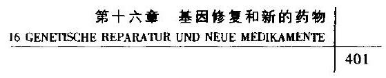
在蛋白质的阴影里
不过核酸在遗传机制中的关键性作用依然不为人们所知。没有太大的刺激让人用全副精力去关注它。整整四分之三个世纪之久，核酸一直可以说是因蛋白质而黯然失色，大多数科学家认为蛋白质有趣得多。
米谢尔的核素依然是一种＂Cinderella 化合物＂，一种如一位美国化学家称呼的＂灰姑娘物质＂。核酸构成染色体的化学基本框架，被引用得很多的无非就是 DNA 的分子而已，这种认识还要在遥远的将来才会有。
英国细菌学家佛瑞德•格里菲思引起轰动的实验，第一次导致一个 DNA 有简直是神奇功能的概念。那是一些使格里菲思得以证明遗传性能可替换，可由一个生物传给另一个的细菌。这一转换原则的发现是遗传学史上的一个里程碑。
进一步的发现随后就一步一步地揭示出这种遗传物质不是别的，多半正是米谢尔的核酸；它是各世代间的化学链接，它含有存放在细胞中的成长的生物规律密码。
作出一个决定性贡献的是美国化学家奥斯瓦德•T．埃弗里。他大力从事免疫力研究并领会了格里菲思的试验。埃弗里起先也是持怀疑态度，然而他自己的实验很快便得到一种证实，它们甚至还提供了更为深远得多的认识。
埃弗里用了两种不同的肺炎球菌菌落，其中的一个菌落有生成囊的能力，而另一个则已经失去了这种能力。埃弗里领导的研究小组从配备了囊的细菌中分离出一种物质，紧接着他就在这种物质中培育无囊细菌。
当肺炎球菌繁殖和分裂时，在其后代中又有了无囊型细菌。别的细菌突然又有了囊并继续遗传这种性能。一个对嚢生成负有
责任的遗传因子从一个细菌种传给了另一个。
埃弗里和他的合作者们克服了重重困难提纯并晶化了这种物质。即使在结晶后，这种物质仍有遗传活性。
埃弗里和他的合作者们克服了重重困难提纯并晶化了这种物质。即使在结晶后，这种物质仍有遗传活性。
尼尔斯•卡伊•耶尔讷，1984 年诺贝尔奖获得者，对此说道：＂埃弗里明白无误地证明了，DNA 对遗传性能的传递负有责任……但是没有人相信这一点。＂
当埃弗里1944年获得他的发现时，研究人员们都目不转睛地盯着蛋白质，盯着蛋白质体呢：它们似乎比 DNA 及其四种简单的组成部分更有可能是遗传物质。
初步分析遗传物质
埃弗里的进一步研究证明，这种遗传因子确实是 DNA，它们是染色体中的关键物质。而从前人们却猜想，细胞中的自我繁殖和生物化学相互作用的控制机制在米谢尔同样于染色体中发现的蛋白质中。
渐渐地才有越来越多的迹象表明，DNA 理所当然地有这种影响最大的功能。于是生物化学家们就开始去查明生命的这些分子的成分，并最终査明它们精确的组成部分。
但是这些分子有怎样的空间结构，1952年以前人们一直还不知道。这一年，伦敦的一位物理学家莫里斯•威尔金斯领导下的小组用 X 射线发现了 DNA 的结构。通过射线获得的衍射图像显示出分子的一种规则的，三维的结构。所有 DNA 分子的基本结构是一样的。据此，各分子间的区别必然是由于在这个普遍适用的结构内部各结构成分排列不同而产生。
使人们后来能够勾画 DNA 模型的一个重要前提由生物化学家埃尔温•沙加夫提供。沙加夫，1905年出生手旧奥地利的切尔诺维茨，一度曾在柏林工作过。希特勒上台后他先去法国，后来去了美
国。在哥伦比亚大学，他检査了 DNA 的四种氮碱，得出了一个按他的名字命名的著名规则：腺嘌呤单位数在分子中总是相当于胸腺嘧啶的单位数，鸟嘌呤的单位数相当于胞嘧啶的单位数。这就为査明 DNA 分子的结构创造了一个先决条件。
在不久的将来，齐全的 DNA 分子也将被揭示出来，遗传学家和生物化学家们对此坚信不疑。大多数人都看好利努斯•鲍林。鲍林，1901年出生于波特兰（俄勒冈州）一个卫生用品商店店主家里，被认为是美国最有才智的化学家。青少年时代就着迷于化学的鲍林，年纪轻轻就已经成为蛋白质及其结构这个领域里的一个权威。他是说出这一猜测的第一批人中的一个：蛋白质可能以一种双螺旋的（一种耳轮的）形式排列。鲍林因此就已经很接近 DNA 的模型了。
＂一个发疯似的行动＂
不过对于鲍林来说，40 年代末有许多别的吸引人的项目。他研究各种血液病和对此负有责任的有缺损的遗传单位的结构。在这方面他创造了＂病分子＂这个词儿。
不是鲍林，而是两个完全不著名的人获得了取得第一个 DNA模型比赛的胜利。获胜现场是英国的剑桥——当时生物化学的中心和未来的分子生物学的诞生地。这个课题组与众不同：弗朗西斯•克里克， 38 岁，一位物理学家，改行搞了生物学，但连博士学位还没获得；吉姆•迪维•沃森， 23 岁，出生于芝加哥，在上大学期间曾加人著名的＂噬菌体小组＂。这个小组由马克斯•代尔布吕克——一位在德国出生的化学家——和萨尔瓦多•卢里亚领导。他们的研究对象是噬菌体，那些侵袭细菌的病毒。代尔布吕克一卢里亚小组希望从这些细菌吞噬体上了解到遗传过程的情况。卢里亚是沃森的博士生导师并在沃森获得博士学位后设法让他的这位弟子
能在欧洲从事学术活动。
不过令为他提供奖学金的美国当局感到不快的是，沃森没有在规定好的轨道内使用这段时间。他自称，他相当懒散地度过了几个月的时光。后来他终于决定着手做点重要的事：＂我想知道，基因究竟是什么东西。＂为此他就必须辨认出 DNA 的分子结构。
不过令为他提供奖学金的美国当局感到不快的是，沃森没有在规定好的轨道内使用这段时间。他自称，他相当懒散地度过了几个月的时光。后来他终于决定着手做点重要的事：＂我想知道，基因究竟是什么东西。＂为此他就必须辨认出 DNA 的分子结构。
围绕着基因的结构
克里克也认为，＂分子生物学的中心问题是基因的结构＂。当他和沃森相遇时，他们立刻干了起来。
他们开始进行工作的研究所虽然著名，但他们的实验室却是简陋的。这个小组的主管者是维也纳人马克斯•佩卢茨，他献身于查明血红蛋白分子结构这一巨大任务。
他们研究 DNA 模型的工作是如何进行的，1968 年沃菻在他的《双耳轮》一书中曾对此作过报道。这本书成为一本畅销书，因为它没用任何学术套话，而是简明扼要地讲述了这一＂世纪大发现＂的历史。
很久以后，1990年，他的同事弗朗西斯•克里克也出了一本书，作者给这本书取了这个独特的名字：《一个发疯似的行动》。克里克也如实地讲述了他的故事，他简直是有意显示，他和沃森虽然知识浅薄，却还是情绪高昂地拟订起 DNA 的模型来了。
没有他们的剑桥同事莫里斯•威尔金斯和罗萨林德•弗兰克林的杰出的 X 射线衍射图，沃森和克里克也就不可能获得成功。 X射线射在分子上时受到的衍射提供了分子大概是什么样子的重要间接证据。
克里克和沃森成功绘制了一幅既大胆又有科学依据的DNA 分子模型图。简单地看来，这个图像像一把长长的，线状的，螺旋形旋转的绳梯。梯子的坚杆就是核糖基和磷酸盐基。梯阶由腺嘌
呤，鸟嘌呤，胞嘧啶和胸腺嘧啶这四种碱组成，而且以这样的方式组成：每个梯阶由一对碱组成。
重要的是，总是只有胞嘧啶和鸟嘌呤或者腺嘌呤和胸腺嘧啶能够联结成对。也就是说，只可能有 CG，GC，AT 和 TA 组合。一对这样的碱用其尾部犹如挂在＂糖磷酸盐＂上。每两个碱构成一个梯阶。它们由氢键合固住。
几十亿对碱
一个 DNA 分子的结构也常常被比作一道螺旋楼梯。每一个梯阶就由一对碱构成。在人的全部核酸中，在染色体中，安置了 30 多亿对这种碱。
人们渐渐认识到 DNA 是如何加倍的——细胞分裂和传递遗传信息的一个必要的先决条件。这个过程出奇的简单。DNA 分子的螺旋线向上旋转，两条线段像一条拉链那样互相分开。每一条新的线段只有它的由糖和磷酸盐组成的＂脊柱＂的半拉，并且只有原来那对碱的一半，另外那一半留在原始线段里。
然而由于造化作了这样的安排，它让腺嘌呤总是和胸腺嘧啶，鸟嘌呤总是和胞嘧啶结合，所以各单条线段便从现有的细胞库存中捞出短缺的，补充的碱，从而又得到充实。腺嘌呤招来胸腺嘧啶，鸟嘌呤和胞嘧啶组成对，这样就产生了两条 DNA 螺旋线（耳轮），其中的每一条又都拥有一条旧的和一条新的线段。DNA 的这种复制当然由酶控制。
存在于每一个单个细胞中的 DNA 线段排列在一起约有一米，而人体全部细胞的 DNA 分子则会有一条约 160 亿公里长的信息带。
喜欢玩弄数字技巧的遗传学家们已经计算出，储存在这条带子上的生物化学指令犹如一条录音磁带，这条录音磁带需放上 240
万年才会完全放完。
＂技术人员＂，蒂宾根分子生物学家盖哈德•施拉姆这样说，＂马惯于用录音磁带或计算机储存信息的技术人员，对大量重要信息储存在自然界中这么小的空间中留有深刻印象。很容易就可以计算出，全体现时活着的人的建筑图纸可以安置在一种比一枚顶针还小的核酸中。＂
＂技术人员＂，蒂宾根分子生物学家盖哈德•施拉姆这样说，＂马惯于用录音磁带或计算机储存信息的技术人员，对大量重要信息储存在自然界中这么小的空间中留有深刻印象。很容易就可以计算出，全体现时活着的人的建筑图纸可以安置在一种比一枚顶针还小的核酸中。＂
DNA 的起源
＂协调得极好的建筑图纸是如何进入核酸的。它们肯定并非来自一种人的精神。相反，不妨可以认为，人及其思维能力是按存在于分子中的指令产生的。＂施拉姆的问题已经涉及形而上学的范畴。由于所有生物都从初级阶段发展而来，所以施拉姆猜想，核酸必定也是在地球发展史中形成的。
美国科学家在 50 年代用生物化学的方法制造了核酸部分。美国生物化学家和后来的诺贝尔奖获得者阿图尔•科恩贝格在 1956年制造了第一条人造 DNA 链。他利用了某些聚合酶。必须有小量 DNA 做起跑发令员。
一年前，科恩贝格的同事塞维洛•奥乔亚———位西班牙裔美国人——就已经借助一种从细菌中获得的酶造成了一条核糖核酸单位短链。他因这项工作同样获得了诺贝尔奖。
由奥乔亚合成的核糖核酸——简称 RNA——是 DNA 的一个化学近亲，它的糖多了一个氧原子。RNA 不含胸腺嘧啶，而是含氮碱尿嘧啶。RNA 曾是俄罗斯／美国生物化学家弗布斯•莱维汭的特别研究项目，他在他那个时代对核酸的热情是在海德堡的阿尔布莱希特•科塞尔的身边工作时产生的。他在 1909 年就已经发现，几种核酸不含脱氧核糖只含简单的核糖。
RNA 借助酶通常形成为一种印模子，在某种程度上做相当于
复印用蜡纸的 DNA 的一种＂底片＂。这种过程叫改写。在这一复制过程后，RNA 便从核被遣送进胞质中，它应该在那里控制蛋白质的合成。所以它也叫使者 RNA，英语——生物学家和分子生物学家们爱用的语言——叫＂Messenger－RNA＂。
密码被破译
这种 Messenger－RNA，简称 mRNA，在细胞质中流动至核糖。这是细胞的小＂蛋白质工厂＂。它们按照 RNA 的密码信息，从其单个组成部分氨基酸中制造蛋白质。为此目的而组成的另一种 RNA——转让 RNA，简称 tRNA。这种 tRNA＂读＂出密码或三联密码，分别构成一种氨基酸的遗传信息的三种碱。然后 tRNA 就设法使正确的氨基酸在核糖＂流水线＂上接合成蛋白质。
遗传密码表明某种三联密码分别＂主管＂哪种氨基酸，它自 60年代末起就已为人们所知道。譬如三联密码鸟嘌呤（G），再一次鸟嘌呤
遗传密码是＂蜕化＂的，这就是说，有时某一种氨基酸有好几种不同的密码。譬如濒氨酸和丙氨酸就有四种不同的密码。氨基酸亮氨酸甚至用六种不同的三联密码书写密码。这就增加了从某种氨基酸反回去推断出三联密码的难度。＂标点符号＂也被各个三联密码译成密码。譬如腺嘌呤，胸腺嘧啶，鸟嘌呤这个顺序就意味着制造一种蛋白质的＂起跑＂。某些密码则表明氨基酸链的末端。
重要的是：遗传密码几乎无所不包。它既适用于人，也适用于动物，植物，细菌或病毒———条几乎是万物共有的带子。
一个信条倒場
长期以来分子生物学家们一直认为，DNA 不断＂按它的样子＂塑造 RNA，而一个相反的过程，根据 RNA 塑造 DNA，似乎是不可能的。
后来美国研究人员霍华德•泰明和戴维•巴尔的摩发现，这一著名的＂分子生物学主要信条＂是错误的，或者至少需要修正。某些病毒借助某种酶能从 RNA 中制造出 DNA 来。所以做成这件事的酶就叫＂Reverse Transkriptase＂，即＂反转录酶＂。
没有按 DNA 或 RNA 的指令化合成的蛋白质，就既不可能存在于动物的机体中，也不可能存在于人的机体中。
一个基因———个蛋白质
按照今天的认识，一个基因是一个 DNA 片段，它能包含几万对碱。正如 70 年代末研究结果所表明的那样，用密码书写蛋白质的部分，当然是在较高级的机体上，不是贯穿的，而它们是以拼接的形态，存在于被人们称之为＂外显子＂的片段中。在这之间有长段的＂内含子＂，它们含有别的信息。所以人们把内含子也说成是拼制的基因或一个＂基因拼嵌图案＂。
现在人们对内含子还不太了解。造化为什么在进化的过程中创造了它们？某些分子生物学家倾向于轻葴地把它们当作＂Non－ sense－Parts＂（无意义的部分）掏置一旁。其他人则比较谨慎。他们认为，也许内含子确实有一种意义，只不过这种意义迄今还没被认识而已。
跟人的拼嵌图案基因不一样，细菌染色体组不含有内含子，它只由外显子组成。如果人的部分基因被放人细菌中，内含子就必
须先被割掉，外显子被连接在一起。
病毒，作为最简单的生命形态，有时只有不多几个，多则也只有 200 个基因。不过凭着这样的数目它们就足以酿成灾祸，人们只需想一想艾滋病。另一方面，某些病毒也可以为遗传工程学专家服务。作为矢量，作为输送装置，它仍可以用来把改变了的人的基因带领进细胞中，它们在那里取代有缺损的基因。
病毒，作为最简单的生命形态，有时只有不多几个，多则也只有 200 个基因。不过凭着这样的数目它们就足以酿成灾祸，人们只需想一想艾滋病。另一方面，某些病毒也可以为遗传工程学专家服务。作为矢量，作为输送装置，它仍可以用来把改变了的人的基因带领进细胞中，它们在那里取代有缺损的基因。
在每一次细胞分裂时，贮存的全部基因就增多， 10 万个基因和 30 亿对碱被复制。这一艰巨任务由 DNA 来完成。不过偶或——譬如 100 万例中有一例——也会发生错误，在密码中也出＂印刷错误＂。这通常没有什么影响。不过有时却可能产生严重的后果。这样一种突变通常只损害一个基因的一部分。但由于我们总是有两个基因——一个母亲的一个父亲的——在同样双倍存在的染色体中，所以另一个基因就不需要有这样一种遗传变化。同样染色体位置上的这两个基因被称作＂等位基因＂。
突变当然不仅在复制遗传物质时产生，而且还会通过化学的影响或射线产生。只有当它们击中肧细胞时，它们才会在遗传特征中被传递。普通体细胞中的突变不遗传。
一种细菌的肖像
在 70 年代，分子遗传学家们不断报告新的认识，分子生物学理论上的成果在它们的帮助下得到了实际应用。不管是用遗传工程制造药物还是治疗遗传疾病，都显示出了巨大的进步。
随着时间的推移，＂埃舍里希大肠杆菌＂成为 DNA 专家们最爱从事的研究项目。它以德国研究人员埃舍里希的名字命名，是我们大肠中一个和善的＂居民＂，拉丁语叫 Colon（结肠），所以才有 Col－ ibakterien（大肠杆菌）这个种类名称。
某些大肠杆菌把它们的一部分遗传装备贮存在＂环形形体＂
（所谓的胞质素）里了。它们在细胞分裂时其遗传性能被精确传递，譬如在这些胞质素里也可能存在使一个细菌对某些抗菌素有抵抗力的基因。
（所谓的胞质素）里了。它们在细胞分裂时其遗传性能被精确传递，譬如在这些胞质素里也可能存在使一个细菌对某些抗菌素有抵抗力的基因。
遗传工程的工具
1971年人们发现了紧缩酶。它们充当分子＂剪刀＂——剪开某些部位上的细菌胞质素。
紧缩酶的发现不是有目的的行为。包括年轻的瑞士人维尔纳•阿尔贝尔在内的美国课题组原本想弄明白：细菌如何抵抗病毒。他们发现，细菌简直是使用了一种绝招，避开病毒的异样 DNA的＂奴役＂。它们生产被证明是病毒死敌的酶。这些酶把病毒DNA剪成碎块从而使它们失效。被剪碎的病毒 DNA 随即被别的酶分解。为了保护自己的 DNA 免受这些侵略性的酶的侵犯，它用某种化学族被标出。
＂大自然为这些低级的单细胞生物建立了一种简单至极的防御系统，它原则上跟我们复杂的免疫系统有着同样的功能，即防御感染细胞异样的遗传特征。＂巴塞尔大学教授维尔纳•阿尔贝尔说， ＂所以我们很快就认识到，这样的紧缩酶可以充当遗传工程的工具。＂
＂大自然为这些低级的单细胞生物建立了一种简单至极的防御系统，它原则上跟我们复杂的免疫系统有着同样的功能，即防御感染细胞异样的遗传特征。＂巴塞尔大学教授维尔纳•阿尔贝尔说， ＂所以我们很快就认识到，这样的紧缩酶可以充当遗传工程的工具。＂
人们必须添上一句：它们是一种令人神往的工具。现在有可能将 DNA 剪成一个个碎块并将各个 DNA 所含有的一部分遗传信息破译出来。
除了紧缩酶以外，人们还找到了叫＂连接酶＂的，能够将单个的基因重新连接（即＂黏合＂）的酶。
当确定了单个的紧缩酶在哪里分裂 DNA 链后，研究人员们开始切开质粒的 DNA 环。这时就能给质粒加上异样的 DNA 片段。然后下一步就是增加以这样的方式复合的质粒中的遗传类型。
两个课题组———个在斯坦福大学，另一个在旧金山大学——作了这个领域里的关键性工作。斯坦福的斯坦利•科恩和常•安妮以及旧金山的赫伯特•博耶尔和罗伯特•黑林 1973 年成功地在 E．大肠杆菌中嵌人一个新的基因。这个新基因来自沙门氏菌并使这些病原体对抗生素链霉素不敏感。这个转入的基因如今也使 E．大肠杆菌具有同样的，对这种生物活性物质的抵抗力。
细菌作为蛋白质制造者
这就出现了一个令人神往的前景：通过基因的新组合必定也有可能像这样给细菌编制程序，致使它们制造出每一个人或动物的蛋白质——实验室里的一件新作品。加利福尼亚成为遗传工程学专家们的＂上帝所许之地＂
另一位分子生物学家，1984年获得诺贝尔奖的瓦尔特•吉尔贝特，也在第一批生物技术企业中的一家——生物基因公司——从业。不过吉尔贝特向工业界的转行却没获得成功，最后他撤回到他原来所在的哈佛大学的实验室里。
基因技术公司不久就以一项引起轰动的成果崭露头角： 1978年这家年轻的企业制成了对一部分糖尿病人生命做关的胰岛素。这在大肠杆菌的帮助下得以实现。制造胰岛素的遗传信息被引进大肠杆菌的质粒中。

图5 用基因技术制造一个人体蛋白质（如胰岛素）
印第安纳波利斯的美国礼来制药公司在同一年就向基因技术公司购得用这一方法制造胰岛素的许可证。
欧洲公司试图追上
不久就显出，美国人已经在这个引起轰动的领域把欧洲的工业大大扡在了后面。尤其是在联邦德国，人们不得不承认，他们处在研究特别快车的一个极其靠后的隔间里——这也是希特勒时代的一个恶果，因为一大部分最重要的新一代生物化学家和教师是犹太血统，并因此被驱逐出了德国。
在联邦德国，人们理智地不想单独凭自己的力量扭转这种落后局面，因为这样做会花费许多年。许多德国的大公司没有这样做，而是与美国的大学和基因技术公司联手。
赫希斯特公司就这样和波士顿麻州总医院的霍华德•戈德曼签订了一个在遗传工程领域合作和交流经验的长期协议。戈德曼，从前在加利福尼亚，曾是复制胰岛素基因的第一批人中的一个。赫希斯特作为重要的胰岛素生产者，自然对用生物工艺学方法制造这种蛋白质特别感兴趣。
马尔堡的贝林公司——赫希斯特公司的一家子公司，和西雅图的美国 Immunex 公司达成一项合作协议，目标是制造红细胞生成素，一种活化红血球生成的激素。
在黑森州的＂绿色障碍＂
但是不久赫希斯特的遗传工程计划便遇到绿党和企业附近的地方小团体的激烈反对。赫希斯特因此陷人困境。一套价值7000万马克的制造胰岛素的试验设备已经安装好，这时绿党的司法阻止行动开始运行。延迟了又延迟，在赫希斯特，工作人员在向感兴趣的记者们介绍这个䓸新的企业时，用了＂我们的遗传工程博物馆＂这句苦泚的评语。当随后黑森州高级行政法院在一份引起轰
动和强烈反对意见的判决书中继续阻止生产开始运行时，合作项目的处境几乎完全令人绝望了。
1990年7月1日新的遗传工程法的通过才为赫希斯特的胰岛素和联邦德国别的遗传工程生产活动铺平了道路。这项法令规定批准遗传工程设备有四个不同的安全阶段，生产者按不同的潜在危害性必须满足法令提出的不同要求。行政专区主席批准了赫希斯特的试验设备运行，因为该设备符合所规定的全部条件。
赫希斯特人随即着手干了起来。人们打算1992年启动试验运行，计划同年向行政专区主席申请生产批准书。不过随后还得有联邦卫生局允许用遗传工程制造胰岛素的批准书。赫希斯特是否能弥补已失去的时间，这还是个大问题。子公司贝林公司和红细胞生成素的生产也遇到了同样的情况。
模范区里更幸运
伯林格•英格尔海姆的子公司托梅公司，它的总部设在里斯河边静静的比伯拉赫，它的生物工艺学产品比较幸运。巴登－符腾堡州这个地方至少在展开生产方面比起莱茵－美因地区有明显的优越性。由于和基因技术公司以及比利时遗传工程学专家德西雷•科伦合作，托梅公司至少能够有一种很重要的药剂在德国居领先地位。80年代中，在比伯拉赫产生了一种应用生物学药剂。自 1986年以来那里就一直在制造组织血纤维蛋白溶酶原活化剂 （TPA）。除了链激酶和尿酶以外，TPA 还是一种治疗严重血液凝固障碍和心肌梗塞的救命药物。
瑞士霍夫曼－拉•洛赫制药集团公司不想与遗传工程时代失之交臂。巴塞尔人先是和基因技术公司建立了密切联系，然后他们在1990年3月提出了一个特别让人意想不到的建议。他们在美国已经寻找了很久，也就是说一直在寻找一个令人感兴趣的制药
企业收购对象。他们没有接受主要以生产常规药物为目标的施泰林•特洛格集团——他们被禁止这样做——而是购买了＂高科技基因＂企业基因技术公司的
为了这项将继续增资的人股投资，洛赫支付了整整 21 亿美元。接纳并非以敌对的方式进行，而是基因技术公司的领导层主动谋求这家资金雄厚的瑞士公司入股。基因技术公司的领导曾深刻地认识到，缺乏资金，科学团队的高度创造力长此下去将难以为继。为了在世界市场上站稳脚跟，一个广泛的经销组织是必不可少的。但是要做到这一点，这家1990年销售额达 4 亿美元，没赚到利润只获得一种相应的股市行情的企业的力量就远远不够用了。不过洛赫必须注意使企业依然保持革新的力量。1990年11月，《华尔街日报》至少看到了一种令人忧虑的＂Brain Drift＂，一种科学家向别的企业的外流。
进军基因工程新领域要冒多大的风险，1990年夏享有盛誉的美国遗传工程企业赛特斯公司对此深有体会。因为当美国食品和药品管理局在批准一种新的药剂的同时要求附加提供研究资料时，赛特斯公司便陷入一种艰难的境地。人们几乎把全部力量集中使用在一个大有希望的产品上了一一白细胞介素－2——它在防治癌症以及别的疾病方面将起重要作用。基于不利的消息，美国股票交易所该公司行情一时间暴跌。
不过一般来说，美国的生物工艺学企业在最近几年里却已经大大加强了它们相对日本人和联邦德国的领先地位。100多种以生物工艺学为基础的药物如今正在研制和临床测试中，有的甚至已经在向食品和药品管理局申请颁发使用许可。1990年底，在美国市场上有 11 种用遗传工程生产的药物和疫苗被许可使用。在未来的药剂中主要有治癌的新药。
用新基因治疗
但是制造在自然界中存在太少或根本不存在的蛋白质，这只是生物工艺学在未来可望有的成功的一部分。遗传工程也将使得提前和准确诊断并最终治愈疾病成为可能。
按各方面的估计，人们今天知道大约有 400 种疾病可归因于一个有缺损的基因。此外还有几千种疾病的病因是存在好几个有缺损的基因。从前人们只能根据外表的形态和在同一家庭中的频繁出现来猜测遗传起源，后来可以在染色体上看出变化。今天医生在诊治越来越多的由遗传条件决定的疾病时，简直可以说能完全准确地发现对损伤负有责任的基因中的部位。
英国医生阿希巴德•加洛德世纪之交正在研究由遗传缺陷产生的代谢疾病。他的专门领域是一种名叫＂尿黑酸尿＂的疾病。这种病容易诊断。加洛德从尿中诊断这种病，病人的尿一接触空气就变黑。
美国医生乔治•亨廷顿也是很早就发现了一种遗传性疾病。 1871年他描述了患严重运动机能障碍和肌肉抽搐的人。类似的疾病在这之前就已经为人们所知，并用希腊名字 chorea（舞蹈）命名。在中世纪整批整批的居民群体受这样一种＂舞蹈狂＂的侵袭，人们也常常把这种＂舞蹈狂＂叫作＂Veitstanz＂（舞蹈病）。
老人舞蹈病
亨廷顿所描述的这种病通常在 30 岁至 40 岁之间才出现，有时会更晚，所以它也被称作＂老人舞蹈病＂。最初的症状很不明显，所以它们几乎不会被认为是一种病态。这种疾病不断加重并且和精神上的衰退联系在一起。母庸置疑，这种疾病主要由遗传而得。
对此负有责任的基因还没查明。
与此相反，研究人员们清楚地知道对镰刀细胞贫血———种在北非和东北美有色人种中发生的疾病负有责任的基因。那里每 65 人中就有一人患此病。如果在机体中生成蛋白质血红蛋白——红血球的染料，这种疾病就会发生。血红蛋白的制造由遗传因素编制程序。它由两个氨基酸链组成。得了镰刀细胞贫血时，在其中的一个
与此相反，研究人员们清楚地知道对镰刀细胞贫血———种在北非和东北美有色人种中发生的疾病负有责任的基因。那里每 65 人中就有一人患此病。如果在机体中生成蛋白质血红蛋白——红血球的染料，这种疾病就会发生。血红蛋白的制造由遗传因素编制程序。它由两个氨基酸链组成。得了镰刀细胞贫血时，在其中的一个
一个基因足矣
经查明，许多其他疾病也可能缘于某个基因。譬如血友病，也叫 Hämophilie，就是这样的情况。这种疾病可以归因于———如人们早就知道的那样——男性后裔 X 染色体中的一个基因缺陷。众所周知，在每一个人的 46 个染色体中，有两个性染色体，女人是两个 X 染色体，男人是一个 X 染色体和一个 Y 染色体。
血友病涉及一个 X 染色体。由于妇女有两个这样的染色体，所以在出现这样一个基因缺陷时第二个 X 染色体上的那个基因便承担起另一个基因的任务。而男性 X 染色体上的缺陷却无法用 Y染色体来补偿。只有在极为罕见的情况下这种病才会在妇女身上发生，她们只起到所谓的导体的作用，这就是说，她们把有缺损的 X染色体传导给她们的后代。
这种遗传的最著名的病例出现在英国王室。这种＂英国王室病＂由英国女王维多利亚经由她的女儿们——她们不得这病——传给她的几个男性后裔，譬如传给她的重外孙，俄罗斯皇位继承人亚历克赛伊——沙皇尼古拉二世和他的妻子，前黑森－达姆施塔特德国公主亚历山德拉的儿子。
由于当时没有治这种血友病的有效药物，由于这位皇位继承人一受到什么伤害，哪怕只是稍稍划破一点皮，就有大量出血而死的危险，沙皇皇室就把前修道士拉斯普廷视为这位继承人的唯一救星。拉斯普廷能够通过对这位皇位继承人施加催眠和心灵上的影响止住出血。他的影响力——尤其是对女皇——因此而惊人地增长。他越来越插手政务，大肆结党营私并主张俄罗斯作为交战一方退出第一次世界大战，最后他因此而被官廷奸党杀害。
负责凝固血液而为血友病人所短缺的血液中的遗传因子 VIII几十年来一直从献血者的血液中获得。这是一种很艰难的方法，有时会发生污染。在这种献血过程中有时还会传染病毒，尤其是在那个时代，艾滋病病毒还不为人们所知。几千个血友病人就这样感染上了 HIV。由于这种危险现在已排除，将来用遗传工程生产的不受任何污染的遗传因子 VIII 将被大量制造。
拜耳在若干年前就已经着手进行用遗传工程生产这种遗传因子 VIII 的工作，马尔堡的贝林公司也这样做了。它们不仅专注于遗传因子 VIII，而且也专注于遗传因子 IX，后者的短缺同样会产生某种形态的血友病。
病因正在研究中的其他遗传性疾病有：
泰－萨氏症。这是一种罕见的病。它在人的婴儿时期以严重的代谢障碍开始，它们会损伤大脑并导致失明。这种疾病隐性遗传，这就是说，只涉及一个基因是不够的，只有当另一个基因，所谓的第二个等位基因，在同样的基因位点也受到损害时，才会发生疾病。因此它就不像已提及的那样是一种两个基因不同的杂合遗
泰－萨氏症。这是一种罕见的病。它在人的婴儿时期以严重的代谢障碍开始，它们会损伤大脑并导致失明。这种疾病隐性遗传，这就是说，只涉及一个基因是不够的，只有当另一个基因，所谓的第二个等位基因，在同样的基因位点也受到损害时，才会发生疾病。因此它就不像已提及的那样是一种两个基因不同的杂合遗
传，而是一种两个基因相同的纯合子遗传。
莱－尼氏综合征。这种病缘于一个基因的缺损，正常情况下这个基因控制尿酸的分解。由于这个基因错误，在青年时期罹患此病者的肾脏和别的器官中，特别是在大脑中结成尿酸晶体。这就使得身体动作的协调受到阻碍，就会出现低能并产生一种不可阻挡的咬自己和把自己弄残废的欲望。只有男孩才会得这种尿酸过剩（高尿酸血症），因为对此负责的基因在 X 染色体上。这种病在女性身上不表现出来，因为她们有两个 X 染色体，像血友病那样。
莱－尼氏综合征。这种病缘于一个基因的缺损，正常情况下这个基因控制尿酸的分解。由于这个基因错误，在青年时期罹患此病者的肾脏和别的器官中，特别是在大脑中结成尿酸晶体。这就使得身体动作的协调受到阻碍，就会出现低能并产生一种不可阻挡的咬自己和把自己弄残废的欲望。只有男孩才会得这种尿酸过剩（高尿酸血症），因为对此负责的基因在 X 染色体上。这种病在女性身上不表现出来，因为她们有两个 X 染色体，像血友病那样。
苯酮尿精神薄弱。这种代谢病也由于短缺一个基因或一个缺损基因而产生。所以机体必须的酶便不能生成，这种酶使肝脏中的尿酸苯基丙氨酸转换成甲状腺素。这就使得新生儿大脑中的苯基丙氨酸浓度急剧上升，有时升至正常值的三倍。后果就是脑损伤和低能。如果这个遗传缺损被及时发现，那么孩子们就能通过少苯基的饮食得到拯救。不过这种饮食必须一直吃到 12 岁。
在苯基丙氨酸／甲状腺素代谢中还可能有另一种缺损。若是某一种酶没生成，那么甲状腺素就不能转换成色素染料黑色素，就会产生一种所谓的白皮现象——白化病。患这种病的人缺皮肤和头发的深色色素染料。每 1.5 万人中大约有一人患白化病。
CF 基因找到了
Cystische Fibrose 在德国也叫先天性黏液秱厚症。它是一种最常见的隐性遗传病，母亲和父亲的基因都带有同样的纯合子信息。
大约 2500 个新生儿中有一个患这种结缔组织过度增生症。得了先天性黏液稠厚症，腺就生出一种稠厚的黏液，堵塞支气管并损伤肺，易被严重感染的可能性也增高了。肺中还会生成囊肿，这常常是早亡的主要原因。
谁得了这种病，谁就必须作好活不过 30 岁的思想准备。然而许多迹象表明，不久将可制止这种残忍疾病的蔓延。
研究人员们用全副精力搜查对先天性黏液秱厚症负有责任的染色体和基因达几十年之久。1989 年出现了一个突破。加拿大和美国的研究人员们共同协作，在 7 号染色体上找到了 CF 基因。改正错误的遗传程序的治疗试验不久也将在美国开始进行，至少已经在试管里创造了必要的先决条件。
基因探子使诊断成为可能
将来，所谓的基因探子在诊断由遗传条件决定的疾病方面将起重要作用。通过比较来自人体细胞正常的和变化了的 DNA，可以清楚地推断出遗传性的疾病。目前这些基因探子只在诊断像已提及的亨廷顿舞蹈病或血友病时有明显的效果。但是不久之后，就有可能了解涉及更多病人的别的疾病的素质，如心脏和循环障碍，糖尿病或癌症。不过它们肯定不是由一个缺损基因，而是由好几个缺损基因而且还由众多环境因素而引起。
基因诊断的可能性两年前——自可以以几近任意的量增多 DNA 部分以来——才迅猛发展起来。关键方法就是聚合链锁反应，按英语概念＂Polymerase－Chain－Reaction＂简称为 PCR。它以一种极其简单的，在几乎每一个遗传工程实验室里都能使用的方法为基础。借助于遇热稳定不变的酶，DNA 的双线段被拆开并被复制。
即使在联邦德国，关于遗传工程的讨论似乎还远没有结束， 1990 年基因治疗时代在美国已经不容逆转地开始了。譬如一个 4岁的女孩，她患一种严重的基因缺损症——她的细胞不能制造某种对于免疫抵抗必不可少的酶——们用一个可以取代缺损的 DNA 片段的基因对她进行了治疗。手术由贝塞斯达国家健康研究所的肯尼思•W．卡尔弗施行。他受到了各监督机构的特别批准。
此后不久，在巴尔的摩的约翰•霍普金斯肿瘤中心，一个小组同样也用基因对结肠癌病人进行了治疗。治疗用的基因将取代正常情况下主管压迫肿瘤细胞，但有时受到损坏并忽然失灵的基因。这个小组在贝尔特•福格施泰因教授的领导下研究这种基因传播已达 6 年之久。据福格施泰因说，他们所使用的＂p53 基因＂对治疗别的癌症也有重要作用。
在这些最初的治疗措施之后，肯定会有许多别的措施随之而来。肯定在许多年内还会有许多次挫折。然而总有一天，基因治疗将几乎不会比今天的一个小小的外科手术更让我们感到激动不安。吉拉尔德•麦克加里蒂教授——主管遗传信息缺损的 NIH 咨询委员会主席，在对第一个基因治疗实验进行表决时这样说道： ＂今天，我们把基因治疗引进了医学宝库，在疫苗接种，抗生素和射线治疗之外。医学已经为此等候了几千年。＂
感 谢
我想在这里向所有（不管是通过激励，建议还是审阅）帮助过我筹划和出版这本书的人表示感谢：诺贝特•布洛克博士，教授，比勒费尔德；迈因哈德•克拉森博士，教授，慕尼黑；化学学士，博士瓦尔特•迪尔克海姆，法兰克福；克劳斯•艾希曼博士，教授，弗赖堡；医学，兽医学博士布克哈德•恩德斯，马尔堡；迪特马尔•盖列克博士，教授，慕尼黑；化学学士埃卡特•格温纳，巴塞尔；哈拉尔德•祖尔•豪森博士，教授，海德堡；黑尔加•黑讷曼，法兰克福；彼得•希尔加德博士，法兰克福；霍斯特•库尔曼博士，教授，慕尼黑；莱因哈德•库尔斯博士，教授，朗根；鲁道夫•利森费尔德博士，杜塞尔多夫；教育学博士维尔纳•里希特，慕尼黑；彼得•施万特博士，教授，慕尼黑；盖尔哈德•施维克博士，教授，马尔堡；教育学博士哈拉尔德•赛德拉赛克，马尔堡；教育学博士莱纳尔•察尔腾，法兰克福。
我同样也要感谢一系列公司和研究所，它们给我提供了重要的材料，没有这些材料这本书是不可能写成的：阿姆根股份有限公司，慕尼黑；阿斯塔•梅迪卡公司，法兰克福；阿斯特拉化学股份有限公司，韦德尔；拜耳公司，莱沃库森；德国巴克斯脱股份有限公司，慕尼黑；贝林公司，马尔堡；伯林格尔•曼海姆股份有限公司，曼海姆；伯林格•英格尔海姆股份有限公司，英格尔海姆；百时美施贵
宝公司，慕尼黑；汽巴－嘉基公司，维尔／巴登；德国癌症研究中心，海德堡；德国威康股份有限公司，布格韦德尔；格拉苏股份有限公司，汉堡；格代克公司，柏林；格吕内塔尔股份有限公司，施托尔贝格；赫希斯特公司，法兰克福；霍夫曼－拉•洛赫公司，巴塞尔；ICI制药公司，海德堡；克诺尔股份有限公司，路德维希港；莱德勒公司，沃尔夫拉茨豪森；礼来德国股份有限公司，巴特洪堡；默沙东公司，慕尼黑；费策尔股份有限公司，卡尔斯鲁厄；勒内－普伦克－洛尔公司，科隆；萨尔氮－法塔尔股份有限公司，希夫韦勒；桑多茨公司，纽伦堡；史克必成公司，慕尼黑；卡尔•托梅博士股份有限公司，比伯拉赫。
最后还要感谢赫尔穆特•R．费勒和塞巴斯蒂安•福格尔博士，感谢他们为此书所作的细心周到的编辑工作。
译名对照表
Aaronson，Stuart A．斯图亚特•A．艾伦森
Abraham，Edward P．爱德华•亚伯拉帘
Addison，Thomas 托马斯•阿狄森
Alexander 》der GroBe《 亚历山大＂大帝＂
Alexander，Steward F．斯图尔特•亚历山大
Alquist，Raymond 雷冢德•艾奎斯特
Alt，Konrad 康拉德－阿尔特
Althoff，Friedrich 弗里德里希•阿尔特霍夫
Altmann，Richard 理夏德•阿尔特曼
Alzheimer，Alois 阿洛伊斯•阿尔茨海默
Ambros，Otto 奥托•安布罗斯
Ames，Bruce 布鲁斯•阿姆斯
Arber，Werner 维尔纳•阿尔贝尔
Aristoteles 亚里士多德
Arnold，Herbert 赫伯特•阿诺尔德
Assmann，Gerd 盖尔德•阿斯曼
Astrup，Tage 塔格•阿斯楚普
Avery，Oswald T．奥斯瓦德•T．埃弗里
Baeyer，Adolf von 阿道夫•冯•贝耶尔
Baginski，Leo Maximilian 莱咸－马克西米利
安•巴金斯基
Abraham，Edward P．爱德华•亚伯拉帘
Addison，Thomas 托马斯•阿狄森
Alexander 》der GroBe《 亚历山大＂大帝＂
Alexander，Steward F．斯图尔特•亚历山大
Alquist，Raymond 雷冢德•艾奎斯特
Alt，Konrad 康拉德－阿尔特
Althoff，Friedrich 弗里德里希•阿尔特霍夫
Altmann，Richard 理夏德•阿尔特曼
Alzheimer，Alois 阿洛伊斯•阿尔茨海默
Ambros，Otto 奥托•安布罗斯
Ames，Bruce 布鲁斯•阿姆斯
Arber，Werner 维尔纳•阿尔贝尔
Aristoteles 亚里士多德
Arnold，Herbert 赫伯特•阿诺尔德
Assmann，Gerd 盖尔德•阿斯曼
Astrup，Tage 塔格•阿斯楚普
Avery，Oswald T．奥斯瓦德•T．埃弗里
Baeyer，Adolf von 阿道夫•冯•贝耶尔
Baginski，Leo Maximilian 莱咸－马克西米利
安•巴金斯基
Baker，James 詹姆斯•贝克
Baltimore，David 戴维•巴尔的摩
Bang，Olaf 奥拉夫•班
Banting，Frederic Grant 弗里德里克•格兰特－班廷
Baltimore，David 戴维•巴尔的摩
Bang，Olaf 奥拉夫•班
Banting，Frederic Grant 弗里德里克•格兰特－班廷
Barger，E．E．巴尔格尔
Barschel，Uwe 鸟韦•巴舍尔
Basedow，Carl Adolph von 卡尔•阿道夫•
冯•巴泽多
Bauer，Karl－Heinz 卡尔－海因茨•鮑尔
Baumann，E．E．包曼
Beaulieu，Etienne－Emile 艾蒂安－埃米
尔•博利厄
Behring，Emil von 埃米尔•冯•贝林
Beijerink，Willem 威廉•贝耶林克
Bergailis，Kimberly 金伯利•贝尔盖利斯
Berger，Frank 弗兰克•贝格尔
Bergmann，Gustav von 古斯塔夫•冯•贝格
Barschel，Uwe 鸟韦•巴舍尔
Basedow，Carl Adolph von 卡尔•阿道夫•
冯•巴泽多
Bauer，Karl－Heinz 卡尔－海因茨•鮑尔
Baumann，E．E．包曼
Beaulieu，Etienne－Emile 艾蒂安－埃米
尔•博利厄
Behring，Emil von 埃米尔•冯•贝林
Beijerink，Willem 威廉•贝耶林克
Bergailis，Kimberly 金伯利•贝尔盖利斯
Berger，Frank 弗兰克•贝格尔
Bergmann，Gustav von 古斯塔夫•冯•贝格
曼
Bertarelli，E．E．贝尔塔雷利
Bertaux，Pierre 皮埃尔•贝尔托
Bertaux，Pierre 皮埃尔•贝尔托
Bertheim，Alfred 阿尔弗雷德•贝特海姆 Berthold，Arnold Adolph 阿诺尔德•阿道夫•贝特霍尔德
Best，Charles 査尔斯－贝斯特
Bilharz，Theodor 特奥多尔•比尔哈茨
Binz，Karl 卡尔•宾茨
Birkmayr，walter 瓦尔特•伯克迈耶
Bismarck，Otto von 奥托•冯•俾斯麦
Bittner，John 约翰•比特纳
Black，James 詹姆斯•布拉克
Bleuler，Eugen 欧根•布洛伊勒
Bliss，Michael 米夏伊尔•布利斯
Bock，Walter 瓦尔特•博克
Bockmüh，Max 马克斯•博克米尔
Bode，Johann－Christian 约翰－克里斯蒂安•
Bilharz，Theodor 特奥多尔•比尔哈茨
Binz，Karl 卡尔•宾茨
Birkmayr，walter 瓦尔特•伯克迈耶
Bismarck，Otto von 奥托•冯•俾斯麦
Bittner，John 约翰•比特纳
Black，James 詹姆斯•布拉克
Bleuler，Eugen 欧根•布洛伊勒
Bliss，Michael 米夏伊尔•布利斯
Bock，Walter 瓦尔特•博克
Bockmüh，Max 马克斯•博克米尔
Bode，Johann－Christian 约翰－克里斯蒂安•
博德
Bordet，Jean 让•博尔代
Borel，Jean F．让－博雷尔
Borsche，Walter 瓦尔特•博尔舍
Bosch，Carl 卡尔•博施
Bossert，Friedrich 弗里德里希•博塞特
Bovet，Daniel 丹尼尔•博韦特
Boyer，Herbert 赫伯特－博耶尔
Breinl，Anton 安东•布莱恩
Breitbart，Eckart 埃卡德•布赖特巴特
Brieger，Ludwig 路德维希•布里格
Brock，Norbert 诺贝特•布洛克
Brotzu，Giuseppe 朱塞佩•布罗楚
Browr－Sequard，Eduard 爱德华•布朗－塞
夸尔德
Brunton，Thomas 托马斯•布鲁顿
Butenandt，Adolf 阿道夫•布特南特
Borel，Jean F．让－博雷尔
Borsche，Walter 瓦尔特•博尔舍
Bosch，Carl 卡尔•博施
Bossert，Friedrich 弗里德里希•博塞特
Bovet，Daniel 丹尼尔•博韦特
Boyer，Herbert 赫伯特－博耶尔
Breinl，Anton 安东•布莱恩
Breitbart，Eckart 埃卡德•布赖特巴特
Brieger，Ludwig 路德维希•布里格
Brock，Norbert 诺贝特•布洛克
Brotzu，Giuseppe 朱塞佩•布罗楚
Browr－Sequard，Eduard 爱德华•布朗－塞
夸尔德
Brunton，Thomas 托马斯•布鲁顿
Butenandt，Adolf 阿道夫•布特南特
Cade，John 约翰•卡德
Calne，Roy 罗伊•卡尔恩
Carlson，Arvid 阿维德•卡尔松
Chain，Ernest Boris 埃尔内斯特•鮑里斯•
钱恩
Chamberland，Charles 査尔斯•夏勃兰德
Chang，Annie 常•安妮
Charcot，Jean 让•沙尔科
Chargaff，Erwin 埃尔温•沙加夫
Chinchon，Condessa Anna del 孔代萨•安娜•
德尔•尚雄
Chiswell，Sarah 萨拉•奇斯韦尔
Chopin，Fréderic 弗里德里克•肖邦
Chorea Huntington 亨廷顿•科雷阿
Churchill，Winston 温斯顿•丘吉尔
Classen，Meinhard 迈因哈德－克拉森
Cohen Stanley 斯坦利•科恩
Cohn，Ferdinand 费迪南徳•科恩
Cohnheim，Julius 尤利白斯－科恩海姆
Collen，Desire 德西雷•科伦
Collier，R．John R．约翰•科利尔
Cook，James 詹姆斯•库克
Cozzens，Susan E．苏桑－E．科岑斯
Crick，Francis 弗朗西斯•克里克
Culver，Kenneth 肯尼思•卡尔弗
Cushing，Harvey W．哈维•W．库欣
Cutts，Harry 哈利•卡茨
Dale，Henry 亨利－戴尔
Darmstảdter，Ludwig 路德维希•达姆施泰特
Davaine，Casimir Joseph 卡西米尔•约瑟夫•
达维纳
Davey，Garnet 嘉奈特－戴维
Calne，Roy 罗伊•卡尔恩
Carlson，Arvid 阿维德•卡尔松
Chain，Ernest Boris 埃尔内斯特•鮑里斯•
钱恩
Chamberland，Charles 査尔斯•夏勃兰德
Chang，Annie 常•安妮
Charcot，Jean 让•沙尔科
Chargaff，Erwin 埃尔温•沙加夫
Chinchon，Condessa Anna del 孔代萨•安娜•
德尔•尚雄
Chiswell，Sarah 萨拉•奇斯韦尔
Chopin，Fréderic 弗里德里克•肖邦
Chorea Huntington 亨廷顿•科雷阿
Churchill，Winston 温斯顿•丘吉尔
Classen，Meinhard 迈因哈德－克拉森
Cohen Stanley 斯坦利•科恩
Cohn，Ferdinand 费迪南徳•科恩
Cohnheim，Julius 尤利白斯－科恩海姆
Collen，Desire 德西雷•科伦
Collier，R．John R．约翰•科利尔
Cook，James 詹姆斯•库克
Cozzens，Susan E．苏桑－E．科岑斯
Crick，Francis 弗朗西斯•克里克
Culver，Kenneth 肯尼思•卡尔弗
Cushing，Harvey W．哈维•W．库欣
Cutts，Harry 哈利•卡茨
Dale，Henry 亨利－戴尔
Darmstảdter，Ludwig 路德维希•达姆施泰特
Davaine，Casimir Joseph 卡西米尔•约瑟夫•
达维纳
Davey，Garnet 嘉奈特－戴维
Davies，Peter 彼得•戴维斯
de la Tour，caignard 卡格纳德•德•拉图尔
de Vita，Vincent 樊尚•德•维塔
Delay，Jean 让•德品
Delbrück，Max 马克斯•代尔布吕克
Dengel，Ferdinand 费迪南德•登格尔
Deniker，Pierre 皮埃尔•德尼凯
Djerassi，Carl 卡尔•吉拉西
Doisy，Edward A．爱德华•A．多伊西
Domagk，Gerhard 格哈德•多马克
Dreser，Heinrich 海因里希•德雷泽
Druckrey，Hermann 赫尔曼•德鲁克赖
Dubos，René 勒内 • 迪博斯
Duggar，Benjamin 本亚明•达格尔
Duisberg，Carl 卡尔•杜伊斯贝格
Duncan，William 威廉•邓肯
Duratrant，Graham 格拉汉姆•杜兰特兰特
Dürckheimer，Walter 瓦尔特•迪尔克海姆
Dürer，Albrecht 阿尔布雷希特－丢勒
Ebers，Georg 格奥尔格•埃贝斯
Ehrlich，Hedwig 黑德维希•埃尔利希
Ehrlich，Paul 保尔•埃尔利希
Eibl，Hans－Jörg 汉斯－耶尔格•艾布尔
Eichmann，Klaus 克劳斯•艾希曼
Eisleb，Otto 奥托•艾斯雷普
Elion，Ruth 路斯•埃利翁
Ellermann，Wilhelm 威廉•埃勒曼
Emmet，John 约翰•埃米特
Enders，Burkhard 布克哈德•恩德斯
Erhart，Gustav 古斯塔夫•艾哈特
Erhart，Hans 汉斯•艾哈特
Evans，Herbert M．赫尔伯特•M．埃文斯
de la Tour，caignard 卡格纳德•德•拉图尔
de Vita，Vincent 樊尚•德•维塔
Delay，Jean 让•德品
Delbrück，Max 马克斯•代尔布吕克
Dengel，Ferdinand 费迪南德•登格尔
Deniker，Pierre 皮埃尔•德尼凯
Djerassi，Carl 卡尔•吉拉西
Doisy，Edward A．爱德华•A．多伊西
Domagk，Gerhard 格哈德•多马克
Dreser，Heinrich 海因里希•德雷泽
Druckrey，Hermann 赫尔曼•德鲁克赖
Dubos，René 勒内 • 迪博斯
Duggar，Benjamin 本亚明•达格尔
Duisberg，Carl 卡尔•杜伊斯贝格
Duncan，William 威廉•邓肯
Duratrant，Graham 格拉汉姆•杜兰特兰特
Dürckheimer，Walter 瓦尔特•迪尔克海姆
Dürer，Albrecht 阿尔布雷希特－丢勒
Ebers，Georg 格奥尔格•埃贝斯
Ehrlich，Hedwig 黑德维希•埃尔利希
Ehrlich，Paul 保尔•埃尔利希
Eibl，Hans－Jörg 汉斯－耶尔格•艾布尔
Eichmann，Klaus 克劳斯•艾希曼
Eisleb，Otto 奥托•艾斯雷普
Elion，Ruth 路斯•埃利翁
Ellermann，Wilhelm 威廉•埃勒曼
Emmet，John 约翰•埃米特
Enders，Burkhard 布克哈德•恩德斯
Erhart，Gustav 古斯塔夫•艾哈特
Erhart，Hans 汉斯•艾哈特
Evans，Herbert M．赫尔伯特•M．埃文斯
Farber，Sidney 西德尼•法贝尔
Fieve，Roland R．罗兰德•R．费维
Filehne，Wilhelm 威廉•费莱讷
Finsen Nits Ryberg 尼尔斯•吕贝格•芬森
Fischer，Emil 埃米尔•费歇尔
Fisch1，Margaret 玛加蕾特•菲舍尔
Flächner，Franz 弗兰茨•弗莱希纳
Fleckenstein，Albrecht 阿尔布雷希特•弗莱
肯施泰因
Fleckenstein－Griun，Gisa 吉萨•弗莱肯施泰
因－格林
Fleming，Alexander 亚历山大•弗莱明
Florey，Howard 霍华德•弗洛赖
Fracastorus，Girolamo 吉罗拉莫•弗拉卡斯图鲁斯
Fieve，Roland R．罗兰德•R．费维
Filehne，Wilhelm 威廉•费莱讷
Finsen Nits Ryberg 尼尔斯•吕贝格•芬森
Fischer，Emil 埃米尔•费歇尔
Fisch1，Margaret 玛加蕾特•菲舍尔
Flächner，Franz 弗兰茨•弗莱希纳
Fleckenstein，Albrecht 阿尔布雷希特•弗莱
肯施泰因
Fleckenstein－Griun，Gisa 吉萨•弗莱肯施泰
因－格林
Fleming，Alexander 亚历山大•弗莱明
Florey，Howard 霍华德•弗洛赖
Fracastorus，Girolamo 吉罗拉莫•弗拉卡斯图鲁斯
FraenkeI，Garl 卡尔•弗伦克尔
Franke，Hans 汉斯•弗兰克
Franke，Niels 尼尔斯•弗兰克
Franz，Helmut 赫尔穆特•弗朗茨
Freerksen，Enno 埃诺•弗雷克森
Freiberg，Hedwig 黑德维希•弗莱贝格
Frerichs，Theodor Von 特奥多尔•冯•弗雷利希斯
Franke，Hans 汉斯•弗兰克
Franke，Niels 尼尔斯•弗兰克
Franz，Helmut 赫尔穆特•弗朗茨
Freerksen，Enno 埃诺•弗雷克森
Freiberg，Hedwig 黑德维希•弗莱贝格
Frerichs，Theodor Von 特奥多尔•冯•弗雷利希斯
Friedrich＂der GroBe＂弗里德里希＂大帝＂
Friend Charlotte 夏洛特•弗兰德
Fuchs，Klaus J．克劳斯•福克斯 J．
Füllraff，Georges 格奥尔格斯•菲尔拉夫
Gallo，Robert 罗伯特•加洛
Galton，Francis 弗兰齐丝•加尔东
Garner，R．L．R．L．加纳
Garrod，Archibald 阿希巴德•加洛德
Gates，M．M．吉蒂斯
Friend Charlotte 夏洛特•弗兰德
Fuchs，Klaus J．克劳斯•福克斯 J．
Füllraff，Georges 格奥尔格斯•菲尔拉夫
Gallo，Robert 罗伯特•加洛
Galton，Francis 弗兰齐丝•加尔东
Garner，R．L．R．L．加纳
Garrod，Archibald 阿希巴德•加洛德
Gates，M．M．吉蒂斯
Gay－Lussac，Joseph－Louis 约瑟夫－路易•盖伊一吕萨克
George I．乔治一世
Gerhardt，Charles Frederic 查尔斯•弗雷德
里克•格哈德
Gilbert，Walter 瓦尔特•吉尔贝特
Gilman，Alfred 阿尔弗雷德•吉尔曼
Goethe，Johann Wolfgang 约翰•沃尔夫冈•
歌德
Good，Robert 罗伯特•戈德
Goodman，Howard 霍华德•戈德曼
Michael Gottlieb 米夏埃尔•戈特利布
Gram，Christian 克里斯蒂安•革兰
Grassi，Battista 巴蒂斯塔•格拉西
Graves，James 詹姆斯•格雷夫斯
Greten，Heinz 海因荻•格雷滕
Griffith，Fred 佛瑞德•格里菲思
Gross，J．J．格罗斯
Gross，Ludvik 路德维克•格罗斯
Gross，Rudolf 鲁道夫•格罗斯
Grünstein，Arthur 阿图尔•格林施泰因
Gudden，Bernhard von 伯恩哈德•冯•古登
Günzler，Volkmar 福尔克马尔•君茨勒
Guttmann，Paul 保尔•古特曾
Haberlandt，Ludwig 路德维希•哈伯兰特
Haddow，Alexander 亚历山大•哈多夫
Haefely，Willy 威利•黑费勒
Hanauske－Abel，Hartmut 哈特穆特－哈瑙
斯克－阿贝尔
Hansen，Armauer 阿尔毛•汉森
Hansen，Kurt 库尔特•汉森
Harrington，Charles 査尔斯•哈林顿
Gerhardt，Charles Frederic 查尔斯•弗雷德
里克•格哈德
Gilbert，Walter 瓦尔特•吉尔贝特
Gilman，Alfred 阿尔弗雷德•吉尔曼
Goethe，Johann Wolfgang 约翰•沃尔夫冈•
歌德
Good，Robert 罗伯特•戈德
Goodman，Howard 霍华德•戈德曼
Michael Gottlieb 米夏埃尔•戈特利布
Gram，Christian 克里斯蒂安•革兰
Grassi，Battista 巴蒂斯塔•格拉西
Graves，James 詹姆斯•格雷夫斯
Greten，Heinz 海因荻•格雷滕
Griffith，Fred 佛瑞德•格里菲思
Gross，J．J．格罗斯
Gross，Ludvik 路德维克•格罗斯
Gross，Rudolf 鲁道夫•格罗斯
Grünstein，Arthur 阿图尔•格林施泰因
Gudden，Bernhard von 伯恩哈德•冯•古登
Günzler，Volkmar 福尔克马尔•君茨勒
Guttmann，Paul 保尔•古特曾
Haberlandt，Ludwig 路德维希•哈伯兰特
Haddow，Alexander 亚历山大•哈多夫
Haefely，Willy 威利•黑费勒
Hanauske－Abel，Hartmut 哈特穆特－哈瑙
斯克－阿贝尔
Hansen，Armauer 阿尔毛•汉森
Hansen，Kurt 库尔特•汉森
Harrington，Charles 査尔斯•哈林顿
Hartmann，Eduard von 爱德华•冯•哈特曼
Harvey，Willian 威廉•哈维
Hasselfeldt，Gerda 盖尔达－哈塞尔费尔特
Hayworth Rita 丽塔•海华丝
Heberden，William 威廉•赫伯登
Hecker，Erich 埃里希•黑克尔
Hedon，E．E，埃东
Heidelberger，Charles 査尔斯•海德尔贝格
Heine，Heinrich 海因里希•海涅
Helling，Robert 罗伯特•黑林
Hemingway，Ernest 欧内斯特•海明威
Hench，Philip S．菲利浦•S．亨奇
Henle，Jacob 雅各布•亨勒
Henneken，Charles 査尔斯•亨内肯
Henze，G．G．亨策
Herter，Christian 克里斯蒂安•赫脱
Herxheimer，Karl 卡尔•赫尔克斯海默
Heubel，Emil 埃米尔•霍伊贝尔
Heubner，Wolfgang 沃尔夫冈•霍伊内讷
Hilgard，Peter 彼得•希尔加德
Hilger，Wolfgang 沃尔夫冈•希尔格
Hippius，Hanns 汉斯•希皮乌斯
Hitchings，George 乔治•希钦斯
Hitler，Adolf 阿道夫•希特勒
Hoffmann，Felix 费利克斯•霍夫曼
Hoffmann，Fritz 弗里茨•霍夫曾
Hofmann，Wilhelm 威廉•霍夫曼
Hohlweg，Walter 瓦尔特•霍尔韦克
Hohorst，Hans－Jürgen 汉斯－于尔根•霍霍
尔斯特
Hölderlin，Friedrich 弗里德里希•荷尔德林
Hoppe－Seyler，Felix 费利克斯•霍佩－塞
Harvey，Willian 威廉•哈维
Hasselfeldt，Gerda 盖尔达－哈塞尔费尔特
Hayworth Rita 丽塔•海华丝
Heberden，William 威廉•赫伯登
Hecker，Erich 埃里希•黑克尔
Hedon，E．E，埃东
Heidelberger，Charles 査尔斯•海德尔贝格
Heine，Heinrich 海因里希•海涅
Helling，Robert 罗伯特•黑林
Hemingway，Ernest 欧内斯特•海明威
Hench，Philip S．菲利浦•S．亨奇
Henle，Jacob 雅各布•亨勒
Henneken，Charles 査尔斯•亨内肯
Henze，G．G．亨策
Herter，Christian 克里斯蒂安•赫脱
Herxheimer，Karl 卡尔•赫尔克斯海默
Heubel，Emil 埃米尔•霍伊贝尔
Heubner，Wolfgang 沃尔夫冈•霍伊内讷
Hilgard，Peter 彼得•希尔加德
Hilger，Wolfgang 沃尔夫冈•希尔格
Hippius，Hanns 汉斯•希皮乌斯
Hitchings，George 乔治•希钦斯
Hitler，Adolf 阿道夫•希特勒
Hoffmann，Felix 费利克斯•霍夫曼
Hoffmann，Fritz 弗里茨•霍夫曾
Hofmann，Wilhelm 威廉•霍夫曼
Hohlweg，Walter 瓦尔特•霍尔韦克
Hohorst，Hans－Jürgen 汉斯－于尔根•霍霍
尔斯特
Hölderlin，Friedrich 弗里德里希•荷尔德林
Hoppe－Seyler，Felix 费利克斯•霍佩－塞
| 伊勒 | Kolbe，Hermann 赫尔曼•科尔贝 |
| Hörlein，Heinrlch 海因利希•赫尔莱恩 | Koletzko，Berthold 贝尔托尔特•科莱茨科 |
| Horwitz，Jerome 杰罗姆•霍维茨 | Kolle，Kurt 库尔特•科勒 |
| Huggins，Charles 查尔斯•哈金斯 | Kolle，Wilhelm 威廉•科勒 |
| Hunter，John 约翰－亨特 | Köppe，Herbert 赫尔伯特•克佩 |
| Huntington，George 乔治，亨廷顿 | Komberg，Arthur 阿图尔•科恩贝格 |
| Hutten，Ulrich von 乌尔利希•冯•胡滕 | Kossel，Albrecht 阿尔布莱希特•科塞尔 |
| Inhoffen，Hans H．汉斯•H．英霍芬 | Kossel，Hermann 赫尔曼•科瑟尔 |
| Ippen，Hellmut 赫尔穆特•伊彭 | Krapelin，Emil 埃米尔•克雷珀林 |
| Isaacs，Alick 阿利克•伊萨克斯 | Kretschmar，Ernst 恩斯特•克雷奇马尔 |
| Jenner，Edward 爱德华•層纳 | Kretschmer，Harald 哈拉尔德•克雷奇梅尔 |
| Jerne，Niels Kaj 尼尔斯•卡伊•耶纳 | Kuhlmann，Horst 霍斯特•库尔曼 |
| Jilg，Wolfgang 沃尔夫冈•吉尔克 | Kuhn，Roland 罗兰德•库恩 |
| Johnson，Earvin 埃文•约翰逊 | Kurth，Reinhard 莱因哈德•库尔斯 |
| Just，Max 马克斯•尤斯特 | Laborit，Henri 亨利•拉博利特 |
| Kaposi，Moriz 莫里茨•卡波西 | Laënnec，Rene－Théophile 勒内－泰奥菲 |
| Karlson，Peter 彼得•卡尔松 | 勒－拉埃内克 |
| Katsojannis，P．G．P．G．卡佐耶尼斯 | Land，Walter 瓦尔特•兰德 |
| Kendall，Edward Calvin 爱德华•卡尔文•肯 | Lange－Eichbaum，Wilhelm 威廉•朗格－艾 |
| 德尔 | 希包姆 |
| Kennaway，Ernst 恩斯特•肯纳韦 | Langley，J．N．J．N．兰利 |
| Kielholz，Paul 保尔•基洛茨 | Laubenheimer，August 奥古斯特•劳本海默 |
| Kipper，Ewald 埃瓦尔德•基珀 | Laveran，Alphonse 阿方斯•拉维兰 |
| Kirivikko，Karl 卡尔•基利维科 | Leopold，Götz 格茨•利奥波尔德 |
| Klarer，Josef 约瑟夫•克拉雷 | Libbertz，Arnold 阿诺尔德•利贝尔茨 |
| Kline，Nathan S．纳旦•S．克兰 | Lieberkühn，Johann 约翰•利贝屈恩 |
| Knapp，Bernhard 伯恩哈德•克纳普 | Liebig，Justus 尤斯图斯•利比希 |
| Kobert，Rudolf 鲁道夫•科伯特 | Liebreich，Otto 奥托•李卜赖希 |
| Koch，Emmy 埃米•科赫 | Liesenfeld，Rudolf 鲁道夫•利森费尔德 |
| Koch，Robert 罗伯特•科赫 | Linde，Otfried K．奥特弗里德•K．林德 |
| Köhler，Georges 格奥尔格斯•克勒 | Lindemann，Jean 杨•林德曼 |
| Köhler，R．克勒－R | Lister，Joseph 约瑟夫•利斯特 |
Loewi，Otto 奥托•勒维
Löffler，Friedrich 弗里德里希•勒夫勒
Loubatières，August 奥古斯特•卢巴蒂埃
Ludwig II．路德维希二世
Ludwig XH．路德维希十六世
Luria，Salvador 萨尔瓦多•卢里亚
Lynen，Feodor 费奥多尔•吕嫩
Macleod，John，R．约翰•R．麦克劳德
Mahoney，John 约翰－马奥尼
Mann，Jonathan 约纳坦－曼
Mann，Thomas 托马斯－曼
Manson，Patrick 帕特里克•曼森
Maria Theresia 玛丽亚•特蕾茜亚
Marker，Russel 鲁塞尔•马克
Martin，J．P．J．P．马丁
März，Ewald 埃瓦尔德•梅尔茨
Maupassant，Guy de 吉•德•莫泊桑
McGarrity，Gérard 吉拉尔德•麦克加里蒂
Mehnert，Helmut 赫尔穆特•梅纳特
Meister，Joseph 约瑟夫•迈斯特尔
Melchers，Fritz 弗里茨•梅尔歇斯
Melzack，Ronald 罗纳尔德•梅尔察克
Merck，George 乔治•默克
Mering，Joseph von 约瑟夫•冯•梅林
Mertens，Thomas 托马斯
Metculf，Donald 唐纳德•梅特卡夫
Metschnikow，Ilias 伊里亚斯•梅奇尼可夫
Michaelis，Leonor 莱奥诺尔•米夏埃利斯
Miescher，Friedrich 弗里德里希•米谢尔
Mietzsch，Fritz 弗里茨•米奇
Miller，Elisabeth und James 伊丽莎白和詹姆斯•米勒
Löffler，Friedrich 弗里德里希•勒夫勒
Loubatières，August 奥古斯特•卢巴蒂埃
Ludwig II．路德维希二世
Ludwig XH．路德维希十六世
Luria，Salvador 萨尔瓦多•卢里亚
Lynen，Feodor 费奥多尔•吕嫩
Macleod，John，R．约翰•R．麦克劳德
Mahoney，John 约翰－马奥尼
Mann，Jonathan 约纳坦－曼
Mann，Thomas 托马斯－曼
Manson，Patrick 帕特里克•曼森
Maria Theresia 玛丽亚•特蕾茜亚
Marker，Russel 鲁塞尔•马克
Martin，J．P．J．P．马丁
März，Ewald 埃瓦尔德•梅尔茨
Maupassant，Guy de 吉•德•莫泊桑
McGarrity，Gérard 吉拉尔德•麦克加里蒂
Mehnert，Helmut 赫尔穆特•梅纳特
Meister，Joseph 约瑟夫•迈斯特尔
Melchers，Fritz 弗里茨•梅尔歇斯
Melzack，Ronald 罗纳尔德•梅尔察克
Merck，George 乔治•默克
Mering，Joseph von 约瑟夫•冯•梅林
Mertens，Thomas 托马斯
Metculf，Donald 唐纳德•梅特卡夫
Metschnikow，Ilias 伊里亚斯•梅奇尼可夫
Michaelis，Leonor 莱奥诺尔•米夏埃利斯
Miescher，Friedrich 弗里德里希•米谢尔
Mietzsch，Fritz 弗里茨•米奇
Miller，Elisabeth und James 伊丽莎白和詹姆斯•米勒
Milstein，Cäsar 恺撒•米尔施泰因
Minkowski，Oskar 奥斯卡•明科夫斯基
Möhler，Hanns 汉斯•默勒
Montagnier，Luc 洛克•蒙塔尼耶
Montagu，Mary 玛丽•蒙塔古
Morell，Theo 泰奥•莫雷尔
Müller，Johannes 约翰尼斯•米勒
Muller，Paul 保尔•米勒
Murray，George R．乔治•R．默里
Murrel，William 威廉•穆雷尔
Muschaweck 穆沙韦克
Neisser，Albert 阿尔贝特－奈塞尔
Nickel，Fräulein 弗罗伊莱恩•尼克尔
Nicolle，Charles 査尔斯•尼科勒
Nieschlag，Eberhard 埃贝哈德•尼施拉格
Nietzsche，Friedrich 弗里德里希•尼采
Nitti，Frédéric 弗雷德里克•尼蒂
Nobel，Alfred 阿尔弗雷德•诺贝尔
Nocard，Louis 路易•诺卡德
Noorden，Carl von 卡尔•冯•诺尔登
Novalis 诺瓦利斯
Nussenzweig，Ruth und Victor 维克托和路斯•努森茨威格
Minkowski，Oskar 奥斯卡•明科夫斯基
Möhler，Hanns 汉斯•默勒
Montagnier，Luc 洛克•蒙塔尼耶
Montagu，Mary 玛丽•蒙塔古
Morell，Theo 泰奥•莫雷尔
Müller，Johannes 约翰尼斯•米勒
Muller，Paul 保尔•米勒
Murray，George R．乔治•R．默里
Murrel，William 威廉•穆雷尔
Muschaweck 穆沙韦克
Neisser，Albert 阿尔贝特－奈塞尔
Nickel，Fräulein 弗罗伊莱恩•尼克尔
Nicolle，Charles 査尔斯•尼科勒
Nieschlag，Eberhard 埃贝哈德•尼施拉格
Nietzsche，Friedrich 弗里德里希•尼采
Nitti，Frédéric 弗雷德里克•尼蒂
Nobel，Alfred 阿尔弗雷德•诺贝尔
Nocard，Louis 路易•诺卡德
Noorden，Carl von 卡尔•冯•诺尔登
Novalis 诺瓦利斯
Nussenzweig，Ruth und Victor 维克托和路斯•努森茨威格
Ochoa，Severo 塞维洛•奥乔亚
Old，Lloyd 洛伊德－奥尔德
Ondetti，N．A．N．A．翁代蒂
Ossietzky，Carlvon 卡尔•冯•奥西茨基
Paget，Edward 爱德华•佩吉特
Palm，Hans－Dieter 汉斯－迪特尔•帕尔姆
Papanicolaou，George N．乔治•帕帕尼科劳 Pappenheimer jr．，Alwin M．阿尔文•帕彭海姆
Pariser，Hugo 胡戈•帕里泽
Parsons，Michael 米夏埃尔•帕菻斯
Pasteur，Louis 路易•巴斯德
Pasteur，Marie 玛丽•巴斯德
Pauling，Linus 利努斯•铇林
Pelletier，Joseph 约瑟夫•佩勒蒂尔
Old，Lloyd 洛伊德－奥尔德
Ondetti，N．A．N．A．翁代蒂
Ossietzky，Carlvon 卡尔•冯•奥西茨基
Paget，Edward 爱德华•佩吉特
Palm，Hans－Dieter 汉斯－迪特尔•帕尔姆
Papanicolaou，George N．乔治•帕帕尼科劳 Pappenheimer jr．，Alwin M．阿尔文•帕彭海姆
Pariser，Hugo 胡戈•帕里泽
Parsons，Michael 米夏埃尔•帕菻斯
Pasteur，Louis 路易•巴斯德
Pasteur，Marie 玛丽•巴斯德
Pauling，Linus 利努斯•铇林
Pelletier，Joseph 约瑟夫•佩勒蒂尔
Perkins，Henry William 亨利•威廉姆•珀金斯
Pert，Candace 坎戴斯•帕特
Pfeiffer，Richard 理查德•普法伊费尔
Phipps，James 晋姆斯•菲普斯
Pichelmayr，Rudolf 鲁道夫•皮谢马耶尔
Pinkus，Gregory 格利高里•平库斯
Pinkus，Hedwig 黑德维希•平库斯
Piria，Raffaele 拉菲尔•皮里亚
Pitt－Rivers，Rosalind 罗莎琳德•皮特－里弗斯
Pfeiffer，Richard 理查德•普法伊费尔
Phipps，James 晋姆斯•菲普斯
Pichelmayr，Rudolf 鲁道夫•皮谢马耶尔
Pinkus，Gregory 格利高里•平库斯
Pinkus，Hedwig 黑德维希•平库斯
Piria，Raffaele 拉菲尔•皮里亚
Pitt－Rivers，Rosalind 罗莎琳德•皮特－里弗斯
Pollender，Aloys 阿洛于斯•波伦德尔 Popovic，Mikulas 米库拉斯•波波维克
Poser，Sigrid 西格里德•波塞尔
Pott，Percival 佩西瓦尔•波特
Pravaz，Charles Gabriel 査尔斯•加布里尔•
普拉瓦
Quick，A．J．A．J．奎克
Quiring，Klaus 克劳斯•奎林
Rahn，Karl－Heinz 卡尔－海因茨•拉恩
Rajewsky，Klaus 克劳斯•拉耶夫斯基
Randall，Lowell 洛维尔•兰达尔
Rauwolf，Leonhard 莱昂哈德•拉沃尔夫
Rehn，Ludwig 路德维希•雷恩
Richardson，Dora 多拉•理査森
Richter，Werner 0．维尔纳－0．里希特
Pott，Percival 佩西瓦尔•波特
Pravaz，Charles Gabriel 査尔斯•加布里尔•
普拉瓦
Quick，A．J．A．J．奎克
Quiring，Klaus 克劳斯•奎林
Rahn，Karl－Heinz 卡尔－海因茨•拉恩
Rajewsky，Klaus 克劳斯•拉耶夫斯基
Randall，Lowell 洛维尔•兰达尔
Rauwolf，Leonhard 莱昂哈德•拉沃尔夫
Rehn，Ludwig 路德维希•雷恩
Richardson，Dora 多拉•理査森
Richter，Werner 0．维尔纳－0．里希特
Ritter，Gerhard 格哈德•里特尔
Rizotto，M．M．里措托
Robinson，Robert 罗伯特•罗宾逊
Roehl，Wilhelm 威廉－勒尔
Rösch，Wolfgang 沃尔夫冈•勒施
Rosenberg，Steven A．施泰芶•罗森贝格
Rosenberg，Barney 巴尼•罗森贝格
Ross，Ronald 罗纳尔德•罗斯
Rous，Peyton 佩顿•劳斯
Roux，Emile 埃米尔•鲁
Rubsamen－Waigmann，Helga 黑尔加•吕布
扎门－韦格晏
Rufer，Matthew 马特黑夫•鲁弗尔
Sabin，Albert B．阿尔贝特－B．萨宾
Salk，Jonas 约纳斯，萨尔克
Sanger，Frederick 弗雷德里克•桑格
Schadewaldt，Hans 汉斯•沙德瓦尔德
Schaudinn，Fritz 弗里茨•绍丁
Schaumann，Otto 奥托•绍曼
Schering，Ernst 恩斯特•谢林
Schettler，Gotthard 戈特哈德•舍特勒
Schildkraut，J．J．席尔德克劳特
Schiller，Friedrich 弗里德里希•席勒
Schlittler，Emil 埃米尔•施利特勒
Schlossberger，Hans 汉斯•施洛斯贝格尔
Schmăhl，Dietrich 迪特里希•施梅尔
Schmidt，Carl Gottried 卡尔•戈特弗里德•
施密特
Schmidt，Renate 蓄娜特•施密特
Schmidt，Robert F．罗伯特•施密特
Schmoll，Hans－Joachim 汉斯－约阿希姆．
施莫尔
Rizotto，M．M．里措托
Robinson，Robert 罗伯特•罗宾逊
Roehl，Wilhelm 威廉－勒尔
Rösch，Wolfgang 沃尔夫冈•勒施
Rosenberg，Steven A．施泰芶•罗森贝格
Rosenberg，Barney 巴尼•罗森贝格
Ross，Ronald 罗纳尔德•罗斯
Rous，Peyton 佩顿•劳斯
Roux，Emile 埃米尔•鲁
Rubsamen－Waigmann，Helga 黑尔加•吕布
扎门－韦格晏
Rufer，Matthew 马特黑夫•鲁弗尔
Sabin，Albert B．阿尔贝特－B．萨宾
Salk，Jonas 约纳斯，萨尔克
Sanger，Frederick 弗雷德里克•桑格
Schadewaldt，Hans 汉斯•沙德瓦尔德
Schaudinn，Fritz 弗里茨•绍丁
Schaumann，Otto 奥托•绍曼
Schering，Ernst 恩斯特•谢林
Schettler，Gotthard 戈特哈德•舍特勒
Schildkraut，J．J．席尔德克劳特
Schiller，Friedrich 弗里德里希•席勒
Schlittler，Emil 埃米尔•施利特勒
Schlossberger，Hans 汉斯•施洛斯贝格尔
Schmăhl，Dietrich 迪特里希•施梅尔
Schmidt，Carl Gottried 卡尔•戈特弗里德•
施密特
Schmidt，Renate 蓄娜特•施密特
Schmidt，Robert F．罗伯特•施密特
Schmoll，Hans－Joachim 汉斯－约阿希姆．
施莫尔
| Schoeller，Walter 瓦尔特•舍勒 | Thomas，Harold 哈洛尔德•托马斯 |
| Schönlein，Lucas 卢卡斯•舍恩莱因 | Thompson，Leonard 莱奥纳德•汤普森 |
| Schopenhauer，Arthur 阿图尔•叔本华 | Thuillier，Louis 路易•图伊利尔 |
| Schou，Morgens 莫尔根斯－绍 | Tillet，W．W．W．W．蒂耶 |
| Schramm，Gerhard 盖哈德•施拉姆 | Tölle，Rainer 赖讷•特勒 |
| Schwandt，Peter 彼得•施万特 | Trefouel，Jacques 雅克维斯•特雷福埃尔 |
| Schwick，Gerhard 盖尔哈德•施维克 | Truffi，Mario 马里奥•特鲁菲 |
| Serturner，Friedrich Wilhelm 弗里德里希． | Tschudi，G．G．楚迪 |
| 威廉•塞尔蒂尔 | Uhlenhut，Paul 保尔•马伦胡特 |
| Shope，Richard 理查德•肖普 | Unger，Clemens 克莱门斯•温格尔 |
| Shumway，Norman 诺曼•沙姆韦 | Vagelos，Roy 罗伊•瓦格洛斯 |
| Speyer，Franziska 弗兰齐丝卡•施派尔 | Vane，John 约翰•维恩 |
| Spinola，Else 埃尔泽•斯皮诺拉 | Vater，Wulf 武尔夫－法特尔 |
| Spinoza 斯宾诺萨 | Villemin，Jean Antoine 让•安托万•维尔曼 |
| Stähle，Helmut 赫尔穆特•施特勒 | Virchow，Rudolf 鲁道夫•菲尔绍 |
| Starzl，Theodor 特奥多尔•斯塔柤 | Vogel，Alfred 阿尔费雷德•福格尔 |
| Stephenson，John 约翰•史蒂芬森 | Vogelstein，Bert 贝尔特•福格施泰因 |
| Sternbach，Leo 莱奥•施特恩巴赫 | Vone，Theodor 特奥多尔•沃内 |
| Stertz，Georg 格奥尔格•施泰尔茨 | Wagner－Jauregg 瓦格纳－尧雷克 |
| Stoffel，Wilhelm 威廉•施托弗尔 | Wahrendorf，Jürgen 于尔根•瓦伦多夫 |
| Stolz，Friedrich 弗里德里希•施托尔茨 | Waksman，Selman 赛尔曼•瓦克斯曼 |
| Storm，Theodor 特奥多尔•施托姆 | Waldeyer，Wilhelm von 威廉•冯•瓦尔德伊 |
| Struck（Geheimrat）施特鲁克（枢密顾向） | 尔 |
| Struppler，Albrecht 阿尔布雷希特•施特鲁 | Walpole，Arthur L．阿瑟•L．沃布尔 |
| 普勒 | Wassermann，August 奥古斯特•瓦塞尔曼 |
| Süssmuth，Rita 里塔•聚斯穆特 | Watson，Jim 吉姆•沃森 |
| Swanson，Robert 罗伯特•斯旺森 | Weber，Carl Maria von 卡尔•马丽亚•冯•韦 |
| Sydenham，Thomas 托马斯•西德纳姆 | 伯 |
| Synder，Solomon 索客蒙•辛德尔 | Wechselmann，Wilhelm 威廉•韦克塞尔曼 |
| Synge，Richard 理查德•辛格 | Weigele，Manfred 曼弗雷德•魏格勒 |
| Temin，Howard 霍华德•泰明 | Weigert，Karl 卡尔•魏格特 |
| Thimony，Emanuel 埃马努埃尔•蒂莫尼 | Weil，Konrad 康拉德•魏尔 |
Wenckebach，Karl Friedrich 卡尔•弗里德里
希•温克巴赫
Wendt，Harry 哈里•文特
Wernicke，Erich 埃利希•维尔尼克
Westling，P．P．魏斯特林
Wieland，Heinrich 海因里希•维兰德
Wilhelm，I．威廉一世
Wilkins，Maurice 莫里斯－威尔金斯
Wilmanns，Hilmar 希尔马尔•维尔曼斯
Windaus，Adolf 阿道夫•温道斯
Winter，Gregory 格雷戈里•温特
Withering，William 威廉•维瑟林
Wolf，Martin 马丁•沃尔夫
Woods，D．D．伍兹
希•温克巴赫
Wendt，Harry 哈里•文特
Wernicke，Erich 埃利希•维尔尼克
Westling，P．P．魏斯特林
Wieland，Heinrich 海因里希•维兰德
Wilhelm，I．威廉一世
Wilkins，Maurice 莫里斯－威尔金斯
Wilmanns，Hilmar 希尔马尔•维尔曼斯
Windaus，Adolf 阿道夫•温道斯
Winter，Gregory 格雷戈里•温特
Withering，William 威廉•维瑟林
Wolf，Martin 马丁•沃尔夫
Woods，D．D．伍兹
Wright，Almroth 阿尔姆洛斯 －赖特
Wynder，Emest 欧内斯特•温德
Yalow，Rosalyn 罗萨林•亚洛夫
Yersin，Alexandre 亚历山大•耶尔森
Zahn，Helmut 赫尔穆特•察恩
Zapf，Rainer 赖讷•察普夫
Zeller，Werner 维尔协－策勒
Zenz，Michael 米夏埃尔•岑茨
Zerssen，Detlev von 代特莱夫•冯•采尔森
Zöllner，Nepomuk 内波穆克•策尔讷
Zölzer，Georg Ludwig 格奥尔格•路德维希•曲尔策
Wynder，Emest 欧内斯特•温德
Yalow，Rosalyn 罗萨林•亚洛夫
Yersin，Alexandre 亚历山大•耶尔森
Zahn，Helmut 赫尔穆特•察恩
Zapf，Rainer 赖讷•察普夫
Zeller，Werner 维尔协－策勒
Zenz，Michael 米夏埃尔•岑茨
Zerssen，Detlev von 代特莱夫•冯•采尔森
Zöllner，Nepomuk 内波穆克•策尔讷
Zölzer，Georg Ludwig 格奥尔格•路德维希•曲尔策
Zur Hausen，Harald 哈拉尔德•柤尔•豪森
- （1）路易•巴斯德（1822－1895）：法国化学家和细菌学家。——译注（以下注释均为译注）
- （1）默沙东公司是默克公司的前身。
- 4 胂凡纳明，起初也叫＂606＂，当时作为治梅
毒药广泛流行，竟然有一首流行歌曲歌颂它。 - （1）拉了语：接种。
- （1）大公爵：奥地利皇太子的称呼。
- （1）尤斯图斯•利比希（1803－1873）：德国化学家。
- （1）罗伯特•科赫（1843－1910）：德国细菌学家，1905年获诺贝尔奖。
（2）法语：荣櫂。 - （1）拉丁语：自然生殖
- （1）雅各布•亨勒（Jakob Henle，1809－1885）：德国病理学家，解剖学家。
- （1）指德国历史上 1871 －1873年的经济繁荣年代。
- （1）琼脂（Agar－Agar）：植物学上叫石花菜，生物学上叫琼脂培养基。
（2）法语：＂这是一大进步＂。 - （1）弗里德里希•席勒（1759－1805）：德国诗人。
（2）约翰•沃尔夫冈•歌德（1749－1832）：德国诗人。
（3）巴洛赫•斯宾诺萨（1632－1677）：荷兰哲学家。
（4）卡尔•马丽亚•冯•韦伯（1786－1826）：德国作曲家。
（5）弗雷德里克•肖邦（1810－1849）：波兰作曲家。
（6）诺瓦利斯（1772－1801）：德国诗人。 - （1）阿图尔•叔本华（Arthur Schopenhzuer，1788－1860）：德国哲学家。
- （1）弗里德里希•尼采（Friedrich Nietzsche，1844－1900）：德国哲学家。
（2）寻神者：指通过苦行僧生活，在精神上求得与神一致的人。 - （1）大宪章（Magna Charta）：指英国1215年签署的大宪章。
- （1）维纳斯（Venus）：罗马神话中爱之女神。
- （1）本生灯：德国化学家本生（R．W．Bunsen，1811－1899）发明，通称煤气奵，多用于化学实验。
- （1）约翰•克里斯蒂安•森肯贝格（Johann Christian Senckenberg，1707－1772）：德国医生， 1817 年成立了以他的名字命名的森肯贝格自然研究协会。
- （1）安瓿：装一次用量针药的密闭的小玻犒管，筒。
- （1）吉•德•莫泊桑（Guy de Maupassant，1850－1893）：法国作家。
（2）海因里希•海涅（Heinrich Heine，1797－1856）：德国诗人。 - （1）和撒那：表示欢乐和欢迎的呼喊声，原指对进入耶路撒冷的耶稣表示欢迎的呼喊声。
- （1）阿摩尔（Amor）：罗马神话中的小爱神，随身带着爱情的箭，被这种箭射中的人或神就会产生爱情。
- （1）德国图林根地区工业园区名。
- （1）最神圣部位（das Allerheiligste）：原义指犹太教安放约柜的密室；或指天主教圣体 （保藏在教堂䋈坛上的神鿖内）。
- （1）
Trillion 。 - （1）墨西拿：意大利地名。
（2）哈尔科夫：乌克兰地名。 - （1）巴塞尔：瑞士城市名。
- （1）客迈拉（Chimären）：希腊神话中口中喷火的怪物，狮首，羊身，龙尾。
- （1）拜占庭（Byzantium）：东罗马帝国首都君士坦丁堡之旧名，即今土母其之伊斯坦布尔。
（2）阿尔布雷希特•丢勒（Albrecht Dürer，1471－1528）：德国画家。 - （1）纸莎草纸文卷：古代用纸莎草纸晋写的文稿或抄本。
（2）齐克马林根：德国地名。 - （1）拉撒路（Lazarus）：耶稣曾从墓中使之复活。为看护之象征。
- （1）特洛伊木马：据古希腊传说，古希腊人攻打特洛伊时把精兵埋伏在大木马内，诱使特洛伊人将木马拖人城内；夜间伏兵跳出，里应外合，攻下该城。
- （1）梅泽堡：德国地名。
- （1）因斯布鲁克：奥地利地名。
- （1）卢西乌斯•塞内卡（公元前 4－65年）：古罗马诗人和哲学家。
- （1）卢伊吉•訛伐尼（
）：意大利医学家。在青蛙大腿上发现例伐尼电（直流电）。 - （1）弗里德里希•尼采（1844－1900）：德国著名哲学家。
- （1）帕拉赛尔苏斯（Paracelsus，1493？－1541）：德国医生和博物学家。
- （1）托马斯•曼（Thomas Mann，1875－1955）：德国小说家，1929年获诺贝尔文学奖。
- （1）西格蒙德•弗洛伊德（Sigmund Freud，1856－1939）：著名奥地利精神病科医生和神经病学家。
（2）特奥多尔•施托姆（Theodor Storm，1817－1888）：德国小说家，抒情诗人。 - （1）Hodgkin 病：一种以英国内科医生托马斯•霍奇金的名字命名的恶性淋巴肉芽肿。
- （1）生命线：希腊神话中命运女神纺的线，是生命的象征。
- （1）＂上帝所许之地＂：指《圣经》中上帝许与阿伯拉帘之地。